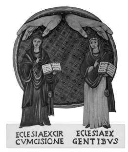

Liège (Belgique)
Image de couverture
Transposition artistique, par Emmanuelle VAN NOPPEN MACINA, du célèbre motif de la basilique Sainte Sabine (V e s.) sur le Mont Aventin (Italie). Traduction des inscriptions latines dans leur graphie originale: ECCLESIA EX CIRCUMCISIONE (Église de la Circoncision = les Juifs) – ECCLESIA EX GENTIBUS (Église des nations = les Chrétiens). L’œuvre originale figure à l’adresse Web suivante: http://web.tiscalinet.it/nostreradici/dialogo_Martini.htm.
© Éditions Tsofim, 2016
http://www.tsofim.org/pages/editions-tsofim/
« Le Code de la propriété intellectuelle interdit les copies ou reproductions destinées à une utilisation collective. Toute représentation ou reproduction, intégrale ou partielle, faite par quelque procédé que ce soit, sans le consentement de l’auteur ou de ses ayants cause, est illicite et constitue une contrefaçon, aux termes des articles L.335-2 et suivants du Code de la propriété intellectuelle. »
Sept années se sont écoulées entre la première édition de ce travail et celle que j’en propose en cette fin d’année 2016. Bien entendu je l’ai complétée et enrichie.
En 2009, date de la première parution de mon ouvrage, j’étais de ceux qui commençaient à entrevoir les possibilités étonnantes de l’Internet et se donnaient beaucoup de mal pour en acquérir la maîtrise – au niveau utilisateur s’entend. Attentif aux débuts prometteurs du livre électronique, ou « livre numérique », je rêvais d’une époque, que j’estimais proche, où les technologies numériques, combinées à la puissance énorme de diffusion via le réseau Internet, non seulement mettraient les oeuvres littéraires à la portée d’un très grand nombre de lecteurs, mais leur permettraient de tirer un meilleur parti des contenus, notamment par le jeu des hyperliens.
Sous l’influence de pionniers tel Hugh McGuire, le créateur de Pressbooks, j’étais convaincu que « les livres et l’internet allaient fusionner », et je rêvais de « lier mes livres au navigateur », comme ne tarderait pas à le suggérer un certain blog, parmi d’autres, en 2012.
C’est dans cet esprit que je conçus l’apparat critique de mon livre en couplant ses notes à un site Internet qui renvoyait, par des liens cliquables, à des documents, dont la majorité sont en ligne sur mon site rivtsion.org. Dans la « Brève notice technique » qui figurait en tout début de la première édition du présent ouvrage, je précisais: « Ce dispositif permet au lecteur internaute d’accéder directement à des compléments d’information et de connaissances, auxquels des liens le renvoient. »
Malheureusement, ce système était trop nouveau et relativement sophistiqué pour mes lecteurs internautes, si bien que, déroutés, la majeure partie d’entre eux n’utilisèrent pas ses fonctionnalités. De ce fait, ils n’eurent pas accès aux nombreuses notes, excursus et annexes que j’avais mis en ligne sur mon site, pour alléger le livre papier, ce qui constitua pour eux une frustration bien compréhensible.
La présente édition – on l’aura compris – a renoncé à ce système, et toutes les notes et compléments de contenus figurent dans ses pages. Toutefois, fidèle à mon intuition initiale, j’ai conservé le meilleur des deux mondes de l’édition, à savoir, le livre-papier et les sites Web. C’est ainsi que j’ai mis en ligne une grande partie de ma production intellectuelle dans les sections thématiques de l’espace que m’alloue le site hébergeur Academia.edu.
Je ne saurais trop recommander aux lecteurs de cette deuxième édition de mon livre, de ne pas hésiter à tirer un parti maximum des nombreux hyperliens dont j’ai équipé ces pages. Cette consultation ne facilitera pas seulement leur compréhension de mon étude, mais elle enrichira considérablement leur connaissance générale du sujet et des thèmes qui s’y rattachent.
Pour finir, je précise que, si la cause immédiate de cette nouvelle édition est technique, comme je viens de l’expliquer, une autre raison - plus existentielle celle-là - y a présidé.
Je veux parler de la prise de conscience qui a été la mienne au cours de la décennie écoulée, de la dégradation - de plus en plus alarmante et qui semble inexorable – de la perception qu’ont des myriades d’hommes et de femmes dans le monde, de l’être juif dans ses composantes humaine, sociologique, culturelle et religieuse, et de la contradiction universelle qu’il suscite 1.
Si vous êtes de ceux et celles qui ont (un peu trop vite) oublié ce phénomène, en quelque sorte coextensif de l’existence du peuple juif, vous pouvez constater que l’actualité se charge de vous le rappeler sans cesse, au travers de la contestation permanente quasi universelle à laquelle l’État d’Israël est en butte, au prétexte du contentieux palestinien.
Et si ce n’est pas suffisant, sachez qu’en cette deuxième décade du vingt-et-unième siècle est paru un livre au contenu antisémite indéniable, intitulé « Pensées théologiquement incorrectes » dont l’auteur et l’éditeur sont des catholiques italiens traditionnels. Loin d’être une fiction ou un pamphlet sans consistance, l’ouvrage est un véritable manifeste idéologique, dans l’esprit de l’aile conservatrice des prélats radicalement hostiles à la Déclaration sur les Juifs ( Nostra Aetate, 4), qui dénonce, en termes aussi clairs que dogmatiques, la nature perverse du juif universel, assassin du Christ, ploutocrate, ennemi irréductible et destructeur de l’Église et de la société chrétienne, dont on ressasse à satiété qu’il fut et reste « déicide ».
La lecture de cet ouvrage a constitué pour moi une piqûre de rappel, et j’invite celles et ceux qui croient encore que tout cela est du passé – comme c’était mon cas jusqu’à cette découverte, nauséabonde et inquiétante –, à lire l’article que j’ai consacré à cette affaire, sous le titre: « La ‘Question juive’ revient, plus diabolisée et décomplexée que jamais, sur la scène éditoriale italienne », et à en tirer les conséquences.
1 Voir mon livre, Si les chrétiens s’enorgueillissent (A propos de Rm 11, 20-21); p. 101 et ss. du pdf en ligne sur le site Academia.edu.

Illustration d’Emmanuelle Van Noppen - Macina
Une œuvre, un auteur. Quiconque aura en mains les pages du travail ( Chrétiens et juifs depuis Vatican II. État des lieux historique et théologique. Prospective Eschatologique, Paris, Éditions Docteur angélique, 2009, 397 pages) de Menahem Macina, diplômé de l’Université Hébraïque de Jérusalem, chercheur et ancien enseignant dans plusieurs universités, éprouvera la nette sensation de vibrer avec l’auteur même, et non de se trouver devant une recherche aseptique, quoique documentée. Et ce sans rien enlever pour autant à la rigueur de la documentation et à la clarté de l’exposé: il n'existe pas de bouclier protecteur qui atténue ou tempère les résultats et cela rassure, parce que le nerf de la recherche n’a pas l’accent d’une captatio benevolentiae, mais celui d’une affirmation personnelle, pesée et réfléchie, ouverte à la libre évaluation d’autrui. Une suggestion souhaitable, peut-être: lire en premier la postface, puis entrer dans le cœur de l’œuvre, en laissant l'auteur lui-même vous conduire dans son témoignage, passionné mais sans l’ombre d’une polémique intentionnelle.
La richesse des documents cités ne peut que créer une base objective, indiscutable; ce qui est critiquable est dénoncé mais avec respect. Un instrument papier passionné et passionnant, donc – que résume bien la couverture, réalisée par Emmanuelle Van Noppen, épouse de l’auteur –, qui propose et illustre, après le grand événement du Concile Vatican
II, la transposition, réfléchie et lucide, de la célèbre mosaïque, du V e siècle de la Basilique de Sainte Sabine sur l’Aventin, représentant l’Église de la Circoncision, les Juifs, et l’Église des nations.
Les pages papier s’avèrent, en fait, interactives, car enrichies d’une myriade de liens et d’adresses de pages Web qui renvoient au très riche site de l'auteur ( rivtsion.org ) et constituent une sorte d’encyclopédie multimédia qui répond aux doutes et aux interrogations.
Les huit parties, qui s’imbriquent sur le papier et sur le Web simultanément, réussissent à construire une théologie qui exige un respect mutuel pour jeter les bases d'un dialogue entre Juifs et Chrétiens qui, s’il connaît des stagnations, des amertumes et des malentendus, ne peut cependant plus se situer sur le plan du rejet, car il est fondé sur la conscience d'être « les deux faces d'un même mystère ». Ce qui, par conséquent, doit générer une théologie qui ne soit plus inadéquate à la gestion du « mystère d’Israël et de son incarnation ». Nous sommes deux familles que Dieu a choisies (cf. Jr 33, 24) et qui doivent apprendre un « nouveau regard » dirigé vers le dessein divin, à la lumière des Écritures, dans la vivante certitude d’expérimenter constamment la preuve de l’incarnation d’Israël, de Jérusalem et des nations.
Piste prophétique, en tant que seule possibilité, pleine de respect pour tout choix de conscience, comme, dans ce cas spécifique, celui de l'auteur qui, accidentellement, à 35 ans, a découvert la lointaine origine juive de son père biologique, un Kabyle musulman non pratiquant, et a amené lentement ce fils chrétien d’une mère non pratiquante mais croyante, qui l’avait fait baptiser, à franchir le pas de la teshuvah, du retour, tout en conservant une particularité exprimée sans simulation. Témoin ce passage d’une interview de l’auteur:
« Ma foi chrétienne dans la messianité du Christ est totalement indissociable de ma foi juive au "Royaume qui vient, de notre père David" (cf. Mc, 11, 10). Ma foi chrétienne dans l’accomplissement des Écritures et des prophéties dans le Christ est totalement inséparable de ma foi juive dans le rétablissement du peuple juif et de sa royauté messianique (cf. Ac 1, 6). Enfin, l’impossibilité de justifier ma démarche m’a fait entrer dans le mystère de l’altérité radicale de la vocation juive. »
La terminologie de Macina doit toujours être observée de près: Église, pour l’auteur, signifie et inclut « tous les courants de la foi chrétienne », « entre autres, le protestantisme et l’orthodoxie », même si l’attention est surtout dirigée sur l’Église catholique.
Une longue méditation, spirituelle, théologique et eschatologique, donc, et un approfondissement de ses thèmes, dans leur signification biblique prégnante de rencontre, de racine et de projection dans l’histoire. En la lisant, on pourra être en accord ou en désaccord – même largement –, avec telle ou telle opinion exprimée, mais jamais – je le souligne – elle ne se superpose au donné ni ne le contamine.
Néanmoins, les attentes des lecteurs chrétiens ne seront ni déçues ni négligées – « …car c’est à eux d’abord, à eux surtout, qu’est destiné cet écrit » – des attentes qui peuvent prendre la forme d’un accomplissement prophétique: « Qu’ils en examinent le témoignage malgré l’indignité de « l’instrument d’argile qui le porte » (cf. 2 Co 4, 7) et « qu’ils discernent » (cf. 1 Co 14, 29).
C’est à juste titre qu’ Yves Chevalier, directeur de Sens, revue de l’ Amitié Judéo- Chrétienne, rappelait le titre de l’article d’un mien confrère de l’Ordre du Carmel, Michel de Goedt [+ 2009], qui s’est tant investi dans la recherche du mystère d’Israël et a tissé des relations respectueuses et neuves avec le peuple de l’Alliance: « La véritable « question juive », pour les Chrétiens: celle qui les met eux-mêmes en question ».
Une œuvre, un auteur certes, comme affirmé au début de cette critique: une contribution prophétique pour les Juifs et les Chrétiens.
* En fait, ce texte n’est pas une préface, mais une recension. C’est son caractère extrêmement empathique qui m’a convaincu de le mettre en tête de ce volume, et comme sous ses auspices tutélaires. Le texte original italien figure sur le site Il Cattolico, sous le titre “Gli Ebrei, i Cristiani e i luoghi del dialogo. Indagine e personale esperienza spirituale in un volume di Menachem Macina”, ainsi que sur Scheggia.
Ce livre est la quintessence d'une méditation, spirituelle autant que théologique, de plus de cinquante années, sur les modalités de l'établissement du Royaume de Dieu sur la terre, ainsi que sur les dispositions intérieures et la rectitude de conscience, dont doivent faire preuve ceux qui soupirent après son avènement et s’y préparent, dans la prière et la recherche de la justice de Dieu (cf. Mt 6, 33).
Durant près de deux millénaires les rapports entre les chrétiens et les juifs ont été complexes, passionnels, voire violents. Le monde chrétien n’a longtemps connu l’histoire du peuple juif qu’au travers de l’enseignement d’une Église, dont la majeure partie des Pères avait interprété l’écrasement et la dispersion des Juifs, en 135 de notre ère, comme un châtiment de leur refus de croire à la messianité et à la divinité du Christ. Il en a pris de longs siècles d’ « enseignement du mépris » et de tentatives de captation ecclésiale de l’héritage spirituel juif et des promesses des prophètes - considérées comme accomplies par le Christ et désormais dévolues à la chrétienté (théorie de la substitution) -, pour que se fasse jour, en chrétienté, une attitude plus positive envers les juifs. Jusqu’au choc de la Shoah qui fut, pour beaucoup, l’occasion de découvrir le destin, mystérieux et tragique, de ce peuple hors normes. Lorsque s’ouvrit le Deuxième Concile du Vatican, en 1962, personne ne s’attendait au changement dramatique qui allait se produire, sous l’impulsion du cardinal Bea, auquel le « Bon Pape Jean » avait confié la tâche d’élaborer un « Schéma sur les Juifs ». Ce projet déchaîna une telle hostilité de la part de prélats conservateurs qu’il suscita, chez les Pères conciliaires, une réaction inverse, dans laquelle s’exprimait une tendance, jusque-là indécise et hésitante, vers un changement positif de l’attitude chrétienne envers le peuple juif. On lit, dans le paragraphe 4 de la Déclaration sur les Religions Non Chrétiennes, Nostra Aetate, que « les juifs restent très chers à Dieu, dont les dons et l’appel sont sans repentance (cf. Romains 11, 28-29) ». Mieux, après avoir si longtemps prôné la ségrégation la plus rigoureuse d’avec ce peuple, le Concile « encourageait et recommandait entre eux la connaissance et l'estime mutuelles, qui naîtront surtout d'études bibliques et théologiques, ainsi que d'un dialogue fraternel ». Enfin, même si les déclarations encourageantes étaient mêlées à des considérations ressortissant à l’ancienne méfiance chrétienne envers le judaïsme, le changement radical d’attitude se traduisait, de manière indéniable, en des formules novatrices, telle celle–ci: « les Juifs ne doivent pas […] être présentés comme réprouvés par Dieu, ni maudits, comme si cela découlait de la Sainte Écriture ». Au cours des décennies subséquentes, les graines semées au Concile, d’abord accueillies avec hésitation et méfiance, portèrent des fruits inespérés. En témoigne cette phrase du pape Jean-Paul II, lors d’une allocution aux dirigeants des communautés juives d’Allemagne, le 17 novembre 1980, à Mayence: « le peuple de Dieu de l’Ancienne Alliance jamais révoquée par Dieu… ». Elle eût été impensable auparavant. Le présent livre retrace les étapes de la longue marche, ponctuée d’ombres et de lumières, vers la reconnaissance du dessein de Dieu sur les juifs et les chrétiens, dans lesquels j’ai l’audace de voir un avatar typologique des « deux familles choisies par Dieu », dont parle Jérémie (33, 24). J’ose même entraîner le lecteur chrétien dans une relecture spirituelle de l’Écriture, dont, je crois, maints passages dévoilent prophétiquement leur vocation respective et l’unité à laquelle L’Église et Israël sont appelés, tels, entre autres, celui de la geste des deux morceaux de bois en Ezéchiel (37,
17) – « qu’ils ne fassent qu’un dans ta main » -, et celui où Paul exprime la même réalité, en une formule théologique inspirée (Ep 2, 14): « Car c'est lui qui est notre paix, lui qui des deux a fait un… » L’ouvrage s’achève sur l’évocation de la contestation mondiale dont l’État juif est l’objet, et de la pierre d’achoppement qu’il constitue pour beaucoup de chrétiens. J’estime, en effet, qu’en se mettant à la remorque des faux prophètes de l’antisionisme, qui accusent Israël de néo-colonialisme et d’apartheid, non seulement ils attisent la haine contre ce peuple, mais ils risquent de se « trouver en guerre contre Dieu lui-même » (cf. Ac 5, 39), dont ils ignorent les desseins, et de paver la voie à la montée hostile des nations, annoncée, entre autres, par les prophètes Joël (4, 1ss.), Michée (4, 8ss), et Zacharie (12, 3), ainsi que par le Psaume 2. C'est volontairement que je me suis interdit la forme technique qu'affectent généralement les ouvrages consacrés à de tels sujets. Il ne s'agit donc ni d'une somme ni même d'un essai théologiques. À quelques exceptions près, les nombreux ouvrages qui traitent ex cathedra de ce thème ne sont pas évoqués. Ce qui ne veut pas dire qu'il n'en a pas été tenu compte, au contraire. Mais, comme l'indique le sous-titre de ce livre, il a paru préférable de privilégier la méditation et la réflexion sur le mystère – car c'en est un – plutôt que de procéder à un exposé rigoureusement technique.
C'est pourquoi, on le verra, je n’ai pas dédaigné, quand je l’ai cru utile, de m’exprimer de manière méditative, exhortative, voire spirituelle, en recourant à l'Écriture – massivement citée –, mais aussi aux œuvres des Sages juifs, des anciens Pères et de la Tradition de l'Église; ceci afin de permettre au lecteur de se forger un jugement sur base de textes de référence, fiables et vénérables.
Mais la majeure partie du livre consiste en exposés analytiques concernant des questions généralement mal connues des chrétiens, surtout celles qui n'ont pas fait l'objet d'un enseignement ecclésial autorisé, et dont certains aspects restent encore disputés entre théologiens. C'est, bien entendu, le cas de ce qu'on appelle « l'eschatologie », ou enseignement concernant les temps ultimes de l'histoire du Salut, caractérisés par le surgissement en gloire de la Royauté du Christ sur le monde, ou « Parousie », événement qui, aux dires de l’Écriture, sera précédé par une « apostasie » générale, et accompagné de violents conflits et catastrophes, humaines et cosmiques, qu’ont annoncé tant Jésus lui-même (Mt 24 = Mc 13 = Lc 21, etc.), que l'apôtre Paul (2 Th 2, etc.).
Aucun ouvrage n'est neutre, même si son auteur s'en défend. Celui-ci ne fait pas exception. Toute ma démarche repose sur la conviction – fondée ou erronée: l'avenir le dira – que sont inaugurés « les temps de l’apocatastase 2 de tout ce que Dieu a énoncé par la bouche de ses saints prophètes de toujours » (Ac 3, 21). Selon cette conception, l'un des signes précurseurs de cet accomplissement est la lente réappropriation, par le peuple juif, de son identité nationale, linguistique et territoriale, processus initié à la fin du XIX e siècle, et passé totalement inaperçu des nations, jusqu'à la création de l'État d'Israël, en 1948, au lendemain de la Shoah.
Force est d’en convenir: tant la contradiction - de plus en plus violente – suscitée par ce peuple, que la place démesurée que tiennent, dans les médias, les événements du Proche- Orient, dans lesquels Israël est impliqué, et la manière, majoritairement hostile, dont réagissent les institutions internationales et la presse au moindre faux pas, réel ou supposé, de cet État, ne peuvent s'expliquer uniquement par des considérations 2 Concernant cette traduction, qui s'écarte notablement de ce qu'on lit dans la plupart des bibles en langues modernes, voir ici, plus loin, VII.3, et VII, 4.3.
politiciennes (intérêts géostratégiques, entre autres), ou humanitaires (problème palestinien).
L'intuition développée dans cet ouvrage est que l'humanité pourrait bien, dans un proche avenir, être confrontée à une épreuve de vérité, dont la pierre de touche serait – une fois de plus, mais ce sera la dernière – l'attitude que les peuples et les individus, en général, et les chrétiens en particulier, adopteront à l'égard de ce peuple, lorsqu'il sera victime de l'ultime agression prédite par les prophètes et dont témoignent, entre autres, les deux textes scripturaires suivants:
Jl 4: Car en ces jours-là, en ce temps-là, quand je rétablirai Juda et Jérusalem, je rassemblerai toutes les nations, je les ferai descendre à la Vallée de Josaphat; là j'entrerai en jugement avec elles au sujet d'Israël, mon peuple et mon héritage. Car ils l'ont dispersé parmi les nations et ils ont partagé mon pays […] Publiez ceci parmi les nations: Préparez la guerre! Appelez les braves! Qu'ils s'avancent, qu'ils montent, tous les hommes de guerre! […] Hâtez-vous et venez, toutes les nations d'alentour, et rassemblez-vous là!… Que les nations s'ébranlent et qu'elles montent à la Vallée de Josaphat! Car là je siégerai pour juger toutes les nations à la ronde. Lancez la faucille: la moisson est mûre; venez, foulez: le pressoir est comble; les cuves débordent, tant leur méchanceté est grande! Foules sur foules dans la Vallée de la Décision! Car il est proche le jour de L’É TERNEL dans la Vallée de la Décision! Le soleil et la lune s'assombrissent, les étoiles perdent leur éclat [cf. Jl 3, 4; Mt 24, 29; Ac 2, 20; Ap 6, 12; 8, 12]. L’É TERNEL rugit de Sion, de Jérusalem il fait entendre sa voix; les cieux et la terre tremblent! Mais L’É TERNEL sera pour son peuple un refuge, une forteresse pour les enfants d'Israël! Vous saurez alors que je suis L’É TERNEL, votre Dieu, qui habite à Sion, ma montagne sainte! Jérusalem sera un lieu saint, les étrangers n'y passeront plus! Ce jour-là, les montagnes dégoutteront de vin nouveau, les collines ruisselleront de lait, et dans tous les torrents de Juda les eaux ruisselleront. Une source jaillira de la maison de L’É TERNEL et arrosera le ravin des Acacias. L'Égypte deviendra une désolation, Edom une lande désolée, à cause des violences exercées contre les fils de Juda dont ils ont versé le sang innocent dans leur pays. Mais Juda sera habité à jamais et Jérusalem d'âge en âge. Je vengerai leur sang, je n'accorderai pas l'impunité, et L’É TERNEL aura sa demeure à Sion.
Ps 2: Pourquoi les nations sont-elles en ébullition, et les peuples trament-ils des choses vaines? Des rois de la terre et des princes se dressent et conspirent contre L’É TERNEL et contre son Oint: « Faisons sauter leurs entraves, débarrassons-les de leurs liens! » Celui qui siège dans les cieux s'en amuse, L’É TERNEL les tourne en dérision. Puis dans sa colère il leur parle, dans sa fureur il les épouvante: « C'est moi qui ai sacré mon roi sur Sion, ma montagne sainte. » J'énoncerai le décret de L’É TERNEL: Il m'a dit: « Tu es mon fils, moi, aujourd'hui, je t'ai engendré. Demande, et je te donne les nations pour héritage, pour domaine les extrémités de la terre; tu les briseras avec un sceptre de fer, comme vases de potier tu les écraseras. » Et maintenant, rois, comprenez, corrigez-vous, juges de la terre! Servez L’É TERNEL avec crainte, embrassez le Pur avec tremblement; qu'il se fâche, vous vous perdez en chemin: d'un coup flambe sa colère. Heureux qui s'abrite en lui! 3
En outre, ce n'est certainement pas un hasard si la redécouverte, relativement récente, du caractère vénérable - et qui fut orthodoxe, durant les tout premiers siècles de l'Église - des conceptions millénaristes connotant un règne du Christ sur la terre avec les élus, conformément aux conceptions de l'Apocalypse (Ap 20, 2 ss), reprises et développées par des Pères de l'Église aussi orthodoxes que Justin martyr (IIe s.) et Irénée de Lyon (fin du
3 Ce texte est habituellement revendiqué par les chrétiens comme s'appliquant au Christ Jésus. Mais il faut savoir que la Tradition juive y voit, décrite prophétiquement, la situation qui sera celle du peuple d'Israël parvenu à son stade messianique. L'« Oint », étant compris soit au sens collectif, soit comme le Messie juif de la lignée de David, qui sera alors révélé pour régner sur son peuple, soulevant ainsi la colère des nations, qui refuseront ce ‘scénario’. On reviendra sur ce thème, en son lieu.
II e - début du III e s.), et revivifiées par la mouvance du pré-millénarisme protestant 4, s'accompagne souvent d'une perception aiguë du rôle incontournable d'Israël dans l'économie du Salut 5.
C'est le cas, par exemple, de Jurgen Moltmann, un théologien protestant qui écrit 6:
Paul a-t-il exprimé des perspectives millénaristes pour l'avenir? Le Royaume de mille ans n'est certainement pas un élément de son message, mais il a bel et bien utilisé des conceptions millénaristes. L'idée selon laquelle ceux qui souffrent à présent avec le Christ régneront un jour avec lui, est une conception millénariste: « Ne savez-vous pas que nous jugerons le monde? » (1 Co 6, 2). « Si nous persévérons, nous régnerons aussi avec lui » (2 Tm 2, 12) […] L'expression 'résurrection d'entre les morts' est utilisée par Paul (Ph 3, 11) et Luc (Lc 20, 35) pour les croyants qui seront ressuscités avant les autres morts, afin qu'ils puissent être avec le Christ et se manifester avec lui, lors de sa venue (Col 3, 3 ss.). Cette « 'résurrection d'entre les morts » est une résurrection analogue à celle du Christ, et non une simple anticipation de la résurrection générale. Il est pour le moins étonnant que Paul décrive la rédemption future d'Israël en termes très similaires: « Car si leur rejet signifie la réconciliation du monde, que sera leur inclusion sinon une vie d'entre les morts! » (Rm 11, 15). La résurrection d'entre les morts oriente vers un avenir de résurrection et de vie avec le Christ avant le terme eschatologique de l'histoire, et ne peut être comprise que dans un sens millénariste. Le fait que cet espoir messianique de ceux qui croient au Christ ouvre, pour Israël, la perspective d'un événement futur analogue semble être la marque spécifique d'un pré-millénarisme chrétien. C'est, concernant les Juifs, le rêve chrétien non de leur conversion à l'Église, mais de leur résurrection dans le Royaume de leur Messie. Dans son ouvrage cité, Charles Cadwell Ryrie, écrit, pour sa part, à propos de la citation de Gn 12, 3 dans Ga 3, 7-9 7:
Selon cette prophétie, les païens seront des fils d'Abraham par la foi. Paul cite ici ces paroles en rapport avec leur accomplissement à l'égard des nations: « Toutes les nations seront bénies en toi » (Ga 3, 8), ce qui ne remplace nullement l'accomplissement de cette parole envers la nation juive: « Je ferai de toi une grande nation » (Gn 12, 2), et « Tout Israël sera sauvé… » (Rm 11, 25-26). S'il est évident que les Gentils dans l'Église constituent la postérité spirituelle d'Abraham, l’accomplissement des prophéties faites à Abraham au sujet de sa postérité physique, les Juifs, n'en est pas modifié pour autant. Cette citation de l'Ancien Testament dans le Nouveau au sujet de la postérité d'Abraham n'est donc pas la preuve d'un accomplissement intégral, par l'Église, des prophéties faites au sujet de la nation juive, et encore moins d'une suppression de leur application littérale à la nation juive.
4 Contrairement aux post-millénaristes, qui « affirment que mille ans de paix et de justice précéderont le retour du Christ », les pré-millénaristes enseignent que « Jésus Christ viendra chercher son Église, qui sera élevée dans les airs à sa rencontre, à la fin de l'époque actuelle (1 Th 4, 13-18) […] Selon la pensée de certains, la grande tribulation (Mt 24, 21: Dn 12, 1) fera suite à cet enlèvement. Puis le Christ reviendra sur la terre pendant mille ans, durant lesquels s'accompliront de nombreuses promesses faites à Israël. » Ceci d'après: Ch. Ryrie et H. Payne, 1000 ans de paix: Le Millénium, image ou réalité? (traduction de Ch. C. Ryrie, The Basis of the Premillenial Faith, Québec, Canada, 1962), Éd. Béthel, Sherbrook, Québec, 1982, pp. 16-17. Cité, ci-après: Ryrie, 1000 ans. 5 On lira une réflexion théologique, parfois audacieuse, sur ce thème, dans l’ouvrage de Jürgen Moltmann, Das Kommen Gottes: Christliche Eschatologie, 1995. Version française intitulée: La venue de Dieu. Eschatologie chrétienne, éditions du Cerf, Paris 2000. 6 Moltmann, La venue de Dieu, op. cit., pp. 189-190. 7 Ryrie, 1000 ans, p. 53.
Les déclarations et documents des Églises concernant les relations entre chrétiens et juifs, depuis la déclaration Nostra Aetate, 4, vont dans le même sens que les textes cités ci- dessus, même si c'est en termes plus prudents, ainsi qu'il sied à des documents destinés à l'ensemble des fidèles. Je me contenterai d'évoquer ici, à l'appui de mon affirmation, la formule particulièrement frappante de Jean-Paul II, lors de l'allocution qu'il prononça à Mayence, devant les représentants des Communautés juives d'Allemagne, en novembre 1980 8:
La première dimension de ce dialogue, à savoir la rencontre entre le Peuple de Dieu de l'Ancienne Alliance, jamais révoquée par Dieu (cf. Rm 11, 29), et celui de la Nouvelle Alliance, est en même temps un dialogue interne à notre Église, c'est-à-dire entre la première et la deuxième partie de sa Bible.
De telles paroles n'ont pas été dites au hasard, ni ne sont à mettre au compte des hyperboles, fréquentes dans les discours à caractère interreligieux. La preuve en est que l'expression « Ancienne Alliance jamais révoquée par Dieu » est reprise dans les Notes, autre document catholique important concernant la dynamique des relations entre l'Église et le peuple juif, où on lui décerne même l'appréciation de « remarquable formule théologique » 9.
Toutefois, force est de reconnaître que, malgré sa justesse profonde et son caractère de plus en plus prophétique, cette démarche ecclésiale de dialogue avec les juifs se heurte à la pierre d'achoppement incontournable, si justement évoquée par l'apôtre Paul (Rm 9, 32): la non-reconnaissance par les juifs de la divinité et de la messianité du Christ Jésus. Et il ne sert à rien, en la matière, de repousser aux calendes de l'histoire une éventuelle conversion miraculeuse des juifs, comme si tout ce que les chrétiens avaient à faire, d'ici là, était d'attendre cet événement, quasi mythique, sous la forme d'une reddition confessionnelle de ce peuple « à la nuque raide et au cœur incirconcis » (cf. Ex 32, 9 et parall.), qui, à l'évidence selon eux, « résiste toujours à l’Esprit Saint » (cf. Ac 7, 51).
L'une des conceptions fondamentales du présent livre est que les Églises doivent cesser de considérer « l’Israël selon la chair » comme un objet de conversion au christianisme, comme si l'histoire du Peuple de Dieu et l’économie du Salut s'étaient figées autour des années 30 de notre ère, et que toutes les prophéties s'étaient accomplies, concrètement ou spirituellement, en Jésus-Christ. Au contraire, le sensus fidei de maints chrétiens s'oriente de plus en plus vers la « révélation d'un mystère enveloppé de silence aux siècles éternels » (Rm 16, 25), dans lequel, à la centralité de Jésus dans l'économie du Salut correspondrait celle du peuple juif dans l’économie du Royaume. Ainsi prendraient enfin leur sens plénier tant la formule vétérotestamentaire: « Qui vous touche, touche à la prunelle de mon œil » (Za 2, 12), que la néotestamentaire: « Le salut vient des Juifs » (Jn 4, 22).
La chrétienté doit résolument tourner le dos à ce qu'on a appelé si justement la « théorie de la substitution », selon laquelle les Promesses et le Royaume auraient été définitivement transférés à l'Église. Elle doit prendre au sérieux les paroles décisives de Paul, à ce propos:
8 Texte original allemand dans l' Osservatore Romano des 17-18 novembre 1980, reproduit dans Acta Apostolicae Sedis (AAS), vol. 73, 1981, pp. 80 ss. Traduction française dans Istina, n° XXXVI (1986), pp. 192- 195. Texte en ligne sur le site de l’église catholique à Paris. 9 Notes pour une correcte présentation des juifs et du judaïsme dans la prédication et la catéchèse de l'Église catholique, en date du 24 juin 1985, I, 3.
Rm 9, 4: À eux [les juifs] appartiennent l'adoption filiale, la gloire, les alliances, la législation, le culte, les promesses…
Rm 11, 2: Dieu n'a pas rejeté le peuple qu'il a discerné par avance.
Rm 11, 19-22: Tu diras: On a coupé des branches, pour que, moi, je fusse greffé. Fort bien. Elles ont été coupées pour leur incrédulité, et c'est la foi qui te fait tenir. Ne t'enorgueillis pas; crains plutôt. Car, si Dieu n'a pas épargné les branches naturelles, prends garde qu'il ne t'épargne pas davantage. Considère donc la bonté et la sévérité de Dieu: sévérité envers ceux qui sont tombés, et envers toi bonté, pourvu que tu demeures en cette bonté; autrement tu seras retranché toi aussi.
La chrétienté doit cesser de lire au sens exclusivement spirituel des textes capitaux pour la compréhension du rôle futur d'Israël, aux côtés des nations qui ont cru en Jésus-Christ, tel celui-ci:
Ac 1, 6-7: Étant donc réunis, ils l'interrogeaient ainsi: « Seigneur, est-ce maintenant le temps où tu vas manifester la royauté destinée à Israël? » Il leur répondit: « Il ne vous appartient pas de connaître les temps et les moments que le Père a fixés de sa seule autorité ».
Des évêques catholiques allemands ont fait preuve d'un véritable esprit prophétique en voyant, dans ce passage, la perspective d'un rétablissement eschatologique d'Israël, comme en témoigne cet extrait d'un document qu'ils ont rédigé 10:
Dans les Actes des Apôtres, on trouve l'affirmation prophétique du rétablissement eschatologique d'Israël. Ainsi, les Apôtres interrogent le ressuscité: « Est-ce maintenant le temps où tu vas rétablir le Royaume pour Israël? ». Dans sa réponse, Jésus ne disqualifie pas cette question des Apôtres comme étant absurde 11, il fait seulement allusion au fait que le Père seul, dans sa Toute-Puissance, a décidé du temps fixé pour ce « rétablissement » du Royaume pour Israël.
De tels textes et déclarations vont dans la bonne direction. Ils témoignent de la véracité de la promesse du Christ, que nous rapporte l'Évangile de Jean (Jn 16, 12-13):
J'ai encore beaucoup à vous dire, mais vous ne pouvez pas le porter à présent. Mais quand il viendra, lui, l'Esprit de vérité, il vous introduira dans la vérité tout entière; car il ne parlera pas de lui-même, mais ce qu'il entendra, il le dira, et il vous dévoilera les choses à venir.
Le temps semble bien être venu, pour l'Église et pour le judaïsme, d'un face-à-face sans précédent. Mais, compte tenu de la « pierre d'achoppement » que constitue l’incrédulité juive, évoquée plus haut, et pour que les conditions mêmes d'un tel dialogue soient 10 L'Église et les Juifs, Document de la Conférence des Évêques allemands, III, 1, Bonn, 1980. Cité et traduit par mes soins d'après More Stepping Stones to Jewish-Christian Relations. An unabridged collection of Christian Documents, compiled by Helga Croner, A Stimulus Book, New York-Mahwah, Paulist Press 1985, VI. Common grounds, p. 134. 11 La majeure partie des traductions de la Bible en langues modernes ne font pas montre d'autant d'inspiration dans leurs commentaires de ce passage, témoins ces textes: « Les Apôtres ont encore des idées fort terrestres » (Osty); « L'établissement du royaume messianique apparaît encore aux apôtres comme une restauration temporelle de la royauté davidique » (Bible de Jérusalem). Au contraire, la Nouvelle édition de la Bible protestante (trad. L. Segond, version revue 1975, avec commentaires de C.I. Scofield), fait preuve d'une plus grande clairvoyance dans son commentaire: « Pendant quarante jours, le Seigneur ressuscité instruisit Ses disciples "des choses qui concernent le royaume de Dieu" (v. 3), d'après les Écritures (Lc 24, 27.32; 44-45). Cependant, un élément fut passé sous silence: le temps où il restaurerait le royaume d'Israël, d'où la question des apôtres. Remarquez que le Seigneur ne leur reproche pas cette préoccupation au sujet du rétablissement du royaume; elle était bien légitime. Mais Sa réponse est en accord avec Son enseignement précédent: les temps font partie du secret de Dieu (Mt 24, 36.42.44; 25, 13; Comparer 1 Th 5, 1). »
posées, encore faut-il que les échanges portent sur un patrimoine commun. Or, même l’Écriture ne joue pas ce rôle, puisque, comme on le sait, l’exégèse qu'en font l'une et l'autre communauté de foi diverge considérablement, précisément en raison de l’interprétation christologique, que fait l'Église, des prophéties vétérotestamentaires.
Quel est donc le thème autour duquel les approches chrétiennes et juives pourraient converger, au point de parvenir à ce qu'on appelle, en physique, le « point de fusion », ou le « seuil critique », lorsque, après des myriades de tentatives infructueuses, se produit soudain un ‘saut qualitatif’ si considérable, que ce qui paraissait impossible, l'instant d'avant, s'avère désormais d'une évidence aveuglante, au point que les deux antagonistes d’hier, enfin devenus partenaires, se demanderont ensuite comment ils ont pu passer durant si longtemps à côté de cette découverte?
La réponse ici donnée paraîtra peut-être trop symbolique à certains, pourtant, elle est loin d'être telle: le « trésor caché » (cf. Mt 13, 44) qu'ont en commun judaïsme et christianisme – ce dernier en ayant d'ailleurs hérité de la Tradition juive – c'est l’attente de l’instauration du Royaume de Dieu sur la terre.
Il est fort dommageable pour la cause même du dialogue entre le judaïsme et le christianisme, que ce dernier ait spiritualisé, voire allégorisé à outrance la notion de Royaume, au point de donner l’impression de vouloir évacuer l’attente ardente ( Marana tha ) de l’établissement, sur la terre 12, de ce Royaume des Cieux (c’est-à-dire celui de Dieu et de son monde céleste), au profit d’une perspective lointaine, et presque mythique, d’un Royaume dans les cieux, dont le signal serait une espèce de ‘big-bang’ à rebours, aussi brutal qu’irréversible, mettant fin au cosmos et à la vie humaine pour faire de nous des anges dans le ciel. Il convient de ne pas oublier que cet établissement du Royaume de Dieu sur la terre, par l’avènement de l’Oint du Seigneur - qui constitue, à proprement parler, l’irruption des Temps messianiques -, est largement attesté par les Prophètes, et également, quoique plus mystérieusement, par le Nouveau Testament lui- même. C’est un dogme fondamental de la foi juive. Mieux, la vocation même du peuple juif semble bien être de témoigner – par la pérennité mystérieuse de son existence, toute pétrie d’attente messianique, et par la contradiction universelle qu’engendre, depuis des millénaires, cette pérennité même –, de la proximité, toujours imminente, du surgissement des Temps messianiques. En effet, l’existence même des juifs - qui ne survivent que pour le Royaume à venir, où ils seront définitivement consolés (cf. Is 40 et 60, etc.) - rappelle sans cesse aux chrétiens, dont beaucoup se sont endormis sur les lauriers illusoires de la « théologie de la substitution » (cf. Rm 11, 18: « ce n’est pas toi qui portes la racine, mais c’est la racine qui te porte! »), qu’ils ne doivent pas « s’enorgueillir, mais craindre » (cf. Rm 11, 20), et surtout qu’il leur faut « veiller et se tenir prêts, car c'est à l'heure qu’ils ignorent que le Fils de l'homme va venir » (Lc 12, 35- 40).
Le fait d’avoir perdu jusqu’au souvenir de ce qui fait l’essentiel de l’Évangile est peut- être responsable des dérives de certaines théologies. Et, à ce propos, on fera bien de méditer les paroles, sévères mais combien vraies, d’un auteur, dont - il convient de le préciser - l’orientation, en la matière, est plus sociologique qu’eschatologique 13:
Enseignant la littérature néotestamentaire, et plus particulièrement spécialisé dans les évangiles synoptiques, j'ai très vite reconnu que la prédication du Jésus de Nazareth 12 « Déjà présent dans son Église, le Règne du Christ n’est cependant pas encore achevé “avec puissance et grande gloire” (Lc 21, 27) par l’avènement du Roi sur la terre », Catéchisme de l’Église Catholique, Mame-Plon, Paris 1992, § 671. Ouvrage en ligne sur le site du Vatican. 13 B. T. Viviano, Le Royaume de Dieu dans l’histoire, Cerf, Paris 1992, Introduction, pp. 9-11.
historique était centrée sur la venue prochaine du royaume de Dieu. Or, à ma stupéfaction, ce thème n'a pratiquement pas de place dans la théologie systématique qu'on m'a enseignée au séminaire. En y regardant de plus près, je me rendis compte qu'au long de ses deux mille ans d'histoire, l'Église, dans sa théologie, sa spiritualité, sa liturgie, l'avait, de bien des manières, grandement ignoré; et quand elle ne l'avait pas ignoré, elle en avait bien souvent déformé le contenu, jusqu'à le rendre méconnaissable. Comment pouvait-il en être ainsi? Or, d’autre part, en enseignant chrétien conscient de ses responsabilités, qui s’efforce de mettre en rapport le message biblique et les questions de notre temps, en particulier devant l’intérêt toujours plus grand, porté par les Églises à la justice sociale tant chez nous que dans nos relations avec le tiers monde, je me rendais compte également que ces préoccupations modernes trouvaient leur meilleur fondement néotestamentaire précisément dans la proclamation du royaume de Dieu par Jésus. En un mot, pour peu qu’il fût correctement entendu, le royaume avait la force d’un explosif. L’Église s’était-elle efforcée intentionnellement d’étouffer le message du royaume, ou s’agissait-il plus simplement d’un malentendu? Le message s’est-il simplement perdu en route, quand les chrétiens sont passés d’une culture palestinienne à forte dominante apocalyptique, à une culture hellénistique […] Bref, qu’est-il arrivé au royaume de Dieu au cours de l’histoire?
Ce sévère rappel à l'ordre ne doit pas nous faire oublier qu'il existe, heureusement, une large portion de fidèles - qu'il ne faut pas trop vite accuser de « fondamentalisme », de ce fait - qui croient en la capacité qu’a la Parole de Dieu d'englober mystérieusement le devenir de l’homme et les desseins de son Créateur. Attentifs à l'avertissement apostolique de ne pas se laisser « ballotter et emporter à tout vent de doctrine, au gré de l'imposture des hommes et de leur astuce à fourvoyer dans l'erreur » (Ep 4, 14), ils refusent de se laisser impressionner par des citations scripturaires détournées de leur sens, rationalisées ou sécularisées, sous prétexte d’« actualisation ». Ils rappellent qu’aux provocations scripturaires du Diable, Jésus répondit par d’autres citations qui réduisaient à néant les arguments spécieux du Tentateur (cf. Mt 4, 1-11). Enfin, il faut garder à l’esprit la manière dont il ferma la bouche aux Sadducéens qui le mettaient au défi de prouver la résurrection, en usant de l’apologue d’une femme qui aurait eu sept maris, du fait de ses veuvages successifs: « Vous êtes dans l'erreur, ne connaissant ni les Écritures ni la puissance de Dieu! » (Mt 22, 29).
Et même si un tel ‘fidéisme’ scripturaire n'évite pas toujours les excès de l'intolérance - spécialement lorsqu'il a tendance à diaboliser toute tentative de saine actualisation – il semble bien que les chrétiens de cette mouvance n'ont pas entièrement tort d'affirmer que c'est à un rationalisme foncier de ce type que l’on a affaire, avec certains courants modernes d’exégèse qui se posent en norme de l’interprétation scripturaire. Cette prétention – outre qu’elle n’est fondée ni théologiquement, ni scientifiquement – exclut arbitrairement une autre exégèse, qui se veut fidèle à la tradition chrétienne. En effet, malgré les apparences, aujourd’hui comme aux premiers siècles de l’Église - et même s’ils ont souvent mauvaise presse – de nombreux chrétiens croient, sur la base des Écritures elles-mêmes, à l’établissement du Royaume messianique sur la terre (cf. Ap 20), avant la transfiguration définitive de la création matérielle (cf. Ap 21) 14.
14 Et qu’on n'objecte pas trop vite que c’est là une interprétation « fondamentaliste », qui n’a plus cours dans l’Église catholique. Il convient de rappeler que la foi en un Royaume messianique sur la terre était déjà celle de l’Église apostolique (Ac 1, 7), et de Pères aussi vénérables et orthodoxes que Papias (cf. Eusèbe de Césarée, Histoire ecclésiastique, Livre III, Ch. 39, 11-12), Justin Martyr ( Dialogue, 80), et Irénée de Lyon ( Adv. Haer., Livre V, Ch. xxxiii, 1), pour ne citer que ceux-là. C’est le scandale qu'a suscité un Millénarisme subséquent, de caractère matérialiste – qualifié de « grossier » par les historiens – qui a entraîné le discrédit de la croyance en un Royaume du Christ sur la terre avec les premiers ressuscités, avant le Jugement final, puis la dissolution et la transfiguration de la création, accompagnées de la résurrection générale des créatures, dont témoigne une partie de la Tradition, malgré les réticences de l’Église (voir, ci-après VII.3.2.
Force est de le reconnaître: du fait de son long combat contre les résurgences incessantes d’un millénarisme sectaire 15 et contre ses avatars, piétistes d’abord - en particulier les doctrines issues des spéculations apocalyptiques du moine calabrais Joachim de Flore (1140-1202) 16 -, séculiers ensuite 17, l’Église catholique a fini par durcir ses positions 18, au point d’« institutionnaliser », en quelque sorte, la notion évangélique de Royaume.
C’est ainsi que, par son interprétation spirituelle forcée, voire allégorique de l’Apocalypse – dans le but évident d’ôter leurs appuis scripturaires aux millénaristes, qui s’en réclamaient –, un saint Augustin a été la cause d’une ‘cléricalisation’ du Royaume, l’Église devenant la « Cité de Dieu », aux dépens de la « Jérusalem céleste » de l’Apocalypse. Ce qui aurait pu n’être que métaphore, ou pieuse analogie, conformes à l’exégèse du temps, devint progressivement, après l’accession de la foi chrétienne persécutée au statut de religion d’État, une sorte de constitution de droit divin, dans laquelle l’Église, persuadée d’en constituer l’accomplissement, du fait de son élection par le Christ, s’appropriait tranquillement l’exclusivité des promesses messianiques, dont elle dépossédait les juifs, du même coup.
La résistance – d'abord violente, puis passive, par la force des choses – d'un judaïsme qui, bien entendu, pratiquait une tout autre lecture scripturaire, apparut vite insupportable aux chrétiens, persuadés, sur la foi de l’Évangile même, d’avoir hérité du Royaume (Mt 21, 43), et d’autant plus acharnés à convertir ce peuple, qu’ils croyaient assurer le bonheur céleste de ses membres en faisant d’eux des chrétiens, même s’il fallait recourir à la force pour atteindre ce but.
Le Catéchisme de l’Église catholique a-t-il réputé hérétique l’espérance chrétienne vénérable d’un Royaume millénaire du Christ sur la terre?). Enfin, il convient de préciser que certains courants de la Réforme, surtout les Évangéliques, professent plusieurs formes de millénarismes: voir, entre autres ouvrages: The meaning of the Millenium, four views, edited by R.G. Glouse, Downers Grove (USA), 1977; et Ryrie, 1000 ans, cité ci-dessus, n. 3. 15 Sur le Millénarisme des premiers siècles, voir S. Heid, Chiliasmus und Antichrist-Mythos: Eine frühchristliche Kontroverse um das Heilige Land, Bonn 1994. 16 Avec juste raison, le protestant Mottu rappelle toutefois, à la suite d’autres auteurs, que si certaines des doctrines de la postérité de Joachim de Flore furent condamnées, « les œuvres de Joachim lui-même restèrent inattaquées », voir Henri Mottu, La manifestation de l’Esprit selon Joachim de Fiore, Neuchâtel- Paris, 1977, p. 31. 17 Sur ce point, voir surtout l’enquête érudite de H. de Lubac, La postérité spirituelle de Joachim de Flore, I. de Joachim à Schelling, Paris-Namur, 1978; II. de Saint-Simon à nos jours, Ibid. 1980. Il convient aussi de signaler que le russe Soloviev a développé des spéculations originales et très intéressantes sur l’eschatologie, en général, et sur l’ Antichrist, en particulier. On se reportera avec avantage aux contributions de B. Dupuy, « Les juifs, l’histoire et la fin des temps selon Vladimir Soloviev », dans Istina XXXVII (1992), pp. 253-283; B. Marchadier, « Le visage de l’Antéchrist chez Vladimir Soloviev », Id., ibid., pp. 284-293; P. de Laubier, « L’attente d’un âge chrétien à l’intérieur de l’histoire. Aspects eschatologiques chez saint Bonaventure et Vladimir Soloviev », Id., ibid., pp. 294-305. 18 Jusqu’à ce jour, la défiance de la hiérarchie catholique n’a pas varié, même envers les versions les plus mitigées des interprétations de la doctrine millénariste, et le décret du Saint-Office de 1944 est toujours invoqué contre ceux qui voudraient que la question soit réexaminée, à la lumière de la connaissance plus approfondie, qui est la nôtre aujourd’hui, des doctrines de Pères vénérables et orthodoxes, tels Justin et Irénée de Lyon, qui, à n’en pas douter, professèrent, en pleine connaissance de cause, des doctrines millénaristes. Rappelons la phrase essentielle du décret de la Congrégation du Saint Office: « systema Millenarismi mitigati tuto doceri non posse » (le système dit Millénarisme mitigé ne peut être enseigné avec sûreté), voir Acta Apostolicae Sedis, T. 36, 1944, P. 212. Pas de condamnation donc, mais une ferme mise en garde.
Comme le remarque fort justement le théologien Jean-Miguel Garrigues 19:
Ce n’est que depuis ce siècle que les chrétiens ont cessé de considérer l’Église, voire la chrétienté, comme l’achèvement anticipé du Royaume de Dieu sur la terre. En redécouvrant aujourd’hui que Jésus n’a voulu accomplir le Royaume qu’en termes de « prémices » (1 Co 15, 23) et d’« arrhes de l’héritage » (Ep 1, 14; cf. 2 Co 1, 22; 5, 5), ils redécouvrent que leur espérance est incluse dans l’ espérance messianique d’Israël, tendue vers l’avènement glorieux du Messie et de la résurrection des morts […] Dans cette volonté d’annexer Israël en l’humiliant, il y a une mainmise sur « les temps et les moments que le Père a fixés de sa seule autorité » (Ac 1, 7), selon les paroles de Jésus. C’est la tentation de l’hérésie millénariste […]: voir dans une chrétienté donnée – empire chrétien, nations chrétiennes – l’accomplissement du Royaume de Dieu sur la terre, alors que celui-ci appartient à l’au-delà de l’histoire (cf. Jn 18, 36) 20. On sait, hélas, à quoi a conduit cette tentative de mainmise confessionnelle sur un mystère dont seul Dieu « connaît les temps et les moments » de son accomplissement. Devant l’échec patent de leurs tentatives de convertir les juifs, les Pères de l’Église sont trop vite passés du zèle au ressentiment, devenant ainsi involontairement cause d’abord d’un « enseignement du mépris », de nature théologique 21, puis d’une politique chrétienne subséquente de sujétion et d’humiliation des juifs, dont les conséquences amères ont laissé sur ce peuple des cicatrices douloureuses.
Telles sont les lignes de force qui sous-tendent les réflexions et méditations eschatologiques que nous présentons ici au public chrétien. Elles ne prétendent pas ‘résoudre’ un contentieux théologique multiséculaire. Elles s'efforcent seulement de tracer quelques pistes pour une meilleure compréhension chrétienne du mystère d'Israël.
Mon espoir est que, même si la problématique esquissée dans ces pages ne les convainc pas entièrement, les lecteurs feront au moins leur profit de l'ample matériau scripturaire et traditionnel passé en revue à cette occasion, ainsi que de la bibliographie sélective disponible sur l’un de mes sites Web 22.
19 J.-M. Garrigues, Ce Dieu qui passe par des hommes, II. Jésus-Christ unique médiateur entre Dieu et les hommes, Conférences de Carême, Mame, Paris 1993, p. 133. 20 Id., Ibid., I. Les alliances d’Adam à Moïse, Conférences de Carême données à Notre-Dame de Paris, Mame, Paris 1992, p. 129. 21 L'expression, forgée par Jules Isaac, caractérise une prédication et une théologie multiséculaires, dans lesquelles le juif, son histoire, sa foi et ses coutumes sont présentés de manière systématiquement hostile, voire diffamatoire, avec pour conséquence un mépris chrétien croissant envers ce peuple, qui finit par engendrer la haine et dont nous connaissons les fruits amers par l’histoire juive, jalonnée de conversions forcées, d’autodafés, d’accusations de meurtres rituels, de sévices et de massacres, dont l’horreur a culminé sous le nazisme, qui fit de cette hostilité religieuse l’usage racial barbare que l’on sait (cf. l'ouvrage classique de Fadiey Lovsky, Antisémitisme et mystère d'Israël, Albin Michel, Paris, 1955). Vigoureusement flétri par les documents et les déclarations de la hiérarchie catholique, ainsi que par de nombreuses prises de position des différentes confessions protestantes, au long des dernières décennies, force est de reconnaître qu’il subsiste plus que des traces de cet antijudaïsme chrétien, tant dans les écrits que dans les mentalités d’un nombre non négligeable de clercs, pasteurs, simples fidèles autant que théologiens. J’y reviendrai, en son lieu, au cours des exposés qui suivent. 22 Voir « Juifs et chrétiens histoire et théologie – Bibliographie sélective ».
Si, par hypothèse, il était possible d’évaluer - même approximativement - le nombre d’occurrences du mot « juif » et des qualificatifs qui vont avec, ou, mieux encore, de faire le catalogue exhaustif des écrits qui ont été consacrés à ce peuple ou qui l’ont mentionné au fil des siècles, force serait de reconnaître qu’à part Dieu lui-même, nul être, nulle entité au monde n’ont eu le privilège redoutable d’attirer sur eux une attention aussi universelle qu’inquiétante.
Autre originalité, dont les juifs se seraient bien passé: après l’infortune de leur bannissement hors du terreau national, leur histoire n’a pas tardé à tomber dans le domaine public, et ce par suite d’une conjonction, statistiquement improbable, entre l’histoire et la foi. En effet, l’histoire ancienne (certains diront ‘mythique’) d’Israël a eu la particularité de s’inscrire dans le livre le plus lu du monde, le plus sacré aussi: la Bible. Et comme, dans leur zèle, les prophètes de ce peuple éminemment religieux ne lui ménageaient guère les reproches violents, accompagnés de menaces de sanctions terribles pour ses infidélités, et que tout cela figure dans le saint livre, les chrétiens, qui l’ont reçu en héritage, y trouvèrent vite la confirmation de leur certitude: Dieu les avait choisis en lieu et place de ce « peuple à la nuque raide », désormais rejeté au profit du « Nouvel Israël » qui, ils n’en doutaient pas, réussirait là où « l’Ancien Israël » avait échoué.
Dès lors, errants parmi les nations, hôtes tout juste tolérés et souvent molestés, quand ce n’était pas pire, les descendants de cette nation, si fière de son passé, devinrent l’objet d’une attention chrétienne, aussi spécifique qu’ambiguë, qui leur valut de jouer, avec brio, durant de longs siècles, un double rôle. D’une part, objet permanent d’espérance d’une conversion chrétienne; d’autre part, faire-valoir de la « vraie » religion dominante, dont le succès était rendu plus retentissant encore par la condition misérable de la « synagogue vaincue », telle que la représente la statuaire chrétienne: les yeux bandés, en signe d’incroyance, et le sceptre brisé, en signe de déchéance de ses prérogatives, désormais entièrement dévolues à l’Église.
Bien des chrétiens et des juifs ont au moins entendu parler du « nouveau regard » que l’Église a entrepris de porter sur le peuple juif, mais combien ont connaissance de son antijudaïsme multiséculaire antérieur? Et parmi ceux et celles qui savent que ce changement de l’attitude ecclésiale envers les juifs remonte au Concile Vatican II (1962- 1965), combien ont lu la partie de la Déclaration Nostra Aetate (§ 4) 23, consacrée aux juifs, et compris les implications et les limites de ce texte fondateur? Combien connaissent les noms et les contributions des pionniers et des artisans de cette attitude -
23 Littéralement: « À notre époque ». C’est l’usage, dans l’Église catholique, de désigner un document officiel par ses premiers mots. Il s’agit ici du paragraphe 4, spécialement consacré au peuple juif, de la Déclaration du Concile Vatican II, « L’Église et les religions non chrétiennes ». Après maintes péripéties et de chaudes controverses, le texte final en fut promulgué par les Pères conciliaires, le 28 octobre 1965; il est reproduit ci-après (I, 2).
tels, entre autres, Jules Isaac 24 et le cardinal Bea 25? Et si certains spécialistes savent que, dans les années 1926-1928, se fit jour une première tentative pionnière d’un « enseignement de l’estime », avant la lettre et la chose, en l’espèce d’une Association des « Amis d’Israël », d’abord approuvée par l’Église, combien d’entre eux sont à même de rendre un compte satisfaisant des raisons de sa suppression par le Saint-Office, deux ans après sa création 26?
Par ailleurs, s’il est plutôt exceptionnel de se heurter aujourd’hui à des comportements et des discours chrétiens ouvertement antisémites, ou dépréciateurs du peuple juif, on peut se demander si cette attitude est le fruit d’une prise de conscience du tort immense causé aux juifs par dix-neuf siècles de rejet chrétien, ou si elle ne reflète pas plutôt le code de conduite sociale des décennies écoulées, où antisémitisme et racisme ont mauvaise presse. Et dans ces conditions, ne vont-ils pas trop vite en besogne ceux qui affirment que l’antisémitisme et l’antijudaïsme chrétiens appartiennent désormais à un passé définitivement révolu?
En fait, à entendre ou lire certaines réflexions, populaires autant que théologiennes, force est de constater que les bonnes vieilles certitudes sont encore vivaces et qu’à peine chassé, le naturel antijudaïque revient souvent au galop. Dès lors, faut-il donner raison à ceux qui voient, dans cette réaction, le résultat d’une hantise que la foi chrétienne n’apparaisse comme vaine, si l’Église venait à considérer les juifs comme non coupables de n’y avoir pas adhéré, dans leur immense majorité, depuis près de vingt siècles?
24 Historien de métier et inspecteur général de l’enseignement de l’histoire au ministère de l’Éducation nationale, Jules Marx Isaac, juif français (1877-1963), horrifié par la persécution antijuive nazie (sa femme, sa fille et son gendre périrent dans les camps d’extermination), consacra le reste de son existence à étudier et à dénoncer les racines chrétiennes de l’antisémitisme et à prôner un redressement radical de l’enseignement de l’Église concernant le peuple juif. Très mal perçu au début et contesté dans ses analyses, réputées incompétentes, du Nouveau Testament – dont il affirmait que l’enseignement antijudaïque était à la racine de l’antisémitisme chrétien –, il parvint à se faire entendre de certains chrétiens et même du pape Jean XXIII, qui accorda une attention bienveillante à son vibrant plaidoyer en faveur d’une prise de position positive explicite de l’Église envers le peuple juif, et d’une rectification de son enseignement antijudaïque traditionnel. Il fut à l’origine du discrédit croissant de conceptions erronées, telle l’accusation de « déicide », et de l’abolition de la formule « Pro perfidis Iudaeis », dans la liturgie du Vendredi Saint. Et il ne fait guère de doute que son action fut pour quelque chose dans la décision prise par l’autorité suprême de l’Église de traiter des juifs au Concile Vatican II. Principaux ouvrages: Jésus et Israël, Paris, 1948; Genèse de l’antisémitisme, Paris, 1956; L’enseignement du mépris, Paris, 1962. 25 Augustin Bea, jésuite allemand, exégète, a eu le très grand mérite d’acclimater les méthodes critiques à l’Institut biblique de Rome, dans le sillage du Père Lagrange. Il fut l’un des artisans majeurs de l’encyclique « libératrice » de Pie XII sur le traitement scientifique de l’Écriture: Divino afflante Spiritu (1943). L’Écriture le conduit à l’œcuménisme. Avant même l’ouverture du Concile, il a inspiré la création du Secrétariat pour l’Unité des Chrétiens, dont Jean XXIII lui avait confié la direction dès 1959. Au Concile, il joua un rôle majeur dans l’élaboration de quatre grands documents: la constitution afférente à l’Écriture, la déclaration sur la liberté religieuse, les textes sur l’œcuménisme, sur les juifs et sur les relations avec les religions non chrétiennes. L’un des meilleurs témoignages rendus à cet homme d’Église exceptionnel est celui du pape Jean-Paul II, dans son « Discours pour le centenaire de la naissance du Cardinal Bea », du 19 décembre 1981, que l’on peut lire en ligne sur le site du Vatican. Il jette une lumière précieuse sur le savoir du cardinal, mais aussi sur sa vie spirituelle et son dévouement extraordinaire à sa tâche d’enseignement et d’étude de l’Écriture, qui lui acquit le respect et la confiance des Pères conciliaires et lui permit de faire avancer aussi loin qu’il était possible alors la cause de la reconsidération de l’attitude de l’Église envers le peuple juif, qui lui était très chère. Sur son rôle dans l’élaboration et la défense de la Déclaration Nostra Aetate, lire, en ligne, l’article bien documenté, intitulé « L’architecte de Nostra Aetate » dans le numéro spécial consacré au Cardinal Bea par la Revue du SIDIC, en 1969. 26 J’ai consacré à cette question une monographie, en ligne, intitulée « Essai d’élucidation des causes et circonstances de l’abolition, par le Saint-Office, de l’« Opus sacerdotale Amici Israel » (1926-1928) ».
En outre, on peut s’interroger sur le fait que le revirement étonnant de l’attitude de l’Église envers le peuple juif suscite si peu d’échos dans ce qu’il est convenu d’appeler le « grand public chrétien ». Du moins si l’on en juge par le nombre relativement faible d’ouvrages de vulgarisation fiables sur le sujet, sans parler du désintérêt quasi total des médias écrits et audiovisuels à son égard. Faut-il en tirer la conséquence que, chez les chrétiens tout au moins, le phénomène n’entame pas les certitudes traditionnelles selon lesquelles les juifs ont perdu leur élection et n’ont d’autre alternative que de se convertir à la foi en Jésus et d’entrer dans le giron de l’Église?
Il est symptomatique que cet aspect confessionnel de la «question juive» bénéficie surtout de l’attention d’auteurs de livres de spiritualité, ou de celle d’écrits philosémites à fortes connotations fondamentalistes, et qu’il donne lieu à une floraison d’essais, style « nouvelle gnose », friands de prétendus parallèles entre des textes rabbiniques et cer- tains passages du Nouveau Testament. Plus inquiétant encore est le fait que certains de ces ouvrages surfaits se vendent en nombre relativement important pour ce genre de littérature. Dès lors, les spécialistes ont-ils tort d’affirmer, avec autant d’impuissance que d’amertume, que plus les thèses soutenues sont tapageuses et, en tout état de cause, dénuées de valeur scientifique, plus leur succès est assuré?
Telles sont les questions que se posent ceux et celles qui consacrent le meilleur de leur savoir et de leur expérience à fonder sur une vraie connaissance cette purification du regard chrétien, à dissiper les craintes des hésitants et à réfuter les dénigrements des nostalgiques de « l’enseignement du mépris » 27. Nous tenterons, au fil de ces pages, d’y apporter quelques éléments de réponse.
Et à défaut d’un nettoyage des écuries d’Augias, auquel s’apparenterait la tâche herculéenne de réfuter systématiquement les thèses controuvées et les stéréotypes fallacieux véhiculés par la littérature évoquée ci-dessus, cette étude s’efforcera de fournir au lecteur en quête d’une saine compréhension, des informations fiables et puisées aux meilleures sources concernant la genèse et l’état actuel de ce qu’il est convenu d’appeler « relations judéo-chrétiennes », « relations entre juifs et chrétiens », ou encore, « relations entre le judaïsme et le christianisme ».
Clarifions d’emblée ce que ces formules peuvent avoir d’ambigu. La première - « relations judéo-chrétiennes » - présente l’inconvénient de donner l’impression qu’on en est revenu à l’époque des origines, où la majorité de ceux que l’on devait ensuite appeler chrétiens 28 étaient des juifs. En fait, l’appellation de “judéo-chrétiens” désigna très vite ceux des juifs de naissance et des païens devenus chrétiens qui “judaïsaient”, c’est-à-dire refusaient de renoncer aux pratiques judaïques. On trouve des échos primitifs des controverses à ce propos, en plusieurs endroits du Nouveau Testament 29. Il est évident que telle n’est pas la situation aujourd’hui 30.
27 Ils existent. On en lira, plus loin, des expressions particulièrement pénibles. 28 Les Actes des Apôtres rapportent le fait, sans en fournir l’explication: « C'est à Antioche que, pour la première fois, les disciples reçurent le nom de "chrétiens" » (Ac 11, 26). Il s’agissait sans doute alors d’un sobriquet. Les sectateurs de Jésus, appelé « Christ » ( christos, en grec, signifie « oint », ce qui était proprement la marque du Messie, lequel devait, comme David, recevoir l’onction royale, d’Élie ou d’un prophète, pour être reconnu comme tel), furent surnommés chrêstianoi, que l’on pourrait rendre par « les oints », ou « les messianiques ». 29 Voir, entre autres, l’ Épître aux Galates, en son entier, et Ac 21, 17ss; Rm 2-3; 9-11; etc. 30 Exception faite, toutefois, des Juifs dits Messianiques qui croient au Christ tout en continuant pour certains à pratiquer tout ou partie des pratiques juives ancestrales. Voir la rubrique « Juifs Messianiques » de ma section personnelle sur le site Academia.edu
La seconde formule - « relations entre juifs et chrétiens » - est irritante pour les juifs, en ce que leur nom, du fait qu’il précède celui de « chrétiens », peut donner à penser que c’est eux qui ont pris l’initiative du dialogue, alors qu’il s’agit d’une habitude de langage qui tient à la chronologie, les juifs ayant précédé les chrétiens dans l’histoire.
Quant à la troisième expression - « relations entre le judaïsme et le christianisme » -, son emploi du terme « judaïsme » donne l’impression que la partie chrétienne présente volon- tairement comme confessionnelles des relations qui, du point de vue juif, ne peuvent l’être. En outre, elle a l’inconvénient de paraître exclure de ce dialogue les très nombreux juifs agnostiques ou non pratiquants.
À cette terminologie insatisfaisante il convient d’ajouter la frustration que ressentent maints juifs, y compris ceux qui sont engagés dans le dialogue avec les chrétiens, du fait que plusieurs Commissions épiscopales consacrées aux rapports avec les juifs – et, à leur tête, la Commission romaine – ont cru utile de qualifier ces relations de « religieuses ». Ce que déplorent certains tenants juifs du dialogue, même s’il leur faut bien s’en accommoder. Il n’empêche, nombre de leurs coreligionnaires, réticents à l’endroit du dialogue interreligieux, voient, dans cette terminologie, un indice de la survivance d’une volonté ecclésiale de christianiser les juifs. En fait, rien n’est plus éloigné de la réalité. Ce qualificatif remonte au Concile Vatican II, lorsque, pour rassurer les détracteurs arabes du texte sur les juifs ( Nostra Aetate, 4), soupçonné d’amener de l’eau au moulin du sionisme, on décida de souligner de cette manière le caractère exclusivement religieux, et donc apolitique, de la réflexion ecclésiale sur le peuple juif.
Ces malaises ne sont d’ailleurs que la traduction sociologique d’une dissymétrie, en quelque sorte congénitale, dans la gestion des nouveaux rapports qui tentent de s’établir entre l’Église 31 et les juifs. En effet, non seulement les intentions et les objectifs de départ des partenaires ne sont pas les mêmes, mais l’Église catholique étant alors le seul corps constitué à avoir initié un dialogue direct avec les juifs et leurs représentants, il est normal qu’elle ait privilégié l’aspect religieux du dialogue, même si, durant les récentes décennies, ont vu le jour des déclarations conjointes sur des questions éthiques, sociales et humanitaires.
Autre remarque importante. Si l’on parcourt les nombreux textes sur les juifs, déjà publiés, il est patent qu’ils sont surtout destinés aux chrétiens. Certes, on y trouve, çà et là, des appels, directs ou indirects, aux juifs en tant que tels, sans parler d’allocutions de membres de la hiérarchie religieuse (dont surtout celles du défunt pape Jean-Paul II), qui sont destinées directement à des communautés juives spécifiques. Mais la grande majorité des textes s’adresse exclusivement aux fidèles chrétiens, auxquels leurs pasteurs s’efforcent d’inculquer des notions de respect et d’estime non seulement envers les membres de ce peuple, mais également - et c’est là un tournant révolutionnaire dans l’attitude constante de l’Église en la matière, durant près de dix-neuf siècles – à l’égard de la foi et des coutumes juives, en ce compris – quoique avec plus de timidité - les mo- numents de la tradition juive, tels la Mishna, le Talmud et la littérature rabbinique, en général, si décriés, voire méprisés, jusqu’à il y a peu.
À la lecture de ces quelques considérations – qui ne constituent d’ailleurs qu’un aperçu de l’évolution, que l’on peut bien qualifier de « révolutionnaire », de la position de
31 Le choix de ce terme générique peut faire difficulté. Il a été préféré, pour des raisons de commodité rédactionnelle, à celui d’« Églises », fort usité dans les milieux chrétiens impliqués dans le dialogue œcuménique. À chaque fois qu’il rencontrera ce terme au singulier, le lecteur devra donc se souvenir que cette terminologie inclut tous les courants de la foi chrétienne, dont, entre autres, le protestantisme et l’orthodoxie.
l’Église à l’égard du peuple juif –, on comprend la nécessité d’un ouvrage, plus documentaire que technique, qui fournisse au lecteur non spécialisé l’essentiel des informations afférentes à cette nouvelle problématique qui, pour l’instant, semble poser, tant au simple fidèle qu’au théologien chevronné, plus de questions qu’elle n’en résout. Témoins ces paroles d’un prélat qui a multiplié les déclarations favorables aux juifs 32:
Tant que la théologie n'aura pas répondu, d'une manière claire et ferme, au problème de la reconnaissance, par l'Église, de cette vocation permanente du peuple juif, le dialogue judéo-chrétien demeurera superficiel et court, plein de restrictions mentales.
Qu’il soit donc clair que la présente étude n’ambitionne pas de constituer une introduction théologique au dialogue entre Église et judaïsme, ni même un essai historique sur les rapports entre les juifs et les chrétiens au fil des siècles. Plus modestement, elle s’efforce de retracer la genèse du processus qui, au lendemain de la Shoah et sous l’impulsion de pionniers du dialogue, a amené les autorités chrétiennes à reconsidérer radicalement et même à corriger de manière significative leur enseignement sur les juifs, et à préconiser à leurs fidèles une attitude beaucoup plus positive envers eux.
Toutefois, ce livre ne se cantonne pas à l’aspect documentaire et analytique de ce processus: il prend le risque d’explorer les voies d’un dépassement à la fois théologique et spirituel, voire prophétique, de ce qui n’est encore, jusqu’ici, qu’un vis-à-vis - même s’il est plus empathique que dans le passé - de deux ‘religions’. En effet, les Écritures, tant juives que chrétiennes, nous invitent aller plus loin en collaborant au dessein de Dieu sur « les deux familles qu’[Il] a choisies » (cf. Jr 33, 24), dont il a fait « un seul bois » dans Sa main (cf. Ez 37, 17), et « un seul homme nouveau » (cf. Ep 2, 15) en celui dont la foi chrétienne croit qu’il l’a « oint » (cf. Ps 2, 2 et Ac 4, 27) et envoyé « pour sauver le monde » (cf. Jn 12, 47).
32 Extrait d’une conférence de Mgr Roger Etchegaray, prononcée le 24 mai 1981, devant l'Amitié judéo- chrétienne de France, et parue dans le Supplément à L'Église aujourd'hui à Marseille, n° 23, du 21 juin 1981.
« S'ils ne l'ont pas dit explicitement, les 2.221 Pères conciliaires qui ont voté pour Nostra Aetate reconnaissaient, en fait, que tout ce qui avait été dit sur les relations entre juifs et chrétiens depuis les épîtres de Paul avait pris une orientation qu'ils n'approuvaient plus. La volte-face théologique opérée par Vatican II à propos des juifs constitue l'une des principales avancées théologiques du Concile. Malheureusement, sa signification plénière n'est pas encore reconnue. »
J.T. Pawlikowski 33
Si l'on veut se faire une idée du caractère inexorable de ce qu'un spécialiste a si justement appelé « l'antisémitisme chrétien du ressentiment » ( Fadiey Lovsky ), rien ne vaut un retour en arrière sur les débats, très médiatisés, qui ont entouré la préparation, puis le vote définitif du texte sur les juifs, au Concile Vatican II. Un théologien catholique en a donné un compte rendu succinct dans un ouvrage instructif 34. Pour situer le climat, évoquons, d'entrée de jeu, les propos extrémistes de Mgr Carli, évêque de Segni, quelques mois avant la promulgation définitive de la partie de la Déclaration conciliaire Nostra Aetate, 4, qui traite du peuple juif. Ils visaient un passage contesté de ce document, qui venait d'être soumis au vote des Pères, et où il était question de l'accusation de déicide. En voici la teneur:
Ce qui a été commis durant la Passion du Christ ne peut être imputé ni indistinctement à tous les juifs vivant alors, ni aux juifs de notre temps […] Les juifs ne doivent pas être présentés comme réprouvés par Dieu ni maudits, comme si cela découlait de la Sainte Écriture.
Or, le prélat contestataire avait écrit peu auparavant ce qui suit 35:
Le peuple juif du temps de Jésus, entendu au sens religieux, c'est-à-dire comme collectivité professant la religion de Moïse, fut responsable solidairement du crime de déicide. La Sainte écriture légitime la dénomination qu'on a coutume de donner au judaïsme – entendu comme religion – de réprouvé par Dieu […] Le fait que saint Paul considère encore Israël comme aimé de Dieu (du moins jusqu'à son temps!) n'annule pas la justice ou l'authenticité de la colère de Dieu. Les juifs peuvent-ils être appelés maudits de Dieu? Il ne s'agit pas d'une malédiction formelle… On veut seulement manifester (ici) une malédiction objective, c'est-à-dire une situation concrète sur laquelle Dieu exprime son jugement de condamnation et à laquelle une peine est concrètement liée. Une telle situation a été librement acceptée par Israël. Tant que dure cette libre acceptation, l'état de malédiction objective subsiste avec toutes ses conséquences. Je considère légitime d’affirmer que tout le peuple juif de l'époque de Jésus - compris dans un sens religieux, à savoir, la communauté professant la religion de Moïse, fut solidairement responsable du crime de déicide, bien que seuls les leaders, suivis par une 33 J.T. Pawlikowski, « La volte-face théologique de Vatican II sur les Juifs n'est pas encore totalement assumée », Sens, 11, 2003, p. 492. 34 René Laurentin, L'Église et les Juifs à Vatican II, Casterman, Paris 1967, pp. 110-111. 35 Traduction par mes soins des propos de cet évêque, qui figuraient dans un article publié par lui, à l’époque: Mons. Luigi Carli, “La questione giudaica davanti al Concilio Vaticano II” [La question juive face au Concile Vatican II], Palestra del Clero, Anno XLIV, N. 4, 14 febbraio 1965. Texte en ligne (en italien) sur le site de Radio Spada, dans l’article intitulé “[Questione Ebraica] Piergiorgio Sevese introduce ‘Pensieri teologicamente scorreti’ di P. Vassalo ”, 14 septembre 2015.
partie des adeptes, aient matériellement consommé le crime. Ces dirigeants n’étaient pas, alors, démocratiquement élus par le vote populaire; toutefois, conformément à la législation et à la mentalité alors en vigueur, ils étaient considérés par Dieu lui-même (cf. Mt 23, 2) et par l’opinion publique comme les autorités religieuses légitimes, et les responsables officiels des actes qu'ils posaient au nom de la religion et en se servant des instruments juridiques ordonnés par la même religion. Donc, c’est précisément par ces dirigeants que Jésus-Christ, Fils de Dieu, a été condamné à mort; et il a été condamné parce qu'il s’était proclamé Dieu (Jn 10, 33, 19, 7), et bien qu'il ait fourni des preuves suffisantes pour être cru tel (Jn 15, 24). La sentence de mort a été émise par le Conseil [Sanhédrin] (Jn 11,49 et suiv.), c’est-à-dire, l'organe de la religion juive ayant la plus grande autorité, en faisant référence à la loi de Moïse (Jn 19, 7), et en motivant le jugement comme un acte de défense de tout le peuple (Jn 11, 50) et la religion elle-même (Mt 26, 65). C’est le sacerdoce aaronide, synthèse et expression ultime de l'économie et hiérocratique et théocratique de l'Ancien Testament, qui condamna le Messie. Par conséquent, il est légitime d'attribuer le déicide au judaïsme, en tant que communauté religieuse
Pour l'objectivité, il convient de préciser que le cardinal Bea, responsable du schéma de Iudaeis, réfuta énergiquement les thèses du prélat italien 36.
Nul besoin d'être un expert en exégèse des textes pour saisir sur le vif la méthode de cet évêque. Elle consiste à présenter comme un refus volontaire et malintentionné ce qu'on appelle aujourd'hui une « incroyance incoercible », c'est-à-dire l'impossibilité qu'éprouve, en conscience, un individu sincère, d'accorder foi à une doctrine dont il ne partage pas les présupposés.
Mais Mgr Carli n'a pas inventé l'argument, dont la carrière est multiséculaire. Pas plus d'ailleurs qu'il n'a l'apanage de la fronde contre le texte sur les juifs. Dans son ouvrage précité, Laurentin rappelle que, dès 1963, trois patriarches orientaux demandèrent le retrait pur et simple du texte. Ils redoutaient, en effet, qu'il soit exploité par « la propagande sioniste », et que des chrétiens favorables aux juifs ne le considèrent comme une légitimation implicite de l'État d'Israël.
Signalons qu’une autre opposition – antisémite, celle-là – se manifestait par le truchement de pamphlets haineux et diffamatoires, qui furent alors distribués aux Pères conciliaires. Laurentin cite partiellement le contenu de l'un d'entre eux, intitulé Les Hébreux et le Concile. Sous le pseudonyme de Bernardus (« Paulus Bernardus a S. Catharina », d’après le site Chiesa.espresso), l'auteur anonyme défendait la thèse suivante:
Les juifs sont un peuple déicide, maudit et nuisible, contre lequel l'Église doit se défendre, aujourd'hui comme par le passé.
À l'appui de ses dires, il dressait une liste impressionnante de nombreux documents romains du passé, témoignant éloquemment de la rigueur des mesures coercitives et humiliantes prises par l'Église à l'égard des juifs, ce qui, selon lui, prouvait la cohérence d'une tradition normative ecclésiale de défiance vis-à-vis de la « juiverie » 37.
36 Cardinal Bea, "Il popolo ebraico nel piano divino" (le peuple juif dans le plan divin), article paru dans Civiltà Cattolica, IV, Rome, 1965. Voir aussi Augustin Cardinal Bea, L’Église et le peuple juif, Cerf, Paris, 1967. 37 On peut lire, non sans malaise, les quelques exemples affligeants de cette littérature, dans l'ouvrage cité: Laurentin, L'Église et les Juifs à Vatican II, pp. 16-20.
À l'évidence, un des soucis de Bernardus, partagé par un petit groupe matériellement attaché à la continuité des actes du Saint-Siège, c'était que le schéma proposé au Concile ne désavoue pas un tel passé 38.
Scrutant le mystère de l’Église, le Concile rappelle le lien qui relie spirituellement le peuple du Nouveau Testament avec la lignée d’Abraham. L’Église du Christ, en effet, reconnaît que les prémices de sa foi et de son élection se trouvent, selon le mystère divin du salut, dans les patriarches, Moïse et les prophètes. Elle confesse que tous les fidèles du Christ, fils d'Abraham selon la foi (cf. Ga 3, 7), sont inclus dans la vocation de ce patriarche et que le salut de l’Église est mystérieusement préfiguré dans la sortie du peuple élu hors de la terre de servitude. C'est pourquoi l’Église ne peut oublier qu'elle a reçu la révélation de l'Ancien Testament par ce peuple avec lequel Dieu, dans sa miséricorde indicible, a daigné conclure l'antique Alliance, et qu'elle se nourrit de la racine de l'olivier franc sur lequel ont été greffés les rameaux de l'olivier sauvage que sont les Gentils (cf. Rm 11, 17-24). L’Église croit, en effet, que le Christ, notre paix, a réconcilié les juifs et les Gentils par sa croix et, en lui-même, des deux a fait un seul (cf. Ep 2, 14-16). L’Église a toujours devant les yeux les paroles de l'apôtre Paul sur ceux de sa race, "à qui appartiennent l'adoption filiale, la gloire, les alliances, la législation, le culte, les promesses et les patriarches, et de qui est né, selon la chair, le Christ" (Romains 9, 4-5), le fils de la Vierge Marie. Elle rappelle aussi que les apôtres, fondements et colonnes de l’Église, sont nés du peuple juif, ainsi qu'un grand nombre des premiers disciples qui annoncèrent au monde l'Évangile du Christ. Au témoignage de l'Écriture sainte, Jérusalem n'a pas reconnu le temps où elle fut visitée (cf. Lc 19, 44); les juifs, en grande partie, n'acceptèrent pas l'Évangile, et même nombreux furent ceux qui s'opposèrent à sa diffusion (cf. Rm 11, 28). Néanmoins, selon l'Apôtre, les juifs restent encore, à cause de leurs pères, très chers à Dieu, dont les dons et l'appel sont sans repentance (cf. Rm 11, 28-29; Conc. Val. II, Const. Dogm. Lumen Gentium, AAS 57, 1965, p. 20). Avec les prophètes et le même Apôtre, l’Église attend le jour, connu de Dieu seul, où tous les peuples invoqueront le Seigneur d'une seule voix et "le serviront sous un même joug" (cf. So 3, 9) (Cf. Is 66, 23; Ps 65, 4; Rm 11, 11-32). Du fait d'un si grand patrimoine spirituel, commun aux chrétiens et aux juifs, le Concile veut encourager et recommander entre eux la connaissance et l'estime mutuelles, qui naîtront surtout d'études bibliques et théologiques, ainsi que d'un dialogue fraternel. Encore que des autorités juives, avec leurs partisans, aient poussé à la mort du Christ (cf. Jn 19, 6), ce qui a été commis durant sa passion ne peut être imputé ni indistinctement à tous les juifs vivant alors, ni aux juifs de notre temps. S'il est vrai que l’Église est le nouveau peuple de Dieu, les juifs ne doivent pas, pour autant, être présentés comme réprouvés par Dieu ni maudits, comme si cela découlait de la Sainte Écriture. Que tous donc aient soin, dans la catéchèse et la prédication de la parole de Dieu, de n'enseigner quoi que ce soit qui ne soit conforme à la vérité de l'Évangile et à l'esprit du Christ. En outre, l’Église, qui réprouve toutes les persécutions contre tous les hommes, quels qu'ils soient, ne pouvant oublier le patrimoine qu'elle a en commun avec les juifs, et poussée, non pas par des motifs politiques, mais par la charité religieuse de l'Évangile, déplore les haines, les persécutions et toutes les manifestations d'antisémitisme, qui, quels que soient leur époque et leurs auteurs, ont été dirigées contre les juifs. D'ailleurs, comme l’Église l'a toujours tenu et comme elle le tient, le Christ, en vertu de son immense amour, s'est soumis volontairement à la passion et à la mort, à cause des péchés de tous les hommes et pour que tous les hommes obtiennent le salut. Le devoir de
38 Ibid., p. 20.
l’Église, dans sa prédication, est donc d'annoncer la croix du Christ comme signe de l'amour universel de Dieu et comme source de toute grâce. »
Il serait trop long de relater ici par le menu les avatars du texte de la Déclaration Nostra Aetate, 4, surtout en ce qui concerne la question du déicide. L'examen attentif des quatre versions successives du même passage, illustre à quel point la question de la responsabilité du peuple juif dans la mort du Christ fut âprement discutée.
Dans la première version, la tendance positive à l’égard des juifs l'emporte de manière éclatante. Dans la seconde, c'est le contraire, au point même que la répudiation de l'accusation de déicide est complètement escamotée.
Pour justifier cette reculade - qui fit scandale -, le cardinal Bea se lança dans des explications embarrassées. Et le 30 septembre 1963, Mgr Heenan, membre du secrétariat, accrut encore l'étonnement en révélant que la première version soumise au Concile n'avait pas été rédigée par le secrétariat du cardinal Bea, qu'elle était d'ailleurs le fait d' « experts inexpérimentés », et qu'entre temps, le texte en avait été dûment revu et retouché 39.
La troisième version témoigne qu'ont été entendues les protestations des nombreux évêques exigeant le retour à la version antérieure, puisque y sont à nouveau mentionnées les trois accusations portées, par tradition, contre le peuple juif: réprobation, malédiction et déicide - qu'on entend désormais proscrire.
Pourtant, c'est le camp des irréductibles de la théorie du déicide qui l'emportera, non sans qu'ils aient dû se résoudre à un compromis. Le résultat en fut un texte qui ne satisfaisait pleinement ni les uns ni les autres. Les partisans de la non-culpabilité absolue des juifs pouvaient se consoler de l'absence de condamnation explicite de l'accusation de déicide, puisque le texte proscrivait clairement l'utilisation des qualificatifs infamants de «réprouvés» et de «maudits». Quant aux tenants de la tradition de la réprobation éternelle des juifs, ils y voyaient un confirmatur de leur théologie accusatrice, qui se voulait fidèle au témoignage du Nouveau Testament. Et le plaidoyer du cardinal Bea lui-même, dans sa présentation au Concile du texte final de Nostra Aetate, 4, le 15 octobre 1965, semblait entériner leur point de vue 40:
On sait que les difficultés et les controverses sur ce terme [déicide], qui ont fait supposer que le schéma contredirait l'Évangile, sont venues surtout du sens qui pratiquement a été donné par l'usage à cette expression. D'autre part, quiconque lit le texte que nous venons de lire et d'expliquer se rend compte clairement que la pensée que nous voulions exprimer dans le texte antérieur 41 se trouve ici identiquement et complètement exprimée.
On ne peut, a posteriori, que donner raison à l'illustre cardinal. Il n'empêche que tant cette ‘bataille d'Hernani’ exégétique autour d'un mot, que les passions qu'elle déchaîna, révèlent la profondeur du contentieux théologique qui existait - et qui perdure encore aujourd’hui dans certaines sphères de l’Église, et de manière diffuse au sein du peuple 39 Cf. Les églises devant le Judaïsme. Documents officiels 1948-1978, textes rassemblés et annotés par Marie-Thérèse Hoch et Bernard Dupuy, Paris, éd. du Cerf 1980, p. 322. 40 Cf. Ibid., p. 327. 41 Pour mémoire, voici le texte antérieur: « …que jamais le peuple juif ne soit présenté comme un peuple réprouvé, ou maudit, ou déicide ». Dans la version définitive, il devient: « les juifs ne doivent pas, pour autant, être présentés comme réprouvés par Dieu ni maudits, comme si cela découlait de l'Écriture. » Le terme « déicide » a disparu du texte final; voir la synopse des versions successives de Nostra Aetate, 4.
chrétien - entre les partisans de l'amnistie rétrospective totale du peuple juif et ceux du maintien intangible des positions traditionnelles en la matière.
Un examen attentif des ajouts que comporte le nouveau texte révèle que le véritable enjeu de ce schéma n'était pas de définir une « expression sémantiquement correcte », dans le cadre de relations améliorées entre l'Église et le peuple juif, mais une « formulation théologiquement acceptable » des liens entre les deux communautés de foi. Inutile de feindre ignorer avec quelle violence elles s'étaient affrontées dès l'émergence de la chrétienté primitive. Impossible d'oublier la discrimination sociale et le mépris théologique dont avait été victime la « Synagogue déchue » de la part de la société chrétienne triomphante, durant des dizaines de siècles. Il semble donc que les nostalgiques de l'ancien ordre des choses aient craint de prendre le risque d'une rupture aussi radicale avec les conceptions dépréciatrices du peuple juif qui avaient eu cours du- rant si longtemps sans causer de dommages majeurs (aux chrétiens, cela va de soi!). D'où ce recours apologétique à l'Écriture et à la tradition ecclésiastique, que trahissent, semble-t-il, les trois additions textuelles de la version définitive.
La référence est à l'Évangile (Jn 19, 6), qui rapporte que les juifs ont demandé la crucifixion de Jésus. On peut déplorer qu'une telle fidélité à la lettre du Nouveau Testament ne soit pas allée jusqu'à rappeler, dans ce contexte, le témoignage à décharge de Pierre: « Cependant, frères, je sais que c'est par ignorance que vous avez agi, ainsi d'ailleurs que vos chefs » (Ac 3, 17). Le Pasteur de l'Église primitive, contrairement à ses lointains successeurs réunis en Concile, disculpait entièrement ces « autorités juives ».
Rappelons que cette expression «substitutionniste» 42 n'est qu'une variante de celle - plus fréquente - de « Verus Israel » (véritable Israël), qui remonte à une très ancienne tradition patristique et ecclésiastique. Elle ne peut se prévaloir d'aucun support scripturaire. Il est dommage qu'elle ait trouvé place dans la Déclaration.
• Troisième addition: « [Les juifs ne doivent pas être présentés comme réprouvés par Dieu ni maudits] comme si cela découlait de l'Écriture ».
De l'avis d'un commentateur autorisé 43:
cette clause nouvelle souligne que la thèse de la « réprobation » et de la « malédiction » du peuple, qui a été soutenue au cours de l'histoire par certains auteurs chrétiens, ne saurait être fondée sur l'Écriture – ni sur la Bible, ni sur le Nouveau Testament.
Mais n'eût-il pas été plus simple et plus clair de s'en tenir à la première version, qui n'était pas aussi « inexperte » que voulait en convaincre le cardinal Bea (voir plus haut), et dont
42 Par allusion à ce qu’on a appelé la « théorie de la substitution », conception chrétienne qui affirme, sur base d’interprétations scripturaires, souvent fondamentalistes et toujours apologétiques, qu’en punition du refus de reconnaître Jésus comme le Messie promis et le Fils de Dieu, le peuple juif a perdu son élection au profit des nations devenues chrétiennes, auxquelles le Royaume a été confié (cf. Mt 21, 43; Lc 20, 16). 43 Cf. Les églises devant le Judaïsme. Documents officiels 1948-1978, textes rassemblés et annotés par Marie-Thérèse Hoch et Bernard Dupuy, Paris, éd. du Cerf 1980, p. 333, n. 13.
on peut regretter le rejet? En effet, sa formulation remarquable contenait tous les éléments d'une réconciliation avec le peuple juif: l'élection, le bénéfice du mérite des Pères, et même la doctrine du Concile de Trente, selon laquelle ce sont les péchés de tous les hommes qui ont causé la mort du Christ.
Au lieu de cela, les chrétiens orientaux n'auront retenu que cette paraphrase antijudaïque et antisioniste de la déclaration du Patriarche Maximos IV 44:
Le texte modifié reconnaît que l'Église est le peuple élu de Dieu, de sorte que les juifs ne peuvent plus prétendre l'être, ni se réclamer des droits spéciaux de la Terre Sainte; il en ressort que, occupant une partie de cette terre, ils ont agi en usurpateurs et sont considérés comme tels. Les juifs ont réussi à obtenir le maintien, dans le projet définitif, du passage les innocentant du « sang du Christ » [c'est-à-dire le déicide], mais le texte ne les décharge pas de leur responsabilité dans la mort du Christ. Il dit, en effet: les dirigeants juifs et leurs partisans ont incité à la mise à mort du Christ. L'interdit qui figurait dans le texte initial empêchant de prêcher que les juifs ont été déicides a été supprimé dans le texte modifié. Les juifs continueront à être marqués de leur crime.
L'original arabe du texte de Maximos IV, quoique plus sobre, s'inscrivait néanmoins dans la plus navrante tradition de l'antijudaïsme chrétien 45:
Les juifs ont exploité quelques expressions de l'ancien projet pour se déclarer innocents du sang du Christ [c'est-à-dire le déicide]. Dans le texte nouveau il est parlé clairement de leurs responsabilités dans le crime de meurtre [ sic ]. Le texte dit: les dirigeants juifs et leurs partisans ont incité à la mort du Christ.
Il est difficile d'échapper à l'impression que la précision trahit le soulagement.
Quant aux « révisionnistes » confessionnels chrétiens occidentaux, ils pourront nourrir leur négation de l'élection d'Israël du pain bénit que constitue pour eux le morceau d'an- thologie de « l'enseignement du mépris » (cité plus haut), dispensé à son clergé par Mgr Carli. On n'y ajoutera qu'une phrase par laquelle ce prélat concluait sa brillante démons- tration de la survivance, au sein du corps épiscopal de son temps, de conceptions dont les retombées ont sans doute valu la mort à tel de ses compatriotes juifs, auquel il avait peut- être serré la main, quelque vingt ans auparavant, alors qu'il n'était encore qu'un simple prêtre 46:
Elle est toujours légitimement soutenable, ou, pour le moins, objet d'opinion légitime, la thèse selon laquelle le judaïsme doit être tenu responsable du déicide, réprouvé et maudit par Dieu…
44 Texte paru dans L'Orient, de Beyrouth, du dimanche 24 octobre 1965. Il est cité ici d'après Laurentin, Juifs, p. 112. 45 Ibid., pp. 112-113. 46 Cf. Laurentin, Juifs, op. cit., p. 111.
À ce jour, Nostra Aetate n'a guère marqué la théologie chrétienne. C'est en vain que l'on cherche des citations de ce texte dans les livres ou articles de réflexion sur l'identité chrétienne. Dans le passé, cette identité a été essentiellement forgée par une théologie qui voyait dans l'Église l'accomplissement et le substitut du judaïsme: voilà pourquoi les théologiens doivent s'interroger sur la façon de définir l'identité chrétienne aujourd'hui. Ils ne le font pas, et plusieurs personnalités juives participant au dialogue avec le monde chrétien l'ont relevé avec consternation.
J.T. Pawlikowski 47.
Au nombre des plus sévères critiques de la non-réception de Nostra Aetate, 4, figure le Père John T. Pawlikowski 48, l’un des théologiens catholiques les plus pénétrants et novateurs en matière de dialogue avec le judaïsme. Convaincu, dans le sillage de Johann- Baptist Metz, que « les conséquences de la reconsidération théologique du judaïsme, engagée par Vatican II, dépassent largement le dialogue entre juifs et chrétiens », et que, « après l’Holocauste, cette reconsidération implique "une révision de la théologie chrétienne elle-même" » 49, Pawlikowski pose audacieusement les trois principes suivants, dont il reconnaît qu’ils « peuvent sembler discutables », mais qu’il considère comme étant « pourtant implicites » dans Nostra Aetate.
L’expression, reconnaît-il, « défie les expressions traditionnelles de la christologie ». Et Pawlikowski de commenter 50:
En effet, si Dieu reste fidèle à la première alliance, les juifs peuvent parvenir au salut en dehors de l’événement chrétien.
Or, constate le théologien,
alors que Nostra Aetate sous-entend clairement que l’Église n’a pas pour mission de convertir les juifs, les documents ecclésiastiques sur l’évangélisation laissent cette question dans l’ambiguïté.
47 Cf. Pawlikowski, Volte-face, op. cit., p. 492. 48 Le P. John Pawlikowski, ancien Président de l'International Council of Christians and Jews, (ICCJ), enseigne la théologie au Catholic Theological Union de Chicago. 49 Johann-Baptist Metz, « Facing the Jews: Christian Theology after Auschwitz » [Face aux Juifs; la théologie chrétienne après Auschwitz], in The Holocaust as Interruption, Concilium 175, Elisabeth Schüssler- Fiorenza et David Tracy, Edimbourg, T & T Clark, 1984, p. 27. Cité ici d’après Pawlikowski, Volte-face, op. cit., p. 492. 50 Pawlikowski, Volte-face, pp. 493-494.
Confessant son « impression que la position actuelle de l’Église catholique sur ce point est délibérément ambiguë », Pawlikowski n’hésite pas à écrire 51:
Mon interprétation personnelle de cette « ambiguïté calculée » est que le Vatican sait bien que l'abandon officiel de l'évangélisation des juifs a de profondes incidences christologiques qu'il ne tient pas à affronter pour le moment. S'il n'encourage pas le prosélytisme envers les juifs, il ne veut pas non plus déclarer cet effort théologiquement mort, en raison des immenses répercussions qu'aurait une telle déclaration. Le scandale causé dans certains courants du protestantisme évangélique par l'idée d'un renoncement officiel à l'activité missionnaire envers les juifs montre bien la gravité du défi que représente un tel renoncement pour la christologie traditionnelle. Dans la mesure où nous laissons un espace théologique à la foi juive, par opposition à laquelle le Christianisme a défini son identité, nous limitons, ne serait-ce qu'implicitement, la prétention de la foi chrétienne à l'absolu.
Pawlikowski note que, tout au long de l'histoire du christianisme,
les théologiens se sont employés à dénigrer l'ensemble de la tradition juive en matière de théologie, de liturgie ou d'art, tout en soutenant, dans leurs meilleurs moments, que cette tradition contenait en germe des notions religieuses dont seul le Nouveau Testament détenait le sens plénier.
Il estime que, pour cette théologie, « l'Ancien Testament est devenu un repoussoir ou, au mieux, un prélude à la foi chrétienne. » Et de commenter 52:
La réflexion juive post-biblique, notamment les courants critiques du premier siècle de l'ère vulgaire, n'ont joué aucun rôle dans la théologie chrétienne. Il était d'usage de soutenir que le Christ avait subsumé dans le christianisme tout ce qui avait quelque valeur dans le judaïsme. Or, depuis quelques années, les théologiens redécouvrent que la tradition juive recèle des notions que le christianisme a sous-estimées, voire oubliées. Le simplisme excessif de l'idée selon laquelle "l'amour" qui s'exprime dans le Nouveau Testament serait supérieur à tout ce que contient la littérature juive, a été démontré. Pourtant, nombreux sont les théologiens et les moralistes, y compris les rédacteurs du nouveau Catéchisme de l'Église catholique, qui s'en tiennent à l'argumentation traditionnelle, en dépit des nouvelles recherches parues sur le sujet. Là encore, reconnaître que la tradition du Nouveau Testament n'est pas aussi totalement "neuve", ni aussi totalement "accomplie" que nous l'avons proclamé avec tant de désinvolture, revient à limiter, ne serait-ce qu'implicitement, la vision christologique classique.
Et le théologien de conclure sa réflexion sur ce point, en ces termes 53:
En fait, les théologiens chrétiens qui souhaitent donner une nouvelle dénomination à l’« Ancien Testament » mettent en cause la thématique « promesse/accomplissement », dans laquelle s'enracine l'appellation traditionnelle. Ils savent que le fait de renommer ainsi les Écritures ne peut manquer d'avoir un grand retentissement sur l'interprétation théologique de l'événement chrétien.
51 Concernant les incidences du dialogue entre juifs et chrétiens sur la théologie du pluralisme religieux, l’auteur renvoie à son article, "Toward a Theology of Religious Diversity" [Vers une théologie de la diversité religieuse], Journal of Ecumenical Studies I, hiver 1989, pp. 138-153. 52 Pawlikowski, Volte-face, p. 494, 495. 53 Id., Ibid., p. 495.
II.1.3. « Le christianisme doit réincorporer les dimensions de sa matrice juive dans l'expression contemporaine de sa foi »
Pour illustrer ce point, Pawlikowski se prévaut, outre des textes officiels de l’Église que sont les Orientations et les Notes 54, de ce propos du Cardinal Martini 55:
À ses origines, le christianisme est profondément enraciné dans le judaïsme. C’est la raison pour laquelle on ne peut le comprendre si l’on ne s’ouvre pas sincèrement au monde juif, si l’on n’en a pas une expérience directe. Jésus est pleinement juif, les apôtres sont juifs et l’on ne saurait douter de leur attachement aux traditions de leurs pères.
Pawlikowski en déduit « l’importance de ce que la tradition chrétienne a perdu lors de la séparation » d’avec la communauté juive et, à la suite du cardinal et d’autres auteurs, il qualifie cette rupture de « schisme originel » 56. Il conclut sa réflexion théologique et ecclésiologique sur les conséquences de Nostra Aetate, 4 par ces lignes, que l’on croit devoir rapporter ici dans leur totalité, tant leur poids théologique est important 57:
Nostra Aetate oblige les théologiens chrétiens à repenser leur ecclésiologie. En effet, si la communauté juive est membre de l’alliance établie par Dieu, il s’ensuit que l’Église ne peut définir sa pleine identité théologique sans le noyau juif qui a contribué à la produire. La réflexion sur les juifs, que Vatican II appelle « un peuple selon l’élection, bien-aimé de Dieu à cause des pères » 58, requiert de la communauté chrétienne qu’elle reconnaisse l’incomplétude de l’Église et l’inachèvement de la Rédemption. Comme deux communautés-soeurs, la Synagogue et l’Église attendent l’accomplissement plénier des promesses divines. Or, la reconsidération de l’événement chrétien que ce fait impose a été éludée par la plupart des théologiens, y compris par ceux des auteurs de théologies radicales, qui se placent dans une perspective féministe ou du point de vue du Tiers Monde. Il est regrettable que l’Église n’ait guère progressé dans la réflexion théologique destinée à examiner jusqu’à quel point, en maintenant le caractère pérenne de l’alliance de Dieu avec le peuple juif, Nostra Aetate peut conduire à une révision de la christologie et de l’ecclésiologie.
Il semble peu probable que l’Église ait cessé d’aspirer à la conversion des juifs au christianisme, ou au moins à leur reconnaissance de la messianité et de la divinité de Jésus. Toutefois, il est indéniable qu’elle a mis en veilleuse ses velléités de prosélytisme. Mais il reste encore beaucoup à faire pour purifier complètement le christianisme de sa tendance incoercible à poser sa foi comme supérieure à celle des juifs, et comme voie exclusive de salut. En témoignent les faits suivants.
54 Orientations et suggestions pour l'application de la déclaration « Nostra Aetate, n° 4 », du 1er décembre 1974, in Les églises devant le Judaïsme. Documents officiels 1948-1978, op. cit.; Notes pour une présentation correcte des Juifs et du Judaïsme dans la prédication et la catéchèse de l'Église catholique (mai 1985), II, 10. 55 Carlo M. Martini, « Le Christianisme et le judaïsme – survol historique et théologique », in J.H. Charlesworth, Jews and Christians: Exploring the Past, Present and Future, New York, Ed. Crossroad, 1990, p. 19. 56 Pawlikowski, Volte-face, p. 495. 57 Id., Ibid. 58 Lumen Gentium, 16.
Une fois encore, c’est le pape Jean-Paul II - auquel pourtant le « nouveau regard » porté par l’Église sur le peuple juif doit tant - qui révèle, en toute bonne foi, le sentiment de supériorité chrétienne qui colore inconsciemment sa vision du peuple juif. Qu’on en juge par cet extrait d’un de ses discours. Commentant la question posée par les Apôtres, en Ac 1, 6 – « Est-ce maintenant que tu vas rétablir la royauté en Israël? » -, le pape estime qu’elle traduit une perception trop humaine du dessein de Dieu 59:
…la question révèle combien ils sont encore conditionnés par les perspectives d'une espérance qui conçoit le royaume de Dieu comme un événement étroitement lié au destin national d'Israël …
De bout en bout, Mt 23 dénonce la scrupuleuse obéissance pharisienne comme la quintessence de l’erreur, comme le sommet de la fraude, puisque, sous couvert de la minutie [ sic ], elle barre aux hommes l’accès du Royaume des cieux (Mt 23, 13). « Que reste-t-il à Israël enfermé dans son refus? », demande Simon Légasse… « La réponse est parfaitement claire: rien d’autre que la damnation » 61. La damnation tombera sous la forme d’une auto-condamnation des foules jérusalémites lors de la Passion (Mt 27, 25). »
…on doit, au mieux de l'interprétation, donner raison à ceux qui pensent que, les juifs ayant dépassé les bornes, Dieu a porté son jugement qui les condamne sans appel et deviendra effectif au jour de la "colère", qui ne saurait tarder.
J’ai exprimé ailleurs, de manière énergique, mon opposition à ce type de recherche qui relit l’affrontement religieux violent entre deux conceptions antagonistes du dessein de Dieu, au 1er siècle de l’ère commune, et les exprime crûment, au nom de la liberté de la recherche, sans prendre suffisamment garde aux conséquences désastreuses de la perception que peuvent en avoir les chrétiens et les juifs d’aujourd’hui 63.
59 L’Osservatore Romano, du 12 mars 1998: Audience générale du 11 mars 1998. Traduction française de La Documentation catholique, n° 2179/7, du 5 avril 1998, p. 304 (titre: "La réalisation du salut dans l'histoire"). A ce propos le pape évoque une distinction subtile, qui est tout sauf concluante, faite par certains exégètes entre les mots grecs, kairos et chronos, qui désignent le temps. Voir M.R. Macina, « La distinction de sens entre 'kairos' et 'chronos', utilisée pour discréditer l’espérance messianique juive. 60 Daniel Marguerat, « Quand Jésus fait le procès des Juifs. Matthieu 23 et l’antijudaïsme », in Procès de Jésus, procès des Juifs? Eclairage biblique et historique, sous la direction d’Alain Marchadour, Lectio divina hors-série, Cerf, Paris, 1998, p. 104. 61 S. Légasse, "L’« antijudaïsme » dans l’évangile selon Matthieu", in M. Didier (éd.), L’Évangile selon Matthieu. Rédaction et théologie, Bibliotheca Ephemeridum Theologicarum Lovaniensium, 29, Gembloux, Duculot, 1972, pp. 426-427. 62 S. Légasse, "Paul et les juifs d'après 1 Thessaloniciens 2, 13-16", Revue Biblique n° 4, octobre 1997, pp. 572-591. 63 M.R. Macina, « Les juifs sont-ils condamnés et promis à un châtiment eschatologique? ».
Comme si n’avait pas été suffisant le scandale de la Bible des Communautés Chrétiennes 64, rééditée, après corrections, sous le titre de Bible des Peuples 65 - et qui contient néanmoins encore de nombreux passages triomphalistes et substitutionnistes -, les Éditions du Cerf et les Éditions Fleurus-Mame ont publié, fin 2001, une édition de la Bible de Jérusalem, susceptible de causer un grand dommage à la perception positive du judaïsme par les chrétiens, que préconise l’Église depuis Vatican II.
Cette nouvelle édition ne fait droit ni à la Déclaration conciliaire Nostra Aetate, 4, ni aux textes interprétatifs qui ont suivi, dont le document de la Commission Biblique Pontificale (2001) 66, et encore moins au document du Comité épiscopal français pour les Relations avec le judaïsme (1997), cité plus haut 67.
Quelques exemples parmi beaucoup d'autres 68:
Ex 19, 1 (L'Alliance du Sinaï et la déclaration du peuple hébreu comme une "nation sainte"), c'est l'humanité qui est nation sainte …
Lv 8, 6: Jésus a lavé les pieds de ses disciples comme Moïse lava Aaron et ses fils; le chrétien est lavé du mal dans l'eau du baptême avant de revêtir le Christ, vêtement incorruptible venu remplacer les « tuniques de peau ». Aaron, lui, porte tunique et manteau: il observe la Loi dans sa chair et en esprit; les disciples du Christ ôteront le voile de chair qui pèse sur l'écriture et en dévoileront l'Esprit.
Nb 28, 16: Comme la Pâque, les fêtes juives ont changé de goût et de sens lors de la Pâque de Jésus. La vraie fête, c'est toujours le salut des hommes, et c'est tous les jours; les fêtes des chrétiens reprenant celles des juifs, en sont le rappel explicite. Seulement, de visible, le culte de Dieu devient invisible, de matériel et temporel il devient spirituel et éternel …
Ex 32, 4: L'or de vos fils et de vos filles [allusion à l’épisode du « Veau d’or »] symbolise tous les dons que Dieu a offerts à Israël. Ils seront détournés de leur fin pour être fondus dans le moule d'une ambition ethnique et nationale …
Dt 4, 19: Parmi tous les peuples qui sont sous le ciel, Israël est le bien propre de Dieu, ce qui l'établit dans une relation d'Alliance unique et le désigne comme l'élu de Dieu aux yeux des autres nations. C'est pourquoi son infidélité est lourde de conséquences car elle pervertit l'image de Dieu aux yeux du monde et profane son Saint Nom.
Rom 10, 18: Ils avaient des oreilles, mais n'entendaient pas la voix du Christ qui leur annonçait le Salut. Pourtant, le peuple de l'Alliance était le premier destinataire de la
64 Voir M.R. Macina, « Faux en ‘Écritures’ ou ‘faux pas’ théologique? L'antijudaïsme de La Bible des Communautés chrétiennes », Ad Veritatem (revue de théologie protestante) n° 46, juin 1995, Bruxelles, pp. 12-71. M.R. Macina, « À propos d'une prétendue condamnation eschatologique des Juifs: Réflexions sur une grave manipulation exégétique », Foi et Vie, XCV/5, décembre 1996, Paris, pp. 47-69. 65 Voir M.R. Macina, « Afin que la Parole de Dieu ne soit plus source de discorde entre Ses enfants », Témoignage Chrétien, n° 2834, Paris, 29 octobre 1998. Voir aussi mon article (inédit), en ligne: « La Bible des Peuples: une bible nostalgique de la théologie de la substitution ». 66 Le Peuple juif et ses Écritures dans la Bible chrétienne, en ligne sur le site du Vatican. 67 Voir « Lire l'Ancien Testament. Lecture catholique en dialogue avec les Juifs ». 68 Relevés par sœur Dominique de la Maisonneuve. SIDIC Information, Paris, 1er février 2002.
Parole de Dieu. Son coeur endurci ne s'est pas ouvert, tandis que le choeur des nations, converties par les Apôtres, se mit à chanter la gloire de Dieu.
Ex 34, 1: (Des tables) semblables aux premières: dans le corps du Christ, où est inscrite la Parole de Dieu, l'ancienne Alliance sera brisée avant d'être universellement relevée.
Rom 9, 27: Les Apôtres... avec les disciples... ont formé l'Israël nouveau, l'Église.
Dt 6, 5: Au commandement d'aimer Dieu, Jésus associe celui d'aimer son prochain [ Jésus n’a fait que citer Lv 19,18 ].
Gn 17, 23: Les justes de l'ancienne Alliance s'attachant à manifester leur élection l'inscriront dans leur chair par la circoncision. Mais à partir du moment où, dans l'Église, l'Alliance est devenue universelle, le signe distinctif de l'élection n'a plus à être inscrit dans la chair; la circoncision est toute spirituelle.
[ L’auteur de ce commentaire présente la circoncision comme une pratique inventée par les juifs pour se targuer de leur élection. Or la circoncision est un commandement divin, donné à Moïse au Sinaï. ]
Genèse 21, 8: (Renvoi d'Agar et d'Ismaël) L'enfant (Isaac) grandit et fut sevré et Abraham fit un grand festin le jour où on le sevra. Or, Sara aperçut le fils né d'Abraham et de l'Égyptienne… Sara figure Israël jaloux de l'Alliance avec Dieu. Finalement les non-juifs, figurés par Agar et Ismaël, reconnaîtront le Christ, source d'eau vive, et s'y désaltéreront, alors qu'Israël conservera un voile sur les yeux.
Durant plus de dix-sept siècles, le christianisme n’avait jamais posé de « problème théologique » au judaïsme, tout au plus les juifs s’étaient-ils efforcés de trouver un modus vivendi existentiel et social – qui fut souvent difficile et longtemps précaire - avec les chrétiens. Et il va de soi qu’au sortir de la plus grande catastrophe de son histoire depuis la perte de son indépendance nationale sur la Terre d’Israël, au début de l’ère commune, le peuple juif n’avait ni le goût ni le loisir de se poser des questions théologiques. Il faudra près de deux décennies pour que la Shoah elle-même fasse, en milieu juif, l’objet d’une réflexion de cette nature.
À cet état d’esprit, somme toute compréhensible, il convient d’ajouter la position de l'orthodoxie juive, qui ne laisse guère place au doute. Elle suit les directives de Rabbi Joseph Soloveitchik 69, qui soutenait que le judaïsme et le christianisme sont « deux communautés de foi intrinsèquement antithétiques ». Selon ce rabbin respecté,
le discours de foi d'une communauté particulière est totalement incompréhensible à l'homme d'une communauté de foi différente. Par conséquent, la rencontre ne peut avoir lieu au niveau théologique, mais à un niveau humain, terrestre […] La grande rencontre entre l'homme et Dieu est quelque chose de saint, personnel et intime, et incompréhensible à ceux du dehors…
Rabbi Soloveitchik a donc statué que le dialogue théologique entre le judaïsme et le christianisme n'était pas possible. Il a néanmoins préconisé des liens plus étroits entre les communautés juive et chrétienne. Il a soutenu que la communication entre les juifs et les chrétiens n'était pas simplement permise, mais « essentielle, souhaitable même », sur les questions non théologiques telles que la guerre et la paix, la lutte contre la pauvreté, la lutte pour la liberté des personnes, les questions de morale et de droits civiques, et l’action commune contre la menace perceptible de la sécularisation.
Du fait de cette ordonnance, les organisations orthodoxes juives n'ont pas pris part aux discussions interconfessionnelles entre l’Église catholique et le judaïsme, ni n’ont participé aux dialogues interconfessionnels postérieurs entre des groupes chrétiens protestants et la communauté juive. Il n’empêche, dans la foulée de Nostra Aetate, le Vatican prit les devants, et organisa, du 20 au 23 décembre 1970, une première rencontre, au niveau international, entre catholiques et juifs. Les membres du Comité Juif International pour les Consultations Interreligieuses ( IJCIC ), et le Bureau pour les Relations entre Catholiques et Juifs proposèrent la création d'un Comité International Catholique et juif de Liaison ( ILC ) ayant pour but d'améliorer la compréhension mutuelle, l'échange d'information, et la coopération dans les domaines communs d'intérêt et de responsabilité. Par la suite, ce Comité fut régulièrement invité à participer aux travaux préparatoires et aux rencontres communes et à publier éventuellement un communiqué conjoint.
Au fil du temps, malgré cette position de principe, la dynamique des débats, voire des polémiques, ainsi que les thèmes proposés à la réflexion des autres parties juives et discutés publiquement, souvent âprement, avec les théologiens chrétiens, firent que, sans même qu’ils s’en rendissent compte et bien qu’ils s’en défendissent, les juifs orthodoxes
69 À propos du Rabbi Soloveitchik, voir, entre autres, l’article le concernant sur le site Wikipédia. Notre analyse suit de près les règles fondamentales (contestées) pour un dialogue entre Juifs et Chrétiens, formulées par le rabbin conservateur Robert Gordis (en anglais).
- qui étaient partie prenante au dialogue - se virent acculés à davantage distinguer, pour souligner la spécificité de leur conception religieuse de l’existence et leur approche éthique et spirituelle des questions débattues, ce qui revenait à faire de la théologie comme Monsieur Jourdain faisait de la prose: le plus naturellement du monde.
Ci-après, quelques exemples de ce dialogue théologique, qui témoignent des progrès considérables de la perception juive de la foi chrétienne, et dont certains attestent que le dialogue théologique entre juifs orthodoxes et hommes d’Église fait désormais partie de la routine.
III.1 Le dialogue s’officialise en travaux conjoints au sein du Comité de Liaison International entre Catholiques et Juifs
De 1971 à 2006, il y a eu 19 réunions entre catholiques et juifs, dans le cadre de ce Comité. En consultant la liste récapitulative des rencontres conjointes et des thèmes qui y furent débattus, on mesure le chemin parcouru depuis Nostra Aetate. À titre d’illustration de la teneur des échanges, on peut lire, ci-après, quelques réactions et interventions juives, émises dans le cadre d’une rencontre de ce Comité.
Un catholique cite ce propos de Rabbi Irving Greenberg 71:
Si des chrétiens et des juifs croyants et engagés peuvent découvrir, les uns dans les autres, l’image de Dieu, s’ils parviennent à découvrir et à affirmer le rôle spécifique de chacun d’eux dans la stratégie divine globale de rédemption, sans aucun doute l’inspiration venant de leur exemple rapprochera d’autant le Royaume de Dieu de tous.
On rapporte ce satisfecit de Seymour D. Reich (Président du Comité juif International sur les Consultations Interreligieuses (IJCIC) New York, NY, USA):
l'aspect très remarquable du partenariat catholique-juif est que, malgré les différences et les désaccords, les rapports fondamentaux ont connu un profond changement, transformant la haine et la méfiance séculaires en un dialogue positif entre deux fois unies entre elles par des liens historiques.
Ce qui n’empêche pas ce même intervenant de parler tout net de
l'effet négatif de la béatification du pape Pie IX sur les relations catholiques-juives, surtout en Italie, en raison de l'affaire Edgardo Mortara, l'enfant juif soustrait de force à ses parents pour être élevé dans la religion catholique à l'intérieur du Vatican.
Le Rabbin Leon Klenicki (Directeur du Département des affaires interreligieuses de l’Anti- Defamation League, New York, NY, USA) est cité comme ayant déclaré:
Le christianisme doit se défaire de son triomphalisme théologique: la conviction qu'il est la seule voie de salut et qu'il doit être imposé à tous. De notre côté, le judaïsme doit se défaire du triomphalisme de la douleur et de la mémoire. Nous sommes tenus de répondre
70 17 ème réunion, texte français sur le site du Vatican, texte en ligne. Voir, en ligne, la liste des 19 réunions de ce Comité, de 1971 à 2006. 71 «Judaism and Christianity: Their Respective Roles in the Strategy of Redemption», in Visions of the Other – Jewish and Christian Theologians Assess the Dialogue, par Eugene J. Fisher, Mahwah/N.J, 1994, p. 27.
à l'histoire avec de nouvelles affirmations de l'alliance de Dieu et avec de nouvelles dimensions de foi en l'humanité, malgré le potentiel de mal de l'être humain.
Le Prof. David Berger, du Conseil rabbinique d’Amérique, Professeur d’histoire au Brooklyn College and Graduate Center de Cuny (Flushing, NY, USA), signale, à propos de Dominus Iesus,
les préoccupations de certains membres de la communauté juive, qui voient dans ce document l' allégation que les adeptes d’autres religions sont dans une situation de grave carence en ce qui concerne leur salut, que le dialogue interreligieux fait partie de la "mission" de l’Église auprès des nations et que l’égalité dans le dialogue se réfère à la dignité des participants et non au contenu doctrinal…
Le même soutient toutefois que les objections juives aux passages de Dominus Iesus sur le salut et l’égalité
n’ont pas de fondement légitime. Avancer de telles objections, c’est inviter à des revendications réciproques de révision de la théologie juive et transformer le dialogue en un instrument d’intimidation religieuse … le passage sur la mission crée un gros problème pour le dialogue, surtout sur les questions doctrinales, et justifie les préoccupations des juifs orthodoxes, qui ont, en général, évité de telles discussions.
Le Prof. Rabbi David Novak (Directeur du programme d’études juives de l’Université de Toronto, Ontario, Canada) a présenté un document sur « L’évolution des attitudes juives envers les non-juifs »:
La Torah prescrit aux juifs de respecter les personnes de religion différente, qui reconnaissent Dieu comme le Créateur et qui n’adorent pas d’idoles. Ces personnes doivent être respectées en vertu des « darkeï shalom » (voies de la paix), pour autant qu’elles ne sont pas une menace pour les juifs ou pour le judaïsme.
On signale, à propos du professeur Seymour D. Reich:
Il a fait d’importantes suggestions sur la formation dans les écoles juives, qui ont été incorporées dans la Résolution précitée sur la formation dans les Séminaires catholiques et juifs. Il a en outre attiré l’attention des responsables ecclésiastiques sur la nécessité de comprendre que, pour les juifs en général, la survie et le bien de l’État d’Israël sont un test décisif qui reflète l’image qu’il a de lui-même et son sentiment de survie comme peuple. Il est important que les catholiques comprennent les liens affectifs qui unissent la communauté juive à l’État d’Israël et qu’ils conviennent que, dans les questions qui affectent cette nation, le sens et le ton sont presque aussi importants que le contenu.
Enfin, on rapporte que la réunion s’est terminée par la lecture du Psaume 133, en hébreu, en latin, et en anglais. Pour mémoire, voici le texte de ce très bref Psaume:
Cantique des montées. De David. Voyez comme il est bon et agréable de s'assembler en frères et [de ne faire qu']un. C'est une huile excellente sur la tête, qui descend sur la barbe, qui descend sur la barbe d'Aaron, sur le col de ses tuniques. C'est la rosée du Hermon, qui descend sur les hauteurs de Sion; là, L’É TERNEL a voulu la bénédiction, la vie à jamais.
Ce n’est pas de l’emphase que de parler, à ce propos, d’un « changement dramatique d’attitude » de la part de certains secteurs du judaïsme. Qu’on en juge par les extraits suivants de deux documents juifs d’inégale importance, mais tous deux révolutionnaires, si on les met en regard du silence juif antérieur – quasi total – en cette matière, depuis dix-neuf siècles.
Le document contient six affirmations positives à l’égard du christianisme, étayées d’exemples talmudiques.
a. Le rejet du christianisme aurait pu être évité. b. Les chrétiens ne sont pas des idolâtres; ils adorent Dieu qui a créé le monde et ils ont un certain nombre de croyances en commun avec les juifs. c. « Le salut éternel pour les chrétiens » (d’après Juda Hallevi). d. Israël peut être inspiré par des chrétiens et des musulmans, etc. e. Christianisme et islam ont contribué à l'amélioration de l'humanité. f. Le christianisme et l'islam préparent la voie au Messie. III.2.2. « Dabru Emet » [ Dites la vérité, cf. Za 8, 16]. Déclaration juive sur les Chrétiens et le Christianisme (2000) 73
…Nous croyons que les changements [intervenus dans l’attitude des Chrétiens à l’égard des juifs] méritent une réponse juive approfondie. Parlant uniquement en notre nom propre, en tant que groupe intercommunautaire de savants juifs, nous croyons qu'il est temps pour les juifs d’être au courant des efforts que font les Chrétiens pour rendre honneur au judaïsme. Nous croyons qu’il est temps pour les juifs de réfléchir à ce que le judaïsme peut dire du Christianisme à présent. À titre de premier pas, nous présentons huit brèves propositions concernant la manière dont juifs et chrétiens peuvent être en relation les uns avec les autres: [1] Juifs et Chrétiens adorent le même Dieu. [2] Juifs et Chrétiens s’en remettent à l'autorité du même livre, la Bible (que les juifs appellent « TaNaKh » et les Chrétiens, « Ancien Testament »). [3] Les Chrétiens peuvent respecter le droit des juifs à la terre d'Israël. [4] Juifs et Chrétiens acceptent les principes moraux de la Torah. [5] Le nazisme n'était pas un phénomène chrétien. [6] La différence, humainement inconciliable, entre juifs et Chrétiens ne sera pas abolie jusqu’à ce que Dieu ait racheté le monde entier, comme promis dans l’Écriture sainte. [7] Une nouvelle relation entre juifs et Chrétiens n'affaiblira pas la pratique juive. [8] Juifs et Chrétiens doivent œuvrer ensemble pour la justice et pour la paix. III.3. L’approfondissement de la connaissance réciproque
L’approfondissement de la connaissance réciproque se poursuit de manière régulière - on peut même dire spectaculaire, surtout dans le monde anglo-saxon. En témoignent:
72 Texte rédigé en 1973 par le Grand Rabbin Charles Touati, puis édité dans la Revue des Études Juives, 160 (2001), pp 495-497. Texte en ligne sur Academia.edu. 73 Publié le 10 septembre 2000, ce document porte la signature de 170 personnalités du monde scientifique juif américain, au nombre desquelles figurent de nombreux rabbins. C’est l’une des réalisations du "National Jewish Scholars Project" de l’"Institute for Christian and Jewish Studies", de Baltimore. Voir une présentation sommaire sur Wikipédia; une traduction française de cette déclaration est en ligne sur le site Jewish Christian Relations.
la littérature technique – spécialement théologique – extrêmement abondante, voire pléthorique, dont la maîtrise excède déjà les capacités d’un chercheur isolé;
la multiplication des ouvrages et articles de chercheurs juifs et israéliens, consacrés au christianisme 74;
les nombreuses institutions d’enseignement ad hoc, qui ont été créées, soit dans le cadre institutionnel de l’Église, soit à l’échelon universitaire, en l’espèce de nombreuses chaires spécialisées 75.
Il n’est pas possible de faire un inventaire, même résumé, de cette élaboration intellectuelle foisonnante, sous peine de dépasser le volume de pages assigné à ce livre.
Le Communiqué de presse qui suit (11 mars 2004) illustre, s’il en était besoin, même si c’est de manière ponctuelle, la vitalité et le sérieux de ce dialogue, à l’échelon institutionnel religieux 76.
Des cardinaux, évêques et prêtres français viennent de participer à plusieurs rencontres, à l'initiative du Congrès juif mondial (CJM), entre les courants orthodoxes du judaïsme et la hiérarchie catholique. Une délégation de neuf évêques français, conduite par le cardinal Jean-Marie Lustiger, archevêque de Paris, est rentrée, samedi [6 mars], de New York, où elle a rencontré des représentants de l'orthodoxie juive pour des échanges sur le thème « tradition et modernité ». Cette visite de six jours intervient après une rencontre à New York de cardinaux du monde entier et de représentants du judaïsme orthodoxe, les 19 et 20 janvier [2004], sur le thème: « Quel est le premier des commandements? » […] Ces rencontres d'une « grande richesse » témoignent de la volonté du judaïsme orthodoxe et ultra-orthodoxe, particulièrement vivant aux États-Unis, « d'entrer dans une nouvelle ère de dialogue avec l’Église catholique dépassant la sphère des spécialistes », a déclaré le secrétaire du comité épiscopal français pour les relations avec le judaïsme…
Le groupe de travail allemand a un espoir. Ses membres veulent recommander à la Commission vaticane [...] une confession expresse de culpabilité (Prof. H.H. Henrix, 1994).
On a un peu oublié les circonstances qui ont entouré la genèse de la « Déclaration de Repentance », si attendue, mais qui, à en croire des réactions juives et chrétiennes, a beaucoup déçu. Il paraît utile d'en rappeler ici l'essentiel, avant même de tenter une évaluation de son texte 77.
74 Quelques titres dans ma Bibliographie sélective, consacrée aux relations entre juifs et chrétiens. 75 Voir, entre autres le texte (en ligne) de Joseph Sievers, « Les multiples aspects des Etudes juives à Rome », paru dans in SIDIC (Bulletin du Service International de Documentation Judéo-Chrétienne ), vol. XXVIII/1, Rome 1995, p. 17-21; Jean-Christophe Attias et Pierre Gisel éd., Enseigner le judaïsme à l’Université, Genève, Labor et Fides, 1998. 76 Résumé détaillé d’après les notes prises par Claudine Maison, lors du Symposium, dans « Des Cardinaux et des Rabbins se rencontrent à New York », Sens, 8 (2004) p. 453-473. 77 L'essentiel de ce qui suit s'inspire d'un rapport du professeur Hans Hermann Henrix, rendu public le 24 mai 1994. Traduction française intégrale de ce document non officiel (originellement rédigé en allemand), dans SIDIC (Service International de Documentation Judéo-Chrétienne), vol. XXVII, 3, 1994, Rome, pp. 20- 23. J’en donne de larges extraits, en III.4.1, ci-après.
Dans le document du Vatican, publié le 24 juin 1985, sous le titre: Notes pour une correcte présentation des juifs et du judaïsme dans la prédication et la catéchèse de l'Église catholique, on pouvait lire ce qui suit:
La catéchèse devrait […] aider à comprendre la signification, pour les juifs, de leur extermination pendant les années 1939-1945 et de ses conséquences.
Les juifs ont fait bon accueil à cette affirmation, mais ils lui ont reproché en même temps de ne pas tenir compte du fait que, pour l'Église et le christianisme aussi, la Shoah a une signification spéciale qui les concerne directement. Ils ont affirmé qu'il était important, et même nécessaire, que l'Église fasse une déclaration à ce sujet. L’Église n'a pas laissé cette critique sans réponse. Dans sa lettre du 8 août 1987, adressée à l'archevêque de Saint Louis (USA), John L. May, et à l'occasion d'une rencontre avec des représentants juifs, le 11 septembre de la même année, à Miami, le pape Jean-Paul II a promis que la Shoah ferait l'objet d'études historiques et religieuses, et qu'il y aurait un document catholique sur la question. Ces études ont été présentées à la 13ème réunion annuelle du Comité International de Liaison entre l'Église Catholique et le Judaïsme, qui s'est tenue du 3 au 6 septembre 1990. À cette occasion, la Commission du Saint Siège confirma que le Vatican avait l'intention de préparer un document sur la Shoah.
Dans son rapport de 1994, le professeur Henrix écrit:
…la 14ème réunion annuelle du Comité International de Liaison qui s'est tenue à Baltimore, du 4 au 7 mai 1992, comprenait une contribution du P. Bernard Dupuy, o.p. (dominicain), qui proposait une réflexion sur la Shoah. À cette même réunion, le cardinal Cassidy m'a demandé de préparer, en collaboration avec le P. Dupuy, un texte préliminaire au document du Vatican sur l'antisémitisme et la Shoah. Une série de discussions et d'accords entre le P. Dupuy et moi-même, au cours de la réunion de Baltimore et dans la suite, ont abouti à la décision que le groupe de travail 'Questions sur le judaïsme' de la Commission des affaires oecuméniques de la Conférence épiscopale allemande serait chargé de réaliser la première rédaction.
Le professeur Henrix énumère ensuite les têtes de chapitre de ce document de travail, qui sont les suivantes:
I. La voie frayée à la Shoah dans l'Église.
II. La question de la co-responsabilité et de la culpabilité de l'Église.
III. Les tâches de l'Église dans le travail de mémoire sur la Shoah.
On lira, ci-dessous, quelques extraits significatifs de cet avant-projet:
Il ne suffit pas d'affirmer simplement le fait du fardeau historique que représentent les relations de l'Église avec les juifs, bien au contraire, l'Église et les chrétiens doivent 'reconnaître leur part de responsabilité', comme il est dit dans les Orientations et suggestions pour l'application de la déclaration conciliaire Nostra Aetate, n° 4, de janvier 1975. Les termes de ‘co-responsabilité et de culpabilité’ ont été choisis délibérément. Il s'agit d'attirer particulièrement l'attention sur le lien qui existe entre l'implication historique et la responsabilité éthique, et sur les différences qui les séparent. Par implication historique on veut dire que la tradition d'antijudaïsme théologique et ecclésial a été un élément important sur le chemin qui mène à la Shoah. L’Église et le christianisme ont contribué, dans le passé, à créer un climat d'indifférence et parfois d'hostilité au peuple juif et au judaïsme, qui a frayé la voie à l'antisémitisme moderne. Mais l'antijudaïsme chrétien n'a pas été le seul facteur dans cette évolution. Cet aspect historique connote une ‘co-
responsabilité’. Dans un contexte de confession, on comprend souvent qu'il s'agit d'une culpabilité 'commune'. Nous trouvons ceci insuffisant, pour des raisons de théologie morale. Si ceux qui confessent leur culpabilité regardent en même temps celle des autres, cela porte atteinte à l'intégrité et à la sincérité de leur confession. Devant Dieu, la culpabilité ne peut être partagée, elle est indivisible. Celui ou celle qui reconnaît sa culpabilité parle de lui (ou d'elle)-même, et non des autres. Il existe donc une 'co-responsabilité' historique qui, dans une analyse historique, peut être indiquée comme un facteur ayant, parmi beaucoup d'autres, joué un rôle dans l'évolution de l'histoire; mais, en ce qui concerne la confession elle-même, celle-ci doit reconnaître qu'il s'agit là d'une 'culpabilité'. Un autre point est demeuré sujet à controverse […] Il s'agit de savoir si, oui ou non, le document, sur la base de la confession de culpabilité exprimée par l'Église d'Allemagne et celle de Pologne, doit contenir une confession séparée. En fait, le groupe de travail allemand a un espoir, un rêve. Ses membres veulent recommander à la Commission vaticane, pour qu'elle en fasse l'examen dans un esprit ouvert et critique, une confession expresse de culpabilité, dont voici le texte tel qu'il se présente aujourd'hui: Le fait que les Églises allemande et polonaise fassent une demande de pardon en ce qui touche le sort des juifs pendant les années du National-Socialisme est déjà, en soi, une réponse à la question de la co-responsabilité et de la culpabilité de l'Église par rapport à la Shoah. Ce que disent ces deux Églises particulières est adopté par l'Église dans son ensemble. Celle-ci confesse qu'elle porte une co-responsabilité en ce qui concerne la Shoah et que pèse sur elle le fardeau de la culpabilité. Pendant des siècles, ni la prédication ni la théologie n'ont considéré la permanence du judaïsme comme une manière de vivre et de croire faisant partie du plan de salut de Dieu. C'était, par rapport à celui-ci, une énigme. L'existence des juifs comme juifs semblait anormale. Tout ce qui, dans la pensée chrétienne, pouvait être dépassé ou périmé n'a pas été suffisamment reconnu au moment du danger. Alors que les vies étaient menacées, les chrétiens, influencés comme ils l'étaient, n'ont pas perçu la situation réelle de la minorité juive. Des siècles de théologie et de prédication avaient endormi la conscience des gens et diminué leur capacité de résistance quand, en Europe et en Allemagne, l'antisémitisme national-socialiste a surgi avec toute sa brutalité et sa puissance criminelle. Beaucoup de chrétiens croyant que l'alliance de Dieu avec Israël était rompue et que l'existence des juifs contemporains était un anachronisme, étaient, avec leurs évêques, si aveuglés par leurs préjugés, qu'ils n'avaient pas la clairvoyance nécessaire pour reconnaître le mal dans la persécution antisémite du National-Socialisme et qu'ils sont restés sans réagir. Malgré la conduite exemplaire de quelques individus et groupes, nous avons été en général, à cette époque du National-Socialisme, une communauté ecclésiale qui a vécu en tournant le dos au destin de ce peuple persécuté, une communauté obsédée par la crainte pour ses institutions menacées, une communauté qui a gardé le silence en face des crimes perpétrés contre les juifs et le judaïsme (Synode de Würzburg, 22 novembre 1975). Ceci a conduit à la culpabilité, sous maintes formes, de nombreux chrétiens et aussi de l'Église: coupables de ne pas avoir fait le bien qu'il aurait fallu faire, et aussi d'avoir commis le mal, coupables de n'avoir rien dit et de n'avoir pas aidé, coupables de n'avoir pas été là quand protestation, assistance et protection étaient nécessaires et possibles. L’Église reconnaît un lien entre « l'enseignement du mépris », longtemps préconisé à l'égard du judaïsme, et le brutal antisémitisme dans le monde occidental moderne. L'histoire de son échec et de sa culpabilité envers le peuple juif fait partie d'elle-même. C'est un fait que l'Église déplore. Elle éprouve honte et repentance et reconnaît le besoin de se convertir. Au sujet de l'échec de l'Église et des fidèles à l'égard du peuple juif, nous confessons, selon le témoignage de Jean: « Si nous disons: ‘nous n'avons pas péché’, nous faisons de lui un menteur et sa parole n'est pas en nous. » (1 Jn 1, 10). Nous invoquons le pardon de Dieu et nous demandons au peuple juif d'entendre cette parole de conversion et de volonté de renouvellement.
Point n'est besoin d'être un spécialiste pour mesurer la distance considérable qui sépare cet avant-projet généreux de 1994 du texte final qui a été rendu public. Un rapprochement avec la Déclaration Nostra Aetate, 4, s'imposera immédiatement à l'esprit de quiconque connaît l'histoire de l'accouchement aux forceps de ce texte, qui connut trois versions successives, et dont la dernière mouture était très en retrait par rapport à la première 78.
Dans un article de 1998, le P. Jean Dujardin, alors secrétaire du Comité épiscopal français pour les relations avec le judaïsme, tente d'expliquer et, d'une certaine manière, de justifier ce que d'autres considèrent comme de graves insuffisances dans le texte de la Commission romaine 79:
Le document s'adresse aux catholiques du monde entier. Cette perspective est essentielle pour en comprendre la portée. La plupart des catholiques, qu'ils soient d'Asie, d'Afrique, ou même d'Amérique latine, ne se sentent pas concernés par la Shoah. Il faut le savoir. Pour eux, c'est une affaire strictement européenne. Il nous revient d' assumer notre responsabilité, mais pas de la faire porter à des chrétientés qui n'y ont pas été mêlées.
Si l’on comprend bien le propos, la modération dans l'expression de la repentance et les justifications de l'attitude de l'Église, qui caractérisent le document romain, sont motivées par la crainte qu'un aveu de culpabilité oecuménique de l'Église ne donne l'impression d'impliquer solidairement, dans la responsabilité de la Shoah, des nations qui n'y ont eu aucune part. Mais à ce compte, aucune responsabilité ecclésiale ne sera plus jamais envisageable. Il se trouvera toujours une Église non européenne (et il y en a beaucoup) pour se proclamer innocente des abus et des exactions de l'Église et de la société chrétienne médiévales, dont l'autorité n'excédait guère, alors, dans sa plus grande expansion, les frontières de l'empire romain, puis celles de l'empire byzantin. Dans le même esprit, l'Église ne devra plus battre sa coulpe pour les excès de l'Inquisition, ni la société catholique pour les dragonnades antiprotestantes par exemple. On conviendra qu'on est ici fort loin de la conception biblique de l'individu et surtout des dirigeants politiques et religieux qui font pécher tout le peuple.
Voici une autre mise au point du P. Dujardin:
…il fallait établir une distinction entre les sources païennes de l'antisémitisme, et les sources religieuses de l'antijudaïsme. Distinction nécessaire si nous voulons extirper le mal dans toute sa profondeur. Car si l'antisémitisme comme racisme a été récusé à l'époque de Pie XI, l'Église universelle n'avait pas procédé à un examen d'ensemble de l'antijudaïsme chrétien. Aujourd'hui, le message est ferme. On ne peut pas être chrétien en étant antijuif. On ne doit pas arguer des textes du Nouveau Testament pour justifier les préjugés antijuifs. Cette distinction ne signifie pas que, dans les consciences, 'l'enseignement du mépris' ait permis l'éclosion de l'antisémitisme […] Mais il serait historiquement faux de faire porter sur ce fait la cause de la Shoah comme si la culture européenne n'était pas concernée dans son ensemble. Le texte n'entend pas éviter la responsabilité chrétienne. C'est un acte de repentance qui engage l'avenir.
78 Voir le tableau synoptique des trois versions successives de ce texte, dans Les Églises devant le Judaïsme. Documents officiels 1948-1978, op. cit., pp. 321-334. En ligne sous le titre " Synopse des versions successives de la Déclaration Nostra Aetate, 4 ". 79 "Une question pour toutes les consciences", La Croix, jeudi 26 mars 1998, p. 12. Le même jour et dans le même journal, j’ai exprimé une opinion plus sévère, on peut la lire en ligne sous le titre « Condoléances plutôt que repentance ». J’en ai rédigé plus tard une version longue qui figure en ligne sur mon site debriefing.org, sous le titre « Ce document sur la Shoah qui ignore ce qui nous peine ».
L'argument mérite considération. Il reflète indéniablement la conviction, respectable au demeurant, de son auteur, mais il a peu de chances de convaincre les historiens spécialisés dans la mise au jour des racines et des causes de la haine du juif. Peu importe, en effet, que ces dernières soient païennes ou confessionnelles. L'histoire en témoigne: il aura suffi que persécuteurs et chrétiens antisémites aient en commun le même fonds de préjugés, de mépris ou de haine envers les persécutés, pour que ces connivences idéologiques originelles dégénèrent en collusion, active ou passive, mais toujours mortifère, comme l'illustre la crapuleuse amitié qui succéda, aux dépens de Jésus, à l'inimitié entre Hérode et Pilate 80.
Le P. Dujardin a raison d'affirmer qu'il n'y a aucun lien entre « l’enseignement du mépris » chrétien et l'éclosion de l'antisémitisme. Mais ce faisant, il ne pose pas le problème dans les termes où il se pose pour les juifs déçus par ce document, qu'à tort ou à raison, ils estiment faible et confus. Les juifs ne prétendent pas que l'enseignement du mépris est à l'origine de l'antisémitisme, mais ils affirment qu'il a, avec ce dernier, une connivence naturelle qui a contribué à le renforcer, ou, à tout le moins, n'a rien fait pour l'endiguer ni le combattre, avec les tragiques conséquences que l'on sait.
Quant à l'affirmation selon laquelle
il serait historiquement faux de faire porter sur ce fait ('l'enseignement du mépris') la cause de la Shoah, comme si la culture européenne n'était pas concernée dans son ensemble,
même si telle n'est pas son intention, elle me paraît de nature à renforcer la tendance - très humaine, mais qui n'en constitue pas moins un piètre alibi - à relativiser sa culpabilité propre en soulignant celle des autres. S'il est vrai que la Shoah n'a pas sa source directe et unique dans l'antijudaïsme de la chrétienté, il est non moins indiscutable que ce dernier a mis à la disposition de l'antisémitisme raciste des nazis un riche et multiséculaire florilège de comportements haineux, de mesures de coercition et de ségrégation, ainsi qu'un vaste argumentaire d'accusations plus ou moins mortelles, allant du déicide au crime rituel, en passant par l'empoisonnement des puits et un appétit insatiable pour l'usure, sans oublier la propension incoercible aux complots internationaux pour la domination de la terre, tous comportements qui, selon ces schémas, aboutiront fatalement à l'obédience que ce peuple maudit est censé devoir faire à l'Antichrist, à la fin des temps 81.
On donnera acte au P. Dujardin de son affirmation selon laquelle « le texte n'entend pas éviter la responsabilité chrétienne », non sans avouer qu'il est difficile de se défendre, en le lisant, de l'impression qu'il fait flèche de tout bois pour en disculper l'Église, là même où l'agir, l'inaction, l'enseignement ou le silence de cette dernière laissent place à bien des interrogations qu'il ne serait pas honnête d'esquiver.
Le P. Dujardin ajoute une remarque importante:
il ne faut pas... séparer (ce texte) des actes de repentance des épiscopats nationaux.
80 En témoigne ce passage de l'Évangile (Lc 23, 11-12): « Après que lui-même et ses gardes l'eussent traité avec mépris et bafoué (Jésus), Hérode le revêtit d'un vêtement de dérision et le renvoya à Pilate. Et, ce même jour, Hérode et Pilate devinrent amis, d'ennemis qu'ils étaient auparavant. » 81 En son temps, j’ai documenté largement ces textes de mépris et de haine antijuifs, l’essentiel en figure dans la rubrique « Antijudaïsme chrétien » de ma section personnelle sur le site Academia.edu. En ce qui concerne les élucubrations, patristiques ou autres, annonçant un ralliement du peuple juif à l’Antichrist, à la fin des temps, voir mon excursus en ligne: « Les Juifs et l’Antichrist selon la tradition chrétienne ».
Malheureusement, il l'assortit d'une restriction dommageable:
Préparés en communion avec le Pape, à partir d'une situation donnée, ils n'ont pas, comme tels, une valeur universelle.
Juste, du point de vue de l'ecclésiologie, cette note minimisante a le sérieux inconvénient de nous ramener subrepticement à une conception antéconciliaire, centripète et un brin ultramontaine, où il n'est ‘bon bec’ que de Rome. En tout état de cause, telle ne semble pas être la conception de Jean-Paul II. Il ressort d'études fouillées, que j'ai réalisées, des déclarations de ce pape concernant le peuple juif, qu’il reprend souvent les formulations heureuses de ses confrères dans l'épiscopat du monde entier, en cette matière. Notons d'ailleurs que le meilleur du document romain qui nous occupe ici est dans les citations qu'il fait de textes de Jean-Paul II.
Le P. Bernard Dupuy, ancien secrétaire du Comité épiscopal (français) pour les relations avec le judaïsme, et expert de la Commission vaticane du même nom, est plus critique. Il écrit, en effet 82:
Face à ces exigences (les attentes des juifs meurtris par la Shoah), le caractère descriptif adopté par le document pour traiter de la Shoah en accuse la faiblesse. On attendait une analyse rigoureuse et une critique - toujours à venir - des silences ou des insuffisances des chrétiens, de la hiérarchie de l'Église, voire de l'histoire du christianisme lui-même. Faute de quoi on a un résumé, quelque peu scolaire, de faits assez bien connus, ou discutés plus amplement ailleurs. La présentation du Moyen Âge et des relations entre juifs et chrétiens, dans une Europe que se partagèrent les Églises, et où les juifs connurent les errances et les expulsions, est hâtive. Il est permis de douter qu'elle ait la portée que les auteurs du document ont voulu lui donner.
Le religieux déplore encore que, malgré la condamnation explicite de l'antisémitisme et la reconnaissance de ce que l'attitude de l'Église à l'égard des juifs, au fil des siècles, ne fut jamais ce qu'elle aurait dû être,
les responsabilités chrétiennes dans le paroxysme qu'il connut depuis la fin du XIXe siècle sont rappelées de manière par trop générale.
Avec le recul du temps, il semble que l’on puisse dire que le sensus fidei de la chrétienté concernant le peuple juif s'exprimait avec beaucoup plus de force et de pertinence tant dans les écrits de Jean-Paul II, que dans les textes émanant de Conférences épiscopales locales. Il suffit de lire les extraits (cités plus loin) des déclarations de plusieurs épiscopats européens et d'organisations catholiques et protestantes, pour constater à quel point le projet de la Commission de travail allemande, rédigé par le professeur Henrix, et dont on a cité de larges extraits, plus haut, est consonant avec ces textes.
Des actes horribles ont été commis par des Allemands, dès avant la guerre en Allemagne, et pendant la guerre elle-même, dans les territoires occupés. Nous le déplorons très profondément; de nombreux Allemands, y compris dans nos rangs (ceux de l'épiscopat) se
82 Dans son article, « L'Église: la rigueur de l'aveu », paru dans Le Monde, du 21 mars 1996. 83 Les Églises devant le Judaïsme. Documents officiels 1948-1978, op. cit., p. 80. Texte cité dans le document "L'Église catholique et le National-Socialisme", du 31 janvier 1979.
sont laissé envoûter par les fausses doctrines du National-Socialisme et sont restés indifférents devant les crimes commis contre la liberté et la dignité humaine…
Nous nous reconnaissons profondément unis non seulement dans une commune souffrance, mais dans la solidarité d'une faute commune […] Il est vrai que nous avons, à longueur d'années, combattu, au nom de Jésus-Christ, cet esprit qui trouva son expression dans l'horreur du régime de violence national-socialiste. Mais nous nous accusons de n'avoir pas porté témoignage avec plus de courage …
Nous nous déclarons solidairement coupables, par nos omissions et par nos silences, devant le Dieu de miséricorde, des crimes qui ont été commis contre les juifs par des membres de notre peuple …
En présence de ce crime dont nous portons la responsabilité en tant que nation, nous ne pouvons fermer les yeux et les oreilles. Tous les Allemands qui, en âge de raison, ont assisté à l'horreur de l'extermination des juifs, même ceux qui ont secouru leurs concitoyens dans la détresse, tous doivent reconnaître devant Dieu que, par manque de vigilance et d'esprit de sacrifice dans l'amour, ils se sont rendus complices […] C'est pourquoi nous voulons nous soumettre au jugement de Dieu et reconnaître notre manque d'amour, notre indifférence et notre crainte, voire notre complicité avec le crime, comme notre propre part à cette faute. Nous voulons nous encourager mutuellement à expier notre complicité et à croire, du fond du coeur, que le pardon de Dieu nous donne la vraie liberté et la vie.
Nous sommes le pays dont l'histoire politique récente a été assombrie par la tentative d'extermination systématique du peuple juif. Malgré la conduite exemplaire de quelques individus et groupes, nous avons été en général, à cette époque du National-Socialisme, une communauté ecclésiale qui a vécu en tournant le dos au destin de ce peuple persécuté, une communauté obsédée par la crainte pour ses institutions menacées, une communauté qui a gardé le silence en face des crimes perpétrés contre les juifs et le judaïsme. Aussi, un grand nombre d'entre nous se sont-ils rendus coupables purement et simplement parce qu'ils ont eu peur de risquer leur vie. Et c'est pour nous une humiliation particulière que des chrétiens aient pu prendre une part active à cette persécution. La sincérité réelle de notre désir de renouvellement dépendra de l'aveu de ces fautes et de notre disponibilité à nous laisser douloureusement instruire par l'histoire des forfaits de notre pays et de notre Église…
6. Texte à lire dans toutes les paroisses catholiques d'Allemagne fédérale, à la demande de la Conférence épiscopale allemande, à l'occasion du 40ème anniversaire de la 'Nuit de Cristal' (9 novembre 1978) 88:
84 Les Églises devant le Judaïsme. Documents officiels 1948-1978, op. cit., p. 33, note 5. 85 Id., op. cit., p. 31-32. 86 Id., op. cit., p. 35-36. 87 Id., op. cit., p. 72-73. 88 Id., op. cit., p. 82, note 20.
La faute et les souffrances de ce passé ne sauraient être refoulées et oubliées. Les événements de cette époque se sont produits au vu et au su de tous, dans d'innombrables villes et villages de notre pays. Nos concitoyens juifs se sont trouvés abandonnés. Les Églises et les communautés chrétiennes ont, pour la plupart, gardé le silence devant ce déni de justice publique. C'est pourquoi, pour nous chrétiens, le 9 novembre est un jour de tristesse et de honte.
7. « L'Église catholique et le National-Socialisme ». Déclaration du Secrétariat de la Conférence épiscopale allemande (31 janvier 1979) 89:
Dans de larges milieux de la population allemande existait une tradition antisémite, et les catholiques n'y échappaient pas. Mais la position de l'Église se fondait sur une divergence doctrinale traditionnelle et non sur une idéologie raciste […] Il est d'autant plus difficile de comprendre aujourd'hui que, ni lors du boycottage des commerces juifs, le 1er avril 1933, ni à l'occasion des lois raciales de Nuremberg, en septembre 1935, ni à la suite des excès commis après la ‘Nuit de Cristal’, des 9-10 novembre 1938, l'Église n'ait pas pris une position suffisamment claire et actuelle.
(Préambule) Les chrétiens doivent prendre conscience de cette histoire au cours de laquelle ils ont profondément aliéné les juifs. Il est indéniable que les nations chrétiennes ont initié et approuvé la persécution. Des générations entières de chrétiens ont considéré avec mépris ce peuple (qu'elles croyaient) condamné à rester errant sur la terre, du fait de la fausse accusation de déicide. Les chrétiens devraient reconnaître, avec repentance et profond regret, la part qui est la leur dans cette tragique histoire de l'aliénation (juive)…
9. « Vers la rénovation des relations entre chrétiens et juifs ». Déclaration du Synode de l'Église protestante de la région rhénane (1980) 91:
L'Église est amenée (à développer de nouvelles relations avec le peuple juif) par (plusieurs) facteurs (dont, entre autres): la reconnaissance de la coresponsabilité et de la culpabilité chrétiennes dans l'Holocauste - la diffamation, la persécution et le meurtre de juifs dans le Troisième Reich […] En conséquence, le Synode provincial déclare que, frappés, nous confessons la coresponsabilité et la culpabilité de l'Église allemande dans l'Holocauste …
(3.2) Des enseignements du mépris des juifs et du judaïsme dans certaines traditions se sont avérés être un terreau fertile pour l'iniquité de l'Holocauste nazi. L'Église doit apprendre à prêcher et à enseigner l'Évangile, de manière à s'assurer qu'il ne puisse être utilisé aux fins de mépris du judaïsme ni à l'encontre du peuple juif…
11. Déclaration du Synode de l'Église évangélique allemande de la Province de Baden, sur les relations entre chrétiens et juifs (mai 1984) 93:
Le Synode évangélique de Baden obéit à l'incitation de l'histoire à parvenir, en conformité avec l'enseignement biblique, à une nouvelle relation de l'Église avec le peuple juif. Au cours des siècles, la théologie chrétienne, l'enseignement et les actes de l'Église ont été 89 Id., op. cit., pp. 80-81. 90 More Stepping Stones to Jewish-Christian Relations. An Unabridged Collection of Christian Documents 1975-1983, Compiled by Helga Croner, Paulist Press, Mahwah, New York, 1985, p. 177. Cité ci-après: More Stepping Stones. 91 Ibid., pp. 207-208. 92 Ibid., p. 173. 93 Ibid., pp. 218-219.
viciés par l'idée que le peuple juif était rejeté par Dieu. Cet antijudaïsme chrétien devint l'une des racines de l'antisémitisme. En conséquence, nous qui sommes concernés, confessons que la Chrétienté en Allemagne porte la responsabilité et la culpabilité communes de l'Holocauste…
12. « Accepter le poids de l'histoire ». Déclaration commune des Conférences épiscopales d'Allemagne fédérale, d'Autriche et de Berlin (20 octobre 1989) 94:
Aujourd'hui, bien des gens regrettent que les Églises n'aient pas prononcé publiquement une parole de condamnation (du pogrome de la 'Nuit de Cristal', en novembre 1938). Certes, à la suite de leurs critiques ouvertes contre les mesures antijuives prises par les autorités nazies, de nombreux prêtres et laïcs firent l'objet de poursuites [...] Par contre, nos prédécesseurs (les évêques et cardinaux) n'élevèrent aucune protestation collective du haut de la chaire […] Une protestation officielle, un geste fortement explicite d'humanité et de solidarité, n'auraient-ils pas été la réponse qu'exigeait le ministère de vigilance de l'Église […] Pourtant, en dépit de toutes les interrogations sur l'opportunité relative à cette époque, nous nous demandons si, en novembre 1938, d'autres formes de solidarité n'auraient pas été possibles et nécessaires: une prière commune pour les innocents persécutés, ou une mise en oeuvre renouvelée, démonstrative, du commandement de l'amour chrétien. Que cela n'ait pas été fait nous frappe aujourd'hui, où nous considérons l'engagement pour les droits élémentaires de tous les hommes comme un devoir qui englobe les confessions, les classes et les races.
13. La responsabilité des catholiques dans la persécution contre les juifs. Déclaration des évêques des Pays-Bas (1996) 95:
À l'occasion du 30ème anniversaire de la Déclaration conciliaire « Nostra Aetate »; les évêques des Pays-Bas ont rendu publique une réflexion dans laquelle ils affirment que, par son antijudaïsme, l'Église néerlandaise a contribué au climat qui a rendu possible le génocide des juifs pendant la dernière guerre. Ils écrivent notamment: « …nous sommes remplis de honte et d'effroi quand nous repensons à la Shoah… ». Évoquant l'attitude des catholiques néerlandais durant la guerre, les évêques saluent « l'intervention courageuse de l'épiscopat sous la conduite de l'évêque De Jong ». Ils ajoutent: « Mais les catholiques néerlandais ne pouvaient-ils faire mieux […] Il est certain que les instances de l'Église ont, elles aussi, commis des fautes […]. Une tradition théologique et ecclésiale d'antijudaïsme a contribué à la naissance d'un climat dans lequel la Shoah avait sa place […] Des préjugés et des formes d'antisémitisme resurgissent régulièrement dans notre société. Cela requiert de la vigilance et de la fermeté'…
À un moment où, dans un pays partiellement occupé, abattu et prostré, la hiérarchie considérait comme son premier devoir de protéger ses fidèles, d'assurer au mieux la vie de ses institutions, la priorité absolue assignée à ces objectifs, en eux-mêmes légitimes, a eu malheureusement pour effet d'occulter l'exigence biblique de respect envers tout être humain créé à l'image de Dieu. À ce repli sur une vision étroite de la mission de l'Église s'est ajouté, de la part de la hiérarchie, un manque de compréhension de l'immense drame planétaire en train de se jouer, qui menaçait l'avenir même du christianisme. Pourtant, parmi les fidèles et chez beaucoup de non-catholiques, l'attente était considérable de paroles d'Église rappelant, au milieu de la confusion des esprits, le message de Jésus- Christ.
94 Documentation Catholique, n° 1975, du 1er janvier 1989, pp. 39-44. 95 Id., n° 2129, du 7 janvier 1996, p. 45. 96 Texte cité d'après La Croix du mercredi 1er octobre 1997.
Dans leur majorité, les autorités spirituelles, empêtrées dans un loyalisme et une docilité allant bien au-delà de l'obéissance traditionnelle au pouvoir établi, sont restées cantonnées dans une attitude de conformisme, de prudence et d'abstention, dictée, pour une part, par la crainte de représailles contre les oeuvres et les mouvements de jeunesses catholiques. Elles n'ont pas pris conscience du fait que l'Église, alors appelée à jouer un rôle de suppléance dans un corps social disloqué, détenait en fait un pouvoir et une influence considérables et que, dans le silence des autres institutions, sa parole pouvait, par son retentissement, faire barrage à l'irréparable […] Ainsi, face à la législation antisémite édictée par le gouvernement français - à commencer par le statut des juifs d'octobre 1940 et celui de juin 1941, qui ôtaient à une catégorie de Français leurs droits de citoyens, qui les fichaient et qui faisaient d'eux des êtres inférieurs au sein de la nation -, face aux décisions d'internement dans des camps de juifs étrangers qui avaient cru pouvoir compter sur le droit d'asile et sur l'hospitalité de la France, force est de constater que les évêques de France ne se sont pas exprimés publiquement, acquiesçant par leur silence à ces violations flagrantes des droits de l'homme et laissant le champ libre à un engrenage mortifère. Nous ne jugeons ni les consciences ni les personnes de cette époque, nous ne sommes pas nous-mêmes coupables de ce qui s'est passé hier, mais nous devons apprécier les comportements et les actes. C'est notre Église et nous sommes obligés de constater aujourd'hui objectivement que des intérêts ecclésiaux entendus d'une manière excessivement restrictive l'ont emporté sur les commandements de la conscience, et nous devons nous demander pourquoi. Au-delà des circonstances historiques que nous venons de rappeler, nous avons en particulier à nous interroger sur les origines religieuses de cet aveuglement. Quelle fut l'influence de l'antijudaïsme séculaire? Pourquoi, dans le débat, dont nous savons qu'il a existé, l'Église n'a-t-elle pas écouté la voix des meilleurs des siens? […] Mais de quel poids […] pouvait peser la pensée des quelques théologiens évoqués plus haut, par rapport aux stéréotypes antijuifs constamment répétés, dont nous retrouvons la trace, même après 1942, dans des déclarations qui, par ailleurs, ne manquaient pas de courage? Force est d'admettre, en premier lieu, le rôle, sinon direct du moins indirect, joué par des lieux communs antijuifs, coupablement entretenus dans le peuple chrétien, dans le processus historique qui a conduit à la Shoah […] Au jugement des historiens, c'est un fait bien attesté que, pendant des siècles, a prévalu, dans le peuple chrétien, jusqu'au Concile Vatican II, une tradition d'antijudaïsme marquant à des niveaux divers la doctrine et l'enseignement chrétiens, la théologie et l'apologétique, la prédication et la liturgie. Sur ce terreau a fleuri la plante vénéneuse de la haine des juifs. De là un lourd héritage aux conséquences difficiles à effacer, jusqu'en notre siècle. De là des plaies toujours vives. Dans la mesure où les pasteurs et les responsables de l'Église ont si longtemps laissé se développer l'enseignement du mépris et entretenu dans les communautés chrétiennes un fonds commun de culture religieuse, qui a marqué durablement les mentalités en les déformant, ils portent une grave responsabilité. Même quand ils ont condamné les théories antisémites dans leur origine païenne, on peut estimer qu'ils n'ont pas éclairé les esprits comme ils l'auraient dû, parce qu'ils n'avaient pas remis en cause ces pensées et ces attitudes séculaires. Dès lors, les consciences se trouvaient souvent endormies et leur capacité de résistance amoindrie quand a surgi, avec toute sa violence criminelle, l'antisémitisme national-socialiste, forme diabolique et paroxysmale de haine des juifs, fondée sur les catégories de la race et du sang et visant ouvertement l'élimination physique du peuple juif […] Il n'en reste pas moins que, si parmi les chrétiens, clercs, religieux ou laïcs, les actes de courage n'ont pas manqué pour la défense des personnes, nous devons reconnaître que l'indifférence l'a largement emporté sur l'indignation et que, devant la persécution des juifs, en particulier devant les mesures antisémites multiformes édictées par les autorités de Vichy, le silence a été la règle et les paroles en faveur des victimes, l'exception. Pourtant, comme l'a écrit François Mauriac, « un crime de cette envergure retombe, pour une part non médiocre, sur tous les témoins qui n'ont pas crié, et quelles qu'aient été les
raisons de leur silence » 97. Le résultat, c'est que la tentative d'extermination du peuple juif, au lieu d'apparaître comme une question centrale sur le plan humain et sur le plan spirituel, est restée à l'état d'enjeu secondaire. Devant l'ampleur du drame et le caractère inouï du crime, trop de pasteurs de l'Église ont, par leur silence, offensé l'Église elle-même et sa mission. Aujourd'hui, nous confessons que ce silence fut une faute. Nous reconnaissons aussi que l'Église en France a alors failli à sa mission d'éducatrice des consciences et qu'ainsi elle porte avec le peuple chrétien la responsabilité de n'avoir pas porté secours, dès les premiers instants, quand la protestation et la protection étaient possibles et nécessaires même si, par la suite, il y eut d'innombrables actes de courage. C'est là un fait que nous reconnaissons aujourd'hui. Car cette défaillance de l'Église de France et sa responsabilité envers le peuple juif font partie de son histoire. Nous confessons cette faute. Nous implorons le pardon de Dieu et demandons au peuple juif d'entendre cette parole de repentance. 15. « Des racines de l'antijudaïsme en milieu chrétien » (Rome, 30 septembre 1997) 98:
…dans le monde chrétien - je ne dis pas de la part de l'Église en tant que telle -, des interprétations erronées et injustes du Nouveau Testament relatives au peuple juif et à sa prétendue culpabilité ont trop longtemps circulé, engendrant des sentiments d'hostilité à l'égard de ce peuple. Ils ont contribué à assoupir bien des consciences, de sorte que, quand a déferlé sur l'Europe la vague de persécutions inspirées par un antisémitisme païen qui, dans son essence, était également un antichristianisme, à côté de chrétiens qui ont tout fait pour sauver les persécutés jusqu'au péril de leur vie, la résistance spirituelle de beaucoup n'a pas été celle que l'humanité était en droit d'attendre de la part de disciples du Christ …
Quiconque aura lu ces textes sans idée préconçue le reconnaîtra: contrairement à certains passages du document romain sur la Shoah, que nous allons examiner maintenant, ils affirment presque unanimement le lien, au moins indirect, entre l'antisémitisme dit païen et l'antijudaïsme chrétien, et reconnaissent la culpabilité de l'Église, ou au moins sa co-responsabilité dans le traitement inhumain dont les juifs ont été victimes lors de la barbarie nazie. Certaines déclarations confessent même ouvertement la lâcheté et l'égoïsme des instances hiérarchiques de l'Église. C'est le cas, en particulier, de la Déclaration de repentance, du 30 septembre 1997 (Citée ci-dessus, Point 14).
L'honnêteté oblige à reconnaître que les chapitres I à II et les deux premiers tiers du chapitre III de ce document romain contiennent des aveux de culpabilité qui constituent un progrès considérable si on les compare aux farouches dénégations antérieures à ce propos. Toutefois, ces considérations sont trop générales et ont surtout le grave inconvénient d'éluder la responsabilité de l'Église dans les spoliations, les expulsions et les
97 Préface de Fr. Mauriac à l'ouvrage de Léon Poliakov, Bréviaire de la haine, Paris, 1951, p. 3. 98 Discours de Jean-Paul II aux participants à un Colloque sur les « racines de l'antijudaïsme en milieu chrétien » (Rome, 30 octobre - 1er novembre 1997). Texte en ligne sur le site du Vatican. 99 Titre officiel: « Nous nous souvenons: Une réflexion sur la Shoah », texte en ligne sur le site du Vatican. Nombreuses critiques. Parmi les réactions d’autres auteurs juifs, voir, en ligne, celle, sévère, de G-E. Sarfati, « Analyse d'un document d'Église: Nous nous souvenons », et la mienne, parue dans La Croix du 25 mars 1998: « Condoléances plutôt que repentance ».
massacres de juifs par des chrétiens, au cours des siècles. Quant à la suite du texte, c'est un mélange disparate d'affirmations et d'interprétations, dont certaines sont de nature fortement apologétique. Sans respect pour la chronologie, ni remise en situation historique sérieuse, on y bat le rappel des témoignages susceptibles de disculper l'Église et la hiérarchie de l'époque, allant même jusqu'à décerner à Pie XII un brevet de sauvetage de masse à titre posthume. Aussi ne s'étonnera-t-on pas que plusieurs affirmations de ce document soient entachées d'erreurs historiques et/ou d'exagérations. On en a retenu quatre ici, dont on trouvera, ci-après, une analyse qui replace dans leur contexte historique les faits et les dires allégués, et tente de les interpréter à la lumière des nombreux documents accessibles aux historiens, depuis quelques décennies.
1. « Les sermons, bien connus, du cardinal Faulhaber, en 1933 […] exprimèrent clairement le rejet exprès de la propagande antisémite nazie »
La Déclaration vaticane reprend ici, sans recul critique, une affirmation controuvée, à laquelle plusieurs historiens ont depuis longtemps fait un sort. C'est le cas, en particulier, de l’historien Guenter Lewy, qui écrit à ce propos 100:
Les sermons prononcés durant l'Avent 1933 par le Cardinal Faulhaber connurent la célébrité justement parce qu'ils faisaient l'apologie du caractère sacré de l'Ancien Testament. Cependant, il faut remarquer que Mgr Faulhaber prit la peine de bien préciser qu'en défendant les livres saints, il n'entendait pas assurer la défense de ses contemporains juifs. Nous devons distinguer, dit-il aux fidèles, entre le peuple juif tel qu'il était avant la mort de Jésus, véhicule de la révélation divine, et le peuple juif tel qu'il est devenu après la mort du Christ, éternel errant sur la terre. Mais même le peuple juif de l'Ancien Testament ne pouvait s'attribuer à bon droit le mérite de la sagesse de l'Ancien Testament…
A quoi s’ajoute cette autre amabilité du prélat allemand 101:
Et pour me faire bien comprendre et éviter tout malentendu, permettez-moi de commencer en faisant trois distinctions. Nous devons d’abord distinguer entre le peuple d’Israël d’avant et d’après la mort du Christ. C’est seulement de l’Israël de la période biblique que je traiterai dans mes sermons d’Avent. Après la mort du Christ, Israël a été exclu du service de la Révélation. Les filles de Sion ont reçu leur acte de divorce, et depuis cette époque, Assuérus [nom mythique médiéval du juif errant] erre sur la face de la terre sans trouver le repos. Je le répète: dans ces sermons d’Avent, je parle seulement du judaïsme antérieur au christianisme.
On ne peut être plus clair, en effet. Et Lewy a raison d'ajouter 102:
On n'est donc pas loin de la falsification historique lorsqu'on voit saluer les sermons de Mgr Faulhaber, ainsi que l'a fait récemment un auteur catholique, comme une « condamnation des persécutions contre les Juifs ».
L’auteur évoqué est le théologien Yves Congar 103, et la phrase concernant Faulhaber est la suivante 104:
100 G. Lewy, L'Église catholique et l'Allemagne nazie, Stock, Paris, 1964, pp. 239-240. 101 Traduit de Judaism, Christianity and Germany. Advent Sermons preached in St. Michael's, Munich, in 1933, by His Eminence Cardinal Faulhaber, archbishop of Munich, London, 1934, pp. 4-5. 102 G. Lewy, L'Église catholique et l'Allemagne nazie, p. 240. 103 Y. Congar, L'Église catholique devant la question raciale, publication de l'Unesco, Paris, 1953, p. 52. 104 Elle figure dans un alinéa intitulé "L'Église face au racisme nazi et à l'antisémitisme moderne" (Ibid., p. 51).
Décembre 1933: sermons du cardinal Faulhaber stigmatisant la persécution contre les Juifs.
Dans le même ouvrage, Congar commet une autre erreur d'appréciation en évoquant le discours prononcé le 6 janvier 1939 par le cardinal Piazza, patriarche de Venise 105, comme
condamnant l'antisémitisme racial et justifiant l'Église dans son attitude envers les Juifs ( L’Osservatore Romano du 19 janvier).
L'extrait de ce discours qu’on lira plus bas, dément cruellement cette appréciation optimiste. Tout d'abord, s'il s'agit bien d'une réaction du cardinal aux lois antisémites et raciales promulguées en Italie entre l'automne et l'hiver 1938, ce n'est pas sur le sort des juifs que s'apitoie le patriarche, mais sur l'atteinte au Concordat entre le Saint-Siège et le gouvernement italien, que constitue la violation des dispositions canoniques concernant le mariage entre fidèles de religions différentes, découlant de l'obligation de divorcer, faite au catholique marié à un conjoint juif. De plus, après avoir évoqué expressément le « déicide », le cardinal répond, en termes extrêmement antijudaïques, aux catholiques qui reprochent à l'Église ce qu'ils considèrent comme l'abandon de son attitude traditionnelle de ségrégation sociale et religieuse concernant les juifs. Qu'on en juge 106:
Dire simplement que l'Église protège les juifs, c'est affirmer une chose qui n'est pas vraie; car l'Église, à proprement parler, ne protège, par mandat divin, que la liberté de sa mission universelle, qui est de communiquer à quiconque ses biens surnaturels. Il est bien vrai que (l'Église) dut, et non rarement, avec les moyens qu'elle avait à sa disposition, se défendre elle-même, ainsi que ses fidèles, contre de dangereux contacts et l'envahissement des Juifs, qui semble être, en vérité, la note héréditaire de ce peuple. Mais on doit aussi reconnaître, si l'on ne veut pas mentir, que dans les réactions provoquées trop souvent par l'arrogance juive, on peut avoir, de la part de l'Église, des suggestions et des exemples d'équilibre, de modération et de charité chrétienne.
Quant aux sermons du cardinal Faulhaber, la preuve qu’ils ne constituaient en rien une défense des juifs persécutés est fournie, malgré lui, par l'illustre prélat lui-même 107:
D'ailleurs, Mgr Faulhaber se chargea très vite de dissiper toute ambiguïté au sujet de ses déclarations. Au cours de l'été 1934, un journal social-démocrate de Prague publia le texte d'un sermon contre la haine raciale, attribué à Mgr Faulhaber. Le National-Zeitung, de Bâle, reproduisit des extraits de ce sermon et le Congrès Juif Mondial réuni à Genève loua la position courageuse prise par le Cardinal. Mais il se révéla que ce sermon était une invention. Mgr Faulhaber fit écrire par son secrétaire à l'organisation juive une lettre autour de laquelle on fit grand bruit, et qui protestait contre « l'utilisation du nom (du Cardinal) par un groupement qui préconisait le boycott de l'Allemagne, c'est-à-dire la guerre économique ». « Dans ses sermons, prononcés l'année passée à l'occasion de l'Avent, le
105 Y. Congar, L'Église catholique devant la question raciale, p. 54. 106 Cité d’après l'ouvrage de G. Passelecq et B. Suchecky, L'encyclique cachée de Pie XII. Une occasion manquée de l'Église face à l'antisémitisme, La Découverte, Paris, 1995. 107 D’après Lewy, L'Église catholique et l'Allemagne nazie, p. 24, qui cite le Supplément du Amtsblatt (journal officiel diocésain) de Munich, du 15 novembre 1934. Sur cet incident, voir également l'ouvrage de Saul Friedländer, L'Allemagne nazie et les juifs. 1. Les années de persécution (1933-1939), Seuil, Paris, 1997, pp. 59-60.
Cardinal avait défendu l'Ancien Testament des Enfants d'Israël, mais n'avait pas pris position en ce qui concernait l'actuelle question juive. »
Le malentendu trouve probablement son origine dans une lecture superficielle de passages des sermons du Cardinal de Munich, tels que ceux-ci 108:
Quand la recherche raciale ( Rassenforschung ) qui n'est pas, en soi, un sujet religieux, entre en guerre avec la religion et attaque les fondements du christianisme; quand l'antagonisme envers les juifs de notre temps est étendu aux livres sacrés de l'Ancien Testament et que le christianisme est condamné parce qu'il a des relations d'origine avec le judaïsme préchrétien, alors l'évêque ne peut rester silencieux. En acceptant ces livres (ceux de l'AT), la chrétienté ne devient pas une religion juive. Ces livres n'ont pas été composés par des juifs; ils sont inspirés par l'Esprit Saint et sont donc l'oeuvre de Dieu, ce sont les livres de Dieu […] Peuple d'Israël, cela n'a pas poussé dans ton jardin et tu ne l'y as point planté. Cette condamnation de l'usure qui amène à la spoliation de la terre, cette guerre à l'endettement qui est l'oppresseur du cultivateur, cela n'est pas le produit de ton esprit! […] L'antagonisme envers les juifs d'aujourd'hui ne peut être étendu aux livres du judaïsme préchrétien. En fait, il ressort de ces textes que ce n'est pas le sort des juifs, racialement discriminés, qui préoccupait le cardinal Faulhaber, mais l'assimilation du christianisme au judaïsme. La doctrine raciale l'inquiète si peu que, dans son dernier sermon d'Avent, il n'hésite pas à dire 109:
L'Église ne voit pas d'objection à la ‘recherche raciale’ ( Rassenforschung ) ni au ‘bien-être racial’ ( Rassenpflege ) […] ni aux efforts pour conserver l'individualité d'un peuple aussi pure que possible et, par référence à la communauté de sang, pour approfondir le sentiment de la communauté nationale.
Il récidive, dans un sermon prononcé le 31 décembre 1936 110:
Le sang et la race […] ont contribué à façonner l'histoire allemande.
Ces conceptions étaient courantes dans le haut clergé allemand, à l’époque. On trouve la même idéologie, en termes plus forts, sous la plume de Mgr Gröber, archevêque de Fribourg 111:
Chaque peuple est en lui-même responsable de la réussite de son existence, et l'apport d'un sang totalement étranger représentera toujours un risque pour une nation qui a prouvé sa valeur historique. C'est pourquoi on ne peut refuser à aucun peuple le droit de maintenir impolluée [sic] son origine raciale, et de prendre des garanties dans ce but. La religion chrétienne demande simplement que les moyens utilisés ne pèchent pas contre la loi morale et la justice naturelle.
108 Faulhaber, Sermons, pp. 3-4 et 14. Voir M. Macina, « Le cardinal Faulhaber et l'antisémitisme nazi des années trente », article paru dans le Bulletin Trimestriel de la Fondation Auschwitz, n° 64, juillet- septembre 1999, Bruxelles, pp. 63-74. 109 Faulhaber, Sermons, p. 107. Cité d'après la traduction - plus précise que celle de l'ouvrage de Lewy - de Ian Kershaw, L'opinion allemande sous le nazisme. Bavière 1933-1945, CNRS Éditions, Paris, 1995, p. 227. 110 Lewy, L'Église catholique et l'Allemagne nazie, p. 147. 111 Article " Rasse ", dans Gröber, Handbuch der religiösen Gegenwartsfragen (manuel d'instruction religieuse), p. 536, cité par Lewy, Op. cit, p. 239.
Concluons qu'il ne reste rien du mythe d'un cardinal Faulhaber dénonciateur de la persécution des juifs, si s'avère crédible la réponse, citée par Friedländer, qu'aurait adressée le cardinal Faulhaber à un ecclésiastique « qui s'étonnait de ne pas entendre l'Église déclarer publiquement que nul ne saurait être persécuté du fait de sa race » 112:
Pour le haut clergé, il existe des problèmes immédiats infiniment plus essentiels: les écoles, le maintien des associations catholiques, la stérilisation ont plus d'importance pour le christianisme dans notre patrie. On doit partir du principe que les juifs sont capables de se tirer d'affaire sans l'aide de personne.
C'est peu dire que l'histoire n'a pas confirmé le pronostic optimiste du Cardinal. 2. « Nous ne pouvons donc ignorer la différence qui existe entre l'antisémitisme, qui repose sur des théories contraires à l'enseignement constant de l'Église, et les sentiments de méfiance et d'hostilité que nous appelons antijudaïsme, qui ont perduré pendant des siècles, dont, malheureusement, les chrétiens eux aussi ont été coupables » 113
Cette distinction, qui fait figure de vérité première et que l'on retrouve à satiété dans maints textes, ne semble pas fondée. Malheureusement, pour en démontrer l'inanité, il faudrait disposer d'une étude sérieuse de l'acception des termes « antisémitisme » et « antisémite » dans la littérature chrétienne des XIX e et XX e siècles. À défaut, on évoquera deux témoins très représentatifs à cet égard: la Civiltà Cattolica, revue des jésuites de Rome, et un écrit du philosophe catholique, Jacques Maritain. Commençons par la Civiltà 114:
En 1934, l'influente revue Civiltà Cattolica, publiée à Rome et traditionnellement proche de la pensée du Vatican, nota avec regret que l'antisémitisme des nazis « ne prenait sa source ni dans les convictions religieuses, ni dans la conscience chrétienne, mais dans le désir de bouleverser l'ordre de la religion et de la société ». Et la Civiltà Cattolica ajoutait: « Nous pourrions les comprendre ou même les louer, si leur politique se limitait à prendre des mesures de défense acceptables contre les organisations et les institutions juives… » En 1936, dans la même publication, autre article sur le même sujet. L'opposition au racisme nazi ne devait pas être interprétée comme un rejet de tout antisémitisme, insistait la revue; et elle affirmait - ainsi qu'elle le faisait depuis 1890 - que « le monde chrétien devait se défendre (tout en se gardant de la haine) contre la menace juive, en suspendant les droits civiques des Juifs et en les renvoyant dans les ghettos. » À la lumière de ces textes - qui sont loin d'être uniques en leur genre -, on comprendra que toute confusion entre cet antisémitisme-là et ce que nous entendons aujourd'hui par ce terme, dont la connotation est devenue péjorative, relève de l'anachronisme. Quiconque est familier de la littérature antijuive qui fit florès de la seconde moitié du XIX e siècle jusqu'aux années 30 du XX e, et a connu son apothéose dans le délire antisémite racial des nazis, sait qu'à l'origine ce terme connotait une idéologie vouée à ce que ses tenants considéraient comme une oeuvre de salut public: défendre la civilisation contre l'influence, jugée délétère, des juifs, et lutter contre leur prétendue aspiration à la domination universelle. Et s'il subsiste encore un doute concernant le statut ‘orthodoxe’ dont jouissait ce qualificatif, dans la chrétienté d'alors, le texte suivant, qui figurait dans
112 Friedländer, L'Allemagne nazie et les juifs, p. 55, qui cite E. Klee, "Die SA Jesu Christi": die Kirche in Banne Hitlers, Francfort, 1989, p. 30. 113 « Nous nous souvenons: Une réflexion sur la Shoah », en ligne sur le site du Vatican. 114 Lewy, L'Église catholique et l'Allemagne nazie, p. 147.
« La gazette du jour » du journal La Croix, du 29 août 1895, mettra les choses au point 115:
On devrait prier pour la conversion des juifs; voilà l'oeuvre antisémitique par excellence 116.
C'est à la lumière de textes comme celui-là qu'il faut comprendre la définition que donnait de lui-même ce quotidien catholique, à l'époque:
le journal le plus antijuif de France, celui qui porte le Christ, signe d'horreur aux Juifs.
Ces conceptions, qui nous apparaissent aujourd'hui comme relevant du fantasme ou de la paranoïa, étaient alors répandues et prises très au sérieux. Elles semblaient d'autant plus crédibles, qu'elles trouvaient leur justification théologique dans un enseignement chrétien multiséculaire, entaché de stéréotypes antijudaïques, et que certains événements où des juifs étaient impliqués (ou censés l'être) semblaient corroborer les préjugés invétérés à l'égard d'un peuple perçu comme inassimilable, étrange et inquiétant, voire menaçant.
Si ce qui précède fait l'objet d'un large consensus de la recherche, il n'en est pas de même s'agissant de l'affirmation de ceux qui pensent qu'il a existé, durant la période de référence évoquée ci-dessus, un antisémitisme spécifiquement chrétien. Pour preuve voici un texte, réputé insolite, du philosophe catholique Jacques Maritain. Il est extrait d'une communication intitulée « À propos de la question juive », présentée le 21 mai 1921 à la Première Semaine des écrivains catholiques, et que sous-tend, comme le remarque avec justesse Pierre Vidal-Naquet - à qui nous devons la réédition de ce texte – « l'antisémitisme chrétien le plus traditionnel » 117:
Sans doute bien des Juifs, ils l'ont montré au prix de leur sang pendant la guerre [de 1914- 1917], sont vraiment assimilés à la patrie de leur choix; la masse du peuple juif reste néanmoins séparée, réservée, en vertu même de ce décret providentiel qui fait de lui, tout au long de l'histoire, le témoin du Golgotha. Dans la mesure où il en est ainsi, on doit attendre des Juifs tout autre chose qu'un attachement réel au bien commun de la civilisation occidentale et chrétienne. Il faut ajouter qu'un peuple essentiellement messianique comme le peuple juif, dès l'instant qu'il refuse le vrai Messie, jouera fatalement dans le monde un rôle de subversion […] De là, la nécessité évidente d'une lutte de salut public contre les sociétés secrètes judéo-maçonniques et contre la finance cosmopolite, de là même la nécessité d'un certain nombre de mesures générales de préservation, qui étaient, à vrai dire, plus aisées à déterminer au temps où la civilisation était officiellement chrétienne […] Si antisémite qu'il puisse être à d'autres points de vue, un écrivain catholique […] doit à sa foi de se garder de toute haine […] Si dégénérés que soient les Juifs charnels, la race des prophètes, de la Vierge et des apôtres, la race de Jésus est le tronc sur lequel nous sommes entés […] C'est ainsi que l'Église, pressée par sa charité, et malgré cette sorte d' horreur sacrée qu'elle garde pour la perfidie de la Synagogue, et qui l'empêche de plier les genoux lorsqu'elle prie pour les Juifs le Vendredi saint, c'est ainsi que l'Église continue et répète parmi nous la grande clameur: Pater,
115 Article "La Croix et les Juifs", La Croix du 30 septembre 1890, cité par Lewy, L'Église catholique et l'Allemagne nazie, p. 95. 116 Cité par Pierre Sorlin, « La Croix » et les Juifs (1880-1899), contribution à l'histoire de l'antisémitisme contemporain, Grasset, Paris 1967, pp. 147-148. Voir un compte rendu de l’ouvrage par l’historien François Delpech, dans la Revue d’Histoire de l’Église de France, Année 1968 Volume 54 Numéro 153, pp. 379-382; texte en ligne dans Persée. 117 Jacques Maritain, L'impossible antisémitisme. Précédé de Jacques Maritain et les Juifs, par Pierre Vidal- Naquet, Desclée de Brouwer, Paris, 1994, pp. 61 ss.
dimitte illis, de Jésus crucifié […] Autant [les écrivains catholiques] doivent dénoncer et combattre les Juifs dépravés qui mènent, avec des chrétiens apostats, la Révolution antichrétienne, autant ils doivent se garder de fermer la porte du royaume des cieux devant les âmes de bonne volonté…
Aujourd'hui encore, ce texte est considéré comme exceptionnel dans l'oeuvre de Maritain. L'explication généralement donnée pour en excuser la violence antijuive, c'est que, tant sa forme que son fond sont ceux du Maritain « maurrassien », sympathisant de l'Action Française néo-monarchique et adversaire de la République laïque et anticléricale. Je pense, pour ma part, que ce qui est exceptionnel, c'est le fait que, par la suite, non seulement Maritain n'utilisera plus une telle phraséologie antisémite, mais deviendra au contraire un ardent défenseur des juifs et l'un des principaux pionniers modernes de la redécouverte chrétienne du mystère d'Israël et de ses implications théologiques. L'illustre philosophe thomiste allait ainsi à contre-courant de l'intelligentsia catholique de son temps. En fait, les conceptions fortement dépréciatrices à l'égard des juifs, qui étaient encore les siennes en 1921, s'enracinaient dans une longue tradition d'antisémitisme chrétien et clérical – dont on trouve maintes traces ailleurs – qui remonte à Drumont, à ses précurseurs et à ses épigones 118.
Ce texte livre la quintessence des préjugés antisémites entretenus à l'égard des juifs et largement partagés par les catholiques d'alors. Il est étonnant que les spécialistes qui l’ont examiné n'aient pas buté sur l'incongruité de l'emploi du terme ‘antisémite’ - au sens négatif où nous l'entendons aujourd'hui - par un Jacques Maritain, alors époux, depuis dix- sept ans, de Raïssa Oumançoff, juive russe qui, bien que non pratiquante et mal instruite de la foi de ses pères, n'en avait pas moins conscience d'appartenir à un peuple victime d'une haine séculaire, dont pâtissaient encore ses compatriotes dans une Russie ensanglantée par les pogromes.
Enfin, il est dommage que, sur la base de textes de cette nature (qui sont nombreux) les rédacteurs de la Déclaration « Nous nous souvenons » n'aient pas prêté davantage attention à la confluence, chez les auteurs catholiques de l'époque de la Shoah, de motifs antisémites religieux et socio-économiques. Une telle constatation les eût certainement convaincus du caractère artificiel de la distinction entre antisémitisme et antijudaïsme 119, au moins en ce qui concerne les acteurs, les témoins et, en général, les contemporains des événements tragiques de la Shoah.
3. « Pendant et après la guerre, des communautés et des responsables juifs ont exprimé leurs remerciements pour tout ce qui a été fait pour eux, y compris pour ce que le Pape Pie XII fit personnellement ou par l'intermédiaire de ses représentants pour sauver des centaines de milliers de vies juives » 120
118 Édouard Drumont, surnommé « le pape de l'antisémitisme », est l'auteur, entre autres ouvrages, d'une pompeuse compilation de stéréotypes antisémites, érigée en somme scientifique: La France juive. Publiée en 1886, cette oeuvre connut, durant plusieurs décennies, un immense succès populaire (plus de deux cents éditions), avant de tomber dans l'oubli. Voir Michel Winock, Édouard Drumont et Cie. Antisémitisme et fascisme en France, Seuil, Paris, 1982. Sur les précurseurs catholiques de Drumont et sur l'impact des ouvrages de ce dernier sur les chrétiens, voir Pierre Pierrard, Juifs et catholiques français. D'Édouard Drumont à Jacob Kaplan: 1886-1994, Cerf, 1992, pp. 27 ss. 119 Par contre, il est légitime d'affirmer que l'antisémitisme (ou l'antijudaïsme) socio-culturel et religieux n'a rien à voir avec l'antisémitisme racial, et encore moins avec l'antisémitisme d'État des nazis. 120 « Nous nous souvenons: Une réflexion sur la Shoah », op. cit.
Les juifs ne nourrissaient guère d'illusions sur la possibilité que l'Église désavoue le silence de Pie XII durant la Shoah. À vrai dire, ils ne le demandaient même pas. Mais ils étaient à cent lieues d'imaginer que ce document, qui se présente comme une « déclaration de repentance », comporterait un éloge aussi appuyé de la personne de Pie XII. Encore moins s'attendaient-ils à ce que ce pape soit crédité soudain du sauvetage de « centaines de milliers de vies juives ».
Précisons que cette évaluation optimiste s'appuie sur l'affirmation suivante du publiciste - et non ‘historien’! - israélien, Pinchas Lapide 121:
…sous le pontificat de Pie XII, l'Église catholique fut l'instrument par lequel furent sauvés au moins 700.000, voire 860.000 Juifs, d'une mort certaine par les mains des nazis.
Il vaut la peine de citer le texte de la note par laquelle l'auteur justifie ses ‘statistiques’ optimistes 122:
Le nombre total de Juifs survivant à Hitler dans la partie de l'Europe occupée - Russie non comprise – grâce, en partie, à l'aide chrétienne s'élève à 945.000 environ. À ceux-là on doit ajouter les quelque 85.000 que les Chrétiens aidèrent à s'échapper en Turquie, en Espagne, au Portugal, en Andorre, et en Amérique latine. De ce résultat, qui dépasse un million de survivants, j'ai déduit toutes les revendications de l'Église protestante (surtout en France, en Italie, en Hongrie, en Finlande, au Danemark et en Norvège); des Églises orientales (en Roumanie, Bulgarie et Grèce). Il faut encore retrancher tous ceux qui doivent leur vie sauve à des communistes, des agnostiques ou autres Gentils non chrétiens. Le nombre total de vies juives sauvées par l'intermédiaire de l'Église catholique atteint ainsi au moins 700.000 âmes, mais se trouve vraisemblablement plus proche de 860.000.
Les italiques soulignent les mots et phrases générateurs d'étonnement, voire d'exaspération. A ce compte - sur la base même de cette curieuse arithmétique du sauvetage, où ‘survivant’ égale ‘sauvé’ -, pourquoi ne pas créditer Churchill, Roosevelt, Staline et leurs armées, du ‘sauvetage’ des millions de juifs ayant « survécu à Hitler », que l'on pouvait dénombrer dans les régions susnommées, au moment de la victoire des troupes alliées?
Je peux affirmer que le pape personnellement, le Saint-Siège, les nonces et toute l'Église catholique ont sauvé de 150.000 à 400.000 Juifs d'une mort certaine. » 123
S'il faut en croire le député Maurice Edelman, qui rapporte ses propos, le pape lui-même était beaucoup plus modeste sur le nombre des sauvetages qu'il attribuait à son intervention personnelle, en confiant à son interlocuteur que 124
121 Pinchas E. Lapide, Rome et les Juifs, Seuil, Paris, 1967, p. 270. Je préfère le qualifier de publiciste que lui donner de l’‘historien’ comme le font tant de gens qui ne sont pas au fait de ses activités judéo- chrétiennes militantes. Elles ont fait de lui un apologète zélé de Pie XII, mais ne lui ont pas conféré pour autant la rigueur historique, qui est plus que nécessaire en une matière aussi délicate. Je l’ai épinglé sévèrement dans plusieurs articles en ligne, auxquels on peut se reporter, p. ex.: « Pie XII et les juifs, apologétique et légende à la rescousse d'un pape décrié: la preuve par Lapide »; et surtout dans mon livre L’apologie qui nuit à l’Église. Révision hagiographiques de l’attitude de Pie XII envers les Juifs. Cerf, Paris, 2012, p. 113-116; voir aussi: « Recension de M. Macina, "L'apologie qui nuit à l'Église", par le prof. Y. Chevalier », etc. 122 Lapide, Rome et les Juifs, p. 270, n. 1. On peut lire une brève synthèse des fantaisies statistiques du généreux mais inexpert Lapide dans mon article: « Les ‘statistiques’ miraculeuses des survivants de la Shoah ‘sauvés par Pie XII’, selon Pinchas Lapide ». 123 Cité par A. Curvers, Pie XII, le pape outragé, D.M.M., 1988, p. 44. 124 Gazette de Liège, du 23 janvier 1964, citée par le même Curvers, op. cit., p. 85).
…pendant la guerre, il avait secrètement donné au clergé catholique l'ordre de recueillir et de protéger les Juifs. Grâce à cette intervention - précisait Edelman -, des dizaines de milliers de Juifs ont été sauvés.
Remarquons, au passage, ‘l'élasticité’ des chiffres: les « 150.000 à 400.000 » du Lapide du Monde de décembre 1963, devenus, on ne sait comment, « 860.000 », chez le Lapide de Rome et les Juifs, en 1967, chutent soudain à quelques « dizaines de milliers » chez le Edelman de la Gazette de Liège, en janvier 1964, pour remonter en flèche jusqu'aux 850.000 du Pie XII de P. Blet, en 1998 125. Cette dernière ‘statistique’ fantaisiste et la floraison de louanges et de justifications de Pie XII, dans laquelle elle est comme enchâssée, sont devenues la ‘vulgate’ de toute relecture apologétique des actes de ce pape en faveur des juifs, durant la Seconde Guerre mondiale. Et de fait, outre l'évocation explicite qui en est faite dans le document du Vatican, sous la forme d'une attribution à Pie XII du sauvetage de « centaines de milliers de vies juives », on la retrouve dans le livre de vulgarisation publié par le jésuite P. Blet, unique survivant de l’équipe des quatre compilateurs des douze volumes d'archives vaticanes ayant trait à l'attitude du Saint-Siège durant la guerre. Voici en quels termes ce religieux contribue, plus encore que les auteurs qui l'ont précédé, à accréditer et à faire connaître urbi et orbi la ‘statistique’ maximaliste de Lapide, non sans en laisser habilement l'entière responsabilité à « l'historien israélien » 126:
Tandis que le pape donnait en public l'apparence du silence, sa Secrétairerie d'État harcelait nonces et délégués apostoliques en Slovaquie, en Croatie, en Roumanie, en Hongrie, leur prescrivant d'intervenir près des gouvernants et près des épiscopats afin de susciter une action de secours dont l'efficacité fut reconnue, à l'époque, par les remerciements réitérés des organisations juives et dont un historien israélien, Pinchas Lapide, n'a pas craint d'évaluer le nombre à 850.000 personnes sauvées.
Tout le monde peut se tromper, bien sûr. Mais ce qui ne trompe pas, par contre, c'est le caractère navrant de cette arithmétique de l'apologie rétrospective, qui s'efforce, par tous les moyens, d'étendre le manteau de Noé sur le quasi-silence du pape d’alors face à l'horreur de la Shoah, considéré depuis comme indécent par des millions de personnes et des dizaines d'historiens. Et s'il n'est pas question de juger, et encore moins de condamner, à quelque décennies de distance, les motifs profonds - dont d'ailleurs nous ignorons tout - du choix de s’en tenir à cette "extrême discrétion", qu'a cru devoir faire Pie XII, en son âme et conscience, il n'est pas davantage question de passer sous silence l'incroyable ‘révision’ de l'histoire, que constitue l'attribution à Pie XII du sauvetage de « centaines de milliers de vies juives » - qui, en définitive, n'ont dû leur survie qu'à la cessation des hostilités -, au motif que, dans le courant de l'année 1944, « sa Secrétairerie d'État harcelait nonces et délégués apostoliques » des pays en conflit, « afin de susciter une action de secours » (cf. P. Blet, cité plus haut). Un tel procédé relève davantage de la légende dorée ou des Fioretti que de l'histoire. À ce titre, il n'aurait pas dû trouver place dans un document censé exprimer une demande de pardon et une démarche de conversion ( teshuvah ), et destiné à être lu par les chrétiens du monde entier.
125 P. Blet, “La leggenda alla prova degli archivi. Le ricorrenti accuse contro Pio XII” (La légende à l'épreuve des archives. Les accusations récurrentes contre Pie XII), Civiltà Cattolica, I, 1998, p. 531. 126 P. Blet, Pie XII et la Seconde Guerre mondiale d'après les archives du Vatican, Perrin, Paris, 1998, pp. 322-323.
4. « Des Organisations et des personnalités juives représentatives ont reconnu officiellement, à diverses reprises, la sagesse de la diplomatie du Pape Pie XII » 127
Même s'il ne fait pas, à proprement parler, partie de la Déclaration, c'est, à n'en pas douter, le contenu de la longue note 16 de cette dernière, conjugué au prétendu sauvetage de masse papal évoqué ci-dessus, qui a le plus irrité les instances représentatives juives. On y lit quatre témoignages de reconnaissance, dont on se demande en fonction de quels critères ils ont été retenus pour figurer dans cet important document. En effet, ils ne sont sûrement pas les seuls de leur espèce. Alors, pourquoi avoir choisi ceux-là de préférence à d'autres?
En tout état de cause, il semble que le but tacite de ce satisfecit posthume exaltant l'action de Pie XII ait été de répondre indirectement au reproche de silence. Et de fait, ce dernier, outre qu'il entache la mémoire de ce pape depuis des lustres et que toute insistance déplacée le concernant peut donner lieu à des empoignades épiques 128, demeure encore, pour maints juifs, un obstacle ou un frein sur la voie du dialogue que l'Église tente d'établir avec eux, depuis le changement radical de l'attitude de cette institution à leur égard, à la suite du concile Vatican II.
Si tel est bien le cas, les témoignages de reconnaissance évoqués dans cette note ont manqué leur but. En effet, sur les quatre citations, seule la dernière - attribuée à Madame Golda Meïr, et sur laquelle on reviendra ci-après -, fait explicitement allusion à une intervention orale de Pie XII en faveur des juifs. Les trois autres remercient pour les actes d'aide et de secours, mais ne soufflent mot d'une quelconque prise de position publique du pape en faveur des israélites persécutés par les Nazis.
Attardons-nous un instant sur l’extrait du contenu du télégramme de Madame Golda Meïr, à l'occasion de la mort de Pie XII, telle qu'il est cité dans la note 16 du document romain:
Nous partageons la douleur de l'humanité […] Quand le terrible martyre s'abattit sur notre peuple, la voix du Pape s'éleva en faveur des victimes. La vie de notre temps fut enrichie d'une voix qui parla clairement des grandes vérités morales au-dessus du tumulte du conflit quotidien.
On remarque d'emblée que c'est le seul texte pour lequel il n'est pas fourni de référence. Et pour cause, à ce jour, on n’en a pas trouvé la trace matérielle. Voici maintenant la version, plus complète, rapportée par P. Lapide, déjà cité 129:
Nous partageons la peine de l'humanité en apprenant le décès de Sa Sainteté le pape Pie XII. À une époque troublée par les guerres et les discordes, il a maintenu les idéaux les plus élevés de paix et de compassion. Lorsque le martyre le plus effrayant a frappé notre peuple, durant les dix ans de terreur nazie, la voix du Pape s'éleva en faveur des victimes. La vie de notre époque fut enrichie par une voix qui proclamait, au-dessus du tumulte du conflit quotidien, les vérités fondamentales. Nous pleurons un grand serviteur de la paix.
127 « Nous nous souvenons: Une réflexion sur la Shoah », texte en ligne sur le site du Vatican, Note 16. 128 Ce fut surtout le cas de la pièce de théâtre mettant en scène l'oeuvre de Rolf Hochhuth, Le Vicaire, qui déclencha de véritables émeutes dans certains milieux catholiques. Il existe des dizaines d'ouvrages traitant des thèses de l'écrivain allemand. État de la question dans J. Nobecourt, Le Vicaire et l'Histoire, Seuil, Paris, 1973. 129 Pinchas E. Lapide, Rome et les Juifs, Seuil, Paris, 1967, pp. 285-286. Les italiques sont de Lapide. L’homme avait fait une brève incursion dans la diplomatie israélienne, en tant que consul d’Israël à Milan, d’où l’hypothèse de mon article: M. Macina, « Pinchas Lapide, rédacteur du télégramme de condoléances de Golda Meïr pour la mort de Pie XII? ».
Beaucoup plus tard, dans un article au titre et au contenu combatifs 130, le P. Blet, déjà évoqué, fait mention du message de Golda Meïr; mais, assez curieusement, il ne cite que la dernière phrase du message télégraphié par Golda Meïr, qui était alors ministre des Affaires étrangères de l'État d'Israël.
Il y a lieu de s'étonner de ce que le P. Blet ait omis la phrase-clé, mise en exergue par Lapide (voir ci-dessus): « la voix du Pape s'éleva en faveur des victimes » 131. En effet, comme l'indique son titre, l'article de ce jésuite a pour but de démontrer l'inanité des reproches adressés à Pie XII, et particulièrement celui de s'être tu face au génocide. Or, le système de défense adopté par le religieux - et dont il n'a pas, tant s'en faut, l'apanage - consiste à opposer aux critiques des détracteurs les bons témoignages rendus à ce pape par des personnalités juives 132, en privilégiant, comme il se doit, les déclarations des survivants ou des contemporains de la Shoah. Dans ces conditions, on se demande comment cet apologète, zélé et compétent, de la mémoire de Pie XII a pu négliger, dans son plaidoyer, la phrase capitale citée par d'autres, et ce d'autant qu'il a vraisemblablement consulté L'Osservatore Romano, où a été publié le message de G. Meïr, et dont il est d'ailleurs le seul à donner la référence exacte 133.
Quoi qu'il en soit de ces problèmes de citations, on retiendra comme significative de la mentalité foncière du pape d’alors la phrase (citée plus haut) qui ouvre la note apologétique n° 16 du Document sur la Shoah:
Des Organisations et des personnalités juives représentatives ont reconnu officiellement, à diverses reprises, la sagesse de la diplomatie du Pape Pie XII.
A l’époque, ce n'est pas d'un diplomate qu'avaient besoin les victimes de la barbarie nazie, mais d'un prophète. Malheureusement pour elles, Pie XII n'en avait pas l'étoffe, ce qui lui a valu des jugements sévères d’auteurs catholiques d’alors:
130 P. Blet, “La leggenda alla prova degli archivi. Le ricorrenti accuse contro Pio XII” (La légende à l'épreuve des archives. Les accusations récurrentes contre Pie XII), Civiltà Cattolica, I, 1998, p. 531. Le message de G. Meïr est reproduit dans L'Osservatore Romano du 9 octobre 1958, en ces termes: « La vita del nostro tempo è stata arrichita da una voce che esprimeva le grandi verità morali al di sopra del tumulto dei conflitti quotidiani. Noi piangiamo un grande servitore. » 131 À l'inverse, l'éditorial de la Civiltà Cattolica II 1998, p. 9 (anonyme comme c'est l'usage de cette revue, censée refléter les vues de la puissante Secrétairerie d'État du Vatican), ne cite, lui, que cette phrase, en ces termes: « Ricorda anche che, nel 1958, alla morte di Pio XII, Golda Meïr affermò, in un messagio, che quando ‘il terribile martirio si abbaté sul nostro popolo, la voce del Papa si elevò per le sue vittime’ ». 132 Sur ce phénomène, qui ne laisse pas d’inquiéter, voire d’irriter quand il est poussé jusqu’au parti pris, et dont les motivations sont loin d’être claires, voir mes remarques au fil d’articles divers, parfois polémiques, et entre autres: « Pie XII et les juifs, apologétique et légende à la rescousse d’un pape décrié: la preuve par Lapide »; « "Pie XII et les Juifs, le Mythe du Pape d'Hitler", du rabbin Dalin, est-il un livre fiable? »; « Le Cardinal Faulhaber a-t-il tenu tête à l'antisémitisme nazi dans les années 30? »; « Pie XII, "pape de Hitler"? Certainement pas, mais "Juste des nations", c’est pour le moins prématuré »; « Cherche Juifs ‘post-holocaustistes’ pour témoigner de la ‘judéophilie cachée’ de Pie XII »; etc. 133 Une vérification que j'ai pu effectuer dans L'Osservatore Romano du 9 octobre 1958 confirme l'exactitude du texte du télégramme de Madame Golda Meïr, tel qu'il est rapporté par E. Lapide. Ceci étant, il ne faudrait pas majorer l'importance des propos de l'ex-ministre des Affaires étrangères d'Israël. Elle ne faisait que reprendre à son compte, sans l'avoir vérifiée auprès d'historiens spécialistes de cette période, l’opinion d'autres personnalités juives, tel P.E. Lapide par exemple, qui, à l’époque – et ce n’est certainement pas un hasard – était le chef du Bureau de Presse gouvernemental d’Israël. En tout état de cause une telle affirmation n'a aucune valeur probante, au plan historique, mais ressortit au vaste domaine de l'opinion exprimée sous forme de témoignage. Voir, entre autres, mon article: « P. Lapide, rédacteur du télégramme de condoléances de Golda Meir pour la mort de Pie XII? ».
Ceux, d’abord, du grand écrivain catholique, François Mauriac, qui, en 1948, se demandait ce qu’il serait advenu 134,
si, au cours de cette guerre […] quelqu’un, sur une des collines de la Ville éternelle, avait refusé de manger et de boire [allusion à Gandhi] […] Pourquoi aucune folie de cet ordre n’a-t-elle jamais été tentée sur l’une des collines de la Ville éternelle? Pourquoi […] jamais ce geste, cet acte inimaginable qui aurait fait tomber à genoux les frères ennemis?
Le même écrivain formulait, en avril 1951, ce reproche brûlant 135:
Mais ce Bréviaire [il s’agit de l’ouvrage de Poliakov, déjà cité] a été écrit pour nous aussi Français… qui n’avons pas eu la consolation d’entendre le successeur du Galiléen, Simon- Pierre, condamner clairement, nettement et non par des allusions diplomatiques, la mise en croix de ces innombrables “frères du Seigneur ”. […] Nul doute que l’occupant n’ait eu des moyens de pression irrésistibles, et que le silence du pape et de la hiérarchie n’ait été un affreux devoir; il s’agissait d’éviter de pires malheurs. Il reste qu’un crime de cette envergure retombe pour une part non médiocre sur tous les témoins qui n’ont pas crié et quelles qu’aient été les raisons de leur silence.
Celui, enfin d’un journaliste catholique de l’époque, familier des "couloirs" du Vatican 136:
…les âmes pieuses ont beau fouiller, dans les encycliques, les discours, les allocutions du pape défunt, il n'y a nulle part une trace de condamnation de la 'religion du sang' instituée par Hitler, cet Antichrist. Quelques sévérités après la défaite allemande, c'est tout […] Vous ne trouverez pas ce que vous cherchez: le fer rouge. La condamnation de l'injure notoire à la lettre et à l'esprit du dogme, qu'a représenté le racisme, vous ne la trouverez pas.
Le dernier mot sur cette polémique d’hier, qui ne s’est pas encore apaisée aujourd’hui, me semble revenir à un prélat catholique qui, dans un sermon prononcé en 1964, émettait ce commentaire pondéré 137:
Le jugement rétrospectif de l'histoire autorise parfaitement l'opinion que Pie XII aurait dû protester plus fermement. On n'a cependant pas le droit de mettre en doute l'absolue sincérité de ses motifs, ni l'authenticité de ses raisons profondes.
Depuis, la situation s’est entièrement retournée, au point qu’il n’est plus question, pour le Vatican, de tolérer la moindre mise en cause de Pie XII, mais qu’au contraire, la décision a déjà été prise, après des années d’instruction par la Congrégation pour les Saints, de béatifier ce pape. Le décret est prêt et il ne manque plus que son approbation formelle par le Souverain Pontife pour qu’il soit mis en application 138.
134 Dans « La vérité devenue folle », Le Figaro des 1-2 février 1948, cité in Correspondance Journet- Maritain, Éditions Saint-Augustin, Parole et Silence, t. 3, 1998, p. 922. 135 Extrait de sa préface - datée du 11 avril 1951 - au livre de Léon Poliakov, Bréviaire de la haine. Le IIIe Reich et les Juifs, Calmann-Lévy, 1951 et 1979, cité d’après les éditions Complexe, Bruxelles, 1985, p. X. 136 Jean d'Hospital, Rome en confidence, Grasset, Paris, 1962, pp. 91-92. 137 Cardinal Döpfner, cité par Léon Papeleux, Les silences de Pie XII, éditions Vokaer, Bruxelles, 1980, p. 168. 138 Sur cette épineuse question, et avant le verdict des événements, j’ai risqué une hypothèse: « Temporiser pour mieux béatifier Pie XII sans s'aliéner les Juifs ».
Il doit être clair que les exposés qui suivent s’inspirent de la théologie chrétienne – et même catholique -, et ne constituent, en aucun cas, ne serait-ce qu’une ébauche d’une théologie du dessein divin sur les deux parties du peuple de Dieu, même s’ils dessinent les contours de ce que, personnellement, j’en attends.
L’Église, que la foi chrétienne considère comme issue du flanc transpercé du Christ, et investie par lui de la mission d’étendre au monde entier et à toute créature, le règne de son Père, inauguré au temps de sa vie terrestre par la puissance de l’Esprit Saint, est aussi l’institution qui, au fil des siècles, a revendiqué l’exclusivité de l’achèvement du dessein divin, et refusé obstinément la perspective que le peuple juif ait quelque rôle à y jouer. La majeure partie du présent ouvrage témoigne du dommage qui en est résulté non seulement pour les juifs, mais, comme nous le verrons plus loin, pour les chrétiens eux- mêmes.
Pour les chrétiens, leurs pasteurs et leurs théologiens, il était (et ce l’est encore, pour beaucoup) on ne peut plus clair que le peuple juif avait manqué l’heure de Dieu en ne reconnaissant pas que Jésus de Nazareth était le Messie annoncé par les prophètes. Ils constataient que, non contents de l’avoir traité en imposteur, ses contemporains avaient interprété son supplice et sa mort comme une réprobation, voire une malédiction divines, et l’avaient considéré comme rejeté de Dieu, pour avoir usurpé un rôle messianique qui ne lui était pas dévolu. Relisant le Nouveau Testament à la lumière de ces événements, les chrétiens des premiers siècles, dans leur majorité, puis, plus tard, la chrétienté tout entière, virent la confirmation de cette malédiction dans des passages scripturaires tels que ceux-ci:
Ac 2, 23: … cet homme, qui avait été livré selon le dessein bien arrêté et la prescience de Dieu, vous l'avez pris et fait mourir en le clouant à la croix par la main des impies …
Et encore:
Mt 27, 25: … Que son sang soit sur nous et sur nos enfants …
D’autres passages du Nouveau Testament ne sont pas moins négatifs à l’endroit des juifs:
Rm 11, 10 (= Ps 69, 24): Que leurs yeux s'enténèbrent pour ne point voir, et fais-leur toujours courber le dos!
1 Th 2, 16: … ils [les juifs] nous empêchent de prêcher aux païens pour qu’ils soient sauvés, mettant ainsi toujours le comble à leur péché; et elle est venue sur eux, la colère, pour en finir.
Et surtout:
Mt 21, 43: … le Royaume de Dieu vous sera retiré pour être confié à un peuple qui en porte les fruits.
C’est donc avec bonne conscience que les chrétiens, au fil des siècles, ont considéré la condition juive, souvent méprisée, parfois persécutée, et toujours précaire, comme la juste punition des péchés des ancêtres de ce peuple, en raison de « l’énormité de leur crime de déicide » et de leur « entêtement diabolique » à refuser de croire au Christ, malgré le spectacle de « l’Église glorieuse et triomphante », face à l’« l’abaissement et la misérable déchéance de la Synagogue ».
Ces conceptions ont trouvé, même après le Concile, leur expression la plus effrayante dans ces propos d’un savant dominicain dont les travaux font encore autorité. Extraits 139:
…une partie d’Israël, numériquement la plus grande, a refusé le Christ Jésus et sa Bonne Nouvelle, se fermant à sa parole, le faisant mettre à mort, puis repoussant et combattant la prédication de l’Évangile en Palestine et dans le monde gréco-romain. Refus persistant et multiple que le Nouveau Testament affirme et déclare coupable. L’autorité religieuse du peuple juif a assumé la réelle responsabilité de la crucifixion. Israël s’est fermé à la lumière qui lui était offerte et aux élargissements qui lui étaient demandés. Il s’est dérobé devant la mission universelle qui était la sienne, pour s’attacher aux privilèges de son passé comme à des prérogatives permanentes. Cette résistance au plan de Dieu s’est maintenue durant les siècles, jusqu’à notre temps. Cette chute et sa responsabilité sont à situer sur le plan de l’histoire du salut […] le peuple juif comme tel a commis une faute spéciale, correspondant à sa mission spéciale, que le Nouveau Testament enseigne clairement et que la théologie chrétienne ne peut méconnaître. Cette faute peut se comparer, d'une certaine manière, au péché originel: sans engager la responsabilité de chaque descendant, elle le fait hériter de la banqueroute ancestrale. Tout juif pâtit de la ruine qu'a subie son peuple, lorsqu'il s'est refusé, au moment décisif de son histoire […] [Israël] ne peut plus être dit "le peuple élu", puisque son " élection" précise comme porteur du salut a joué en sa partie fidèle et est passée avec elle dans l’Église. […] Les sources de l’antisémitisme sont multiples et infiniment complexes. La principale réside, à mon avis, dans la destinée même d’Israël, c’est-à-dire dans cette mission qu’il a momentanément manquée et qu’il cherche à retrouver, par des tâtonnements obscurs et douloureux. Tant qu'Israël n'aura pas reconnu son Messie, et repris, grâce à lui, sa vraie place dans le plan du salut, au sein de l'Église, il demeurera inquiet et inquiétera le monde.
Ayant lu ce qui précède, on se demandera sans doute comment il se fait qu’au tournant des années 1960, l’attitude chrétienne envers les juifs s’infléchit soudain de manière spectaculaire, au point d’amener un Concile et, plus tard, un pape, à émettre les considérations suivantes (déjà citées), en rupture radicale avec celles du passé, pour ce qui est de la première, révolutionnaire et en contradiction apparente avec l’Épître aux Hébreux (8, 13), pour la seconde:
… l’Église ne peut oublier qu’elle a reçu la révélation de l’Ancien Testament par ce peuple avec lequel Dieu, dans son ineffable miséricorde, a daigné conclure l’Antique Alliance, et qu’elle se nourrit de l’olivier franc sur lequel sont greffés les rameaux de l’olivier sauvage, que sont les nations (cf. Romains 11, 17-24). […] Selon saint Paul, les juifs restent très chers à Dieu, dont les dons et l’appel sont sans repentance (cf. Romains 11, 28-29)… (Déclaration conciliaire Nostra Aetate, 4, 1965).
… le peuple de Dieu de l’Ancienne Alliance jamais révoquée par Dieu […] » (Allocution du pape Jean-Paul II, aux dirigeants des communautés juives d’Allemagne, Mayence, 17 novembre 1980) 140.
139 P. Benoît, Exégèse et théologie, vol. III, Cerf, Paris 1968, pp. 420 et 440. J’ai mis en ligne quelques passages particulièrement sévères de cet ouvrage: « Trois ans après le Concile, un exégète de renom persistait dans un antijudaïsme d’une rare violence ». Voir aussi Y. Congar, L'Église catholique devant la question raciale, publication de l'Unesco, Paris, 1953, p. 27. 140 On peut lire en ligne l’intégralité de ce texte, en traduction française, sous le titre « Caducité ou irrévocabilité de la 1 ère Alliance dans le Nouveau Testament ».
Outre ces deux textes capitaux, d’autres avaient vu le jour, qui ne manquaient pas d’audace et préfiguraient déjà la déclaration papale de Mayence:
L'alliance non révoquée. Une compréhension légitime de l'Ancien Testament d'un point de vue qui ne soit pas uniquement christologique. Dans l'Ancien Testament, le Dieu de l'Alliance avec Israël est identique au Dieu qui a fait le ciel et la terre [...] Le salut vient des juifs. Dans le contexte de « Nostra Aetate » […] l'aspect œcuménique du dialogue avec les juifs doit être souligné. Ce que nous avons en commun avec Israël, ce n'est pas seulement le culte du même Dieu de l'Alliance, mais l'acceptation de la révélation de l'Ancien Testament. L'enracinement de la chrétienté dans l'Ancienne Alliance est le lien le plus important ». (Mémorandum du Comité de coordination entre les chrétiens et les juifs, Vienne, 1968) 141. Nous croyons fermement que la Nouvelle Alliance dans le Christ n'a pas abrogé les promesses de l'Ancienne, comme l'Apôtre le dit dans le chapitre 11 de sa Lettre aux Romains (en particulier, vv. 1, 26, 28). Tous les autres passages du Nouveau Testament ayant trait aux juifs doivent être interprétés adéquatement, à la lumière de ce texte. En tant que chrétiens, nous n'avons aucun droit de considérer les juifs comme un peuple qui, bien qu'élu à l'origine, a été rejeté par Dieu. (Déclaration du Synode diocésain de Vienne, 1969) 142. Selon la révélation biblique, c'est Dieu lui-même qui a constitué ce peuple, qui l'a éduqué et instruit de ses desseins, scellant avec lui une Alliance éternelle (Gn 17, 7), et faisant reposer sur lui un appel que saint Paul qualifie d'« irrévocable » (Rm 11, 29) […] Contrairement à ce qu'une exégèse très ancienne mais contestable a soutenu, on ne saurait déduire du Nouveau Testament que le peuple juif a été dépouillé de son élection. L'ensemble de l'Écriture nous incite au contraire à reconnaître, dans le souci de fidélité du peuple juif à la Loi et à l'Alliance, le signe de la fidélité de Dieu à son peuple […] Une catéchèse chrétienne véritable doit affirmer la valeur actuelle de la Bible tout entière. La première Alliance, en effet, n'a pas été rendue caduque par la nouvelle. Elle en est la racine et la source, le fondement et la promesse. S'il est vrai que, pour nous, l'Ancien Testament ne délivre son sens ultime qu'à la lumière du Nouveau Testament, cela même suppose qu'il soit accueilli et reconnu d'abord en lui-même (cf. 2 Tm 3, 16). On n'oubliera pas que, par son obéissance à la Tora et par sa prière, Jésus, homme juif par sa mère, la Vierge Marie, a accompli son ministère au sein du peuple de l'Alliance […] Le peuple juif a été l'objet, comme peuple, d'une « Alliance éternelle » sans laquelle la « nouvelle Alliance » n'aurait elle-même pas d'existence. (Déclaration du Comité épiscopal pour les relations avec le judaïsme, France, 1973) 143.
Plusieurs hypothèses ont été avancées pour tenter de déterminer quel fut l’élément déclencheur de cette "révolution copernicienne" dans l’attitude chrétienne envers les juifs. Je ne m’attarderai ici que sur celui qui, selon moi, est le plus probable, à savoir: le drame de la Shoah, ou destruction des juifs d’Europe par les nazis. Ma conviction, sur 141 Ce document a servi de base à la Déclaration synodale qui suit. Il a été publié dans Christlich- Pädagogisch Blätter, 1968, 2, Vienne. À défaut de l'original, la traduction citée ici a été faite sur la version anglaise qui figure dans Stepping Stones to Further Jewish-Christian Relations. An unabridged collection of Christian Documents, compiled by Helga Croner, A Stimulus Book, London-New York, 1977, pp. 35, 38. 142 Publié dans Leben und Wirken der Kirche in Wien, Handbuch der Synode 1969-1971, pp. 235 ss. Cité ici d'après la traduction anglaise qui figure dans Stepping Stones ( Op. cit. ), p. 47. 143 L'attitude des chrétiens à l'égard du judaïsme. Orientations pastorales du Comité épiscopal pour les relations avec le judaïsme, publiées par la Conférence épiscopale française, 16 avril 1973, document reproduit dans l’ouvrage Les Églises devant le Judaïsme. Documents officiels 1948-1978.
ce point, se fonde, entre autres, sur ce passage d’une allocution du Cardinal Roger Etchegaray 144:
…par quel miracle juifs et chrétiens se rencontrent-ils au bout de deux mille ans, et se mettent maintenant à examiner ensemble les rapports inversés qu’ils ont eus au cours de l’histoire? Pourquoi a-t-il fallu attendre la Shoah pour ouvrir l’ère du dialogue?
Cette prise de conscience chrétienne a donné naissance, dans les années 1960, à une profonde réflexion théologique qui se reflète dans nombre d’ouvrages appartenant à la catégorie appelée, en anglais, "Holocaust Theology" 145. Venant après des siècles de mépris et de persécutions - dont les chrétiens furent souvent responsables -, la sauvagerie même de la tentative, tentaculaire autant qu’abominable, d’éliminer les juifs de la surface de la terre, semble avoir balayé les doutes d’une bonne partie des pasteurs de l’Église, dont beaucoup avaient été les témoins, directs ou indirects, des mesures discriminatoires et des rafles dont étaient l’objet ces malheureux. Et ce sur au moins un point: non seulement les juifs étaient entièrement innocents du malheur qui les frappait, mais l’acharnement inouï dont ils étaient victimes révélait, par contraste, la nature diabolique de l’entreprise.
Se pouvait-il qu’il fût coupable, ce peuple, objet de tant de haine gratuite, et dont le sort apparaissait à certaines consciences catholiques (telle celle de Maritain) comme analogue à celui du Serviteur souffrant, à propos duquel Isaïe avait prophétisé, en ces termes:
Is 52, 2-4: Comme un surgeon il a grandi devant lui, comme une racine en terre aride; sans beauté ni éclat pour attirer nos regards, et sans apparence qui nous eût séduits; objet de mépris, abandonné des hommes, homme de douleur, familier de la souffrance, comme quelqu'un devant qui on se voile la face, méprisé, nous n'en faisions aucun cas. Or ce sont nos maladies qu'il portait et nos douleurs dont il était chargé. Et nous, nous le considérions comme puni, frappé par Dieu et humilié …
Et même si ce texte est presque unanimement considéré par les chrétiens comme une prophétie des souffrances de Jésus, son adéquation symbolique à la situation inouïe des juifs a pu jouer un rôle, si timide fût-il, dans le dessillement du regard que quelques spécialistes catholiques et protestants commençaient à porter, dans les décennies postérieures à la Shoah, sur les juifs persécutés.
Mais surtout, il semble que la survie de ce petit peuple, si laminé par des épreuves de toutes sortes, a dû leur paraître désormais impossible à expliquer comme on le faisait traditionnellement, en chrétienté, depuis la nuit des temps, à savoir, comme une sanction prolongée de la culpabilité de ses ancêtres, et comme la preuve, en creux, de la vérité de la foi chrétienne et de la faveur divine, dont témoignaient, selon ses apologètes, son succès et sa prospérité qui ne se sont pas démentis depuis tant de siècles. Le malheur et la souffrance, devaient se dire les Pasteurs et les théologiens qui méditaient sur le sort des juifs durant la Shoah, ne frappent pas seulement les pécheurs, ils constituent même souvent un signe de prédilection divine quand les persécutés sont innocents. Et les juifs avaient été, à l’évidence, des victimes de la réédition, à une échelle immense, d’un massacre des innocents, analogue à celui que relate l’Évangile (cf. Mt 2, 16 ss).
144 Extrait d’une Conférence du cardinal R. Etchegaray, « Est-ce que le christianisme a besoin du judaïsme? » prononcée le 8 septembre 1997, au centre Rocca di Papa, au cours d’un colloque organisé par l’" lnternational Council of Christians and Jews " (Conseil international des chrétiens et des juifs). 145 Voir, par exemple: Clark M. Williamson, Guest in the House of Israel Post-Holocaust Church Theology, 1993, Westminster John Knox Press; Dan Cohn-Sherbok, Holocaust Theology. A Reader, New York University Press, 2002; Daniel Langhton, Bibliography for the Course (BA, MA): 'Holocaust Theology', (2002) Centre for Jewish Studies, Department of Religions and Theology, University of Manchester; etc.
Toutefois, il convient de le souligner, toute cette souffrance injuste, si émouvante qu’elle fût, n’aurait pas suffi à faire changer l’attitude de l’Église envers le peuple juif de manière aussi radicale que ce fut le cas, à partir du Concile Vatican II et dans les décennies subséquentes, si un seuil critique n’avait été atteint dans l’immense et lente maturation de la réflexion de l’Église sur son propre mystère. C’est le sens de l’exorde du paragraphe 4 de la Déclaration Conciliaire Nostra Aetate, consacré à la religion juive 146:
Scrutant le mystère de l’Église, le Concile rappelle le lien qui relie spirituellement le peuple du Nouveau Testament avec la lignée Abraham …
En témoigne également cette phrase, attribuée par le Cardinal R. Etchegaray au défunt pape Jean-Paul II 147:
Nos deux communautés religieuses sont liées au niveau même de leur propre identité.
On le voit, on est loin, en cette matière, des discours d’apparat ou convenus, et encore davantage des congratulations mutuelles entre représentants de religions concurrentes, qui, malgré les échanges aimables, restent intérieurement convaincus non seulement que leur confession de foi est la seule vraie, mais que toutes les autres sont dans l’erreur et les ténèbres théologiques et spirituelles les plus épaisses.
Avant de tenter de dégager le substrat biblique et traditionnel, chrétien et juif, qui a rendu possible ce qu’il faut bien appeler une véritable mutation dans le regard que porte désormais l’Église sur le peuple juif, il est indispensable de s’attarder quelque peu sur le tournant théologique capital qu’a constitué ce que j’ai appelé « la formule de Mayence », dont il va être question dans les développements qui suivent. Comme on le verra, il s’agit d’une formulation théologique qui constitue un saut qualitatif de première grandeur dans la méditation de l’Église sur le dessein de salut de Dieu, en ce qu’il a fait passer la théologie chrétienne du peuple juif de la préhistoire de l’« enseignement du mépris » et même de l’histoire - plus récente et plus réconfortante - de l’« enseignement de l’estime », à l’ère naissante des retrouvailles entre « les deux familles que Dieu a choisies » (cf. Jr 33, 24), ou - pour le dire de manière plus symbolique -, du « eux » par lequel chaque communauté de foi parlait de l’autre, au « nous » de la découverte de l’unité de leur participation spécifique à la réalisation du dessein de salut de Dieu.
L'existence d'une certaine forme d'antijudaïsme dès les origines chrétiennes est clairement perceptible dans les textes mêmes du Nouveau Testament et n'est plus guère contestée aujourd'hui, même si les appréciations la concernant varient notablement d'un chercheur à l'autre. Cette polémique antijuive a fait l'objet d'un nombre non négligeable d'études 148. Mais le problème le plus aigu est celui de l'usage ultérieur et contemporain des motifs antijudaïques présents dans le Nouveau Testament 149, et de la polémique
146 Pour consulter le texte français de la Déclaration " Nostra Aetate ", voir, ci-dessus, I. 2. Le texte est en ligne sur le site du Vatican. 147 Cf. R. Etchegaray, in « Est-ce que le christianisme a besoin du judaïsme? », déjà cité. 148 Aperçu bibliographique, voir « Relations judéo-chrétiennes: bibliographie sommaire (dans l’ordre chronologique) ». 149 Cette tendance à l'apologétique antijuive est particulièrement sensible dans l'éducation religieuse. À ce sujet, consulter, entre autres: J. Isaac, Jésus et Israël, Albin Michel, Paris, 1948; Paul Démann, La
entre juifs et chrétiens à propos de l’Alliance conclue entre Dieu et le peuple juif, que certains considéraient comme abolie par la « nouvelle alliance » dans le sang de Jésus (cf. Lc 22, 20, etc.). Témoin ce texte de l’auteur de l’Épître aux Hébreux:
He 8, 6-13 (= 10, 16-17): Mais à présent, le Christ a obtenu un ministère d'autant plus élevé que meilleure est l'alliance dont il est le médiateur, et fondée sur de meilleures promesses. Car si cette première alliance était irréprochable, il n'y aurait pas lieu de lui en chercher une seconde. C'est en effet en les blâmant que Dieu déclare: 'Voici que des jours viennent, dit le Seigneur, et je conclurai avec la maison d'Israël et la maison de Juda une alliance nouvelle, non pas comme l'alliance que je fis avec leurs pères, au jour où je pris leur main pour les tirer du pays d'Égypte. Puisque eux-mêmes ne sont pas demeurés dans mon alliance, moi aussi je les ai négligés, dit le Seigneur. Voici l'alliance que je contracterai avec la maison d'Israël, après ces jours-là, dit le Seigneur: Je mettrai mes lois dans leur pensée, je les graverai dans leur cœur, et je serai leur Dieu et ils seront mon peuple. Personne n'aura plus à instruire son concitoyen, ni personne son frère, en disant: Connais le Seigneur, puisque tous me connaîtront, du petit jusqu'au grand. Car je pardonnerai leurs torts, et de leurs péchés je n'aurai plus souvenance.' En disant: alliance nouvelle, il rend vieille la première. Or ce qui est vieilli et vétuste est près de disparaître.
Pendant au moins dix-huit siècles, tant la hiérarchie de l’Église que ses théologiens et ses fidèles ont vécu tranquillement leur foi, persuadés, sur la base de ce texte en particulier, que l’Alliance de Dieu avec les juifs (généralement appelée « Ancienne Alliance ») avait été abolie par l’avènement de Jésus, qui avait établi une « Nouvelle Alliance », et qu’il ne restait aux juifs qu’une seule issue s’ils voulaient être sauvés: croire en la Nouvelle Alliance dans le Christ Jésus et se faire baptiser, c’est-à-dire devenir chrétiens.
Cette conception fut remise radicalement en question, par un passage d’une homélie du pape Jean-Paul II, prononcée à Mayence, le 27 novembre 1980, à l’adresse des communautés juives d'Allemagne. Il contenait une formule, dont le caractère révolutionnaire passa presque inaperçu, à l’époque. Soulignant le fait remarquable de la permanence de l’existence juive, le pape parlait des juifs comme du
…peuple de Dieu de l'ancienne Alliance, qui n'a jamais été révoquée par Dieu » 150.
catéchèse chrétienne et le peuple de la Bible, préface du cardinal Saliège n° spécial des Cahiers Sioniens (n° 3-4), Paris, 1952; Fadiey Lovsky, Antisémitisme et mystère d'Israël, Albin Michel, Paris 1955; J. Isaac, Genèse de l'antisémitisme, essai historique, Calmann-Lévy, Paris 1956; Id., L'enseignement du mépris. Vérité historique et mythes théologiques, Fasquelle, Paris, 1962; Fadiey Lovsky, L'antisémitisme chrétien, anthologie de textes, Cerf, Paris 1970; Id., Le peuple d'Israël dans l'éducation chrétienne, Société des Écoles du Dimanche, Paris (sans date); J.T. Pawlikowski, Catechetic and Prejudice, Paulist Press 1973; E.J. Fisher, Faith without Prejudice, Paulist Press 1977; Attitudinal Bases of Interfaith and Interreligious Cooperation, National Association of Diocesan Ecumenical Officers, 1982; R. Thering, Jews, Judaism and Catholic Education, éd. Anti-Defamation League of B'nai B'rit, American Jewish Committee, Seton Hall University, 1986; etc. 150 Texte original allemand dans L'Osservatore Romano des 17-18 novembre 1980, reproduit dans Acta Apostolicae Sedis (AAS), vol. 73, 1981, p. 80. Il a fait l'objet d'une traduction française, malheureusement défectueuse, dans La Documentation Catholique, n° LXXVII, 1980, pp. 1148-1149, et d'une traduction corrigée dans Istina XXXVI (1986) pp. 192-195, « La première dimension de ce dialogue, à savoir la rencontre entre le peuple de Dieu de l'Ancienne Alliance, jamais révoquée par Dieu (cf. Rm 11, 29) et celui de la Nouvelle Alliance, est en même temps un dialogue interne à notre Église, c'est-à-dire entre la première et la deuxième partie de sa Bible. À ce propos, les Directives pour l'application de la Déclaration conciliaire Nostra Aetate disent: « On s'efforcera de comprendre avant tout ce qui, dans l'Ancien Testament, conserve une valeur propre et perpétuelle […] puisque cette valeur n'a pas été oblitérée par l'interprétation ultérieure du Nouveau Testament, laquelle, au contraire, a donné à l'Ancien sa signification plus complète, de même que, réciproquement, le Nouveau a reçu de l'Ancien lumière et explication" (II). Une seconde dimension de notre dialogue - véritable et centrale - est la rencontre entre les Églises chrétiennes d'aujourd'hui et le peuple actuel de l'Alliance conclue avec Moïse. Il importe "que les chrétiens - pour reprendre les directives
Ce n’est qu’en 1985 qu’un important document de l’Église catholique, consacré à l’attitude correcte qui doit être celle des chrétiens à l’égard des juifs, s’y réfère, en la qualifiant de « remarquable formule théologique » 151.
Pourtant la réception de cette conception – au demeurant, sans précédent chez les Pères et les Auteurs ecclésiastiques -, n’alla pas sans heurt et, à ce jour, on ne peut pas dire qu’elle soit totalement acceptée. L’idée même qu’un théologien – fût-il pape – puisse apparemment contredire non seulement la Tradition de l’Église, mais le Nouveau Testament lui-même, apparaissait déjà comme intolérable, en 1973, à une personnalité aussi notoire que le cardinal Jean Daniélou, lequel réagissait sévèrement à certaines parties d’une Déclaration du Comité épiscopal français 152, qui anticipait intuitivement la pensée du pape Jean-Paul II. Dans un article publié en 1973 par un quotidien parisien bien connu et qui fit sensation, le prélat déclarait 153:
Ce texte contient une théologie discutable du rôle actuel du peuple juif dans l'histoire du salut. Il affirme en particulier qu'on ne peut pas dire que « le peuple juif a été dépouillé de son élection » […] C'est également tout confondre que d'écrire que « la première Alliance n'a pas été rendue caduque par la Nouvelle ». Que signifient alors les termes d'Ancienne et de Nouvelle Alliance, d'Ancien et de Nouveau Testament? […] Parler de la Nouvelle Alliance, c'est dire que l'Ancienne est dépassée. Dire que l'Ancienne Alliance n'est pas caduque, parce qu'elle est « la racine, la source, le fondement, la promesse », c'est jouer sur les mots. Car c'est précisément parce qu'elle est la promesse qu'elle implique l'accomplissement. Cela, nous devons le dire clairement et loyalement, comme l'ont dit les premiers apôtres, comme l'a dit toute l'Église.
De manière plus diplomatique, mais dans le même esprit, A. Feuillet, un bibliste qui faisait autorité, n'exprimait pas autre chose, même s'il y mettait davantage les formes, lorsqu'il écrivait, la même année 154:
Le Nouveau Testament pris dans son entier proclame avec force ce que déjà les prophètes laissaient prévoir lorsqu'ils prédisaient une Nouvelle Alliance: pour quiconque a rencontré le Christ, l'Ancienne Alliance est désormais périmée, elle a été remplacée aux yeux des chrétiens par la Nouvelle Alliance. Les affirmations les plus nettes à ce sujet se trouvent sans doute dans l'Épître aux Hébreux (cf. VII, 12, 18-19; VIII, 7,13; X, 9).
Mais c’est vers la fin des années 1980 et le milieu des années 1990, que des théologiens s’attelèrent à des études théologiques plus structurées et commencèrent à émettre des post-conciliaires - essayent de mieux comprendre les composantes fondamentales de la tradition religieuse du judaïsme et apprennent quelles lignes fondamentales sont essentielles pour la réalité religieuse vécue par les Juifs, selon leur propre compréhension" (Introduction). La voie de cette connaissance réciproque est le dialogue […] Je voudrais également évoquer brièvement une troisième dimension de notre dialogue. Les évêques allemands parlent, dans le chapitre qui conclut leur déclaration, des tâches qui nous sont communes. Juifs et chrétiens, les uns et les autres fils d'Abraham, sont appelés à être une bénédiction pour le monde (cf. Gn 12, 2 et ss.), dans la mesure où ils s'engagent ensemble pour la paix et la justice pour tous les hommes, peuples et nations, avec la plénitude et la profondeur dont Dieu lui-même a voulu que nous fassions preuve […] Plus ce devoir sacré imprègne notre rencontre, plus il devient une bénédiction pour nous aussi. » 151 Notes pour une présentation correcte des Juifs et du Judaïsme dans la prédication et la catéchèse de l'Église catholique (mai 1985), II, 10. 152 L'attitude des chrétiens à l'égard du judaïsme. Orientations pastorales du Comité épiscopal pour les relations avec le judaïsme, publiées par la Conférence épiscopale française, le 16 avril 1973. 153 Cardinal Jean Daniélou, « L'Église devant le judaïsme », Le Figaro, 28-29 avril 1973. Reproduit dans La Documentation Catholique, LXX, Paris, 1973, pp. 620-621. 154 André Feuillet, « Les rapports entre les deux Testaments et la question du judaïsme », L'Osservatore Romano, Rome, 15 juin 1973. Reproduit dans La Documentation Catholique, LXX, Paris, 1973, p. 621.
jugements théologiques sur la question, éminemment controversée, de l’abolition ou de la pérennité de l’Alliance du Sinaï 155. Après une décennie relativement calme, au cours de laquelle commença de se dessiner un consensus plutôt favorable à la formule papale (« l'ancienne Alliance, qui n'a jamais été révoquée par Dieu »), s’exprima une dissidence savante, d’autant plus redoutable qu’elle était le fait d’un bibliste et théologien confirmé, Albert Vanhoye, qui était alors secrétaire de la Commission Théologique Internationale. Le titre même de sa contribution: « Salut universel par le Christ et validité de l'ancienne Alliance » - annonçait clairement sa perspective. Le « et » qui articule l'alternative a le sens implicite de « contrairement », et même de « par opposition à », comme en témoignent implicitement les premières lignes de l’article 156:
En quel sens peut-on dire, sans être infidèle à l'enseignement du corpus paulinien, que l'Ancienne Alliance n'a « jamais été révoquée par Dieu »? Qu'en résulte-t-il pour l'affirmation de l'universalisme du salut par le Christ?
Évidemment, d'un point de vue chrétien, il n'y a rien à redire à une telle position de l'alternative. Mais les problèmes commencent lorsque, pour minimiser la portée de l'assertion papale, le bibliste s'efforce de tirer argument des différentes « dimensions du dialogue », évoquées par le pape, dans le but de laisser entendre que « le peuple de Dieu de l'ancienne Alliance jamais révoquée par Dieu » n'est pas le peuple juif actuel. Dans son étude, A. Vanhoye procède à une analyse très sophistiquée des passages de l'allocution papale qui lui font problème. Il en cite d'abord des extraits, dont le suivant 157:
La première dimension de ce dialogue, à savoir la rencontre entre le peuple de Dieu de l'Ancienne Alliance, jamais révoquée par Dieu (cf. Rm 11, 29) et celui de la Nouvelle Alliance, est en même temps un dialogue interne à notre Église, c'est-à-dire entre la première et la deuxième partie de sa Bible […] Une seconde dimension de notre dialogue - véritable et centrale - est la rencontre entre les Églises chrétiennes d'aujourd'hui et le peuple actuel de l'Alliance conclue avec Moïse.
Ensuite, il se livre à une laborieuse exégèse de ce qu'il considère apparemment comme une distinction - signifiante, voire intentionnelle - faite par le pape lui-même 158:
Ce texte, on le voit, est complexe. Sa formulation se prête à plusieurs interprétations. On peut, en particulier, se demander s'il y a identité ou distinction entre « le peuple de Dieu 155 Voir, entre autres, Bertrand de Margerie, « "L'Ancienne Alliance n'a jamais été révoquée" », dans Revue Thomiste, 1987, pp. 203-241, dont la contribution est favorable à l'opinion du pape concernant la valeur toujours actuelle de l'ancienne Alliance; Norbert Lohfink, Der niemals gekündigte Bund. Exegetische Gedanken zum christlich-jüdischen Dialog, Freiburg, Herder 1989, lui aussi favorable à cette assertion papale; J. Stern, « Le peuple de l'Alliance non dénoncée, l'Église et les nations », Euntes docete, Rome, 1993, pp. 325-348, qui évoque positivement la dite formule, en s'attachant surtout aux perspectives universalistes qu'elle recèle; A. Vanhoye, « Salut universel par le Christ et validité de l'Ancienne Alliance », dans Nouvelle Revue théologique, 116, Bruxelles 1994, pp. 815-835, qui récuse catégoriquement l’idée d’une pérennité de l’Ancienne Alliance, parallèlement à la Nouvelle; Emmanuelle Main, « Ancienne et Nouvelle Alliance dans le dessein de Dieu. À propos d'un article récent », Nouvelle Revue théologique, 118, Bruxelles, 1996, pp. 34-58, qui critique la thèse de Vanhoye; M.R. Macina, « Caducité ou irrévocabilité de la première Alliance dans le Nouveau Testament? A propos de la "formule de Mayence" », Istina XLI (1996), Paris, pp. 347-400, en ligne, dont l’analyse tente de sortir du "cercle magique" dans lequel, selon lui, l’enferme une théologie exégétique qui fait fi de l’autorité doctrinale dévolue par le Christ à son Église, communément évoquée jadis par la métaphore du « pouvoir des clés » (cf. Mt 16, 19). 156 A. Vanhoye, Salut universel, op. cit., p. 815. 157 Salut universel, p. 815, n. 2. La citation faite ici est plus brève que celle que donne Vanhoye, en allemand, dans sa note. 158 Salut universel, n. 2, pp. 815-816.
de la vieille alliance jamais dénoncée par Dieu », mentionné pour la première dimension de ce dialogue, et « le peuple actuel de l'alliance conclue avec Moïse », mentionné pour la deuxième dimension.
Dans un autre passage de son article, Vanhoye est beaucoup plus péremptoire. Il émet d'abord la question rhétorique suivante 159:
Les textes que nous avons examinés permettent-ils de désigner le judaïsme actuel comme « […] Gottesvolk des von Gott nie gekündigten Alten Bundes » [peuple de Dieu de l'Ancienne Alliance jamais révoquée par Dieu], et de limiter, en conséquence, l'universalisme du salut par le Christ? 160.
Et il y donne lui-même une réponse qui ne laisse pas le moindre doute sur son appréciation personnelle négative de toute interprétation de l'assertion de Jean-Paul II comme concernant les juifs de notre époque:
Rappelons que le texte de Jean-Paul II, cité plus haut, n'affirme pas cette identification. Il ne parle clairement du judaïsme actuel qu'à propos de la « deuxième dimension du dialogue » et l'appelle alors « den [ sic ] heutigen Volk des mit Moses geschlossenen Bundes » [le peuple actuel de l'Alliance conclue avec Moïse].
Il est à peine besoin d'insister sur les conséquences dévastatrices d'une telle interprétation de la formulation adoptée par le pape. En fait, elle aboutit à l'abolition du caractère prégnant de ce que, comme souligné plus haut, la Commission romaine pour les relations avec le judaïsme définissait comme « une remarquable formule théologique ».
Usant de toutes les ressources de la dialectique paulinienne de la justification par la foi - telle qu'elle s'exprime dans l'Épître aux Galates (chapitres 2 et suivants) -, qu’il oppose à celle qui découle de l'accomplissement des observances de la Loi, Vanhoye s'efforce de convaincre ses lecteurs que « l'ancienne Alliance jamais révoquée par Dieu », dont il est question, est l'Alliance avec Abraham et non pas celle du Sinaï. Il affirme d'abord, à juste titre 161:
Parce qu'elle est une disposition établie par Dieu et inconditionnée, la berit, ou diathêkê, de Gn 15, n'est pas susceptible de révocation. En effet, elle n'a rien d'un contrat bilatéral, qui pourrait être rompu par suite de l'infidélité d'une des deux parties à ses engagements. Si on donne à cette disposition le nom d'ancienne Alliance, on pourra évidemment ajouter « jamais révoquée par Dieu ». Dieu ne saurait être infidèle à lui-même; lorsqu'il fait une promesse inconditionnée, il ne la révoque jamais.
Mais, quelques lignes plus loin, notre auteur reprend de la main gauche ce qu'il a concédé de la droite 162:
Dans la perspective de Ga 3, 15-18, il est donc possible de parler de « l'ancienne Alliance, jamais révoquée par Dieu », en entendant par là l'Alliance avec Abraham, mais il est impossible, alors, de faire une distinction entre « le peuple de Dieu de l'ancienne Alliance », e n entendant par là le judaïsme actuel, qui n'adhère pas au Christ, et « celui de la nouvelle Alliance », en entendant par là l'Église. Selon Ga 3,15-18.29, après la venue du Christ, la seule façon de se rattacher authentiquement à l'Alliance avec Abraham consiste à adhérer au Christ.
159 Salut universel, p. 828. 160 On aura remarqué, au passage, la pétition de principe. Comme on le verra plus loin, la thèse qui court en filigrane dans cet article est que le fait de reconnaître à l'ancienne Alliance une validité toujours actuelle entraîne obligatoirement une atteinte à l'universalité du salut par le Christ. 161 Salut universel, p. 821. 162 Ibid.
Et comme si sa propre analyse lui avait soudain fourni une nouvelle clé d'interprétation, Vanhoye revient à sa tentative précédente d'interpréter la déclaration papale à sa manière très particulière 163:
C'est lorsqu'il est lu dans la perspective paulinienne de Ga 3, 15-18.29, que le texte de Jean-Paul II sur la « première dimension » du dialogue entre les deux religions, « c'est-à- dire la rencontre entre le peuple de Dieu de l'ancienne Alliance jamais dénoncée par Dieu et celui de la nouvelle Alliance », concerne effectivement « un dialogue à l'intérieur de notre Église », car il se rapporte alors à la rencontre des deux composantes de l'Église, la judéo-chrétienne et l'ethnico-chrétienne. C'est de ce dialogue qu'on peut dire qu'il est « gleichsam zwischen dem ersten und zweiten Teil » [d'une certaine manière, entre la première et la deuxième partie] de la Bible chrétienne. La phrase du pape suggère donc cette interprétation, mais le « zugleich » qu'elle contient (« est en même temps un dialogue à l'intérieur de notre Église ») semble impliquer l'existence d'une autre idée, non exprimée explicitement.
Pour autant qu’il ait correctement saisi les analyses qui précèdent, le lecteur est invité à comprendre que la « rencontre », dont parlait le pape, serait seulement celle qui se produit lorsque le chrétien lit sa Bible, une rencontre où les deux peuples de Dieu sont mis « en scène », chacun la lisant dans son « testament » propre. Quelle que soit l'utilité, pour des fidèles chrétiens, d'une telle rencontre, rendue symbolique, un lecteur attentif aura beaucoup de mal à se persuader que c’est là ce que le pape voulait signifier. En tout cas, il n'a rien dit de tel. En outre, il est difficile d'admettre qu'une déclaration pontificale, quelle qu'en soit l'importance, doive, pour être comprise, être soumise à une exégèse aussi subtile, comme s'il s'agissait d'un texte antique et vénérable, dont le contexte historique et culturel aurait complètement disparu.
Estimant avoir établi, en toute clarté et de manière convaincante, que la seule Alliance actuellement en vigueur, qui n'a « jamais [été] révoquée par Dieu », est l'Alliance avec Abraham, Vanhoye s'attelle à prouver, sur base scripturaire - Nouveau Testament d'abord, Ancien Testament ensuite -, que l'Alliance-Loi du Sinaï a été abrogée.
Contrairement à ce qu'affirme Vanhoye 164, Paul n'« oppose » pas l'Alliance avec Abraham à celle du Sinaï. Ce n’est pas le lieu de procéder à une analyse complète de l'argumentation de Paul sur ce point: elle a déjà été faite, et bien faite, par de nombreux exégètes. Rappelons seulement que ce qui est en cause, dans l'argumentation paulinienne, ce n'est pas l'abolition de quelque Alliance que ce soit. La comparaison établie par l'Apôtre entre les deux "dispositions" - traduction plus générale, mais aussi plus adéquate, dans ce contexte, du mot grec diathêkê - n'a qu'un seul but: prouver l'infériorité de la Loi par rapport aux Promesses. Le fait que l’Apôtre pose l'Alliance abrahamique en regard de la sinaïtique est incontestablement polémique. Son but est d'établir, contre les « partisans de la Loi », que les Promesses sont l'essentiel et que la Loi n'est qu'une disposition inscrite dans le temps en attendant qu'advienne l'accomplissement parfait des Promesses, que réalise le Christ, selon l’auteur de l’épître. Cette perspective christologique est appuyée par un argument d'antériorité, comme on le trouve en Ga 3,15-18.29 - passage auquel
163 Salut universel, p. 821, n. 8. 164 Salut universel, p. 822: « Paul oppose en fait deux "Alliances" bibliques, celle de Gn 15 pour Abraham et celle du Sinaï, qui comprend l'obligation d'observer la "Loi" (Ga 3,17.18; cf. Ex 24, 7-8). »
l'analyse de Vanhoye fait référence 165; mais la perspective de Paul est radicalement différente. Pour mieux comprendre il faut relire ce texte important:
Ga 15, 13-18.29: Frères, partons du plan humain: un testament, dûment ratifié, qui n'est pourtant que de l'homme, ne s'annule pas ni ne reçoit de modifications. Or, c'est à Abraham que les promesses furent adressées et à sa descendance. L'Écriture ne dit pas: ‘et aux descendants’, comme s'il s'agissait de plusieurs; elle n'en désigne qu'un: et à ta descendance, c'est-à-dire le Christ. Or, voici ma pensée: un testament déjà établi par Dieu en bonne et due forme, la Loi venue après quatre cent trente ans ne va pas l'infirmer, et ainsi rendre vaine la promesse. Car, si l'on hérite en vertu de la Loi, ce n'est plus en vertu de la promesse: or, c'est par une promesse que Dieu accorda sa faveur à Abraham […] Mais si vous appartenez au Christ, vous êtes donc de la descendance d'Abraham, héritiers selon la promesse.
La conviction, émise plus haut, que Paul n'avait pas du tout l'intention de déclarer abolie l'Alliance du Sinaï, est confortée par son jeu de mots sur diathêkê = testament. En effet, il est notoire que le mot grec diathêkê a les deux acceptions: celle d’alliance et celle de testament. D'ailleurs, on trouve le même jeu sur le sens du mot, utilisé dans une perspective sacrificielle, chez l'auteur de l'Épître aux Hébreux, généralement considéré comme un disciple de Paul (He 9, 16-18):
Car là où il y a testament, il est nécessaire que la mort du testateur soit constatée. Un testament, en effet, n'est valide qu'à la suite du décès, puisqu'il n'entre jamais en vigueur tant que vit le testateur. De là vient que même la première Alliance n'a pas été inaugurée sans effusion de sang.
Il semble inutile d'insister sur le caractère rhétorique de cet usage du mot diathêkê. Il prouve que le contexte de l'argumentation paulinienne contre la Loi n'a rien à voir avec quelque négation, et encore moins quelque révocation de l’Alliance que ce soit.
Mais le texte le plus frappant et le plus convaincant, en la matière, est Ga 4, 21-31, auquel renvoie Vanhoye lui-même 166, toujours, bien entendu, dans une tout autre perspective. Il paraît utile de citer ce passage in extenso:
Dites-moi, vous qui voulez vous soumettre à la Loi, n'entendez-vous pas la Loi? Il est écrit en effet qu'Abraham eut deux fils, l'un de la servante, l'autre de la femme libre; mais celui de la servante est né selon la chair, celui de la femme libre en vertu de la promesse. Il y a là une allégorie: ces femmes représentent deux alliances; la première se rattache au Sinaï et enfante pour la servitude: c'est Agar (car le Sinaï est en Arabie) et elle correspond à la Jérusalem actuelle qui, de fait, est esclave avec ses enfants. Mais la Jérusalem d'en haut est libre, et elle est notre mère; car il est écrit: Réjouis-toi, stérile qui n'enfantais pas, éclate en cris de joie, toi qui n'as pas connu les douleurs; car nombreux sont les enfants de l'abandonnée, plus que les fils de l'épouse. Or, vous, mes frères, à la manière d'Isaac, vous êtes enfants de la promesse. Mais, comme alors l'enfant de la chair persécutait l'enfant de l'esprit, il en est encore ainsi maintenant. Eh bien, que dit l'Écriture: Chasse la servante et son fils, car il ne faut pas que la servante hérite avec le fils de la femme libre. Aussi, mes frères, nous ne sommes pas enfants d'une servante mais de la femme libre.
Comme le montrent clairement les passages mis en italiques, ce discours est entièrement allégorique, c'est-à-dire qu'il constitue une analogie spirituelle, et même une parabole. Certes, ce constat n'affecte en rien le caractère contraignant de cette prédication
165 Salut universel, p. 822. 166 Salut universel, pp. 822-823.
apostolique pour la foi chrétienne. Mais ce discours semble constituer une solide preuve supplémentaire de ce qu'aucun écrit du Nouveau Testament n'affirme explicitement que l'Alliance du Sinaï a été révoquée par Dieu 167. Si Paul utilise ces textes au profit de sa thèse, c'est en raison de sa polémique avec des chrétiens ou des judéo-chrétiens qui, bien que croyant au Christ, s'obligeaient et obligeaient les autres à observer la Loi à la manière des juifs. Ici, comme en d'autres parties de ses écrits, l’apôtre multiplie analogies, paraboles, métaphores et comparaisons. Bref, en passant d'une idée à une autre et d'une allégorie à une autre, il se comporte plus en prédicateur qu'en docteur.
Aussi est-il surprenant de constater que des exégètes chrétiens et des clercs utilisent des arguments rhétoriques et midrashiques, comme s'il s'agissait d'affirmations apodictiques de portée doctrinale, que l'Église devrait tenir à la lettre, afin d'« enseigner ce qui est conforme à la saine doctrine » (cf. Tt 2, 1).
Il faut cependant rendre justice à Vanhoye de ce que, en bibliste de profession, il nuance correctement ses sévères analyses par les propos suivants 168:
Du fait que la lettre aux Galates est un écrit polémique, on est en droit de relativiser certaines de ses affirmations. Paul lui-même procède à cette opération dans sa lettre aux Romains, spécialement en Rm 7, 7-25, où il donne une appréciation très positive de la Loi, reconnaissant qu'en elle-même, elle est « sainte » (7, 12), « spirituelle » (7, 14) et « bonne » (7, 16). Mais il n'en maintient pas moins qu'elle était « impuissante à cause de la chair » (8, 3).
Malheureusement, si grande est la force de la conviction de Vanhoye que l'abolition de la Loi du Sinaï mène à l'abolition de la première Alliance, qu'il éprouve le besoin d'ajouter, en contradiction avec la ‘lettre’ même du texte de Paul 169:
Il ne parle pas d'alliance à son sujet, mais tout son discours tend à montrer que la seule façon d'avoir vraiment une relation d'alliance avec Dieu consiste à accueillir la justification que Dieu donne par la foi au Christ, et non par la Loi du Sinaï (cf. Rm 3, 20-22; 4, 14-16; 6, 14; 7, 6).
Vanhoye ne mentionne même pas le fait que pour « accueillir la justification que Dieu donne par la foi au Christ », il faut d'abord croire en lui, ce qui n'est pas le cas du juif profondément convaincu de la vérité de la foi reçue de ses ancêtres et à laquelle il adhère de toute son âme. Il conviendrait que les chrétiens tiennent compte de ce que les théologiens appellent le « dictamen de la conscience », qui interdit au croyant d’accorder son adhésion intérieure à ce que sa foi considère comme une apostasie. Ce paramètre s’impose surtout lorsqu'on traite d'un sujet – « interreligieux » par excellence - tel que les relations judéo-chrétiennes, qui constituent précisément l’arrière-plan de la « formule de Mayence ».
Les autres analyses, auxquelles procède Vanhoye, de passages relatifs à la notion d'Alliance, ne l'amènent pas à une appréciation plus positive. Voici un autre exemple frappant, dans le même esprit que le précédent. Il met en lumière l'impact des présupposés théologiques de l'auteur sur ses analyses, même lorsqu'il est évident que les
167 Je traiterai, plus loin, du cas spécifique d'He 8, 13, que Vanhoye interprète dans une perspective d'abolition ( Salut universel, pp. 829 ss.). 168 Salut universel, p. 823. 169 Ibid.
textes qu'il examine ne corroborent nullement ses présupposés. Dans son commentaire des passages anti-Loi de la Lettre aux Galates, le bibliste déclare 170:
Maintenant que cette descendance est venue, en la personne du Christ, la disposition du Sinaï a fait son temps (cf. 3, 25; 4, 7). Paul ne dit pas explicitement que cette disposition ait été révoquée par Dieu. Il n'emploie pas pour elle, dans ce passage (3, 15 - 4, 7), le nom de diathêkê. Il parle seulement de nomos, "Loi" (9 fois). Mais, étant donné le lien intrinsèque entre "l'alliance" du Sinaï et la Loi, on est amené à conclure que Paul affirme implicitement la fin de "l'alliance" du Sinaï, en tant que fondée sur la Loi.
Les deux passages mis ici en italiques illustrent la méthode de l'auteur, qui ne craint pas de dire ici une chose et son contraire, et surtout de faire dire à Paul ce que ce dernier ne dit pas.
Voici un autre exemple de cette manière de retourner des textes. Parlant ailleurs du caractère transitoire de la Loi, Vanhoye affirme 171:
Les écrits pauliniens distinguent très fortement deux aspects de l'Ancien Testament: son aspect prophétique et son aspect d'institution. Ils attestent la valeur permanente du premier, mais contestent radicalement le second. Selon Paul et selon l'épître aux Hébreux, l'Ancien Testament comme prophétie annonce sa propre fin comme institution 172.
Répondre en détail à une assertion aussi abrupte nécessiterait de longs développements qui n'ont pas leur place ici. Je me limiterai donc à ce qui constitue un thème classique de la théologie de la "substitution", pour réagir à la note afférente à ce passage, où Vanhoye exprime son désaccord avec l'opinion du théologien Lohfink, favorable, lui, à la formule contestée par Vanhoye 173:
Dans son opuscule, déjà cité [ 174 ] […] N. Lohfink n'est pas attentif à cette distinction. Il s'ensuit qu'il tire de certains textes des conclusions contestables, basées sur une équivoque. Il exploite en particulier les expressions de 2 Co 3,14 [ 175 ], comme si elles s'appliquaient à une institution existante et non à un texte lu - et compris comme prophétique. Cela le conduit à nier que la "nouvelle alliance" soit réellement nouvelle et à écrire: « Der ‘neue
170 Salut universel, p. 822. 171 Salut universel, p. 819. 172 Dans une conférence donnée à Paris, le 23 janvier 1995, le cardinal Joseph Ratzinger a exprimé une conception qui pourrait être rapprochée de celle de Vanhoye: « L'Alliance mosaïque se range dans l'Alliance abrahamique, la Loi devient un moyen de la promesse. Paul a, de la sorte, relevé deux modes de l'Alliance que nous rencontrons en effet dans l'Ancien Testament: l'Alliance qui est une législation et l'Alliance qui est essentiellement une promesse, don de l'amitié qui est offerte sans conditions. » Mais la conclusion du prélat est très différente de celle de l'exégète: « Paul, en distinguant l'Alliance abrahamique et l'Alliance mosaïque, a interprété le texte de la Bible de façon tout à fait correcte. Mais, par cette distinction, il a en même temps dépassé la forte opposition de l'Ancienne et de la Nouvelle Alliance et exprimé une unité en tension de toute l'histoire dans laquelle, à travers les Alliances, se réalise l'Alliance unique. Si tel est le cas, on ne peut absolument pas opposer l'un à l'autre l'Ancien et le Nouveau Testaments comme deux religions différentes; il existe un seul dessein de Dieu vis-à-vis de l'homme, une seule économie historique de Dieu vis-à-vis de l'homme, même si elle s'accomplit à travers des interventions diverses et, en partie également, opposées mais en vérité intimement liées. » Cité d'après La Nouvelle Alliance. Conférence du Cardinal Joseph Ratzinger, dans La Documentation catholique, 2110, du 19 février 1995, p. 185. 173 Salut universel, p. 819, n. 7. 174 Der niemals gekündigte Bund (référence, ci-dessus, n. 155), pp. 53 et 63. Précisons que Lohfink, exégète lui aussi, arrive à des conclusions très différentes de celles de Vanhoye, et se trouve davantage en lien avec la pensée de Jean-Paul II. 175 « Jusqu'à ce jour, en effet, lorsqu'on lit l'Ancien Testament, ce même voile demeure. Il n'est point retiré, car c'est le Christ qui le fait disparaître. »
Bund’ ist nicht anderes als der enthüllte, nicht mehr verdeckte ‘alte Bund’ » [La nouvelle alliance n'est rien d'autre que l'ancienne alliance sans voile et qui n'est plus cachée] (Der niemals gekündigte Bund, p. 53; voir aussi p. 63). S'exprimer ainsi, c'est laisser entendre, me semble-t-il, que le « Christ est mort pour rien » (Ga 2, 21) et que son sang, versé pour fonder « la nouvelle alliance » (1 Co 11, 25), n'a pas eu d'efficacité réelle. Tout le contexte antérieur de 2 Co 3,14 parle en sens contraire (cf. 3, 3.6.7-11).
Quiconque a lu, sans idée préconçue, l’ouvrage de Lohfink, et plus particulièrement le passage cité par Vanhoye, aura constaté qu’il n'y a pas lieu d'attribuer au théologien allemand une telle lecture, à saveur hérétique, qui consisterait à nier que la « "nouvelle Alliance" fût réellement nouvelle ». Il est difficile de croire que ce soit ce que Vanhoye a voulu dire, et il semble plutôt que ses expressions malheureuses aient dépassé sa pensée.
Les arguments scripturaires les plus impressionnants en faveur de l'affirmation, formulée par Vanhoye, selon laquelle l'Alliance du Sinaï serait définitivement abrogée, sont tirés de l'oracle bien connu de Jr 31, 31-34. Il faut noter, cependant, que le point de départ du raisonnement du bibliste ne se trouve pas dans le livre de Jérémie lui-même, mais dans le discours de prédication, qui figure en He 8, 6-13 (= 10, 16-17), et qu'il paraît utile de citer ici:
Mais à présent, le Christ a obtenu un ministère d'autant plus élevé que meilleure est l'alliance dont il est le médiateur, et fondée sur de meilleures promesses. Car si cette première alliance avait été irréprochable, il n'y aurait pas eu lieu de lui en substituer 176 une seconde. C'est en effet en les blâmant que Dieu déclare: « Voici que des jours viennent, dit le Seigneur, et je conclurai avec la maison d'Israël et la maison de Juda une alliance nouvelle, non pas comme l'alliance que je fis avec leurs pères, au jour où je pris leur main pour les tirer du pays d'Égypte. Puisque eux-mêmes ne sont pas demeurés dans mon alliance, moi aussi je les ai négligés, dit le Seigneur. Voici l'alliance que je contracterai avec la maison d'Israël, après ces jours-là, dit le Seigneur: Je mettrai mes lois dans leur pensée, je les graverai dans leur cœur, et je serai leur Dieu et ils seront mon peuple. Personne n'aura plus à instruire son concitoyen, ni personne son frère, en disant: ‘Connais le Seigneur, puisque tous me connaîtront, du petit jusqu'au grand. Car je pardonnerai leurs torts, et de leurs péchés je n'aurai plus souvenance. » En disant: alliance nouvelle, il rend vieille la première. Or ce qui est vieilli et vétuste est près de disparaître.
Examinons maintenant quelques extraits de l'argumentation développée par Vanhoye pour corroborer la dernière phrase de ce passage de l'Épître aux Hébreux, qui semble définitivement accréditer la certitude que la première (ou: ancienne) Alliance n'est plus en vigueur, depuis que le Christ est devenu "médiateur d'une nouvelle alliance" (cf. He 9, 15) 177:
Nous avons vu que l'alliance avec Abraham n'est pas susceptible de rupture, parce qu'elle consiste en une promesse inconditionnée, faite par Dieu au patriarche. Il n'en va pas de
176 Remarquons, au passage, à quel point la traduction, que fait la Bible de Jérusalem, du mot grec ezêteito - qu'elle rend par « substituer » - est inconsciemment influencée par la fameuse théologie, si justement qualifiée « de la substitution ». La TOB ne fait guère mieux en traduisant « remplacer ». La traduction mot à mot donnerait quelque chose comme: « Il n'y aurait pas lieu (ou: il n'y aurait pas besoin) d'en chercher une seconde », ce qui, on en conviendra, n'implique pas l'abolition, mais plutôt la coexistence, côte à côte, de ces deux alliances. En citant ce passage, Vanhoye n'a pas pris soin de se reporter au texte original et suit la Bible de Jérusalem (cf. Salut universel, p. 831). 177 Salut universel, p. 830.
même pour l'alliance du Sinaï, car celle-ci est conditionnée: « Si vous m'obéissez, dit Dieu, en Ex 19, 5, et respectez mon alliance, je vous tiendrai pour miens [litt.: mon bien propre] parmi tous les peuples. » De ce fait, l'alliance du Sinaï est susceptible de rupture. Dans l'Ancien Testament, Dieu constate plus d'une fois que le peuple a rompu l'alliance; lui- même, en conséquence, dénonce l'alliance.
Il faut souligner que nulle part dans l'Ancien Testament on ne trouve la moindre mention explicite que Dieu aurait brisé son Alliance avec son peuple. Au contraire, un chapitre entier du Pentateuque (Lv 26), qui commence par une énumération des terribles châtiments qu'Israël devra endurer en conséquence de ce qu'il a rompu l'Alliance, ne s'en termine pas moins par l'affirmation que Dieu, pour sa part, ne brisera pas son Alliance:
Lv 26, 14-16.44: Mais si vous ne m'écoutez pas et ne mettez pas en pratique tous ces commandements, si vous rejetez mes lois, prenez mes coutumes en dégoût et rompez mon alliance en ne mettant pas en pratique tous mes commandements, j'agirai de même, moi aussi, envers vous. Je vous assujettirai au tremblement, ainsi qu'à la consomption et à la fièvre qui usent les yeux et épuisent le souffle. Vous ferez de vaines semailles dont se nourriront vos ennemis […] Cependant, ce ne sera pas tout: quand ils seront dans le pays de leurs ennemis, je ne les rejetterai pas et je ne les prendrai pas en dégoût au point d'en finir avec eux et de rompre mon alliance avec eux, car je suis L’É TERNEL leur Dieu.
Outre cette claire affirmation de la fidélité de Dieu à son Alliance, malgré l'infidélité de son peuple à l'égard de cette dernière, l'Écriture comporte un autre motif: Dieu se souvient de son Alliance. On peut lire en Lv 26, 45 178:
Je me souviendrai en leur faveur de l'alliance conclue avec les premières générations que j'ai fait sortir du pays d'Égypte, sous les yeux des nations, afin d'être leur Dieu, moi L’É TERNEL.
Il existe deux thèmes liés à cette divine faculté de se souvenir: l'Alliance de Dieu avec les pères - comme dans le passage ci-dessus - et sa fidélité aux promesses ou aux serments faits à ces derniers 179. Ces motifs sont clairement attestés, tant dans l'Ancien que dans le Nouveau Testament. Il arrive même qu’ils soient concomitants, comme dans le passage suivant du Nouveau Testament:
Lc 1, 67-75: Et Zacharie, son père, fut rempli d'Esprit Saint et se mit à prophétiser: Béni soit le Seigneur, le Dieu d'Israël, de ce qu'il a visité et délivré son peuple, et nous a suscité une puissance de salut dans la maison de David son serviteur, selon qu'il l'avait annoncé par la bouche de ses saints prophètes des temps anciens, pour nous sauver de tous nos ennemis et de la main de tous ceux qui nous haïssent. Ainsi fait-il miséricorde à nos pères, ainsi se souvient-il de son alliance sainte, du serment qu'il a juré à Abraham, notre père, de nous accorder que, sans crainte, délivrés de la main de nos ennemis, nous le servions en sainteté et justice devant lui, tout au long de nos jours 180.
Et il semble bien que ce soit à cette fidélité de Dieu envers les Pères et à l'égard de son Alliance, de ses serments et de ses promesses, que Paul fait allusion au chapitre 9 de l’épître aux Romains, à propos des juifs qui n'ont pas cru dans le Christ:
178 Ici, il s'agit clairement de l'Alliance du Sinaï. Voir aussi: Gn 9, 15.16; Ex 2, 24; 6, 5; Lv 26, 42; 1 M 4, 10; 2 M 1, 2; Ps 105, 8; 106, 45; 111, 5; Jr 14, 21; Ez 16, 60; Lc 1, 72; etc. 179 Voir M. Remaud, À cause des pères. Le « mérite des pères » dans la tradition juive, Louvain, Peeters, 1997. 180 Voir aussi, inter alia: Lv 26, 45; 1 R 8, 21; 2 R 13, 23; 17, 15; 1 M 2, 50; 4, 10; Sg 12, 21; 18, 22; Si 44, 23; Jr 11, 10; 31, 32; Ml l2, 10; Rm 15, 8.
9 Rm 9, 4-5: Eux qui sont israélites, à qui appartiennent 181 l'adoption filiale, la gloire, les alliances, la législation, le culte, les promesses, et aussi les patriarches…
En dépit de ces évidences scripturaires, Vanhoye s'en tient à une interprétation qui ne laisse aucune chance au peuple juif d'aujourd'hui, puisqu'elle situe arbitrairement sa disgrâce à l'époque biblique. Considérant la révocation de l'ancienne Alliance comme allant de soi, le bibliste décrète même que l'événement remonte à l'époque de Jérémie 182:
La manifestation la plus impressionnante de la rupture de l'alliance […] s'est produite au temps de Jérémie, lorsque « la colère du Seigneur contre son peuple fut telle qu'il n'y eut plus de remède. Il fit monter contre eux le roi des Chaldéens […] Il les livra tous entre ses mains […] On brûla le temple de Dieu » (2 Ch 36, 16-19). Dans l'oracle de Jérémie cité en He 8, 9, Dieu constate cette rupture bilatérale en ces termes: « Parce qu'ils ne sont pas restés dans mon alliance, moi aussi je les ai délaissés, dit le Seigneur » (Jr 38, 32 LXX [= Texte hébreu massorétique 31, 32]). L'alliance du Sinaï a donc été révoquée par Dieu, mais au moment même de la rupture, Dieu a promis de la remplacer par une nouvelle alliance, différente.
Les mots significatifs ont été mis en italiques. Le bibliste attend-il de ses lecteurs qu’ils prennent son affirmation à la lettre? Si c'était le cas, il faudrait admettre l'étrange idée que, depuis l'époque de l'exil à Babylone jusqu'à la mort de Jésus (soit environ six siècles), l'Alliance de Dieu avec son peuple n'existait plus! Ainsi, des prophètes, tels Jérémie lui- même - qui prophétisa encore après l'exil -, Habaquq, Ézéchiel, Aggée, Zacharie, Malachie, n'auraient apparemment rien su d'une aussi terrible situation, ou, s'ils n'en ignoraient rien, n'y auraient pas fait la moindre allusion! Un tel état de choses est-il crédible?
En outre, on peut s'étonner de ce que Vanhoye parle d'une rupture « bilatérale » de l'Alliance. Faut-il rappeler que c'est de sa propre initiative que Dieu a fait alliance avec son peuple, et que sa fidélité à son engagement propre n'est absolument pas conditionnelle? Certes, il menace son peuple et punit même sévèrement les ruptures d'Alliance dont celui-ci se rend coupable, mais nulle part dans l'Ancien Testament il n'est dit que Dieu ait abrogé son Alliance en conséquence de la non-observation, par le peuple, des clauses de cette dernière. Il ne fait même pas allusion à une telle éventualité. Au contraire, on peut lire en Jérémie:
Jr 33, 23-26: La parole de L’É TERNEL fut adressée à Jérémie en ces termes: N'as-tu pas remarqué ce que disent ces gens: Les deux familles qu'avait élues L’É TERNEL, il les a rejetées! Aussi méprisent-ils mon peuple qui ne leur apparaît plus comme une nation. Ainsi parle L’É TERNEL: Si je n’ai pas [établi] mon alliance avec le jour et la nuit et si je n'ai pas établi les lois du ciel et de la terre, alors je rejetterai la descendance de Jacob et de David
181 On peut se demander s'il est possible de considérer comme dénuée de toute visée apologétique la traduction alternative, suggérée et ajoutée entre parenthèses par Vanhoye, lorsqu'il cite ce verset ( Salut universel, p. 824): « ou: ont appartenu ». De fait, cet ajout d'un verbe (absent du texte original), de surcroît mis au passé accompli, ne semble pas innocent. Il est de nature à accréditer l'idée que, certes, tous les avantages cités par l'Apôtre ont été l'apanage du peuple juif, jadis, mais que ce n'est plus le cas dorénavant. La phrase nominale utilisée par le Nouveau Testament semble bien, au contraire, connoter un état de fait intemporel, ou qui, s'il a eu lieu dans le passé, dure encore. 182 Salut universel, p. 831. Trop peu de biblistes tiennent compte du fait qu'en 31, 32, Jérémie vise le royaume du Nord. Un siècle après la disparition de Samarie, le prophète n'a pas encore pris son parti de la disparition des dix tribus du Nord. Conformément à la règle de «l'intention de l'auteur sacré», il semble que tout l'oracle concerne, au sens premier, la renaissance d'Israël-Jacob, c'est-à-dire du royaume du Nord. Il est tout à fait étranger à l'idée d'une rupture d'alliance, même avec les tribus israélites du Nord.
mon serviteur et cesserai de prendre parmi ses descendants ceux qui gouverneront la postérité d'Abraham, d'Isaac et de Jacob! Car je vais les restaurer et les prendre en pitié.
Or, Vanhoye ne prête aucune attention à des textes tels que celui-ci, bien qu'il parle clairement de la pérennité de l'Alliance de Dieu (v. 25 a), sans que le peuple ait quelque mérite à bénéficier d'une telle grâce. Mais ce qui frappe le plus, c'est la méthode du savant ecclésiastique. Pourtant, qui mieux qu'un bibliste de métier sait à quel point il faut tenir compte du genre littéraire du passage qu'il entend interpréter? Il n'ignore pas non plus qu'il convient d'être attentif à ce qu'on appelle « l'intention de l'auteur sacré » ( Dei Verbum, 12 § 2) 183. Or, même une lecture superficielle du chapitre 31 du Livre de Jérémie, dans lequel figure la prophétie de la Nouvelle Alliance, montre que son genre littéraire est celui de l'apocalyptique et que l'intention du prophète était de prédire des événements futurs relatifs à l'ère messianique 184. S'appuyer exclusivement sur l'interprétation christologique de la Nouvelle Alliance, telle qu'elle figure dans l' Épître aux Hébreux, et surtout s'en servir comme d'un argument doctrinal et apologétique pour prouver le caractère caduc de la première Alliance, n'aboutit qu'à renforcer les différences et à aiguiser l'opposition entre la Première Alliance et la Nouvelle. En tout état de cause, tel semble bien être le cas des assertions suivantes de Vanhoye 185:
C'est précisément dans cette perspective [de rupture de la Première Alliance et de promesse d'une Nouvelle] que l'épître aux Hébreux parle de la première diathêkê. S'appuyant sur l'oracle de Jérémie [Jr 31, 31-34], l'auteur présente celle-ci comme imparfaite et provisoire: « Si cette première avait été sans reproche, il ne serait pas question de la remplacer par une deuxième » (He 8, 7; trad. TOB). L'oracle de Jérémie révèle que l'alliance du Sinaï était défectueuse et devait donc être remplacée. L'auteur cite alors le texte qui, à l'alliance du Sinaï, oppose l'annonce d'une alliance nouvelle, et il conclut: En parlant d'une alliance nouvelle, il a rendu ancienne la première; or, ce qui devient ancien et qui vieillit est près de disparaître" (He 8, 13). L'intention de ce texte est évidente. L'auteur souligne que Dieu lui-même est intervenu contre l'alliance du Sinaï; il « l'a rendue ancienne ». Le verbe est au parfait et exprime donc une action qui a produit 183 Ce propos d’un exégète corrobore cette interprétation: « En résumé, des textes bibliques tardifs montrent que, dans les périodes exiliques et postexiliques, la conception d’une alliance inconditionnelle, par laquelle Yahweh et Israël restent en relation permanente, l’a emporté sur celle d’une alliance conditionnelle qui pourrait être brisée. » (S. David Sperling, “Rethinking Covenant in Late Biblical Books”, dans Biblica 70, 1989, p. 72). 184 À titre de démonstration, il paraît utile de reproduire ici quelques extraits de Jr 31 (le passage en italiques est cité avec des variantes en He 8, 8-12): « En ce temps-là - oracle de L’É TERNEL - je serai le Dieu de toutes les familles d'Israël, et elles seront mon peuple […] Il a trouvé grâce au désert, le peuple échappé à l'épée. Israël marche vers son repos. De loin L’É TERNEL m'est apparu […] Nations, écoutez la parole de L’É TERNEL […] Celui qui dispersa Israël le rassemble […] Ils viendront, criant de joie, sur la hauteur de Sion […] Voici venir des jours - oracle de L’É TERNEL - où j'ensemencerai la maison d'Israël et la maison de Juda d'une semence d'hommes et d'une semence de bétail. Et de même que j'ai veillé sur eux pour arracher, pour renverser, pour démolir, pour exterminer et pour affliger, de même je veillerai sur eux pour bâtir et pour planter - oracle de L’É TERNEL - […] Voici venir des jours - oracle de L’É TERNEL - où je conclurai avec la maison d'Israël et la maison de Juda une alliance nouvelle […] Je mettrai ma Loi au fond de leur être et je l'écrirai sur leur cœur. Alors, je serai leur Dieu, et eux seront mon peuple […] tous me connaîtront, des plus petits jusqu'aux plus grands - oracle de L’É TERNEL - parce que je vais pardonner leur crime et ne plus me souvenir de leur péché. Ainsi parle L’É TERNEL, lui qui établit le soleil pour éclairer le jour, commande à la lune et aux étoiles pour éclairer la nuit […] Si jamais cet ordre venait à faillir devant moi - oracle de L’É TERNEL - alors la race d'Israël cesserait aussi d'être une nation devant moi pour toujours […] Voici venir des jours - oracle de L’É TERNEL - où la Ville sera reconstruite pour L’É TERNEL […] Et toute la vallée, avec ses cadavres et sa cendre […] seront consacrés à L’É TERNEL. Il n'y aura plus jamais de destruction ni de démolition [cf. Ap 22, 3]. 185 Salut universel, p. 831. Concernant l'utilisation, par Vanhoye, du mot « remplacer », dans la citation d'He 8, 7, voir, ci-dessus, note 176.
un résultat définitif. Au lieu de « rendue ancienne », on peut traduire « rendue périmée », car le verbe utilisé comporte cette nuance et le contexte la suggère ici.
À ce stade, il doit être clair que le fait de remettre en cause ces vues de Vanhoye, ne constitue en rien un déni de son droit absolu d'émettre des opinions comme celles examinées ici. Mais les problèmes commencent lorsqu'un passage du Nouveau Testament - en l'occurrence, « la première [Alliance] devenue ancienne et près de disparaître » (He 8, 13) - est en quelque sorte opposé à une aussi « remarquable formule théologique » 186 que celle volontairement employée par le pape Jean-Paul II: « le peuple de Dieu de l'Ancienne Alliance jamais révoquée par Dieu » 187. Et la situation empire lorsqu'en une matière qui n'a pas encore fait l'objet d'une interprétation doctrinale de la part de l'Église, un bibliste présente sa position comme la seule doctrine acceptable pour un chrétien, ainsi qu’en témoigne cette phrase de lui 188:
Mais on est certainement infidèle à sa doctrine [celle de l'auteur de l'Épître aux Hébreux], si l'on dit, en pensant à l'alliance du Sinaï, que Dieu ne l'a jamais révoquée et qu'elle continue donc à être, pour le judaïsme postérieur à l'évangile, une voie de salut indépendante du Christ Jésus.
186 Voir plus haut. 187 Voir plus haut. 188 Salut universel, p. 834.
Les enfants de Juda et les enfants d'Israël se réuniront, ils se donneront un chef unique et ils déborderont hors du pays; car il sera grand le jour de Yizréel. Dites à vos frères: « Mon Peuple », et à vos sœurs: « on a eu compassion d’elle ».
(Osée 2, 2-3) Une théologie qui bute sur la place des juifs dans le dessein de salut de Dieu, comme illustré dans les exposés précédents, ne serait-elle pas inadéquate pour rendre compte du mystère, ou, ce qui serait plus grave, pour en accueillir la manifestation?
Voici une comparaison. La physique classique était impuissante à rendre compte d’un nombre important de phénomènes et d’anomalies inexplicables que révèle l’observation du cosmos et de la structure de la matière. Il a fallu, pour décrire ces aspects d’un réel jusque-là non perçu, changer de physique et même de mathématique. Ne faut-il pas faire de même, mutatis mutandis, en matière théologique, pour exposer le dessein de Dieu, non pas tel que le voient les spécialistes, mais tel que le décrivent les Écritures?
Il doit être clair que les exposés qui suivent s’inscrivent dans une problématique chrétienne, même si leurs conceptions sont loin, à ce jour, de faire l’objet d’une réception dans l’Église. Ils n’ont pas la prétention de créer une nouvelle théologie du Salut, mais seulement de dessiner les contours d’une méditation chrétienne du dessein divin concernant les deux parties du peuple de Dieu, dont l’unité, déjà réalisée dans le Christ, attend la plénitude de son incarnation historique, déjà inaugurée par le rétablissement du peuple juif - son bien particulier ( segulah ).
On lira ci-après, pour mémoire, les passages clés de Paul concernant le non-rejet du peuple juif:
Rm 11, 1-2. 28-29: Je demande donc: Dieu aurait-il rejeté son peuple? Jamais de la vie! Ne suis-je pas moi-même Israélite, de la race d'Abraham, de la tribu de Benjamin? Dieu n'a pas rejeté le peuple que d'avance il a discerné […] Ennemis, il est vrai, du fait de l'Évangile, à cause de vous, [ils sont], du fait de l'élection, chéris à cause de leurs pères. Car les dons et l'appel de Dieu sont irrévocables.
En parallèle, toujours pour mémoire, voici l’extrait du discours papal, où figure la fameuse formule concernant l'irrévocabilité de l'Alliance, avec allusion, sous forme de référence explicite, à Rm 11, 29:
La première dimension de ce dialogue, à savoir la rencontre entre le peuple de Dieu de l'Ancienne Alliance, jamais révoquée par Dieu (cf. Rm 11, 29), et celui de la Nouvelle Alliance, est en même temps un dialogue interne à notre Église, c'est-à-dire entre la première et la deuxième partie de sa Bible.
La première constatation que l'on peut faire, après la lecture parallèle de ces deux passages, est que, dans le texte paulinien, la pérennité de l'élection et des dons de Dieu
est exprimée de manière intemporelle (phrase nominale), alors que, dans le discours papal de Mayence, la pérennité de l'alliance est affirmée par une expression connotant un état durable, au sens d’une situation sur laquelle on ne revient pas, et donc définitive, en l'occurrence: la non-révocation de l'Alliance, dont le Souverain pontife aurait pris acte, en quelque sorte.
Seconde constatation: le pape croit utile de souligner les deux dimensions du dialogue, l'une ad extra, c'est-à-dire en direction des juifs; l'autre, ad intra, c'est-à-dire à l'intention des chrétiens.
Cette double constatation témoigne d'une réflexion, pour ainsi dire ‘ontologique’, qui ressortit davantage à la méditation nourricière, que fait l'Église, de sa foi et de son mystère - en relisant, avec l'assistance de l'Esprit Saint, les deux parties de l'Écriture - qu'à l'analyse exégétique ou théologique rigoureuse du spécialiste, lequel compare ce qui peut l'être, dans le cadre de la discipline qui est la sienne, et n'établit des analogies qu'entre des éléments qui lui semblent s'y prêter, en s'en tenant à l'aspect purement formel ou technique des choses.
Le fait, déjà évoqué, que Vanhoye néglige la référence faite par Jean-Paul II à Rm 11, 29 - comme l'atteste la version écrite de son discours - illustre, s'il en était besoin, la différence d'approches. En effet, tant dans cette phrase de Paul, que dans le contexte où elle figure, il n'est absolument pas question d'alliance. Ce n'est que par un recours à ce que la science du langage, nomme « analogie », et la Tradition, « analogie de la foi » 189, que le pape a pu faire ce rapprochement.
Mais nous allons voir que l'Écriture elle-même, attentivement méditée précisément dans cette perspective d'analogie de la foi, corrobore cette lecture. En effet, il est instructif de s'attarder sur le sens des deux mots du passage néotestamentaire auquel Jean-Paul II se réfère:
Rm 11, 29: Car les grâces [ charismata ] et l'appel [ klèsis ] de Dieu sont irrévocables …
Le premier: charisma, renvoie à charis - amour gratuit, grâce, dans la terminologie chrétienne -, terme qui rend très souvent l’hébreu hesed (faveur, amour de dilection) de l'Ancien Testament. Le second: klèsis (appel), dérivé de kaleo, renvoie au verbe hébreu que traduit souvent ce verbe grec: qara (‘appeler’, ‘donner un nom’) de l'Ancien Testament.
a) Concernant la grâce ( charis ) de Dieu, on peut lire, en Is 54, 10 (traduction littérale):
Car les montagnes seront arrachées et les collines s'effondreront, mais ma grâce [ hasdi ] ne te sera pas arrachée, mon alliance [ b e rit ] de paix ne s'effondrera pas, dit L’É TERNEL qui a pitié de toi.
Il est clair qu'il est ici question, en d'autres termes, de la même garantie que celle dont parle Paul, à propos des dons faits au peuple juif: le caractère irrévocable de la grâce - qui est également, dans ce passage d'Isaïe, celui de l'alliance, ce qui rend le parallèle encore plus prégnant pour notre réflexion.
189 L’expression est de Paul (Rm 12, 6). Elle figure dans la Constitution Dei Verbum, n° 12, du Concile Vatican II, et est explicitée dans le Catéchisme de l’Église Catholique, 114: « Par "analogie de la foi", nous entendons la cohésion des vérités de la foi entre elles et dans le projet total de la Révélation. »
b) Concernant l' appel ( klêsis ) de Dieu, on lit, en Isaïe:
Is 41, 9: Toi que j'ai saisi aux extrémités de la terre, je t'ai appelé [ qaratikha ] des contrées lointaines, je t'ai dit: Tu es mon serviteur, je t'ai choisi, je ne t'ai pas rejeté.
On peut réitérer, concernant ce passage, ce qui vient d'être dit ci-dessus, à propos de la grâce, en l'appliquant à l'appel: ce dernier est, lui aussi, irrévocable. Mieux, la fin du verset répond prophétiquement, par avance, à la question rhétorique de Paul concernant un prétendu ‘rejet’ du peuple juif:
Rm 11, 1.2: Dieu aurait-il rejeté son peuple? - Jamais de la vie!… Dieu n'a pas rejeté le peuple qu'il a discerné par avance.
Il n'est pas impossible que des versets bibliques tels que ceux-là aient été à l'arrière-plan de la méditation de Paul. Et s'il ne les a pas cités explicitement, c'est peut-être parce qu'ils n'ont constitué pour lui qu'une réminiscence inconsciente, mais plus probablement parce que les destinataires de sa lettre percevaient immédiatement l’allusion scripturaire.
Pour conclure, il semble que ce rappel de l'affirmation paulinienne du non-rejet du peuple juif, ainsi que celui de l'irrévocabilité de la première Alliance, constituent un saut qualitatif dans la méditation ecclésiale du mystère du salut. Quelle qu'ait été la genèse de la décision papale d'utiliser la formule que nous examinons, une chose est sûre: son contenu novateur, repris et en quelque sorte consacré par un document officiel - qui, répétons-le, une fois de plus, qualifie son expression de « remarquable formule théologique » 190 - paraît constituer un développement licite du contenu traditionnel de la foi chrétienne.
Toutefois, l'optimisme qui pourrait naître d'une telle constatation doit être tempéré. En effet, l'examen d'ouvrages et d'articles de théologiens, de biblistes et autres spécialistes des disciplines afférentes à l'étude du christianisme, en général, et à celle du judaïsme, en particulier, oblige à reconnaître que subsistent encore, en chrétienté, de solides préjugés apologétiques, voire idéologiques, ressortissant davantage à la traditionnelle « théologie de la substitution », qu'à l'esprit du dialogue ouvert par le « nouveau regard » sur le peuple juif, préconisé par l'Église depuis Vatican II.
Ci-après, nous nous interrogerons sur la capacité éventuelle de la formule papale à venir à bout de cette résurgence endémique de l'enseignement du mépris.
Avant même d'entrer dans le vif de ce sujet difficile, il ne sera pas inutile de revenir brièvement sur les principales critiques qui ont été adressées à une déclaration épiscopale française antérieure 191 - qui l’anticipait, en quelque sorte -, ne serait-ce que pour tenter d'apprécier ce qu'elles révèlent du malaise, persistant quoique rarement exprimé, en chrétienté, à propos du « nouveau regard » porté par l'Église sur le peuple juif depuis Vatican II. Les réactions négatives du cardinal Daniélou et du bibliste Feuillet, à propos
190 Notes pour une présentation correcte des Juifs et du judaïsme, I, 3. 191 Il s'agit de L'attitude des chrétiens à l'égard du judaïsme. Orientations pastorales du Comité épiscopal pour les relations avec le judaïsme, pp. 171-180.
de ce texte, ont déjà été évoquées 192. Il est intéressant de noter que, sept ans avant le discours de Jean-Paul II à Mayence 193, le document français exprimait la même idée- force que celle de la fameuse « formule de Mayence », même si c'était en d'autres termes, comme l'illustre la juxtaposition des deux phrases-clés, ci-dessous:
• Évêques de France (1973): « La première Alliance… n'a pas été rendue caduque par la nouvelle ».
• Jean-Paul II (1980): « Le Peuple de Dieu de l'ancienne Alliance, qui n'a jamais été révoquée ».
À la décharge du cardinal Daniélou et du P. Feuillet, ainsi qu'à celle de Vanhoye, abondamment contredit ici, il faut reconnaître que tant le Nouveau Testament que la quasi-totalité de la tradition patristique semblent leur donner raison. De plus, le refus, ou les réticences exprimés par les spécialistes évoqués, en réaction à ces positions novatrices, peuvent se réclamer de la doctrine même de l'Église. En effet, cette dernière, a toujours professé: « Hors de l'Église, pas de salut ». Ou: « Il n'y a pas deux voies de salut ». Ou encore, comme le disait le pape Jean-Paul II, dans une de ses catéchèses 194:
En dehors du Christ, il n'y a pas de salut. Comme Pierre l'a proclamé devant le Sanhédrin dès le début de la prédication apostolique: « il n'y a pas sous le ciel d'autre nom donné aux hommes, par lequel nous devions être sauvés. » (Ac 4, 12).
Pour certains théologiens, cependant, il paraît évident que la coexistence, côte à côte, de deux Alliances, l'une et l'autre en vigueur, postule, de soi, l'existence de deux voies de salut, l'une par la pratique de la Loi de Moïse et la circoncision, institutions de la première Alliance - non révoquée, d'après Jean-Paul II -, l'autre, par la foi au Christ et la réception du baptême, institutions de la nouvelle Alliance. C'est, semble-t-il, la position du théologien Bernard Lohfink, telle que la résume un autre théologien, protestant celui- là 195:
On ne devrait pas parler de deux alliances ou d'une pluralité d'alliances, mais seulement d'une unique alliance. En revanche, la formulation « double voie de salut » peut être admise, à condition, toutefois, de l'entendre dans un sens "dramatique", tenant compte des changements et des affrontements d'une histoire dont le plan reste mystérieux.
192 Voir, ci-dessus, notes 153 et 154. 193 Signalons qu'un évêque français avait déjà exprimé une conception semblable, à l'époque même du Concile, en ces termes: « Nous tenons d'une foi certaine que Dieu, en son éternité, ne renie point ses desseins. Quand il a institué le premier Testament, il prévoyait déjà, dans son amour, le second Testament. Donc le second Testament ne brise pas le premier. Le Seigneur lui-même l'a dit en vérité: "Je ne suis pas venu abolir mais accomplir" (Mt 5, 17) ». Intervention au Concile de Mgr L.A. Elchinger, évêque de Strasbourg, en date du 29 septembre 1964, publiée dans Les églises devant le Judaïsme. Documents officiels 1948-1978, op. cit, p. 345. 194 Voir L'Osservatore Romano, 1er juin 1995, § 2. On sait peut-être que ces expressions - surtout la première - constituent une sérieuse pierre d'achoppement sur la voie de l'œcuménisme, outre que le caractère péremptoire et intransigeant de leur application, dans l'Église des siècles passés, et même jusqu'à la veille de Vatican II, a obligé certains théologiens à des mises au point délicates. Sans prétendre qu'elles sont représentatives des différents courants de la problématique évoquée, je réfère aux contributions suivantes: B. de Margerie, « "L'Ancienne Alliance n'a jamais été révoquée" », dans Revue Thomiste, 1987, pp. 214 ss.; G. Bavaud, « Les deux manières de justifier l'infaillibilité de l'Église », dans Nova et Vetera, 1983/3, pp. 161-167. 195 Ed. Jacob, « L'Alliance toujours valable selon N. Lohfink », dans Cahier d'Études Juives de la revue Foi et Vie, vol. 93, n° 1, janvier 1994, p. 17. Voir Norbert Lohfink, Der niemals gekündigte Bund. Exegetische Gedanken zum christlich-jüdischen Dialog, Herder, Freiburg, 1989.
Outre que l'auteur n’explicite pas ce qu’il entend par le « sens dramatique » de cette « double voie de salut », la vraie question qu'il conviendrait de se poser est beaucoup plus ontologique. On peut la formuler en ces termes:
Finalement, n'est-il pas dans la nature même des deux religions - christianisme et judaïsme - de constituer chacune la négation de l'autre? Auquel cas il ne faudrait fonder aucun espoir d'un quelconque rapprochement des positions théologiques des deux confessions de foi, sur le processus de dialogue en cours depuis plus de quarante ans.
En son temps, le rabbin Henri Siegman a exprimé, avec une grande lucidité, ce dilemme théologico-existentiel 196:
L'exigence juive que la théologie chrétienne reconnaisse la validité du judaïsme pour les juifs accorde implicitement une légitimité juive à la théologie chrétienne. Le judaïsme constitue une négation du mystère central chrétien et de sa notion de salut. Il ne peut pas tout à la fois rejeter la théologie chrétienne et exiger qu'elle trouve une nouvelle formulation pour servir la légitimité du judaïsme. En fin de compte, la conviction chrétienne que le christianisme est l'accomplissement du judaïsme est parallèle à la conviction juive traditionnelle qui fait du judaïsme l'accomplissement du christianisme, sinon chronologiquement, du moins au sens phénoménologique.
Cette même personnalité juive - qui parlait, rappelons-le, à l'époque de la publication de l’important document du dialogue qu’étaient les Orientations 197 - rappelait, pour mieux apprécier le chemin parcouru depuis le Concile, ces propos du cardinal Bea, grand artisan du texte sur les juifs 198:
[Le peuple juif] n'est plus le peuple de Dieu au sens d'une institution pour le salut de l'humanité … Sa fonction de préparer le royaume de Dieu a pris fin avec l'avènement du Christ et la fondation de l'Église.
Même en tenant compte de l'époque où elle fut émise (1967), cette formulation sans appel, souvent citée par les spécialistes, choque encore et serait désespérante sans le baume vivifiant de celle de Jean-Paul II, en 1980. Dans mon étude, déjà citée, j’en ai fait la transposition suivante 199:
Le peuple juif n'est plus, à lui tout seul, le peuple de Dieu… Sa fonction de préparer le royaume de Dieu a trouvé son premier accomplissement avec l'avènement du Christ et la fondation de l'Église, en attendant d'atteindre son plein épanouissement, lors de la Parousie de ce Christ « qui leur est réservé » (cf. Ac 3, 20-21). Alors, « voyant, les yeux dans les yeux, L’É TERNEL revenant à Sion » (cf. Is 52, 8), et comprenant que c'est « selon le dessein bien arrêté et la prescience de Dieu » que leur Messie « a été livré » (cf. Ac 2, 23) et qu'"il fallait que, par la grâce de Dieu, au bénéfice de tout homme, il goûtât la mort" (cf He 2, 9), « pour rassembler dans l'unité les enfants de Dieu dispersés » (cf. Jn 11, 52), ils ne
196 Dix années de relations judéo-catholiques. Document présenté par le rabbin Henry Siegman - alors secrétaire exécutif du Synagogue Council of America - à la rencontre annuelle du Comité International de Liaison entre Juifs et Catholiques, qui s'est tenue à Jérusalem, du 1er au 3 mars 1976. Traduction française dans Istina XXI, 1976, pp. 282-306; texte reproduit dans Les églises devant le Judaïsme. Documents officiels 1948-1978, textes rassemblés et annotés par Marie-Thérèse Hoch et Bernard Dupuy, Paris, éd. du Cerf 1980 ( op. cit.,), Appendice, pp. 383-410. Je cite ici la p. 403. 197 Orientations et suggestions pour l'application de la déclaration « Nostra Aetate, n° 4 ». 198 Cf. Istina, 1976, p. 303 (= Les églises devant le Judaïsme. Documents officiels 1948-1978, op. cit., Appendice, p. 407). Le rabbin Siegman cite Augustin cardinal Bea, L'Église et le peuple juif, Paris, éd. du Cerf, 1967, p. 91. 199 Voir, M. R. Macina, « Caducité ou irrévocabilité de la première Alliance dans le Nouveau Testament? À propos de la « formule de Mayence », Istina XLI (1996), Paris, p. 390.
seront « plus incrédules », mais, « greffés à nouveau sur leur propre olivier » (cf. Rm 11, 23-34), et « leur intégration sera une ‘vie d'entre les morts’ » (cf. Rm 11, 15).
On raconte que saint Augustin, Evêque d'Hippone, en Afrique du Nord, se promenait un jour au bord de la mer, absorbé dans une profonde réflexion: il cherchait à comprendre le mystère de la Sainte Trinité. Il aperçoit tout à coup un jeune enfant fort occupé, allant et venant sans cesse du rivage à la mer: cet enfant avait creusé dans le sable un petit bassin et y puisait de l'eau avec un coquillage pour la verser dans son trou. Le manège de cet enfant intrigue l'évêque, qui s’approche. S’ouvre alors un dialogue que rapporte Augustin:
- Que fais-tu là? - Je veux mettre la mer dans mon trou. - Mais, mon petit, ce n'est pas possible! La mer est si grande, et ton bassin est si petit! - C'est vrai. Mais j'aurai pourtant mis toute l'eau de la mer dans mon trou avant que vous n'ayez compris le mystère de la Sainte Trinité. Sur ces paroles, l'enfant disparaît. Augustin réalise alors que c'est un ange qui a pris cette forme pour lui faire comprendre qu'il y a des mystères, c'est-à-dire des vérités divines, que l'esprit limité de l'homme ne pourra jamais arriver à comprendre dans leur totalité. Le récit est sans doute légendaire. Il est rapporté ici parce que telle est, mutatis mutandis, la mésaventure qui est advenue au cardinal Ratzinger, au cours d'une conférence donnée en 1994, dans laquelle il s’efforçait d’exposer, en termes rationnels, le dilemme auquel il était (et est sans doute toujours) confronté, en tant que prélat catholique, lorsqu’il tente, comme Augustin, de faire entrer la ‘mer’ de l’opposition doctrinale irréductible entre la foi juive et la foi chrétienne dans le ‘bassin’ limité de la théologie chrétienne. Du fait de leur caractère exemplatif et de l'éminente fonction ecclésiale de leur auteur - qui, avant de devenir pape, était alors préfet de la Congrégation romaine pour la Doctrine de la Foi -, j’en reproduis, ci-après, trois extraits.
Le cardinal pose d'abord, sans ambages, la question-clé 200:
Même si nous savons qu'Auschwitz a été l'horrible expression d'une idéologie qui, non seulement a voulu détruire le judaïsme, mais a également haï, dans le christianisme, l'héritage juif et cherché à l'extirper, la question reste posée: quelle peut être la cause d'une telle hostilité historique entre ceux qui, en fait, devaient avoir une commune appartenance en raison de leur foi en un Dieu unique et de l'obéissance à sa volonté? Cette hostilité tiendrait-elle à la foi même des chrétiens, à "l'essence du christianisme", à tel point qu'il faudrait s'écarter de ce cœur et nier le christianisme en son centre, si l'on veut arriver à une véritable réconciliation?
Il évoque ensuite le noyau même de l'opposition irréductible entre les deux confessions de foi:
200 Israël, l'Église et le monde: leurs relations et leur mission, selon le Catéchisme de l'Église Catholique. Conférence du cardinal Ratzinger, reproduite dans La Documentation catholique, n° 2091, du 3 avril 1994, p. 324.
La confession de Jésus de Nazareth comme Fils du Dieu vivant, et la foi dans la Croix comme rédemption de l'humanité, signifient-elles une condamnation explicite des juifs, comme entêtés et aveugles, comme coupables de la mort du Fils de Dieu? Se pourrait-il que le cœur de la foi des chrétiens les contraigne à l'intolérance, voire à l'hostilité à l'égard des juifs et, à l'inverse, que l'estime des juifs pour eux-mêmes, la défense de leur dignité historique et de leurs convictions les plus profondes, les obligent à exiger des chrétiens qu'ils renoncent au cœur de leur foi et donc, requièrent semblablement des juifs qu'ils renoncent à la tolérance? Le conflit est-il programmé au cœur de la religion et ne peut- il être résolu que par la répudiation de ce cœur?
À ces questionnements radicaux, le cardinal Ratzinger répond en écartant d'abord comme insuffisantes les réductions historicisantes ou faussement œcuméniques, soucieuses d'arrondir les angles et de masquer les difficultés en prétendant rapprocher des positions religieuses inconciliables, et ce aux dépens du respect des contenus de foi des deux religions. Il propose ensuite des réponses tirées du Catéchisme de l'Église Catholique, lequel, ainsi qu'il le précise, exprime adéquatement la foi de cette dernière. Outre la relative difficulté de l'exposé, il va sans dire que le juif aura bien du mal à reconnaître sa foi dans les cinq grandes pages énumérant, au fil de ce que l'on peut bien appeler une "catéchèse doctrinale", une longue théorie d'arguments entièrement catholiques et presque exclusivement christologiques, qu'il serait trop long de rapporter ici. Hormis quelques points positifs déjà connus, comme le rappel de la doctrine du Concile de Trente, selon laquelle ce sont les péchés de l'humanité qui ont causé la mise en croix du Christ, et la négation énergique d'une condamnation des juifs pour la mise à mort de Jésus, la conférence tourne court sans que soit apporté même un début de réponse aux graves questions soulevées. Tout l'exposé a consisté en un résumé de la doctrine du Catéchisme. Le cardinal en convient d'ailleurs lui-même 201:
La présentation de la doctrine du Catéchisme […] a pris plus de temps que je le prévoyais. Je ne puis donc tirer de conclusions détaillées quant à la mission des juifs et des chrétiens dans le monde moderne sécularisé. Je pense néanmoins que cette tâche fondamentale est devenue, dans une certaine mesure, plus claire, sans qu'il me soit besoin de l'aborder directement. Juifs et chrétiens doivent s'accepter les uns les autres dans leur mutuelle réconciliation, sans dédaigner ou renier leur foi, mais à partir de la profondeur même de cette foi. Dans leur mutuelle réconciliation, ils doivent devenir une force pour la paix, dans et pour le monde. En témoignant du Dieu unique, qui ne peut être adoré que dans l'unité de l'amour de Dieu et du prochain, ils doivent ouvrir la porte sur le monde pour ce Dieu, afin que sa volonté soit faite, sur la terre comme au ciel, « afin que son règne vienne ».
Paroles édifiantes, certes. Mais sans prise sur la réalité, car dépourvues de la moindre ébauche de réponse aux grandes et vraies questions émises d'entrée de jeu et qui eussent mérité mieux que cette conclusion, aussi parénétique que hâtive. Le seul mérite de cette communication est d'avoir exprimé sans équivoque ce que l'on peut bien appeler le contentieux doctrinal entre les deux confessions de foi. Tel qu’il est formulé par le cardinal, il paraît irréductible. Et, en tout état de cause, ses analyses sont insuffisantes pour répondre aux objections d'auteurs, dont la théologie du judaïsme est restée résolument antéconciliaire. L'un de ceux-ci avait même pu parler du « nouveau regard » des évêques de France comme d'« une nouvelle théologie qui s'attaque au fondement de
201 Ibid., p. 329.
la foi chrétienne » 202 en se réclamant, pour ce faire, de la réaction déjà citée du cardinal Daniélou, qui avait écrit 203:
Une phrase nous inquiète dans le texte du Comité, où il est parlé « d'un nouveau regard des chrétiens sur le peuple juif, non seulement dans l'ordre des rapports humains, mais aussi dans l'ordre de la foi ». C'est cela précisément que nous ne pouvons pas faire. Nous n'avons pas le droit de changer la foi. Cela dit, nous sommes d'autant plus libres pour reconnaître les valeurs religieuses d'Israël […] Mais c'est absolument autre chose que de dire, comme le fait le texte, qu'il y a aujourd'hui « une mission propre du peuple juif dans le dessein de Dieu ».
Il est à peine besoin de rappeler que les deux "bêtes noires" de ces auteurs: l'affirmation de l'irrévocabilité de l'ancienne Alliance, et l'existence d'une place spécifique et d'une mission inaliénable, propres au peuple juif, dans le dessein de Dieu, sont aujourd'hui des propositions communément tenues par les organes de dialogue. La première, on l'a vu, a été reprise solennellement par le pape Jean-Paul II, dans son discours de Mayence, en 1980, et a trouvé place, comme cela a été souligné plus haut, dans les Notes de 1985. Quant à la seconde, elle figure, sous différentes formes et avec quelques nuances, dans plusieurs documents pastoraux publiés par l'Église catholique, ainsi que par diverses Églises chrétiennes.
Malgré les tentatives de repousser à la marge doctrinale de l'Église cette réflexion théologique novatrice sur la place du peuple juif dans le dessein salvifique de Dieu, on peut estimer que, si la déclaration papale étudiée ci-dessus ne sonne pas le glas de la "théorie de la substitution", elle en constitue tout de même, et en attendant mieux, l'antidote le plus efficace à ce jour. Et pour filer la métaphore, on ne peut que souhaiter une large diffusion de ce "vaccin" contre la tendance au "rejet" du mystère d'Israël. En effet, même si elles eussent gagné à tenir un peu plus compte du charisme magistériel de dispensation de la vérité, les réactions évoquées plus haut apparaissent comme la preuve a contrario de la puissance fécondatrice contenue dans la déclaration du défunt pape Jean-Paul II. À l'instar d'un processus séminal, il est fatal que ce germe de développement doctrinal déclenche une réaction de rejet. Il faudra du temps à la matrice de l’Église pour faire place au nouveau venu. Mon sentiment est que, passées les premières indispositions, la gestation ira à son terme. Et, pour changer de métaphore, plaise à Dieu que les zélés arracheurs d'ivraie hétérodoxe n'arrachent pas aussi le bon grain de ce développement légitime (cf. Mt 13, 29), mais qu'au contraire ils le laissent prendre racine et mobilisent tous les éléments nourriciers de l'Écriture et de la Tradition, susceptibles de l'approfondir, de le mûrir et de lui donner théologiquement corps, bref, de l'intégrer dans le terreau doctrinal de l'Église.
Une autre leçon - plus spirituelle, et même théologique -, se dégage de l’échec patent des cardinaux Ratzinger et Daniélou - dont j’ai évoqué plus haut les propos - à intégrer dans leur théologie l’irréductible altérité de la foi juive et l’irrévocabilité de la vocation du peuple « à qui appartiennent l'adoption filiale, la gloire, les alliances, la législation,
202 On se limite ici à deux auteurs qui se sont montrés, au fil de leurs publications, résolument hostiles à une ‘réhabilitation théologique’ du judaïsme, et surtout à une reconnaissance de la valeur du judaïsme actuel et de ses pratiques comme ayant une quelconque valeur en matière de salut: Denise Judant, voir, entre autres: Jalons pour une théologie chrétienne d'Israël, Paris 1975; André Paul, voir, entre autres: Leçons paradoxales sur les juifs et les chrétiens, Paris 1992. La formule citée ci-dessus est de D. Judant, op. cit., p. 29. Pour le document épiscopal, voir L'attitude des chrétiens à l'égard du judaïsme. Orientations pastorales du Comité épiscopal pour les relations avec le judaïsme. 203 Cardinal Jean Daniélou, « L'Église devant le judaïsme », Le Figaro, 28-29 avril 1973, réf. citée, ci-dessus, note 153.
le culte, les promesses et les patriarches » (Rm 9, 4-5). Dans cette affaire, le Cardinal Ratzinger a péché, véniellement, par excès de rationalité, le cardinal Daniélou, plus sérieusement, par excès d’incrédulité. À tous les deux peut être appliqué, par analogie, le constat émis par l’apôtre Paul face à l’incrédulité des juifs contemporains de Jésus à l’égard de sa prétention messianique: « Ils ont buté contre la pierre d'achoppement » (cf. Rm 9, 32). Si, jadis, cette pierre fut Jésus de Nazareth, on peut dire, par accommodation (‘ sens accommodatice ’), qu’aujourd’hui, elle est le peuple juif, dont le destin dans le plan de salut de Dieu est, au témoignage de Paul lui-même, un « mystère »:
Rm 11, 25-27: Car je ne veux pas, frères, vous laisser ignorer ce mystère, de peur que vous ne vous complaisiez en votre sagesse: un endurcissement est advenu à une partie d’Israël, jusqu'à ce que soit entrée la plénitude des nations, et ainsi tout Israël sera sauvé, comme il est écrit: De Sion viendra le Libérateur, il ôtera les impiétés du milieu de Jacob. Et voici quelle sera mon alliance avec eux lorsque j'enlèverai leurs péchés.
Ce n’est pas médire des chrétiens que d’affirmer qu’ils ne comprennent pas la portée réelle de ces deux versets, ni même le sens profond des termes qu’ils contiennent. S’arrêtant aux mots dont ils ne saisissent qu’un sens - celui qui conforte leur certitude que les juifs se sont entêtés dans leur rejet du Christ (l’ endurcissement ), et que ce fut une faute (les impiétés ) -, ils n’ont pas pris garde à l’autre mystère que recèle le parallèle suivant:
Za 3, 1-4: Il me fit voir Josué, le grand prêtre, qui se tenait devant l'ange de L’É TERNEL, tandis que le Satan était debout à sa droite pour l'accuser. L'ange de L’É TERNEL dit au Satan: « Que L’É TERNEL te réprime, Satan; que L’É TERNEL te réprime, lui qui a fait choix de Jérusalem. Celui-ci n'est-il pas un tison tiré du feu? » Or, Josué était vêtu d'habits sales lorsqu'il se tenait devant l'ange. Prenant la parole, celui-ci parla en ces termes à ceux qui se tenaient devant lui: « Ôtez-lui ses habits souillés et revêtez-le d'habits somptueux »; et il lui dit: « Vois, j'ai enlevé de dessus toi ton iniquité » 204.
Nous en apprenons que le « péché », ou l’ « iniquité », que Dieu « enlèvera » des juifs, à la fin des temps, selon l’Épître aux Romains, est le « vêtement souillé » dont l’ange débarrasse Josué le grand prêtre, selon Zacharie. Je propose de le considérer, non comme un véritable péché - que constitue, pour beaucoup de chrétiens, le rejet de la messianité de Jésus -, mais comme une métaphore, biblique et révélée, de la condition humiliée et misérable qui fut celle des juifs durant les siècles de son dernier exil commencé en 135 de notre ère.
L’Église apostolique était constituée en majeure partie d'hommes et de femmes de naissance, de foi, de culture et de coutumes juives, et il en sera ainsi durant au moins deux générations. En effet, il y eut encore, après Clément de Rome, sous Trajan (53-117),
204 En hébreu, ‘awonekha (de la racine ‘WN, ‘ awon ). Des biblistes récuseront peut-être l’analogie, en arguant du fait que Rm 11, 27 emploie le terme grec hamartia, et non anomia comme en Za 3, 4. Mais un simple coup d’œil sur une concordance grec-hébreu, comme celle de Hatch & Redpath (pp. 62-64 de l’édition 1954), montre qu’en de nombreux passages de l’Ancien Testament, la Septante traduit l’hébreu ‘ awon par hamartia. Cette évidence semble conférer une vraisemblance philologique - à défaut d’un fondement théologique qui reste à élaborer - au parallèle audacieux tenté ici entre le bref dévoilement prophétique de Rm 11, 25-27 (qui est un condensé d’allusions à plusieurs textes prophétiques de l’Ancien Testament: Ps 130, 8; Is 27, 9; Is 59, 20; Is 59, 21) et l’oracle obscur de Za 3, 4.
un autre pape d'origine juive, nommé Évariste (101-107 environ). En outre, les historiens témoignent de la longue persistance d'un judéo-christianisme fort vivace, qui fut marginalisé et souvent considéré comme hérétique par la Grande Église d'alors. Celui-ci fut bientôt isolé, suite à l'excommunication juive des « Nazaréens », vers 136, mais certainement aussi du fait de l'adhésion à la foi nouvelle, au fil des générations, d'un très grand nombre de païens qui ne comprenaient pas la fidélité des juifs croyant en Jésus aux pratiques de religion, même si elle s'accompagnait d'une foi orthodoxe au Christ.
Peut-être est-ce une meilleure connaissance de l’existence de ce judéo-christianisme des origines - doublée d'une prise de conscience des implications théologiques qui en découlent, rendue plus vive encore par la Shoah – qui explique la survie inexplicable du peuple juif et son attachement indéfectible à la foi et aux coutumes de ses Pères, qui a inspiré l'extraordinaire expression qui figure dans ce passage des Notes de 1985 205:
En soulignant la dimension eschatologique du christianisme, on arrivera à une plus grande conscience que, lorsqu'il considère l'avenir, le peuple de Dieu de l'Ancienne et de la Nouvelle Alliance tend vers des buts analogues: la venue ou le retour du Messie - même si c'est à partir de deux points de vue différents. Et on se rendra compte plus clairement que la personne du Messie, à propos de laquelle le Peuple de Dieu est divisé, est aussi un point de convergence pour lui. On peut dire ainsi que juifs et chrétiens se rencontrent dans une espérance comparable, fondée sur une même promesse, faite à Abraham (cf Gn 12, 1-3; He 6, 13-18).
En son temps, je me suis étonné de ce que, sauf erreur, personne - ni côté juif, ni côté chrétien - n'ait relevé la nouveauté de cette dénomination commune inattendue: « le peuple de Dieu de l'Ancienne et de la Nouvelle Alliance ». Cette extension audacieuse de la "formule de Mayence" aux chrétiens, qu'elle fond en un seul peuple avec les juifs, reprend, consciemment ou non, à son compte la typologie de l'Israël ancien, dans ses deux composantes: les royaumes de Juda et d'Israël (ou, alternativement, Joseph/Ephraïm). À en croire ce texte, les chrétiens ne devraient plus dire: « eux (les juifs) et nous », mais « nous » tout court. On sent passer ici le souffle prophétique tant de l'Ancien que du Nouveau Testament, dont témoignent les deux textes suivants, qui seront cités in extenso plus loin.
Ez 37, 16 ss: Et toi, fils d'homme, prends un morceau de bois et écris dessus: Juda et les Israélites qui sont avec lui. Prends un morceau de bois et écris dessus: Joseph, bois d'Ephraïm, et toute la maison d'Israël qui est avec lui. Rapproche-les l'un de l'autre pour faire un seul morceau de bois; qu'ils ne fassent qu'un dans ta main …
Ep 2, 12-18: …lui qui des deux [peuples] n'a fait qu'un […] par lui nous avons, en effet, tous deux en un seul Esprit, libre accès auprès du Père.
L'avenir seul dira si les belles avancées relevées au fil des textes ici évoqués - et qui sont, pour l'heure, plus "œcuméniques" que proprement théologiques - sont susceptibles de trouver leur expression dans le corps même de la doctrine de l'Église.
En intitulant ce chapitre IV « Une théologie inadaptée à la gestion du mystère d’Israël et à son incarnation », j’ai exprimé mon insatisfaction du caractère, en quelque sorte
205 Notes pour une présentation correcte des Juifs et du Judaïsme dans la prédication et la catéchèse de l'Église catholique (mai 1985), II, 10.
anhistorique - d’une réflexion ecclésiale qui n’a toujours pas intériorisé la profonde mutation identitaire, encore en cours, qui imprime à l’histoire du peuple juif une trajectoire, politique pour les uns, prophétique pour les autres, en l’espèce d’une lente mais irrésistible renaissance sur une partie de leur terre d’antan d’un nombre croissant de Juifs. C’est cet aspect ‘incarnationnel’ que je vais tenter de décrire ci-après.
Tout d’abord, il convient de préciser qu’au sein même du judaïsme, la controverse a longtemps fait rage à propos de l’opportunité de rassembler les juifs sur une terre (fût-ce celle de leurs ancêtres) et d’y créer un État, dont nul n’ignorait qu’il serait laïque. Les religieux s’opposaient de toutes leurs forces à cette perspective, arguant principalement que seul le Messie pouvait rassembler les exilés en Terre sainte et y instaurer la royauté de Dieu. Significatif, à cet égard, est le passage suivant du roman de Haïm Potok, dont l’action se situe dans les dernières années de la Seconde Guerre mondiale. Au cours d’un repas chez Reb Saunders, rabbin orthodoxe américain, Reuven, l’ami de Dany, fils du Reb, se risque à évoquer la création d’un État juif en Israël 206.
- Je dis tranquillement […] qu’il y avait beaucoup de gens qui disaient maintenant qu’il était temps que la Palestine devînt un foyer juif, et non pas seulement un endroit où les Juifs pieux peuvent aller mourir […] Reb Saunders me regarda, les yeux soudain fous de colère, la barbe tremblante. Et il tendit vers moi un doigt qui ressemblait à une arme. - Qui sont ces gens? Qui sont ces gens? hurla-t-il en yiddish […] Des Goïm Apikorsim! Ben Gourion et ses Goïm vont construire Eretz Yisroel? Ils construiront pour nous une patrie juive? Ils apporteront la Torah dans ce pays? Un pays de Goïm, voilà ce qu’ils construiront, et ils amèneront des Goïm dans ce pays, et non la Torah! Dieu construira ce pays, non pas Ben Gourion et ses Goïm! Quand le Messie viendra, nous aurons Eretz Yisroel, une Terre sainte et non une terre souillée par des Goïm juifs!... Quant aux agnostiques et aux non-pratiquants juifs, ils mettaient en garde contre le risque d’une reviviscence de l’antisémitisme, que ne manqueraient pas de susciter, selon eux, l’activisme et le propagandisme des sionistes - ou partisans du retour à Sion (nom biblique poétique de Jérusalem). Et même de nos jours, en Israël, des juifs de premier plan, religieux ou non, sont extrêmement critiques envers l’État d’Israël, précisément au nom de leur conception du sionisme et du judaïsme 207. À ce propos, l’une des questions les
206 H. Potok, L’élu, Paris, Calmann-Levy, 1969, coll. 10/18, pp. 213-214. Pour un regard plus technique sur cette opposition, voir Roland Goetschel, « La diabolisation du sionisme dans les écrits de R. Joël Teitelbaum, maître des Hasidim de Satmar », in Les retours aux Écritures. Fondamentalismes présents et passés, édité par Evelyne Patlagean et Alain Le Boulluec, Bibliothèque de l’Ecole des Hautes Etudes Sciences Religieuses, vol. XCIX, Peeters, Louvain-Paris, 1993, pp. 133-156. 207 La bibliographie de cette controverse est très vaste. On se limitera ici à quelques titres, en commençant par ceux des « Nouveaux historiens israéliens », ou d’auteurs qui traitent de leurs thèses. B. Morris, 1948 and After, Israel and the Palestinians, Oxford, Clarendon Press (1990); U. Ram, « Mémoire et identité: sociologie du débat des historiens en Israël », dans F. Heymann et M. Abitbol, dir., L’historiographie israélienne aujourd’hui, Paris, CNRS, 1998, p. 198-243, qui donne une bibliographie quasi exhaustive à cette date. Ce volume contient également d’autres contributions incontournables: D. Porat, « Un problème historiographique: l’attitude de David Ben Gourion vis-à-vis des Juifs d’Europe pendant la Shoah », p. 111- 130; B. Morris, « La nouvelle historiographie: Israël confronté à son passé », p. 131-180; I. Bartal « La révolution tranquille: entre mythe et science », p. 181-195. Les réactions à ce nouveau courant et spécialement les réfutations des thèses de B. Morris, père de cette nouvelle historiographie sont
plus chaudement débattues est celle de la prétendue dépossession, par les Israéliens, de territoires réputés palestiniens, et de son corollaire: le problème des réfugiés. Un très grand nombre de livres et surtout d’articles incriminent Israël de manière tellement passionnelle et injuste, que les quelques rares mises au point impartiales, ou favorables à l’État juif sont submergées et quasiment inconnues des journalistes et du grand public 208.
Il ne faudrait cependant pas croire que l’aspiration des juifs à revenir sur la terre des ancêtres remonte aux débuts du sionisme politique (vers la fin du XIX e s.). Depuis la fin de son existence nationale en Terre sainte, le peuple juif dispersé dans ses lieux d’exil par toute la terre n’a jamais cessé d’espérer un retour dans sa patrie et a exprimé cette nostalgie dans sa prière et sa littérature. À la fin du repas annuel de la Pâque, les juifs du monde entier répètent le vœu: « L’an prochain à Jérusalem »; lors des mariages juifs, le fiancé récite: « Si je t’oublie, Jérusalem, que ma droite se dessèche » (Ps 137,5).
Rappelons que le sionisme est la forme politique qu’ont prise le mouvement de restauration de l’autodétermination du peuple juif dans sa patrie et le rétablissement de la souveraineté sur la Terre d’Israël ( Eretz Israel ) 209. Le passage suivant de la Déclaration d’Indépendance d’Israël 210 est significatif à ce sujet:
nombreuses. Quelques titres: E. Karsh, Fabricating Israeli History: The “New Historians”, éd. rév., London - Portland, Frank Cass, 20002 (1997); E. Navon, « Les points de révision de l’histoire du sionisme: thèses en présence et récupération révisionniste », Conférence du Bnaï Brith, à Yad Vashem, décembre 2001. 208 Voir, entre autres: Eliezer S CHWEID, Israel at the Cross Roads, Jewish Publication Society, Philadelphia, 1973; J. P ETERS, From Time Immemorial. The Origins of the Arab-Jewish Conflict Over Palestine, New York - Cambridge – Philadelphia - San Francisco - London - Mexico City - Sao Paulo - Singapore - Sydney, J. Kap Publishing, 1984 (nombreuses réimpressions depuis), ouvrage passionné et souvent passionnel, à utiliser avec précaution, en particulier en raison de ses à peu près historiques et de son utilisation, pas toujours fiable, de sources empruntées à des ouvrages de seconde main. A.L. A VNERI, Claim of Dispossession: Jewish Land - Settlement and the Arabs 1878-1948 / trad. par le Kfar-Blum Translation Group, New Brunswick, USA - London, UK, Transaction Books, 1984 (hébreu 1980) (de loin le meilleur ouvrage et le plus fiable sur la question: l’auteur utilise massivement les sources arabes, israéliennes et anglaises, dont il maîtrise les langues originales, c’est un ouvrage incontournable, quoique de lecture aride et difficile). E. K ARSH, The Arab-Israeli Conflict. The Palestine War 1948, Oxford, UK, Ospray Publishing, 2002; M.G. B ARD, Mythes et réalités des conflits du Proche-Orient / trad. et adaptation française par L. Messika, Paris, Raphaël, 2002; A. D ERSHOWITZ, The Case for Israel, Hoboken, New Jersey, John Wiley & Sons, 2003; etc. Consulter également les articles suivants: G. A DLER, « Aspects historiques et légaux du conflit Juifs-Arabes israélo-palestinien »; D. G OLD, « Des "Territoires occupés" aux "Territoires disputés" »; Y. B IN N OUN, « Le mythe palestinien »; Palestinian Authority and P.L.O. Non-Compliance with signed agreements and commitments: À record of bad faith and misconduct. Complete text of Barak Government "white paper" on PA/PLO noncompliance (novembre 2000), en ligne en anglais sur le site Gamla, traduction française, « Le Livre blanc du conflit palestino-israélien »; C. D ELACAMPAGNE, « À un ami palestinien »; C OORDINATION I NTERCOMMUNAUTAIRE CONTRE L ’A NTISÉMITISME ET LA D IFFAMATION ( CICAD ), « FAQ-Questions et Réponses sur le conflit israélo-arabe », (mars 2002); M. Macina, « Le Contentieux israélo-palestinien, sa genèse, ses interrogations, ses impasses » (mai 2003); J. F ISHMAN, « Guerre populaire de l’OLP - Réponse inadéquate d’Israël ». 209 La bibliographie du sujet est pléthorique. Voici quelques ouvrages de référence: Z. Sternhell, Aux origines d’Israël. Entre nationalisme et socialisme, Paris, Fayard, 1996; C. Klein, La démocratie d’Israël, Paris, Seuil, 1997; Sionismes / textes réunis et présentés par D. Charbit, Paris, Albin Michel, 1998; A. Michel, Racines d’Israël, Paris, Autrement, 1998; G. Bensoussan, Une histoire intellectuelle et politique du sionisme (1860-1940), Paris, Fayard, 2002. Sur l’histoire politique de la Palestine aux XIXe et XXe siècles, consulter: H. Laurens, Le Retour des exilés. La lutte pour la Palestine de 1869 à 1997, Paris, R. Laffont, 1998. Et, pour les lecteurs pressés: C. Franck et M. Herszlikowicz, Le Sionisme (Que sais-je? 1801), Paris, Presses Universitaires de France, 1988; A. Boyer, Les origines du sionisme (Que sais-je? 2397), Paris, Presses Universitaires de France, 1988; etc. 210 Texte intégral en ligne sur mon site debriefing.
Nous lançons un appel au peuple juif de par le monde à se rallier à nous dans la tâche d’immigration et de mise en valeur, et à nous assister dans le grand combat que nous livrons pour réaliser le rêve poursuivi de génération en génération: la rédemption d’Israël.
« Rédemption d’Israël »: formule audacieuse.
On la trouve, sous une forme encore plus forte et poétique - « re’shit tsmihat ge’ulatenou » (prémices de l’émergence de notre rédemption) - dans la Prière pour l’État d’Israël, qui figure dans presque tous les manuels de prière 211.
Elle fit scandale et a encore ses détracteurs juifs, religieux aussi bien que laïques, y compris chez les plus sionistes d’entre eux, tel Yeshayahou Leibovitz, aujourd’hui disparu, qui ne mâche pas ses mots 212:
Ce qui éveille en moi un sentiment proche du dégoût, c’est d’entendre, non seulement le jour de l’indépendance, mais chaque Shabbat, la prière pour le salut de l’État - dont on dit qu’il est « le début de notre rédemption ». Cet État n’a été créé ni à cause du judaïsme, ni dans l’intérêt du judaïsme. Il est le cadre de l’indépendance nationale du peuple juif. De là à en faire « le début de notre rédemption », c’est profaner le concept de rédemption.
Plus modérée dans son expression, et se plaçant davantage sur le terrain de l’éthique que sur celui de la théologie, est la position du professeur Ephraïm Urbach 213. En voici un bref résumé, emprunté à un spécialiste chrétien 214:
211 La prière est ainsi formulée: « Notre Père qui es dans les cieux, Rocher d’Israël et son Rédempteur, bénis l’État d’Israël, début de l’émergence de notre rédemption [ re’shit tsmihat ge’ulatenu ]. Mets-le à l’abri sous les ailes de Ton amour. Étends sur lui la tente de Ta paix; envoie Ta lumière et Ta vérité à ses dirigeants, à ses ministres et à ses conseillers, et assiste-les de Ton bon conseil. Affermis les mains des défenseurs de notre Terre Sainte et accorde-leur, ô notre Dieu, le salut et la couronne de la victoire. Établis la paix sur la terre, et emplis ses habitants d’une joie éternelle. Et prends soin de nos frères, toute la maison d’Israël, dans tous les pays où ils sont dispersés. Fais-les vite marcher, la tête haute [voir Lv 26, 13] vers Sion, Ta ville, et vers Jérusalem, le lieu où réside Ton nom, comme il est écrit dans la Torah de Moïse, Ton serviteur: « Quand tu serais banni à l’extrémité des cieux, de là-bas, L’É TERNEL ton Dieu te rassemblera, et de là-bas, Il viendra te prendre pour te ramener au pays dont tes pères ont hérité, afin que tu en hérites, et que tu y sois heureux, et que tu t’y multiplies plus que tes pères » [Dt 30, 4-5]. Dispose notre cœur à aimer et révérer ton nom, et à observer tous les préceptes de Ta Torah. Manifeste-Toi dans la gloire de Ta majesté à tous les habitants de Ton monde. Et que tout ce qui respire proclame: L’É TERNEL, le Dieu d’Israël est roi; « et Sa royauté s’étend sur tout » [Ps 103, 19]. Amen! ». À propos de cette prière, voir l’article utile et consultable en ligne du rabbin E. Snitkoff, « Praying for the Welfare of the State of Israel » [Prière pour le bien de l’État d’Israël]. 212 Yeshayahu Leibovitz, Israël et le judaïsme. Ma part de vérité, Paris, Desclée de Brouwer, 1993, p. 41. Exposé plus complet de ses conceptions: Idem, Judaïsme, peuple juif et État d’Israël / trad. par G. Roth (Thor), Paris, J.-C. Lattès, 1985 (hébreu 1976). 213 E. E. Urbach, « Hage’ullah bi-t e fisat hazal u-meora’ot yameinu » [La Rédemption selon les Sages et les événements de notre temps], dans ‘Al tsionut we-yahadut - iyyunim u-massot [ Sur le sionisme et le judaïsme — Études et Essais ], Jérusalem, 1985, p. 49-52. Rappelons que ce grand savant israélien a gratifié la recherche d’un important ouvrage de référence: E. E. Urbach, Les Sages d’Israël, conceptions et croyances des maîtres du Talmud / trad. par M.-J. Jolivet, Paris, Cerf - Verdier, 1996 (hébreu 1969). Son ch. 17 (p. 669-711) est entièrement consacré à la théologie de la notion de Rédemption dans la littérature rabbinique. 214 Frère P. Lenhardt, « La fin du sionisme? », Sens, 2004/3, p. 131. Long (p. 99-138) mais important article, dont le thème est beaucoup plus large que ne le suggère son titre. On y trouvera en particulier des analyses liturgiques et exégétiques dont les non-spécialistes ignorent tout. Elles sont vulgarisées avec bonheur dans cet article d’un auteur qui maîtrise les sources juives, dont il est un des rares spécialistes catholiques francophones. C’est le lieu de saluer ici le mérite de la revue Sens, sous-titrée « Juifs et chrétiens dans le monde d’aujourd’hui ». Elle est publiée par l’Amitié judéo-chrétienne de France (AJCF) — fondée en 1948, sise 60, rue de Rome – 75008 Paris — et dirigée par le professeur Yves Chevalier. La
E. Urbach rappelle […] que la formule « Début de la Rédemption » a été employée par le Talmud pour désigner les guerres qui précèdent la rédemption et que, si « nous sommes encore dans les guerres », personne ne peut dire que ces guerres soient celles qu’annonce le Talmud et qui précèdent la rédemption messianique […] Particulièrement significatives sont les dernières lignes de son examen de la "Rédemption selon les Sages": « Je n’aime pas me servir de la formule ‘début de la croissance de notre Rédemption’, mais je voudrais dire que nous devons voir notre situation comme une grande réalisation qui s’ouvre et qui donne la possibilité de continuer, si nous ne faisons pas abstraction de la réalité, et si nous ne nous voyons pas comme un peuple élu selon une conception déformée du concept de l’élection. Nous devons nous rappeler que le processus de la rédemption dans lequel nous nous trouvons est encore ce qui se déroule dans le monde du mérite et du devoir, de la responsabilité et aussi de l’attente d’une rédemption supplémentaire. »
Un dernier mot sur la formule « début de la Rédemption ». Il ne faudrait pas imaginer qu’il s’agit d’une innovation sioniste, basée sur un syncrétisme douteux entre religion et chose politique, et assortie de conceptions bibliques de nature fondamentaliste — bien que certains, juifs autant que chrétiens, utilisent cette formule, fréquemment et sans discrimination, à l’appui de leurs vues, hasardeuses et le plus souvent exaltées, sur l’avènement, imminent selon eux, de la "fin des temps". En fait, l’expression est tirée du Talmud de Babylone ( Megillah 17b), et se dit, en araméen: athalta di-ge’ullah. Un chercheur catholique 215 a fort opportunément traduit le commentaire, que fait, de cette expression, Rachi, le grand commentateur médiéval juif de la Bible (1040-1105):
Bien que cette Rédemption ne soit pas la Rédemption de l’Exil, mais celle par laquelle nous sommes rédimés des détresses qui viennent sur nous sans cesse - nous voyons en effet que la bénédiction du Rassemblement [des Exilés, 10 e Bénédiction], celle de la Construction de Jérusalem [14 e bénédiction], et celle du « Rejeton de David » [15 e bénédiction] sont des bénédictions ayant chacune leur valeur propre indépendamment de cette Rédemption [de la 7 e bénédiction] -, bien qu’il en soit ainsi, du moment que le nom de Rédemption lui est appliqué, [nos Maîtres] l’ont établie comme septième bénédiction.
Du point de vue chrétien, la question de l’État d’Israël peut être appréhendée sous un angle théologique ou éthique. Quelques rares textes catholiques ne font, il faut bien l’avouer, qu’effleurer le sujet, avec embarras et souci visible de ne pas tomber sous le coup du soupçon de soutien à Israël. Comme l’illustre cet extrait des Notes, qui prend savamment ses distances par rapport à ce problème épineux 216:
Les chrétiens sont invités à comprendre cet attachement religieux qui plonge ses racines dans la tradition biblique, sans pour autant faire leur une interprétation religieuse collection, qui compte des centaines de numéros, est une mine d’articles incontournables pour quiconque veut suivre les progrès de « l’enseignement de l’estime », dont Jules Isaac fut l’un des plus éminents pionniers, et sous le haut le patronage duquel, conjointement avec Edmond Fleg, s’est placée l’AJCF. 215 Lenhardt, « La fin du sionisme? », op. cit., p. 120-121. Rachi est l’acronyme du plus célèbre des commentateurs médiévaux de la Bible et du Talmud: Rabbi CHlomo Itshaki, né à Troyes (1040-1105). Ses gloses sont simples et brèves, et n’ont pour but que d’éclairer le sens littéral du texte. Aucun juif cultivé n’étudie la Torah ou le Talmud sans consulter Rachi. Pour une brève initiation, et entre autres travaux: Rachi [ouvrage collectif], Paris, Service Technique pour l’Éducation, 1974; S. Schwarzfuchs, Rachi de Troyes, Paris, Albin Michel, 1991. Plus érudit: G. Sed-Rajna, dir., Rashi 1040-1990. Hommage à Ephraïm E. Urbach (Congrès européen des Etudes juives), Paris, Cerf, 1993. 216 Notes pour une correcte présentation des juifs et du judaïsme.
particulière de cette relation […] Pour ce qui concerne l’existence de l’État d’Israël et ses options politiques, celles-ci doivent être envisagées dans une optique qui n’est pas en elle- même religieuse, mais se réfère aux principes communs du droit international.
Le premier texte théologique d’Église et, sauf erreur, le seul de cette nature, qui aborde le problème avec empathie, est le document du Comité épiscopal pour les relations avec le judaïsme (France 1973). On peut y lire, entre autres 217:
Il est actuellement plus que jamais difficile de porter un jugement théologique serein sur le mouvement de retour du peuple juif sur "sa" terre. En face de celui-ci, nous ne pouvons tout d’abord oublier, en tant que chrétiens, le don fait jadis par Dieu au peuple d’Israël d’une terre sur laquelle il a été appelé à se réunir (cf. Genèse 12, 7; 26, 3-4; Isaïe 43, 5- 7; Jérémie 16, 15; Sophonie 3, 20) […]. C’est une question essentielle, devant laquelle se trouvent placés les chrétiens comme les juifs, de savoir si le rassemblement des dispersés du peuple juif, qui s’est opéré sous la contrainte des persécutions et par le jeu des forces politiques, sera finalement ou non, malgré tant de drames, une des voies de la justice de Dieu pour le peuple juif et, en même temps que pour lui, pour tous les peuples de la terre. Comment les chrétiens resteraient-ils indifférents à ce qui se décide actuellement sur cette terre?
Par ailleurs, au moins deux théologiens français ont traité, de manière particulièrement honnête et courageuse, la difficile question du sens, pour la théologie chrétienne, du retour des juifs dans leur terre: le Père Michel Remaud, qui enseigne à l’Institut chrétien d’Etudes juives et de littérature rabbinique, à Jérusalem 218, et le P. Jean Dujardin, qui fut secrétaire du Comité épiscopal français pour les relations avec le judaïsme, de 1987 à 1999. L’un et l’autre ont consacré à cette question plusieurs pages de leurs ouvrages respectifs 219.
Dans un chapitre qu’il a intitulé « Israël et sa terre », Michel Remaud procède à un survol de l’origine divine du don de la terre et des avatars de la relation d’Israël à cette terre, dont la permanence dépend de la fidélité du peuple à son Dieu et aux commandements qu’il lui a donnés 220. Il précise toutefois 221:
La nécessité de fidélité à l’alliance ne contredit pas le caractère irrévocable du don: si le péché, au témoignage de l’Écriture, entraîne l’exil, le retour ne dépend ni exclusivement ni même premièrement de la conversion. Les prophètes mettent au contraire au premier plan l’initiative gratuite de Dieu, qui ramène Israël sur sa terre par fidélité à lui-même et qui change le cœur de l’homme (cf. Ezéchiel 36, 16-38; Amos 9, 8-15, etc.) […] Ajoutons que les perspectives universalistes ouvertes par les oracles eschatologiques des prophètes ne mettent pas un terme à la relation d’Israël à sa terre: à la fin des temps, les nations elles-mêmes ramèneront à Sion les exilés du peuple élu (Isaïe 66, 18-21, etc.).
217 Conférence épiscopale française, L’attitude des chrétiens à l’égard du judaïsme. Orientations pastorales du Comité épiscopal pour les relations avec le judaïsme (France 1973), section 5, § e). Texte intégral en ligne sur le site de l’Église catholique à Paris. 218 C’est avec tristesse que j’ai appris récemment, par une information laconique et non circonstanciée, que ce lieu d’études important a fermé ses portes en 2016. 219 J. Dujardin, L’Église catholique et le peuple juif. Un autre regard, Paris, Calmann-Lévy, 2003, ch. 4, pp. 214-242; M. Remaud, Chrétiens et Juifs entre le passé et l’avenir, Bruxelles, Lessius, 2000, ch. 8, p. 113-128; Voir aussi, du même auteur: Israël, Serviteur de Dieu, Cerf, Paris, 1983 (réédition CCEJ, 1996); À cause des pères. Le « mérite des pères » dans la tradition juive, Louvain, Peeters, 1997; Évangile et tradition rabbinique, Bruxelles, Lessius, 2003; Le judaïsme (Que penser de? 55), Namur, Fidélité, 2003; Supplément au Cahier Évangile, 82 (Le Midrash), en collaboration avec E. Ketterer; etc. 220 Remaud, Chrétiens et Juifs, op. cit., p. 115-116. 221 Id., Ibid., p. 117.
Après avoir constaté et expliqué la rareté du thème de la terre dans le Nouveau Testament, M. Remaud met en garde 222 contre la tentation d’en tirer la conséquence
…que ce thème n’a plus d’importance dans l’économie instaurée par la résurrection de Jésus, que toutes les promesses trouvent dans le Christ leur accomplissement, et que le don de la terre n’a plus désormais qu’une signification spirituelle [et] que le rassemblement du peuple juif qui se réalise aujourd’hui sur la terre de la Bible doit être interprété en termes purement profanes.
Après avoir reconnu que « la théologie chrétienne est presque muette sur ce sujet » 223, il cite ce propos d’un autre théologien 224:
Rien dans la théologie ou l’histoire chrétienne n’a fourni à l’Église les moyens conceptuels de se trouver en accord avec la nouvelle réalité, ce qui a fortement contribué au résultat contraire.
Retenons encore cette réflexion importante de M. Remaud, qui figure dans un chapitre qu’il faut lire dans son intégralité, tant il est riche, sur le plan de la théologie biblique comme sur celui de la théologie d’Israël 225:
À moins d’affirmer que le lien entre le peuple juif et la Bible serait définitivement rompu - opinion dont le moins que l’on puisse dire est qu’elle ne serait pas en accord avec les affirmations du dernier concile -, on voit mal comment on pourrait nier tout rapport entre le rassemblement partiel du peuple juif sur la terre de ses ancêtres et les promesses bibliques. Le lecteur attentif de l’Écriture pourra remarquer d’ailleurs, que ce sont les mêmes textes qui annoncent le renouvellement de l’alliance et la fin de la dispersion du peuple juif. Le chapitre 36 d’Ézéchiel, qui est une des principales références chrétiennes sur la nouvelle alliance, mêle intimement cette promesse à celle du retour d’Israël sur sa terre, au point qu’on ne peut dissocier les deux thèmes sans mutiler l’Écriture elle-même. Le retour y apparaît comme le signe de l’accomplissement des promesses eschatologiques: « Je vous prendrai d’entre les nations, je vous rassemblerai de tous les pays et je vous ramènerai sur votre sol. Je ferai de vous une aspersion d’eau pure et vous serez purs […] Je vous donnerai un cœur neuf et je mettrai en vous un esprit neuf » (Ez 36, 24-28). On ne saurait donc, sans arbitraire, interpréter certains versets ou fragments de versets au sens littéral et allégoriser les autres, alors que le charnel [...] est le signe du spirituel. Et si l’on objecte que la résurrection de Jésus rend désormais inutile toute autre forme d’accomplissement, ou que la réalisation des promesses bibliques, après la proclamation de l’Évangile, ne serait qu’une régression vers le moins parfait, on pourra toujours répondre que Dieu a le pouvoir et la liberté de "faire ceci sans omettre cela" (cf. Matthieu 23, 23).
Quant au P. Jean Dujardin, la teneur du long chapitre de son ouvrage, qu’il consacre au « retour du peuple juif sur la terre d’Israël » 226, se ressent de sa formation d’historien. On n’y trouve donc pas les perspectives exégétiques, voire midrashiques, du P. Remaud - qui n’est pas seulement un théologien, mais un bon connaisseur des sources juives 227.
222 Id., Ibid. 223 Id., Ibid. 224 A. Davies, « L’attitude à l’égard d’Israël: le peuple, la terre, l’État; 2) point de vue d’un chrétien », Concilium, 98 (1974) p. 95. 225 M. Remaud, Chrétiens et Juifs, pp. 119-120. 226 J. Dujardin, L’Église catholique et le peuple juif. Un autre regard, Paris, Calmann-Lévy, 2003, ch. 4, pp. 214-242. 227 Précisons que l’ouvrage de M. Remaud, À cause des pères. Le « mérite des pères » dans la tradition juive, déjà cité, est la version, sous forme de livre, de son doctorat, dont l’érudition et la profondeur
Par contre, on y découvre des détails significatifs qui jettent une lumière instructive sur certaines manifestations - trop peu soulignées, voire quasiment inconnues des chercheurs - de la gêne et de la réticence catholiques face à la renaissance nationale du peuple juif. Tel, entre autres, le développement suivant 228:
Disons-le clairement: l’Église ne s’attendait pas à une telle éventualité, et la renaissance de l’État d’Israël l’a surprise dans sa vision des Lieux saints et du Proche-Orient. Elle s’était habituée […] à l’idée que le judaïsme n’était plus qu’une religion, que les juifs formaient encore, ici et là, des groupes ethniques historico-culturels, mais qu’en tout état de cause, le lien avec la terre d’Israël n’était plus qu’un élément du folklore religieux […] les chrétiens pensaient que la condition juive était, théologiquement, la condition d’un peuple dispersé […] Aussi, pour reprendre en compte l’existence juive sur la Terre d’Israël, il fallait que l’Église remette en question cette interprétation théologique, certes jamais officiellement élaborée, mais constamment présente dans les esprits.
On trouve encore, dans l’ouvrage du P. Dujardin, le rappel, déjà évoqué, du refus opposé à Théodore Herzl par le cardinal Merry del Val, et surtout par Pie X, de favoriser l’installation des juifs en Terre Sainte 229:
Nous ne pouvons empêcher les juifs de se rendre à Jérusalem, mais nous ne pouvons en aucun cas leur accorder notre soutien. Même si elle n’a pas toujours été sainte, la Terre de Jérusalem a été sanctifiée par la vie de Jésus-Christ. En tant que chef de l’Église, je ne peux vous dire autre chose: Les juifs n’ont pas reconnu notre Seigneur, aussi, nous ne pouvons pas reconnaître le peuple juif 230.
Optimiste, le P. Dujardin estime que le contenu de l’accord fondamental conclu entre le Saint-Siège et l’État d’Israël va plus loin que la nature intrinsèque - diplomatique et politique - de ce document. Il y décèle « au moins une portée éthique ». À l’appui de sa vue personnelle, il se réfère à un communiqué du Comité épiscopal français, daté de décembre 1993, qui « parle de légitimité du retour du peuple juif sur la Terre d’Israël ». Mais, de son propre aveu, la conséquence optimiste qu’en tire le P. Dujardin ne figure pas dans cet accord fondamental 231:
S’ouvre alors une interrogation plus religieuse, que l’accord n’évoque pas, mais qui est en toile de fond. Pendant des siècles, la pensée la plus commune dans l’Église a donné une interprétation religieuse de la dispersion juive, elle y a vu la conséquence d’une faute théologique. Elle a aussi donné de cette dispersion une interprétation morale: une punition permanente pour le peuple juif. Dans ce contexte, l’accord fondamental doit être lu par les juifs au minimum comme l’assurance que l’Église a enfin « tourné le dos » à cette interprétation tragique et lourde de conséquences […] elle donne au moins à penser indirectement qu’ayant renoncé à l’interprétation négative, il est légitime, du point de vue éthique, d’y voir la réalisation d’une certaine justice…
Enfin, à propos du silence (relatif) du Nouveau Testament sur le rôle de la terre dans l’économie nouvelle, inaugurée par le Christ, selon la foi chrétienne, le père Dujardin
d’analyse témoignent de la familiarité de l’auteur, étonnante chez un religieux catholique, avec la littérature rabbinique. 228 Dujardin, L’Église catholique et le peuple juif. Op. cit., p. 224. 229 La citation de Pie X figure dans Theodor Herzl, The Complete Diaries of Theodor Herzl, by Marvin Lowenthal (London 1960), vol. IV, p. 1603. Voir aussi, en ligne, l’important article de F. Michael Perko, s.j., « Vers une "base saine et durable": Relations entre le Saint-Siège, le mouvement sioniste et Israël, de 1896 à 1996 ». 230 Soulignement du père Dujardin. 231 Dujardin, L’Église catholique, p. 227.
prend ses distances avec la conception traditionnelle, selon laquelle il faut y voir le signe de « la caducité de l’enseignement de l’Ancien Testament sur ce point précis ». Son argumentation, même si elle n’est pas entièrement nouvelle - elle fait partie de l’argumentaire biblique d’un nombre non négligeable d’artisans du dialogue entre chrétiens et juifs -, devrait devenir commune en milieu chrétien 232:
Les chrétiens, païens d’origine, auront à s’appuyer sur d’autres médiations de la promesse divine à partir du Christ et de l’Église. Mais cela ne signifie pas la négation du rôle de la terre pour le peuple d’Israël et [de] l’importance des événements historiques le concernant qui s’y jouent. On le voit dans la scène de l’Ascension (Actes 1, 6-7). À la question des disciples: « Seigneur, est-ce maintenant que tu vas restaurer la royauté en Israël? », Jésus répond: « Il ne vous appartient pas de connaître les temps et les moments ». Jésus ne dit pas que la question est stupide mais seulement qu’il y aura le temps du témoignage jusqu’aux extrémités de la terre et que la décision appartient à la « seule autorité du Père » […] Cela nous conduit à cette conclusion. Pas plus que la vocation permanente d’Israël n’a été abolie par l’Église, rien dans le Nouveau Testament ne nous permet de penser que le don de la Terre au peuple d’Israël a été annulé par Dieu …
Je suis heureux de retrouver dans ces propos du P. Dujardin, l’écho de ma propre conviction basée sur le même verset du NT, qu’en son temps, j’avais commenté presque à l’identique, pour cet ecclésiastique, lors d’une visite que je lui avais rendue, vers la fin des années 1980. Que ses lignes, citées ci-dessus, soient le fruit d’une réminiscence, consciente ou inconsciente, de notre entretien, ou que le P. Dujardin soit parvenu par lui- même à cette interprétation n’a guère d’importance. En effet, j’ai appris depuis que des évêques allemands nous avaient largement précédés, lui et moi, dans cette voie sans que nous le sachions. C’est précisément à Ac 1, 6-8 qu’ils se réfèrent, dans un document de 1980, déjà cité, consacré à la réflexion théologique sur le rapport entre l'Église et les juifs 233, pour faire remarquer que, dans ce passage, on « trouve l'affirmation prophétique du rétablissement eschatologique d'Israël. » Et, après avoir rappelé la question des apôtres à Jésus ressuscité: « Est-ce en ce temps que tu vas manifester le Royaume à Israël? », ces évêques faisaient remarquer que, dans sa réponse, « Jésus ne disqualifie pas cette question des Apôtres comme étant absurde », mais « fait seulement allusion au fait que le Père seul, dans sa Toute-Puissance, a décidé du temps fixé pour cette « restauration » (re-establishment) du royaume pour Israël ». Ce n’est pas l’avis de la Bible de Jérusalem, qui au fil des éditions de ces dernières décennies - et encore dans l’édition de référence avec notes (2001), note ag sur Ac 1, 6, p. 2274 -, maintient son commentaire péjoratif: « L’établissement du royaume messianique apparaît encore aux apôtres comme une restauration temporelle de la royauté davidique. Cf. Mt 4, 17 ».
Quoi qu’il en soit de l’enjeu théologique de l’existence d’Israël, il reste qu’est posée là une interpellation éthique, que j’ai déjà exprimée dans un article antérieur 234:
232 Dujardin, L’Église catholique, p. 236-237. 233 « L’Église et les Juifs: Conférence des Évêques allemands », III, 1, Bonn 1980. Cité et traduit par mes soins d'après More Stepping Stones to Jewish-Christian Relations, op. cit., p. 134. La version anglaise de ce texte est consultable en ligne sur mon site rivtsion.org: « The Church and the Jews: German Bishops' Conference, Bonn 1980 ». 234 Extrait de M.R. Macina, « "Rester à part", ou "être mis à part"? Les Juifs: une question pour les nations », Revue de Ligugé, 295 (janvier 2001).
Dans l’esprit des pionniers juifs 235, le sionisme apparaissait comme la seule réponse adéquate aux violentes persécutions antisémites auxquelles n’avaient mis un terme ni l’émancipation ni le loyalisme national dont les juifs avaient pourtant fait la preuve dans tous les pays où ils s’étaient, dans l’ensemble, bien intégrés. Les théoriciens de ce mouvement étaient convaincus que leur peuple devait prendre en mains son destin politique et social, au lieu de subir la loi et les avanies des nations où il n’avait été, durant de longs siècles, qu’un hôte tout juste toléré, souvent humilié, menacé, spolié, voire mis à mort, et toujours contraint de composer et de ruser pour survivre et préserver ses acquis. À leurs yeux, seul un État fondé par des juifs sur une terre juive, pouvait rédimer leur peuple, responsable, par veulerie ou résignation, de son image, alors universellement répandue, d’usurier ou de colporteur cruel et cupide. Qui eût pu prévoir que la piètre terre lointaine, qui n’était alors l’objet d’aucune revendication nationale, et dont on n’eût jamais imaginé qu’elle serait un jour disputée au peuple qui en était issu, deviendrait un piège pour les juifs qui, las d’être les parias des nations, avaient cru - tragique naïveté! - recouvrer leur dignité et gagner le respect de l’humanité en devenant enfin une nation comme les autres?
Depuis, on le sait, les choses se sont envenimées au point que l’hostilité quasi universelle dont est l’objet l’État d’Israël ne peut plus être considérée honnêtement comme la conséquence d’une saine réaction de nations et de personnes, sincèrement éprises de justice et scandalisées par les exactions de l’État juif. La violence, l’excès, la grossièreté, voire l’antisémitisme le plus abject des discours accusateurs, sans parler des crimes odieux dont est victime la population civile israélienne, trahissent la nature haineuse, perverse et, au mieux, irrationnelle de cette hostilité, à laquelle on a fort justement donné le nom d’antisionisme 236.
On en est conscient en milieu chrétien, à en juger par l’expression, dans une déclaration conjointe du Comité International de Liaison entre Catholiques et Juifs, de 2004, d’un rejet de l’antisionisme comme étant une « manifestation plus récente de l’antisémitisme.» 237
Le monde protestant n’est pas en reste, bien qu’il soit moins prodigue de déclarations en cette matière. Il est, en effet, traversé par des courants d’idées, divergents et même antagonistes à propos du sionisme, en général, et de l’antisionisme, en particulier. En témoigne un colloque, organisé le 2 mai 2004, par la Fédération Protestante, à Paris, en partenariat avec le CRIF ( Conseil Représentatif des Institutions juives de France ), sur le thème « Juifs et Protestants aujourd'hui ». Entre autres interventions éclairantes, il
235 Sur les débuts de l’installation des premiers sionistes en Terre sainte, lire le bref mais précieux ouvrage du regretté J.-M. Delmaire, De Jaffa jusqu’en Galilée. Les premiers pionniers juifs (1882-1904), Villeneuve- d’Ascq (Nord), Presses Universitaires du Septentrion, 1999. 236 L’antisionisme, souvent considéré comme un sous-produit de l’antisémitisme - dont il n’est d’ailleurs pas toujours dénué, tant s’en faut -, diffère de lui, cependant, en ce qu’il se donne une justification, que l’opinion publique considère comme honorable: la défense des droits légitimes du peuple palestinien, dont les droits les plus élémentaires apparaissent comme bafoués par un Israël puissant et intransigeant. L’étude de ce phénomène n’en est qu’à ses débuts et attend encore ses historiens. Les titres indiqués ici, ne constituent qu’un aperçu: Pierre-André Taguieff, La Judéophobie des Modernes. Des Lumières au Jihad mondial, éditions Odile Jacob, 2008, 683 pages ( Compte-rendu, en ligne, de Carl Bergeron ); Paul Giniewski, L’antisionisme, Édition de la librairie encyclopédique, Bruxelles 1973; Id. Antisionisme: le nouvel antisémitisme, éd. Cheminements, 2005; G.-E. Sarfati, L’antisionisme. Israël/Palestine aux miroirs de l’Occident, Paris, Berg International, 2002; S. Trigano, dir., Le Sionisme face à ses détracteurs, Paris, Raphaël, 2003. De très nombreux articles abordent ce thème avec plus ou moins d’objectivité et de compétence. On ne les recensera pas ici. 237 Voir, en ligne: Rapport sur la 18 e rencontre du Comité International de Liaison entre Catholiques et Juifs - Buenos Aires, 5-8 juillet 2004.
convient de signaler la contribution de Florence Taubmann, alors Pasteure à l’Oratoire du Louvre. Sa réflexion s’articule autour des différentes perceptions qui ont cours, dans le monde protestant, à propos du sionisme et du conflit palestino-israélien 238. L’auteure distingue:
1) Un pro-sionisme religieux s'appuyant directement sur la Bible, et ayant, chez certains, une dimension eschatologique (le retour des juifs à Sion annonce la fin des temps et la révélation du Messie au monde entier, le Messie étant le Christ enfin reconnu), alors que, chez d’autres, il traduit seulement leur joie du retour du peuple de Dieu sur sa terre. 2) Un pro-sionisme politique, exprimant un soutien à Israël volontairement déconnecté de toute dimension religieuse, soulignant, entre autres choses, le bien-fondé de la création de l'État d'Israël à la suite des persécutions européennes et surtout de la shoah, mais aussi la nature démocratique de cet État et son rôle potentiellement positif dans la région. 3) Une critique théologique du sionisme, affirmant que l'idée de terre sainte est étrangère à la théologie protestante: ce n'est pas dans un lieu et sur une terre donnés qu'on adore Dieu, mais en esprit et en vérité, le judaïsme doit donc être déconnecté du sionisme; la conférencière faisant remarquer que cette critique théologique du principe même du sionisme (retour sur cette terre-là) peut aller, dans certains cas, jusqu'à l'antisionisme. 4) Un antisionisme politique s'appuyant sur un engagement pro-palestinien, la compassion et l'engagement envers le peuple palestinien pouvant aller parfois jusqu'à la remise en question de l'existence de l'État d'Israël, désigné comme cause de tous les malheurs; position susceptible de rejoindre le militantisme en faveur d'un État binational comme solution à tous les problèmes. 5) Un militantisme pour « deux peuples, deux États », et un « sionisme pro-palestinien ».
Quels que soient le nom qu’on lui donne et les justifications dont on la pourvoit, cette hostilité à l’égard de l’État d’Israël - qui s’exprime le plus souvent par une critique radicale, arbitraire, voire pathologique, de tout ce que font, ou ne font pas, le gouvernement israélien, son armée et ses institutions politiques, conjuguée à un parti pris pro-palestinien irrationnel - est l’un des points cruciaux qui devraient faire l’objet de débats honnêtes et objectifs en milieu chrétien. Rarissimes, en effet, sont les intellectuels et théologiens chrétiens capables de « trier le bon grain de l’ivraie » dans les reproches incessants que l’on fait à l’État d’Israël, et assez courageux pour s’opposer aux calomnies et au dénigrement systématiques dont il est l’objet, avec pour conséquence qu’une partie croissante de l’opinion publique incline à remettre en cause, a posteriori, la légitimité de l’existence d’Israël 239.
238 Compte-rendu consultable en ligne, sous le titre: " Quelques réflexions sur l’antisionisme en France ". Les cinq points évoqués ici sont repris, presque mot à mot, de l’exposé du Pasteur Taubman. 239 Certains inclinent à voir une dissociation nette de l’Église catholique à l’égard de cette tendance, dans ces lignes de la déclaration commune publiée par le Comité International de Liaison entre Catholiques et Juifs, à la suite de sa 18e rencontre (Buenos Aires, 5-8 juillet 2004): "Alors que nous approchons du 40e anniversaire de Nostra Aetate - la déclaration révolutionnaire du Concile Vatican II, qui a répudié l'accusation de déicide contre les Juifs, réaffirmé les racines juives du christianisme et rejeté l'antisémitisme - nous prenons bonne note des nombreux changements positifs dans l'Église catholique en ce qui concerne ses relations avec le peuple juif. Ces quarante dernières années de notre dialogue fraternel contrastent nettement avec deux millénaires d'un "enseignement du mépris" et toutes ses douloureuses conséquences. Nous nous sentons encouragés par les fruits de nos efforts collectifs qui incluent la reconnaissance de la relation d'alliance unique et intacte entre Dieu et le peuple juif et le rejet total de l'antisémitisme sous toutes ses formes, y compris l'antisionisme comme manifestation plus récente de l'antisémitisme.
À cet égard, le P. Remaud, constitue une exception, d’autant plus précieuse que rares sont les analyses de cette nature. Voici ce qu’il écrivait, en 2003, en réaction à un déni chrétien de la légitimité de la souveraineté israélienne 240:
« À l’époque contemporaine », peut-on lire dans [une revue catholique], « des juifs ont voulu recouvrer leur terre en faisant valoir leurs droits à la propriété de la Terre promise occupée depuis des siècles par d’autres peuples. C’est cette revendication qui est à l’origine de l’État d’Israël et des inextricables difficultés politiques de la Terre Sainte. Pour recouvrer leur terre, les Israéliens n’ont pas hésité à faire la guerre et à en chasser les occupants légitimes. » À quel épisode historique est-il fait ici allusion? Les premiers juifs à venir s’installer sur cette terre à l’époque moderne et contemporaine, que ce soit après l’expulsion des juifs d’Espagne en 1492, ou à partir de la première alya, en 1882, n’étaient pas des « Israéliens ». Ceux d’entre eux qui sont venus, pour des raisons religieuses, s’établir à Safed, Tibériade, Hébron, ou ce qui allait devenir Mea Shearim, au cours des cinq derniers siècles, ne s’y sont pas implantés par la force des armes, et les immigrants, laïcs pour beaucoup d’entre eux, venus par vagues successives à partir de la fin du XIV e siècle, n’ont pas cherché à reprendre la Palestine aux Turcs au moyen d’un débarquement armé! Les premiers "Israéliens" sont nés en 1948, avec l’État d’Israël. C’est une décision de l’ONU qui a créé cet État, et cette décision a été rendue possible par l’existence d’une importante population juive dans ce qui était devenu la Palestine britannique après avoir été la Palestine ottomane. Ajoutons qu’un certain nombre des "victimes malheureuses du sionisme" - pour reprendre une formule de cet article - n’habitaient cette région que depuis quelques années, quelques décennies au plus, puisque des Arabes des régions voisines étaient venus s’établir en Cisjordanie à la suite de la déclaration Balfour, escomptant que la présence conjointe des Britanniques et des juifs provoquerait un développement économique de la région […]. Pour pouvoir conclure à l’illégitimité de l’État d’Israël, ce type de discours veut passer directement de la Bible à l’actualité politique en négligeant totalement les réalités historiques. Paradoxalement, il tombe du même coup dans le fondamentalisme qu’il semble reprocher aux juifs. On ne fait rien avancer en remplaçant l’histoire par des mythes… Qu’on me permette enfin de reprendre ici cet autre extrait d’un mien article 241:
N’assistons-nous pas aujourd’hui à l’acclimatation progressive, en Occident, d’une version moyen-orientale de la phase initiale des années ‘30, durant laquelle « les témoins se taisaient » 242, alors qu’il était encore possible de dénoncer la diffamation et la violence
240 Extrait de M. Remaud, « Israël, État illégitime? », sur le site de Un Echo d’Israël 9, du 15 juillet 2003, texte consultable en ligne sur mon site debriefing.org. Ce thème s’acclimate de plus en plus dans l’opinion publique et trouve, à la faveur du conflit palestino-israélien, de nombreuses oreilles complaisantes. On peut en lire une expression quasi sacralisée dans des ouvrages — influencés par les thèses négationnistes du livre de R. Garaudy, Les Mythes fondateurs de la politique israélienne, publié à compte d’auteur en 1996, condamné et interdit de vente en France, mais largement diffusé sous le manteau et par des sites Internet —, tel celui de D. Vidal, Le péché originel d’Israël. L’expulsion des Palestiniens revisitée par les « nouveaux historiens » israéliens, Paris, L’Atelier, 1998. Depuis quelques années, cette critique dissolvante a fait des adeptes dans le monde chrétien; on en trouve, entre autres, une expression paranoïde dans un petit libelle délirant, au galimatias scandaleusement criblé de fautes, qui constitue également une insulte à la langue française, de F. Smyth-Florentin, Les mythes illégitimes. Essai sur la « terre promise », Genève, Labor et Fides, 1994. 241 Voir mon texte en ligne, intitulé « Les Juifs: une question pour les nations ». 242 C’est le titre du livre de Wolfang Gerlach, Als die Zeugen schwiegen. Bekennende Kirche und die Juden, Institut Kirche und Judentum, Berlin 1993.
antijuives? Pourtant, Dieu a prévenu: « Qui vous [les juifs] touche m’atteint à la prunelle de l’œil! » (Za 2, 12). Tous les chrétiens - Dieu, merci! - ne méritent pas la sévérité des analyses qui précèdent. Quelques-uns réagissent, çà et là, le plus souvent, hélas, avec des moyens aussi minces que l’est leur audience. Il en faudrait bien davantage pour faire pièce à l’immense campagne de diffamation en cours. C’est d’un sursaut aux dimensions de la chrétienté tout entière qu’a besoin le peuple auquel l’Église a exprimé ses regrets. Et cela passe par une prise au sérieux de prophéties telles que celle-ci:
Sur tes remparts, Jérusalem, j’ai posté des veilleurs, de jour et de nuit, jamais ils ne se tairont. Vous qui remémorez [tout] à L’É TERNEL, ne restez pas inactifs. Ne lui accordez pas de repos qu’il n’ait établi Jérusalem et fait d’elle une louange au milieu du pays. » (Is 62, 6-7). Car si les chrétiens se taisent, les Écritures crieront.
Comment pouvez-vous dire que vous m'aimez si vous ignorez ce qui me peine?
(D'après un conte hassidique 243 )
Le 6 février 2008, le journal catholique La Croix publiait un article consacré à la nouvelle version de la prière pour les juifs, de la liturgie du Vendredi saint, dans lequel il reconnaissait que « la prière invite toujours à prier pour la conversion des juifs » 244. Tel est bien le cas, en effet, ainsi qu'en témoigne le texte promulgué:
Prions aussi pour les Juifs, afin que notre Dieu et Seigneur illumine leur cœur pour qu’ils reconnaissent Jésus-Christ, sauveur de tous les hommes […] Dieu Tout-Puissant et éternel, Qui veux que tous les hommes soient sauvés et parviennent à la connaissance de la vérité [cf. 1 ère Épître à Timothée 2, 4], accorde, dans Ta miséricorde, que la plénitude des nations entrant dans Ton Église, tout Israël soit sauvé… [cf. Rm 11, 25-26].
Si on la compare à la précédente - qui remonte à 1959 et qui figurait dans le missel latin de 1962 - il y a tout de même un mieux dans la nouvelle formulation (ci-après, en italiques, ce qui était blessant pour le peuple juif):
Prions aussi pour les Juifs, afin que Dieu notre Seigneur enlève de leur coeur le voile qui les empêche de reconnaître notre Seigneur Jésus-Christ. Prions: Dieu éternel et tout- puissant, vous ne refusez jamais votre miséricorde, même aux Juifs; entendez les prières que nous offrons pour l’aveuglement de ce peuple, afin qu’il reconnaisse la lumière de votre Vérité, qui est le Christ, et soit délivré de ses ténèbres. Nous vous le demandons par le même Jésus-Christ…
Toutefois, même si ce point positif mérite d'être souligné, les institutions juives engagées dans le dialogue avec les chrétiens, on a pu le constater, ont été déçues par le recul que constitue la nouvelle formulation par rapport au texte approuvé sous le pontificat de Paul VI, dont voici un rappel:
Prions pour le peuple juif, le premier à avoir entendu la Parole de Dieu, pour qu'il puisse continuer à croître dans l'amour de son nom et la croyance en son alliance …
Comme il fallait s’y attendre, cette mesure a provoqué un tollé dans le monde juif. Au point que la Commission du Vatican pour les Relations Religieuses avec les Juifs a cru nécessaire d’émettre, le 23 juillet 2007, un communiqué qui se terminait par l’affirmation qu’il n’était aucunement dans l’intention du Vatican
de changer de quelque manière le contenu des enseignements de Nostra Aetate concernant les relations entre l’Église et le Peuple juif 245.
Il reste que la hiérarchie catholique témoigne, par le contenu même de cette ancienne- nouvelle formulation de la prière pour les juifs, qu'elle entend s’en tenir à la position 243 Texte cité par Marc Saperstein, Juifs et chrétiens: moments de crise, Cerf, Paris, 1991, p. 123, note 23. 244 Texte en ligne sur le site du journal La Croix: « Le pape modifie une prière "pour la conversion des juifs" du Vendredi saint ». 245 Voir, en ligne le dossier réalisé par J. Duhaime, sur le site JC Relations, sous le titre « La prière pour la conversion des Juifs réapparaîtra-t-elle? Dossier sur le Motu Proprio "Summorum Pontificum" ».
traditionnelle - qu'à l'évidence elle croit sincèrement conforme à l’esprit et à la lettre du Nouveau Testament et de la Tradition. Il est clair que, pour l’Église, la prédication de l’avènement du Royaume de Dieu, inauguré, selon la foi chrétienne, par la venue de Jésus - considéré comme le Messie prédit par les prophètes et même comme le Fils de Dieu -, s’adresse à tous les hommes, y compris aux juifs, et même à eux en premier lieu 246.
L’Église est d’autant plus stricte en matière de liturgie, qu’elle se considère comme dépositaire de la Révélation et, à ce titre, responsable de l’intégrité de la diffusion fidèle et de l’interprétation « authentique » de la foi chrétienne. Cette conviction est illustrée par la formule classique « lex orandi, lex credendi » – qui signifie à peu près que la prière exprime le contenu de la foi 247.
Pour éclairer quelque peu cette problématique, il faut se souvenir de la véritable bataille théologique et exégétique qui a fait rage entre les Pères conciliaires des deux "camps" et leurs experts respectifs, autour de la question du "déicide" 248. Les uns voulaient que le terme soit purement et simplement supprimé de la Déclaration Nostra Aetate, 4, les autres entendaient qu’elle fût maintenue, par fidélité à la lettre du Nouveau Testament 249. Rappelons que le Concile avait d’abord approuvé, le 20 novembre 1964, une troisième version, qui rejetait expressément l’utilisation du terme déicide 250. Mais, face à la levée de boucliers des prélats conservateurs, qui menaçaient de faire retirer, purement et simplement, le texte de la Déclaration, le cardinal Bea, responsable de la Commission, qui avait pourtant lutté, bec et ongles, pour son adoption, dut se résoudre à un compromis censé faire droit aux exigences sine qua non des deux camps, mais qui ne satisfaisait pleinement ni l’un ni l’autre. Tout en affirmant que « les juifs ne doivent pas être présentés comme réprouvés par Dieu ni maudits, comme si cela découlait de l'Écriture », et en précisant que la responsabilité de la mise à mort de Jésus « ne peut être imputé[e] ni indistinctement à tous les juifs vivant alors, ni aux juifs de notre temps », le texte n’en fait pas moins porter la responsabilité de l’exécution de Jésus sur « des autorités juives et leurs partisans », et proclame, à cette occasion - sans que l’on
246 Dans certains cercles chrétiens, on entend parfois rappeler, à l’appui de cette conception, ces passages du Nouveau Testament: 1) « …et il [Jésus] leur dit: "Ainsi est-il écrit que le Christ souffrirait et ressusciterait d'entre les morts le troisième jour, et qu'en son Nom le repentir en vue de la rémission des péchés serait proclamé à toutes les nations, à commencer par Jérusalem…" » (Lc 24, 46-47); 2) « S'enhardissant alors, Paul et Barnabé déclarèrent: "C'était à vous d'abord qu'il fallait annoncer la parole de Dieu. Puisque vous la repoussez et ne vous jugez pas dignes de la vie éternelle, eh bien, nous nous tournons vers les païens." » (Ac 13, 46). 247 « Cet adage célèbre, résumé d'une phrase écrite au V e siècle et attribuée à s[aint] Célestin I er, a été repris depuis, par de nombreux autres Papes, tels Benoît XIV, Léon XIII, Pie XI et Pie XII […] Il signifie que la loi de la prière détermine la loi de la croyance. Autrement dit, on peut, en modifiant la prière, modifier aussi la croyance […] ». Extrait de l’article « Lex Orandi: La Nouvelle Messe et la Foi », par Daniel Raffard de Brienne, texte en ligne sur le site AMDG. 248 Cf., entre autres, M. Macina, « La querelle du "déicide" au Concile Vatican II », texte en ligne sur mon site rivtsion.org. 249 Il va de soi que le terme de ‘déicide’ lui-même ne figure pas dans le Nouveau Testament. Mais, selon les partisans de cette théorie, plusieurs passages des Écritures chrétiennes y font allusion. On cite en particulier les paroles du discours de Pierre, en Ac 3, 14-15: « Mais vous, vous avez renié le Saint et le juste; vous avez réclamé la grâce d'un assassin, tandis que vous faisiez mourir le prince de la vie… ». 250 « Que tous aient soin, dans la catéchèse ou la prédication de la parole de Dieu, de ne rien enseigner qui puisse faire naître dans le cœur des fidèles la haine ou le mépris envers les juifs: que jamais le peuple juif ne soit présenté comme un peuple réprouvé, ou maudit, ou déicide. Ce qui fut perpétré dans la passion du Christ ne peut aucunement être imputé à tout le peuple vivant alors, moins encore au peuple d'aujourd'hui. »
comprenne bien ce que vient faire cette affirmation dans ce contexte -, que « l’Église est le nouveau peuple de Dieu » 251.
On se demandera peut-être, quel point commun il peut y avoir entre la question du déicide et celle de la prière pour la reconnaissance, par les juifs, de ce que Jésus est le sauveur de tous les hommes. La réponse est à la fois simple et lourde de conséquences.
Dans les années 60, malgré le pas gigantesque qu’avait constitué, pour cette vénérable institution, la proclamation solennelle que
les prémices de sa foi et de son élection se trouvent, selon le mystère divin du salut, dans les patriarches, Moïse et les prophètes,
les Pères conciliaires, dans leur grande majorité, n’avaient pu se résoudre à tirer les conséquences de la déclaration explicite de l’apôtre Paul, selon laquelle « Dieu n’a pas rejeté le peuple qu’il a discerné par avance » (Rm 11, 2). Au lieu de cela, la Déclaration Nostra Aetate, 4, affirmait sans ambages:
Au témoignage de l'Écriture sainte, Jérusalem n'a pas reconnu le temps où elle fut visitée, les Juifs, en grande partie, n'acceptèrent pas l'Évangile, et même nombreux furent ceux qui s'opposèrent à sa diffusion.
Consciemment ou non, le déicide, ou l’affirmation de la responsabilité des autorités juives dans la mort de Jésus, semblent avoir constitué, pour les Pères conciliaires hostiles au nouveau regard sur le peuple juif, la preuve scripturaire contraignante de ce que l’Église avait toujours considéré comme la faillite spirituelle des juifs. Il suffisait d’ajouter à ce constat l’affirmation péremptoire que l’Église est le « nouveau peuple de Dieu », pour légitimer et rendre théologique, voire ontologique, la différence radicale entre l'élection de l’Église, consécutive à sa " reconnaissance " de la messianité et de la divinité de Jésus, et la disqualification du peuple juif, consécutive à son "refus" de cette " reconnaissance " 252.
Pour en revenir à la nouvelle version de la prière pour les juifs, il est difficile d'échapper à l'impression qu'est remise en vigueur subrepticement - encore une fois, que ce soit
251 Voici le passage complet de ce texte de compromis: « Encore que des autorités juives, avec leurs partisans, aient poussé à la mort du Christ (Jn 19, 6), cependant ce qui a été commis durant sa Passion ne peut être imputé ni indistinctement à tous les juifs vivant alors, ni aux juifs de notre temps. S'il est vrai que l'Église est le nouveau peuple de Dieu, les juifs ne doivent pas, pour autant, être présentés comme réprouvés par Dieu ni maudits, comme si cela découlait de l'Écriture. Que tous aient donc soin, dans la catéchèse et la prédication, de ne rien enseigner qui ne soit conforme à la vérité de l'Évangile et à l'esprit du Christ. » 252 Depuis, la réflexion de l’Église a progressé, et c’est l’honneur du document du Vatican, intitulé « Les dons et l’appel de Dieu sont irrévocables… », publié le 15 décembre 2015, que de se distancer – et ce pour la première fois, sauf erreur, avec une telle vigueur – de la théologie de la substitution, en ces termes: « Parmi les Pères de l’Église, la théorie dite du remplacement ou supersessionisme gagna progressivement du terrain jusqu’à représenter, au Moyen-Âge, le fondement théologique courant du rapport entre christianisme et judaïsme: les promesses et les engagements de Dieu ne s’appliquaient plus à Israël qui n’avait pas reconnu en Jésus le Messie et le Fils de Dieu, mais avaient été reportés sur l’Église de Jésus Christ, devenue désormais le véritable « Nouvel Israël », le nouveau peuple élu de Dieu. Issus du même terreau, judaïsme et christianisme se trouvèrent engagés, après leur séparation, dans un antagonisme théologique qui allait perdurer pendant des siècles et ne serait désamorcé que par le Concile Vatican II. […] La théologie du remplacement ou de la supersession, qui oppose deux entités séparées, l’Église des gentils et la Synagogue rejetée dont elle aurait pris la place, est dépourvue de tout fondement … » (COMMISSION POUR LES RELATIONS RELIGIEUSES AVEC LE JUDAÏSME: « LES DONS ET L’APPEL DE DIEU SONT IRRÉVOCABLES » (Rm 11, 29). UNE RÉFLEXION THÉOLOGIQUE SUR LES RAPPORTS ENTRE CATHOLIQUES ET JUIFS À L’OCCASION DU 50 E ANNIVERSAIRE DE NOSTRA ÆTATE (N. 4), § 17. Texte en ligne sur le site du Vatican ) [Note ajoutée le 16.11.2016].
conscient ou non - l'ancienne « théologie de la substitution », selon laquelle, l’Église – « nouvel Israël » - a pris la place de « l'Israël selon la chair », qui a été défaillant 253.
Mais il y a plus grave. L'insistance - que trahit le vocabulaire choisi par les liturgistes et entériné par le pape - sur la " reconnaissance " de la messianité et de la divinité de Jésus, ne me paraît pas indemne de la vieille frustration chrétienne face à la non-conversion du peuple juif au christianisme, que le théologien protestant, Fadiey Lovsky, a fort justement définie comme l'« antisémitisme chrétien du ressentiment » 254. Et même en admettant que les responsables de cette nouvelle formulation n'ont pas de tels sentiments, on peut tout de même déplorer qu'ils aient implicitement conforté la perception triomphaliste qu'ont encore certains chrétiens, du verbe " reconnaître ", en français courant, dont l'un des synonymes est " admettre ". Parmi les centaines de chrétiens avec lesquels j'ai échangé, au fil des décennies, sur la persévérance inaltérable des juifs dans leur foi, exclusive de la confession chrétienne, beaucoup m'ont dit, sans ambages, que le peuple juif « devait reconnaître » (ou « admettre »), qu'il s'était gravement trompé en « refusant » de confesser la messianité et la divinité de Jésus. J'ai même découvert, avec répulsion, que nombre d'entre eux sont intimement persuadés que beaucoup de juifs savent (et donc reconnaissent secrètement) que Jésus est Dieu, mais qu'ils se refusent à l'admettre explicitement, par orgueil, ou par crainte d'être haïs par leurs coreligionnaires. Selon cette conception, les juifs sont coupables de leur incrédulité, voire responsables du retard de la Parousie, ou manifestation glorieuse du Christ, à la fin des temps 255. Certains chrétiens vont même jusqu'à interpréter en ce sens le passage de l'apôtre Paul à ce propos: « Que personne ne vous abuse d'aucune manière. Auparavant doit venir l'apostasie et se révéler l'Homme impie, l'Etre perdu […] Et vous savez ce qui le retient maintenant, de façon qu'il ne se révèle qu'à son moment » (2 Th 2, 3-7). Pour ces gens, il n'est pas exclu que la manifestation de l'Antéchrist, qui, selon le Nouveau Testament, doit précéder celle du Christ en gloire, soit suspendue à la reconnaissance, par les juifs, de la messianité et de la divinité de Jésus, et son corollaire: la confession explicite que l’Église est bien le « nouvel Israël » substitué par Dieu à leur peuple, coupable d’avoir renié Jésus, choisi Barrabas, et voué « son Messie » à la mort en criant: « Crucifiez-le! », et pire: « Que son sang soit sur nous et sur nos enfants! » (Mt 27, 25). Et s'il semble probable que la hiérarchie catholique ne partage pas ces conceptions antéconciliaires, l'acceptation de ce vocabulaire ambigu, qui réintroduit l'attente (impatiente, agacée, réprobatrice?) de la conversion du peuple juif, risque de renforcer ces prétentions à l'hégémonie religieuse.
Ajoutons que la nouvelle formulation, qui fait prier les fidèles catholiques, le Vendredi Saint, pour que les juifs « reconnaissent Jésus Christ, sauveur de tous les hommes […] et parviennent à la connaissance de la vérité », peut induire dans l’esprit des fidèles catholiques l’idée que, depuis le premier siècle de notre ère, les juifs ne sont toujours pas dans la vérité, et que leur foi juive est vaine, ce qui est en contradiction avec des dizaines de textes officiels catholiques de ces dernières décennies, qui tiennent
253 Sur la nature théologique de cette conception, voir, entre autres, M.R. Macina, « Qu’est-ce que la Théologie du Remplacement? ». Sur sa persistance sournoise, voir, entre autres: Marie Vidal, « L’Église, encore "Nouvel Israël"? »; etc. 254 Voir le chapitre IX du livre de Fadiey Lovsky, dans la réédition (Pressbooks) que j’ai réalisée et mise en ligne, de l’édition papier de 1955, devenue inaccessible. 255 Peut-être en raison d’une mauvaise interprétation du § 674 du Catéchisme de l’Église Catholique: « La venue du Messie glorieux est suspendue à tout moment de l’histoire (cf. Rm 11, 31) à sa reconnaissance par " tout Israël " (Rm 11, 26; Mt 23, 39) dont " une partie s’est endurcie " (Rm 11, 25) dans " l’incrédulité " (Rm 11, 20) envers Jésus. »
davantage compte de la permanence de l'appel de Dieu sur son peuple, qu'Il n'a pas rejeté, au témoignage de l'apôtre Paul (Rm 11, 1-2).
Dans le droit fil de la cohérence théologique et spirituelle chrétienne elle-même, n’eût- il pas été plus adéquat, et tout aussi fidèle aux Écritures chrétiennes, de recourir plutôt à la formule que l’évangéliste met dans la bouche de Jésus: « Or, la vie éternelle, c'est qu'ils te connaissent, toi, le seul véritable Dieu, et celui que tu as envoyé, Jésus-Christ. » (Jn 17, 3)?
Les chrétiens sont évidemment en droit d’espérer que l’humanité, en général, et le peuple juif, en particulier, reconnaissent Dieu et Jésus-Christ, mais ils ne doivent pas s'étonner que les juifs ne puissent réprimer une sensation de malaise, de défiance, voire de dégoût, face à cette aspiration chrétienne tenace à ce qu'ils reconnaissent (enfin) la vérité du christianisme. Dans ce contexte, rien ne pourra empêcher un juif un peu frotté de culture chrétienne de penser malicieusement que la flèche ironique décochée par le juif Paul, devenu disciple de Jésus, à ses contradicteurs juifs, atteint aujourd'hui ces chrétiens convertisseurs: « …Je leur rends témoignage qu'ils ont du zèle pour Dieu, mais c’est un zèle qui ne procède pas d’une connaissance correcte" (Rm 10, 2) 256.
Quant à l’invocation finale de la nouvelle prière, où s'exprime le vœu que
la plénitude des nations entrant dans Ton Église, tout Israël soit sauvé,
elle me paraît relever d'une audace exégétique et théologique, dont il reste à prouver qu’elle procède, sinon de l’Esprit Saint lui-même, du moins d’une tradition indiscutable.
Elle se compose de deux passages du Nouveau Testament, qu’on se contentera de citer, en les commentant très brièvement.
(1) Épître aux Romains 11, 25: « Car je ne veux pas, frères, vous laisser ignorer ce mystère, de peur que vous ne vous complaisiez en votre sagesse: un endurcissement partiel est advenu à Israël, jusqu'à ce que soit entrée la plénitude des nations. »
Qu'il suffise de faire remarquer le ‘coup de pouce’ donné par l’ajout à cette citation des mots « dans Ton Église » (en italiques dans la citation faite plus haut), que fait la prière pour les juifs. Ainsi, sans crier gare, on nous affirme que le "lieu" dans lequel entre (ou entrera ) la « plénitude des nations » - expression on ne peut plus mystérieuse, soit dit en passant -, est l’Église. Pas le « Corps du Christ », ni son « Épouse », ni le « Peuple de Dieu », selon les expressions chrétiennes consacrées, mais l’Église, terme amphibologique à souhait puisqu’il comporte deux acceptions indissociables, en théologie chrétienne: l’Assemblée (ou la Communauté) que s’est constitué Jésus (également appelée mystiquement Son "Corps', et Son "Épouse"), et l’institution, fort "incarnée", qu’est l’Église. Et peu importe, pour notre sujet, si cette entité humano-divine est, ou non, partie intégrante de ce qu’on appelle volontiers, dans le langage chrétien, le « mystère de l’Église » (voir, en particulier, ce qu’en a écrit Saint Thomas ). Disons à nouveau qu’il s’agit là d’un coup d’audace, dont il serait souhaitable que ses auteurs explicitent la genèse, en précisant la « note » théologique - comme disent les spécialistes - de cette terminologie 257.
256 La lecture habituelle, telle que celle de la Bible de Jérusalem: - « mais c’est un zèle mal éclairé » –, ne suit pas de près le texte grec qui lit « all’ ou kat’epignosin ». Le terme grec epignosis signifie « connaissance précise et correcte ». Voir sur le site biblique Enseigne-moi. 257 Voir « Valeur et censures des propositions en théologie ».
(2) Épître aux Romains 11, 26: « …et ainsi tout Israë l sera sauvé, comme il est écrit: De Sion viendra le Libérateur, il ôtera les impiétés du milieu de Jacob. »
On l’aura compris, il s’agit du verset qui suit immédiatement celui de la « plénitude des nations » qui entre, ou doit entrer « dans l’Église ». Sans aucun esprit de dénigrement, disons que recourir à ces deux passages difficiles, voire obscurs, pour justifier la supplique à Dieu en vue de la reconnaissance de la messianité et de la divinité de Jésus par le peuple juif, revient, comme dit l’adage, à éclairer l’obscur par plus obscur encore.
Il semble que se fasse jour, dans l’ancien-nouveau texte de la prière pour les juifs, de la liturgie du Vendredi Saint, un retour subtil - et peut-être inconscient - à ce que l’on pourrait appeler une ‘théorie du reproche’, qui impute à l’incroyant son incrédulité, que le chrétien considère comme un ‘refus’ volontaire de croire, alors qu'il s'agit de ce que certains théologiens appellent une « ignorance invincible ». Ce glissement - qui n'est peut- être pas que sémantique - est dommageable pour la cause de l'estime mutuelle entre chrétiens et juifs, qui a fait de réels progrès dans les dernières décennies.
Depuis, plusieurs articles d’auteurs catholiques ont tenté de justifier, d’expliquer, ou au moins de clarifier l’initiative papale. Laissant de côté les points de vue exclusivement laudatifs, polémiques, ou partisans, on se limitera ici à deux auteurs fortement impliqués, chacun à sa manière, dans le dialogue entre catholiques et juifs, l’archiprêtre Alain-René Arbez, actif dans les relations entre juifs et chrétiens à Genève, et le P. Michel Remaud, théologien et expert près le Vatican pour les relations avec le peuple juif, à Jérusalem.
Ci-après, quelques extraits commentés de l’article de l'abbé A. R. Arbez 258. L’ecclésiastique y dénonce « une certaine confusion disproportionnée » dans les médias, et précise que cette prière n’est qu’une
version corrigée de l’ancienne prière tridentine du vendredi saint, qui usait de qualificatifs traditionnellement désobligeants pour les juifs.
Selon lui, la présentation qu’en fait la presse est cause de ce que
la majorité des lecteurs plus ou moins avertis risque de penser que le pape Benoît XVI vient d’édicter une nouvelle oraison destinée à l’ensemble du public catholique célébrant la semaine sainte.
L’abbé Arbez a raison de souligner qu’
il s’agit de l’antique rituel latin et de lui seul, et [que] cela ne concernera en aucun cas les 99, 9% des pratiquants qui entendront proclamer, partout dans le monde, la seule belle prière suivante: « Prions pour le peuple juif, le premier à avoir entendu la Parole de Dieu, pour qu’il puisse continuer à croître dans l’amour de son Nom et la croyance en son Alliance… »
Et on le croit volontiers quand il affirme que
l’initiative du dicastère pontifical pour la liturgie n’a pas eu pour but d’introduire une problématique rétrograde qui modifierait quoi que ce soit dans l’acquis des relations entre catholiques et juifs, mais a pour modeste mission d’effacer des qualificatifs inopportuns de l’ancien missel latin.
Il est également crédible quand il refuse que l’on mette
sur le même plan, une publication liturgique, surtout d’effet aussi limité, et une ligne théologique d’ordre général et de portée irréversible.
258 Voir, en ligne: Abbé A.R. Arbez, « La prière du Vendredi saint pour les Juifs… Controverse et diversion! ».
Il reste qu’on peut se demander, entre autres, 1) si la « ligne théologique… de portée universelle », dont il parle, avait besoin de cette « publication liturgique »; 2) sur quelle statistique il se fonde pour affirmer que cette mesure ne concerne que 0, 01 % des catholiques pratiquants; 3) et surtout si l'« effet » en est aussi « limité » qu'il l’affirme.
Par contre, ce qui ne fait aucun doute, c’est que les missels de ces fidèles traditionalistes (et mieux vaut ne rien dire de ceux des intégristes) seront, à n’en pas douter, équipés d’une traduction en langue vernaculaire. Or, en matière d’idées et de croyances, le pourcentage du matériau préjudiciable importe peu, il suffit qu’il existe. Et dans notre monde extrêmement médiatisé, rien ne pourra empêcher que se répandent, de manière incontrôlable, les interprétations réprobatrices et dévalorisantes à l’endroit du peuple juif, que certains clercs et/ou fidèles catholiques ne manqueront pas de tirer de ce texte.
Mais la vraie question qui se pose - et le malaise juif qui en est le corollaire est malheureusement compréhensible - est celle–ci: l’expression de la foi chrétienne est-elle à géométrie variable? Autrement dit, y a-t-il deux manières de prier pour les juifs?
Soucieux de démontrer la bonne foi de son institution, l’ecclésiastique explique:
Il était d’ailleurs impensable de recomposer totalement ces anciennes oraisons qui portent la trace de l’histoire des premiers siècles, des courants patristiques, des chrétientés occidentales naissantes, avec leurs ambiguïtés de l’époque.
On est fondé à se demander pourquoi une telle refonte serait « impensable ». À titre de comparaison, avant le Concile Vatican II, on a pu lire des centaines d’affirmations, plus ou moins solidement étayées, expliquant doctement pourquoi il était « impensable » de supprimer, ou même de modifier l’expression « Oremus et pro perfidis Iudaeis » 259 - et peu importe ici l’argument, invoqué par l’auteur de cet article, selon lequel,
le mot latin perfidus n’avait pas, à l’origine, cette signification ignominieuse, mais évoquait ceux qui n’ont pas abouti à la foi chrétienne.
Après les louvoiements de Pie XII, il n’a pas paru « impensable » au « bon pape Jean » d’abolir l’expression d’un simple trait de plume.
Par ailleurs, il n’était pas nécessaire, une décennie après la « Déclaration de repentance » 260 regrettant les propos chrétiens blessants envers les juifs, de recourir à l’argument ad hominem suivant:
Dans la tradition juive, le parallèle existe avec la 19 ème prière [invocation] du Shemone Esre [ Prière des dix-huit Bénédictions ] qui use de qualificatifs encore plus agressifs, (mais très situés dans leur contexte) envers les adversaires de la foi juive 261.
259 « Prions pour les juifs perfides ». Il en a pris dix années pour que tombent les obstacles et les résistances et que s’opère cette mutation. Dans le chapitre « Prions pour les Juifs perfides, Hubert Wolf », de mon livre Web L’Église à l’épreuve des Juifs: L’abolition d’ Amici Israel (1926-1928), j’ai reproduit, avec l’autorisation de l’auteur, un extrait de l’ouvrage d’Hubert Wolf, Le pape et le diable. Pie XII, le Vatican et Hitler: les révélations des archives, CNRS éditions, Paris, 2009. Chapitre 2, intitulé « Juifs perfides? Querelle au Vatican sur l’antisémitisme (1928) »; les chapitres suivants du même livre illustrent les blocages théologiques qui ont parasité la réflexion de l’ É glise sur le mystère du peuple juif. 260 Voir, en ligne: « Mémorial de Drancy - Déclaration de repentance lue par Mgr Olivier de Berranger ». 261 Il y eut pire en la matière. En août 2007, une agence de presse catholique bien connue - Fides, de Rome - jugea utile de publier un lourd pensum à prétention historique et théologique, sous le titre « La prière pour les Juifs: "Une tentative totalement dans les mains de Dieu" ». Oeuvre de deux théologiens italiens, ce galimatias ose ce que n’a pas fait le pape, à savoir: justifier la prière pour la conversion des Juifs par un argument ad hominem. En résumé: vous, Juifs, maudissez les chrétiens depuis près de deux millénaires, dans la 12 ème bénédiction du Shmone esreh ( Birkat haminim, ou malédiction des hérétiques),
Et le fait de se pourvoir de l’argumentation du cardinal Walter Kasper, spécialiste respecté et « témoin engagé des relations judéo-catholiques » - au demeurant sincère et de plus haut niveau que la précédente -, n’est pas plus convaincant. Le prélat écrivait:
Il faut comprendre que l’oraison incriminée est une sorte de paraphrase de l’épître aux Romains, dans laquelle Paul annonce qu’à la fin des temps tout Israël sera sauvé. C’est une vision eschatologique, purement métaphysique et non pas sociologique, par conséquent il ne s’agit nullement ici de dire que les juifs devront entrer dans l’institution Église, au sens des conversions sous contrainte d’autrefois, mais plutôt d’esquisser cette nouvelle ère à venir, où le règne de Dieu réconciliera tous les fils de l’alliance.
Ce commentaire - qui ne convaincra que les chrétiens - illustre le manque d’attention à la sensibilité juive, qui prévaut souvent, en chrétienté, dans ce domaine. En quoi les juifs devraient-ils être rassérénés par le fait de « comprendre » que cette prière pour leur conversion est « une paraphrase de l’épître aux Romains, dans laquelle Paul annonce qu’à la fin des temps tout Israël sera sauvé »? D’une part, ils savent, de par leur tradition, que « tout Israël a part au monde à venir » ( Talmud de Babylone Sanhedrin, 90 a). D’autre part, si, comme le précise le cardinal, les juifs n’ont pas à « entrer dans l’institution Église », à quoi rime cette prière pour leur conversion, qui s’apparente, pour eux, à une bénédiction sans objet, ou prononcée en vain - chose que la Halakhah condamne sans ambiguïté?
Les juifs attendent de l’Église – fondée par un Maître qui a dit: « Que votre langage soit: Oui? Oui, Non? Non: ce qu'on dit de plus vient du Mauvais » (Mt 5, 37 = Jc 5, 12) – qu’elle leur explique sans détour pourquoi elle autorise une partie de ses fidèles à prier encore pour les juifs afin « que le Seigneur illumine leur cœur […] et qu’ils parviennent à la reconnaissance de la vérité », alors qu’un grand pape les a désignés comme « le peuple de Dieu de l'ancienne Alliance qui n'a jamais été révoquée par Dieu » 262.
Si la nouvelle prière du Vendredi saint pour les juifs est bien, comme l’estime un autre auteur 263, « une concession pastorale à une communauté à la frange de l’Église catholique », il faut croire que cette « frange » est singulièrement puissante, ou que son aspiration ‘conversionniste’ est partagée par les plus hautes autorités de l’Église romaine, pour qu’elle ait valu à ses membres une telle exception liturgico-théologique. Dans le cas contraire, on ne voit pas ce qui empêchait la Commission romaine pour la Liturgie de faire
alors, ne venez pas vous plaindre de ce que nous prions, non pour vous maudire, mais pour que Dieu illumine votre regard obscurci par l’incroyance et que vous reconnaissiez Jésus-Christ comme votre Seigneur. Voir, en ligne: « La prière pour la conversion des Juifs: une réponse à leur malédiction des chrétiens (‘Fides’) ». Que penseraient ces gens si les juifs d’aujourd’hui leur répliquaient: Et vous, n’êtes-vous pas gênés de ce que la malédiction que Jésus adressait aux Juifs de son temps – « Vous avez pour père le diable! » – figure dans votre Évangile? (Cf. Jn 8, 44). Et qu’on n’objecte pas qu’il faut remettre l’expression dans le contexte des controverses aiguës entre Juifs d’alors. On sait, hélas, qu’elle a nourri un antisémitisme chrétien aigu, qui trouva son expression meurtrière dans l’usage perverti qu’en firent les nazis, comme l'illustre une photo, parue dans un journal de l’époque montrant un paysan, fourche et râteau sur l’épaule, accompagné de ses quatre enfants, devant un panneau apposé à l’entrée d’une localité et portant l’inscription suivante: « Le père des Juifs est le diable » (voir le cliché dans M. Macina « Prier pour la conversion du « peuple de Dieu de l'ancienne Alliance jamais révoquée par Dieu »? ». 262 Cette expression figure dans l’allocution adressée par le pape Jean-Paul II aux dirigeants des communautés juives d'Allemagne, à Mayence, le 17 novembre 1980. Voir, M. R. Macina, « Caducité ou irrévocabilité de la première Alliance dans le Nouveau Testament? À propos de la "formule de Mayence" », reprise, en ligne, de mon texte paru dans Istina XLI (1996), Paris, p. 353, note 13. Comme signalé, cette formulation a été reprise, avec éloge (« une remarquable formule théologique »), dans les Notes pour une correcte présentation des Juifs et du Judaïsme dans la prédication et la catéchèse de l'Église catholique (mai 1985), I, 3. 263 Jean-Marie Allafort, « Polémique autour de la prière pour les juifs: Faut-il cesser le dialogue? ».
traduire en latin, pour l’infime courant traditionaliste (0, 01%, selon l’abbé Arbez, cité plus haut), la belle prière que peuvent réciter, dans leur langue maternelle, les 99, 9% de catholiques du « courant majoritaire »:
Prions pour le peuple juif, le premier à avoir entendu la Parole de Dieu, pour qu'il puisse continuer à croître dans l'amour de son nom et la croyance en son alliance.
Le risque d’infliger une petite frustration missionnaire à une minorité de fidèles est sans commune mesure avec l’édification qui eût résulté, pour le plus grand nombre, d’une unanimité liturgique témoignant de l’« Unité » pour laquelle, au témoignage de l’Évangile, le Maître de cette Église a prié, en ces termes:
Je ne prie pas pour eux seulement, mais aussi pour ceux qui, grâce à leur parole, croiront en moi, afin que tous soient un, comme toi, Père, tu es en moi et moi en toi, qu'eux aussi soient en nous, afin que le monde croie que tu m'as envoyé. (Jn 17, 20-21).
Il ne paraît pas oiseux de se demander ce qui a bien pu mouvoir le pape Benoît XVI à remettre en vigueur, de sa propre initiative ( motu proprio ), sinon la forme, qui était blessante pour les juifs, du moins la substance de l’ancienne prière pour leur conversion à la foi au Christ. Quiconque connaît un tant soit peu les questionnements du pontife à propos de l’imperméabilité juive, presque bimillénaire, à la foi chrétienne, ne peut se satisfaire de l’opinion courante qui ne voit dans cette mesure qu’un geste d’apaisement en direction des catholiques traditionalistes. S’il est peu douteux que telle ait été la visée première, il semble qu’on ne puisse minimiser l’influence de la longue rumination théologique douloureuse, commencée vers la fin des années 1990, qui fut celle du cardinal Ratzinger, devenu depuis Benoît XVI, et dont l’extrait suivant, déjà cité plus haut 264, constitue un échantillon représentatif:
… La confession de Jésus de Nazareth comme Fils du Dieu vivant, et la foi dans la Croix comme rédemption de l'humanité, signifient-elles une condamnation explicite des juifs, comme entêtés et aveugles, comme coupables de la mort du Fils de Dieu? Se pourrait-il que le cœur de la foi des chrétiens les contraigne à l'intolérance, voire à l'hostilité à l'égard des juifs et, à l'inverse, que l'estime des juifs pour eux-mêmes, la défense de leur dignité historique et de leurs convictions les plus profondes, les obligent à exiger des chrétiens qu'ils renoncent au cœur de leur foi et donc, requièrent semblablement des juifs qu'ils renoncent à la tolérance?...
En rendant licite l’invocation faite à Dieu d’ « illumine[r] le cœur [des juifs] pour qu’ils reconnaissent Jésus Christ, sauveur de tous les hommes », il semble que le pape ait décidé de franchir le Rubicon de la crainte de heurter la sensibilité extrême des juifs en cette matière. Et s’il l’a fait, c’est qu’en son âme et conscience, il a cru devoir répondre par la négative à sa propre interrogation rhétorique citée ci-dessus (en italiques), comme s’il disait: [Non] La confession de Jésus de Nazareth comme Fils du Dieu vivant, et la foi dans la Croix comme rédemption de l'humanité, [ne] signifient […] [pas] une condamnation explicite des juifs, comme entêtés et aveugles, comme coupables de la mort du Fils de Dieu.
Le problème, c’est que, dans leur immense majorité, les juifs ne perçoivent pas les choses de cette manière. Qu’on en juge par les réactions suivantes:
264 Israël, l'Église et le monde: leurs relations et leur mission, selon le Catéchisme de l'Église Catholique. Conférence du cardinal Ratzinger, reproduite dans La Documentation catholique, n° 2091, du 3 avril 1994, p. 324.
Mme Tullia Zevi, ancienne présidente de l’Union des Communautés juives 265:
Personne ne peut empêcher [les chrétiens] d’espérer la conversion [des juifs], mais la demander ou prier pour qu’elle se produise, non. Il est dans la nature du christianisme d’aspirer à la conversion, mais ce qui est inacceptable, c’est d’agir pour qu’elle se produise. Parce que c’est en contradiction avec la recherche du dialogue.
De son côté, le Grand Rabbin de Rome, Riccardo Di Segni, a déclaré, le 8 février, dans un entretien accordé au Corriere della Sera 266:
…cette prière […] nous a ramenés 43 ans en arrière […] Ce qui est grave, ce n’est pas seulement sa substance, mais la formule qui l’exprime. Il est faux d’affirmer qu’on en a enlevé la phrase qui heurtait la sensibilité du peuple juif: dans cette nouvelle formulation, tout heurte cette sensibilité.
Parmi les causes de cette « pierre d’achoppement », Di Segni évoque le problème de « l’image qu’a l’Église, du peuple juif ». Et le Grand Rabbin d’ajouter:
Si telle est la condition préalable du dialogue, c’est intolérable!
Quant à l’Assemblée des rabbins italiens, dans un communiqué paru le même jour et signé de son président, Giuseppe Laras, elle a demandé
une pause de réflexion dans le dialogue avec les catholiques afin de comprendre vraiment quelles sont leurs intentions.
Et les rabbins de préciser 267:
Le fait le plus grave est qu’a été introduit un appel aux fidèles à prier pour que les juifs reconnaissent finalement ‘Jésus Christ sauveur’ […] Le pape est certes libre de décider ce qu’il juge le mieux pour son Église et ses fidèles, mais il n’en reste pas moins que l’adoption d’une telle formule liturgique contredit nettement et dangereusement au moins quarante ans d’un dialogue, souvent difficile et tourmenté, entre judaïsme et catholicisme, qui semble ainsi n’avoir donné aucun résultat concret.
Selon eux, cette prière traduit
une idée du dialogue ayant pour finalité la conversion des juifs au catholicisme, ce qui est pour nous évidemment inacceptable.
Et même si rares ont été les personnalités et organisations juives qui ont emboîté le pas aux rabbins italiens et interrompu le dialogue avec les catholiques, il reste que ce haut- le-corps aurait dû amener les chrétiens, et plus encore celles et ceux qui sont activement impliqués dans le dialogue avec les juifs, à se demander si ce qu’ils croient connaître du peuple juif et du dessein de Dieu le concernant n’est pas à réviser de fond en comble.
Pour sa part, le P. Michel Remaud, déjà cité, a apporté une contribution majeure à cette démarche en l’espèce d’un article de référence, dont il a paru utile de citer ici de larges extraits, tant la clarification qu’il apporte est indispensable 268.
265 Voir, en ligne: « Tullia Zevi au pape: "Soit la conversion, soit le dialogue", interview de U. De Giovannangeli », dans L’Unità du 9 juillet 2007. 266 Voir, en ligne: “ L'Assemblea rabbinica italiana: "Pausa di riflessione nel dialogo” con i cattolici ”. 267 D’après « Modification de la prière pour les juifs, du Vendredi saint dans le Missel romain de 1962 », texte en ligne sur le site DICI, 23 février 2008. 268 Voir, en ligne: M. Remaud, « Dialogue et profession de foi », texte paru le 19 février 2008 sur le site Un écho d’Israël – qui n’existe plus depuis des années.
…Il n’entre pas dans mon propos de savoir s’il était opportun de concéder l’usage de l’ancien missel aux fidèles qui en font la demande. La question qui nous intéresse maintenant est beaucoup plus fondamentale: si le chrétien considère Jésus comme « le sauveur de tous les hommes », et qu’il exprime cette conviction dans la liturgie, peut-il dialoguer sans arrière-pensée avec ceux qui ne partagent pas sa foi? Une première remarque s’impose: le Nouveau Testament, d’où sont tirées les formules qui ont soulevé l’émotion (comme d’ailleurs l’allusion au voile posé sur le cœur, qui est empruntée à la seconde épître aux Corinthiens, 3,15), est librement accessible dans les librairies et les bibliothèques et il n’est au pouvoir d’aucun chrétien de le censurer. Il n’est donc pas question de nier ou de dissimuler ce que tout le monde peut constater à la simple lecture des textes. La première étape du dialogue, qu’on n’a jamais fini de franchir, est que chacun des interlocuteurs soit informé loyalement de ce que l’autre croit ou pense. On peut citer ici ce qu’écrivait, en 1973, le Comité épiscopal français pour les relations avec le judaïsme: «...que, dans les rencontres entre chrétiens et juifs, soit reconnu le droit de chacun de rendre pleinement témoignage de sa foi sans être pour autant soupçonné de vouloir détacher de manière déloyale une personne de sa communauté pour l’attacher à la sienne propre ». En bref, le juif a le droit de savoir ce que croit le chrétien. Or, c’est là, précisément, que les difficultés commencent. Par nature, en effet, le christianisme est une prise de parti sur une question interne au judaïsme: le chrétien dit pouvoir nommer le messie d’Israël. Proclamer que Jésus est le Christ, mettre un trait d’union entre les mots « Jésus » et « Christ », c’est énoncer une affirmation que le juif - à juste titre si l’on prend la peine de se situer de son point de vue - ne peut considérer que comme une ingérence dans les affaires intérieures d’Israël. On ne le répétera jamais assez: il n’y aurait jamais eu de christianisme ni d’Église si des juifs n’avaient dit un jour à d’autres juifs: « Celui dont Moïse a parlé dans la Loi, ainsi que les Prophètes, nous l’avons trouvé: c’est Jésus, fils de Joseph, de Nazareth. » (Jn 1, 45). Même si, dès l’antiquité, le groupe des disciples juifs de Jésus a été rapidement submergé par l’afflux des païens, au point que l’Église est devenue, dans les faits, une Église des nations, la communauté chrétienne n’aurait ni existence ni raison d’être, et sa profession de foi serait vide de contenu, hors de cette référence à l’origine juive. Pendant tout son pontificat, Jean-Paul II a répété que nous, les chrétiens, avons avec le judaïsme « des rapports que nous n’avons avec aucune autre religion ». Il faut reconnaître que les choses seraient beaucoup plus simples si judaïsme et christianisme étaient deux religions extérieures l’une à l’autre et suivaient des voies parallèles. Le dialogue pourrait alors se limiter à une information mutuelle visant à enrichir la culture générale de chacun des deux interlocuteurs 269. Hypothèse malheureusement impossible: sans la profession de foi « Jésus est le messie d’Israël », il n’y aurait pas de christianisme. Et, il faut oser le dire, il n’y a rien de surprenant pour le chrétien à ce que des juifs, aujourd’hui encore, puissent faire, pour leur propre compte, l’expérience des premiers disciples et en tirer les conséquences. On peut du moins souhaiter que le chrétien, qui est bien placé pour savoir ce qu’éprouvent des croyants lorsqu’ils voient l’un des leurs s’agréger à un autre groupe religieux que celui de leur origine, accueille ces démarches personnelles sans triomphalisme, mais au contraire avec la retenue qu’impose la plus élémentaire décence, puisque chaque passage de ce genre ravive la déchirure dont est née l’Église. La situation est-elle donc sans issue? Le chrétien qui rencontre le juif n’aurait-il le choix qu’entre deux attitudes, un prosélytisme militant, ou le double langage? Chercher à convaincre, ou tenir un discours « diplomatique » qui passerait sous silence les convictions profondes, mais qui serait démenti par l’expression liturgique de la foi dès que le juif aurait le dos tourné? Se laisser enfermer dans le piège de ce dilemme, c’est, à mon avis, oublier deux données importantes auxquelles les chrétiens sont généralement peu attentifs.
269 D’une phrase écrite par saint Cyprien de Carthage (200-258) dans un contexte très particulier, celui de la persécution de Valérien, on a tiré l’aphorisme, qui n’a rien d’un dogme: « Hors de l’Église, point de salut ». Il est facile d’y opposer le verset de l’Épître aux Hébreux: « Celui qui s’approche de Dieu doit croire qu’il existe et qu’il est le rémunérateur pour ceux qui le cherchent. » (He 11, 6). [Note du P. Remaud].
La première est que Jésus est de culture juive. Affirmation banale en apparence, mais qui est loin de l’être si l’on prend la peine d’y réfléchir un peu. Lorsqu’on doit faire découvrir à des chrétiens l’arrière-fond juif des évangiles, on se trouve le plus souvent devant des auditoires déroutés par le monde étrange dans lequel ils se trouvent introduits. L’immense majorité des chrétiens est culturellement étrangère à ses propres sources, et la plus grande partie du Nouveau Testament est pour eux une terre inconnue. C’est là une situation sur laquelle on doit se garder de porter une appréciation superficielle. C’est un des résultats du passage de l’Évangile d’Israël aux nations. Si l’Évangile a connu un tel succès auprès des païens, c’est qu’il a une portée universelle et que Jésus peut parler directement à des gens qui sont étrangers à sa propre culture. Mais en même temps, l’invitation à l’amour du prochain peut-elle se suffire à elle-même, sans référence à son enracinement dans l’histoire d’une alliance? Je suis persuadé, pour dire les choses familièrement, que lorsque Jésus et Israël se rencontreront et se parleront - et cette perspective appartient à l’espérance chrétienne - ils se raconteront entre eux des histoires de juifs auxquelles les gentils, même bons chrétiens, ne comprendront pas grand-chose. Pour dire les choses autrement, une bonne partie du Nouveau Testament tourne autour de questions qui ne pouvaient se poser qu’au sein du peuple d’Israël. Il y aurait donc beaucoup de naïveté, de la part des chrétiens, à penser qu’ils connaissent parfaitement leur messie, et que la vocation des juifs serait de le connaître comme ils le connaissent eux-mêmes; comme s’il suffisait d’être comme nous pour être parfait! Sans spéculer sur un avenir connu de la seule Providence, je pense au contraire que si, un jour, Jésus et son peuple se reconnaissent, les chrétiens découvriront combien ils étaient loin, à certains égards, de celui qu’ils croyaient bien connaître, et qu’ils seront guéris par là de cette tentation d’arrogance contre laquelle Paul, dans les chapitres 9 à 11 de son épître aux Romains, ne cesse de les mettre en garde. C’est le Nouveau Testament lui-même - et c’est le deuxième point sur lequel il faut attirer l’attention - qui nous enseigne que la pérennité d’Israël s’inscrit dans un projet divin ordonné au salut des païens. L’antiquité chrétienne a réduit l’existence même du judaïsme à un échec de l’évangélisation. Je ne suis pas sûr que cette interprétation ne soit pas, aujourd’hui encore, celle de nombreux chrétiens, depuis les usagers de l’ancien missel, même s’ils emploient la nouvelle formule - il ne suffit pas de changer une formule pour changer les mentalités -, jusqu’à des "amis d’Israël" de tendance fondamentaliste. Si les chrétiens étaient plus familiers de leurs propres sources, ils auraient lu, dans l’épître aux Romains, qu’il y a une relation de causalité directe entre la non-acceptation de l’Évangile par les juifs et le salut des païens.
« À travers l’'endurcissement' d’Israël - nous pouvons dire aujourd’hui, sans jouer sur les mots: à travers la permanence du judaïsme - se déploie un projet divin dont la raison ne peut rendre compte, mais dont le but est le salut des païens. Le dessein de salut qui embrasse Israël et les nations se réalise donc, d’une manière inattendue, à travers le refus même de l’Évangile par les Juifs. » 270
Si je me permets ici de me recopier, c’est parce que ces lignes ont reçu l’imprimatur. Nous devons admettre que nous ne savons pas tout et prendre acte des affirmations du Nouveau Testament lui-même, selon lequel le dessein de salut se déploie selon des voies qui défient notre logique. Nous devons aussi apprendre à entendre les affirmations qui s’expriment à travers ce que nous considérons simplement comme des négations. Il ne s’agit donc pas de rester en deçà du Nouveau Testament, mais de l’accepter dans sa totalité, avec ses apparentes contradictions, ses obscurités et ses énigmes. Pendant des siècles, nous nous sommes satisfaits, sur la permanence du judaïsme, d’affirmations péremptoires et souvent simplistes. Et si, avant de les remplacer par d’autres affirmations tout aussi assurées, nous prenions, sans nous presser, le temps des questions?
270 M. Remaud, Chrétiens et Juifs entre le passé et l’avenir, Bruxelles, Lessius, 2000, p. 135.
On a fait état, dans le chapitre précédent, du découragement qui s’est emparé de nombreux membres des organisations juives et chrétiennes impliquées dans le dialogue entre les deux confessions de foi, suite à la décision prise par le pape de faire prier pour que les juifs reconnaissent Jésus-Christ. Si l’on ajoute à ce geste, considéré par certains rabbins comme justifiant un arrêt temporaire du dialogue, la longue série des blessures, documentée dans les chapitres précédents, infligées, involontairement le plus souvent, aux juifs, par des déclarations maladroites, le présent ouvrage eût pu se terminer sur un constat d’échec. Ce n’est pas le cas, comme on le verra ci-après. Et ce pour deux raisons majeures.
La première ressortit à ma foi et à ma certitude, fondée sur les Écritures, que le même Dieu qui a discerné le peuple juif et lui conserve son élection et son amour, « à cause des Pères » (cf. Rm 11, 28) 271, a aussi appelé « des ténèbres à son admirable lumière » les chrétiens qui, « jadis, n’étaient pas un peuple et sont devenus un peuple de Dieu » (cf. 1 P 2, 9-10), et que le Christ « est mort, non seulement pour la nation (juive), mais aussi pour rassembler dans l'unité les enfants de Dieu dispersés » (cf. Jn 11, 51-52).
La seconde raison résulte de l’examen du matériau contrasté réuni dans les chapitres qui précèdent, en gardant présente au cœur "l’espérance qui ne déçoit pas" (cf. Rm 5, 5). Il s’agit de la découverte, entre autres motifs d’optimisme, d’une expression papale extraordinaire, que l’on peut, semble-t-il, considérer, sans hyperbole, comme prophétique. D’où sa mention dans le titre de ce chapitre.
Peut-être est-ce à la redécouverte, par l’Église, de ce que « les prémices de sa foi et de son élection se trouvent, selon le mystère divin du salut, dans les patriarches, Moïse et les prophètes » 272, et que « du fait de l’élection divine, le peuple (juif) est convoqué et
271 Sur cette thématique, voir l’ouvrage capital de M. Remaud, déjà cité: À cause des pères. Le « mérite des pères » dans la tradition juive, Louvain, Peeters, 1997. 272 Cf. Nostra Aetate, 4: « Scrutant le mystère de l'Église, le Concile rappelle le lien qui relie spirituellement le peuple du Nouveau Testament avec la lignée d’Abraham. L’Église du Christ, en effet, reconnaît que les prémices de sa foi et de son élection se trouvent, selon le mystère divin du salut, dans les patriarches, Moïse et les prophètes. Elle confesse que tous les fidèles du Christ, fils d'Abraham selon la foi, sont inclus dans la vocation de ce patriarche et que le salut de l'Église est mystérieusement préfiguré dans la sortie du peuple élu hors de la terre de servitude. C'est pourquoi l'Église ne peut oublier qu'elle a reçu la révélation de l'Ancien Testament par ce peuple avec lequel Dieu, dans sa miséricorde indicible, a daigné conclure l'antique Alliance, et qu'elle se nourrit de la racine de l'olivier franc sur lequel ont été greffés les rameaux de l'olivier sauvage que sont les Gentils. L’Église croit, en effet, que le Christ, notre paix, a réconcilié les Juifs et les Gentils par sa croix et en lui-même des deux a fait un seul … ». Texte en ligne sur le site du Vatican.
conduit par Dieu, (et que) son existence n’est pas un pur fait de culture… mais un fait surnaturel » 273 -, que l’on doit cette formulation remarquable des Notes de 1985 274:
En soulignant la dimension eschatologique du christianisme, on arrivera à une plus grande conscience que, lorsqu'il considère l'avenir, le peuple de Dieu de l'Ancienne et de la Nouvelle Alliance tend vers des buts analogues: la venue ou le retour du Messie - même si c'est à partir de deux points de vue différents. Et on se rendra compte plus clairement que la personne du Messie à propos de laquelle le Peuple de Dieu est divisé, est aussi un point de convergence pour lui. On peut dire ainsi que juifs et chrétiens se rencontrent dans une espérance comparable, fondée sur une même promesse, faite à Abraham. (Cf. Gn 12, 1-3; He 6, 13-18).
Il est étonnant que si peu de juifs et de chrétiens engagés dans le dialogue, aient accordé à la définition unitaire, aussi novatrice que révolutionnaire, de « peuple de Dieu de l'Ancienne et de la Nouvelle Alliance », l’attention qu’elle mérite.
Cette extension audacieuse de la "formule de Mayence" 275 aux chrétiens, qu'elle fond en un seul peuple avec les juifs, reprend à son compte, consciemment ou non, la typologie de l'Israël ancien, dans ses deux composantes: les royaumes de Juda et d'Israël (ou, alternativement, Joseph/Ephraïm).
À en croire ce texte, les chrétiens ne devraient plus dire: « eux (les juifs) et nous », mais « nous » tout court. On sent passer ici le souffle prophétique tant de l'Ancien que du Nouveau Testament, comme en témoignent les textes qui suivent.
273 « À l'origine de ce petit peuple situé entre de grands empires de religion païenne, qui l'emportent sur lui par l'éclat de leur culture, il y a le fait de l'élection divine. Ce peuple est convoqué et conduit par Dieu, Créateur du ciel et de la terre. Son existence n'est donc pas un pur fait de nature ni de culture, au sens où par la culture l'homme déploie les ressources de sa propre nature. Elle est un fait surnaturel. Ce peuple persévère, envers et contre tout, du fait qu'il est le peuple de l'Alliance et que, malgré les infidélités des hommes, le Seigneur est fidèle à son Alliance… C'est pourquoi ceux qui considèrent le fait que Jésus fut Juif et que son milieu était le monde juif comme de simples faits culturels contingents, auxquels il serait possible de substituer une autre tradition religieuse, dont la personne du Seigneur pourrait être détachée sans qu'elle perde son identité, non seulement méconnaissent le sens de l'histoire du salut, mais plus radicalement s'en prennent à la vérité elle-même de l'Incarnation et rendent impossible une conception authentique de l'inculturation. » (Allocution du pape Jean-Paul II aux participants, dans Radici dell’Antigiudaismo in ambiante cristiano. Colloquio Intra-Ecclesiale, Atti del Simposio teologico-storico. Città del Vaticano, 30 ottobre – 1 novembre 1997, Libreria Editrice Vaticana, 2000, pp. 16-17). Texte en ligne sur mon site Rivtsion. 274 Notes pour une correcte présentation des Juifs et du Judaïsme dans la prédication et la catéchèse de l'Église catholique (mai 1985), II, 10, en ligne sur le site du Vatican. 275 Sur cette expression, voir: M. R. Macina, « Caducité ou irrévocabilité de la 1 ère Alliance dans le Nouveau Testament », Istina XLI (1996), Paris, pp. 353. On ne peut qu'insister, à la suite de Geoffrey Wigoder, sur « la nécessité d'une réflexion théologique sur les implications de cette déclaration » ( Réflexions d'un juif sur les «Notes» pour la catéchèse, dans La Documentation catholique, n° 1965, 3 juillet 1988, pp. 691-700. Mais la tâche demeure immense.
Jésus était juif, né d'une femme juive, Marie; il a fondé son Église sur douze apôtres, tous juifs, et il a lui-même déclaré n'avoir été envoyé « qu'aux brebis perdues de la maison d'Israël » ( Évangile de Matthieu 15, 24).
Les documents fondateurs de cette Église: la Bible et les apocryphes, sont juifs. Le Nouveau Testament lui-même atteste qu' « une multitude de prêtres obéissaient à la foi » ( Actes 6, 7).
Les disciples de Jacques - dont on sait l'attachement aux pratiques juives - déclaraient à Paul: « Tu vois combien de milliers de juifs ont embrassé la foi et ce sont tous de zélés partisans de la Loi » (Ac 21, 20).
Et même Paul, le juif hellénisé, n'hésitera pas à prouver sa fidélité aux pratiques juives, comme l'atteste le récit suivant (Ac 21, 21-24): « À ton sujet, ils ont entendu dire que, dans ton enseignement, tu pousses les Juifs qui vivent au milieu des païens à la défection vis-à-vis de Moïse, leur disant de ne plus circoncire leurs enfants et de ne plus suivre les coutumes, Que faire donc? Assurément la multitude ne manquera pas de se rassembler, car on apprendra ton arrivée. Fais donc ce que nous allons te dire. Nous avons ici quatre hommes qui sont tenus par un vœu. Emmène-les, joins-toi à eux pour la purification et charge-toi des frais pour qu'ils puissent se faire raser la tête. Ainsi tout le monde saura qu'il n'y a rien de vrai dans ce qu'ils ont entendu dire à ton sujet, mais que tu te conduis, toi aussi, en observateur de la Loi. »
Le même Paul témoigne de sa stricte fidélité aux pratiques juives (Ac 26, 4-5): « Ce qu'a été ma vie depuis ma jeunesse… tous les Juifs le savent. Ils me connaissent de longue date et peuvent, s'ils le veulent, témoigner que j'ai vécu suivant le parti le plus strict de notre religion: en Pharisien. »
Il évoque aussi le thème, si juif, des douze tribus, qui, dit-il, « rendent un culte à Dieu avec persévérance, nuit et jour » (Ac 26, 7).
L'adresse de la Lettre de Jacques utilise la même typologie: « Jacques, serviteur de Dieu et du Seigneur Jésus Christ, aux douze tribus de la Dispersion, salut! » (Jc 1, 1).
Selon le Livre de Ben Sira, ce n’est ni symboliquement, ni au ciel, comme l’affirment la majorité des interprètes chrétiens, qu’elles seront reconstituées, mais sur terre, aux temps messianiques, témoin cette formulation prophétique du rôle eschatologique d’Élie: « Toi [Élie] qui fus désigné dans des menaces futures pour apaiser la colère avant qu'elle n'éclate, pour ramener le coeur des pères vers les fils et rétablir les tribus de Jacob » (Si 48, 10) 277.
276 Allusion à deux passages scripturaires, que je considère comme une typologie, insuffisamment perçue, de l’unité des deux parties de l’« Israël de Dieu » (Ga 6, 16): les juifs et les chrétiens: 1) Jr 33, 24: « N'as- tu pas remarqué ce que disent ces gens: " Les deux familles qu'avait élues L ’É TERNEL, il les a rejetées!" Aussi méprisent-ils mon peuple au point qu’il n’est plus une nation à leurs yeux. »; 2) Ga 6, 16: « Et à tous ceux qui suivront cette règle, paix et miséricorde, ainsi qu'à l'Israël de Dieu. » 277 L’hébreu (d’après un manuscrit très ancien, trouvé dans une Gueniza ), est légèrement différent: « Toi dont il est écrit que tu es prêt pour le temps [fixé], à faire cesser la colère avant [son] déchaînement, à ramener le coeur des pères aux fils, à [r]établir les tribus de Jacob ».
Quant à l’Évangile selon Matthieu, il relate ce propos de Jésus à ses apôtres: « Vous siégerez, vous aussi, sur douze trônes, pour juger les douze tribus d'Israël. » (Mt 19, 28).
Enfin, d'après l'Apocalypse, même les perspectives eschatologiques s'articulent autour de cette notion de tribu; en effet, la Jérusalem qui descend du ciel « est munie d'un rempart de grande hauteur, pourvu de douze portes près desquelles il y a douze Anges et des noms inscrits, ceux des douze tribus des fils d'Israël ».
Ézéchiel avait annoncé l'unité eschatologique du peuple de Dieu, en ces termes (Ez 37, 16-28):
Et toi, fils d'homme, prends un morceau de bois et écris dessus: Juda et les Israélites qui sont avec lui. Prends un morceau de bois et écris dessus: Joseph, bois d'Ephraïm, et toute la maison d'Israël qui est avec lui. Rapproche-les l'un de l'autre pour faire un seul morceau de bois; qu'ils ne fassent qu'un dans ta main. Et lorsque les fils de ton peuple te diront: Ne nous expliqueras-tu pas ce que tu veux dire? Dis-leur: Ainsi parle Dieu L’É TERNEL: Voici que je vais prendre le bois de Joseph, qui est dans la main d'Éphraïm, et les tribus d'Israël qui sont avec lui, je vais les mettre contre le bois de Juda, j'en ferai un seul morceau de bois et ils ne seront qu'un dans ma main. Quand les morceaux de bois sur lesquels tu auras écrit seront dans ta main, à leurs yeux, dis-leur: Ainsi parle Dieu L’É TERNEL: Voici que je vais prendre les Israélites parmi les nations où ils sont allés. Je vais les rassembler de tous côtés et les ramener sur leur sol. J'en ferai une seule nation dans le pays, dans les montagnes d'Israël, et un seul roi sera leur roi à eux tous; ils ne formeront plus deux nations, ils ne seront plus divisés en deux royaumes. Ils ne se souilleront plus avec leurs ordures, leurs horreurs et tous leurs crimes. Je les sauverai des infidélités qu'ils ont commises et je les purifierai, ils seront mon peuple et je serai leur Dieu. Mon serviteur David régnera sur eux; il n'y aura qu'un seul pasteur pour eux tous; ils obéiront à mes coutumes, ils observeront mes lois et les mettront en pratique. Ils habiteront le pays que j'ai donné à mon serviteur Jacob, celui qu'ont habité vos pères. Ils l'habiteront, eux, leurs enfants et les enfants de leurs enfants, à jamais. David mon serviteur sera leur prince à jamais. Je conclurai avec eux une alliance de paix, ce sera avec eux une alliance éternelle. Je les établirai, je les multiplierai et j'établirai mon sanctuaire au milieu d'eux à jamais. Je ferai ma demeure au-dessus d'eux, je serai leur Dieu et ils seront mon peuple. Et les nations sauront que je suis L’É TERNEL qui sanctifie Israël, lorsque mon sanctuaire sera au milieu d'eux à jamais. "
C'est, semble-t-il, cet accomplissement eschatologique qu'entrevoyait l’apôtre Paul, et qu'il résumait dans cette magnifique formulation, mystique et christologique à la fois, qui pourrait bien constituer la charte et les arrhes mêmes de la réalisation de l'unité entre les deux parties de son peuple, dont les chrétiens croient que le Christ l’a réalisée par avance en sa personne, et qu'il l’a scellée de son sang:
Rappelez-vous qu'en ce temps-là vous étiez sans Christ, exclus de la cité d'Israël, étrangers aux alliances de la Promesse, n'ayant ni espérance ni Dieu en ce monde! Or, voici qu'à présent, dans le Christ Jésus, vous qui jadis étiez loin, vous êtes devenus proches, grâce au sang du Christ. Car c'est lui qui est notre paix, lui qui des deux [peuples] n'a fait qu'un, détruisant la barrière qui les séparait, supprimant en sa chair la haine, cette Loi des préceptes avec ses ordonnances, pour créer en sa personne les deux en un seul Homme Nouveau, faire la paix, et les réconcilier avec Dieu, tous deux en un seul Corps, par la Croix: en sa personne il a tué la Haine. Alors il est venu proclamer la paix, paix pour vous
qui étiez loin et paix pour ceux qui étaient proches: par lui nous avons, en effet, tous deux en un seul Esprit, libre accès auprès du Père 278. (Ep 2, 12-18).
Il faut rappeler qu'un véritable judéo-christianisme orthodoxe a existé dans l'Église primitive 279. Les quelques attestations scripturaires évoquées ci-dessus ne sont pas les seules. Il en existe d’autres chez les Pères et dans la littérature religieuse des premiers siècles. Pratiquement inconnus du grand public chrétien, voire de nombreux théologiens, ces textes sont rarement évoqués, sans doute parce qu'ils paraissent sans valeur pour la foi chrétienne. Tels qu'ils sont, toutefois, et compte tenu du naufrage de la quasi-totalité des écrits de cette époque, ils constituent un témoignage qu'il serait dommage de négliger. En effet, ils jettent sur la nature judéo-chrétienne de l’Église primitive une lumière, certes faible, mais qui vaut tout de même mieux que l'obscurité totale dont s'accommode trop volontiers une certaine recherche qui, déjà réticente à l'égard du phénomène contesté qu'est le judéo-christianisme historique, est réfractaire à toute tentative d'en tirer un enseignement pour la réflexion actuelle de l'Église.
Le premier témoignage figure dans un document dont le contenu est qualifié de légendaire et romanesque par de nombreux spécialistes: les Homélies Pseudo-Clémentines 280. Et de fait, on y trouve des récits et des interprétations qui surprennent, en ce qu'ils nous révèlent un monde conceptuel foisonnant d'images et de récits à allure mythique et de facture légendaire, dans le style des Pseudépigraphes et Apocryphes, juifs ou chrétiens, et dans celui de l'historiographie ou de la littérature judéo-hellénistiques 281. Il est à peine besoin de préciser que cet ouvrage n'a aucun caractère canonique. Son principal intérêt, pour notre propos, est de contenir ce texte étonnant 282:
C'est pourquoi Jésus est caché aux yeux des Hébreux qui ont reçu Moïse pour docteur, et Moïse est voilé aux yeux de ceux qui croient en Jésus. Comme l'enseignement transmis par l'un et par l'autre est le même, Dieu accueille favorablement l'homme qui croit à l'un des
278 Les théologiens chrétiens ont ici du grain à moudre. On remarquera l’accent trinitaire de cette formule. 279 La bibliographie est immense. Voir, entre autres ouvrages classiques: F. Manns, Bibliographie du judéo- christianisme, Jérusalem, 1879; Marcel Simon, Verus Israel. Étude sur les relations entre chrétiens et juifs dans l’empire romain (135-425), Paris, 1983; S.C. Mimouni, Le judéo-christianisme ancien: essais historiques, collection “Patrimoines”, Cerf, Paris, 1998; etc. 280 La date la plus ancienne assignée à cet écrit par la recherche est 200 de notre ère. Mais certains chercheurs proposent une date beaucoup plus tardive. On trouvera un bref état de la question dans S.G. Wilson, Related Strangers. Jews and Christians 70-170 C.E., Minneapolis, Fortress Press 1995, pp. 150-152 et notes afférentes, p. 353. Wilson renvoie, avec raison, à “a useful review of critical opinions on the Pseudo-Clementines… given by F. Stanley-Jones, "The Pseudo-Clementines: a History of Research", Second Century, 2 (1982) 1-33, 63-96”. La bibliographie du sujet est extrêmement technique. L’ouvrage de référence est en allemand: G. Straecker, Die Juden-Christentum bei den Pseudo-Klementinen, Berlin, 1958. 281 C’est-à-dire n’appartenant pas au canon des Écritures, tant juives que chrétiennes. La valeur théologique et spirituelle, voire historique, d’une partie de ces ouvrages est indiscutable, mais n’est connue que des spécialistes. On se limitera ici à deux références en français: Albert-Marie Denis, Introduction aux Pseudépigraphes d’Ancien Testament, E.J. Brill, Leyden (Pays-Bas), 1970; La Bible. Écrits Intertestamentaires, édition publiée sous la direction d’André Dupont-Sommer et Marc Philonenko, dans la collection de la Pléiade, Gallimard, 1987. 282 Homélie VIII, 5-7, citée ici, avec une légère correction, d’après la traduction française d’A. Siouville, Les Homélies Clémentines, Paris 1933, pp. 209-210.
deux. Mais croire à un maître doit aboutir à faire ce que Dieu commande. Qu'il en soit ainsi, c'est ce qu'a déclaré notre Seigneur lui-même par ces paroles: « Je te rends grâce, Père du ciel et de la terre, de ce que tu as caché ces choses aux sages et aux anciens et les as révélées aux enfants à la mamelle qui ne parlent pas encore. » [cf. Mt 11, 25]. Ainsi, Dieu lui-même a caché le docteur aux uns parce qu'ils savaient déjà ce qu'il faut faire, et il l'a révélé aux autres parce qu'ils ignoraient ce qu'il faut faire. Donc ni les Hébreux ne sont condamnés pour ignorer Jésus, puisque c'est Dieu qui le leur a caché, à condition naturellement d'accomplir les préceptes transmis par Moïse et de ne pas haïr celui qu'ils ignorent; ni non plus les croyants venus de la gentilité ne sont condamnés pour ignorer Moïse, puisque c'est Dieu qui l'a voilé à leurs yeux, à condition, eux aussi, d'observer les préceptes transmis par Jésus et de ne pas haïr celui qu'ils ignorent 283 […] Au reste, si quelqu'un reçoit la grâce de connaître les deux [Moïse et Jésus] à la fois, ceux-ci prêchant une seule et même doctrine, cet homme doit être compté comme riche devant Dieu, puisqu'il comprend que les choses anciennes sont nouvelles dans le temps et que les choses nouvelles sont anciennes.
Voici encore deux autres témoignages de ce moment judéo-chrétien de l'Église des origines, rapportés par le célèbre philosophe et apologiste, Justin martyr (100-165), Père de l'Église tout ce qu'il y a de plus orthodoxe, dans son fameux Dialogue (réel ou fictif) avec le juif Tryphon 284:
Tryphon reprit: Si quelqu'un, sachant qu’il en est ainsi, c’est-à-dire, connaissant que celui- là est le Christ, croyant en lui et lui obéissant, veut également observer ces prescriptions [celles de la Loi juive], sera-t-il sauvé? demandait-il. - Moi: Du moins à ce qu’il me semble, Tryphon, je dis que celui-là sera sauvé, pourvu qu'il ne cherche absolument pas à persuader les autres hommes, c’est-à-dire ceux des nations qui ont été circoncis de l'erreur par le Christ, d’observer les mêmes prescriptions que lui, en disant que sans les observer ils ne seront pas sauvés, comme toi-même le faisais au début de l’entretien, en déclarant que je ne serais pas sauvé si je ne les observais pas.
Justin ne cache pas que son opinion est loin d'être partagée par tous, mais il persiste dans son attitude favorable - plus condescendante qu'enthousiaste, il faut bien le reconnaître - envers ces croyants juifs qui ne peuvent renoncer à leurs pratiques traditionnelles, et même envers les chrétiens venus de la gentilité qui veulent aussi judaïser 285:
Il en est […] [qui] se refusent même à partager la table ou la conversation de gens de cette sorte. Je ne suis pas, quant à moi, de leur avis. Car si par faiblesse de jugement ceux-là veulent observer tout ce qu'ils peuvent aujourd’hui des prescriptions de Moïse - instituées, nous le savons, à cause de la dureté de cœur du peuple – tout en espérant en ce Christ et
283 On trouve un intéressant écho de cette conception dans un commentaire de Romains 11, rédigé en syriaque par l'évêque nestorien Isho‘dad de Merw (IX e s.), connu pour utiliser des sources anciennes: « [Dieu a] enfermé [tous les hommes dans la désobéissance], c'est-à-dire: il les a laissés [dans cette ignorance] et ne les [y] a pas contraints, ni les Juifs ni les Gentils; mais il a puni cette désobéissance, cette contestation des croyants circoncis avec les incirconcis, adjurant les deux parties de ne pas s'exalter l'une aux dépens de l'autre, et de ne pas détruire l'espoir l'une de l'autre, par cette [phrase]: ‘Je veux, frères, que vous connaissiez ce mystère’ [cf. Rm 11, 25]… ». Traduit par mes soins de Commentaries of Isho‘dad of Merw, dans Horae Semiticae XI, vol. V, part II (trad.), pp. 18-19. 284 Dial., 47.1, cité d’après Justin martyr, Dialogue avec Tryphon, Édition critique, Vol I, traduction, commentaire par Philippe Bobichon, Département de Patristique et d’Histoire de l’Église de l’Université de Fribourg, collection "Paradosis", vol 47/1, Academic Press Fribourg, 2003, éd. Migne, 1994, p. 301. 285 Justin, Tryphon, Ibid., 47.2 et 3, pp. 301-303. La seule attitude que condamne Justin - et c'est bien normal, de son point de vue - est celle-ci ( Ibid., p. 303): « Mais ceux qui, après avoir confessé et reconnu que celui-ci est le Christ, se (re)mettent, pour une raison quelconque, à vivre selon la loi, niant qu'il est le Christ, et, avant la mort, ne se sont pas repentis, je déclare qu'ils ne seront pas sauvés du tout. »
en observant en même temps ce qui est éternellement et par nature pratique juste et pieuse, s'ils consentent à vivre avec les chrétiens et les croyants, sans les persuader, ainsi que je l'ai dit, de se faire circoncire comme eux, de pratiquer le sabbat ou toutes les prescriptions semblables qu’il est possible de respecter, il faut, je le déclare, les accueillir et frayer avec eux en toutes choses, comme avec des frères nés des mêmes entrailles […] Quant à ceux qui se laissent persuader par eux de vivre selon la loi, tout en continuant à confesser le Christ de Dieu, j'admets qu'ils puissent être sauvés.
On retiendra la formule magnifique: « comme avec des frères nés des mêmes entrailles »!
Environ deux siècles plus tard, alors que la rupture est depuis longtemps consommée entre le judaïsme et ce qui est en passe de devenir la religion chrétienne, deux rabbins semblent reconnaître que les chrétiens les ont supplantés, même si ce n'est que pour un temps, ainsi que l'atteste ce texte talmudique inattendu:
T.B. Sanhedrin 98 b: Que signifie: Toute face est devenue livide (Jr 30, 6)? - Rabbi Yohanan a dit: Il s'agit de la famille divine d'en haut [les anges] et de la famille divine d'en bas [Israël]. Et cela aura lieu [aux temps messianiques] lorsque le Saint, béni soit-Il, se dira: les uns [les idolâtres] et les autres [Israël] sont l'œuvre de mes mains. Comment pourrais-je perdre les premiers pour ne laisser subsister que les derniers? Rav Pappa a dit: c'est comme le dicton populaire: quand le bœuf a couru et est tombé, on met le cheval à l'étable à sa place.
Rachi 287 commente ainsi ce passage:
Ce que ne voulait pas faire [son maître, Dieu], avant la chute du bœuf, parce qu'il lui était extrêmement cher. Et lorsque, un jour ou l'autre, le bœuf est guéri de sa chute, il est difficile [au maître] d'évincer le cheval au profit du bœuf, alors que lui-même l'a mis [en place]. De même, le Saint, béni soit-Il, voyant la chute d'Israël, a donné sa grandeur aux idolâtres. Et lorsqu’Israël se convertit et est racheté, il lui est difficile de perdre les idolâtres au profit d'Israël.
Ces textes, au demeurant fort différents, sont porteurs d'un espoir. Dieu seul connaît les temps et les modalités d'accomplissement de la réunion de ces « frères nés des mêmes entrailles ». Mais les chrétiens ne doivent pas s'attendre à ce que les juifs, qui ont résisté à plus de dix-huit siècles de tentatives de conversion et d'assimilation, confessent demain la messianité - et encore moins la divinité - de Jésus, et demandent à recevoir le baptême. On comprendra que les chrétiens voient, dans « l'admission » des juifs, une « vie d'entre les morts » (cf. Rm 11, 15). Mais ils ne doivent pas oublier qu'au témoignage de Paul, eux- mêmes ne sont « sauvés qu'en espérance » (cf. Rm 8, 24), et qu'il leur est recommandé de ne pas « s'enorgueillir », sous peine d'être « retranchés, eux aussi » (cf. Rm 11, 20-22), le jour où ils « désobéiront » à Dieu. Témoin cette citation du chapitre 11 de l’Épître aux Romains (vv. 28-33):
Ennemis, il est vrai, selon l'Évangile, à cause de vous, ils sont, selon l'élection, chéris à cause de leurs pères. Car les dons et l'appel de Dieu sont sans repentance. En effet, de même que jadis vous avez désobéi à Dieu et qu'au temps présent vous avez obtenu
286 Ou théorie de la substitution. 287 Sur ce célèbre commentateur médiéval de la Bible et du Talmud, voir, ci-dessus, note 215.
miséricorde grâce à leur désobéissance, eux de même au temps présent ont désobéi grâce à la miséricorde exercée envers vous, afin qu'eux aussi ils obtiennent au temps présent miséricorde. Car Dieu a enfermé tous les hommes dans la désobéissance pour faire à tous miséricorde. O abîme de la richesse, de la sagesse et de la science de Dieu! Que ses décrets sont insondables et ses voies incompréhensibles! Il faut souhaiter que les théologiens juifs soient attentifs à la réflexion et à l'enseignement des pasteurs de l'Église en matière de relations avec le judaïsme et ne leur prêtent pas d'arrière-pensées missionnaires.
Il faut souhaiter que les théologiens catholiques se réfèrent à l'enseignement des évêques, qui sont garants de la foi et de la Tradition apostolique, et ont la charge de l'authenticité doctrinale. Au lieu de critiquer les aspects de leur enseignement qui leur paraissent discutables, ou de mettre en garde contre les déviations doctrinales auxquelles, à leur avis, ils peuvent donner lieu, qu'ils contribuent plutôt à l'avancement et à l'approfondissement de la réflexion prophétique de leur Église concernant le peuple juif, en lui donnant forme théologique et didactique, ce qui est proprement leur tâche.
Il faut souhaiter aussi que soient entendues et méditées, comme elles le méritent, ces considérations de Mgr R. Etchegaray, extraites d'une conférence donnée par lui, le 24 mai 1981, à l'Amitié judéo-chrétienne de France 288:
…l’Église sait qu'elle ne peut être l'Église de tous les peuples sans ce lien avec le peuple juif d'aujourd'hui. Elle croit qu'elle reste toujours liée à ce peuple, dans son histoire et dans sa permanence. Au moment où juifs et chrétiens examinent ensemble les rapports inversés qu'ils ont eus au cours de leur histoire, ne pourraient-ils pas se retrouver dans le mystère du dessein de Dieu, comme deux formes de l'Unique Peuple de Dieu, ainsi que le pensait le philosophe juif Franz Rosenzweig 289? Il ne doit pas être question, certes, ni pour le judaïsme, ni pour le christianisme, de trahir chacun sa propre identité. Mais tant que la théologie n'aura pas répondu, d'une manière claire et ferme, au problème de la reconnaissance, par l'Église, de cette vocation permanente du peuple juif, le dialogue judéo-chrétien demeurera superficiel et court, plein de restrictions mentales. Commentant l'image paulinienne (Rom 11, 16-24) de l'olivier franc sur lequel ont été greffés les rameaux de l'olivier sauvage que sont les païens, un théologien allemand 290 […] arrive à cette conclusion: « Si cet olivier, c'est-à-dire Israël, grâce à sa racine, porte l'Église, celle-ci continue donc de vivre d'Israël, et ne peut s'en passer si elle ne veut pas se faner ». Voilà pourquoi l'avenir du mouvement œcuménique entre les Églises chrétiennes est lié à la prise de conscience que le lien avec Israël est le test de la fidélité de l'Église au même Seigneur. La "déchirure de l'absence" 291 […] c'est un manque d'espérance: elle empêche les chrétiens de comprendre pleinement le plan de Dieu. Nous devons regarder la rupture des origines comme le premier schisme, le « prototype des schismes » 292 […] au sein du corps unique de la communauté de Dieu.
288 Le texte de cette conférence a paru dans le Supplément à L'Église aujourd'hui à Marseille, n° 23, du 21 juin 1981. 289 Sur ce philosophe juif qui faillit se convertir au christianisme et revint finalement à la religion de ses pères, non sans avoir tenté de systématiser sa vision personnelle du rôle complémentaire des deux grandes religions, voir: F. Rosenzweig, L'Étoile de la Rédemption, Paris, éd. du Seuil, 1982, rééd. 2003; S. Moses, Système et Révélation - La philosophie de F. Rosenzweig, Paris, éd. du Seuil 1982; J. Gutmann, Histoire des philosophies juives. De l'époque biblique à Franz Rosenzweig, Paris, éd. Gallimard 1994, pp. 457-493 (trad. de l'original anglais: Philosophies of Judaism, 1964); etc. 290 Il s'agit de F. Mussner, Traité sur les Juifs, Paris, éd. du Cerf, 1981. 291 Allusion à l'ouvrage de Fadiey Lovsky, La déchirure de l'absence, Paris, Calmann-Lévy,1971. 292 L'expression est de Claude Tresmontant.
Il faut souhaiter, enfin, que les pasteurs de l'Église soient fidèles à l'esprit prophétique et relisent le Nouveau Testament à la lumière du mystère d'Israël. C'est l'exemple que donnent les évêques allemands qui ont pris au sérieux le passage d'Ac 1, 6-8, au point d'y lire, fort justement, semble-t-il, le rétablissement eschatologique d'Israël 293:
Dans les Actes des Apôtres, on trouve l'affirmation prophétique du rétablissement eschatologique d'Israël. Ainsi, les apôtres interrogent le Ressuscité: « Est-ce maintenant le temps où tu vas rétablir le Royaume pour Israël? ». Dans sa réponse, Jésus ne disqualifie pas cette question des Apôtres comme étant absurde, il fait seulement allusion au fait que le Père seul, dans sa Toute-Puissance, a décidé du temps fixé pour ce « rétablissement » du royaume pour Israël.
Il n’est pas interdit de resituer ces réflexions dans le contexte de la prophétie messianique d'Isaïe, qui, selon ma perception, exprime typologiquement le thème de la réunion des deux parties d'Israël:
Ce jour-là, le rejeton de Jessé, qui se dresse comme un signal pour les peuples, sera recherchée par les nations, et sa demeure sera glorieuse. Ce jour-là, L’É TERNEL étendra la main, une seconde fois, pour racheter le reste de son peuple […] Il dressera un signal pour les nations et rassemblera les bannis d'Israël. Il regroupera les dispersés de Juda des quatre coins de la terre. Alors cessera la jalousie d'Ephraïm, et les ennemis de Juda seront retranchés. Ephraïm ne jalousera plus Juda et Juda ne sera plus hostile à Ephraïm […] Et il y aura un chemin pour le reste de son peuple […] comme il y en eut pour Israël, quand il monta du pays d'Égypte. (cf. Is 11, 10-16).
Et pourquoi ne pas y voir une typologie, encore cachée aux yeux des uns et des autres, de l'unité finale des juifs et des chrétiens, selon le dessein de Dieu?
L'avenir seul dira si les belles avancées relevées au fil des textes évoqués dans cette étude - et qui sont, pour l'heure, plus "mystiques" que proprement théologiques - sont susceptibles de trouver leur expression dans le corps même de la doctrine de l'Église.
293 L'Église et les Juifs, Document de la Conférence des Évêques allemands, III, 1, Bonn 1980. Passage cité et traduit par mes soins d'après More Stepping Stones to Jewish-Christian Relations. An unabridged collection of Christian Documents 1975-1983, compiled by Helga Croner, A Stimulus Book, Paulist Press New York-Mahwah, 1985, p. 134.
L’intuition fondamentale de cet ouvrage est que le peuple juif restera extrinsèque, voire étranger au peuple chrétien tant qu’on ne recourra, pour en sonder le mystère, qu’à une théologie ecclésiocentrée. Certes, l’histoire - tant ancienne que moderne - du peuple juif suscite toujours un certain intérêt dans le public chrétien, mais il s’agit, sauf exception, davantage d’une curiosité intellectuelle que d’un attrait spirituel. On est au stade du « eux-et-nous », et pas encore à celui du « nous » tout court. C’est dire que ce n’est pas une histoire de famille.
Et cependant, tant le passé que le devenir des deux communautés de foi semblent bien relever de la typologie de l’histoire biblique d’Israël, avec ses deux royaumes concurrents: Juda et Israël. Et l’expression de Jérémie 33, 24, plusieurs fois citée dans ces pages, nous paraît seule apte à rendre la composante relationnelle voulue par Dieu entre les deux peuples: "les deux familles que Dieu a choisies".
Malheureusement, aux yeux des spécialistes, cette saisie des choses relève plus de la mystique (au sens péjoratif que certains s’obstinent à donner à ce terme), que de la "saine doctrine" – entendez: de la compréhension qu’ont les théologiens, de la révélation biblique, en général, et de la révélation chrétienne, en particulier. C’est peu dire que la lecture scripturaire pratiquée ici n’a pas l’agrément de ces spécialistes. Qualifiée dédaigneusement de « littéraliste », avec tout ce que cet adjectif connote de naïf, voire d’ignare, si ce n’est sectaire, elle n’est officiellement pas prise au sérieux par les interprètes de la Loi, que fustigeait Malachie, en ces termes:
Ml 2, 8: …vous vous êtes écartés de la voie; vous en avez fait trébucher un grand nombre par l'enseignement…
Leurs semblables discréditaient Jésus au nom de l’insuccès de son enseignement auprès des élites juives:
Jn 7, 48: Est-il un des notables qui ait cru en lui? Ou l’un des Pharisiens?
Mais lui les a stigmatisés pour toujours, en la personne des docteurs de la loi, des scribes et des pharisiens qui lui étaient hostiles:
Lc 11, 52 (= Mt 23, 13): Malheur à vous, les docteurs de la Loi, parce que vous avez enlevé la clé de la connaissance! Vous-mêmes n'êtes pas entrés, et ceux qui voulaient entrer, vous les en avez empêchés!
La clé de la connaissance, c’est l’Écriture. Et ceux qui noient son sens évident sous le flot de leur savoir livresque, empêchant ainsi les fidèles de comprendre les paroles de Dieu dans leur simplicité, tombent sous le coup de cette autre invective de Jésus:
Mt 15, 6: Vous avez invalidé la parole de Dieu au nom de votre tradition.
Ce n’est pas ce qu’ont fait maints Pères et écrivains de l’Église des premiers siècles, qui, comme on le verra, lisaient les Écritures de manière à la fois littérale et spirituelle, sans recourir aux arguties littéraires des esprits orgueilleux qui refusent l’incarnation, choquante, à leurs yeux, du dessein de Dieu.
Nous avons la situation paradoxale suivante:
- D’une part, un christianisme qui continue à se considérer comme « unique voie de salut », par fidélité à ses Écritures, et en particulier à ces passages:
Ac 4, 12: …il n'y a pas sous le ciel d'autre nom donné aux hommes, par lequel nous devions être sauvés.
1 Tm 2, 5: Dieu est unique, unique aussi le médiateur entre Dieu et les hommes, le Christ Jésus, homme lui-même.
He 8, 6: …Le Christ a obtenu un ministère d'autant plus élevé que meilleure est l'alliance dont il est le médiateur, et fondée sur de meilleures promesses.
He 9, 15: Voilà pourquoi il est médiateur d'une nouvelle alliance, afin que, sa mort ayant eu lieu pour racheter les transgressions de la première alliance, ceux qui sont appelés reçoivent l'héritage éternel promis.
- D’autre part, un judaïsme qui persévère dans sa fidélité au Dieu qui l’a choisi, et dont il sait qu’il ne l’a pas rejeté, sur la foi de multiples textes de l’Écriture, dont ceux-ci:
1 S 12, 22 (= Ps 94, 14): Car L’É TERNEL ne répudiera pas son peuple, pour l'honneur de son grand nom, car L’É TERNEL a daigné faire de vous son peuple. Is 41, 9: Et toi, Israël, mon serviteur, Jacob, que j'ai choisi, race d'Abraham, mon ami, toi que j'ai saisi aux extrémités de la terre, que j'ai appelé des contrées lointaines, je t'ai dit: « Tu es mon serviteur, je t'ai choisi, je ne t'ai pas rejeté ». Is 54, 6-10: Oui, comme une femme délaissée et accablée, L’É TERNEL t'a appelée, comme la femme de sa jeunesse qui aurait été répudiée, dit ton Dieu. Un court instant je t'avais délaissée, ému d'une immense pitié, je vais t'unir à moi. Débordant de fureur, un instant, je t'avais caché ma face. Dans un amour éternel, j'ai eu pitié de toi, dit L’É TERNEL, ton rédempteur. Ce sera pour moi comme au temps de Noé, quand j'ai juré que les eaux de Noé ne se répandraient plus sur la terre. Je jure de même de ne plus m'irriter contre toi, de ne plus te menacer. Car les montagnes peuvent s'écarter et les collines chanceler, mon amour ne s'écartera pas de toi, l’alliance de ma paix ne trébuchera pas, dit L’É TERNEL qui a pitié de toi. Is 59, 21: Et moi, voici mon alliance avec eux, dit L’É TERNEL: mon esprit qui est sur toi et mes paroles que j'ai mises dans ta bouche ne s'éloigneront pas de ta bouche, ni de la bouche de ta descendance, ni de la bouche de la descendance de ta descendance, dit L’É TERNEL, dès maintenant et à jamais. Is 60, 1-20; Is 61, 1-11: Debout! Resplendis, car voici ta lumière, et sur toi se lève la gloire de L’É TERNEL. Tandis que les ténèbres s'étendent sur la terre et l'obscurité sur les peuples, sur toi se lève L’É TERNEL, et sa gloire sur toi paraît. Les nations marcheront à ta lumière et les rois à ta clarté. Lève les yeux aux alentours et regarde: tous sont rassemblés, ils viennent à toi. Tes fils viennent de loin, et tes filles sont portées sur la hanche. Alors, tu verras et seras radieuse, ton coeur tressaillira et se dilatera, car les richesses de la mer afflueront vers toi, et les trésors des nations viendront chez toi […] C'est en moi que les îles espèrent: les bateaux de Tarsis ont pris la tête pour ramener de loin tes fils, avec leur argent et leur or, à cause du nom de L’É TERNEL ton Dieu, du Saint d'Israël qui t'a glorifiée. Les fils de l'étranger rebâtiront tes remparts, et leurs rois te serviront. Car dans ma colère je t'avais frappée, mais dans ma bienveillance j'ai eu pitié de toi. Tes portes seront toujours ouvertes, ni le jour ni la nuit on ne les fermera, pour qu'on apporte chez toi les richesses des nations et qu'on introduise leurs rois. Car la nation et le royaume qui ne te servent pas périront, et les nations seront exterminées. La gloire du Liban viendra chez toi, le cyprès, le platane et le buis tous ensemble, pour glorifier le lieu de ton sanctuaire, pour que j'honore le lieu où je me tiens. Ils s'approcheront de toi, humblement, les fils de tes
oppresseurs, ils se prosterneront à tes pieds, tous ceux qui te méprisaient, et ils t'appelleront: ‘Ville de L’É TERNEL ’, ‘Sion du Saint d'Israël’. Au lieu que tu sois délaissée et haïe, sans personne qui passe, je ferai de toi un objet d'éternelle fierté, une source de joie, d'âge en âge. Tu suceras le lait des nations, tu suceras les richesses des rois. Et tu sauras que c'est moi, L’É TERNEL, qui te sauve, que ton rédempteur, c'est le Puissant de Jacob […] Tu n'auras plus le soleil comme lumière, le jour, la clarté de la lune ne t'illuminera plus: L’É TERNEL sera pour toi une lumière éternelle, et ton Dieu sera ta splendeur. Ton soleil ne se couchera plus, et ta lune ne disparaîtra plus, car L’É TERNEL sera pour toi une lumière éternelle, et les jours de ton deuil seront accomplis. Ton peuple, rien que des justes, possédera le pays à jamais, rejeton de mes plantations, oeuvre de mes mains, pour me glorifier. Le plus petit deviendra un millier, le plus chétif une nation puissante. Moi, L’É TERNEL, en temps voulu j'agirai vite. [Is 61, 1ss.] L'esprit du Seigneur L’É TERNEL est sur moi, car L’É TERNEL m'a donné l'onction; il m'a envoyé porter la nouvelle aux pauvres, panser les coeurs meurtris, annoncer aux captifs la libération et aux prisonniers la délivrance, proclamer une année de grâce de la part de L’É TERNEL et un jour de vengeance pour notre Dieu, pour consoler tous les affligés, pour prendre soin des affligés de Sion, pour leur donner un diadème au lieu de cendre, de l'huile de joie au lieu d'un vêtement de deuil, un manteau de fête au lieu d'un esprit abattu; et on les appellera térébinthes de justice, plantation de L’É TERNEL pour se glorifier. Ils rebâtiront les ruines antiques, ils relèveront les restes désolés d'autrefois; ils restaureront les villes en ruines, les restes désolés des générations passées. Des étrangers viendront paître vos troupeaux, des immigrants seront vos laboureurs et vos vignerons. Mais vous, vous serez appelés prêtres de L’É TERNEL, on vous nommera ministres de notre Dieu. Vous vous nourrirez des richesses des nations, vous leur succéderez dans leur gloire. Au lieu de votre honte, vous aurez double part, au lieu de l'humiliation, les cris de joie seront leur part; aussi recevront- ils double héritage dans leur pays et auront-ils une joie éternelle. Car moi, L’É TERNEL, qui aime le droit, qui hais le vol et l'injustice, je leur donnerai fidèlement leur récompense et je conclurai avec eux une alliance éternelle. Leur race sera célèbre parmi les nations, et leur descendance au milieu des peuples; tous ceux qui les verront les reconnaîtront comme une race que L’É TERNEL a bénie. Je suis plein d'allégresse dans L’É TERNEL, mon âme exulte en mon Dieu, car il m'a revêtu de vêtements de salut, il m'a drapé dans un manteau de justice, comme l'époux qui se coiffe d'un diadème, comme la fiancée qui se pare de ses bijoux. Car de même que la terre fait éclore ses germes et qu'un jardin fait germer sa semence, ainsi le Seigneur L’É TERNEL fait germer la justice et la louange devant toutes les nations.
Il serait trop long, et sans adéquation directe avec le propos de cet ouvrage, d’exposer comment les Pères de l’Église, les Auteurs ecclésiastiques, ainsi qu’une nuée de commentateurs chrétiens, anciens et modernes, ont tenté, souvent au prix d’acrobaties exégétiques confinant au ridicule, d’annexer, au profit de l’Église et des chrétiens, les prophéties extraordinaires dont les quelques extraits cités ne sont qu’un faible échantillon, et me semblent concerner uniquement le peuple juif parvenu à son stade messianique, à la fin des temps. On pensera sans doute que de telles tentatives apologétiques n’ont plus cours aujourd’hui, surtout depuis le "nouveau regard", dont il est amplement question dans le présent travail. Malheureusement, ce n’est pas le cas, comme l’illustre le commentaire que faisait le défunt pape Jean-Paul II de Actes, 1, 7 294:
294 L’Osservatore Romano, du 12 mars 1998: Audience générale du 11 mars 1998. Traduction française de La Documentation catholique, n° 2179/7, du 5 avril 1998, p. 304 (titre: "La réalisation du salut dans l'histoire").
…les disciples interrogent Jésus avant l'Ascension: « Est-ce maintenant que tu vas rétablir la royauté en Israël? » (Ac 1, 6). Ainsi formulée, la question révèle combien ils sont encore conditionnés par les perspectives d'une espérance qui conçoit le royaume de Dieu comme un événement étroitement lié au destin national d'Israël … Jésus corrige leur impatience, soutenue par le désir d'un royaume aux contours encore trop politiques et terrestres …
Les expressions mises en italiques sont révélatrices de la certitude, que l’on peut qualifier de ‘substitutionniste’, qui était celle du pape d’alors, si insignes qu’aient été, par ailleurs, les avancées remarquables qu’il a initiées dans le dialogue avec les juifs. Notons aussi que son texte reproduit les erreurs de traduction – que l’on trouve dans la plupart des versions du Nouveau Testament en langues modernes, la plus grave étant la traduction par « en Israël » au lieu de « à Israël » –, de l’expression grecque tô(i) Israel, qui est au datif. Cette méprise a entraîné une incompréhension de toute la phrase, qu’il faudrait traduire: « Est- ce en ce temps-ci que tu vas donner à Israël le royaume [qui lui est destiné] » 295.
Mais la tentation substitutionniste n’explique pas tout. La sévérité du jugement de valeur de Jean-Paul II, rapporté ci-dessus, ne se comprend que si l’on connaît le non-dit sous- jacent à son ‘exégèse’ du verset 6 du premier chapitre des Actes des Apôtres. De prime abord, il semble que cette réaction pugnace et négative à l’égard de l’attente juive confine à la démesure. Il faut, en effet, pensera-t-on, une certaine audace pour oser reprocher aux Apôtres, sur la base même d’un texte du Nouveau Testament, d’être « encore conditionnés par les perspectives d'une espérance qui conçoit le royaume de Dieu comme un événement étroitement lié au destin national d'Israël », et pour déplorer leur « désir d'un royaume aux contours encore trop politiques et terrestres ».
Si dommageable qu’apparaisse cette conception, il faut savoir que Jean-Paul II ne l’a pas inventée, et qu’en l’exprimant, il est fidèle à la Tradition de l’Église. En effet, ce grief est aussi ancien que le christianisme. L’immense majorité des Pères, des écrivains et des docteurs de l’Église n’ont cessé de reprocher aux juifs leur interprétation des Écritures, qualifiée de « charnelle », suite à une interprétation tendancieuse de l’opposition entre la chair et l’Esprit, tant dans l’Évangile de Jean (cf. Jn 6, 63), que dans les Épîtres de Paul (cf., entre autres, Ga 3, 3; 4, 29; Ph 3, 3, etc.).
L’attente et l’espérance juives indéfectibles de la venue du Messie - que les chrétiens considèrent comme déjà réalisée en la personne de Jésus - se doublent d’une croyance au réalisme des descriptions prophétiques de l’avènement du royaume de Dieu en gloire sur la terre, durant une période traditionnellement évaluée à mille années. Cette conception, appelée « chiliasme », d’après la terminologie grecque, et « millénarisme »,
295 Il serait trop long et trop technique d’exposer les raisons de cette traduction et de l’ajout - "qui lui est destiné ». Sans entrer dans les détails, disons qu’elle se réfère à ce passage de l’ Adversus Haereses, d’Irénée de Lyon (IIe s.): « …cette plaie, qui est la mort, Dieu la guérira en nous ressuscitant des morts et en nous établissant ( apokatastèsas ) dans l’héritage des pères… » (Irénée de Lyon, Contre les Hérésies, V**, 34, 2, p. 427). L’éditeur et traducteur de l’ouvrage assortit cette traduction de l’intéressante note suivante: «…Le verbe apo-kathistèmi signifie ordinairement "rétablir en son état premier". Mais le préfixe apo - peut aussi suggérer l’idée d’ une chose qui est due, soit en vertu d’un mérite, soit en vertu d’une promesse […]: le verbe apo-kathistèmi signifiera alors "établir quelqu’un dans la situation à laquelle il a droit" […] le grec n’exprime pas seulement, comme le fait le français, l’idée que Dieu nous "établit" dans l’héritage des pères, mais il suggère que, ce faisant, il s’acquitte d’une promesse qu’il a faite … » (Cf. Id. Ibid., V*, p. 342).
d’après la terminologie latine, a survécu jusqu’à nos jours, principalement dans certains courants protestants.
La position dogmatique de l’Église à propos du Royaume terrestre millénaire du Christ a toujours été ambiguë. Il n’est pas rare de lire, dans des ouvrages et des articles de théologie catholique, que l’Église a « condamné » le millénarisme. En réalité, ce qui a été flétri, ce sont les dérives grossières dont témoignent certaines descriptions qui, à en croire les détracteurs du millénarisme, donnaient à penser que ceux qui seraient admis à ce royaume terrestre pourraient jouir de tous les plaisirs, en ce compris la licence sexuelle. La seule ‘condamnation’ explicite contemporaine est, en fait, une mise en garde 296:
Le système du millénarisme, même mitigé - à savoir, qui enseigne que, selon la vérité catholique, le Christ Seigneur, avant le jugement final, viendra corporellement sur cette terre pour régner, que la résurrection d'un certain nombre de justes ait eu lieu, ou n'ait pas eu lieu - ne peut être enseigné avec sûreté ( tuto doceri non posse ).
Il semble qu’une condamnation ecclésiale définitive de la croyance en un royaume millénaire du Christ sur la terre ne soit pas envisageable, ne serait-ce que du fait que le livre canonique de l’Apocalypse en parle explicitement (20, 1-6). En outre, des Pères des premiers siècles de l’Église ont été ouvertement millénaristes, et entre autres, Justin Martyr, Irénée de Lyon, Tertullien, Victorin de Poetovio, etc. Pour illustrer la conception littérale qu’avaient ces Pères, du royaume millénaire du Christ, il faudrait citer l’entièreté du vaste exposé qu’y a consacré Irénée de Lyon dans le V ème Livre de son Adversus Haereses 297.
Le fait le plus important, pour notre propos, est la ressemblance frappante - qui confine souvent au parallélisme - entre les conceptions patristiques et rabbiniques de l’avènement et de la nature de ce Royaume du Christ sur la terre. Irénée appelle « temps du royaume » ce que la Tradition juive définit comme « temps messianiques », ou, plus littéralement, yemot hammashiah - jours du messie.
Irénée a récapitulé, en les distinguant, par une formulation saisissante, l’instauration du Royaume messianique terrestre, d’abord, puis le surgissement du monde à venir:
Adv. Haer., Ibid., V, 36, 3 (= Id., Ibid., pp. 678-679): Et en tout cela et à travers tout cela apparaît un seul et même Dieu Père: c’est lui qui a modelé l’homme et promis l’héritage de la terre; c’est lui qui le donnera, lors de la résurrection des justes, et réalisera ses promesses dans le Royaume de son Fils; c’est lui enfin qui accordera, selon sa paternité, « ces biens que l’œil n’a pas vus, que l’oreille n’a pas entendus et qui ne sont pas montés au cœur de l’homme. » [= la vie du monde à venir].
La tradition juive est, sur ce point, étonnamment consonante avec ces vues irénéennes, comme l’illustrent les deux commentaires rabbiniques suivants:
296 Voir mon étude intitulée « La croyance en un Règne du Messie sur la terre, patrimoine commun aux Juifs et aux Chrétiens, ou hérésie millénariste? », précédemment parue dans Cedrus Libani, revue catholique maronite libanaise éditée par Cariscript, Vitry-sur-Seine, France, n° 64, 2001, pp. 39-51. 297 On aura avantage à consulter la traduction parue en un volume compact, sous le titre Irénée de Lyon, Contre les Hérésies. Dénonciation et réfutation de la gnose au nom menteur, traduction française par Adelin Rousseau, 3 e édition, Les éditions du Cerf, Paris, 1991.
1) TB Sanhédrin, 99 a: Rabbi Hiya fils de Abba a dit, au nom de Rabbi Yohanan: Tous les prophètes n’ont prophétisé que pour les jours du Messie, mais pour ce qui est du monde à venir, aucun œil, ô Dieu, n’a vu, excepté toi, ce qu’il accomplira pour celui qui l’attend.
2) Maïmonide, Épîtres 298: Déjà le prophète [Isaïe] a expliqué que le monde à venir n’est pas atteint par les sens corporels. C’est ce qui est écrit: « Jamais œil humain n’avait vu un autre Dieu que toi, agir de la sorte en faveur de ses fidèles », et les maîtres commentent cela: Tous les prophètes n’ont prophétisé que pour les jours du Messie, mais le monde à venir, aucun œil ne l’a vu, sauf toi, Dieu.
À l’évidence, cette citation d’Isaïe 64, 3 299, – commune à un écrit rabbinique et à un enseignement patristique –, dans le contexte où la place Irénée, témoigne d’une prise au sérieux du schéma, trop souvent allégorisé, de l’Apocalypse. La victoire sur les impies conduits par l’Antéchrist, la première résurrection, et le royaume des justes avec le Christ, sur la terre des promesses, sont les biens des temps messianiques. Irénée le confirme: il s’agit des promesses que « Dieu […] réalisera dans le royaume de son Fils ». Cette royauté s’exercera sur la terre. Par contre, la transfiguration définitive de la création et de l’humanité – le « monde à venir » – n’adviendra qu’après la destruction de l’univers matériel, la résurrection finale de toute chair, et le jugement général, dont les deux derniers chapitres de l’Apocalypse (Ap 21 et Ap. 22) décrivent les modalités, dans le style propre à cet écrit.
On terminera cette évocation des conceptions d’Irénée concernant l’avènement des « temps du royaume » (formulation équivalente, rappelons-le, à l’expression hébraïque, yemot hammashiah = jours du Messie) - qui, selon lui, doit avoir lieu en Terre Sainte, autour du Temple reconstruit –, en citant trois passages particulièrement frappants par le caractère littéral de l’interprétation scripturaire qui les sous-tend. On notera qu’Irénée n’innove pas, en la matière, mais se réfère, au contraire, expressément, à la tradition des Anciens. On retrouve, dans ce texte, les deux stades de la consommation du mystère, évoqués plus haut:
Adv. Haer., V, 33, 2-4 (= Id., Ibid., pp. 665-667): Quel est, en effet, le centuple que l’on recevra en ce siècle [cf. Mc 10, 30], et quels sont les dîners et les soupers qui auront été donnés aux pauvres et qui seront rendus [cf. Lc 14, 12-13]? Ce sont ceux qui auront lieu au temps du royaume, c’est-à-dire en ce septième jour qui a été sanctifié et en lequel Dieu s’est reposé de toutes les œuvres qu’il avait faites: vrai sabbat des justes, en lequel ceux-ci, sans plus avoir à faire aucun travail pénible, auront devant eux une table préparée par Dieu et regorgeant de tous les mets [ …] C’est ce que les presbytres qui ont vu Jean, le disciple du Seigneur, se souviennent avoir entendu de lui, lorsqu’il évoquait l’enseignement du Seigneur relatif à ces temps-là. Voici donc les paroles du Seigneur: « Il viendra des jours où des vignes croîtront, qui auront chacune dix mille ceps, et sur chaque cep dix mille branches, et sur chaque branche dix mille bourgeons, et sur chaque bourgeon dix mille grains, et chaque grain pressé donnera vingt-cinq métrètes de vin. Et lorsque l’un des saints cueillera une grappe, une autre grappe lui criera: Je suis meilleure, cueille-moi et, par moi, bénis le Seigneur! De même le grain de blé produira dix mille épis, chaque épi aura dix mille grains et chaque grain donnera cinq chénices de belle farine; et il en sera de même, toute proportion gardée, pour les autres fruits, pour les semences et pour l’herbe […] Voilà ce que Papias, auditeur de Jean, familier de Polycarpe, homme vénérable, atteste par écrit dans le quatrième de ses livres – car il existe cinq livres composés par lui. Il ajoute: « Tout cela est croyable pour ceux qui ont la foi. Car, poursuit- il, comme Judas le traître demeurait incrédule et demandait: Comment Dieu pourra-t-il
298 Cité ici d’après: M OÏSE M AÏMONIDE, Épîtres, Verdier, Lagrasse, 1983, p. 174. 299 Reprise par Paul, en 1 Co 2, 9.
créer de tels fruits? – le Seigneur lui répondit: Ceux-là le verront, qui vivront jusqu’alors ».
Perspectives analogues dans l’ Apocalypse de Baruch, XXIX, 5-6 300:
La terre aussi donnera des fruits, dix mille pour un. Chaque vigne portera mille sarments, chaque sarment portera mille grappes, chacune des grappes comptera mille raisins, et un raisin donnera un kor de vin. Et ceux qui ont eu faim se réjouiront et seront chaque jour spectateurs de prodiges.
On trouve, dans la tradition rabbinique 301, des conceptions identiques concernant les Temps messianiques:
En ces jours-là, il sera très facile à l’homme de trouver sa subsistance, car en travaillant peu, il obtiendra de grands résultats. Les Maîtres disaient: « La terre d’Israël produira à l’avenir des galettes et des vêtements de laine fine » – puisque les hommes diront lorsque quelqu’un trouvera les choses prêtes et toutes préparées: « un tel a trouvé un pain cuit et des mets préparés »; et la preuve est tirée de ce qui est dit: ‘Des fils d’étrangers seront vos laboureurs et vos vignerons’, pour nous faire savoir qu’il y aura là semailles et moissons.
Retour à Irénée:
Ibid., V, 36, 2 (= Id., Ibid., p. 677): Tels sont, au dire des presbytres, disciples des apôtres, l’ordre et le rythme que suivront ceux qui sont sauvés, ainsi que les degrés par lesquels ils progresseront […] le dernier ennemi qui sera anéanti, c’est la mort. Aux temps du royaume, en effet, l’homme, vivant en juste sur la terre, oubliera de mourir.
Autre parallèle rabbinique intéressant chez Maïmonide 302:
En ces jours-là, il y aura une grande perfection, qui fera mériter la vie du monde à venir […] Le royaume [du Messie] durera très longtemps et la vie des hommes se prolongera également, car lorsque les soucis et les chagrins sont écartés, les jours de l'homme s'allongent […] Ce sera un homme complet, et il est de la nature de l’homme complet de ne rencontrer aucun obstacle à la résurrection de son âme et à la réalisation de l’existence qui lui convient, qui est le monde à venir.
Concernant le « monde à venir », on notera la consonance entre les conceptions juives et celles du Nouveau Testament. En effet, après avoir résumé, de manière succincte et fiable, la tradition juive concernant les Temps messianiques, qu’il appelle « les jours du Messie », et qu’il distingue du « monde à venir », Maïmonide poursuit:
Dans le monde à venir, il n’y a pas de nourriture, de boisson, pas d’ablutions, pas d’onction, pas de rapports sexuels, mais les justes siégeront, la tête couronnée, et jouiront de la splendeur de la Shekhinah [la gloire de Dieu, telle qu’elle se rend présente aux hommes].
Quant au Nouveau Testament, l’évangile de Luc met dans la bouche de Jésus ces paroles:
Lc 20, 35: Ceux qui auront été jugés dignes d’avoir part à ce monde-là [le monde à venir] ne prennent ni femme ni mari …;
300 Texte cité d'après: L'Apocalypse de Baruch. Introduction, traduction du syriaque et commentaire, par Pierre Bogaert, tome I, Sources Chrétiennes n° 144, Cerf, Paris, 1969, p. 483. 301 Maïmonide, Épîtres, op. cit., pp. 177-178; et cf. Talmud Baveli Shabbat, 30b. Cf. Is 61, 5. 302 Maïmonide, Épîtres, op. cit., pp. 178-179.
tandis que l’Apocalypse fait la description suivante:
Ap 4, 4: Vingt-quatre sièges entourent le trône, sur lesquels sont assis vingt-quatre Vieillards vêtus de blanc, avec des couronnes d’or sur leurs têtes …
VII.3.2. Le Catéchisme de l’Église catholique a-t-il réputé hérétique l’espérance chrétienne vénérable d’un Royaume millénaire du Christ sur la terre?
J’ai été interpellé - énergiquement quoique courtoisement -, en son temps, par Arnaud Dumouch, un professeur belge de religion catholique, très sensibilisé à l’eschatologie 303, qui m’a remontré que le Magistère avait définitivement relégué au rayon des croyances erronées, le millénarisme, en général, et, par inclusion, la doctrine d’un règne millénaire du Christ sur la terre avec ses élus, annoncé dans l’Apocalypse (20, 4) et dont les modalités sont exposées par Irénée de Lyon.
Avant même d’exposer l’essentiel des arguments de ce théologien et d’y répondre partiellement, il me paraît indispensable de rappeler que cette croyance a été contestée dès les premiers siècles de l’Église. En témoignent deux Pères de l’Église du II e siècle, qui, eux, y adhéraient fermement: Justin Martyr et Irénée de Lyon.
Justin, Dialogue avec Tryphon, 80: Pour moi et les chrétiens d'orthodoxie intégrale, tant qu'ils sont, nous savons qu'une résurrection de la chair adviendra, pendant mille ans, dans Jérusalem rebâtie et agrandie. Beaucoup, par contre, même chrétiens de doctrine pure et pieuse, ne le reconnaissent pas.
Irénée de Lyon, Adv. Haer., V, 32, 1: Ainsi donc, certains se laissent induire en erreur par les discours hérétiques au point de méconnaître les ‘économies’ de Dieu et le mystère de la résurrection des justes et du royaume qui sera le prélude de l'incorruptibilité […] Aussi est-il nécessaire de déclarer à ce sujet que les justes doivent d'abord, dans ce monde rénové, après être ressuscités à la suite de l'Apparition du Seigneur, recevoir l'héritage promis par Dieu aux pères et y régner; ensuite seulement aura lieu le jugement de tous les hommes. Il est juste, en effet, que, dans ce monde même où ils ont peiné et où ils ont été éprouvés de toutes les manières par la patience, ils recueillent le fruit de cette patience; que, dans le monde où ils ont été mis à mort à cause de leur amour pour Dieu, ils retrouvent la vie; que, dans le monde où ils ont enduré la servitude, ils règnent.
Ces deux Pères vénérables étaient à cent lieues d’imaginer que, deux siècles plus tard, cette croyance, qu’ils considéraient comme étant d’origine apostolique, apparaîtrait comme tellement irrecevable aux yeux de l’évêque et historiographe de l’Église, Eusèbe de Césarée, qu’il l’engloberait dans sa condamnation du millénarisme, non sans faire retomber la responsabilité de ce qu’il considérait comme une incongruité doctrinale, sur le presbytre Papias:
Hist. Eccl., III, 39, 11-13 (= Eusèbe, SC 31, p. 154): Le même Papias ajoute d'autres choses qui seraient parvenues jusqu'à lui par une tradition orale, certaines paraboles étranges du Sauveur et certains enseignements bizarres et d'autres choses tout à fait fabuleuses. Par exemple, il dit qu'il y a aura mille ans après la résurrection des morts et que le règne du Christ aura lieu corporellement sur la terre […] Il a été cause qu'un très grand nombre d'écrivains ecclésiastiques après lui ont adopté les mêmes opinions que lui, confiants dans
303 Sur cette personnalité peu commune, voir, entre autres, « Rencontre avec un théologien étonnant », entretien réalisé par Marvel, le 16 mars 2006, sur le site docteur angélique.com ( www.docteurangelique.com/interview_arnaud.htm ).
son antiquité: c'est là ce qui s'est produit pour Irénée et pour d'autres qui ont pensé la même chose que lui. Évêque de l’Église post-nicéenne, en bons termes avec le pouvoir impérial, Eusèbe ne pouvait concevoir qu’une royauté de Dieu: spirituelle dans le temps, et céleste au-delà. Il n’est donc pas surprenant qu’il ait considéré comme « fabuleux », le témoignage des presbytres, en général, et celui de Papias, en particulier, à propos du royaume millénaire du Christ sur la terre.
Rappelons enfin, brièvement et sans pouvoir entrer dans les détails, que cette doctrine eut l’infortune d’avoir contre elle, en Occident, le grand Augustin d’Hippone (354-430), lequel, après avoir fermement cru à la littéralité des descriptions du Royaume millénaire de l’Apocalypse, a finalement considéré qu’il fallait les comprendre au sens spirituel, voire allégorique. Pour lui, l’Église est le Royaume du Christ sur la terre, et il ne faut pas en attendre un autre, si ce n’est dans les cieux. Au fil des siècles, et non sans peine et de multiples controverses, cette conception s’est imposée à toute la chrétienté.
Pourtant, la croyance vénérable n’était pas morte, et elle resurgissait périodiquement, sous des formes plus ou moins grossières, sociales, voire politiques, mais aussi, quoique beaucoup plus rarement, sous sa forme biblique et patristique, comme l’illustre le cas suivant.
Vers la fin des années ‘30, paraissait l'ouvrage d'un religieux chilien, du nom de Lacunza, intitulé « Venue du Messie en gloire et majesté ». Le 22 avril 1940, Mgr Joseph Caro Martinez, archevêque de Saint Jacques, au Chili, adressait une lettre au Saint-Office, pour demander la conduite à tenir face à cette résurgence des doctrines millénaristes dans son pays. Cette instance lui répondit, le 11 juillet 1941, qu'elle approuvait sa réaction et lui communiqua la décision officielle à ce sujet, prise en séance plénière, le même mois, et dont voici le texte 304:
Le système du millénarisme, même mitigé - à savoir, qui enseigne que, selon la vérité catholique, le Christ Seigneur, avant le jugement final, viendra corporellement sur cette terre pour régner, que la résurrection d'un certain nombre de justes ait eu lieu, ou n'ait pas eu lieu -, ne peut être enseigné avec sûreté ( tuto doceri non posse ).
Ce décret a été confirmé par celui des 19-21 juillet 1944, paru dans les Actes du Saint- Siège 305:
Ce n'est pas la première fois, ces derniers temps, qu'il a été demandé à cette Suprême Sacrée Congrégation du Saint-Office ce qu'il faut penser du système du millénarisme mitigé, qui enseigne que le Christ Seigneur, avant le jugement final, viendra de façon visible sur cette terre pour régner, la résurrection d'un bon nombre de justes ayant eu lieu ou non. La chose ayant donc été soumise à examen à la réunion plénière de la IVe férie [jeudi], le 19 juillet 1944, les Éminentissimes et Révérendissimes Seigneurs Cardinaux préposés à la garde de la foi et des mœurs, après qu'eut eu lieu le vote des Révérendissimes Consulteurs, ont décrété qu'il fallait répondre que le système du millénarisme mitigé ne peut être enseigné sans danger ( tuto doceri non posse ). Et la Ve férie suivante [vendredi], le 20 des mêmes mois et année, notre Saint Pontife, le Pape Pie XII, par la divine Providence, dans l'audience habituelle accordée à l'Assesseur du Saint-Office, a approuvé cette réponse des 304 Publié dans Estudios, Buenos Aires, de nov. 1941, p. 365, et reproduit intégralement dans Periodica, t. 31, n° 15, d'avril 1942, pp. 166-167. 305 A.A.S. [Actes du Saint-Siège Apostolique], XXXVI, 1944, p. 212. Ce texte est reproduit, en latin, suivi d'un bref commentaire en français, par le Père G. Gilleman, s.j., dans la Nouvelle Revue Théologique de 1945, pp. 239-241. Voir aussi mon exposé: « Réponse du Saint-Office au sujet du millénarisme, avec commentaires de S. Rosadini ».
Éminentissimes Pères, l'a confirmée et a ordonné qu'elle devienne de droit public. Donné à Rome, du Palais du Saint-Office, le 21 juillet 1944.
On trouve également un bref résumé de cette mise au point magistérielle dans le Denzinger 306:
Décret du Saint-Office, 19 (21) juillet 1944. Le prêtre Manuel de Lacunza y Diaz avait écrit vers 1810, sous le pseudonyme de Juan Josafat ben-Ezra, un ouvrage intitulé Venida del Messias en gloria y majestad, qui fut interdit par le Saint-Office le 6 septembre 1824. Il soutenait un millénarisme mitigé. Contre cette doctrine, soutenue à nouveau au XX e siècle, le Saint-Office avait pris, dans une lettre du 11 juillet 1941 à l'archevêque José M. Caro Rodriguez de Santiago du Chili (PerRMor 31 [1942], 167), une décision correspondant au décret qui suit. Ed.: AAS 36 (1944) 212. Millénarisme. 3839. Question: Que faut-il penser du système du millénarisme mitigé qui enseigne qu'avant le jugement dernier, précédé ou non de la résurrection de plusieurs justes, le Christ notre Seigneur viendra visiblement sur notre terre pour y régner? Réponse (confirmée par le souverain pontife le 20 juillet): Le système du millénarisme mitigé ne peut pas être enseigné de façon sûre. Bien qu’ayant pris note depuis longtemps de cette mise en garde du Magistère, j’estimais, à tort ou à raison, que rien n’empêchait la poursuite de la recherche théologique – et, a fortiori, spirituelle – à propos de cette croyance vénérable des Pères. L’essentiel, me disais-je, était de ne proposer mes publications à ce sujet qu’à des revues spécialisées, ou de ne les diffuser que dans des cercles restreints. C’est ainsi que je pratiquai durant plus de trente ans, sans rencontrer d’opposition notable – non parce que l’on se rangeait à mon avis, mais tout bonnement parce que je ne suis pas théologien de métier. Par acquit de conscience, j’avais, en son temps, consulté quelques théologiens de mes connaissances, dont deux patrologues, et surtout le frère Adelin Rousseau, savant traducteur de l’ouvrage monumental d’Irénée 307. Les uns et les autres avaient reconnu honnêtement, quoique avec gêne, qu’Irénée de Lyon avait été millénariste. Aucun d’entre eux ne me dissuada d’étudier sa doctrine, ni ne vit un inconvénient quelconque à ce que je fasse connaître le fruit de mon travail en la matière, si l’une ou l’autre revue acceptait de le publier. Ce que j’ai fait.
Pour asseoir ces recherches sur une base aussi solide que possible, je me suis penché assidûment sur la tradition des presbytres, à laquelle Irénée se réfère, explicitement et exclusivement, dans l’exposé détaillé qu’il fait des modalités du Royaume du Christ sur la terre avec ses élus 308, surtout dans le Livre V et dernier de son célèbre ouvrage. Bien qu’on ne connaisse que relativement peu de choses de ces presbytres, il est clair, au moins à en croire Irénée, qu’il s’agit des « disciples des apôtres » 309. Il parle d’ailleurs des
306 Auteur d’un célèbre compendium de l’enseignement magistériel de l’Église en matière de foi: Enchiridion Symbolorum de Denzinger. On cite ici l’article 3839, d’après la traduction française de cet ouvrage: Symboles et Définitions de la foi catholique, Cerf, 1988, p. 812. 307 Irénée, Contre les Hérésies, op. cit. 308 Voir, en ligne, le texte de ma communication intitulée « Le rôle des presbytres dans la transmission de la Tradition chez Irénée de Lyon », parue dans C. Cannuyer, D. Fredericq-Homes, F. Mawet, J. Ries et A. Van Tongerloo (dir.), Vieillesse, Sagesse et Tradition dans les civilisations orientales (Acta Orientalia Belgica, XIII), Antoon Schoors in honorem, Bruxelles - Louvain-la-Neuve - Leuven, 2000, pp. 63-94. 309 Irénée, Contre les Hérésies, V, 5.1; V, 36.2.
« presbytres qui ont vu Jean, le disciple du Seigneur » 310. Il les défend même, contre les esprits forts qui se gaussent de la manière – jugée par eux naïve, voire stupide – de transmettre des traditions censées être fabuleuses.
Irénée, Contre les Hérésies V, 20.2: Ceux qui délaissent le message de l'Église font grief aux presbytres de leur simplicité, ne voyant pas combien un homme [simple], mais religieux, l'emporte sur un sophiste blasphémateur et impudent. Tels sont bien, en effet, tous les hérétiques: s'imaginant trouver quelque chose de supérieur à la vérité en suivant les doctrines que nous venons de dire, ils s'avancent par des chemins bigarrés, multiformes et incertains, ayant au sujet des mêmes choses tantôt une opinion et tantôt une autre; ils sont comme des aveugles que guideraient des aveugles et ils tombent à juste titre dans la fosse d'ignorance ouverte sous leurs pas, voués qu'ils sont à toujours chercher et à ne jamais trouver la vérité. Il faut donc fuir leurs opinions et nous mettre soigneusement en garde contre elles, afin de ne pas subir de dommage par leur fait; en revanche, il faut nous réfugier auprès de l'Église, nous allaiter de son sein et nous nourrir des Écritures du Seigneur. Car l'Église a été plantée comme un paradis dans le monde. « Tu mangeras donc du fruit de tous les arbres du paradis », dit l'Esprit de Dieu. Ce qui veut dire: Mange de toute Écriture du Seigneur, mais ne goûte pas à l'orgueil et n'aie nul contact avec la dissension des hérétiques. Car eux-mêmes avouent posséder la connaissance du bien et du mal, et ils lancent leurs pensées au-dessus de Dieu qui les a créés. Ils élèvent ainsi leurs pensées au delà de la mesure permise. C'est pourquoi l'Apôtre dit: « N'ayez pas des pensées plus élevées qu'il ne convient, mais qu’elles soient empreintes de modération », de peur que, goûtant à leur gnose orgueilleuse, nous ne soyons expulsés du paradis de la vie.
On aura noté que cette apologie des presbytres n’a rien d’un plaidoyer en faveur du respect dû à des personnes vénérables, qui, après tout, peuvent devenir gâteuses. En appelant leurs contempteurs « sophiste(s) blasphémateur(s) » et « hérétiques », Irénée montre sans ambiguïté que ces opposants à la tradition des presbytres, se séparaient en fait de l’Église. Il n’hésite pas à affirmer que ceux qui préfèrent leur « gnose orgueilleuse à l’enseignement des presbytres risquent d’être « expulsés du paradis de la vie ». C’est dire que, même en tenant compte du caractère hyperbolique de ces expressions, typiques des polémiques, il semble qu’il s’agisse d’une prise de position doctrinale reposant sur un consensus.
C’est pourquoi ma surprise a été grande d’apprendre, à l’occasion d’un échange de messages électroniques avec Arnaud Dumouch, évoqué plus haut, que la condamnation de cette vénérable doctrine des Pères était incluse dans celle, plus globale, émise par le Magistère. Croyant à une réminiscence du décret romain de 1942 (et 1944), évoqué, et ayant cru bon d’insister sur le fait qu’il s’agissait d’une mise en garde et non d’une condamnation, je me suis entendu rétorquer que, depuis, « le Magistère avait tranché définitivement ». Et comme je demandais à mon interlocuteur à quel document magistériel il faisait allusion, il me répondit que je n’avais sans doute pas pris garde aux articles 675 et 676 du Catéchisme de l’Église Catholique, qui, selon lui, condamnaient, sans ambiguïté et dans les termes les plus sévères, tout millénarisme, y compris celui que l'on qualifie généralement de "mitigé", c’est-à-dire épuré, par rapport au millénarisme dit "grossier", qui parle des plaisirs de toutes sortes (y compris charnels), censés devoir être l’apanage des élus qui régneront sur terre avec le Christ.
Bien entendu, ces articles du Catéchisme m’étaient connus mais je ne les avais jamais considérés comme une condamnation du millénarisme des Pères non hérétiques, ni
310 Irénée, Contre les Hérésies, V, 33.3.
surtout de celui d’Irénée de Lyon, l’une des références majeures de la Tradition de l’Église catholique. Pour fixer les choses, voici le texte du Catéchisme, dont il est question 311:
§ 675: Avant l’avènement du Christ, l’Église doit passer par une épreuve finale qui ébranlera la foi de nombreux croyants (cf. Lc 18, 8; Mt 24, 12). La persécution qui accompagne son pèlerinage sur la terre (cf. Lc 21, 12; Jn 15, 19, 20) dévoilera le « mystère d’iniquité » sous la forme d’une imposture religieuse apportant aux hommes une solution apparente à leurs problèmes au prix de l’apostasie de la vérité. L’imposture religieuse suprême est celle de l’Anti-Christ, c’est-à-dire celle d’un pseudo-messianisme où l’homme se glorifie lui-même à la place de Dieu et de son Messie venu dans la chair (cf. 2 Th 2, 4- 12; 1 Th 5, 2-3; 2 Jn 7; 1 Jn 2, 18.22).
§ 676: Cette imposture antichristique se dessine déjà dans le monde chaque fois que l’on prétend accomplir dans l’histoire l’espérance messianique qui ne peut s’achever qu’au- delà d’elle à travers le jugement eschatologique; même sous sa forme mitigée, l’Église a rejeté cette falsification du Royaume à venir sous le nom de millénarisme (cf. DS 3839), surtout sous la forme politique d’un messianisme sécularisé, « intrinsèquement perverse » (cf. Pie XI, enc. « Divini Redemptoris » condamnant le « faux mysticisme » de cette « contrefaçon de la rédemption des humbles »; GS 20-21).
Pourtant dans l’abondant échange de courriel que j’ai eu avec ce chercheur, j’ai noté, avec surprise d’abord, puis, avec une inquiétude croissante, que son opposition à la croyance en un Royaume millénaire du Christ sur la terre, même dans sa version patristique, surtout irénéenne, qui s’avérait une pierre d’achoppement majeure, pouvait se prévaloir d’un accord magistériel au moins implicite 312.
Tel n’était pas mon avis, ni celui d’un professeur émérite de théologie, que j’avais immédiatement consulté et qui estimait, comme moi, que ce développement propre au Catéchisme vise le millénarisme politique et social, à coloration philosophique ou religieuse, qui a ressurgi au XIX e siècle 313.
Pour comprendre les causes de cette interprétation erronée des § 675 et 676 du Catéchisme, il est indispensable de les resituer dans leur contexte. Voici d’abord des extraits significatifs des paragraphes antécédents (671 à 674) 314:
CEC, 671: Déjà présent dans son Église, le Règne du Christ n’est cependant pas encore achevé « avec puissance et grande gloire » (Lc 21, 27) par l’avènement du Roi sur la terre […] les chrétiens prient […] pour hâter le Retour du Christ, en lui disant: « Viens, Seigneur Jésus » (Ap 22, 20).
311 Cité d’après Catéchisme de l’Église Catholique. Édition définitive avec guide de lecture. Diffusion et distribution exclusives: éditions Racine (Bruxelles) et Fidélité (Namur), octobre 1998, pp. 149-150. (Ci- après: CEC, Edition définitive). Les italiques sont mon fait: elles ont pour but de montrer que ces formulations ne peuvent, en aucun cas, se référer aux textes de haute qualité théologique et spirituelle des Pères dits « millénaristes », et certainement pas à l’enseignement d’Irénée en cette matière, en particulier dans le Livre V de son ouvrage Contre les Hérésies, maintes fois cité dans le présent ouvrage. 312 Selon A. Dumouch, cet accord est explicite. Son affirmation se fonde sur la condamnation du millénarisme des Pères, au paragraphe 676 du Catéchisme, qu’il estime exprimée par l’incise: « même sous sa forme mitigée ». A mes yeux, il est clair que les mots « sous sa forme mitigée » ont constitué pour lui une réminiscence évidente de la mise en garde de 1944, citée plus haut: « Le système du millénarisme, même mitigé - ne peut être enseigné avec sûreté ». 313 Voir la brève présentation qu’en fait le théologien allemand, Jürgen Moltmann, dans son ouvrage séminal, La venue de Dieu. Eschatologie chrétienne, Cerf, Paris, 2000; voir, entre autres, les premières pages du Chapitre premier, « Le Dieu qui vient. L’eschatologie aujourd’hui. », pp. 19 ss. 314 Les textes cités ci-dessous sont extraits de CEC, Edition définitive (référence en note 311, ci-dessus).
CEC 672: Le Christ a affirmé, avant son Ascension, que ce n’était pas encore l’heure de l’établissement glorieux du Royaume messianique attendu par Israël [cf. Ac 1, 6-7], qui devait apporter à tous les hommes, selon les prophètes, l’ordre définitif de la justice, de l’amour et de la paix…
CEC 673: Depuis l’Ascension, l’avènement du Christ dans la gloire est imminent, même s’il ne nous appartient pas de connaître les temps et les moments que le Père a fixés de sa seule autorité » (Ac 1, 7). Cet avènement eschatologique peut s’accomplir à tout moment même s’il est "retenu", lui et l’épreuve finale qui le précédera.
CEC 674: La venue du Messie glorieux est suspendue à tout moment de l’histoire à sa reconnaissance par tout Israël, dont « une partie s’est endurcie » [cf. Rm 11, 25] dans « l’incrédulité » (Rm 11, 20) envers Jésus. S. Pierre le dit aux juifs de Jérusalem après la Pentecôte: Repentez-vous et convertissez-vous, afin que vos péchés soient pardonnés et qu’ainsi le Seigneur fasse venir le temps de répit. Il enverra alors le Christ qui vous est destiné, Jésus, celui que le Ciel doit garder jusqu’au temps de la restauration universelle dont Dieu a parlé dans la bouche de ses saints prophètes (Ac 3, 19-21)…
Mes commentaires.
CEC, 671 semble opter pour un Royaume terrestre du Christ, en parlant de
« l’avènement du Roi sur la terre … »
CEC, 672 paraît bien confirmer cette orientation en parlant de « l’établissement
glorieux du Royaume messianique attendu par Israël ». En effet, comme je l’ai illustré à plusieurs reprises dans cet ouvrage, les sources rabbiniques ne laissent aucun doute sur le fait que ce Royaume messianique sera terrestre. J’ai dit, plus haut, que la tradition juive en parle comme des « Jours du Messie » - traduction littérale de l’expression hébraïque, yemot hammashiah -, ou comme des « Temps messianiques », périphrase commune et populaire désignant la même réalité.
CEC 673 et 674, par contre, se font l’écho d’une tradition peu sûre - même s’il se
peut qu’on la trouve chez quelques Pères et Auteurs ecclésiastiques vénérables (ce que je n’ai pu établir) -, selon laquelle le katechon de 2 Th 2, 6, c'est-à-dire « ce qui retient » la manifestation de l’Antichrist, est le défaut de « reconnaissance du Messie glorieux […] par tout Israël », alors que, pour de très nombreux théologiens, c’est l’Église qui joue ce rôle 315.
Cette conception, outre qu’elle ne cite aucune source traditionnelle ancienne susceptible de l’accréditer, me paraît révéler la conviction intime de nombre de théologiens et d’hommes d’Église - dont le pape Benoît XVI – que l’avènement glorieux du Royaume, assimilé par eux à la Parousie et à la fin du monde actuel, ne pourra avoir lieu tant que tous les juifs n’auront pas reconnu la messianité et la divinité de Jésus. On comprend mieux, dès lors, que c’est le zèle de Benoît XVI pour cette cause qui l’a poussé à rétablir, motu proprio, même en en mitigeant quelque peu le caractère blessant, la prière pour que les juifs « reconnaissent Jésus Christ » 316.
315 C’est le cas, en autres du théologien catholique allemand, K. Schmitt, qui assignait à l’Église romaine ce rôle de katechon, qu’il traduisait par le terme Aufhalter, c’est-à-dire [l’élément] « retardateur » de l’avènement de l’Antéchrist. Pour Schmitt, cette force est celle qui, temporairement, « s’oppose au pire des accélérateurs sur la route qui conduit à l’abîme ». 316 Voir, ci-dessus, le chapitre consacré à cette initiative papale: V. La prière pour que les Juifs reconnaissent Jésus sonne-t-elle le glas du dialogue?
CEC 674:
Tout aussi problématique, semble-t-il, est le développement qui interprète
implicitement les paroles de Pierre, en Ac 3, 19 (« Repentez-vous et convertissez- vous, afin que vos péchés soient pardonnés »), comme signifiant que la ‘repentance’ et la ‘conversion’ auxquelles l’apôtre exhorte les juifs, conditionnent le ‘pardon’ qu’ils recevront alors pour le péché d’avoir rejeté et crucifié Jésus. Or, à l’évidence, le texte ne parle pas de CE péché-là, mais de la « rémission DES péchés », au pluriel. Inauguré par le baptême de Jean (Mc 1, 4 = Lc 3, 3), ce ministère a été repris par Jésus et étendu à toutes les nations avec la puissance de l’Esprit Saint (cf. Lc 24, 47). Il importe de prendre garde au sens des mots. Le verbe grec metanoein, presque universellement traduit par « se repentir », ne connote pas exactement ce que nous en comprenons mécaniquement, mais le changement de conduite. Quant au verbe grec epistrephein, il traduit le plus souvent, dans la Septante, la racine verbale hébraïque ShUV, qui signifie à la fois, « revenir », « se retourner », « changer d’avis », et « se convertir », c’est-à-dire revenir à Dieu.
Le Catéchisme cite Ac 3, 21, selon la traduction - quasi unanime chez les
catholiques et, à mon avis, fautive (même si elle est techniquement possible) -, qui parle de l’avènement de « Jésus, que le Ciel doit garder jusqu’au temps de la restauration universelle dont Dieu a parlé dans la bouche de ses saints prophètes. »
J’ai dit maintes fois, ici et ailleurs, à quel point cette traduction "paresseuse" est dommageable, en ce qu’elle s’attache à un seul sens du hapax qu’est le substantif grec, apokatastasis, en négligeant la polysémie du verbe apokathistanai, qui signifie également acquitter ce qui est dû, ou réaliser une promesse 317. C’est pourquoi je la rends systématiquement par une périphrase que j’ai maintes fois modifiée, et dont je donne ici la forme qui se rapproche le plus de ce que je crois en comprendre: « …jusqu’aux temps de l’apocatastase (ou réalisation finale) de tout ce que Dieu a énoncé par la bouche de ses saints prophètes de toujours ».
On trouvera une analyse détaillée des articles du Catéchisme de l’Église en matière eschatologique, dans mon étude: « La croyance en un Règne du Messie sur la terre, patrimoine commun aux juifs et aux chrétiens, ou hérésie millénariste? » 318.
L’Église, objectent les chrétiens les mieux disposés à l’égard des juifs, ne demanderait pas mieux que d’adhérer au scénario optimiste d’une réunion des chrétiens et des juifs dans la ligne de la doctrine paulinienne du non-rejet de ce peuple (Rm 11, 1.2.11), mais ce n’est pas la perspective qui ressort de l’Évangile. Et d’évoquer la terrible parabole dite 317 Je m’appuie, pour affirmer cela, sur Irénée de Lyon, Adv. Haereses, V, 34.2 (Irénée de Lyon, Contre les Hérésies, Livre V, vol. 2, SC 152, Cerf, 1969, p. 427). J’ajouterai que le verbe connote l’idée de rétablir quelqu’un, ou quelque chose, dans un état meilleur que celui qui était le sien auparavant, ou qui aurait dû être le sien et qu’il n’a pas eu. Dans ce cas, le préfixe apo- implique l’idée de combler un manque, de solder une dette, ou de réparer une injustice, bref de restituer à quelqu’un ce dont il a été frustré. Les promesses des prophètes n’étaient pas destinées aux païens; mais, par les mérites infinis de sa mort, Jésus les en a rendus héritiers avec les juifs, accomplissant ainsi tout ce qu’annonçaient les Écritures. La connotation de ce verbe, dans ce contexte, est donc celle d’un rétablissement plénier. 318 Pdf en ligne sur Academia.edu.
des « vignerons homicides » (Mt 21, 33-43), qui s’achève sur ce qui semble bien sceller négativement le destin des juifs:
Mt 21, 33: Aussi, je vous le dis: le Royaume de Dieu vous sera retiré pour être confié à un peuple qui lui fera produire ses fruits.
Et le fait est que ce passage scripturaire semble ôter tout espoir au peuple juif. Le peuple qui en portera les fruits, n’est-ce pas le « nouveau peuple de Dieu », le « nouvel Israël », dont parlait le Concile, c’est-à-dire, l’Église et ses fidèles? Oui, certes, mais il faut lire aussi d’autres passages, moins gratifiants, voire inquiétants, tel, entre autres, cet oracle de Jérémie:
Jr 12, 2: Tu les as plantés, ils ont poussé des racines, ils réussissent, ils portent du fruit. Tu es près de leur bouche, mais loin de leurs reins.
Il faut aussi prendre au sérieux la mise en garde de Paul:
Rm 11, 19-22: Tu diras: On a coupé des branches, pour que, moi, je fusse greffé. Fort bien. Elles ont été coupées pour leur incrédulité, et c'est la foi qui te fait tenir. Ne t'enorgueillis pas; crains plutôt. Car si Dieu n'a pas épargné les branches naturelles, prends garde qu'il ne t'épargne pas davantage. Considère donc la bonté et le la sévérité de Dieu: sévérité envers ceux qui sont tombés, et envers toi bonté de Dieu, pourvu que tu demeures en cette bonté; autrement tu seras retranché toi aussi.
Michée pressentait cela, qui faisait dire à Israël (Mi 7, 8):
Ne te réjouis pas à mon sujet, ô mon ennemie: si je suis tombée, je me relèverai; si je demeure dans les ténèbres, L’É TERNEL est ma lumière.
D’ailleurs, Dieu n’avait pas hésité à rejeter du sacerdoce la maison d’Éli, malgré sa promesse formelle (I S 2, 30):
… j'avais bien dit que ta maison et la maison de ton père marcheraient en ma présence pour toujours, mais maintenant - oracle de L’É TERNEL - je m'en garderai! Car j'honore ceux qui m'honorent et ceux qui me méprisent seront déshonorés.
Osée élargit la perspective et prédit aux prêtres qui négligent d’enseigner au peuple les voies de Dieu (la Torah), qu’ils seront exclus de la prêtrise:
Os 4, 6: Mon peuple périt faute de connaissance. Puisque toi, tu as rejeté la connaissance, je te rejetterai de mon sacerdoce; puisque tu as oublié l'enseignement de ton Dieu, à mon tour, j'oublierai tes fils.
Jésus n’était pas plus tendre avec les "théologiens" de son temps, qu’il apostrophait en ces termes (déjà cités):
Lc 11, 52 (= Mt 23, 13): Malheur à vous, les docteurs de la Loi, parce que vous avez enlevé la clef de la connaissance! Vous-mêmes n'êtes pas entrés, et ceux qui voulaient entrer, vous les en avez empêchés!
C’est à la lumière de ces analogies scripturaires qu’il faut entrer dans le mystère, conformément à ce que dit Paul:
2 Tm 3, 16-17: …les saintes Lettres sont à même de procurer la sagesse qui conduit au salut par la foi dans le Christ Jésus. Toute Écriture est inspirée de Dieu et utile pour enseigner, réfuter, redresser, former à la justice, afin que l'homme de Dieu soit apte, équipé pour toute bonne oeuvre.
Rm 15, 4: En effet, ce qui a été écrit dans le passé l’a été pour notre instruction, afin que par la constance et par la consolation des Écritures, nous ayons l'espérance.
1 Co 10, 11: Ces choses leur advenaient à titre de signe [type], et ont été écrites pour notre avertissement, nous qui sommes parvenus à la fin des temps.
Voyons, à cette lumière, ce qu’il en est des deux " non possumus " chrétiens, qui sont le thème de ce chapitre.
Dans le Livre des Actes, Luc met dans la bouche de Pierre ces paroles, importantes pour notre objet:
Ac 3, 13-18: Le Dieu d'Abraham, d'Isaac et de Jacob, le Dieu de nos pères a glorifié son serviteur Jésus que vous, vous avez livré et que vous avez renié devant Pilate, alors qu'il était décidé à le relâcher. Mais vous, vous avez renié le Saint et le juste; vous avez réclamé la grâce d'un assassin, tandis que vous faisiez mourir le prince de la vie. Dieu l'a ressuscité des morts: nous en sommes témoins… Cependant, frères, je sais que c'est par ignorance que vous avez agi, ainsi d'ailleurs que vos chefs. Dieu, lui, a ainsi accompli ce qu'il avait annoncé d'avance par la bouche de tous les prophètes, que son Christ souffrirait…
En d’autres termes, Pierre affirme non seulement que « c’est par ignorance » que les juifs et leurs chefs ont livré Jésus à la mort, mais que cet acte est l’accomplissement des annonces des prophètes. On a ici un écho de l’explication surprenante de Sa mort, donnée à ses apôtres par Jésus lui-même, après sa résurrection (Lc 24, 26): « Ne fallait -il pas que le Christ endure cela pour entrer dans sa gloire? » Autrement dit, il était nécessaire que tout cela arrive, et ceux qui en ont été la cause immédiate n’ont fait qu’accomplir le dessein même de Dieu 319.
Le Premier Testament exprime une conception identique, même si c’est en des circonstances et des termes différents, et dans un contexte de mystère:
2 Ch 10, 15: Le roi n’écouta donc pas le peuple: c’était une intervention (incitation) de Dieu pour accomplir la parole que L’É TERNEL avait dite à Jéroboam, fils de Nebat, par le ministère d’Ahiyya de Silo…
C’est sans référence à la condamnation à mort de Jésus, que Paul recourt à une notion qui a, malheureusement, dans notre langue, une connotation presque exclusivement négative. En témoignent ces versets:
Rm 11, 7: Que conclure? Ce que recherche Israël, il ne l’a pas obtenu; mais ceux-là l’ont
obtenu qui ont été élus [litt. mais l’élection l’a obtenu]. Les autres, ils ont été endurcis. Rm 11, 25: Car je ne veux pas, frères, vous laisser ignorer ce mystère, de peur que vous
ne vous complaisiez en votre sagesse: une partie d’Israël s’est endurcie [ou: un endurcissement partiel est advenu à Israël] jusqu’à ce que soit entrée la totalité [litt. plénitude] des païens [nations]. 2 Co 3, 14: Mais leur entendement s’est endurci [en fait, ‘obscurci’]. Jusqu’à ce jour, en effet, lorsqu’on lit l’Ancien Testament, ce même voile demeure. Il n’est point retiré; car c’est le Christ qui le fait disparaître.
319 D’où la question (audacieuse, j’en conviens, mais non blasphématoire, je l’espère!) que j’ai soumise à une brève étude: « Les Juifs se sont-ils endurcis ou ont-ils été endurcis par Dieu? Méditation d’un mystère ».
Pourtant si négative que soit cette notion d’endurcissement, elle n’a pas la charge théologique irréversible que la chrétienté y a mise ultérieurement, comme s’il s’agissait d’une condamnation, non seulement méritée par les juifs, mais prédite par l’Écriture elle- même. Tout d’abord, il convient de noter que tant la Vulgate que la Peshitto syriaque rendent la notion d’endurcissement par « aveuglement », qui connote davantage l’erreur que la volonté perverse.
En outre, comme plus haut, à propos de la notion d’ignorance incoercible, le Premier Testament nous invite à la situer dans la sphère du mystère, comme illustré par la résistance acharnée qu’opposèrent les ennemis d’Israël à sa prise de possession de la terre de Canaan, et celle d’Israël, plus tard, qui résiste à Dieu lui-même:
Jos 11, 20: Car cela [venait] de L’É TERNEL pour endurcir leur cœur, afin qu’ils combattent Israël, afin qu’ils soient anathèmes et qu’il n’y ait pas pour eux de rémission, mais qu’ils soient extirpés, comme L’É TERNEL l’avait ordonné à Moïse.
Is 63, 17: Pourquoi, É TERNEL, nous égares -tu [en dehors] de tes voies, [pourquoi] endurcis- tu nos coeurs à ta crainte? Reviens, à cause de tes serviteurs, les tribus de ton héritage. »
Les biblistes et les exégètes ne manqueront pas d’objecter que dans ces passages, comme en 2 Ch 10, 15, cité plus haut, l’attribution à Dieu d’actions humaines est une manière de s’exprimer de l’Écriture, un récit anthropomorphique. De la sorte, ils ne font que recourir à la théodicée (au sens de justification de l’agir de Dieu), mais n’aident pas les fidèles à entrer dans la dynamique du dessein de Dieu et de ses voies, dont il dit lui-même par la bouche d’Isaïe:
Is 55, 8 Car vos pensées ne sont pas mes pensées, et mes voies ne sont pas vos voies, oracle de L’É TERNEL.
D’ailleurs, plusieurs passages du Nouveau Testament sont de nature à relativiser le caractère, qui semble "catastrophique" et inéluctable, de cet endurcissement de cœur, que les chrétiens, croyant avoir pour eux le témoignage de l’Écriture, reprochent si sévèrement aux juifs:
Mc 16, 14: Enfin il se manifesta aux Onze eux-mêmes pendant qu'ils étaient à table, et il leur reprocha leur incrédulité et leur endurcissement de coeur à ne pas ajouter foi à ceux qui l'avaient vu ressuscité.
Mc 6, 52: …ils n'avaient pas compris le miracle des pains, mais leur esprit était endurci [Vulgate: aveuglé].
Mc 8, 16-17: Et eux de se dire qu'ils n'avaient pas de pains. Le sachant, il leur dit: « Pourquoi vous dire que vous n'avez pas de pains? Vous ne comprenez ni ne saisissez pas encore? Avez-vous l'esprit endurci [Vulgate: aveuglé]? »
Faut-il insister sur le fait patent que c’est à ses apôtres que Jésus adresse ce reproche? Il va de soi que, dans ces versets, l’endurcissement, ou l’aveuglement que déplore Jésus, ne valent pas à ses disciples la sanction historique que, selon des multitudes de prélats et de fidèles chrétiens, au fil des siècles, les juifs se sont méritée en raison de leur incrédulité. Il est difficile d’échapper à la conclusion qu’avec les fidèles dont ils ont la charge, ces pasteurs considèrent, jusqu’à aujourd’hui, les affirmations de Paul, citées plus haut, comme signifiant la mise à l’écart dont le peuple juif sera l’objet tant que ses membres ne se convertiront pas à la foi au Christ, c’est-à-dire, implicitement, tant qu’ils ne deviendront pas chrétiens. En tout état de cause, c’est ce qu’enseigne, en termes
implacables, un de leurs théologiens, déjà cité, dont les ouvrages de référence figurent encore en bonne place dans les bibliothèques de théologie et les séminaires 320:
Tant qu'Israël n'aura pas reconnu son Messie, et repris, grâce à lui, sa vraie place dans le plan du salut, au sein de l'Église, il demeurera inquiet et inquiétera le monde.
Selon l’Évangile de Matthieu, Jésus aurait déclaré aux juifs:
Mt 21, 43: Le Royaume de Dieu vous sera retiré pour être confié à un peuple qui en produira les fruits.
Si l'on s'en tient à cette terrible affirmation, toute perspective de réinsertion du peuple juif dans le dessein de Dieu en ce monde semble exclue, à moins qu'individuellement ou collectivement, ses membres ne se convertissent à la foi chrétienne.
Mais il convient de ne pas se baser sur un seul verset de l'Écriture pour méditer sur le destin de ce peuple. L'incrédulité des juifs – voire leur aveuglement (cf. Jn 12, 40) – concernant la Révélation du Christ constitue, de l'aveu même de l’apôtre Paul, un véritable « mystère » (cf. Rm 11, 17.25). D'autres passages scripturaires aideront à mieux le scruter.
On connaît le souci de Paul pour son peuple. Plus que quiconque avant et après lui, il s'est interrogé sur la vocation d’Israël. Il a certainement bénéficié d'une révélation particulière la concernant. On lui doit les développements théologiques les plus fulgurants sur la pérennité de l'élection juive. Et nul doute qu'une méditation assidue des exposés de l'Apôtre sur tout ce qui touche au peuple de l'Alliance soit, aujourd'hui plus que jamais, indispensable à quiconque veut, à son tour, entrer dans ce mystère. Il convient donc de lire attentivement ce passage paulinien:
Rm 11, 25-27: Car je ne veux pas, frères, vous laisser ignorer ce mystère de peur que vous ne vous complaisiez en votre sagesse: un endurcissement (ou aveuglement 321 ) partiel est advenu à Israël jusqu'à ce qu’entre la totalité des païens, et ainsi tout Israël sera sauvé, comme il est écrit: De Sion viendra le Libérateur, il ôtera les impiétés du milieu de Jacob. Et mon alliance avec eux consistera en ce que j'enlèverai leurs péchés.
Ce passage contient deux précisions capitales, de nature à écarter d'emblée aussi bien toute théologie antijudaïque, que tout sentiment de supériorité chrétienne par rapport au peuple juif. Tout d'abord, il révèle que l'endurcissement-aveuglement d'Israël aura un terme, même si la formulation - sur laquelle on s'attardera ci-après - est difficile et constitue toujours un sujet de controverse entre les spécialistes. Ensuite, il affirme sans ambages que c'est Dieu Lui-même qui justifiera Israël en lui enlevant ses péchés. (Cf. Ps 130, 8) Examinons d'abord l'expression obscure de « totalité des nations » (grec, plèrôma tôn ethnôn ). Le terme plèrôma, que la théologie s'est contentée d'occidentaliser sous la forme ‘plérôme’, en français, est familier aux chrétiens cultivés. Mais en comprennent- ils le sens? Philologiquement, il connote l'état d'une personne, ou d'un phénomène, parvenus à leur maturité. Est ‘plérôme’ ce qui a accompli ses virtualités, ou atteint ses
320 Pierre Benoît, Exégèse et théologie, vol. III, op. cit., p. 440, cité ici, plus haut note 139). Des passages particulièrement sévères de cet ouvrage sont en ligne sur mon site rivtsion.org, sous le titre (déjà cité): « Trois ans après le Concile, un exégète de renom persistait dans un antijudaïsme d’une rare violence ». 321 Le terme grec est porôsis, qui signifie littéralement "endurcissement". Mais il faut tenir compte de la manière dont l’ont rendu, pour leur part, la Peshitta syriaque ("aveuglement du cœur"), et la Vulgate latine ("cécité"), qui avaient certainement leurs raisons pour ce faire.
capacités optimales. C'est aussi l'état d'un ensemble parvenu à sa complétude quantitative et/ou qualitative et auquel, par définition, rien ne manque. Il semble donc que, par ce « plérôme des nations » qui doit « entrer », Paul désigne la totalité des non-juifs appelés à entrer, par la médiation du Christ, dans l'Alliance qui unit Dieu à Son peuple, comme en témoigne cette exclamation de l'apôtre Pierre:
1 P 2, 9: Vous êtes une race élue, un sacerdoce royal, une nation sainte, un peuple particulier (hébreu: segullah 322 ), pour proclamer les louanges de Celui qui vous a appelés des ténèbres à son admirable lumière.
Toutefois, nous ignorons tout du moment où l'« entrée des nations » sera parvenue à son ‘plérôme’, ou plénitude, limite assignée par Dieu à l'incrédulité d'Israël (cf. Rm 11, 25). Nous ne savons pas davantage quand se produiront les douleurs de l'enfantement des temps messianiques, explicitement décrites dans le chapitre 24 de l'évangile de Matthieu, déjà évoqué 323. Jésus lui-même déclare d'ailleurs, à ce propos:
Mt 24, 36: Quant à la date de ce jour, et à l'heure, personne ne les connaît, ni les anges des cieux, ni le Fils, personne que le Père, seul.
Il reste à examiner la seconde affirmation de Paul concernant le mystère de la réhabilitation du peuple juif:
Rm 11, 27: …mon alliance avec eux consistera en ce que j'enlèverai leurs péchés.
La traduction adoptée ici ne fait pas, tant s'en faut, l'unanimité des spécialistes. Elle semble toutefois préférable à celle qui lit: « Et voici quelle sera mon alliance avec eux, lorsque j'enlèverai leurs péchés ». La syntaxe de l'original grec autorise les deux traductions, si bien qu'on ne peut reprocher au spécialiste de choisir celle qui lui semble la plus adéquate. Toutefois, en matière d'interprétation scripturaire, aucun choix n'est uniquement philologique, il est souvent influencé par ce qu'il est convenu d'appeler la ‘théologie sous-jacente’. Le présent écrit ne fait pas exception à la règle, en cette matière. On a donc choisi la traduction proposée ci-dessus parce qu'elle semble mieux rendre compte du propos global de Paul concernant le futur retour en grâce du peuple juif.
Il faut savoir que ce passage (Rm 11 26-27) est un assemblage de citations tronquées des chapitres 27 et 59 du Livre d'Isaïe, dont la portée exacte n'est pas des plus claires. Mais quiconque se reportera au contexte percevra vite leur caractère eschatologique et décèlera que s'y fait jour une initiative divine gratuite en faveur d'Israël. On peut donc considérer comme acquis les points suivants:
L'incrédulité d'Israël à l'égard de la messianité de Jésus, si longue que soit sa durée,
prendra fin sur initiative divine.
Le peuple juif devra également sa justification à l'initiative prévenante de Dieu,
puisque, en effet, le Seigneur Lui-même enlèvera les péchés d'Israël.
À ce stade, une précision s'impose. Le péché d'Israël, dont parle le texte biblique cité par Paul, n'est pas celui de son incrédulité face à la prédication chrétienne. À la lumière d'autres passages scripturaires, il semble qu'il s'agisse plutôt d'une impureté rituelle inhérente à sa condition d'endeuillé de Sion (dans le judaïsme, un mort rend impurs le lieu du décès et ceux qui touchent le défunt). Israël est comme exclu de la présence de Dieu
322 Voir « Am segulah - Israël, bien propre de Dieu (anthologie quadrilingue) ». 323 Cf. Mt 24, 8; Voir aussi 1 Th 5, 3.
durant son exil dans les nations. C'est pourquoi Dieu, en « enlevant son péché », réintègre le peuple juif dans sa familiarité et dans sa gloire.
On comprend maintenant qu’en parlant de l’enlèvement par Dieu des « péchés » et des « impiétés » de Jacob (cf. Rm 11, 26 et 27), Paul faisait implicitement allusion, non seulement aux fautes (réelles) d’Israël, mais à son état d’impureté rituelle (« saleté »), consécutif à son deuil, comme l’attestent plusieurs passages scripturaires à forte connotation eschatologique:
Is 4, 4-5: Lorsque L’É TERNEL aura lavé la saleté des filles de Sion et purifié Jérusalem du sang, au souffle du jugement et de l'incendie, L’É TERNEL créera partout sur la montagne de Sion et sur ceux qui s'y assemblent une nuée, le jour, et une fumée avec l'éclat d'un feu flamboyant, la nuit…
Is 57, 18: J'ai vu sa conduite, mais je le guérirai, je le conduirai, je le consolerai, lui et ses endeuillés.
Is 60, 20: Ton soleil ne se couchera plus, et ta lune ne disparaîtra plus, car L’É TERNEL sera pour toi une lumière éternelle, et les jours de ton deuil seront accomplis.
Is 61, 2b.3: [L’Esprit de L’É TERNEL est sur moi, car il m’a chargé de] consoler les endeuillés de Sion, de leur donner un diadème au lieu de cendre, de l'huile de joie au lieu d'un vêtement de deuil, un manteau de fête au lieu d'un esprit abattu…
Za 3, 1-4: Il me fit voir Josué, le grand prêtre, qui se tenait devant l'ange de L’É TERNEL, tandis que le Satan était debout à sa droite pour l'accuser. L'ange de L’É TERNEL dit au Satan: « Que L’É TERNEL te réprime, Satan; que L’É TERNEL te réprime, lui qui a fait choix de Jérusalem. Celui-ci n'est-il pas un tison tiré du feu? » Or, Josué était vêtu d' habits souillés lorsqu'il se tenait devant l'ange. Prenant la parole, celui-ci parla en ces termes à ceux qui se tenaient devant lui: « Enlevez-lui ses habits souillés et revêtez-le d'habits somptueux », et il lui dit: « Vois, j'ai enlevé de dessus toi ton iniquité. »
À la lumière des analyses qui précèdent, on comprend que l'incrédulité de la majeure partie d'Israël ne fut pas un refus volontaire, mais une tragique erreur. D'ailleurs, saint Paul lui-même parle de faux pas, ou plus littéralement de « trébuchement ». Il affirme même que ce « faux pas » a procuré le salut aux nations et a fait la richesse du monde (Rm 11, 11-12). La tradition rabbinique semble même entériner la conséquence de cette situation, tout en faisant état d’un retour en grâce d’Israël 324. Mais alors, pourquoi la sanction divine fut-elle si lourde? - C'est qu'avec ses proches, nous dit l’Écriture, Dieu est impitoyable.
Pour entrer dans le mystère de cette problématique, il faut se remémorer ce qui arriva à Nadab et Abihu, les fils d'Aaron, qui, selon le texte biblique, furent consumés par un feu céleste à la suite d'une infraction rituelle. Voici le commentaire que Moïse fit de l'événement devant Aaron:
Lv 10, 3: C'est là ce que L’É TERNEL avait déclaré par ces mots: « En mes proches je montre ma sainteté, et devant tout le peuple, je montre ma gloire ».
Cette déclaration attribuée à Dieu ne figure que dans ce passage du Lévitique, on n’en trouve nulle trace ailleurs dans le texte biblique disponible aujourd'hui. Ce fait accroît le mystère de sa signification réelle et renforce notre conviction que la proximité divine, si elle est source de gloire, exige, en contrepartie, l'impeccabilité absolue de ceux qui sont en contact étroit avec l'Immaculé. Un Psaume ne dit-il pas, à propos du peuple de Dieu:
324 Voir le commentaire étonnant du Talmud, cité, ci-dessus, VI. 4. Échos rabbiniques surprenants de la thèse chrétienne du « remplacement ». Voir ci-dessus, ici, p. 125.
Ps 148, 14: Il rehausse la vigueur de son peuple, fierté pour tous ses amis, pour les enfants d'Israël, le peuple de ses proches.
Cette perception du caractère extraordinaire de l’exigence de Dieu envers son peuple semble corroborée par la geste du figuier desséché, que relate le Nouveau Testament. Jésus a faim: il s'approche d'un figuier qui s'avère être sans figues. Il maudit alors ce dernier, en disant: « que jamais plus personne ne mange de tes fruits ». Et l'arbre se dessécha. Or, nous dit l'évangéliste, « ce n'était pas la saison des figues » (cf. Mc 11, 12.13). On peut donc s'interroger sur cette attitude de Jésus, qui apparaît dès lors comme injustifiée.
Un autre passage scripturaire atteste qu'il n'en est rien, tout en nous faisant pénétrer plus avant dans le mystère du destin d'Israël. Le prophète Osée met dans la bouche de Dieu cette louange de la première génération du désert:
Os 9, 10: Comme des raisins dans le désert, je trouvai Israël, comme une figue précoce en la prime saison, je vis vos pères.
L'Israël trouvé fidèle dans l'aridité de la steppe est comparé à des primeurs, ce qui lui vaut cette distinction divine.
En Michée, au contraire, Dieu se plaint de son peuple, en ces termes:
Mi 7, 1: « Malheur à moi! Je suis devenu comme un moissonneur en été, comme un grappilleur aux vendanges: plus une grappe à manger, plus une figue précoce que je désire!
C'est la même comparaison et pratiquement dans les mêmes termes. Ne peut-on en conclure que le dessèchement du figuier par Jésus n'était ni un tour de magie, ni l'acte de mauvaise humeur d'un thaumaturge affamé, mais, au contraire, une geste symbolique, riche d'une charge prophétique et eschatologique? Le figuier desséché figurait l'Israël incrédule. En effet, le Christ s'est présenté aux juifs, avant le temps de son intronisation messianique en gloire. Messie caché, Jésus, l'envoyé du Père, attendait de son peuple qu'il produisît immédiatement des fruits précoces de foi avant le triomphe de l'été messianique. Déçu dans son attente, il l'a frappé de stérilité.
Mais cette exigence et cette sévérité extrêmes ont leur contrepartie en l’espèce d’une rétribution inouïe: le reverdissement du figuier, symbole de l'avènement des temps messianiques, destinés en priorité à Israël (cf. « le Juif d'abord » de Rm 1, 16, et 2, 9). Témoin ce texte, qui clôt, précisément - et ce n'est pas un hasard! -, le discours eschatologique de Jésus:
Mt 24, 32-33: Que le figuier vous serve de comparaison. Dès que sa ramure devient flexible et que ses feuilles poussent, vous comprenez que l'été est proche. Ainsi vous, lorsque vous verrez cela, comprenez qu'Il est proche, aux portes.
Est-ce folie de voir, dans la reconstitution étonnante d'Israël, après la plus grande hécatombe de son histoire, la réalisation ‘apocatastatique’ des prophéties concernant le peuple juif? 325 La ramure du vénérable figuier d'Israël (Jacob) a reverdi; ses feuilles (les 325 En raison de l’importance cardinale de ce concept dans mes écrits, je crois utile de lui consacrer cette longue note. Le terme apocatastasis est un hapax, c'est-à-dire qu'il ne figure qu'une seule fois dans l’Écriture (AT et NT). Il apparaît, sous cette forme substantive unique et intraduisible littéralement, dans le deuxième discours de Pierre, après la Pentecôte, que rapporte Luc dans le Livre des Actes (Ac 3, 21). Surcroît d'infortune: le verset où il s’insère est presque unanimement traduit (comme c'est le cas dans la Bible de Jérusalem: « …Celui que le ciel doit garder jusqu'aux temps de la restauration universelle dont Dieu a parlé par la bouche de ses saints prophètes d’autrefois ». Fort heureusement, certains spécialistes du Nouveau Testament, plus au fait des subtilités de la langue grecque, ont traduit de manière plus littérale et probablement plus conforme à l’intention de l’auteur: « …jusqu’au temps du
Israélites d'aujourd'hui) ont poussé. Plus d'un tiers des juifs du monde sont replantés sur la terre de leurs ancêtres, qu'ils font revivre, aidés par leurs frères du monde entier qui hésitent encore à les rejoindre. C'est le lieu de citer ce passage du Psaume 71, qui illustre bien aussi le thème du reverdissement d'Israël:
Ps 71, 17-21: Ô Dieu, tu m'as instruit dès ma jeunesse, et jusqu'ici j'annonce tes merveilles. Or, vieilli, chargé d'années, ô Dieu, ne m'abandonne pas, que j'annonce ton bras aux âges à venir… Toi qui m'as fait tant voir de maux et de détresses, tu reviendras me faire vivre. Tu reviendras me tirer des abîmes de la terre, tu nourriras mon grand âge, tu viendras me consoler.
Les concordances scripturaires afférentes à la réhabilitation finale du peuple juif ne manquent pas. On lira, ci après, quelques exemples, parmi de nombreux autres, d'un thème qui court en filigrane à travers toutes les Écritures, Nouveau Testament inclus. Et ce n'est certainement pas un hasard non plus si Dieu dit, en Ézéchiel:
Ez 17, 24: C'est moi, L’É TERNEL, qui abaisse l'arbre élevé et qui élève l'arbre abaissé qui fais sécher l'arbre vert et fleurir l'arbre sec. Moi, L’É TERNEL, j'ai dit et je fais.
À présent, devient plus clair le sens de la parabole inquiétante de Jésus, à propos de la vigne improductive que le Père voulait couper, et que Jésus défend:
Lc 13, 6-8: Il (Dieu) dit alors au vigneron (Jésus): Voilà trois ans (durée du ministère de Jésus) que je viens chercher des fruits sur ce figuier et je n'en trouve pas. Coupe-le: pourquoi donc use-t-il la terre pour rien? L'autre lui répondit: Maître, laisse-le cette année encore, le temps que je creuse tout autour et que je mette du fumier. Peut-être donnera- t-il des fruits à l'avenir … Sinon tu le couperas.
Écho, sans doute de la prophétie d’Isaïe:
Is 27, 6: À l'avenir, Jacob s'enracinera, Israël bourgeonnera et fleurira, la face du monde se couvrira de récolte.
À l'expression, "cette année encore", de Luc, correspond l' «année de grâce » d'Isaïe, que Jésus annonce en ces termes:
rétablissement de tout ce que Dieu a dit par la bouche de ses saints prophètes d’autrefois ». On le voit, la dissonance est dans les deux traductions antagonistes: « la restauration universelle dont Dieu a parlé », et « le rétablissement de tout ce que Dieu a dit ». Dans le premier cas, il s’agit d’une conception classique, familière à des esprits chrétiens, et proche du, sinon identique au scénario de la fin du monde, ou à celui d’une fin catastrophique de l’histoire, une espèce de mort biologique du cosmos et de l’humanité. Après cette catastrophe, le monde ancien est renouvelé (cf. Ap 21, 5). Dans le second cas, malgré l'inadéquation du terme ‘rétablissement’ (une chose dite ou annoncée n'est pas objet de rétablissement, mais de réalisation, d'accomplissement), on comprend qu'il s’agit d’une mise (ou remise) en vigueur de tout ce que Dieu a dit et annoncé par le ministère des prophètes. Ici, pas de fin du monde, mais une fin de la mainmise des puissances terrestres sur l’histoire et la marche du monde, et l’intrusion du Royaume de Dieu, une prise de pouvoir direct de Dieu, en quelque sorte (cf. Ez 20, 32-44). C’est de cette apocatastase-là qu’il est question ici. Il s’agit d’un processus pré-eschatologique. Des situations annoncées par les prophètes, préfigurées par des événements de l'histoire biblique, réalisées mystérieusement - voire sacramentellement - dans la geste surnaturelle de la vie de Jésus et de la fondation de l'Église sur les Apôtres, se reproduiront à l'approche des temps messianiques. Voici quelques liens à plusieurs de mes études consacrées à ce concept, qui aideront le lecteur à comprendre cette démarche: « Apocatastase »; « Qu'est- ce que l'apocatastase? »; « Un autre sens d’apocatastase dans les Actes des Apôtres »; « Annonces eschatologiques à caractère apocatastatique »; « Situations apocatastatiques dans le Nouveau Testament »; « Paraboles à caractère apocatastatique: La vigne, le Christ et le Royaume »; « Gestes et déclarations du Christ, à caractère apocatastatique »; « Geste du figuier desséché 1. Aspect apocatastatique »; « Geste du figuier desséché 2. Aspect eschatologique »; « Une lecture de la Bible à la lumière des concepts d'apocatastase et d’intrication prophétique »; « L'apocatastase: de l'intuition à la théologie »; etc.
Lc 4, 18-19 (= Is 61, 1. 2a): L'Esprit du Seigneur est sur moi, parce qu'il m'a consacré par l'onction, pour porter la bonne nouvelle aux pauvres. Il m'a envoyé annoncer aux captifs la délivrance et aux aveugles le retour à la vue, renvoyer en liberté les opprimés, proclamer une année de grâce du Seigneur…
Et cette "année de grâce", c'est le temps du salut en Jésus-Christ, inauguré par sa venue dans la chair, et qui s'achèvera lors de sa Parousie. En témoigne la suite du texte d'Isaïe, que ne cite pas Jésus, car elle ne concerne pas sa première mission sur la terre, mais sa venue future comme Juge, et elle aura son accomplissement apocatastatique dans l'avenir:
Is 61, 1. 2b (= Ap 19, 11; Ap 20, 4.12, etc.): …et un jour de vengeance pour notre Dieu.
Mais voici le plus extraordinaire. Paul affirme - on l'a vu plus haut - que Dieu lui-même enlèvera la souillure d'Israël, et que c'est même en cela que consistera son alliance (renouvelée) avec son peuple. L'Apôtre fonde son affirmation abrupte sur deux passages d'Isaïe, qu'il lie ensemble sans souci du contexte, à la manière rabbinique. L'un d'eux est tiré du chapitre 27 d'Isaïe, déjà cité partiellement:
Is 27, 2-9a: Ce jour-là, la vigne magnifique, chantez-la! Moi, L’É TERNEL, j'en suis le gardien, de temps en temps je l'irrigue pour qu'on ne lui fasse pas de mal, nuit et jour je la garde […] À l'avenir Jacob s'enracinera, Israël bourgeonnera et fleurira, la face du monde se couvrira de récolte […] En la chassant, en la répudiant, tu as exercé un jugement, il l'a chassée de son souffle violent, tel le vent d'orient. Et mon alliance avec eux consistera en ce que j'enlèverai leurs péchés.
L'étonnante concordance de ce passage d'Isaïe, évoqué par Paul, avec les autres citations scripturaires examinées ci-dessus, rendra plus crédible, espère-t-on, l'intuition développée dans ce chapitre et dont nous allons poursuivre l'examen.
Paul avait certainement en mémoire tous ces contextes lorsqu'il méditait sur l'avenir de son peuple. Le figuier, l'olivier et la vigne sont, dans l’Écriture, des symboles poétiques prégnants du destin d'Israël. Cette vigne improductive, que Dieu Lui-même garde et entretient, est le pendant du figuier stérile. En temps voulu, semble nous dire l’Écriture, il lui fera porter des fruits extraordinaires et manifestera son alliance irréfragable avec la Répudiée.
En témoignent encore ces textes d'Isaïe et de Jérémie, qu'il vaut la peine de citer:
Is 54, 1-10: Crie de joie, stérile, toi qui n'as pas enfanté, pousse des cris de joie, des clameurs, toi qui n'as pas mis au monde, car plus nombreux sont les fils de la délaissée que les fils de l'épouse, dit L’É TERNEL. Élargis l'espace de ta tente, déploie sans lésiner les toiles qui t'abritent, allonge tes cordages, renforce tes piquets, car à droite et à gauche tu vas éclater, ta race va déposséder des nations et repeupler les villes abandonnées. N'aie pas peur, tu n'éprouveras plus de honte, ne sois pas confondue, tu n'auras plus à rougir car tu vas oublier la honte de ta jeunesse, tu ne te souviendras plus de l'infamie de ton veuvage. Ton créateur est ton Époux, L’É TERNEL Sabaot est son nom, le Saint d'Israël est ton rédempteur […] Oui, comme une femme délaissée et accablée, L’É TERNEL t'a appelée, comme la femme de sa jeunesse qui aurait été répudiée, dit ton Dieu. Un court instant je t'avais délaissée, ému d'une immense pitié je vais t'unir à moi. Débordant de fureur, un instant, je t'avais caché ma face. Dans un amour éternel, j'ai eu pitié de toi, dit L’É TERNEL, ton rédempteur. Ce sera pour moi comme au temps de Noé, quand j'ai juré que les eaux de Noé ne se répandraient plus sur la terre. Je jure de même de ne plus m'irriter contre toi, de ne plus te menacer. Car les montagnes peuvent s'écarter et les collines chanceler, mon amour ne s'écartera pas de toi, mon alliance de paix ne chancellera pas, dit L’É TERNEL qui te console.
Is 50, 1-2: Ainsi parle L’É TERNEL: Où est la lettre de divorce de votre mère par laquelle je l'ai répudiée? Ou encore: Auquel de mes créanciers vous ai-je vendus? Oui, c'est pour vos fautes que vous avez été vendus, c'est pour vos crimes que j'ai répudié votre mère. Pourquoi suis-je venu sans qu'il y ait personne? Pourquoi ai-je appelé sans que nul ne réponde?…
Is 60, 14-16: Ils s'approcheront de toi, humblement, les fils de tes oppresseurs, ils se prosterneront à tes pieds, tous ceux qui te méprisaient, et ils t'appelleront: « Ville de L’É TERNEL », « Sion du Saint d'Israël ». Au lieu que tu sois délaissée et haïe, sans personne qui passe, je ferai de toi un objet d'éternelle fierté, une source de joie, d'âge en âge. Tu suceras le lait des nations, tu suceras les richesses des rois. Et tu sauras que c'est moi, L’É TERNEL, qui te sauve, que ton rédempteur, c'est le Puissant de Jacob.
Is 62, 2-5: Alors, les nations verront ta justice, et tous les rois ta gloire. Alors on t'appellera d'un nom nouveau que la bouche de L’É TERNEL désignera. Tu seras une couronne de splendeur dans la main de L’É TERNEL, un turban royal dans la main de ton Dieu. On ne te dira plus: « Délaissée » et de ta terre on ne dira plus: « Désolation ». Mais on t'appellera: « Je la désire » et ta terre: « Épousée ». Car L’É TERNEL trouvera en toi son plaisir, et ta terre sera épousée. Comme un jeune homme épouse une vierge, ton bâtisseur t'épousera. Et c'est la joie de l'époux au sujet de l'épouse que ton Dieu éprouvera à ton sujet.
Jr 30, 15-22: Pourquoi crier à cause de ta blessure? Incurable est ton mal! C'est pour ta faute si grande, pour tes péchés si nombreux, que je t'ai ainsi traitée! Mais tous ceux qui te dévoraient seront dévorés, tous tes adversaires, absolument tous, iront en captivité, ceux qui te dépouillaient seront dépouillés, et tous ceux qui te pillaient seront livrés au pillage. Car je vais te porter remède, guérir tes plaies - oracle de L’É TERNEL - toi qu'on appelait « la Répudiée », « Sion dont nul ne prend soin ». Ainsi parle L’É TERNEL: Voici que je vais rétablir les tentes de Jacob, je prendrai en pitié ses habitations; la ville sera rebâtie sur son site, la maison forte restaurée à sa vraie place. Il en sortira l'action de grâces et les cris de joie. Je les multiplierai: ils ne diminueront plus. Je les glorifierai: ils ne seront plus abaissés. Ses fils seront comme jadis, son assemblée devant moi sera stable, je châtierai tous ses oppresseurs. Son chef sera issu de lui, son souverain sortira de ses rangs. Je lui donnerai audience et il s'approchera de moi; qui donc, en effet, aurait l'audace de s'approcher de moi? Oracle de L’É TERNEL. Vous serez mon peuple et moi, je serai votre Dieu.
Si l’on admet la concordance des situations de l’Ancien Testament et du Nouveau, toutes ces images scripturaires (stérilité, répudiation, veuvage etc.) sont autant d'annonces prophétiques du rétablissement d'Israël, qu’il faut porter à l'attention des chrétiens qui auraient trop vite oublié que Dieu n'a jamais rompu son Alliance avec Son peuple et qu'au temps connu de lui seul, Israël refleurira et portera le fruit que le Seigneur a prévu pour lui. En témoignent les textes suivants:
Jb 14, 7-9: L'arbre conserve un espoir, une fois coupé, il se renouvelle 326 encore et ses rejetons continuent de pousser. Même avec des racines qui ont vieilli en terre et une souche qui périt dans le sol, dès qu'il flaire l'eau, il bourgeonne et se fait une ramure comme un jeune plant.
Jb 14, 12-15: L'homme une fois couché ne se relèvera pas, les cieux s'useront avant qu'il ne s'éveille, ou ne soit réveillé de son sommeil. Oh! Si tu m'abritais dans le shéol si tu m'y cachais, tant que dure ta colère, si tu me fixais un délai, pour te souvenir ensuite de moi […], tous les jours de mon service j'attendrais, jusqu'à ce que vienne ma rénovation 327. Tu appellerais et je te répondrais: tu voudrais revoir l'œuvre de tes mains."
326 Hébreu: yahlif, racine HLF. 327 Halifah, racine HLF.
Ps 1, 1-6: Heureux l'homme qui ne suit pas le conseil des impies, ni dans la voie des égarés ne s'arrête, ni dans une assemblée de moqueurs ne s'assied, mais se plaît dans la Loi de L’É TERNEL, mais médite sa Loi jour et nuit! Il est comme un arbre planté auprès des cours d'eau, il portera du fruit en son temps et jamais son feuillage ne sèche; tout ce qu'il fait réussit. Rien de tel pour les impies rien de tel! Mais ils sont comme la bale qu'emporte le vent Ainsi, les impies ne tiendront pas au Jugement, ni les égarés, à l'assemblée des justes. Car L’É TERNEL connaît la voie des justes, mais la voie des impies se perd.
Os 14, 5-10: Je les guérirai de leur infidélité je les aimerai de bon cœur, puisque ma colère s'est détournée de lui. Je serai comme la rosée pour Israël, il fleurira comme le lis, il enfoncera ses racines comme le chêne du Liban, ses rejetons s'étendront, il aura la splendeur de l' olivier et le parfum du Liban. Ils reviendront s'asseoir à mon ombre, ils feront revivre le froment, ils feront fleurir la vigne qui aura la renommée du vin du Liban. Ephraïm qu'a-t-il encore à faire avec les idoles? Moi, je l'exauce et le regarde. Je suis comme un cyprès verdoyant, c'est de moi que vient ton fruit. Qui est sage pour comprendre ces choses, intelligent pour les connaître?
Jr 17, 7-8: Béni soit l'homme qui met sa confiance dans L’É TERNEL et dont L’É TERNEL est l'espérance. Il ressemble à un arbre planté au bord des eaux, qui tend ses racines vers le courant: il ne redoute rien quand arrive la chaleur, son feuillage reste vert dans une année de sécheresse, il est sans inquiétude et ne cesse pas de porter du fruit.
L'histoire tragique et glorieuse du peuple juif, au cours du siècle écoulé, et particulièrement durant ces soixante-dix dernières années, témoigne de l'accomplissement inéluctable des prophéties scripturaires annonçant son retour en grâce, sur l'initiative gratuite de Dieu, comme il est écrit:
Za 1, 17: Fais encore cette proclamation: Ainsi parle L’É TERNEL Sabaot: mes villes abonderont encore de biens. L’É TERNEL consolera encore Sion. Il fera encore choix de Jérusalem.
On l'a vu plus haut: à en croire Jésus, le royaume des cieux a été ôté aux juifs pour être donné à un peuple qui en portera les fruits (cf. Mt 21, 43). Israël aurait donc perdu sa vocation messianique, qui serait désormais dévolue à la chrétienté. Telle fut, durant près de deux mille ans, l'opinion qui a prévalu dans l'Église, et c'est encore, hélas, ce que croient beaucoup de chrétiens d'aujourd'hui. Force est d'admettre, toutefois, que plusieurs textes néotestamentaires, outre celui de Matthieu, semblent fonder cette théorie de la ‘destitution’ du peuple juif et de son ‘remplacement’ par la chrétienté. Pour mémoire, voici les deux plus radicaux:
Rm 11, 7-10: Ce que recherche Israël, il ne l'a pas atteint, mais ceux-là l'ont atteint qui ont été élus. Les autres, ils ont été endurcis, selon le mot de l'Écriture: Dieu leur a donné un esprit de torpeur: ils n'ont pas d'yeux pour voir, d'oreilles pour entendre jusqu'à ce jour. David dit aussi: Que leur table soit un piège, un lacet, une cause de chute, et leur serve de salaire! Que leurs yeux s'enténèbrent pour ne point voir et fais-leur sans arrêt courber le dos!
1 Th 2, 15-16: Ces gens-là [les juifs] ont mis à mort le Seigneur Jésus et les prophètes, ils nous ont persécutés, ils ne cherchent pas à plaire à Dieu, ils sont ennemis de tous les hommes quand ils nous empêchent de prêcher aux païens pour leur salut, mettant ainsi en tout temps le comble à leur péché, et elle est venue sur eux, la colère, pour en finir.
Quiconque pratique, assidûment et humblement, la lecture des Écritures aura remarqué que l'auteur de ces phrases terribles n'est autre que Paul, ou l’un de ses disciples. Or, on sait que c'est ce même Apôtre qui a émis les phrases les plus consolantes et les plus prophétiquement bénéfiques pour le peuple juif, dont le célèbre:
Rm 11, 1-2: Dieu aurait-il rejeté son peuple? Jamais de la vie!… Dieu n'a pas rejeté le peuple qu'il a discerné par avance.
Peut-être la méditation de l'Apôtre s'enracinait-elle dans cet oracle de Zacharie, déjà cité:
Za 1, 17: L’É TERNEL consolera encore Sion, il fera encore choix de Jérusalem.
Pour sonder ce mystère il nous faut examiner à nouveau le passage capital du discours de Pierre, déjà évoqué plus haut:
Ac 3, 17-21: Frères, je sais que c'est par ignorance que vous avez agi, ainsi d'ailleurs que vos chefs. Dieu, lui, a accompli de la sorte ce qu'il avait annoncé par la bouche de tous les prophètes, que son Christ souffrirait. Repentez-vous donc et convertissez-vous, afin que vos péchés soient effacés et qu'ainsi le Seigneur fasse venir le temps du repos. Il enverra alors le Christ qui vous a été destiné: Jésus, celui que le ciel doit garder jusqu'aux temps de l’apocatastase 328 de tout ce que Dieu a dit par la bouche de ses saints prophètes de toujours.
Ce texte nous livre plusieurs enseignements que peu de chrétiens connaissent, ou dont ils tirent rarement les conséquences, comme le prophétisent ces passages scripturaires:
Dt 32, 29: S'ils étaient sages, certes, ils sauraient discerner ce qui leur adviendra et les signes de ce temps-ci.
Lc 12, 56: Hypocrites, vous savez discerner le visage de la terre et du ciel; et ce temps- ci alors, comment ne le discernez-vous pas?
Premier enseignement: les juifs ont rejeté Jésus en toute bonne foi. Pierre exonère
même les chefs du peuple de toute culpabilité ou responsabilité conscientes, en disant:
Ac 3, 17-18: Je sais que c'est par ignorance que vous avez agi, ainsi d'ailleurs que vos chefs. Dieu, lui, a ainsi accompli ce qu'il avait annoncé d'avance par la bouche de tous les prophètes, que son Christ souffrirait.
Deuxième enseignement: la mort du Christ était incluse dans le dessein salvifique de
Dieu, puisqu'elle faisait l'objet de prophéties explicites, comme en témoigne encore l’apôtre Pierre:
Ac 13, 27.28: En effet, les habitants de Jérusalem et leurs chefs ont accompli sans le savoir les paroles des prophètes qu'on lit chaque sabbat. Sans trouver en lui aucun motif de mort, ils l'ont condamné et ont demandé à Pilate de le faire périr.
Ce qui devrait rendre les chrétiens attentifs à certains passages prophétiques des Écritures, qui n’ont pas encore été accomplis et pourraient les concerner:
Dt 32, 35: À moi la vengeance et la rétribution, pour le temps où leur pied trébuchera [cf. Rm 11, 11). Car il est proche, le jour de leur ruine; leur destin se précipite!
328 Le terme grec: apokatastasis est intraduisible littéralement; de surcroît, il n’existe pas, à ma connaissance de terme français connotant toutes les acceptions que peut prendre ce mot, comme l’illustre la longue note 324, plus haut. Voir aussi, en ligne: « Une oeuvre que vous ne croiriez pas si on vous la racontait ».
Troisième enseignement: il faut faire pénitence et se convertir pour tirer tout le
bénéfice voulu par Dieu de l'événement inouï de la mort et de la résurrection du Christ. À ce propos, on remarquera que dans son grand discours relaté par Luc, au chapitre 3 du Livre des Actes, Pierre n'a pas enjoint aux juifs de demander pardon à Dieu pour la condamnation à mort de Jésus, comme le croient, voire l’affirment tant d’exégètes et de prédicateurs. L'appel au repentir et à la conversion, prêché dans ce passage, est le même que celui qui parcourt tout le Nouveau Testament, depuis la prédication de Jean le Baptiste, en passant par celle de Jésus, suivie de celle des apôtres. D'ailleurs, le pardon annoncé ne concerne pas un péché précis - qui serait, en l'occurrence, comme le croient beaucoup de chrétiens, la crucifixion du Christ - mais « vos péchés », au pluriel.
Ac 3, 19-20: Repentez-vous donc et convertissez-vous, afin que vos péchés soient effacés, et qu'ainsi le Seigneur fasse venir le temps du répit. Il enverra alors le Christ qui vous est destiné, Jésus…
Quatrième enseignement: Dieu a prévu un « temps du repos » 329. Ce terme, peu
fréquent dans l'Écriture (une fois à la forme nominale, et 5 fois à la forme verbale), connote la reprise de souffle de qui est épuisé, est sur le point de défaillir, voire de rendre l’âme; plus prosaïquement il signifie « reprendre haleine », « se reposer ». La Septante l’utilise à deux reprises pour traduire le verbe hébreu nafash (respirer, ‘souffler’), qui connote le repos du Sabbat. Quant à Aquila - auteur juif d'une traduction grecque très littérale de la Bible hébraïque -, il utilise le verbe anapsuchein (reprendre son souffle) dans le passage suivant:
Ex 31, 17: En six jours L’É TERNEL a fait les cieux et la terre, mais le septième jour il a chômé (hébreu: shavat ) et repris haleine (hébreu: wayinnafash ).
Et il n’est peut-être pas fortuit que les chapitres 3 et 4 de l'Épître aux Hébreux comparent au repos sabbatique de Dieu, après sa création, celui du septième jour, dans lequel le croyant est appelé à entrer, et qui constitue l'antitype de l'époque messianique:
He 4, 3-9: Nous entrons en effet, nous les croyants, dans un repos, selon qu'il a dit: Aussi ai-je juré dans ma colère: Non, ils n'entreront pas dans mon repos. Les oeuvres de Dieu certes étaient achevées dès la fondation du monde, puisqu'il a dit quelque part au sujet du septième jour: Et Dieu se reposa le septième jour de toutes ses œuvres […] C'est donc qu'un repos, celui du septième jour, est réservé au peuple de Dieu.
Cinquième enseignement: le Christ qui doit venir, celui-là même que les juifs n’ont
pas accepté, leur est destiné. Le verbe grec procheirizomai, au passif, connote le fait d'être élu, appointé, destiné à une tâche ou à une mission. À en croire ce texte, donc, le Christ est destiné aux juifs, comme il est écrit:
Mt 15, 24: Je n'ai été envoyé qu'aux brebis perdues de la maison d'Israël.
Aux chrétiens fidèles aussi, bien sûr, mais aux juifs, en premier lieu. Cette préséance, dans le châtiment comme dans la gloire, Paul nous la rappelle, en ces termes:
Rm 1, 16; 2, 9-10: Car je ne rougis pas de l'Évangile: il est une force de Dieu pour le salut de tout homme qui croit, du Juif d'abord, puis du Grec […] Tribulation et angoisse à toute âme humaine qui s'adonne au mal, pour le Juif d'abord, puis pour
329 Et non du ‘rafraichissement’, comme on le lit dans certaines bibles en français. Le grec anapsuxis, signifie littéralement « reprise de souffle ».
le Grec; gloire, honneur et paix à quiconque fait le bien, au Juif d'abord, puis au Grec.
Sixième et dernier enseignement du discours de Pierre: le Christ n'apparaîtra pas, sa
Parousie n'aura pas lieu, tant que ne sera pas accomplie l’annonce du verset suivant:
Ac 3, 21: [ce Christ] que le ciel doit garder jusqu’aux temps de l’apocatastase de tout ce que Dieu a dit par la bouche de ses saints prophètes de toujours.
On peut contester cette traduction. Pourtant, celles qui figurent dans les bibles en langues modernes sont encore moins satisfaisantes. Ignorant que le substantif, apokatastasis, et le verbe correspondant, apokathistanai, ont, dans ce contexte, un autre sens que celui de « rétablissement » et de « rétablir », les traducteurs ont introduit dans ce discours tenu par Pierre - un juif sans instruction, et qui ignorait certainement le grec – le vocabulaire de la savante théorie cosmologique stoïcienne de l' apocatastase, relative à l'avènement de la « Grande Année », censée ponctuer le retour des astres à leur position initiale, après une révolution complète. Selon cette théorie, survenait alors un embrasement ( ekpurôsis ) des éléments du cosmos, immédiatement suivi d'une reconstitution de toutes choses ( apokatastasis pantôn ) et d'une reprise du cycle, et ainsi de suite jusqu'à la prochaine révolution.
À l'évidence, ce n’est pas cette apocatastase-là qui constituait l'arrière-plan intellectuel et spirituel du passage du discours de Pierre examiné ici. Reste à tenter de discerner le sens et les modalités de cette “apocatastase” de tout ce que Dieu a dit par la bouche de ses saints prophètes. À en croire ce texte, elle constitue le préalable à la Parousie du Christ, c'est-à-dire, selon la conception exposée ici, à l'instauration des temps messianiques sur la terre.
On s'efforcera donc d'entrer dans ce mystère, non par goût malsain pour la spéculation, mais afin d’éveiller, chez ceux qui cherchent Dieu, l'attention aux signes des temps, de telle sorte « que ce Jour ne nous surprenne pas, comme un voleur ». (Cf. Mt 16, 3; 1 Th 5, 4).
Si l'on comprend bien le sens du texte d'Ac 3, 21, il annonce qu'un temps viendra où s'accomplira tout ce qui figure dans ce que je serais tenté d’appeler, par analogie, le ‘génome’ de l’Écriture, dans les oracles des prophètes, et dans l’enseignement de Jésus et des Apôtres, tels qu’ils sont consignés dans le Nouveau Testament. C'est sans doute à cette époque que font allusion ces deux textes de l'Évangile:
Mt 5, 17: N'allez pas croire que je sois venu abolir la Loi ou les Prophètes: je ne suis pas venu abolir, mais accomplir.
Jn 16, 12-13: J'ai encore beaucoup à vous dire, mais vous ne pouvez pas le porter à présent. Mais quand il viendra, lui, l'Esprit de vérité, il vous guidera dans la vérité tout entière, car il ne parlera pas de lui-même, mais ce qu'il entendra, il le dira et il vous dévoilera les choses à venir.
Il est étonnant de constater quelle opposition suscite cette perspective, pourtant dûment scripturaire, chez beaucoup de fidèles chrétiens, et même chez nombre de théologiens. C'est généralement au nom d'une conception étroite de la christologie que la perspective d'une réalisation finale de toutes les prophéties est considérée comme suspecte en chrétienté, quand elle n'est pas carrément taxée d’hétérodoxie. Comme signalé plus haut, pour les détracteurs d'un accomplissement eschatologique de toutes les Écritures jusqu'au plus petit point sur l'i, ainsi que le garantissait Jésus lui-même (cf. Mt 5, 18), tout se passe comme si les prophéties, dans leur totalité, ne concernaient que le Christ et n'avaient
d'autre rôle que d'annoncer sa venue, sa prédication, sa mort ignominieuse et sa résurrection.
Or, nous allons le voir, quoi qu’en disent certains théologiens et exégètes, Jésus ne saurait être l'accomplissement de prophéties qu'il présente lui-même comme devant s'accomplir dans l'avenir. Les illustrations néotestamentaires de cette affirmation sont trop nombreuses pour qu'il soit possible de les évoquer toutes ici. En voici quelques-unes.
Pour prédire les tribulations de la fin des temps, l'évangile selon Matthieu évoque
les prophéties eschatologiques contenues dans le livre de Daniel (cf. Dn 9, 27; 11, 31; 12, 11):
Mt 24, 15: Lors donc que vous verrez l'abomination de la désolation, dont a parlé le prophète Daniel, installée dans le saint lieu (que le lecteur comprenne!)…
Quant aux signes cosmiques du temps de la fin qu’annonce le même évangile:
Mt 24, 29 (= Mc 13, 24): Aussitôt après la tribulation de ces jours-là, le soleil s'obscurcira, la lune ne donnera plus sa lumière, les étoiles tomberont du ciel, et les puissances des cieux seront ébranlées…
il les emprunte au Livre d’Isaïe:
Is 13,10: Car au ciel, les étoiles et Orion ne diffuseront plus leur lumière. Le soleil s'est obscurci dès son lever, la lune ne fait plus rayonner sa lumière.
Enfin, pour ce qui est de l’affirmation de Jésus, que relate Luc:
Lc 21, 22: …ce seront des jours de vengeance, où devra s'accomplir tout ce qui a été écrit..
elle cite explicitement:
Os 9, 7: Ils sont venus, les jours de vengeance, ils sont venus, les jours de la rétribution…
et témoigne donc que le capital des nombreuses prophéties non encore accomplies ne s'épuise pas en Jésus.
Bref, stricto sensu, les prophéties proprement christologiques sont celles dont le Nouveau Testament voit l'accomplissement en Jésus seul. En témoignent ces passages de Luc et de Jean:
Lc 22, 37: Car, je vous le dis, il faut que s'accomplisse en moi ceci qui est écrit: Il a été compté parmi les scélérats (Is 53, 12). Aussi bien, ce qui me concerne touche à sa fin.
Lc 24, 27: Et, commençant par Moïse et parcourant tous les Prophètes, il leur interpréta dans toutes les Écritures ce qui le concerne.
Lc 22, 44: Puis il leur dit: « Telles sont bien les paroles que je vous ai dites quand j'étais encore avec vous: il faut que s'accomplisse tout ce qui est écrit de moi dans la Loi de Moïse, les Prophètes et les Psaumes. »
Jn 5, 46: Si vous croyiez Moïse, vous me croiriez aussi, car il a écrit de moi.
Il y a donc des passages scripturaires qui ont trait au seul Christ Jésus, et d’autres (l’écrasante majorité) qui, à l'évidence, ne le "concernent" pas exclusivement, voire pas du tout. Aussi, toute tentative d'en créditer le Christ par voie d'exégèse, si pieuses et bien intentionnées qu'en soient les motivations, risque de n'aboutir, en définitive, qu'à fermer aux chrétiens toute possibilité de discerner l'avènement des « temps de l’apocatastase de tout ce que Dieu a dit par la bouche de ses saints prophètes de toujours » (Ac 3, 21).
D’ailleurs, à en croire les Évangiles, Jésus lui-même s’est inscrit en faux contre ce christocentrisme scripturaire réducteur; et entre autres, dans ce passage, hélas presque unanimement considéré comme visant les seules pratiques rituelles de la Loi mosaïque, alors qu’il inclut toute l’Écriture – Loi, Prophètes, et Écrits 330:
Mt 5, 18 (= Lc 16,17): N'allez pas croire que je sois venu abolir la Loi ou les Prophètes: je ne suis pas venu abolir, mais accomplir. Car je vous le dis, en vérité: avant que ne passent le ciel et la terre, pas un i, pas un point sur l'i, ne passera de la Loi, que tout n'advienne.
Cette christologie pléthorique trouve un renfort naturel dans une théologie très ecclésiocentrée qui considère, explicitement ou implicitement, que l'Église a pris la place du peuple juif ( théologie de la substitution ). Sous-jacente aux écrits de certains théologiens de cette mouvance, se dessine souvent l'image d'une espèce de couple Christ- Église, certes dogmatiquement recevable en christianisme - d’autant que Paul lui a donné ses lettres de noblesse (cf. Ep 5, 28-32) -, mais qui a le double inconvénient d'exclure Israël de cette Église et de faire la part trop belle à une chrétienté idéalisée, alors qu'elle est corporativement pécheresse, comme le fut le peuple juif, et tend à oublier la mise en garde de Paul: « ne t'enorgueillis pas! » (cf. Rm 11, 20).
À grand renfort de textes scripturaires et patristiques - dont certains sont irrécusables -, ces théologiens s'efforcent d'accréditer la triade: Dieu-Christ-Église, autour de laquelle gravitent, tels des astres errants qu'il convient de faire rentrer dans l'espace-temps de l'Église, outre le judaïsme, élu déchu, les autres religions (qui, estime-t-on, n'en sont pas, puisque, en rigueur de termes, elles ne sont pas "vraies"), ainsi que les myriades d'hommes et de femmes qui sont encore dans les ténèbres de l'incroyance. C'est cette conception - Dieu merci, sérieusement remise en cause, voire ébranlée, de nos jours, par les différentes mouvances du dialogue interreligieux - qui a donné naissance à la formulation, reprise de saint Cyprien (III e s.): « Hors de l'Église, pas de salut » 331.
En écrivant ces mots, l’évêque de Carthage n'avait pas en vue la conception qu’ont forgée, au fil des siècles, nombre d’hommes d'Église. L'intention de la formule était de discréditer le baptême des hérétiques. L'expression « hors de l'Église… » visait les dissidents de la Grande Église de l'époque de Cyprien et nullement les non-chrétiens - incroyants, juifs, ou adeptes de toutes les religions qui sont sous le ciel.
Il est vrai qu'en bonne théologie, tout ce qui fait partie de l'enseignement de l'Église - et a fortiori s'il en a été fait mention dans un Concile - exige l'adhésion intérieure du chrétien. Concédons-le ici, non sans faire le parallèle entre la situation extra-ecclésiale apparente du peuple juif et l'impossibilité, pour le riche, d'entrer dans le Royaume des Cieux. Rappelons la solution du dilemme, que rapporte l'Évangile:
Mt 19, 24, 26: Entendant cela, les disciples restèrent tout interdits: Qui donc peut être sauvé? - disaient-ils. Fixant son regard, Jésus leur dit: Aux hommes c'est impossible, mais à Dieu tout est possible.
C'est sur la base de cette affirmation capitale du Christ, qu'il faut poursuivre la difficile réflexion, entreprise dans ce chapitre, sur les implications du discours de Pierre concernant l’apocatastase du peuple juif et les signes qui permettront d’en discerner l’avènement et les modalités. En effet, il convient de se poser sincèrement la question
330 En hébreu: Torah, Neviim, Ktouvim, que résume l’acronyme: TaNaKh. 331 Voir Saint Cyprien, Epist. 73, 21. Cf. IV e Concile du Latran (1215); Bulle Unam Sanctam, de Boniface VIII (pape de 1294 à 1303); Concile de Florence, en 1439. Voir aussi la catéchèse de Jean-Paul II, dans son Audience générale du 31 mai 1995, § 4 (en italien).
suivante: polarisée comme elle l'a été durant de longs siècles, par la nécessité de se définir elle-même, de sonder son propre mystère d'abord, de s'acclimater dans le monde d'ici-bas ensuite, l'Église n'aurait-elle pas perdu de vue que l'avènement triomphal du Royaume de Dieu, qu'inaugurera la Parousie du Christ, est entièrement conditionné par le rétablissement du peuple juif? En déployant un zèle, souvent amer, dans le but de christianiser, de gré ou de force, un peuple juif qui n'est pas fait pour cela, l'Église n'aurait- elle pas douté de la Toute-Puissance de Dieu et de la sagesse de son dessein de salut - par et dans le Christ, certes, mais pas sans les juifs, dont Jésus affirme que le salut vient d'eux? (Cf. Jn 4, 22).
Il a fallu près de dix-huit siècles pour qu'un Concile en vienne à reconnaître « le grand patrimoine spirituel, commun aux chrétiens et aux juifs », et à « recommander et à encourager entre eux la connaissance et l'estime mutuelles » (cf. Déclaration conciliaire Nostra Aetate, 4). Mais est-ce suffisant? Il faut surtout que les chrétiens opèrent une véritable conversion du cœur et du comportement à l'égard du peuple juif, auquel nombre d'entre eux ont, volontairement ou non, causé tant de souffrances dans le passé.
Quelle que soit leur bonne foi éventuelle, ceux qui, par des arguments scripturaires ou ecclésiologiques à caractère apologétique, persistent à prôner une mission ‘agressive' à l'égard du peuple juif, se trompent. Ils s'exposent à tomber sous le coup de ces paroles terribles de Jésus:
Mt 23, 15: Malheur à vous, scribes et pharisiens hypocrites, qui parcourez mers et continents pour gagner un prosélyte, et quand vous l'avez gagné, vous le rendez digne de la géhenne deux fois plus que vous!
Qu'ils méditent plutôt les paroles prophétiques de saint Paul, qui concluait ainsi sa contemplation du dessein impénétrable de Dieu concernant le peuple juif, contemplation dont se nourrira la nôtre dans les pages qui suivent:
Rm 11, 33: Ô abîme de la richesse, de la sagesse et de la science de Dieu. Que ses décrets sont insondables et ses voies incompréhensibles!
La lecture du Nouveau Testament révèle que l’enseignement de Jésus contient une perspective, beaucoup plus positive et stimulante que celles de l’ignorance (Ac 3, 13-18) et de l’endurcissement des juifs (cf. Rm 11, 7.25; 2 Co 3, 15) 332. Nous lisons, en effet, au début du livre des Actes, le dialogue suivant entre les disciples et Jésus ressuscité:
Ac 1, 6-7: Étant réunis, ils l'interrogeaient ainsi: Seigneur, est-ce en ce temps-ci que tu vas restituer le Royaume à Israël? 333 - Il leur répondit: Il ne vous appartient pas de connaître les temps et les moments que le Père a fixés de sa propre autorité.
À de rarissimes exceptions près, les théologiens et les exégètes récusent énergiquement la littéralité de ce texte, surtout quand on le met en parallèle avec celui qui annonce la restitution des tribus d’Israël:
332 Examinées ci-dessus: VII.4.1. Ignorance incoercible, selon le Livre des Actes, endurcissement, selon Paul; VII.4.2. Royaume ôté aux Juifs, selon l’Évangile. 333 Grec: Apokathistaneis tèn basileian tô Israel.: ‘restituer’ (ou: ‘remettre’') la royauté (qui revient) à Israël. Malheureusement, nombre de bibles en langues modernes - dont la Bible de Jérusalem - traduisent: ‘rétablir la royauté d' Israël’, faisant fi du datif tô = à.
Mt 19, 28: En vérité je vous le dis, à vous qui m'avez suivi: dans la régénération, quand le Fils de l'homme siégera sur son trône de gloire, vous siégerez, vous aussi, sur douze trônes, pour juger les douze tribus d'Israël.
Et plus encore lorsqu’on couple cette annonce avec le parallèle, encore plus ‘incarné’ de Luc:
Lc 22,30: …vous mangerez et boirez à ma table en mon Royaume, et vous siégerez sur des trônes pour juger les douze tribus d'Israël.
C’est pourquoi, à part quelques Pères millénaristes (dont le grand Irénée de Lyon), nombreux sont les Auteurs ecclésiastiques et les théologiens à leur suite, qui ont déployé des efforts extraordinaires pour ‘spiritualiser’ et même allégoriser ces passages, inacceptables à leurs yeux. Pour ce qui est d’Actes 1, 6-7, on comprend leur crainte. En effet, en répondant à ses apôtres qu’ils ne sont pas habilités à connaître l’époque de cette restitution du Royaume au peuple juif, il est indéniable que Jésus ne récuse pas le bien- fondé de cette attente juive. Si elle était erronée, Jésus n’eût pas hésité à la récuser, comme il l’avait fait, avec force, de l’opposition de Pierre à sa Passion:
Mt 16, 21-23: À dater de ce jour, Jésus commença de montrer à ses disciples qu'il lui fallait s'en aller à Jérusalem, y souffrir beaucoup de la part des anciens, des grands prêtres et des scribes, être tué et, le troisième jour, ressusciter. Pierre, le tirant à lui, se mit à le morigéner en disant: « Dieu t'en préserve, Seigneur! Non, cela ne t'arrivera point! ». Mais lui, se retournant, dit à Pierre: « Passe derrière moi, Satan! Tu me fais obstacle, car tu ne penses pas à la manière de Dieu, mais à celle des hommes ».
Comme on le verra plus loin, la perspective d’une restauration de la royauté d’Israël est une perspective inacceptable pour une chrétienté persuadée depuis de nombreux siècles d’avoir hérité pour toujours du Royaume "enlevé" aux juifs (cf. Mt 21, 43). Malheureusement, ses théologiens n’ont pas perçu la portée apocatastatique 334 de cette parole de Dieu à Jéroboam, par le ministère du prophète Ahiyya de Shilo, lorsqu’il divisa le royaume de Salomon, suite aux péchés de ce dernier:
1 R 11, 38: Si tu obéis à tout ce que je t'ordonnerai, si tu suis mes voies et fais ce qui est juste à mes yeux, en observant mes lois et mes commandements comme a fait mon serviteur David, alors je serai avec toi et je te construirai une maison stable comme j'ai construit pour David. Je te donnerai Israël et j'humilierai la descendance de David à cause de cela; cependant pas pour toujours.
Ils n’ont pas pris garde à la symbolique prophétique du déchirement en douze morceaux du manteau d’Ahiyya (1 R 11, 30), ni à la promesse du maintien mystérieux d’une tribu pour David:
1 R 11, 31.35.36: Prends pour toi dix morceaux, car ainsi parle L’É TERNEL, Dieu d'Israël: Voici que je vais arracher le royaume de la main de Salomon et je te donnerai les dix tribus. Il aura une tribu, en considération de mon serviteur David et de Jérusalem, la ville que j'ai élue de toutes les tribus d'Israël […] c'est de la main de son fils que j'enlèverai le royaume et je te le donnerai, c'est-à-dire les dix tribus. Pourtant, je laisserai à son fils une tribu, pour que mon serviteur David ait toujours une lampe devant moi à Jérusalem, la ville que j'ai choisie pour y placer mon Nom.
Les choses se passent en effet, comme si Jésus ressuscité annonçait la restauration future des 12 tribus, au temps, connu du Père seul, où le manteau du prophète, symbolisant l’unité originelle du Royaume d’Israël, recouvrera son intégrité.
334 Au sens exposé plus haut, ici, note 324.
J’ai cité plus haut, partiellement, la vive réaction du défunt pape Saint Jean-Paul II, à cette perspective. Je la reproduis ici dans son intégralité 335:
Après avoir réfléchi sur le salut intégral accompli par le Christ Rédempteur, nous voulons maintenant réfléchir sur sa réalisation progressive dans l'histoire de l'humanité. En un certain sens, c'est bien sur ce problème que les disciples interrogent Jésus avant l'Ascension: « Est-ce maintenant que tu vas rétablir la royauté en Israël? » (Ac 1, 6).
Ainsi formulée, la question révèle combien ils sont encore conditionnés par les perspectives d'une espérance qui conçoit le royaume de Dieu comme un événement étroitement lié au destin national d'Israël. Pendant les quarante jours qui séparent la Résurrection de l'Ascension, Jésus leur avait parlé du « Royaume de Dieu » (Ac 1, 3). Mais ce n'est qu'après la grande effusion de l'Esprit, à la Pentecôte, qu'ils seront en mesure d'en saisir les dimensions profondes. Entre temps, Jésus corrige leur impatience, soutenue par le désir d'un royaume aux contours encore trop politiques et terrestres, en les invitant à s'en remettre aux mystérieux desseins de Dieu. « Il ne vous appartient pas de connaître les temps et les moments que le Père a fixés dans sa liberté souveraine » (Ac 1, 7) […] Si, avec l'Ascension, Jésus disparaît de leur vue, c'est cependant par l'intermédiaire des disciples qu'il continue à être présent au milieu du monde. Il leur confie la tâche de diffusion de l'Évangile, les poussant à sortir de l'étroite perspective limitée à Israël. Il élargit leur horizon, en les envoyant, pour qu'ils y soient ses témoins, « à Jérusalem, dans toute la Judée et la Samarie, et jusqu'aux extrémités de la terre » (Ac 1, 8).
Pas plus que ses théologiens, ce pape - au demeurant si bien disposé à l’égard des juifs - n’a compris le dessein de Dieu sur Israël. Il n’a pas pris garde au caractère conditionnel des promesses liées à la substitution de la royauté de Jéroboam à celle de Salomon – « Si tu obéis à tout ce que je t'ordonnerai, si tu suis mes voies et fais ce qui est juste à mes yeux, en observant mes lois et mes commandements comme a fait mon serviteur David… », (cf. 1 R 11, 38).
En outre, il est visible que ni lui ni ses théologiens n’avaient perçu le caractère exemplatif de l’éviction de la fonction sacerdotale, pourtant donnée comme irréversible, du grand prêtre Eli, que l’Écriture nous relate en termes perturbants:
1 S 2, 30: C'est pourquoi - oracle de L’É TERNEL, Dieu d'Israël - j'avais bien dit que ta maison et la maison de ton père marcheraient en ma présence pour toujours, mais maintenant - oracle de L’É TERNEL -, je m'en garderai! Car j'honore ceux qui m'honorent et ceux qui me méprisent sont traités comme rien.
Et il n’avait probablement pas fait le lien entre cette attitude de Dieu envers un élu qui se montre infidèle, et la menace à peine voilée de Paul, qui vise les chrétiens:
Rm 11, 19-21: Tu diras: On a coupé des branches, pour que, moi, je fusse greffé. Fort bien. Elles ont été coupées pour leur incrédulité, et c'est la foi qui te fait tenir. Ne t'enorgueillis pas; crains plutôt. Car si Dieu n'a pas épargné les branches naturelles, prends garde qu'il ne t'épargne pas davantage.
C’est d’ailleurs très certainement dans cette perspective que s’inscrivent, entre autres, ces versets inquiétants:
335 Jean-Paul II, "La réalisation du salut dans l'histoire", in Documentation catholique, n° 2179/7, du 5 avril 1998, p. 304.
Mt 5, 13: Vous êtes le sel de la terre. Mais si le sel vient à s'affadir, avec quoi le salera-t- on? Il n'est plus bon à rien qu'à être jeté dehors et foulé aux pieds par les gens.
Mt 24, 12: Par suite de l'iniquité croissante, l'amour se refroidira chez le grand nombre.
Mt 7, 22-23: Beaucoup me diront en ce jour-là: Seigneur, Seigneur, n'est-ce pas en ton nom que nous avons prophétisé? En ton nom que nous avons chassé les démons? En ton nom que nous avons fait bien des miracles? Alors je leur dirai en face: Jamais je ne vous ai connus; écartez-vous de moi, vous qui commettez l'iniquité.
Toutefois, comme l’expérience l’a montré, la relecture du dessein de Dieu sur le peuple juif à la lumière des passages de l’Écriture, examinés ci-dessus, ne suffit pas à convaincre même les chrétiens les mieux disposés à l’égard de ce peuple.
A l’instar des Sadducéens, qui ne croyaient pas à la résurrection des corps et tentaient d’embarrasser Jésus en évoquant le cas d’école hyperbolique d’une femme qui aurait eu sept maris successifs, suivi de la question triomphale, insoluble selon eux: « À la résurrection, duquel des sept sera-t-elle donc la femme? Car tous l'auront eue. » (Mt 22, 28). On connaît la réponse du Christ: « A la résurrection… on ne prend ni femme ni mari, mais on est comme des anges dans le ciel. » (Mt 22, 30).
Les Sadducéens extrapolaient à partir de leur savoir, et parlaient des réalités célestes comme si elles étaient à l’image des réalités humaines.
Telle est, mutatis mutandis, la situation des chrétiens qui voient, dans la perspective d’un rétablissement du peuple juif, une impossibilité logique, parce qu’ils jugent des choses de Dieu avec leurs convictions apologétiques, au lieu de lire humblement les Écritures sans omettre les passages dont ils n’admettent pas la littéralité, et en ayant la présomption de faire passer les desseins de Dieu sous les fourches caudines de leur raison.
Comme les Sadducéens dans le contexte qui était le leur, ils extrapolent à partir de leur situation confessionnelle, et parlent des réalités du Royaume comme si elles étaient à l’image de leur schéma théologique de l’histoire du salut.
Que faites-vous, m’a-t-on objecté, de la "parabole des vignerons homicides"?
L’argument vaut qu’on s’y arrête. Ce texte, en effet, constitue apparemment une condamnation sans appel:
Mt 21, 33-41; Mc 12, 1-10; Lc 20 9-17: Écoutez une autre parabole. Un homme était propriétaire, et il planta une vigne; il l'entoura d'une clôture, y creusa un pressoir et y bâtit une tour; puis il la loua à des vignerons et partit en voyage. Quand approcha le moment des fruits, il envoya ses serviteurs aux vignerons pour en recevoir les fruits. Mais les vignerons se saisirent de ses serviteurs, battirent l'un, tuèrent l'autre, en lapidèrent un troisième. Finalement il leur envoya son fils, en se disant: Ils respecteront mon fils. Mais les vignerons, en voyant le fils, se dirent par-devers eux: Celui-ci est l'héritier: venez, tuons-le, que nous ayons son héritage. Et, le saisissant, ils le jetèrent hors de la vigne et le tuèrent. Lors donc que viendra le maître de la vigne, que fera-t-il à ces vignerons-là? Ils lui disent: « Il fera misérablement périr ces misérables, et il louera la vigne à d'autres vignerons, qui lui en livreront les fruits en leur temps. »
Circonstance aggravante pensent ces chrétiens: la parabole est suivie d’une référence explicite à l’Écriture (Ps 118, 22):
Mt 21, 42 (= Mc, 12 10-11: Lc 20, 17-18): Jésus leur dit: « N'avez-vous jamais lu dans les Écritures: La pierre qu'avaient rejetée les bâtisseurs c'est elle qui est devenue pierre de faîte; c'est là l'oeuvre de L’É TERNEL et elle est admirable à nos yeux? »
D’autant que d’autres versets du Nouveau Testament semblent enfoncer le clou, si l’on peut dire:
Ac 4, 11-12: C'est lui la pierre que vous, les bâtisseurs, avez dédaignée, et qui est devenue la pierre d'angle. Car il n'y a pas sous le ciel d'autre nom donné aux hommes, par lequel nous devions être sauvés.
1 P 2, 4: Approchez-vous de lui, la pierre vivante, rejetée par les hommes, mais choisie, précieuse auprès de Dieu.
1 P 2, 7-8: A vous donc, qui croyez, l'honneur, mais pour ceux qui ne croient pas, la pierre qu'ont rejetée les constructeurs, celle-là est devenue la tête de l'angle, pierre d’achoppement et roc qui fait tomber, eux qui achoppent sur la parole, ne croyant pas à ce devant quoi ils ont pourtant été mis.
Pourtant – nous allons le voir -, une autre explication est possible. Commençons par citer intégralement le Psaume 118, où figure cette prophétie apparemment fatale aux juifs:
Rendez grâce à L’É TERNEL, car il est bon, car éternel est son amour! Qu'elle le dise, la Maison d'Israël: éternel est son amour! Qu'elle le dise, la Maison d'Aaron: éternel est son amour! Qu'ils le disent, ceux qui craignent L’É TERNEL: éternel est son amour! De mon angoisse j'ai crié vers L’É TERNEL, il m'exauça, me mit au large. L’É TERNEL est pour moi: plus de crainte, que me fait l'homme, à moi? L’É TERNEL est pour moi mon aide entre tous, j'ai toisé mes ennemis. Mieux vaut s'abriter en L’É TERNEL que se fier en l'homme; mieux vaut s'abriter en L’É TERNEL que se fier aux puissants. Les Païens m'ont tous entouré, au nom de L’É TERNEL je les sabre; ils m'ont entouré, enserré, au nom de L’É TERNEL je les sabre; ils m'ont entouré comme des guêpes, ils ont flambé comme feu de ronces, au nom de L’É TERNEL je les sabre. On m'a poussé, poussé pour m’abattre mais L’É TERNEL me vint en aide; ma force et mon chant, c'est L’É TERNEL, il fut pour moi le salut. Clameurs de joie et de salut sous les tentes des justes; la droite de L’É TERNEL a fait prouesse, la droite de L’É TERNEL a le dessus, la droite de L’É TERNEL a fait prouesse! Non, je ne mourrai pas, je vivrai et publierai les oeuvres de L’É TERNEL. Il m'a châtié et châtié, L’É TERNEL, à la mort, il ne m'a pas livré. Ouvrez-moi les portes de justice, j'entrerai, je rendrai grâce à L’É TERNEL! C'est ici la porte de L’É TERNEL, les justes entreront. Je te rends grâce, car tu m'as exaucé, tu fus pour moi le salut. La pierre qu'ont rejetée les bâtisseurs est devenue la tête de l'angle. C'est là l'oeuvre de L’É TERNEL, ce fut merveille à nos yeux. C’est le jour que fit L’É TERNEL, pour nous allégresse et joie. De grâce, É TERNEL, donne le salut! De grâce, É TERNEL, donne la victoire! Béni soit, au nom de L’É TERNEL, celui qui vient! Nous vous bénissons de la Maison de L’É TERNEL. L’É TERNEL est Dieu, il nous illumine. Serrez vos cortèges, rameaux en main, jusqu'aux cornes de l’autel. C’est toi mon Dieu, je te rends grâce, mon Dieu, je t’exalte; je te rends grâce car tu m’as exaucé, tu fus pour moi le salut. Rendez grâce à L’É TERNEL car il est bon, car éternel est son amour!
Une remarque préalable s'impose. Il est clair que ce Psaume est un cantique de joie et d'action de grâces du Peuple de Dieu pour le salut dont il a bénéficié. « On m'a poussé pour m'abattre, mais L’É TERNEL me vint en aide », dit le texte (v. 13). Par conséquent, les vv. 22-23, seuls retenus par les Synoptiques, ne sont pas, malgré les apparences, une invective, mais s'inscrivent dans un contexte de stupeur joyeuse: « C’est là l'oeuvre de
L’É TERNEL, ce fut merveille à nos yeux! » (v. 23). Mieux, cet événement mystérieux (la « pierre rejetée devenue tête de l'angle ») introduit le « Jour de L’É TERNEL », que le Peuple de Dieu apprécie en ces termes: « pour nous allégresse et joie » (v. 24).
Pour mieux entrer dans ce mystère, rappelons ici les deux textes vétérotestamentaires consonants avec ce passage:
Is 28, 14-22: C'est pourquoi, écoutez la parole de L’É TERNEL, hommes insolents, gouverneurs de ce peuple qui est à Jérusalem. Vous avez dit: « Nous avons conclu une alliance avec la mort, avec le shéol, nous avons fait un pacte. Quant au fléau menaçant, il passera sans nous atteindre, car nous avons fait du mensonge notre refuge, et dans la fausseté nous nous sommes cachés ». C’est pourquoi ainsi parle L’É TERNEL Dieu: Voici que je vais poser en Sion une pierre, une pierre de granit, pierre angulaire, précieuse, pierre de fondation bien assise: celui qui s'y fie ne sera pas ébranlé. Et je prendrai le droit comme mesure et la justice comme niveau. Mais la grêle balaiera le refuge de mensonge et les eaux inonderont la cachette; votre alliance avec la mort sera rompue, votre pacte avec le shéol ne tiendra pas. Quant au fléau destructeur, lorsqu'il passera, vous serez piétinés par lui. Chaque fois qu’il passera, il vous saisira, car chaque matin il passera, et le jour et la nuit, et il n'y aurait que terreur à en comprendre la révélation. Car la couche sera trop courte pour s’y étendre, et la couverture trop étroite pour s'en envelopper. Oui, comme au Mont de Peraçim, L’É TERNEL se lèvera, comme au Val de Gabaôn, il frémira, pour opérer son oeuvre, son oeuvre étrange, pour accomplir sa tâche, sa tâche mystérieuse. Et maintenant, cessez de vous moquer, de peur que ne se resserrent vos liens, car je l'ai entendu: c'est irrévocablement décidé par LE S EIGNEUR L’É TERNEL Sabaot, contre tout le pays. Za 4, 6b-10a: Voici la parole de L’É TERNEL concernant Zorobabel: ce n'est pas par la puissance, ni par la force, mais par mon Esprit - dit L’É TERNEL Sabaot. Qu'es-tu, grande montagne? Devant Zorobabel, deviens une plaine. Il fera sortir la pierre de faîte au milieu des acclamations: « Bravo! Bravo pour elle! » La parole de L’É TERNEL me fut adressée en ces termes: les mains de Zorobabel ont fondé ce temple: ses mains l'achèveront. Et vous saurez que L’É TERNEL Sabaot m'a envoyé vers vous. Car qui donc méprisait ce jour d'événements minimes? On se réjouira en voyant le fil à plomb en la main de Zorobabel.
La portée eschatologique de ces passages ne fait pas de doute. Il reste qu'ils sont très difficiles à comprendre, surtout celui du prophète Zacharie. C'est sur lui que nous nous arrêterons un instant. La pierre dont parle le prophète est celle que Dieu place devant Josué, le grand prêtre des exilés revenus pour reconstruire le Temple et repeupler la Terre d'Israël. On nous précise:
Za 4, 9a: …sur cette unique pierre, il y a sept yeux. Voici que je vais graver moi-même son motif, oracle de L’É TERNEL Sabaot.
D'emblée, remarquons que les « sept yeux » de cette pierre sont évoqués dans le Nouveau Testament. En effet, on lit dans le Livre de l’Apocalypse:
Ap 5, 6: Alors, je vis, debout entre le trône aux quatre Vivants et les Vieillards, un Agneau, comme égorgé, portant sept cornes et sept yeux, qui sont les sept Esprits de Dieu en mission par toute la terre.
Il y a donc équivalence entre la « pierre », de la prophétie de Zacharie, et l’« Agneau, comme égorgé », figure du Christ, dans le passage de l’Apocalypse, cité ci-dessus. Reste à tenter d'éclaircir quelque peu ce symbolisme mystérieux. De fait, plusieurs termes de la prophétie de Zacharie sont très obscurs pour nous. Et tout d’abord, qu'est donc cette fameuse « pierre de faîte » de Za 4, 7? Précisons, tout d’abord, que c'est une traduction approximative d'une expression hébraïque difficile: ‘e ven haroshah, littéralement, pierre de tête. Haroshah est une forme adjective unique du mot rosh, qui signifie ‘tête’, ‘chef’; telle quelle, l'expression est équivalente à rosh pinah, qui signifie littéralement « tête
d'angle », c'est-à-dire ‘pierre de fondation’. Dans l'oracle de Zacharie, Zorobabel, le ‘rejeton royal’ des exilés, qui est l'Oint royal (et qui - rappelons-le - n'est que second derrière ‘l'Oint sacerdotal’, Josué, dont le nom Yeshuah, est aussi celui de Jésus), découvre, dévoile, met au jour la pierre de fondation et la présente au peuple qui l'acclame.
Ce symbolisme s’éclaire si nous comprenons que cette geste prophétique appelle un accomplissement apocatastatique 336 et eschatologique. Zacharie, d'ailleurs, le dit clairement lui-même, en ces termes:
Za 3, 8 ss: Écoute donc, Josué, grand prêtre, toi et tes compagnons qui siègent devant toi - car ce sont des hommes de présage - voici que je vais introduire mon serviteur germe 337 et j'écarterai l’iniquité de ce pays en un seul jour.
C'est précisément ce qu'exprime le verset déjà cité:
Ps 118, 24: Voici le jour que fit L’É TERNEL, pour nous, allégresse et joie!
Historiquement, Josué et Zorobabel sont les deux Oints (à savoir: le ‘grand prêtre (kohen harosh) et le rejeton royal’), avec, dans la main de Zorobabel, la pierre d'angle (‘ even haroshah ). Mais ils ne sont que l'antitype, le présage de l'Oint eschatologique, le Christ, qui cumule en lui les deux fonctions éminentes de grand prêtre et de roi de son Peuple 338.
Il semble donc, qu'au temps voulu par Dieu, le peuple juif reconnaîtra cette ‘pierre’ d'angle ce « rocher de son salut », si profondément incrusté, « scellé dans ses trésors » (cf. Dt 32, 34), et que prendra tout son sens le verset 26, du même Psaume 118, que Jésus lui-même avait cité en ces termes:
Lc 13, 34-35 (et parallèle Mt 23, 37 ss.): Jérusalem, Jérusalem, toi qui tues les prophètes et lapides ceux qui te sont envoyés, combien de fois j'ai voulu rassembler tes enfants à la manière dont une poule rassemble sa couvée sous ses ailes […] et vous n'avez pas voulu. Voici que votre maison va vous être laissée. Oui, je vous le dis: Vous ne me verrez plus jusqu'à ce qu'arrive le jour où vous direz: béni soit celui qui vient au nom de L’É TERNEL.
C'est donc qu'ils le verront, le reconnaîtront et l'introniseront eux-mêmes comme leur roi (cf. Mt 21, 9). C'est pourquoi il est écrit dans ce même psaume:
Psaume 118, 17-18: Non, je ne mourrai pas, je vivrai et publierai les oeuvres de L’É TERNEL; il m’a châtié et châtié, L’É TERNEL, à la mort, il ne m'a pas livré.
De fait, Dieu a sans cesse éprouvé son Peuple, au cours des siècles. Il l'a humilié sans mesure. Il a même semblé l'avoir ‘rejeté’. Osée avait d’ailleurs prophétisé sa mise à l'écart:
Os 3, 4-5: Car, pendant de longs jours, les enfants d'Israël resteront sans roi et sans chef, sans sacrifice et sans stèle, sans éphod et sans teraphim. Ensuite, les enfants d'Israël reviendront; ils chercheront L’É TERNEL, leur Dieu, et David, leur roi; ils accourront en tremblant vers L’É TERNEL et vers ses biens, dans la suite des jours.
336 Au sens exposé, plus haut dans la note 324. 337 Traduction courante, mais approximative, du mot hébreu tsemah, qui signifie ce qui pousse, qui monte, plante, bourgeon, etc. Voir, en ligne, les articles « Voici un homme dont le nom est Germe », et « La "génétique" divine ». 338 Ce qui n'exclut pas la possibilité de l'existence, à cette époque future, d'un ‘Prince’ de Juda, réplique de Zorobabel, qui sera le vicaire du Messie de Dieu et dirigera son peuple « par le nom du Berger de la Pierre d'Israël » (cf. Gn 49, 24). Et cf. Za 4, 7. 10.
Mais il avait aussi annoncé son retour en grâce:
Os 6, 1: Venez, retournons vers L’É TERNEL, il a déchiré, il nous guérira; il a frappé, il pansera nos plaies; après deux jours il nous fera revivre, le troisième jour, il nous relèvera et nous vivrons en sa présence.
Or, Jésus est réputé avoir dit:
Jn 2, 19: Détruisez ce sanctuaire et, en trois jours, je le relèverai.
Et, si nous n'avons pas encore entrevu le mystère, Pierre nous y aide, lorsqu'il écrit, en citant le psaume 90, 4:
2 P 3, 8: Mais voici un point, très chers, que vous ne devez pas ignorer: c'est que devant L’É TERNEL, un jour est comme mille ans et mille ans comme un jour.
Que celui qui a des oreilles pour entendre comprenne!
Précisons - pour qu'on ‘entende’ mieux - que Jésus est resté dans le sein de la terre non pas trois jours et trois nuits, comme le dit l'expression stéréotypée, mais du vendredi à 15 heures jusqu'aux premières heures du matin du dimanche, ce qui fait bien trois jours: vendredi, samedi et dimanche, mais dont un seul fut complet (le samedi), soit 24 heures, donc un jour, tandis qu’il ne fut au tombeau que 9 heures, le vendredi, et environ 6 heures, le dimanche, soit, en rigueur de termes, environ 40 heures, donc près de deux jours. En conséquence, si nous admettons l'équivalence – un jour = mille ans - des textes inspirés, le « troisième jour », d'Osée 6, 1, équivaudrait au début du troisième millénaire de notre ère 339.
Bien sûr, il ne s’agit là que de spéculations pieuses et incertaines, de par leur nature même. Elles ne doivent pas faire perdre de vue le mystère essentiel contenu dans ces prophéties: le rétablissement d’Israël sur sa terre. Cet événement, qui n'est que le premier acte humain de la geste divine eschatologique, s’inscrit dans les prodromes de la Fin des temps et marque le début de l'apocatastase. Il est l'aboutissement du long mûrissement d'une réalité, cachée et insaisissable sans l’aide de la foi et la lumière de l’Esprit: celle du nouveau Temple de Dieu en cours d'édification dans le Christ, encore appelé Royaume, ou Église 340.
Pour mémoire, immédiatement après la déclaration stupéfiante de Jésus: « détruisez ce sanctuaire et, en trois jours, je le relèverai » (Jn 2, 19), l’évangéliste fait cette remarque éclairante: « Mais lui parlait du sanctuaire de son corps » (v. 21), ce que confirme un des témoins à charge contre Jésus devant le Sanhédrin:
Mc 14, 58: Nous l'avons entendu dire: Je détruirai ce sanctuaire fait de main d'homme et, en trois jours, j'en rebâtirai un autre qui ne sera pas fait de main d'homme.
Or, Paul dévoile, de façon fulgurante, la réalité que recèle ce mystère, lorsqu'il écrit:
2 Co 5,1: Nous savons, en effet, que, si cette tente - notre maison terrestre - vient à être détruite, nous avons un édifice qui est l'oeuvre de Dieu, une maison éternelle qui n'est pas faite de main d'homme, dans les cieux...
339 Précisons que ce ne sont là que des approximations. Il ne servirait à rien de calculer ou d'extrapoler en cherchant des équivalences minutieuses. C'est précisément parce qu'il est impossible de connaître le « jour et l'heure » de ces événements, que les textes sont ambigus. Par contre, nous avons le devoir d'observer les « signes des temps » pour être en mesure de discerner si « le temps est proche ». 340 Au sens de la communauté, l’assemblée du Christ.
Et, afin qu'il ne subsiste aucun doute sur l'identité entre Peuple de Dieu et Corps du Christ, il précise:
1 Co 15, 44-49: On est semé corps psychique (= animé, doté de souffle), on ressuscite corps spirituel. C'est ainsi qu'il est écrit: le premier homme, Adam, a été fait âme vivante: le dernier Adam, Esprit vivifiant. Mais ce n'est pas le spirituel qui paraît d'abord, c'est le psychique, puis le spirituel. Le premier homme, issu du sol, est terrestre, le second, lui, vient du ciel. Tel a été le terrestre, tels seront aussi les terrestres; tel le céleste, tels seront aussi les célestes. Et, de même que nous avons porté l'image du terrestre, nous porterons aussi l’image du céleste.
Que ce corps constitue l’assemblée des croyants, généralement appelée Église, nous est affirmé sans ambages par le même Paul:
Col 1, 15 ss: Il est l'image du Dieu invisible, Premier-Né de toute créature, car c'est en lui qu'ont été créées toutes choses dans les cieux et sur la terre, les visibles et les invisibles, trônes, seigneuries, principautés, puissances; tout a été créé par Lui et pour Lui. Il est avant toutes choses et tout subsiste en Lui, et il est aussi la tête du corps, c'est-à-dire de l’Église.
Et les disciples du Christ en sont les membres, par le baptême qui les a greffés sur lui:
Col 2, 6 ss: Le Christ tel que vous l'avez reçu, Jésus, le Seigneur, c'est en Lui qu'il vous faut marcher, enracinés et édifiés en Lui […] Car, en Lui, habite corporellement toute la plénitude de la divinité et vous vous trouvez, en Lui, associés à sa plénitude […] C'est en Lui que vous avez été circoncis d'une circoncision qui n'est pas faite de main d'homme, par l'entier dépouillement de votre corps charnel, telle est la circoncision du Christ: ensevelis avec Lui lors du baptême, vous en êtes aussi ressuscités avec Lui, parce que vous avez cru en la force de Dieu qui l'a ressuscité des morts.
Mais voici une autre précision qui amalgame les thèmes ‘maison-corps’; elle est due à l'auteur de l'Épître aux Hébreux:
Hb 3, 1-6: En conséquence, frères saints, vous qui avez en partage une vocation céleste, considérez l'apôtre et grand prêtre de notre profession de foi, Jésus; il est fidèle à celui qui l'a institué, comme Moïse le fut aussi dans toute sa maison. Car il a été jugé digne d'une gloire supérieure à celle de Moïse, dans la mesure même où la dignité du constructeur d'une maison est plus grande que celle de la maison elle-même. Toute maison, en effet, est construite par quelqu'un, et celui qui a tout construit, c'est Dieu. Moïse, à la vérité, a été fidèle dans toute sa maison en qualité de serviteur pour témoigner de ce qui devait être dit; tandis que le Christ, lui, l'a été en qualité de fils, à la tête de sa maison. Et sa maison, c'est nous, pourvu que nous gardions l'assurance et la joyeuse fierté de l’espérance.
Enfin, voici l'apothéose. Après avoir dévoilé le mystère de l'unité mystique des deux peuples devenus « en lui, tous les deux, un homme nouveau » (Ep 2, 15) et « réconciliés avec Dieu, tous deux en un seul corps, par la croix » (v. 16), après nous avoir assurés que juifs et Chrétiens ont « tous deux, en un seul Esprit, accès auprès du Père » (v. 18), Paul dévoile la totalité du mystère:
Ep 2, 19-22: Ainsi donc, vous n'êtes plus des étrangers, ni des hôtes; vous êtes concitoyens des saints, vous êtes de la maison de Dieu. Car la construction que vous êtes a pour fondations les apôtres et les prophètes et pour pierre d'angle le Christ Jésus lui-même. En Lui, toute la construction s'ajuste et grandit en un temple saint, dans le Seigneur; en Lui, vous aussi, vous êtes intégrés à la construction pour devenir une demeure de Dieu dans l'Esprit.
Ainsi la boucle est bouclée: la fameuse pierre d'angle de Ps 118, 22 est bien celle du Corps du Christ, qui est l’Église, assemblée des croyants, et cette construction, qui inclut
les deux peuples, « grandit en un Temple saint dans le Seigneur »; ce temple dont Jésus annonçait qu'il le rebâtirait en trois jours, et qui est son Corps.
Le Psaume 118, cité intégralement plus haut, est, à l’évidence un cantique de joie et d'action de grâces du Peuple de Dieu pour le salut dont il a bénéficié. « On m'a poussé pour m'abattre, mais L’É TERNEL me vint en aide », dit le texte (v. 13). C’est pourquoi j’ai affirmé, plus haut (et on voudra bien me pardonner de redire les choses à l’identique), que les vv. 22-23, seuls retenus par les Synoptiques, ne constituent pas, malgré les apparences, un reproche, mais s'inscrivent dans un contexte de stupeur joyeuse: « C’est là l'oeuvre de L’É TERNEL, ce fut merveille à nos yeux! (v. 23). Mieux, cet événement mystérieux (la « pierre rejetée » devenue « tête de l'angle ») introduit le « jour de L’É TERNEL » que le Peuple de Dieu qualifie ainsi: « pour nous allégresse et joie" (v. 24).
Mais ce psaume réserve d’autres surprises. Notons tout d’abord que la fameuse phrase, apparemment fatale au peuple juif: « La pierre qu'ont rejetée les bâtisseurs est devenue la tête de l'angle », est précédée par celle-ci:
Ps 118, 21: "Je te rends grâce, car tu m'as exaucé, tu fus pour moi le salut.
Et elle est suivie par une affirmation qui n’a pas sa place dans un contexte de reproche et de condamnation:
Ps 118, 24: C’est le jour que fit L’É TERNEL, pour nous allégresse et joie.
Et soudain, voici une autre phrase étonnante:
Ps 118, 26: Béni soit, au nom de L’É TERNEL, celui qui vient!
Il est significatif que le Nouveau Testament l’ait citée à cinq reprises. Elle figure trois fois dans un récit événementiel - celui de l’entrée messianique de Jésus à Jérusalem:
Mc 11, 9: Et ceux qui marchaient devant et ceux qui suivaient criaient: « Hosanna! Béni soit celui qui vient au nom du Seigneur! Béni soit le Royaume qui vient, de notre père David! Hosanna au plus haut des cieux. »
Lc 19, 38: Ils disaient: « Béni soit celui qui vient, le Roi, au nom du Seigneur! Paix dans le ciel et gloire au plus haut des cieux! »
Jn 12, 13: ils prirent les rameaux des palmiers et sortirent à sa rencontre et ils criaient: « Hosanna! Béni soit celui qui vient au nom du Seigneur et le roi d'Israël! ».
Elle figure deux autres fois dans une perspective prophétique d’avenir:
Mt 23, 39: Je vous le dis, en effet, désormais vous ne me verrez plus, jusqu'à ce que vous disiez: « Béni soit celui qui vient au nom du Seigneur! »
Lc 13, 35: Voici que votre maison va vous être laissée. Oui, je vous le dis, vous ne me verrez plus, jusqu'à ce qu'arrive [le jour] où vous direz: « Béni soit celui qui vient au nom du Seigneur! »
On n’insistera jamais assez sur le caractère étrange de ce recours insistant de l’Évangile au verset 26 du Psaume 118.
Pour ce qui est de l’entrée messianique de Jésus à Jérusalem, nous ignorons si c’est par simple enthousiasme que cette citation a jailli des lèvres de la foule venue à la rencontre de Jésus, ou s’il s’est agi d’une véritable confession publique de la messianité du
« prophète de Galilée ». En effet, l’Évangile se contente de nous relater l’événement sans le commenter, et surtout, l’épisode tourne court à la manière d’un acte manqué. Qu’on en juge par la fin du récit de Marc:
Mc 11, 11: Il entra à Jérusalem dans le Temple et, après avoir tout regardé alentour, comme il était déjà tard, il sortit pour aller à Béthanie avec les Douze.
Quant à la condition que met Jésus à sa manifestation (future) à Israël, elle est tout aussi étrange. D’ailleurs, à en croire l’Évangile de Jean et dans un autre contexte, les juifs s’en étonnent:
Jn 7, 33-36 (= Jn 8, 21-22): Jésus dit alors: « Pour un peu de temps encore je suis avec vous, et je m'en vais vers celui qui m'a envoyé. Vous me chercherez, et ne me trouverez pas; et là où je suis, vous ne pouvez pas venir ». Les Juifs se dirent entre eux: « Où va-t- il aller, que nous ne le trouverons pas? Va-t-il rejoindre ceux qui sont dispersés chez les Grecs et enseigner les Grecs? Que signifie cette parole qu'il a dite: Vous me chercherez et ne me trouverez pas; et où je suis, vous ne pouvez pas venir? »
Ce qui est sûr, c’est qu’en se référant à deux passages du même Psaume 118, les premiers prédicateurs (juifs!) qui avaient cru à la messianité et à la résurrection de Jésus, y avaient vu non seulement une préfiguration de l’entrée symbolique à Jérusalem du Jésus historique, mais une annonce prophétique de son entrée glorieuse à venir, lors de l’instauration en gloire du Royaume de Dieu sur la terre.
C’est le lieu d’évoquer un extrait de la littérature rabbinique, qui semble inspiré:
TB Sanhedrin, 98a: Rabbi Yehoshua, fils de Lévi, évoque deux textes scripturaires qui semblent se contredire: Et voici que, sur les nuées du ciel, est arrivé comme un fils d'homme (cf. Dn 7, 13). Il est humble et monté sur un âne (cf. Za 9, 9). Le Talmud donne la solution: «S'ils le méritent il viendra sur les nuées du ciel, s'ils ne le méritent pas: humble et monté sur un âne ».
N'est-ce pas exactement ce qui s'est produit, lors de la curieuse entrée à Jérusalem du prophète galiléen, juché sur un âne? Il ne semble pas que furent nombreux ceux qui comprirent l'allusion à la prophétie messianique de Zacharie et qui s'associèrent aux acclamations du petit groupe des disciples: Hosanna au fils de David! (Cf. Mt 21, 9).
Par la citation explicite qu'il a faite d'un passage des Écritures (ici, le Psaume 118), Jésus s'en est ‘approprié’ la portée messianique en l'appliquant à sa mission et à son témoignage personnels uniques - ce qui est la ‘récapitulation’ (cf. Ep 1, 10). En en prophétisant l'accomplissement plénier, il en a ‘signifié’ la portée eschatologique - ce qui est l'a pocatastase. C'est en Jésus, Messie d'Israël et des nations, que se récapitulent, en germe et en vue de leur réalisation par apocatastase, au temps connu de Dieu seul, les prophéties de la fin des temps et de l'irruption du Royaume de Dieu, comme il est écrit:
Za 6, 12: Ainsi parle L’É TERNEL Sabaot. Voici un homme dont le nom est bourgeon (héb.: tsemah ). Là où il est, quelque chose va fleurir ( yitsmah ).
Et pour couronner le tout, voici le texte intégral d’un Psaume, considéré par la Tradition chrétienne comme entièrement messianique et comme dévoilant par avance le sort du Christ. Y figurent, en effet, les passages suivants, explicitement cités par le Nouveau Testament comme prophétisant ce qui est arrivé à Jésus: Ps 69, 5 = Jn 15, 25: « Ils m’ont haï sans raison »; Ps 69, 10 = Jn 2, 17: « Le zèle de ta maison me dévore »; Ps 69, 22 = Jn 19, 29: « Dans ma soif, ils m'ont fait boire du vinaigre » 341. Et pourtant, il est
341 Outre les parallèles suivants qui, selon le NT, visent les Juifs incrédules: « Que devant eux leur table soit un piège et leur abondance un traquenard, que leurs yeux s'enténèbrent pour ne plus voir, et fais-leur
indubitable que celui qui émet ces plaintes n’est pas le Saint de Dieu; en témoigne le verset 6 du même psaume: « Ô Dieu, tu sais ma folie, mes offenses ne te sont pas cachées »:
Ps 69, 2-34: Sauve-moi, ô Dieu, car les eaux me sont entrées jusqu'à l'âme. J'enfonce dans la bourbe du gouffre, et rien qui tienne; je suis entré dans l'abîme des eaux et le flot me submerge. Je m'épuise à crier, ma gorge brûle, mes yeux sont consumés d'attendre mon Dieu. Ils sont plus nombreux que les cheveux de ma tête, ceux qui me haïssent sans raison; ils pullulent ceux qui veulent me détruire, qui me harcèlent injustement [pour que] je restitue ce que je n'ai pas volé! Ô Dieu, tu sais ma folie, mes offenses ne te sont pas cachées. Qu'ils ne rougissent pas de moi, ceux qui t'espèrent, Éternel Sabaot! Qu'ils n'aient pas honte de moi, ceux qui te cherchent, Dieu d'Israël! Car c’est à cause de toi que j’ai essuyé l'insulte, que la honte m’a couvert le visage, que je suis devenu différent pour mes frères, un étranger pour les fils de ma mère; car le zèle de ta maison me dévore, l'insulte de tes insulteurs tombe sur moi. Si je verse des larmes en jeûnant, je subis leur l'opprobre; si je me revêts d’un sac pour vêtement, je suis l’objet de leurs sarcasmes, la fable des gens assis à la porte et la chanson des buveurs d’alcool. Et moi, je te prie, Seigneur, au temps favorable, en ton grand amour, Dieu, réponds-moi en la vérité de ton salut. Tire- moi du bourbier, que je ne m'enfonce, que j'échappe à mes adversaires et à l'abîme des eaux! Que le flux des eaux ne me submerge, que le gouffre ne m’avale, que la bouche de la fosse ne me happe! Réponds-moi, Éternel, car ton amour est bonté; en ta grande tendresse tourne-toi vers moi; à ton serviteur ne cache point ta face, car je suis opprimé, vite, exauce-moi; approche de mon âme, sauve-la, à cause de mes ennemis, rachète-moi. Toi, tu connais mon insulte, ma honte et mon affront. Tous mes oppresseurs sont devant toi. L'insulte m'a brisé le coeur, et je suis à bout. J'espérais la compassion, mais en vain, des consolateurs, et je n'en ai pas trouvé. Ils ont mis du fiel dans ma nourriture, dans ma soif ils m'ont donné à boire du vinaigre. Que devant eux leur table soit un piège et leur abondance un traquenard; que leurs yeux s'enténèbrent en sorte qu’ils ne voient plus, et fais-leur toujours plier le dos. Déverse sur eux ton courroux, que le feu de ta colère les atteigne; que leur enclos devienne un désert, que leurs tentes soient sans habitant. Ils s'acharnent sur celui que tu frappes, ils rajoutent aux blessures de ta victime. Charge-les, tort sur tort, qu'ils n'aient pas accès à ta justice; qu'ils soient effacés du livre de vie, et ne soient pas inscrits avec les justes. Et moi, affligé et souffrant, ton salut, ô Dieu, m’élèvera! Je louerai le nom de Dieu par un cantique, je le magnifierai par l'action de grâces; cela plaît à L’É TERNEL plus qu'un jeune taureau, ayant cornes et sabots. Les humbles verront, ceux qui cherchent Dieu se réjouiront, et votre coeur vivra. Car L’É TERNEL a entendu les pauvres, il n'a pas méprisé ses captifs. Les cieux et la terre l’acclameront, les mers et tout ce qui y foisonne. Car Dieu sauvera Sion, il rebâtira les villes de Juda, ils y habiteront, et en hériteront; la descendance de ses serviteurs en héritera et ceux qui aiment son nom y demeureront.
Les partisans du sens exclusivement christologique des prophéties et des situations de l’Ancien Testament, ne sont pas troublés par l’inclusion de l’aveu des péchés du psalmiste dans le contexte de ce psaume. À leurs yeux tout se passe comme si l’Écriture était une espèce de placenta prophétique, dont tout ce qui n’est pas intégré dans le Christ ou dans l’Église est finalement rejeté, comme l’arrière-faix lors d’un accouchement. C’est qu’ils ne connaissent pas les modalités de l’incarnation du dessein de Dieu dans l’histoire des hommes, en général, et dans celle du peuple juif. On y reviendra.
Ce chapitre s’est ouvert sur la méditation douloureuse du ‘rejet’ apparent du peuple juif et sur ses conséquences. Il s’achève sur la certitude que l’histoire des deux peuples, séparés mais indissociables, relue comme Dieu l’a vue par avance, de toute éternité - et toujours plier leur dos » (Ps 69, 23-24 = Rm 11, 9-10); et Judas, le traître: « Que leur enclos devienne un désert, que leurs tentes soient sans habitants » (Ps 69, 26 = Ac 1, 20).
dont il a, en quelque sorte, génétiquement gravé le ‘programme’ (= le dessein divin) dans les Écritures, avec « les bonnes actions que Dieu a préparées d'avance pour que nous les accomplissions » (cf. Ep 2, 10) -, cette histoire est parvenue à un stade décisif.
Il incombe désormais à tout croyant « enseigné par Dieu » (Cf. Jn 6, 45 = Is 54, 13), de chercher et de scruter, à l’instar des prophètes (1 P 1, 10 ss), les modalités de la réalisation mystérieuse du dessein divin sur les deux Peuples - les chrétiens, qui ont cru en Jésus, et les juifs qui n’ont pas été convaincus - dont le Christ « a fait un » (cf. Ez 37, 15-28 et Ep 2, 11-22).
Au terme de cette quête de sens théologique du vis-à-vis bimillénaire du christianisme et du judaïsme et de la mutation radicale qui l’a affecté en moins d’un demi-siècle, il convient d’en faire le bilan.
Ce n’est pas chose facile, non seulement en raison de la complexité de la tâche, mais du fait qu’il s’agit d’un processus récent encore en gestation, et que l’observateur n’a pas suffisamment de recul historique pour saisir le phénomène dans sa complexité et ses implications.
Toutefois, un certain nombre d’observations factuelles peuvent être formulées.
Tout d’abord, il faut prendre en compte la remarque de M. Simon, dans son ouvrage classique, Verus Israel 342:
Pour la communauté primitive, l’Église ne se distingue d’Israël que de façon toute provisoire. Lorsque son message aura été accepté par tous les Juifs, à l’intention desquels elle le proclame d’abord, les deux groupements n’en feront plus qu’un: de même que Jésus est le Messie prédit par les Écritures, de même, l’Église sera Israël, rénové en vue de son retour glorieux.
Cette constatation est corroborée par de rares vestiges littéraires primitifs qui ont survécu, dont on a cité, plus haut, quelques extraits 343: celui de l’anonyme des Homélies Pseudo-Clémentines; celui de Justin Martyr, dans le Dialogue avec Tryphon; et celui de l’évêque nestorien, Isho‘dad de Merw.
Malheureusement, les belles espérances judéo-chrétiennes du premier siècle de notre ère se sont rapidement dissipées, tandis que s’installait peu à peu un état de belligérance confessionnelle ouverte entre les croyants au Christ - issus tant du judaïsme que de la gentilité - et les juifs, restés attachés à la Loi et à la Tradition. Pourtant, c’est des uns et des autres que Paul parlait quand, dans un éclair d’intuition prophétique, il affirmait que, « des deux », Jésus avait « fait un » (Ep 2, 14). Quoi qu’il en soit, au fil des siècles, cette fracture - qu’un auteur catholique a définie comme le « prototype des schismes » 344 - n’a fait que se creuser, au point qu’il ne fut plus jamais question, par la suite, de deux communautés, mais de deux religions, comme c’est encore le cas aujourd’hui. Les chrétiens se sont tellement habitués à cette situation, que rares sont ceux qui réalisent les implications du fait que la révélation chrétienne s’est ‘incarnée’ dans le peuple juif, 342 Marcel Simon, Verus Israel. Étude sur les relations entre chrétiens et juifs dans l’empire romain (135- 425), Paris, 1983, pp. 95-96. 343 Voir, ci-dessus, VI.3. 344 L’expression est de Claude Tresmontant. Elle a été reprise par le Cardinal Roger Etchegaray, dans son intervention au Synode des Évêques, à Rome, le 6 novembre 1983.
et que son message originel proclamait essentiellement l’avènement de la royauté de Dieu sur la terre, dont des milliers de juifs du début du 1 er siècle croyaient que Jésus était à la fois le héraut et le Messie annoncé par les prophètes.
Même l’attitude positive nouvelle de l’Église à l’égard du judaïsme, et le « nouveau regard" que, suite au Concile Vatican II, elle a préconisé de porter sur les juifs, n’ont pas apporté le moindre changement à cette situation de fait. Si particulier que fût, de l’aveu même des Pères conciliaires, le « lien qui unit spirituellement » chrétiens et juifs ( Nostra Aetate, § 4), personne, en chrétienté, ne remettait en cause la saisie des juifs et des chrétiens comme étant les fidèles de deux religions. Plus radical encore, c’est au cours des assises de ce Concile que fut recyclée, en d’autres termes, la formule patristique vénérable du « Verus Israel » (véritable Israël), quand l’Église fut définie comme « nouveau peuple de Dieu » ( Lumen Gentium II, 9 et Nostra Aetate, § 4), et « nouvel Israël » ( Lumen Gentium, II, 9, et Ad Gentes, 5) 345.
J’ai dit, plus haut, que l’espérance originelle n’avait pas sombré pour autant, mais qu’elle avait rejailli, de manière inopinée, avec une vigueur inégalée et enrichie d’un approfondissement, totalement inattendu, du mystère, à la faveur d’une formule, dont nul ne connaît la genèse, mais qui figure bel et bien dans un des textes fondamentaux de l’enseignement de l’Église sur les relations entre les chrétiens et les juifs: « Le peuple de Dieu de l’Ancienne et de la Nouvelle Alliance » 346. Qu’il suffise, à ce stade, de considérer que l’Église a prophétisé sans le savoir, et que tel est le sens réel des expressions « nouveau peuple de Dieu », et « nouvel Israël », par lesquelles elle se définissait dans deux Constitutions conciliaires, sans imaginer un seul instant qu’elles seraient subsumées, vingt ans plus tard, dans la formule ‘unitaire’ inspirée: « peuple de Dieu de l'ancienne et de la nouvelle Alliance ».
Nous avons donc la situation paradoxale suivante:
- D’une part, un christianisme qui continue à se considérer comme « unique voie de salut », par fidélité à ses Écritures, et en particulier aux passages scripturaires suivants:
1 Tm 2, 5: Dieu est unique, unique aussi le médiateur entre Dieu et les hommes, le Christ Jésus, homme lui-même.
He 8, 6: …Le Christ a obtenu un ministère d'autant plus élevé que meilleure est l'alliance dont il est le médiateur, et fondée sur de meilleures promesses.
345 Ni l’une ni l’autre de ces expressions n’appartiennent au vocabulaire scripturaire. Elles ont suscité maintes réactions négatives chez certains Pères conciliaires d’abord, et depuis, chez nombre de théologiens. Ce fut le cas, notamment, au lendemain du Concile, de D. J. O’Connor qui, dans la revue Irish Theological Quarterly, n° 33, 1966, pp. 161-164, posait la question: « Is the Church the New Israel? » (L’église est-elle le Nouvel Israël?). Comme ses collègues, ce théologien estime, en effet, qu’une telle formule n’est qu’une résurgence de la célèbre formule patristique « Verus Israel » (le véritable Israël), et qu’à ce titre, elle appartient au vocabulaire de la « substitution ». 346 Voir, en ligne, Notes pour une correcte présentation des Juifs et du Judaïsme dans la prédication et la catéchèse de l'Église catholique (mai 1985), II, 10. « En outre, en soulignant la dimension eschatologique du Christianisme, on arrivera à une plus grande conscience que, lorsqu'il considère l'avenir, le peuple de Dieu de l'ancienne et de la nouvelle Alliance tend vers des buts analogues: la venue ou le retour du Messie - même si c'est à partir de deux points de vue différents. Et on se rendra compte plus clairement que la personne du Messie à propos de laquelle le peuple de Dieu est divisé, est aussi un point de convergence pour lui […] On peut dire ainsi que Juifs et Chrétiens se rencontrent dans une espérance comparable, fondée sur une même promesse, faite à Abraham (cf. Genèse 12:1-3; Hébreux 6:13-18). »
He 9, 15: Voilà pourquoi il est médiateur d'une nouvelle alliance, afin que, sa mort ayant eu lieu pour racheter les transgressions de la première alliance, ceux qui sont appelés reçoivent l'héritage éternel promis.
- D’autre part, un judaïsme qui persévère dans sa foi au Dieu qui l’a choisi, et dont il sait qu’il ne l’a pas rejeté, sur la foi de multiples textes de l’Écriture, dont ceux-ci:
1 S 12, 22 (= Ps 94, 14): Car L’É TERNEL ne répudiera pas son peuple, pour l'honneur de son grand nom, car L’É TERNEL a daigné faire de vous son peuple.
Is 41, 9: Et toi, Israël, mon serviteur, Jacob, que j'ai choisi, race d'Abraham, mon ami, toi que j'ai saisi aux extrémités de la terre, que j'ai appelé des contrées lointaines, je t'ai dit: « Tu es mon serviteur, je t'ai choisi, je ne t'ai pas rejeté ».
Is 54, 6-10: Oui, comme une femme délaissée et accablée, L’É TERNEL t'a appelée, comme la femme de sa jeunesse qui aurait été répudiée, dit ton Dieu. Un court instant je t'avais délaissée, ému d'une immense pitié, je vais t'unir à moi. Débordant de fureur, un instant, je t'avais caché ma face. Dans un amour éternel, j'ai eu pitié de toi, dit L’É TERNEL, ton rédempteur. Ce sera pour moi comme au temps de Noé, quand j'ai juré que les eaux de Noé ne se répandraient plus sur la terre. Je jure de même de ne plus m'irriter contre toi, de ne plus te menacer. Car les montagnes peuvent s'écarter et les collines chanceler, mon amour ne s'écartera pas de toi, l’alliance de ma paix ne trébuchera pas, dit L’É TERNEL qui a pitié de toi.
Is 59, 21: Et moi, voici mon alliance avec eux, dit L’É TERNEL: mon esprit qui est sur toi et mes paroles que j'ai mises dans ta bouche ne s'éloigneront pas de ta bouche, ni de la bouche de ta descendance, ni de la bouche de la descendance de ta descendance, dit L’É TERNEL, dès maintenant et à jamais.
Is 60, 1-20; Is 61, 1-11: Debout! Resplendis, car voici ta lumière, et sur toi se lève la gloire de L’É TERNEL. Tandis que les ténèbres s'étendent sur la terre et l'obscurité sur les peuples, sur toi se lève L’É TERNEL, et sa gloire sur toi paraît. Les nations marcheront à ta lumière et les rois à ta clarté. Lève les yeux aux alentours et regarde: tous sont rassemblés, ils viennent à toi. Tes fils viennent de loin, et tes filles sont portées sur la hanche. Alors, tu verras et seras radieuse, ton coeur tressaillira et se dilatera, car les richesses de la mer afflueront vers toi, et les trésors des nations viendront chez toi […] Car dans ma colère je t'avais frappée, mais dans ma bienveillance j'ai eu pitié de toi. Tes portes seront toujours ouvertes, ni le jour ni la nuit on ne les fermera, pour qu'on apporte chez toi les richesses des nations et qu'on introduise leurs rois. Car la nation et le royaume qui ne te servent pas périront, et les nations seront exterminées. […] Au lieu que tu sois délaissée et haïe, sans personne qui passe, je ferai de toi un objet d'éternelle fierté, une source de joie, d'âge en âge. […] Ton soleil ne se couchera plus, et ta lune ne disparaîtra plus, car L’É TERNEL sera pour toi une lumière éternelle, et les jours de ton deuil seront accomplis […]. Moi, L’É TERNEL, en temps voulu j'agirai vite. [Is 61, 1ss.] L'esprit de L’É TERNEL est sur moi, car L’É TERNEL m'a donné l'onction; il m'a envoyé porter la nouvelle aux pauvres, panser les coeurs meurtris, annoncer aux captifs la libération et aux prisonniers la délivrance, proclamer une année de grâce de la part de L’É TERNEL et un jour de vengeance pour notre Dieu, pour consoler tous les affligés, pour prendre soin des affligés de Sion, pour leur donner un diadème au lieu de cendre, de l'huile de joie au lieu d'un vêtement de deuil, un manteau de fête au lieu d'un esprit abattu; […] ils relèveront les restes désolés d'autrefois; ils restaureront les villes en ruines, les restes désolés des générations passées. Des étrangers viendront paître vos troupeaux, des immigrants seront vos laboureurs et vos vignerons. Mais vous, vous serez appelés prêtres de L’É TERNEL, on vous nommera ministres de notre Dieu. Vous vous nourrirez des richesses des nations, vous leur succéderez dans leur gloire. Au lieu de votre honte, vous aurez double part, au lieu de l'humiliation, les cris de joie seront leur part; aussi recevront-ils double héritage dans leur pays et auront-ils une joie éternelle. Car moi, L’É TERNEL, qui aime le droit, qui hais le vol et l'injustice, je leur donnerai fidèlement leur récompense et je conclurai avec eux une alliance éternelle. Leur race sera célèbre parmi les nations, et leur descendance au milieu des peuples; tous
ceux qui les verront les reconnaîtront comme une race que L’É TERNEL a bénie. […] Car de même que la terre fait éclore ses germes et qu'un jardin fait germer sa semence, ainsi L’É TERNEL fait germer la justice et la louange devant toutes les nations.
Il serait trop long, et sans adéquation directe avec mon propos ici, d’exposer comment les Pères de l’Église, les Auteurs ecclésiastiques, ainsi qu’une nuée de commentateurs chrétiens, anciens et modernes, ont tenté, souvent au prix d’acrobaties exégétiques, d’annexer, au profit de l’Église et des chrétiens, les prophéties extraordinaires dont on n’a donné, ci-dessus qu’un très faible échantillon, alors qu’il est bien évident qu’elles concernent le peuple juif parvenu à son stade messianique, à la fin des temps. On pensera sans doute que de telles tentatives apologétiques n’ont plus cours aujourd’hui, surtout depuis le « nouveau regard » dont il est amplement question dans le présent travail. Pourtant, on a vu, plus haut, qu’un pape aussi éclairé en matière de dialogue avec le peuple juif, que l’était le défunt Saint Jean-Paul II, s’est lui-même lancé dans une tentative analogue, visant – même si ce fut de bonne foi - à affaiblir l’espérance messianique juive, sur la base des Écritures chrétiennes elles-mêmes 347. Cet exemple doit servir d’avertissement aux chrétiens. D’autant qu’ils ont été dûment mis en garde tant par Jésus que par Paul:
Lc 11, 52 (= Mt 23, 13): Malheur à vous, les docteurs de la Loi, parce que vous avez enlevé la clef de la connaissance! Vous-mêmes n'êtes pas entrés, et ceux qui voulaient entrer, vous les en avez empêchés! Rm 11, 20-21: Ne t'enorgueillis pas; crains plutôt. Car si Dieu n'a pas épargné les branches naturelles, prends garde qu'il ne t'épargne pas davantage…
Nous verrons, dans la Quatrième et dernière Partie de ce travail, que ces résurgences d’une attitude presque bimillénaire de triomphalisme chrétien, un peu trop vite considérée comme révolue depuis Vatican II, ne sont pas accidentelles, et n’ont rien d’un épiphénomène. À mon sens, elles révèlent un dysfonctionnement théologique en quelque sorte structurel, qui amène les fidèles chrétiens à assimiler mécaniquement le terme « Église » telle que le comprenait Jésus, à l’organisme humano-divin qui subsume les croyants au Christ, et qu’il appelait « mon Église », en la confiant à Pierre 348:
Mt 16, 18: Eh bien! moi je te dis: Tu es Pierre, et sur cette pierre je bâtirai mon Église, et les Portes de l'Hadès ne tiendront [l’emporteront] pas contre elle.
C’est pourquoi, à de trop rares exceptions près, les chrétiens continuent d’attendre tranquillement "l’heure de Dieu", où, pensent-ils, les juifs, si longtemps incrédules, verront enfin des écailles leur tomber des yeux et comprendront que leur attachement inébranlable, si respectable qu’il soit, à des conceptions religieuses et à des traditions, abolies par la venue du Fils de Dieu lui-même, ne leur est d’aucun secours pour être sauvés.
Ils sont dans la ligne de l’interprétation littérale des propos de l’auteur de l’Épître aux Hébreux (He 8, 8.13), qui voit, dans la nouvelle foi chrétienne, l’accomplissement de l’annonce, par Jérémie (31, 31), d’une « alliance nouvelle ». Incapables d’entrer dans le 347 Voir, plus haut, VII.4.4. 348 Qu’on me comprenne bien: je ne renouvellerai pas ici la théorie hérétique selon laquelle il faut distinguer entre l’Église d’ici-bas, qui regroupe les fidèles qui croient au Christ, vrai Dieu et vrai homme, rédempteur de l’humanité et roi de l’univers, et une Église transcendante, pure et sans tâche, mystique en quelque sorte. En vertu de ce que les théologiens appellent la « communion des saints », il faut tenir que l’Église est incarnée, et, à ce titre, non exempte d’imperfections, voire de fautes, mais n’en demeure pas moins l’assemblée des fidèles du Christ, gardienne du dépôt de la foi et dispensatrice des moyens de salut pour ses membres.
mystère de ce passage difficile, et de l’interpréter en le pondérant par d’autres textes scripturaires qui en neutralisent le ton, apparemment polémique, et la portée, trop souvent considérée comme ruineuse pour la foi juive, ces chrétiens déduisent de son propos selon lequel, « en disant: alliance nouvelle, il rend vieille la première, or, ce qui est vieilli et vétuste est près de disparaître », que l’espérance messianique juive est vaine.
Au risque d’abuser des citations scripturaires auxquelles je recours fréquemment pour inviter mes contradicteurs à ne pas trop vite tirer des conclusions, mais à tenir compte de notre inconnaissance du dessein final de Dieu, je leur applique les passages suivants:
Mt 22, 29: Vous êtes dans l'erreur, faute de connaître les Écritures et la puissance de Dieu.
Rm 10, 2: Je leur rends témoignage qu'ils ont du zèle pour Dieu; mais c'est un zèle qui ne procède pas d’une connaissance correcte 349.
Rm 14, 4: Toi, qui es-tu pour juger un serviteur d'autrui? Qu'il reste debout ou qu'il tombe, cela ne concerne que son maître; d'ailleurs il restera debout, car le Seigneur a la force de le soutenir.
Rm 11, 30-35: En effet, de même que, jadis, vous avez désobéi à Dieu, et qu'au temps présent, vous avez obtenu miséricorde du fait de leur désobéissance, eux de même, au temps présent, ont désobéi du fait de la miséricorde exercée envers vous, afin qu'eux aussi ils obtiennent, au temps présent, miséricorde. Car Dieu a enfermé tous les hommes dans l’incrédulité pour [de manière à] faire à tous miséricorde. Ô abîme de la richesse, de la sagesse et de la science de Dieu! Que ses décrets sont insondables et ses voies incompréhensibles! Qui en effet a jamais connu la pensée du Seigneur? Qui en fut jamais le conseiller? Ou bien qui l'a prévenu de ses dons pour devoir être payé de retour?
349 Sur cette traduction, qui diffère de celle que l’on trouve dans la plupart des bibles en français, voir, ici, plus haut, note 256.
Alors il me dit: « Fils d'homme, ces ossements, c'est toute la maison d'Israël. Les voilà qui disent: Nos os sont desséchés, notre espérance est détruite, c'en est fait de nous. C'est pourquoi, prophétise. Tu leur diras: Ainsi parle le Seigneur L’É TERNEL. Voici que j'ouvre vos tombeaux; je vais vous faire remonter de vos tombeaux, mon peuple, et je vous ramènerai sur le sol d'Israël. Vous saurez que je suis L’É TERNEL, lorsque j'ouvrirai vos tombeaux et que je vous ferai remonter de vos tombeaux, mon peuple. Je mettrai mon esprit en vous et vous vivrez, et je vous installerai sur votre sol, et vous saurez que moi, L’É TERNEL, j'ai parlé et je fais, oracle de L’É TERNEL. » (Ez 37, 11-14).
Et, comme il était assis sur le mont des Oliviers, les disciples s'approchèrent de lui, en particulier, et demandèrent: « Dis-nous quand cela aura lieu, et quel sera le signe de ton avènement et de la fin du temps [présent] ». Et Jésus leur répondit: « Prenez garde qu'on ne vous abuse. Car il en viendra beaucoup sous mon nom, qui diront: C'est moi le Christ, et ils abuseront bien des gens. Vous aurez aussi à entendre parler de guerres et de rumeurs de guerres; voyez, gardez-vous de vous alarmer, car il faut que cela arrive, mais ce n'est pas encore la fin... » (Mt 24, 3-6).
Il est étrange que nos contemporains, en ce compris nombre de Pasteurs et de théologiens, adoptent sans le savoir une attitude qui ressemble à celle des adeptes du docétisme. Rappelons qu’aux II e et III e siècles de notre ère, les docètes, incapables d’accepter le réalisme - à leurs yeux, trivial et blasphématoire - de l’incarnation du Verbe de Dieu, affirmaient que le Christ n’avait fait que revêtir une ‘apparence humaine’. Toutes proportions gardées, c’est une perception semblable qu’ont du peuple juif de nombreux chrétiens. Certes, cette conception ne les mène pas à nier la réalité sociologique, voire ethnique de ce peuple, mais elle traite des juifs comme d’un peuple à l’état de fossile biblique et théologique, en quelque sorte.
On s’étonnera peut-être de cette affirmation. On me fera remarquer qu’après avoir exclu les juifs de la société chrétienne durant de longs siècles, puis les avoir marginalisés, et enfin admis, ratifiant, après de longues résistances, leur intégration dans la société civile par la Révolution française, l’Église, à la suite du Concile Vatican II, a regretté son hostilité multiséculaire envers les juifs et changé d’attitude à leur égard. Il est vrai - ce livre, et d’autres avant lui, en témoignent - que ce qu’on a appelé le « nouveau regard » de l’Église sur le peuple juif constitue un retournement majeur. Mais les nombreuses résistances, théologiennes autant que populaires, à cette nouvelle orientation de l’Église, n’invitent- elles pas à se demander si la perception chrétienne du statut théologique et du rôle de ce peuple dans l’histoire du salut a fondamentalement changé?
Par ailleurs, faut-il donner raison aux voix, de plus en plus nombreuses, qui s’élèvent, en milieu chrétien, pour mettre en garde contre une lecture fondamentaliste et ‘philosioniste’ des Écritures?
C’est à ces deux questions cruciales que la dernière partie de ce travail va tenter de répondre.
Bien que ce livre soit destiné en priorité à des chrétiens, et que sa visée soit majoritairement spirituelle, la démarche adoptée ici oblige à examiner brièvement l’attitude politique et idéologique, très largement hostile, des nations envers Israël. Sans
entrer dans les détails complexes du conflit communément appelé ‘israélo-palestinien’, et des responsabilités respectives des parties, force est de prendre acte des violentes critiques, voire des condamnations sans appel dont sont l’objet, de toutes parts - et même de pays qui se prétendent alliés d’Israël – ce qu’on a coutume d’appeler « la politique d’Israël » - accusée d’être « oppressive », « discriminatoire », voire « ségrégationniste », si ce n’est « raciste », et ce qui est qualifié d’ « occupation israélienne » de territoires que se disputent les deux peuples; un état de choses réputé empêcher les Palestiniens qui vivent sur cette terre de créer l’État indépendant auquel ils aspirent.
Caractériser ainsi la posture d’Israël, et spécialement, sa détermination (« son entêtement criminel », selon ses ennemis), à ne pas renoncer si facilement - en particulier pour des motifs de sécurité -, à des pans entiers de son antique patrie, occupés, conformément aux lois de la guerre, suite à l’offensive militaire dont il a été l’objet, en 1967, de la part de trois nations arabes voisines – lui vaut la haine de ses ennemis défaits sur le champ de bataille, mais aussi la répulsion consensuelle de nombreuses autres nations, pour des raisons idéologiques, dont je dirais, paraphrasant l’apôtre Paul, qu’elles « ont les apparences de la vertu, mais renient ce qui en fait la force » (2 Tm 3, 5).
Il convient donc de s’interroger sur les motivations de cette solidarité accusatoire.
Nous vivons à une époque de sacralisation du respect des droits de l’homme. En soi, ce n’est pas une mauvaise chose. Le problème est que le traitement réservé aux contrevenants varie grandement selon leur puissance militaire, leur richesse financière, leurs ressources économiques, et même – paramètre de plus en plus dominant dans les dernières décennies -, la menace, militaire et/ou terroriste, qu’ils représentent. Dans cette configuration, ce n’est un mystère pour aucune personne honnête que les droits de l’homme, érigés pour la circonstance en pierre de touche de la moralité humaine et de la respectabilité politique, sont, en fait, instrumentalisés sous différentes formes pour décrier, voire mettre hors-la-loi tous pays, État, organisation, ou groupe humain, réputés y porter atteinte. En bref, ce qui aurait pu constituer un idéal hautement respectable, est souvent devenu une arme idéologique fatale, braquée sur quiconque est réputé coupable d’avoir enfreint gravement les droits de l’homme et commis des « crimes de guerre ».
Force est de constater, toutefois, qu’il est utopique de prôner l’égalité de traitement des contrevenants, en cette matière comme en d’autres. Dans un passé plus ou moins récent, des nations et des grandes puissances ont violé gravement – et, pour certaines, continuent à le faire - les droits de peuples et de groupes humains divers, perpétré des massacres de masse, déplacé d’énormes groupes de populations, spolié et exploité des centaines de millions de gens, sans payer le prix que ses ennemis entendent faire payer à Israël, pour des infractions beaucoup plus modestes, discutables et sans aucune commune mesure avec l’outrance paranoïde d’actes d’accusation, dont le moins qu’on puisse en dire est que leurs attendus sont arbitraires et violent sans vergogne les droits de la défense.
En outre, pour peu que les anciens prévaricateurs soient restés, ou devenus « grands et considérés » (La Fontaine), leur position de force les met à l’abri des critiques, même les plus méritées. C’est ainsi que des pays comme la Chine, la Russie, la Somalie, la Birmanie, le Soudan, Cuba, la Syrie, l’Iran, la République Démocratique du Congo, pour ne citer que ceux qui défrayent la chronique depuis quelques décennies, commettent des exactions de grande magnitude, auprès desquelles celles qu’on reproche à Israël, apparaissent comme minces. Et pourtant, nul ne peut l’ignorer, c’est l’État juif que les nations mettent sur la sellette en permanence et à propos duquel il semble qu’il n’y ait pas de mots assez violents, d’expressions assez assassines, pour décrier ses actions politiques et surtout militaires.
Les deux reproches majeurs adressés à Israël, de manière lancinante, sont d’occuper des terres dont il a spolié les légitimes propriétaires - les Palestiniens -, et de faire, « au prétexte » de se défendre, un « usage excessif et barbare de la force » à l’encontre d’un peuple pacifique et désarmé. Outre que ces accusations, disproportionnées par rapport à la réalité des faits, ne sont jamais contrebalancées, comme le voudrait l’équité, par l’évocation des attaques et attentats fréquents dont Israël est victime, il n’en faut pas plus pour être traduit au ‘tribunal des peuples’. Par cette expression, j’entends: tout tribunal national dans le monde, qui se déclare universellement compétent 350 pour instruire des plaintes de cette nature, généralement déposées par des ONG de défense des droits de l’homme, dont la principale activité est la chasse à l’homme israélien, spécialement le militaire, réputé « criminel de guerre », pour le seul fait d’avoir exercé son droit à l’autodéfense, et qui est présumé coupable, sur la foi d’accusations le plus souvent exorbitantes et impossibles à vérifier, mais considérées comme indiscutables parce que portées par des témoins considérés comme des « victimes », statut qui interdit à quiconque de mettre en doute leur parole.
La campagne de dénigrement d’Israël et de calomnies tous azimuts à son encontre, en cours depuis quelques années, a atteint son apogée depuis l’offensive de l’armée israélienne à Gaza 351; elle vise à mettre l’État juif au ban de l’humanité. Le philosophe juif, Shmuel Trigano, a donné à ce phénomène le nom, fort pertinent, de « pogrom médiatique ». Il écrit 352:
Nous touchons là à l’essence de la violence perpétrée sur la personne d’Israël. Elle est vertueuse! Plus le souci des "enfants" et des "civils" est "disproportionné", plus fort et radical est le coup (symbolique) porté. Plus Israël est stigmatisé et diabolisé. Pour des motifs humanitaires! Le coup est ainsi moral et "clean", car il frappe "à côté". L’iconisation quasi religieuse des enfants-victimes vise à la déshumanisation des Juifs. Les téléspectateurs savent tout de telle ou telle famille palestinienne, dont on leur raconte l’histoire humaine, très humaine. Ils savent tout des blessés, des enfants. Mais rien des individus israéliens, de leurs enfants, de leurs femmes, de leurs blessés. On ne voit sur les écrans que des tanks, des soldats, une armée. La société israélienne n’existe pas dans le regard des médias.
350 Sur base de la loi dite de « compétence universelle ». La compétence universelle est, en droit, celle qu’exerce un État qui poursuit les auteurs de certains crimes, quel que soit le lieu où le crime a été commis, et sans égard à la nationalité des auteurs ou des victimes; voir, entre autres, l’article en ligne d’Irit Kohn, « Prévenir les abus de la compétence universelle en matière de crimes de guerre ». 351 Rappelons que la bande côtière de Gaza a été intégralement évacuée par Israël entre juin et septembre 2005, ce qui n’a pas empêché l’ organisation terroriste du Hamas – qui y a pris le pouvoir – de continuer à bombarder les localités israéliennes voisines, dont Sdérot (11 000 roquettes et missiles Qassam, entre janvier 2001 et octobre 2008). Excédé, l’État israélien a lancé une partie de son armée dans une offensive militaire appelée, non sans emphase, par la presse, "Guerre de Gaza"; l’opération a duré 22 jours (du 27 décembre 2008 au 17 janvier 2009 et fait entre 1 000 (sources israéliennes) et 1 500 morts (sources palestiniennes). Depuis, Israël est en proie à la vindicte des Organisations Non Gouvernementales, qui parlent de massacre et de crimes de guerre. C’est le cas du rapport d’Amnesty International, et surtout du Rapport du juge Goldstone, qui s’est ensuite rétracté (sur les échos contrastés qu’a suscités ce revirement, voir la recherche Google: « Rétractation du juge Goldstone ». Voir les articles suivants: Guerre de Gaza de 2008-2009 ( opération Plomb durci ); Confrontation israélo-palestinienne de 2011; Guerre de Gaza de 2012 ( opération Pilier de défense ); Guerre de Gaza de 2014 ( opération Bordure protectrice ). 352 Consulter, en ligne: Shmuel Trigano, « Le concept de pogrom médiatique ».
De plus une nouvelle offensive, redoutable par ses répercussions, est menée contre Israël: l’utilisation du droit comme arme de guerre 353. Avant d’y revenir plus en détail, dans un chapitre spécifique, en voici une brève présentation.
L’ancien général américain et juge militaire, Charles Dunlap, en a nommé le résultat lawfare: « utilisation du droit comme arme de guerre ». Dunlap entendait par là montrer essentiellement comment des acteurs non étatiques, plus faibles, cherchaient à bénéficier d’un avantage moral en déclarant que des crimes de guerre ont été commis par l’armée d’État, plus puissante; mais l’État peut, lui aussi, recourir à l’offensive par le Droit (lawfare).
Comme dit plus haut, ce type d’action est surtout le fait de personnes privées agissant principalement au sein de Think Tanks (laboratoires d’idées) et d’Organisations Non Gouvernementales (ONG), et ayant des buts et des ordres du jour idéologiques et/ou politiques, le plus souvent anti-israéliens 354. A l’inverse des lobbies, qui ciblent majoritairement les décideurs, les ONG s’adressent à ce qu’il est convenu d’appeler la « société civile » (pour la distinguer des instances de l’État). Elles agissent surtout par la publication d’études, de rapports et d’articles, généralement rédigés par des spécialistes du sujet traité, et intelligemment diffusés parmi l’élite intellectuelle et politique, et spécialement dans les "viviers" particulièrement réceptifs, tels les membres de l’Union Européenne et d’autres institutions. Certaines ont des budgets conséquents, parfois obtenus de l’Union Européenne. Et, bien entendu, elles ont pour vitrine un ou plusieurs sites Web, toujours remarquablement bien tenus, voire attractifs.
Incapables, jusqu’ici, de vaincre Israël sur le champ de bataille, ou de le démoraliser par le terrorisme le plus barbare, les dirigeants arabes et palestiniens ont de plus en plus recours aux vieilles méthodes soviétiques de déstabilisation et d’intoxication des esprits. Le but recherché est de subvertir l’opinion publique en rendant l’adversaire odieux. On le pousse à la faute, en l’exaspérant par un harcèlement incessant sur tous les fronts: politique, diplomatique, juridique, médiatique. Confrontés à un peuple dont l’histoire ancienne, incontestable et massivement documentée, se déroula sur les lieux même qu’on lui dispute aujourd’hui, et qui ne cessa jamais, au fil des siècles, de témoigner, dans sa littérature sacrée et profane, et dans ses prières, d’un attachement indéfectible à cette terre, et d’exprimer sa nostalgie d’y revenir un jour, ses opposants arabes étaient conscients qu’il leur faudrait déployer une énorme énergie et recourir à tous les moyens, fût-ce les plus violents et les plus déloyaux, pour inverser la tendance qui fut longtemps favorable aux pionniers juifs d’abord, puis à l’État d’Israël, jusqu’au désamour, initié en 1967 par le Général de Gaulle, et qui n’a fait que s’aggraver depuis, au point de confiner à la haine. Ils n’ont épargné aucun effort, ni reculé devant aucun moyen pour parvenir à leurs fins.
Profitant du désenchantement éprouvé par les nations européennes à l’égard de la petite nation qui les avait tant impressionnées, à ses débuts, par son courage et ses prouesses
353 Voir Charles Dunlap, « Lawfare Today: A Perspective »; sur ce thème, consulter, entre autres, ces articles en ligne: Eyal Weizman, « Offensive par le Droit à Gaza », et « La guerre par le droit: la cible israélienne »; etc. 354 Voir, entre autres: « 350 ONG déposent plainte contre Israël pour crimes de guerre »; G.M. Steinberg, « Les ONG sont en guerre avec Israël »; etc.
militaires, économiques, sociales et technologiques, et dont, au fil des décennies, ils ne comprenaient plus, et même réprouvaient l’énergique attitude d’autodéfense, les pays arabes et, plus récemment, les dirigeants palestiniens ont entrepris de discréditer définitivement l’État juif et de l’isoler de ses anciens alliés, espérant qu’il lui arrive ce qui s’est produit en Afrique du Sud, où la minorité blanche, lâchée par toutes les nations, ou presque, a dû se résoudre à céder le pouvoir à la majorité noire. Malgré l’inadéquation criante du parallèle, c’est ce modèle qu’à la suite d’une propagande acharnée, presque universellement relayée par les manipulateurs du culte des droits de l’homme, les ennemis d’Israël sont parvenus à agiter, tel un chiffon rouge devant un taureau en rage, au nez d’une opinion publique mal informée et incapable de comprendre la complexité du monde et de la mentalité arabo-musulmans, en général, et, en particulier, la situation géopolitique précaire d’un Israël en danger existentiel depuis sa naissance, cerné qu’il est par ses ennemis sur le mouchoir de poche territorial qui lui sert de patrie sans frontières reconnues.
Dans leur volonté farouche de dénier aux juifs tout titre historique à une quelconque souveraineté sur la moindre parcelle du territoire, appelé par eux « Palestine », les idéologues et dirigeants palestiniens, arabes et musulmans, n’ont de cesse de nier les évidences historiques les plus indiscutables, quand elles sont favorables aux juifs, et de réécrire l’histoire pour la faire cadrer avec leur version nationaliste de l’histoire, et tenter d’en persuader le monde. Selon le Professeur G. M. Steinberg, c’est une véritable guerre consistant à ressasser inlassablement un ‘narratif’, ou version de l’histoire, avantageuse pour le peuple palestinien – décrit comme faible et démuni et érigé en paradigme de la victimisation face à un ‘occupant’ disposant d’un armement sophistiqué - et ruineuse pour la réputation du peuple israélien 355. Il s’agit d’une reconstruction mémorielle ayant pour but d’accréditer une version des événements, favorable à la cause qui inspire cette réécriture de l’histoire, et qui discrédite brutalement la version de l’adversaire. Dans cette configuration idéologique, les faits sont sujets à une réinterprétation qui n’est souvent qu’une falsification grossière.
C’est le cas en particulier du lien établi, d’autorité, par le narratif palestinien, entre la création de l’État d’Israël et la Shoah. L’historien Georges Bensoussan en a fait magistralement justice 356:
« L’horreur de la Shoah a-t-elle joué un rôle dans le vote de l’ONU du 29 novembre 1947 en faveur du partage de la Palestine?, se demande le présentateur de l’ouvrage de Bensoussan 357. Il répond par le substantiel exposé suivant:
Bien des observateurs considèrent que ce vote a été dicté par la compassion des nations pour les persécutions subies par le peuple juif. Cela n’est pas prouvé: Georges Bensoussan rappelle l’abstention de la Grande-Bretagne et le fait qu’aucune des nations participant au vote ne se sentait responsable des crimes nazis. Et de citer l’historien: « Toute chronologie est jugement. Se limiter aux années 1945-1948 pour comprendre la naissance de l’ É tat d’Israël, c’est établir entre le génocide et la refondation de l’ É tat juif un lien de causalité qui semble aller de soi. » C’est en ces termes que l’auteur nous invite à prendre la question plus en amont, avant 1940, à une période où le Yichouv [population juive de
355 Gerald M. Steinberg, « Reprise du narratif »; sur la notion de "narratif", voir l’exposé de haut niveau du Dr Raphaël Lellouche, « À propos de l’usage du terme "narratif", calque de l’anglais "narrative" ». 356 Georges Bensoussan, Un nom impérissable, Israël, le sionisme et la destruction des Juifs d’Europe, 2008. 357 Je cite ici la présentation, en ligne, de l’ouvrage, par Paul Benaim, pour Guysen International News: Paul Benaïm, « Un nom impérissable, Israël, le sionisme et la destruction des Juifs d’Europe ».
l’époque du Mandat britannique] avait déjà créé l’essentiel des infrastructures du futur É tat, une administration, une industrie, une agriculture en plein essor et une armée organisée qui a pu triompher de la coalition arabe en 1948. [Selon Bensoussan], si la Shoah a pu accélérer la naissance de l’ É tat juif, elle l’a privé de ses réserves démographiques: perte immense, coup presque mortel pour le sionisme. Et l’on est amené à évoquer ce qu’aurait pu être un É tat d’Israël renforcé par le soutien des communautés disparues, les descendants des six millions de juifs assassinés entre 1941 et 1945. Pour Georges Bensoussan, en définitive, la destruction des juifs d’Europe a failli compromettre la naissance d’Israël et, encore aujourd’hui, ses effets négatifs sur l’ É tat juif persistent: « La Shoah ne crée pas l’État d’Israël, elle en parasite la naissance, au contraire, et l’existence et le sens, jusqu’à aujourd’hui encore. »
De son côté, le Professeur Gerald M. Steinberg, déjà cité, s’intéresse surtout à la genèse et aux motivations idéologiques de la « guerre par le narratif ». Il fournit plusieurs exemples des stéréotypes mensongers véhiculés par le ‘narratif’ palestinien 358:
Suite à l’échec de l’invasion de 1948, qui avait pour but de détruire l’ É tat juif naissant, les dirigeants arabes se lancèrent dans une tentative massive de réécrire les événements. Le processus se renouvela en 1967, quand les initiatives du président égyptien Gamal Abdel Nasser pour effacer Israël de la carte furent transformées en une « guerre contre l’occupation ». En ressassant les mythes et les slogans un nombre suffisant de fois, et à l’aide de la richesse pétrolière, de l’intimidation et du terrorisme, cette stratégie a progressivement réussi. La guerre par le narratif […] commence par la falsification de l’histoire couvrant la période du Mandat, depuis la Déclaration Balfour jusqu’au Plan de partition de 1947. Cette version dépeint Israël comme un « projet de colonisation » juive, imposé aux Arabes par l’antisémitisme européen et la culpabilité de l’Holocauste […] Le violent rejet arabe de la proposition de « deux États pour deux peuples », et le refus continuel d’accepter un É tat juif, quelles qu’en soient les frontières, disparaissent de ces histoires. Dans ce narratif, les Palestiniens sont toujours, par définition, d’innocentes victimes, et Israël est décrit comme un agresseur puissant et manipulateur. Les réfugiés des guerres déclenchées par les Arabes sont devenus l’objet d’une sympathie mondiale, garantie par un système de soutien international avec d’énormes budgets qui renforcent le récit. L’agence de Secours et de Travaux des Nations Unies [en anglais, UNRWA], qui « commémore ses 60 années » d’existence, garantit la perpétuation de la haine. Par contre, le nombre - presque égal [à celui des réfugiés palestiniens] - des réfugiés juifs qui ont fui les attaques arabes, a disparu des livres d’histoire: les réfugiés juifs ne cadrent pas avec le narratif [palestinien]. À Jérusalem, la guerre par le narratif a adopté la version arabe, qui élimine 3 000 ans d’histoire juive, ainsi que l’occupation et les profanations [arabes] systématiques de la période 1948-1967. L’Union Européenne alloue de grosses sommes d’argent à des organisations comme Ir Amim et B’Tselem, qui élaborent leurs rapports tendancieux, lesquels sont reproduits et publiés par la Commission Européenne pour encourager la diabolisation d’Israël. La guerre par le narratif est responsable des campagnes de boycott à l’encontre des universités israéliennes, d’une campagne immorale d’Amnesty International pour empêcher Israël d’obtenir des armes nécessaires à sa défense, et des cas de « guerre juridique » qui profitent des systèmes judiciaires d’Espagne, de Grande-Bretagne et d’ailleurs, pour renforcer les images de la victimisation palestinienne et des crimes de guerre israéliens […] [Le] rôle essentiel [des] guerres par le narratif […] est de ruiner la légitimité de la souveraineté nationale juive. Sur ce front, les armes principales sont la rhétorique des droits civiques et les images d’Afro-Américains, ainsi que de Sud-Africains noirs qui ont été victimes des cruautés de la ségrégation. Mais les analogies avec ces situations sont totalement rétrogrades; en réalité, ce sont les Palestiniens qui nient et s’efforcent de détruire l’autodétermination juive. Les ONG
358 Voir note 354, ci-dessus, et Gerald M. Steinberg, « Le financement européen de la guerre du narratif ».
financées par l’Europe, de même que les donateurs, bien intentionnés mais médiocrement informés, du New Israel Fund, sont particulièrement actifs sur ce front de la diabolisation d’Israël. VIII.3. La « guerre par le boycott »: isoler, asphyxier et désigner un peuple entier à la vindicte internationale 359
Le boycott n’est pas une invention récente, il remonte à la fin du XVIIIe s. 360. D’entrée de jeu, il convient de préciser que le seul boycott légal est celui qui est décrété par un État souverain. Il s’agit d’une mesure ou d’une série de mesures coercitives, tels des embargos sur certains matériels, produits, ou services. Leur but est de faire pression sur des États qui ne respectent pas les règles internationales édictées par des organes habilités à les édicter, telle l’Organisation des Nations Unies, pour les amener à composition. Le plus célèbre et le plus long est celui qui a frappé l’Afrique du Sud pour contraindre ses autorités politiques à mettre un terme à leur politique de ségrégation raciale ( apartheid ), à l’encontre de la population noire du pays 361. Mais quoique cette arme soit uniquement du ressort des États, elle est de plus en plus préconisée et pratiquement imposée par des groupes non étatiques, particulièrement des ONG. La justification de cette démarche consistant à se faire justice soi-même, aux dépens des lois internationales est clairement explicitée par Omar Bargouthi, frère du terroriste condamné à la prison à vie en Israël, pour attentats meurtriers contre des civils 362:
…puisque la communauté internationale n’a pas été capable de demander des comptes à Israël sur ses violations de la loi internationale et des droits de l’homme, nous appelons la société civile internationale à prendre ses responsabilités pour qu’elle montre sa responsabilité morale, pour qu’elle demande des comptes à Israël en mettant en oeuvre le Boycott, le Désinvestissement et les Sanctions.
Le boycott dont il est traité brièvement dans cette section est celui dont est l’objet l’État d’Israël, en raison du conflit israélo-palestinien. Plus connu sous le sigle de BDS (Boycott, Désinvestissement, Sanctions), forgé par les ONG pro-palestiniennes 363, le boycott dirigé contre l’État juif est si important et si répandu dans le monde que l’encyclopédie électronique Wikipédia lui consacre un article spécifique 364.
Avant le boycott d'Israël, il y a eu celui du sionisme, antérieur même à la création de l'État juif. La Ligue arabe a alors mis en œuvre le boycott formel du sionisme, dès le 2 décembre 1945, puis celui d'Israël. Le boycott est également imposé par diverses fatwas islamistes.
359 Indépendamment des articles qui seront cités ci-après, le lecteur aura avantage à consulter la rubrique « Antisionisme/Haine d'Israël », du site sur le site rivtsion.org, et à lire l’analyse suivante: « La délégitimation de l’État d’Israël par la campagne de boycott BDS », par Pascal MARKOWICZ Avocat à la Cour Président de la Commission des Relations Internationales et Membre du Comité Directeur du CRIF. 360 Voir l’article « Boycott », de Wikipédia. 361 Cf. les articles de Wikipédia: « Apartheid », et « Opposition internationale à l’Apartheid ». 362 Cf. l’article « Boycott culturel et sportif contre l’apartheid israélien ». 363 Dans son article, « L’appel palestinien au boycott d’Israël devient de plus en plus populaire », Omar Barghouthi résume ainsi les prétendues exactions israéliennes: « l’occupation, la colonisation, le système de discrimination raciale contre les Palestiniens à l’intérieur d’Israël, qui est une forme spécifique israélienne d’Apartheid, ainsi que la négation des droits des réfugiés palestiniens. » 364 Les développements qui suivent sont largement tributaires de cet article, intitulé « Boycott d’Israël ».
Entre 2002 et 2004, la ‘société civile’ palestinienne appelle au Boycott, Désinvestissement et Sanctions (BDS). Le coup d’envoi en est donné en 2005, à l'occasion de l'anniversaire de l'avis de la Cour internationale de justice, rendu à l’encontre de la Barrière de séparation, ou de sécurité (improprement appelée ‘Mur’ par ses détracteurs, voire ‘Mur de la Honte’ ou d’‘Apartheid’), sur laquelle je m’attarderai plus loin. Cet appel sera repris dans diverses rencontres internationales et notamment par le Comité des Nations unies pour l'exercice des droits inaliénables du peuple palestinien. Ci-après, différents types de boycott infligés à Israël.
Des consommateurs de divers pays se sont unis pour boycotter certaines sociétés, dont, par exemple, Starbucks ou Coca Cola, ou, plus récemment, L'Oréal. En décembre 2008, le Comité BDS appelle au boycott de cette société, en raison de ses « relations d'affaires avec Israël ». Depuis, d’autres sociétés occidentales se sont ajoutées à la liste, entre autres, Véolia 365.
En 2002, Desmond Tutu, prix Nobel de la paix pour sa lutte contre l'apartheid, lance une campagne de désinvestissement d'Israël 366, conduite par des entités religieuses et politiques, pour mettre fin à l'occupation israélienne des territoires palestiniens conquis lors de l'opération militaire de 1967. Cet appel sera suivi par le Comité des Nations unies pour l'exercice des droits inaliénables du peuple palestinien et la ‘société civile palestinienne’, avec son appel au boycott, désinvestissement et sanctions.
L'idée d'une campagne européenne de boycott universitaire et culturel est née en Grande- Bretagne, au printemps de l'année 2002, et a été lancée dans une lettre ouverte signée par 125 universitaires et publiée par The Guardian. Les signataires suggéraient d'appeler à un « moratoire », au niveau national et européen, jusqu’à ce qu’Israël se conforme aux résolutions des Nations unies et entame des négociations de paix sérieuses avec les Palestiniens, selon les schémas élaborés dans plusieurs plans de paix, y compris celui que
365 Un titre comme le suivant est particulièrement éloquent: « Boycott d'Israël: VEOLIA se retire du projet de tramway colonial de Jérusalem ». 366 Quelques exemples: En 2006 une banque hollandaise, ASN Bank, se retire de Veolia, en raison de sa participation à la construction du tramway de Jérusalem. En octobre 2008, le Suédois Assa Abloy annonce qu'il délocalise une usine de production de la zone industrielle de Barkan, en Cisjordanie. En 2008, le ministère des Affaires Etrangères suédois fait savoir que « l'opinion du gouvernement suédois est que la création d'entreprises ou les relations d'affaires avec des entreprises situées dans les colonies sont déplacées. ». En novembre 2008, les Britanniques exigent à nouveau que les produits israéliens venant des territoires palestiniens ne soient pas détaxés. Tsipi Livni, alors ministre des Affaires étrangères s’inquiète pour les exportations israéliennes en direction de l’Europe et elle constate amèrement que cette situation est le fruit des longs efforts d’un lobby pro-palestinien qui pousse les Britanniques à l’action. Le 10 janvier 2009, Richard Ramsey, directeur d'une compagnie de télécommunication britannique rompt ses relations avec la firme israélienne de technologie MobileMax. Le 16 janvier 2009, le quotidien Yediot Aharonot fait état de l'inquiétude des agriculteurs israéliens qui ne parviendront pas à vendre une partie de leur production. Début juin 2009, la presse se faisait écho de ce que Veolia et Alsthom, les deux entreprises françaises impliquées dans le projet controversé du tramway de Jérusalem - réputé illégal car il reliera la Ville sainte aux blocs d’implantations des quartiers périphériques de Jérusalem – allaient se retirer et vendre leurs parts, mais d’autres informations affirment que Veolia embauche encore. Depuis Véolia s’est définitivement retiré (voir note 363, ci-dessus). Des dizaines d’autres firmes ont fait de même depuis, suite à des pressions incessantes. 367 Voir l’article de Wikipédia, « Boycott académique d’Israël ».
soutiennent les Saoudiens et la Ligue Arabe 368. Cette lettre conduisit Mona Baker, de l'Université de Manchester, à révoquer deux universitaires israéliens, en juin 2002. En réponse à la critique du Premier ministre d’alors, Tony Blair, Mona Baker donna une interview au Daily Telegraph, ce qui lui valut 700 signatures d’approbation, dont celles de dix universitaires israéliens, ainsi que d’universitaires britanniques, canadiens, américains, ou libanais. En réalité, affirmait-elle, je ne boycotte pas les Israéliens, je boycotte les institutions israéliennes. Je suis convaincue que, comme ce fut le cas pour l’Holocauste 369, longtemps après que tout cela sera fini, les gens admettront qu’ils auraient dû faire quelque chose, que c’était déplorable, et que l’université avait fait preuve de lâcheté en n’agissant pas de la sorte.
À tout cela il faut encore ajouter, sans entrer dans le détail de leurs modalités – ce qui nous entraînerait trop loin et allongerait démesurément ce chapitre -, les boycotts diplomatique, politique, culturel, et, depuis peu, syndical, et militaire 370.
Il convient de noter un phénomène qui, me semble-t-il, n’a pas suffisamment retenu l’attention des analystes politiques, des juristes, des responsables politiques, ni même – ce qui est plus étonnant – des intellectuels et responsables communautaires juifs dans le monde. Je veux parler du fait que ces mesures de rétorsion – que l’on peut qualifier de "sauvages", et qui sont, en tout état de cause, illégales au regard des lois qui régissent la liberté du commerce et de la consommation 371, sont préconisées, par la puissante mouvance à laquelle on donne de plus en plus, aussi systématiquement qu’abusivement, le nom de "société civile", et mises en œuvre par ses "militants" autoproclamés. Il s’agit, en fait, d’ONG extrêmement politisées, dont l’agressivité militante et la partialité n’ont d’égales, dans de nombreux cas, que l’ignorance, souvent abyssale, des situations complexes à propos desquelles ces organisations et d’autres similaires prononcent présomptueusement des jugements sans appel, et l’hostilité pathologique dont elles font preuve envers l’État d’Israël et son armée de défense 372. J’y reviendrai, plus loin.
A ce stade, je me limite à signaler l’angoisse, voire la détresse, que suscite, chez les juifs, tant en Israël qu’en diaspora, cette hostilité quasi universelle, d’autant qu’elle a pour paradigme – mensonger mais extrêmement mobilisateur de l’opinion publique – la discrimination ( apartheid ), attitude universellement honnie, de nos jours 373.
On n’entrera pas ici dans les détails des guerres conventionnelles gagnées par Israël: Guerre d’Indépendance (1948-1949); Campagne du Sinaï (1956) 374; Guerre des Six-Jours
368 D’après The Guardian du 6 avril 2002. 369 Il est à peine nécessaire de signaler l’énormité et l’indécence du parallèle. 370 Voir, en ligne, sur le site Rivtsion: « La Grande-Bretagne décrète un embargo partiel en raison de la guerre de Gaza ». 371 Comme l’atteste l’article suivant en ligne: « Cour européenne des droits de l'homme confirme une condamnation pour boycott de produits israéliens »; voir aussi, en France: « La Cour de cassation confirme la condamnation du boycott des produits israéliens ». 372 Le titre d’un article cité plus haut - « Les ONG sont en guerre avec Israël » - exprime cela sans langue de bois comme d’ailleurs sans paranoïa. 373 Cf. l’article de G. M. Steinberg, « De l'abus du terme 'Apartheid' en faveur de la cause palestinienne ». 374 Voir l’article de Wikipédia sur le même sujet: « Campagne du Sinaï et de la Palestine ».
(1967), Guerre du Kippour (1973); ni dans ceux des opérations militaires plus restreintes ( Intervention israélienne au Liban (1982); Conflit israélo-libanais de 2006 ), et à Gaza (« Guerre de Gaza de 2008-2009 »; « Guerre de Gaza de 2014 »); ni enfin dans ceux des deux Intifadas (insurrections) de 1987 et 2000: Première Intifada (1987-1993), Seconde Intifada (2000). Si les guerres conventionnelles évoquées n’ont pas valu à Israël d’avanies judiciaires sérieuses, il en a été tout autrement pour les opérations militaires subséquentes au Liban, suite au massacre de Sabra et Chatila qui, bien que perpétré par les Phalanges chrétiennes, a valu à Ariel Sharon plusieurs tentatives d’inculpation pour crime de guerre 375. Et même des interventions militaires de répression de soulèvements armés, relativement limitées dans les Territoires palestiniens, par exemple, à Jénine, en 2002, dans le cadre de l’ Opération « Rempart », ont donné lieu à de graves accusations de massacres et de crimes contre l’humanité 376. Sans faire le panégyrique de l’armée israélienne, plus connue sous son sigle familier de Tsahal (Tsva Haganah Leyisrael: Armée de Défense d’Israël), les spécialistes de la chose militaire qui ne sont pas aveuglés par les préjugés s’accordent à reconnaître que cette armée populaire fait preuve d’un professionnalisme et d’une éthique exemplaires. Ce qui ne veut pas dire qu’aucun comportement répréhensible n’existe en son sein, mais, contrairement à ce que disent les ennemis irréductibles d’Israël, les attitudes déviantes sont sévèrement réprimées et punies.
L’opération militaire contre Gaza a illustré ces qualités. Exceptionnelle à plus d’un titre, par sa violence, sa complexité, l’affrontement avec un ennemi sans respect pour les lois de la guerre - qui n’hésite pas à prendre les civils comme boucliers humains, et tente par tous les moyens de pousser son adversaire à la faute, en lui tendant des pièges et en combattant en zone habitée, pour provoquer un maximum de pertes de vies innocentes dans la population - cette opération militaire, mondialement décriée, a mis en exergue la moralité foncière du comportement de l’armée israélienne et son souci exceptionnel de la sécurité des civils.
Dans le déchaînement universel des médias et des ONG pro-palestiniens, une seule voix militaire non juive s’est élevée pour rendre justice à l’éthique militaire israélienne. Ancien colonel dans l’infanterie britannique, cet officier sait de quoi il parle. Le portrait saisissant qu’il brosse des conditions concrètes du combat, et l’empathie dont il fait preuve pour celui qu’ont mené les officiers et les soldats de Tsahal en zone urbaine, affrontant un ennemi félon et cynique qui s’abrite derrière les populations civiles et manipule la presse en se plaignant d’être victime de prétendus crimes de guerre, restera classique. En témoigne cet extrait, en ligne 377:
Il y a un autre problème que rencontre Tsahal et auquel les [soldats] Britanniques n’ont pas à faire face avec la même virulence. Il s’agit du préjugé automatique, pavlovien, qu’ont en commun beaucoup de médias du monde entier ainsi que de nombreuses organisations des droits de l’homme, selon lequel Tsahal a nécessairement tort et viole les droits de l’homme. Examinons un peu les efforts de Tsahal à Gaza pour respecter les lois de la guerre. À chaque fois que c’était possible, Tsahal donnait à la population au moins quatre heures pour partir avant l’attaque d’un lieu ciblé. Les pilotes des hélicoptères d’assaut, qui avaient pour
375 La plus tenace émanait de la Belgique, elle a finalement fait long feu en 2002, au grand dépit d’Amnesty International. 376 Lire, à ce sujet, l’analyse de Martin Sieff, en ligne: « Le Mythe du massacre de Jénine ». 377 Colonel Richard Kemp (CBE), « Le droit international et les opérations militaires sur le terrain ».
tâche de détruire les rampes de lancement mobiles du Hamas, avaient totale discrétion pour ne pas procéder à une frappe si elle présentait trop de risques de pertes civiles. De nombreuses missions qui auraient pu toucher les capacités militaires du Hamas ont été annulées à cause de cela. Durant le conflit, Tsahal a permis l’entrée à Gaza d’une énorme quantité d’aide humanitaire. Ce genre de tâche est considéré par les tacticiens militaires comme risqué et dangereux, même dans de bonnes conditions. Mettre en place des opérations qui apportent de l’aide dans les mains mêmes de l’ennemi est normalement totalement impensable pour un tacticien militaire. Tsahal a pourtant pris ces risques. Dans les dernières phases de l’opération « Plomb Fondu », Tsahal a unilatéralement annoncé un cessez-le-feu quotidien de trois heures. Tsahal a envoyé plus de 900 000 tracts prévenant la population des attaques, afin que les civils puissent quitter les zones concernées. Une escadrille entière a été mobilisée pour cette tâche. Ces tracts demandaient également à la population de téléphoner pour donner des informations sur les combattants du Hamas pour permettre d’épargner des vies innocentes. Tsahal a averti par téléphone plus de 30 000 foyers palestiniens pour les prévenir, en arabe, de quitter les endroits où le Hamas avait pu cacher des armes, ou avait l’intention de livrer des combats. Les mêmes messages en arabe ont été diffusés à la radio israélienne pour prévenir la population des opérations en cours. Malgré ces mesures exceptionnelles initiées par Israël, des civils innocents ont été tués ou blessés. C’est, bien sûr, le fait des conditions propres au combat dont j’ai parlé, mais surtout, ces pertes sont l’inévitable conséquence des tactiques de combat du Hamas. Par ces actions et bien d’autres mesures importantes prises durant l’opération Plomb Fondu, Tsahal fait plus qu’aucune autre armée dans l’histoire de la guerre, pour sauvegarder les droits des civils dans une zone de combat. Nous vivons à une époque très différente de celle où ont été rédigées les règles du droit international et celles de la guerre 378. Sans aller jusqu’à parler d’une indifférence aux atteintes aux droits élémentaires des personnes, surtout en période de conflits, le souci qu’on en avait, au début du XX e siècle, et même au-delà, était très loin d’atteindre l’importance extrême accordée, de nos jours, au droit humanitaire, plus couramment dénommé « droits de l’homme » 379.
En soi, rien là que de très éthique, si ce n’est qu’au fil des ans et sous les coups de boutoir de l’esprit partisan, surtout pro-palestinien, les droits de l’homme sont devenus une espèce de religion laïque confinant à une néo-Inquisition, au jugement de laquelle il ne fait pas bon d’être confronté. Les excès auxquels a donné lieu ce véritable "culte", ont d’ailleurs fini par lui valoir le sobriquet sarcastique de « droit-de-l’hommisme ».
Mais ce qui caractérise la forme partisane et accusatrice de zèle pour le droit humanitaire - « opposable », en quelque sorte, à l’État d’Israël, pour sa gestion estimée discriminatoire voire pire, par ses ennemis, de la "question palestinienne" -, c’est le manteau de moralité dont elle se drape.
Parmi les penseurs qui ont le mieux analysé cette caricature de la justice et de l’altruisme, le philosophe Shmuel Trigano mérite une place de choix. Je cite ici un extrait de la présentation d’un de ses ouvrages 380:
378 Voir l’article de Wikipédia intitulé « Droit de la guerre ». 379 Voir Id., « Droit international humanitaire ». 380 Voir, en ligne: Shmuel Trigano, « Le nouvel Antisémitisme. Vers une modélisation ».
Ce sont de vertueux esprits qui font entre eux assaut d’éthique pour fustiger le « péché originel » d’Israël et les tares des communautés juives. C’est tout à fait nouveau sur le plan historique, car l’inimitié envers les Juifs se justifiait autrefois, certes, en termes moraux mais ceux-ci épousaient la doctrine ou l’idéologie alors dominantes. Aujourd’hui, ce sont les arguments de la morale démocratique ou de la morale tout court, non entachés d’idéologie, qui sont invoqués pour condamner et délégitimer le sionisme, l’État d’Israël ou la communauté juive. Ils sont au fond en accord avec l’étrange idéologie dominante de notre temps: le droit- de-l’hommisme. Son étrangeté découle de ce que les valeurs démocratiques ont été instrumentalisées pour servir les intérêts de pouvoir et d’influence de ceux, affairistes politiques individuels ou groupes (minoritaires), qui les invoquent. Les valeurs se sont vues idéologifiées [ sic ] sans être recouvertes de concepts. C’est une idéologie qui semble vide et creuse. Les acteurs politiques qui s’en recommandent poussent donc leurs pions au nom de la morale la plus pure. C’est sans doute une situation nouvelle. La morale y est irrémédiablement corrompue car les méfaits se commettent en son nom, sans même une mise en scène idéologique. C’est ce qui explique pourquoi la figure du Juif, si elle est dépeinte négativement, l’est en fonction de valeurs morales, ce qui n’attente pas formellement et immédiatement à son essence directement. Ce n’est pas parce que la condition juive est en elle-même mauvaise - quoique la délégitimation d’Israël, du fait de son « péché originel » (l’« injustice » faite aux Palestiniens) l’implique -, c’est parce que les Juifs transgressent les valeurs les plus sacrées de la morale qui a survécu aux turpitudes meurtrières du XX e siècle. Le nouvel antisémitisme peut donc bien s’accompagner d’une quelconque célébration des Juifs ou plutôt de certains Juifs, d’une certaine figure des Juifs. Pas de « Juif Suss » 381, de « déicide », de falsificateurs de la parole divine, etc... – moralité oblige – mais la compassion pour les victimes de la Shoah, devenue le sésame-ouvre-toi de la bonne conscience …
Dans ces conditions, il n’est pas étonnant que ce soient les forces de l’ordre (armée et police) - auxquelles la loi confère le droit d’utiliser la force - qui concentrent sur elles l’essentiel de la critique et de la réprobation internationales. Le nombre de méfaits, majoritairement imaginaires, qu’on leur attribue est incroyable; la nature des accusations qu’elles essuient est le plus souvent exorbitante, la vedette étant tenue par celle qu’on lit ou entend à satiété: « crime de guerre ».
A lui seul, ce thème mériterait une étude monographique. Rappelons que, pour qu’un comportement militaire soit qualifié de « crime de guerre », au sens pénal du terme, il faut qu’il ait été volontaire, prémédité, commis avec une intention délibérée (quels qu’en soient le motif ou la justification). Alors que, dans leur quasi-totalité, les prétendus "crimes", imputés à Israël, ne sont, en fait, que des ‘bavures’, ou, comme on dit en langage technique, des « dommages collatéraux », causés accidentellement et sans intention de nuire. Or, toutes les actions offensives et défensives de l’armée israélienne sont décrétées « brutales » et « disproportionnées ». En outre, étant donné l’extrême médiatisation de notre société, en général, et du conflit israélo-palestinien, en particulier, le procès qu’on intente à Israël est public et s’apparente souvent plus à un lynchage qu’à une critique digne de ce nom. Et même s’il est patent qu’il n’a aucune valeur juridique ni pénale, il n’en cause pas moins des dégâts irréversibles à l’image de l’État d’Israël et de son armée de défense, outre que, à l’instar de ce qui s’est produit dans les années 30, en Allemagne, il reste toujours quelque chose des calomnies incessantes émises à l’encontre d’une partie spécifique de l’espèce humaine, et on sait à quelles horreurs ont mené ces campagnes.
381 Allusion au film antisémite des années 1930, intitulé Le Juif Suss, et qui connut un immense succès.
Il va sans dire que les dénégations et les explications de l’armée et du pouvoir politique israéliens, même étayées de preuves indéniables, ne sont pratiquement jamais considérées comme crédibles. A l’inverse, les récits des ‘témoins’, et les ‘rapports’ des ONG pro-palestiniennes, si sujets à caution soient-ils, sont valorisés de manière excessive, et souvent même élevés au rang de preuves « indéniables », voire « accablantes ». Ils sont d’ailleurs avidement ‘avalés’ par la presse internationale, et leur diffusion - qui s’apparente à un matraquage, voire à un lavage de cerveaux - est pour beaucoup dans la détérioration de la réputation d’Israël, ainsi que dans l’affaiblissement de sa posture morale et de sa crédibilité dans les instances internationales. Rares sont les courageux qui osent ramer à contre-courant 382.
Quels que soient les torts réels éventuels de cet État si calomnié – y compris par une instance internationale, dont le rôle est précisément de flétrir une telle injustice 383 -, la diabolisation indéniable dont il est l’objet, au point de le pousser à la paranoïa 384, devrait poser question aux consciences droites, surtout les chrétiennes, dont on n’entend, hélas, que fort peu la voix. Je reviendrai sur ce point important, dans ma Conclusion.
C’est un lieu commun du discours public et médiatique que d’insister sur la distinction entre critique d’Israël, en tant qu’État, et antisémitisme. C’est même un argument considéré comme indiscutable et auquel recourent volontiers ceux et celles qui ont un discours virulent à l’égard de l’État juif, et se plaignent des réactions, souvent écorchées vives, et de l’accusation d’antisémitisme dont ils sont l’objet.
Posons en principe, d’entrée de jeu, que toute critique d’Israël ne peut être taxée d’antisémitisme, pour peu qu’elle soit exprimée sans excès ni parti pris. Ce n’est donc pas de ce type de critique qu’il est question dans ce chapitre, mais de celles où s’expriment, à l’évidence, une partialité idéologique, voire une hargne, qui trahissent une hostilité de principe à tout ce que dit, fait, voire est Israël, et qui heurte les convictions politiques, sociologiques et humanitaires et la conception du monde de ses ennemis.
Quiconque a été personnellement en butte à la contradiction, à la critique, voire à l’inimitié, peut comprendre l’état d’âme de celui ou celle qui défend une cause, en toute sincérité, et se trouve confronté au déchaînement de violence verbale de certains interlocuteurs. La plupart du temps, il ne peut prouver la mauvaise foi de ses contradicteurs, mais il la perçoit toujours intuitivement, parfois même avec une acuité qui, s’il n’est pas psychiquement solide, peut le déstabiliser ou l’affecter grandement.
Dans ce genre d’affrontement - que je qualifie d’idéologique, au sens large du terme -, nulle place pour la rationalité. Il ne s’agit pas d’un échange de vues – courtois, même si exigeant, entre gens bien élevés et honnêtes qui savent reconnaître la part de vérité que recèlent les convictions de leur interlocuteur -, mais d’une confrontation frontale, d’un
382 Voir, entre autres, en ligne: Michael Radu, « L'abus de la cause des droits de l'homme ». 383 Il s’agit du fameux Conseil des Droits de l’Homme, devenu tristement célèbre pour son dénigrement scandaleusement systématique de l’État juif. Voir l’excellent article de Jean-Claude Buhrer, L'ONU contre les droits de l’homme. 384 Cf. mon billet d’humeur: « Singularisation négative d'Israël: la preuve par la paranoïa ».
échange de tirs, en quelque sorte, dans lequel les munitions, si elles ne tuent pas, blessent l’âme et sèment la zizanie, voire la haine.
Conscients du fait que s’en prendre directement aux juifs en tant que tels est aujourd’hui « politiquement incorrect » dans les démocraties, les « nouveaux judéophobes », comme les appellent certains spécialistes 385, se manifestent rarement à visage découvert, mais s’avancent travestis, comme on l’a dit avec bonheur, sous les « habit neufs » de l’antisionisme, encore qualifié de « faux nez » de l’antisémitisme. Selon le recenseur du livre de P.-A. Taguieff, l’un des spécialistes qui ont le mieux analysé ce nouvel antisémitisme 386,
Le Juif, désormais désémitisé, appartiendrait en effet, sous l’influence d’une propagande antisioniste tout particulièrement virulente, d’abord et avant tout à l’Occident, et pas n’importe lequel: « raciste », « impérialiste » et « colonialiste ». Profitant d’un consensus antiraciste international, où domine une idéologie « anti-raciste » hostile par principe à la nation, les « nouveaux judéophobes » auraient cristallisé l’amalgame entre le « sionisme » et l’Occident chrétien, incarné par les États-Unis. Les militants de l’islamisme radical – ennemis déclarés d’Israël – seraient, selon Taguieff, les nouveaux relais de la judéophobie. Cette passion serait doublement entretenue: par une interprétation fondamentaliste du Coran, d’une part, ainsi que par la complicité rhétorique avec le discours « progressiste » de l’intelligentsia de gauche, sensible à l’argumentaire « anti-raciste » et « anti- impérialiste » de la cause palestinienne.
Le même critique précise:
Taguieff qualifie cet « antisionisme » de « radical » pour mieux mettre l’accent sur « l’absence de toutes conditions, de toutes limites et de toute mesure de la haine portée à Israël, en tant qu’État-nation dans lequel s’est réalisé le projet sioniste ». Procédant d’une vulgate anti-israélienne mise au point par la propagande soviétique et arabo- musulmane dans les années 1950 et 1960, la grande vague de judéophobie planétaire actuellement observable aurait trouvé sa forme radicale lors de la guerre des Six-Jours (juin 1967), quand l’existence même d’Israël était déniée sous prétexte de « bellicisme », « d’impérialisme » et de « nazisme ». Aujourd’hui, des hautes instances de certaines dictatures du Proche-Orient expriment cet antisionisme radical en proclamant ouvertement leur haine d’Israël. Cette haine pour Israël se confond avec une haine des Juifs en ce qu’elle puise sa source paranoïde dans une réactivation des anciens schémas de diabolisation antisémites: le Juif, représenté sous les traits d’un agent pathogène et infectieux, se voit réduit à la condition d’une sous-humanité virale.
Et de fait, les choses en sont venues au point qu’à force de s’en prendre au sionisme, diffamé comme fasciste, impérialiste, colonialiste, et même raciste, les judéophobes ont fait du terme « sioniste » comme la quintessence de tous les péchés abhorrés par la nouvelle ‘religion’ des droits de l’homme.
Rappelons ce que recouvrent les termes « sionisme » et « antisionisme », en nous limitant ici aux définitions simples qu’en donne l’encyclopédie populaire en ligne Wikipédia 387:
Le sionisme est une idéologie politique nationaliste prônant l'existence d'un centre spirituel, territorial ou étatique peuplé par les juifs, en général à l'intérieur des limites de
385 Dont Pierre-André Taguieff, auteur de La Judéophobie des Modernes. Des Lumières au Jihad mondial. (Odile Jacob, 2008, 683 pages). 386 Voir, en ligne, le compte rendu de C. Bergeron. 387 Articles « Sionisme » et « Antisionisme ». On notera qu’il convient de lire au moins l’intégralité des articles concernés, et les documents auxquels ils réfèrent.
la Palestine. Sur un plan idéologique et institutionnel, le sionisme entend œuvrer à redonner aux Juifs un statut perdu depuis l'Antiquité, à savoir celui d'un peuple regroupé au sein d'un même État. L’antisionisme (ou anti-sionisme) désigne l'opposition au sionisme et, par extension, l'hostilité à la création, puis au maintien de l'État d'Israël en tant qu'État juif pour diverses raisons, tant idéologiques que politiques, morales, ou religieuses. L'antisionisme peut également désigner l'opposition à la politique d'Israël par ceux qui la considèrent colonialiste. Rappelons un exemple de discernement célèbre - car émanant d’un militant héroïque des droits civiques, mort assassiné, Martin Luther King -, entre critique d’Israël et antisémitisme 388:
Durant une intervention à l’Université de Harvard, peu de temps avant sa mort, un étudiant se leva pour interroger King sur le problème du sionisme. La question était à l’évidence hostile. King répondit: « Quand des gens critiquent les sionistes, ils veulent parler des Juifs. Votre propos est de l’antisémitisme. »
On fera bien de tenir compte aussi, en la matière, du jugement suivant 389:
Finalement, la distinction à faire n’est pas entre l’antisémitisme et l’antisionisme, mais entre l’antisémitisme et l’anti-israélisme. Israël, comme tout État, est soumis à la critique. On a le droit de ne pas aimer son comportement, ses objectifs, sa culture. On peut être opposé à sa politique, regretter ses choix stratégiques, ses actions militaires, son refus de faire des concessions, ou au contraire sa trop grande propension à en faire. On peut ne pas aimer l’idéologie de tel ou tel parti qui compose la coalition gouvernementale. L’hostilité envers l’État d’Israël, ses institutions et ses représentants officiels – mais pas ses simples citoyens -, pour des raisons aussi justifiées que ridiculement bêtes, est parfaitement légitime, tant qu’elle ne prend pas de forme violente. L’hostilité à l’État d’Israël en tant qu’État du peuple juif, par contre, n’est pas acceptable.
Plus exceptionnel encore, on retiendra ce propos émanant, cette fois, d’une déclaration conjointe issue du dialogue entre catholiques et juifs 390:
Alors que nous approchons du 40 e anniversaire de Nostra Aetate - la déclaration révolutionnaire du Concile Vatican II, qui a répudié l'accusation de déicide contre les Juifs, réaffirmé les racines juives du christianisme et rejeté l'antisémitisme - nous prenons bonne note des nombreux changements positifs dans l'Église catholique en ce qui concerne ses relations avec le peuple juif. Ces quarante dernières années de notre dialogue fraternel contrastent nettement avec deux millénaires d'un "enseignement du mépris" et toutes ses douloureuses conséquences. Nous nous sentons encouragés par les fruits de nos efforts collectifs qui incluent la reconnaissance de la relation d'alliance unique et intacte entre Dieu et le peuple juif et le rejet total de l'antisémitisme sous toutes ses formes, y compris l'antisionisme comme manifestation plus récente de l'antisémitisme. »
388 La cacophonie résultant de l’utilisation indiscriminée d’une fausse lettre de M. Luther King, dénoncée il y a plusieurs années par un site américain non suspect d’antisionisme, m’a obligé à traduire et mettre en ligne une mise au point salutaire, car on ne bâtit rien de sérieux ni de crédible sur un document douteux et encore moins sur une légende, si séduisante soit-elle; lire en ligne « Avertissement de CAMERA: La lettre attribuée à Martin Luther King est un faux (Lee Green). 389 Extrait d’un article en ligne, intitulé "« Antisémitisme, antisionisme, anti-israélisme [Durban II en vue!] ». 390 Texte en ligne sous le titre « Répudiation chrétienne de l'antisionisme (18 e rencontre Comité International Liaison Catholiques-Juifs 1984) »;
Mais la forme de plus en plus violente que prend l’antisionisme, de nos jours, oblige à examiner de plus près sa nature.
Dans un article peu connu mais très original, un universitaire israélien voit, dans les livres et les vidéos violemment antisémites très répandus dans le monde arabe, une réédition d’un antisémitisme intellectuel qui remonte à l’Antiquité, mais dont la longévité semble sans limite. Selon ce spécialiste, cet antisémitisme a deux caractéristiques complémentaires 391:
…d’une part, l’invention d’une histoire parallèle ( ou contre-histoire ) des Juifs et, d’autre part, la description des membres de ce peuple comme [des] êtres humains inférieurs, répugnants, porteurs de maladies et ennemis de l’humanité et des dieux. L’histoire parallèle affirme que les témoignages historiques du peuple-cible sont faux, et elle présente sa propre version comme la seule véridique.
Il affirme encore:
Depuis sa création par les antisémites d’Égypte, au III e siècle avant J.-C., cette pratique s’est poursuivie jusqu’à nos jours. Elle a connu plusieurs étapes importantes, comme les écrits de certains Pères de l’Église, les œuvres de plusieurs historiens et théologiens musul- mans du Moyen-Âge, l’article de Voltaire sur les Juifs dans Le Dictionnaire philosophique, « Le Protocole des Sages de Sion », le Mein Kampf de Hitler. Aujourd’hui, l’histoire parallèle est largement répandue dans les manuels scolaires arabes, sur une foule de sites Internet et dans de nombreuses publications niant la Shoah.
Et il précise:
L’histoire parallèle trouve son illustration la plus récente et la plus arrogante dans la négation de la Shoah, l’apogée, en quelque sorte, de l’antisémitisme des temps modernes. Les négationnistes connaissent la vérité, car la Shoah est un des événements les plus documentés de l’histoire. Cela ne les empêche pas d’absoudre les nazis, d’accuser les victimes et de présenter l’extermination des six millions de Juifs comme une conspiration juive. Parmi ces ‘historiens’, on trouve l’actuel président de l’Autorité palestinienne, Mahmoud Abbas (connu sous le nom de guerre d’Abou Mazen). En 1982, il a obtenu son doctorat en philosophie de l’université Lumumba de Moscou, pour sa thèse intitulée « Les relations secrètes entre les nazis et le sionisme », dans laquelle on retrouve toutes les composantes caractérisant le négationnisme…
Confrontés à ces excès indiscutables, les relativistes de tout poil objectent qu’il s’agit de propos hyperboliques sans conséquence et que, de toute façon, ils sont le fait exclusif du monde arabe et ne sont pas pris au sérieux par l’ensemble du monde occidental. Voire!
On constate, au contraire, que depuis plus d’une décennie, cette littérature vénéneuse, qui véhicule les calomnies antijuives les plus horribles, s’acclimate de plus en plus en Occident. Elle est surtout relayée par les journalistes qui couvrent les événements du Proche-Orient et le conflit israélo-palestinien. Ces gens, censés être des professionnels de l’information, relaient - sans critique et sans même prendre la peine de cacher leur parti pris anti-israélien systématique - les pires accusations, dès lors qu’elles sont formulées par ce qu’ils appellent des « témoins ». Il s’agit généralement de civils palestiniens qui décrivent les « massacres » israéliens auxquels ils prétendent avoir assisté. Ils en « témoignent » donc avec un accent de sincérité qui doit être irrésistible, car les journalistes les enregistrent consciencieusement - le plus souvent, sans délai et sans effectuer les vérifications et les recoupements indispensables à l’accréditation de leur bien-fondé. Tout cela enregistré et filmé donne des vidéos reportages-choc, dont
391 Lire en ligne l’article de Moshe Sharon, « Histoire parallèle et antisémitisme ».
l’effet émotionnel sur l’opinion publique est d’autant plus considérable, qu’en période de confrontations, ce type de propagande est presque permanent.
Parmi les nombreux mythes que l’étude postérieure des faits a démentis, je me limiterai ici à l’évocation de cinq épisodes de la guerre médiatique incessante que mènent les ennemis arabes d’Israël et leurs ‘compagnons de route’ occidentaux, pour diaboliser l’État juif et son armée.
Le prétendu « massacre » de Jénine, en avril 2002 392.
1. Le bombardement par Israël, durant la guerre du Liban, d’un immeuble de Kfar Cana, à partir duquel le Hezbollah tirait des missiles, sachant pertinemment qu’il était rempli de civils et que la réplique inévitable de Tsahal causerait un massacre, ce qui se produisit en effet 393. 2. La cassette vidéo, diffusée dès fin septembre 2000 par la chaîne de télévision nationale française, France 2, mettant en scène un mitraillage prétendument mortel d’un enfant palestinien du nom de Al-Dura 394. 3. Les innombrables condamnations de l’opération militaire israélienne, « Plomb durci », lancée contre Gaza (27 décembre 2008 - 18 janvier 2009) pour mettre fin à plusieurs années de tirs de missiles et d’obus de mortier du Hamas contre des localités israéliennes du Neguev 395. 4. L’horrible calomnie, propagée récemment par un journaliste du tabloïde suédois, Aftonbladet, accusant l’armée israélienne d’enlèvements et de meurtres d’enfants et de jeunes hommes palestiniens, dont les cadavres, prétend l’auteur de l’article, seraient ensuite vidés de leurs organes, avec la complicité de médecins israéliens. Fait aggravant: le gouvernement suédois refuse de condamner sans équivoque cette resucée odieuse des accusations médiévales de crimes rituels, au prétexte que ce serait attenter à la (sacro-sainte) liberté d’expression 396.
Faute de place pour illustrer ces cinq événements, je me limiterai à deux d’entre eux: le prétendu « massacre » de Jénine et l’article délirant paru dans le tabloïde suédois Aftonbladet.
Pour le « massacre » de Jénine, je suis, ci-après, l’analyse, sérieuse et très documentée de Martin Sieff, de United Press International 397:
…la couverture médiatique [des événements] de Jénine, surtout dans les journaux d’Europe occidentale, s’est distinguée par son hystérie débridée et remarquablement uniforme. Un nombre accablant de reportages furent publiés ou diffusés dans des agences de presse, plus particulièrement de gauche, mais aussi de droite, donnant l’impression de 392 On peut lire, en ligne, une analyse factuelle de cette action militaire dans l’article de Wikipédia, intitulé « Opération Rempart », ainsi qu’une mienne critique, en forme de billet d’humeur, intitulée « Jénine: Combien y a-t-il de charognards de la presse sur 100 m par 100 m? ». 393 Lire, en ligne: « Raid israélien sur Cana au Liban (2006) »; « Les manipulations photographiques de la propagande hezbollienne »; Richard Landes, « "Le Monde" s’intéresse enfin à la fauxtographie: faut-il s’étonner du résultat? ». 394 Lire, en ligne: P.A. Taguieff, « Al-Dura: stéréotypes antijuifs, défaillance journalistique, imposture médiatique »; J’attire également l’attention sur l’excellente analyse de Caroline Glick, « [Al-Dura, Jénine, Kfar Kana]: Le 'narratif' de la presse perdure ». 395 Lire, en ligne, Manfred Gerstenfeld et Tamas Berzi, « La guerre de Gaza et la nouvelle flambée d’antisémitisme ». 396 Lire, en ligne, Donald Boström, « On vole nos fils pour prendre leurs organes ». 397 Lire en ligne l’analyse de Martin Sieff, déjà citée: « Le Mythe du massacre de Jénine ».
documenter, de manière très détaillée, le massacre de centaines, ou peut-être de milliers de Palestiniens, par l’armée israélienne. Des porte-parole officiels de l’Autorité palestinienne soutenaient et confirmaient ces évaluations, et alimentaient ces rumeurs, mais les porte-parole palestiniens eux-mêmes révisèrent considérablement ces évaluations à la baisse, et reconnurent finalement qu’il n’y avait pas eu de massacre du tout. L’estimation finale faite par l’Autorité palestinienne, du nombre de Palestiniens morts dans la bataille de Jénine, a été de 66, Israël déclarant, pour sa part, que 23 de ses soldats avaient été tués. Après que l’armée israélienne ait attaqué la ville palestinienne de Jénine, située sur la Rive Occidentale du Jourdain, les médias d’Europe occidentale se sont entichés, de manière massive, du « Mythe d’un Massacre » à Jénine. En dépit du fait que l’Autorité palestinienne elle-même ait finalement revu à la baisse en reconnaissant qu’il n’y avait eu que 56 morts, la couverture médiatique des grandes nations d’Europe occidentale accorda foi aux déclarations antérieures faites par des officiels de l’AP, qui prétendaient que quelque 3 000 civils avaient été tués dans les combats.
Et le journaliste de poursuivre:
Ce qui est d’autant plus remarquable, dans ces reportages peu fiables et trompeurs, c’est que nombre des pires d’entre eux émanaient des organes médiatiques britanniques les plus respectés et les plus influents. La British Broadcasting Corporation et trois des quatre prétendus quotidiens « de qualité » — The Times, The Independent et The Guardian — se sont entichés du « Mythe du Massacre » sans hésitation. Même les plus circonspects et — comme cela a été démontré — les plus fiables, tel le Daily Telegraph, n’ont pas été davantage indemnes.
Il donne quelques exemples éloquents:
Le 17 avril, le journal de gauche The Guardian, établit, dans un éditorial, une équivalence morale entre l’attaque israélienne contre Jénine — qui était déjà une riposte à une série de massacres-suicide à la bombe contre des civils israéliens — et les super-attentats terroristes du 11 septembre contre les États-Unis. L’opération de riposte israélienne était « tout aussi répugnante » que les attentats perpétrés par les avions détournés qui tuèrent près de 3000 Américains à New York, proclama The Guardian.
- Janine di Giovanni, correspondante à Jénine du journal londonien The Times, écrivit, le 16 avril: « En plus d’une décennie de couverture de guerre en Bosnie, Tchétchénie, Sierra Leone, Kosovo, j’ai rarement vu une destruction aussi délibérée, un tel mépris de la vie humaine. »
Et Sieff de commenter:
Au regard de ce qui s’est avéré avoir vraiment eu lieu, cette déclaration constituait une énorme désinformation, comparable à celle de Walter Duranty qui avait prétendu, dans le New York Times, qu’il n’y avait pas eu de famine en Ukraine, de 1929 à 1932. En fait, 10 millions de paysans ukrainiens moururent alors de faim. Sa (dés)information valut à Duranty le prix Pulitzer. La comparaison formulée par di Giovanni remettait aussi inévitablement en question ce qu’elle avait réellement vu en Tchétchénie, Bosnie et Sierra Leone, si elle pensait sérieusement que le taux de mortalité de Jénine était le pire de tous. On estime qu’au moins 100 000 personnes sont mortes dans les deux guerres russes de 1994-96 et de 1999 jusqu’à ce jour, qui visaient à écraser les séparatistes tchétchènes. Ce sont quelque 250 000 personnes qui furent tuées durant la guerre de Bosnie en 1991-95, et l’on a découvert et mis au jour de nombreuses fosses communes contenant les restes de populations massacrées de villes et de villages entiers. Des dizaines de milliers de gens moururent dans le chaos des guerres civiles de Sierra Leone. Pourtant, on établit rapidement que le nombre de morts recensés à Jénine était littéralement mille fois moindre qu’en Bosnie et Tchétchénie.
Mais cette énumération, déjà abasourdissante, ne s’arrête pas là, Sieff poursuit, en effet:
D’autres journaux britanniques se joignirent à l’hystérie. Dans le London Independent, Phil Reeves comparait Jénine aux tueries du Cambodge sous la domination de Pol Pot, où entre 1 et 3 millions de personnes furent massacrées, de 1975 à 1978. Des analystes remarquèrent plus tard que beaucoup de ces articles étaient ouvertement partiaux. Reeves ne citait ni ne mentionnait la moindre source israélienne dans son récit. D’autres assertions — telle celle selon laquelle des centaines de victimes palestiniennes auraient été enterrées par un bulldozer israélien dans une fosse commune — se sont révélées injustifiées et invérifiées. La BBC avala sans critique le Mythe du Massacre. BBC News titra un reportage du 18 avril: « Massacre à Jénine: les preuves s’accumulent », et un texte d’analyse à la une du Guardian, du 6 mai, portait le titre « Comment la bataille de Jénine est devenue un massacre ». Le reportage de la BBC affirmait qu’une enquête d’Amnesty International « venait juste de commencer, mais [que] les affirmations palestiniennes faisant état d’un massacre paraissaient de plus en plus fondées ».
Plus grave encore:
L’assertion selon laquelle Israël aurait perpétré des crimes de guerre s’est avérée populaire. L’article de Reeves dans The Independent, du 16 avril, titrait: « Parmi les ruines, d’horribles preuves d’un crime de guerre », et il écrivait: « Un monstrueux crime de guerre, qu’Israël tente de couvrir depuis quinze jours, a finalement été découvert ». The Guardian, du 17 avril, s’aligne sur Gerald Kaufman, parlementaire travailliste et responsable éminent de la communauté juive britannique, qui qualifie Ariel Sharon de « criminel de guerre » et accuse le Premier ministre israélien d’ « ordonner à ses troupes d’utiliser des méthodes barbares contre les Palestiniens ».
L’hystérie médiatique gagna l’Italie sans toutefois atteindre les sommets de la presse britannique:
Il Manifesto, journal de gauche et ancien organe du Parti communiste italien, affirma, dans un dossier spécial de son numéro du 4 mai, consacré à Jénine, que les Nations-Unies « craignaient de prendre position à Jénine », et que « les actions d’Israël à Jénine pouvaient être qualifiées de crimes de guerre ».
J’en viens maintenant à l’article, aussi scandaleux que délirant, paru le 17 août 2009 dans le journal suédois Aftonbladet. Morceaux choisis 398:
Les Palestiniens soupçonnent fortement Israël d’ enlever de jeunes Palestiniens et de s’en servir comme d’une réserve d’organes pour le pays – une très grave accusation, qui soulève suffisamment d’interrogations pour motiver la Cour Internationale de Justice (ICJ) à ouvrir une enquête sur de possibles crimes de guerre. Israël a été mis sur la sellette à plusieurs reprises pour la manière, contraire à l’éthique, dont il traite les organes et les transplantations. La France fait partie des pays qui ont cessé leur coopération avec Israël en matière d’organes dans les années quatre-vingt-dix. Tandis que cette campagne [d’incitation de la population israélienne à s’engager à donner ses organes, post mortem ] était en cours, des jeunes hommes palestiniens commencèrent à disparaître de villages situés en Cisjordanie, et de Gaza. Cinq jours plus tard, des soldats israéliens les ramenèrent morts, le corps portant les traces d’une incision recousue de l’abdomen au menton. [Le journaliste suédois affirme aussi avoir] « rencontré des parents qui [lui] ont raconté qu’ on avait prélevé les organes de leurs fils avant qu'ils soient tués. »
Malgré ses outrances et son invraisemblance, je transcris ici le récit de la mise à mort d’un jeune Palestinien, dont Boström affirme avoir été témoin, lors de la première Intifada, en 1992:
398 Voir M. Macina, « L’ «aftonbladette» comme Boström, recette pour criminaliser, à l’ancienne, les Israéliens ».
Les soldats écrasèrent leur cigarette allumée, écartèrent leurs canettes de Coca-Cola et ajustèrent calmement leur arme dans l’embrasure de la fenêtre dont la vitre avait été brisée. Quand Bilal [la victime] fut suffisamment proche, ils n’eurent qu’à appuyer sur la gâchette. La première balle l’atteignit à la poitrine. Selon des villageois qui ont été témoins de l'incident, il reçut ensuite une balle dans chaque jambe. Deux soldats sortirent alors en courant de l’atelier de menuiserie et lui tirèrent une balle dans le ventre. Enfin, ils prirent Bilal par les pieds et le traînèrent sur les vingt marches de pierre de l’escalier de l’atelier de menuiserie.
Toujours selon Boström, à l’horreur s’ajoute le cynisme des soldats:
En même temps que le bruit aigu des pelles [lors de l’ensevelissement de la victime] nous pouvions entendre les rires des soldats qui, en attendant de rentrer chez eux, échangeaient quelques blagues [ sic ].
Enfin c’est l’estocade, la démonstration CQFD, dans le genre « si après ça vous n’avez pas compris c’est que vous jouez à l’idiot, ou… que vous l’êtes réellement »:
Nous savons qu’Israël a un grand besoin d'organes, qu'il existe un important commerce illicite d’organes qui dure depuis des années, que les autorités en sont conscientes, et que les médecins qui occupent des postes de direction dans les grands hôpitaux, y participent, de même que des responsables civils à des échelons divers. Et nous savons que de jeunes hommes palestiniens ont disparu, qu’ils ont été ramenés, cinq jours plus tard, de nuit, en grand secret, et recousus après avoir été ouverts de l’abdomen jusqu’au menton.
Je conclus ce long chapitre par l’extrait d’un billet d’humeur qui me paraît résumer excellemment ce que j’appelle "la preuve par l’outrance", en matière de mauvaise foi 399:
En soi, critiquer la politique israélienne n’est assurément condamnable ni juridiquement ni moralement. Ce qui pose question, c’est le traitement d’exception, la singularisation dont fait l’objet l’État juif. Car - bon sang! - comment expliquer qu’une nation qui s’étend sur 0,0001 % des terres émergées du globe, dont le nombre d’habitants correspond au millième de la population mondiale, et que l’on retrouve, d’après le dernier rapport annuel de Freedom House, dans le haut du panier des États démocratiques, fasse l’objet d’une telle focalisation médiatique, tandis que le Darfour – mais on pourrait aussi parler du Tibet, de la Tchétchénie, de la Birmanie ou du sort des Kurdes de Syrie –, théâtre depuis 3 ans de 10 “Qana” quotidiens, brille par son absence cathodique? À cela, plusieurs explications. La première: le militantisme. Une profusion de motifs idéologiques anime certains journalistes qui, sensibilisés, à juste titre, par les conditions misérables des populations du Proche-Orient, ont cru bon d’opter pour le camp des ennemis d’Israël, symbole à leurs yeux du néo-colonialisme et de l’impérialisme […] Pour ces professionnels de l’information, prendre part au combat justifie que l’on passe sous silence, ou que l’on travestisse un certain nombre de vérités dérangeantes. La mort de Mohammed Al-Dura en est un exemple; les “fauxtographies” de Reuters et de l’Associated Press en sont les derniers avatars […] L’antisionisme est le cache-sexe inespéré d’un antisémitisme inavouable. À l’heure où cette forme de racisme est prohibée dans nos contrées, ceux-ci ont substitué l’État à l’individu. Bien entendu, ils démentiront avec force de telles allégations et, paradoxe ou alibi, il ne sera pas rare de les voir s’épancher, la larme à l’œil, sur le sort des victimes de la Shoah. Mais l’idée même de voir les enfants de ceux qui en ont réchappé se défendre, les armes à la main, contre ce même projet génocidaire leur est insupportable …
399 Voir, sur son Blogue, l’article de Joël Rubinfeld, « Le Conformiste, le Militant et l'Antisémite ».
VIII.6. Les excès d’un ‘philopalestinisme’ chrétien « ayant les apparences de la piété mais reniant ce qui en est la force » (2 Tm 3, 5)
C’est volontairement que j’utilise ici le néologisme ‘philopalestinisme’ 400, pour le distinguer de la sympathie envers le peuple palestinien, ou même du préjugé favorable à son égard, l’une et l’autre étant tout à fait légitimes. Le ‘philopalestinisme’ dont je parle est d’une autre nature. Partisan, il participe de l’inclination compassionnelle, très marquée dans le christianisme contemporain, pour les pauvres et les opprimés. Comme toutes les attitudes compassionnelles, il se caractérise par une empathie fervente avec ceux que l’on considère comme des ‘victimes’. Un tel sentiment serait, somme toute, acceptable, s’il ne se doublait d’une antipathie, au moins aussi ardente, pour le peuple considéré comme responsable, voire coupable, de la « détresse » des Palestiniens: Israël, bien entendu.
Comme tous les compassionnels, les ‘philopalestinistes’ intériorisent sans discernement le « narratif » de la ‘victime’, mieux (ou, plutôt, pire), ils ne veulent entendre aucune version différente des faits allégués par les Palestiniens, et en particulier, les démentis et les réfutations – même étayés d’arguments et de preuves difficilement contestables – formulés par les instances politiques et militaires compétentes de l’État d’Israël. Il faut avoir fréquenté longtemps ces ‘apôtres’ chrétiens d’un nouveau genre, pour constater qu’aucun argument, fût-il sage ou humble à souhait, n’est en mesure d’atteindre la conscience et le cœur de ces ‘militants’, murés sous la carapace de leurs certitudes.
Ici, point de dialogue, ni même de discussion. On est en pleine guerre. Les « Territoires » sont l’objet de cette nouvelle croisade chrétienne. Israël est l’occupant implacable auquel il faut arracher, au besoin par la force, ce qu’il a conquis indûment par les armes, et qui est censé appartenir à la « Palestine historique », y compris Jérusalem-est (depuis peu, il n’est pas rare que la précision géographique tombe, et que l’on parle de Jérusalem, tout simplement), qui, selon ces gens, doit revenir aux Palestiniens, avec tous les lieux saints (juifs, chrétiens et arabes) qui s’y trouvent.
Ci-après quelques morceaux choisis d’une littérature, au mieux, inquiétante, au pire, délirante et meurtrière.
Le 14 décembre 2000, paraissait, dans la revue palestinienne, Intifada, une caricature représentant la Palestine sous les traits d’une jeune femme crucifiée, le flanc transpercé par une immense flèche dont la pointe affiche l’étoile de David et l’empennage, le drapeau américain; au pied de la croix, se tiennent trois juifs bedonnants, affligés d’un nez caricatural, et la mine réjouie sous la pluie de sang, jaillie du corps de la victime. Elle illustre la "prière" blasphématoire suivante 401:
Mon Seigneur, le Trahi, Ô mon rayonnant maître, qui fus trahi par le méprisable baiser de trahison [juifs= Judas], descends vers nous des tours du ciel, et demande au Suprême Glorieux d’abaisser son regard sur nous […] Qu’il fasse seulement que notre jeunesse entre maintenant par la Porte de Damas [dans la Vieille Ville de Jérusalem], en chantant leurs psaumes et en parcourant la Via Dolorosa [trajet emprunté par Jésus vers le lieu de son supplice]. Mais ils ne tendront pas l’autre joue [contrairement à l’enseignement de Jésus, cf. Mt 5, 29]; au contraire, ils arracheront la croix de leur dos [contrairement à Jésus, cf. Lc 26, 23] et jetteront à terre leurs couronnes d’épines [contrairement à Jésus, cf. Mt 27, 400 Sur ce sujet, voir mon éditorial de janvier 2003, en ligne sur mon site debriefing.org: « Ce ‘palestinisme’ qui fait peur aux Juifs ». 401 Voir, en ligne sur mon site rivtsion.org, mon article intitulé « La diffamation publique chrétienne d'Israël, une nouvelle forme de haine antijuive ».
29]. Ils lèveront les yeux au ciel qui loue [leur Créateur] pour la gloire du liquide du cœur [de Jésus, cf. Jn 19, 34] qui lave la Via Dolorosa de la poussière des soldats [israéliens] qui marchent seuls vers le Golgotha [lieu de la crucifixion au sommet de la colline du Temple]. Alors s’élèveront de chaque ruelle les voix de la foule des vivants et les colombes et les cloches… Ô Fils de la Vierge, ils ne peuvent triompher de vous deux fois. Va [viens?] lentement, Toi, dans l’humilité sans lumière, et puissent les anges te défendre.
C’est un prêtre nicaraguayen, Miguel d’Escoto Brockmann, qui, lors de la Soixante- troisième session de l’Assemblée Générale de l’ONU, qu’il présidait 402, se scandalisait de ce que
l’on continue d’insister sur la patience, alors que nos frères et nos sœurs sont crucifiés.
Et ce prêtre (d’un genre particulier) de presser
les Nations Unies, d’ employer le terme « apartheid » pour qualifier les mesures politiques israéliennes dans les territoires palestiniens occupés.
Sous le titre « Bethléem, une prison en territoire occupé », une revue catholique belge brosse un tableau apocalyptique de la situation de cette ville, en insistant sur le fait que les « exactions » de « l’occupant » sont la cause de la dépopulation. Extraits 403:
Privés d’eau, de terres et de moyens de subsistance, les Palestiniens de Bethléem étouffent derrière les murs qu’Israël persiste à ériger en toute illégalité. Tandis que sur les collines avoisinantes, de nouvelles colonies juives continuent de restreindre leur territoire. Les chrétiens en sont réduits à quitter la cité natale du Christ. Bethléem n’est normalement qu’à 20 minutes de Jérusalem mais il faut franchir plusieurs points de contrôle pour y arriver. Des murs infranchissables enserrent insolemment les quartiers de la ville, au prix de destructions, brisant bien plus que la vue, la vie des personnes, des familles et de la société tout entière … Au centre-ville, la basilique de la Nativité est déserte, tout comme les magasins, restaurants ou hôtels, destinés aux pèlerins. Peu attirant de pénétrer dans un ghetto! … Leila Sansour, une chrétienne d’origine palestinienne, rentrée au pays: « …Si cela continue, la chrétienté pourrait disparaître du berceau où elle est née. Non pas pour des questions religieuses - hormis quelques cas isolés -, puisque nous avons vécu pendant des siècles en bonne entente avec les Palestiniens… Le mur, commencé en 2004, sépare déjà Bethléem de Jérusalem, la ville sœur, et des villages voisins. Le 9 juillet 2004, l’instance judiciaire des Nations Unies a déclaré la construction illégale et appelé Israël à l’arrêter immédiatement. Mais aujourd’hui encore, les bulldozers continuent impunément de dévaster et d’ériger des barrières de béton à travers les champs d’oliviers palestiniens. Les paysans se voient dépossédés ou privés de l’accès à leurs terres. Sur une colline avoisinante, les salésiens, propriétaires du domaine agricole et viticole de Crémisan, source d’emplois et de revenus pour la population locale, vont voir incessamment une partie de leur propriété passer de l’autre côté du mur et annexée de facto par les autorités israéliennes. Sans autre concertation et en violation de l’avis rendu par la Cour Internationale de Justice, soulignent les religieux. » Commentaire du maire palestinien de la ville encerclée: « Les habitants n’ont plus qu’un seul désir: émigrer pour échapper à une mort lente ». Sans armée, sans emploi ni avenir, les jeunes n’ont que des pierres pour crier leur désespoir. David contre Goliath … » Une religieuse âgée s’exclame, de guerre lasse: « Avec le mur, qui peut franchir à temps les check-points [points de contrôle] pour venir à l’hôpital, assister aux enterrements ou 402 Voir, en ligne, M. Macina, « Ce prêtre de l’ONU qui appelle «frères et sœurs» les Israéliens, tout en les accusant d’apartheid ». 403 Dimanche Express, n° 16 - 20 avril 2008, p. 3; cf. « Incitation à la haine d'Israël dans un hebdomadaire catholique belge ».
aux mariages ou tout simplement vendre sa récolte? Aux points de passage, des femmes enceintes ont dû accoucher, des enfants comme des adultes, dont l’état de santé nécessitait des soins urgents, sont morts parce que les militaires israéliens les ont délibérément fait attendre. Les punitions collectives, l’homme humilié, enfermé, c’en est trop! En été, sous la canicule, nous sommes privés d’eau car elle est pompée ici pour alimenter les colonies de l’occupant. Nous devons nous contenter de nos citernes sur les toits. Nous sommes des sans-papiers: il faut sans cesse renouveler les documents. » Découragée de voir l’une de leurs sœurs refoulée à un point de contrôle après 30 ans de résidence sur le territoire et embarquée manu militari, la nuit tombée, dans un bus vers un pays voisin, la religieuse a écrit le 6 mars dernier au délégué apostolique de Jérusalem: « Israël, avec sa toute puissance d’aujourd’hui, mais également avec sa population au passé tragique, perdrait-il toutes ses valeurs relatives au respect et à la dignité de l’homme? Si cet État ne souhaite plus la présence de religieuses chrétiennes en Terre Sainte, qu’il le fasse publiquement et correctement savoir, mais qu’il cesse immédiatement ces traitements humiliants et non conformes aux droits de la personne. » Le thème des Palestiniens comparés à la Sainte famille sous occupation romaine, est récurrent ad nauseam 404. Extraits:
Sous un titre sans équivoque 405, Johann Hari raconte « la souffrance de femmes enceintes en Cisjordanie, où des bébés meurent sans explication valable »:
Dans deux jours, un tiers de l’humanité s’assemblera pour célébrer les douleurs de l’enfantement d’une réfugiée palestinienne à Bethléem, mais deux millénaires plus tard, dans une autre célèbre étable jonchée de décombres et sous blocus, une autre mère se retient de crier. Fadia Jemal est une femme de 27 ans aux dents espacées, arborant un sourire las et faible. « Qu’arriverait-il à la Vierge Marie si elle venait à Bethléem aujourd’hui? Elle endurerait ce que j’endure », dit-elle. Et l’auteur de l’article de nous relater, en termes mélodramatiques, le récit du comportement prétendu des soldats israéliens, dont "témoigne" la malheureuse:
…la route était bloquée par des soldats israéliens, qui déclarèrent que personne n’avait l’autorisation de passer, et ce jusqu’au matin. « Naturellement, nous lui dîmes que nous ne pouvions pas attendre jusqu’au matin. Je saignais beaucoup sur la banquette arrière. L’un des soldats jeta un coup d’oeil sur le sang et se mit à rire. Il m’arrive encore de me réveiller en sursaut la nuit et d’entendre ce rire. C’était un tel choc pour moi. Je ne pouvais comprendre ça. »
Bien entendu, l’enfant ne survécut pas. Le ‘journaliste’ poursuit:
Durant deux jours, sa famille lui cacha que Mahmoud était mort, et les médecins affirmèrent qu’ils auraient « certainement » [souligné dans le texte] pu lui sauver la vie en le mettant dans un incubateur.
404 En témoigne ce florilège d’articles: Larry Fata, « Comment Marie et Joseph auraient-ils franchi un poste de contrôle? »; « La thématique du récit chrétien de Noël au service de la diabolisation d'Israël »; Mary Ann Weston, « Ô petit ghetto de Bethléem »; M. Macina, « Noël pris en otage par la propagande palestinienne... Rien de neuf: petit aide-mémoire »; B. Fauvarque, « Pour ces religieuses chrétiennes, Israël est le nouvel Hérode »; « Propagande anti-israélienne par Évangile interposé: Marie et Joseph bloqués à un point de contrôle » »; « Jésus et Marie récupérés par la propagande palestinienne, sur le site de l’ONG War on Want », etc. 405 J. Hari, « Appel de ‘The Independent’: qu’arriverait-il à la Vierge Marie à Bethléem, aujourd’hui? ».
Puis il redonne la parole à la Palestinienne, qui s’engouffre dans la brèche:
Parfois, la nuit, je crie et crie. Et le ‘journaliste’ de poursuivre:
Au cours des années écoulées, elle a été enceinte quatre fois, mais elle avorte sans cesse. « Je ne pouvais plus supporter l’idée de faire un autre enfant. J’étais convaincue que la même chose m’arriverait à nouveau », explique-t-elle. « Quand je vois les soldats [israéliens], je pense toujours: qu’est-ce que mon bébé a fait à Israël? » Depuis l’accouchement de Fadia, en 2002, les Nations unies confirment qu’au total, 36 bébés sont morts, parce que leurs mères ont été bloquées à des points de contrôle israéliens, durant l’accouchement. Sur tout le territoire de Bethléem, dans toute la Cisjordanie, il y a des femmes dont la grossesse a été perturbée ou pire, par l’occupation israélienne de leur terre. A Salfit, de l’autre côté de la Cisjordanie, Jamilla Alahad Naim, 29 ans, qui est au cinquième mois de sa grossesse, attend la première visite médicale. « J’ai tout le temps peur », dit-elle. « J’ai peur pour mon bébé, parce que j’ai eu très peu de suivi médical et que je n’ai pas les moyens de me payer de la bonne nourriture […] Je sais que j’accoucherai chez moi sans aucune aide, comme ç’a été le cas pour Mohammed [son dernier enfant]. J’ai trop peur pour aller à l’hôpital, parce qu’il y a deux points de contrôle entre notre domicile et [l’hôpital], et je sais que si on est retenu par les soldats, la mère ou le bébé peuvent mourir dehors dans le froid. Mais accoucher à la maison peut aussi être dangereux. » Selon Hindia Abu Nabah – une solide infirmière de 31 ans, qui travaille à la clinique Al Zawiya, dans le district de Salfit -, « c’est un "cauchemar" d’être enceinte en Cisjordanie, aujourd’hui. « Récemment, deux de nos patientes enceintes, ici, ont été asphyxiées chez elles par une grenade lacrymogène. Les femmes ne pouvaient pas respirer et ont accouché prématurément. Le temps que nous arrivions, les bébés étaient venus au monde mort-nés. » La suite du récit insiste sur le fait qu’entre autres problèmes de santé, « 30% des Palestiniennes enceintes souffrent d’ anémie ». Le mot revient à trois reprises dans un seul paragraphe. L’infirmière parle même de « désastre sanitaire ». Le ‘journaliste’ recueille ensuite les confidences du Dr Hamdan Hamdan, directeur des services de la maternité de l’hôpital Hussein, de Bethléem, qui affirme que les femmes palestiniennes
ont accouché dans des conditions étonnamment similaires à celles qu’a endurées Marie, il y a 2000 ans. Elles ont mis au monde leur bébé sans médecin, sans équipement de stérilisation, sans aide en cas de complications. Elles ont été boycottées et ramenées à l’Âge de la pierre.
Il relate son voyage, avec l’une des équipes volantes de Merlin - l’une des trois associations de bienfaisance, financées par l’Independent Christian Appeal - dans la région de Salfit – « balafrée par les implantations israéliennes, dont les égouts déversent leurs eaux usées sur la terre palestinienne, où il dit avoir vu "des femmes et des enfants qui s’assemblaient autour de ces implantations, avec désespoir, pour obtenir de l’aide". »
Rahme Jima, 29 ans, est assise, les mains soigneusement croisées autour de son ventre. Elle est au dernier mois de sa grossesse, et c’est la première fois qu’elle pourra consulter un médecin depuis qu’elle est enceinte. « L’hôpital le plus proche est à Naplouse, et nous ne pouvons pas nous payer le transport pour y aller en franchissant les points de contrôle », dit-elle, révélant qu’elle envisage – en désespoir de cause – d’accoucher chez elle. Même
si elle avait l’argent, dit-elle, elle « a trop peur d’être retenue au point de contrôle et d’être forcée d’accoucher là ». Elle aussi se plaint d’avoir « de l’anémie ». Et le ‘journaliste’ de décrire la détresse de ces femmes, en ces termes:
Tous les problèmes qui affectent ces Marie du XXI e siècle défilent dans la clinique de Merlin. L’une après l’autre, des mères terrorisées se présentent aux spécialistes, ici, et s’en vont en étreignant des sachets d’acide folique, de calcium, de fer et de médicaments.
Et pour finir:
Penchée à l’entrée de sa clinique nue, [l’infirmière] Hindia abu Nabah s’adresse à moi: « Dites à vos lecteurs que nous avons besoin de leur aide. Il n’y a pas de fœtus du Hamas ou du Fatah. Ils ne méritent pas d’être punis. Je ne pourrais plus supporter de regarder une autre femme anémique dans les yeux et de lui dire que son bébé aura un poids insuffisant, ou une malformation, et que nous n’avons pas d’adjuvants ferreux à lui donner. Je ne peux plus me retrouver dans cette situation. Je ne peux pas. »
Ces propos ne sont pas l’apanage de Palestiniens. Parfois, des ecclésiastiques vont jusqu’à blasphémer non seulement les juifs, mais les Écritures elles-mêmes. Témoin cet extrait d’un article d’un jésuite suisse 406:
En Israël, le juif "religieux" est orgueilleux et violent; le juif "non religieux" est arrogant et hautain. Il ne méprise pas seulement le Palestinien, il tient le chrétien pour un minable […] Comble de malheur, c'est la religion qui sert de base à un système aussi vicieux. Lorsque nous, chrétiens, nous prions bravement les psaumes, nous rendons un service "politique" aux plus durs représentants du sionisme triomphant à Jérusalem. Un exemple, tiré du psaume 9: « Mes ennemis retournent en arrière, ils fléchissent, ils périssent devant Ta face ». Magnifique, n'est-ce pas? Une véritable prophétie sur la Guerre des Six Jours, en juin 1967, brillamment remportée par Israël sur les troupes égyptiennes, sans doute avec la bénédiction du Seigneur. « Tu as maté les païens, fait périr l'impie, effacé leur nom pour toujours et à jamais; l'ennemi est achevé, ruines sans fin, tu as renversé les villes, et leur souvenir a péri ». Encore une prophétie! Qui permet à vous, chrétiens de Suisse, d'ignorer qu'Israël en toute impunité a rayé de la carte de la Palestine, depuis 1948, plus de 400 villages arabes. J'ai bien dit: rayé, rasé, brûlé, détruit jusqu'à la racine. Leurs habitants sont devenus des réfugiés errant encore entre la Syrie, le Liban, la Jordanie et les Territoires autonomes, dans l'attente d'un improbable retour sur leurs champs. Tant de misère, toute cette injustice, « par la grâce du Seigneur »! Il y a des prières devenues imprononçables. Elles m'arrachent la langue, elles ont un goût de sang, elles insultent ma foi, elles sont une offense à Dieu.
Lisons encore cet extrait d’une homélie d’un prêtre anglican, adepte de la Théologie (palestinienne) de la Libération 407:
Alors que nous approchons de la Semaine Sainte et de Pâques, la souffrance de Jésus-Christ aux mains de puissances politiques et religieuses malfaisantes, il y a deux mille ans, se manifeste à nouveau en Palestine. Le nombre de Palestiniens et d’Israéliens innocents qui ont été victimes de la politique de l’État d’Israël augmente. Ici, en Palestine, Jésus marche encore sur la Via Dolorosa. Jésus est le Palestinien impuissant, humilié à un point de contrôle, la femme tentant d’arriver à l’hôpital pour recevoir des soins, le jeune homme 406 Voir, en ligne: A. Longchamp, jésuite, « [D'un religieux blasphémateur:] "Israël a fait taire ma prière" ». Il a été suivi d’un autre article, non moins virulent, intitulé « Les Palestiniens et la punition collective »; deux réactions: « Un éditorial choquant, réaction de l'abbé Arbez au texte blasphématoire du jésuite Longchamp »; Meïr Waintrater, « La Shoah conjurée, le Juif criminel et le chrétien martyr ». 407 Voir, en ligne: Naim Ateek, « Message de Pâques de Sabeel » (2001).
dont la dignité est piétinée, le jeune étudiant incapable d’atteindre l’université pour étudier, le père sans emploi qui doit trouver du pain pour nourrir sa famille; la liste devient tragiquement plus longue, et Jésus est là, au milieu d’eux, souffrant avec eux. Il est avec eux quand leurs maisons sont bombardées par des chars et des hélicoptères de combat. Il est avec eux dans leurs villes et leurs villages, dans leurs douleurs et leurs chagrins. Dans cette période de Carême, il semble à bon nombre d’entre nous que Jésus est encore sur la croix avec des milliers de Palestiniens crucifiés autour de lui. Il faut seulement des gens dotés de discernement pour voir les centaines de milliers de croix dans tout le pays, les Palestiniens, hommes, femmes et enfants crucifiés. La Palestine est devenue un énorme Golgotha. Le programme crucificatoire [sic] du gouvernement israélien fonctionne quotidiennement. La Palestine est devenue le lieu du crâne. » Même un prélat catholique fait chorus sur ce thème diffamatoire.
Le 16 juillet 2000 à la Maison d’Abraham, sur le Mont des Oliviers, Mgr Michel Sabbah, patriarche latin de Jérusalem, prononça une homélie qui fut retransmise sur la chaîne de télévision française A2, au cours de l’émission « Le Jour du Seigneur ». Il y faisait un parallèle de mauvais goût entre un épisode biblique et « l’occupation militaire israélienne », non sans insister lourdement sur la non-conversion des juifs à Jésus. Extrait 408:
Frères et sœurs. Dans la première lecture de la prophétie d’Amos, prophète du huitième siècle avant le Christ, durant le règne de Jéroboam II, le prêtre du sanctuaire de Béthel, prêtre du roi, irrité par la prédication du prophète, le chasse loin de son sanctuaire. Béthel est aujourd’hui le quartier général de l’occupation militaire israélienne … Dans la troisième lecture, de l’évangile selon saint Marc (6, 7-12), les disciples sont envoyés par le Seigneur afin de prêcher la pénitence au peuple. Ici aussi, Jésus prévoit le refus, malgré lequel le disciple devra persévérer… Frères et sœurs, l’Église de Jérusalem porte en elle-même, dans son histoire passée et présente, le mystère de la grâce accueillie ou refusée. Ici, le Christ, il y a 2000 ans, fut refusé. Aujourd’hui accueilli dans tant de pays et par tant de peuples, il reste refusé dans sa terre… Les ambitions politiques doivent se soumettre à la voix des prophètes: le prêtre du roi à Béthel chassa le prophète Amos. Le roi et son prêtre disparurent et la voix du prophète n’a cessé, aujourd’hui encore, de nous faire parvenir la voix de Dieu… Voici comment s’exprimait, dans un rapport récent, le secrétaire général sortant du Conseil Œcuménique des Églises (COE), à propos d’Israël 409:
… l’occupation, associée à l’humiliation de tout un peuple pendant plus de six décennies, n’est pas simplement un crime économique et politique: tout comme l’antisémitisme, c’est un péché contre Dieu! Pour bien comprendre la gravité de la construction actuelle de colonies israéliennes dans les Territoires palestiniens occupés (TPO), il faut considérer cette situation dans le contexte historique plus large des soulèvements ethniques en Palestine qui ont précédé la création de l'État moderne d'Israël. Les Israéliens appellent cela « la guerre d'indépendance » mais, pour les Palestiniens, cette période sera, à tout jamais, la nakba – la « catastrophe » – dont beaucoup se souviennent comme [d’]une forme de « purification ethnique » au cours de laquelle a eu lieu la plus importante migration forcée de l'histoire moderne [ … ] Ce que des dirigeants palestiniens appelaient, en 1948, « le racisme et la ghettoïsation des Palestiniens à Haïfa », est devenu, en ce début du 21 e siècle, en
408 « Mgr Sabbah se prend pour le prophète qui brava Jéroboam II = Israël ». 409 « Pour le Conseil Oecuménique des Églises: "l'occupation israélienne est un péché contre Dieu" ».
Cisjordanie, à Jérusalem-est et à Gaza, un système complet d’apartheid avec son propre système de « bantoustans ».
On sait la fortune du terme « apartheid », ridiculement mais mortellement appliqué à Israël, parce qu’il a « osé » mettre une clôture et un mur entre ses citoyens et les terroristes qui menacent leur vie. Ce qu’on sait moins, c’est que, dès 2003, un cardinal - pourtant favorable au rapprochement entre l’Église et le peuple juif - l’avait déjà repris à son compte, dans une déclaration prononcée à Jérusalem, à l’occasion d’une ordination épiscopale 410:
Dans tout le pays une barrière de séparation déjà longue de 150 km dessine inexorablement une géographie d'apartheid qui excite plus qu'elle ne maîtrise la violence, lacérant un tissu humain avec de graves conséquences sociales, économiques, éducatives et sanitaires.
Enfin, il est déplorable que, lors de son départ de Terre Sainte, le 13 mai 2009, le Pape d’alors en personne ait cédé à ce comparatisme religieux de mauvais goût, dont le moins qu’on puisse en dire est qu’il témoigne d’une ignorance affligeante de la douloureuse cicatrice mémorielle laissée dans la mémoire juive par l’antijudaïsme multiséculaire de l’Église. Qu’on en juge 411:
Avec angoisse, j’ai été le témoin de la situation des réfugiés qui, comme la Sainte Famille, ont été obligés de fuir de leurs maisons…
Pour percevoir le caractère dévastateur de cette analogie, il faut connaître le contexte de l’événement auquel fait allusion le pape. Il s’agit du bref récit de la fuite de la « Sainte Famille », que relate l’Évangile (Mt 2, 13):
…l'Ange du Seigneur apparaît en songe à Joseph et lui dit: « Lève-toi, prends avec toi l'enfant et sa mère, et fuis en Égypte; et restes-y jusqu'à ce que je te le dise. Car Hérode va rechercher l'enfant pour le faire périr. »
Message subliminal: Israël est, d’une certaine manière, Hérode redivivus.
Ce n’est sans doute pas ce qu’a voulu dire le pape, mais c’est certainement ce qu’auront compris les Palestiniens, surtout les chrétiens. Et on imagine sans peine la version palestino-chrétienne de l’accusation de déicide que tant d’enfants juifs ont entendue dans les écoles, surtout pendant la Seconde Guerre mondiale. Ce pourrait être quelque chose comme « Vous avez voulu tuer notre peuple, comme Hérode, c’est pour ça que nos parents ont fui, et vous en avez profité pour détruire nos villages et vous emparer de nos maisons ». En fait, la seconde partie de l’exclamation est déjà monnaie courante depuis longtemps. Mais l’assimilation (implicite) de l’armée de Défense d’Israël à Hérode, c’est l’inouï, la sacralisation inespérée de l’exécration palestinienne pour « L’Occupation ». On ne s’étonnera donc pas de l’amertume de certaines réactions, dont la mienne 412.
Des auteurs des propos ci-dessus - préjudiciables à l’État juif et, par voie de conséquence, au peuple juif dans son entier -, j’ose dire, en reprenant les propos de Paul – que j’ai déjà cités – à l’encontre des juifs qui s’opposaient à la première prédication chrétienne (Rm 10, 2): « Je leur rends témoignage qu'ils ont du zèle pour Dieu; mais c'est un zèle qui ne procède pas d’une connaissance correcte. »
410 "Cardinal Etchegaray: « Le mur dessine une géographie d'Apartheid ». 411 « Discours du pape Benoît XVI lors de son départ des Territoires palestiniens »; M. Macina, « Le Pape, les réfugiés et… la Sainte famille: un pacifisme irréaliste aux dépens d’Israël ». 412 Laurent Murawiec, « La Sainte Famille? Vous voulez rire! C’est à pleurer »; M. Macina, « En guise de cadeau d'adieu au Pape, pour l'aider à mieux victimiser chrétiennement les Palestiniens ».
Pendant du terme ‘philopalestinisme’, traité précédemment, le néologisme ‘philosionisme’ nécessite, lui aussi, un discernement. D’entrée de jeu, une précision: quand je parle de chrétiens ayant un préjugé favorable, voire une profonde estime pour les juifs qui ont fait souche sur une partie de leur ancienne patrie, en Israël, je préfère les appeler « philosionistes » que ‘pro-sionistes’. En effet, contrairement au second vocable, le premier n’a pas - du moins dans mon esprit - la connotation politique qu’y voient ses détracteurs, mais celle d’une inclination du cœur, comme l’indique le composant grec philo-, qui signifie aimer. De fait, les chrétiens philosionistes aiment Israël, même si ce sentiment s’accompagne souvent, au grand dam des juifs, de l’espoir qu’ils viendront à la foi au Christ, dès à présent, ou aux temps eschatologiques. Et si l’on objecte que les articles, auxquels les notes ci-après réfèrent, sont davantage des textes de combat que des réflexions et analyses religieuses et spirituelles de ce phénomène, c’est qu’Israël est dans le feu et que trop de chrétiens ont rejoint la meute des ennemis d’Israël, certains allant jusqu’à appeler au boycott économique, stratégique et même académique de ce pays, qui lutte pour sa survie 413.
Longtemps considéré comme marginal et même traité avec mépris, tant par les Églises instituées que par les théologiens, l’engouement persistant d’un nombre croissant de chrétiens pour Israël fait dorénavant l’objet d’un nombre non négligeable d’analyses – pas toujours très sereines. Ci-après, une présentation des positions en présence, qui s’efforce d’être objective, sans parvenir à cacher sa réprobation du philosionisme chrétien 414.
L'interprétation littérale des textes bibliques, que font des Sionistes chrétiens conservateurs, ainsi que la théologie qui en résulte, les amènent à soutenir fortement les éléments les plus conservateurs de la politique israélienne, ainsi que l'idée d'un Grand Israël. Une bonne part de leur théologie s'enracine dans un passage du Nouveau Testament, Luc 21, 24 ss., où Jésus émet des prédictions apocalyptiques concernant les temps à venir, qui semblent impliquer une restauration d'Israël, à l'époque qui précédera la fin du monde. Pour ces groupes, donc, soutenir l'actuel État d'Israël est crucial pour sa survie et finalement, pour hâter l'avènement de Jésus comme Messie qui sera reconnu par le monde entier. Leur intérêt n'est donc pas tellement une marque de soutien de l'entreprise sioniste en tant que telle, surtout dans ses dimensions séculières, mais plutôt l'expression du désir d'accélérer la venue finale de Jésus, de toutes les manières possibles. D'où cette remarque d'un commentateur: « Que pour la première fois, depuis plus de 2.000 ans, Jérusalem soit maintenant entièrement aux mains des juifs donne à celui qui étudie la Bible un frisson et une foi renouvelée en l'exactitude et la validité de la Bible. » Chrétiens conservateurs antisionistes
413 Articles en ligne: « Boycott d'Israël: le rôle de Diakonia, ONG chrétienne suédoise »; E. Greenberg, « Une Église protestante: cessons d'investir en Israël »; Dexter Van Zile, « Un prêtre anglican déshonore le christianisme authentique »; D. Pragger, « L'église Presbytérienne déshonore le christianisme »; George Conger, « Le Conseil Mondial des Églises critique sévèrement Israël »; « Justice ou partialité? Lectures chrétiennes du conflit palestino-israélien (I-III) »; Diana Appelbaum, « Quand des Presbytériens portent un faux témoignage ». 414 Les extraits qui suivent reprennent l’essentiel d’un exposé de Michaël Perko « Chrétiens, Bible, et époque actuelle, la politique israélo-palestinienne "
Il existe un groupe, plus modeste mais assez en vue, composé de Chrétiens évangéliques qui, se fondant sur leurs interprétations bibliques particulières, ne soutiennent pas les activités de l'État moderne d'Israël et y sont même fréquemment hostiles. L'un de ses plus importants dirigeants, Gary Burge, utilise régulièrement Lévitique 25, 23 pour souligner le fait que la terre n'appartient qu'à Dieu, et qu'Israël n'en est que l'un des locataires. Il interprète de la même manière Hébreux 3-5, et ses nombreuses références à la terre, comme ayant une signification métaphorique plutôt que littérale. C'est ainsi que, de son point de vue, la « terre » est une simple métaphore de la condition de disciple, et il en conclut que les revendications actuelles les mieux fondées la concernant sont celles des Chrétiens, et non celles des Juifs. De même, Don Wagner, un universitaire religieux américain, insiste sur le fait que le terme "peuple" doit, lui aussi, être interprété. Puisque Jésus ne promet jamais la restauration d'un État juif, les chrétiens doivent considérer l'actuel État d'Israël comme une entité purement séculière n'ayant aucune justification biblique. La position prise par ces Chrétiens conservateurs ressemble davantage à celle des Protestants de la tendance libérale majoritaire. Bien qu'incapables de souscrire à la méthode de critique textuelle d'interprétation de la Bible, ils n'en arguent pas moins que les textes tirés des « anthologies de preuves » [par l'Écriture], et utilisés par les Chrétiens sionistes, doivent être interprétés de manière métaphorique et non littérale. Quoique leurs théologies soient généralement plus conformes à celles de leurs collègues conservateurs, leur utilisation des sources scripturaires est méthodologiquement différente et les conduit à des interprétations différentes des textes bibliques. Les Protestants libéraux
Les Confessions protestantes libérales, ou appartenant à « la ligne majoritaire » regardent la Bible sous l'angle de la critique textuelle historique. En conséquence, les « anthologies de preuves » [par l'Écriture] ne sont pas utilisées pour servir de base à des positions théologiques et politiques. Même un rapide examen des déclarations annuelles de ces Confessions révèle, au mieux, une neutralité par rapport à la question du droit d'Israël à la terre et, au pire, le soutien des revendications palestiniennes concurrentes. La déclaration de la United Church of Christ [Église Unie du Christ], en 1990, est représentative à cet égard: « Nous ne voyons pas de consensus dans l'Église Unie du Christ, ni au sein de notre panel, concernant la signification de l'État d'Israël au regard de l'Alliance. Nous évaluons l'argument moral contraignant pour la création de l'Israël moderne comme un vecteur pour l'autodétermination et comme un asile pour un peuple-victime; mais nous reconnaissons également que cet événement a entraîné l'expropriation des Palestiniens de leurs maisons et la négation des droits de l'homme. » Les Luthériens américains affirmaient, de la même manière: « Il semble qu'il n'y ait aucun consensus parmi les Luthériens en ce qui concerne la relation entre ‘le peuple élu’ et le territoire où se trouve l'actuel État d'Israël. » Quant aux Presbytériens, ils prennent une option pro-palestinienne et se distancient des Sionistes chrétiens […] une autre organisation ecclésiale, Episcopal (American) Fellowship of Reconciliation, a publié, en février 2003, une déclaration invitant l'État d'Israël à mettre fin à ses tentatives de construire et de développer les colonies, ce qui constitue un clair rejet de la notion biblique d'un Grand Israël. Dans tous ces cas de figure, les positions de théologie politique sont le résultat d'une approche de critique textuelle des textes bibliques, considérée comme neutre, ou comme ne soutenant pas une revendication juive de la terre sur base scripturaire. Il est également intéressant de noter qu'au moins deux de ces Églises, les Luthériens et les Anglicans, ont des assemblées religieuses autochtones en Israël/Palestine. Or, toutes deux ont produit des théologiens chrétiens arabes, dont les travaux sont largement connus en Europe et aux États-Unis, et qui seront traités de manière assez détaillée plus avant dans cet essai. L'expérience immédiate des assemblées religieuses palestiniennes de ces Confessions, couplée à l'absence d'une théologie biblique qui soutiendrait sans ambiguïté les
revendications juives concernant la terre, a produit des politiques de neutralité ou d'opposition envers l'actuel État israélien. Les Catholiques romains
L'histoire des relations de l'Église catholique avec le mouvement sioniste et, par la suite, avec l'État d'Israël, se caractérise par un changement de politique ainsi que par les préoccupations diplomatiques plus larges du Saint-Siège (par exemple, la situation des minorités catholiques dans les sociétés moyen-orientales). Le document Nostra Aetate, du Concile Vatican II, promulgué en 1965, a représenté un changement important dans l'attitude de Rome envers le Judaïsme comme religion. Cependant, les documents subséquents, qui traitaient avec sympathie des Juifs, du Judaïsme, et de la Shoah, ainsi que la reconnaissance formelle de l'État d'Israël, en 1993, ne se sont pas traduits par une politique défendant l'existence d'Israël sur base des textes bibliques. En fait, le Vatican a pris grand soin d'insister sur le fait que sa politique diplomatique est enracinée dans la realpolitik plutôt que dans le transcendant. Le fait qu'en 2000, le Saint-Siège ait signé avec l'Autorité Palestinienne un accord qui est, en fait, un clone de celui qui a été conclu avec Israël, est une manifestation évidente de cet état de choses […] Deux déclarations catholiques officielles exposent de manière claire et directe l'attitude de l'église envers l'Israël d'aujourd'hui en tant qu'entité religieuse. Le premier est la « Déclaration sur les relations entre Catholiques et Juifs », de la Conférence nationale des évêques catholiques (des États-Unis), en 1975, qui affirme ce qui suit: « Dans le dialogue avec les Chrétiens, les Juifs ont expliqué qu'ils ne se considèrent pas comme une Église, ni comme une faction religieuse, ou une entité confessionnelle, comme c'est le cas des communautés chrétiennes, mais plutôt comme des gens ayant le sentiment de constituer un peuple […] qui n'est pas seulement une race, une ethnie, ni une entité religieuse, mais un composé de tout cela, en quelque sorte. C'est pour ces raisons qu'une majorité écrasante de Juifs se sentent liés, d'une manière ou d'une autre, à la terre d'Israël. La plupart des Juifs considèrent ce lien à la terre comme fondamental pour leur judéité. Quelles que soient les difficultés que les Chrétiens peuvent avoir à partager ce point de vue, ils doivent s'efforcer de comprendre ce lien entre la terre et le peuple, que les Juifs ont exprimé dans leurs écrits et leur culte, tout au long de deux millénaires, et qui traduit un désir ardent pour leur patrie, la sainte Sion. Reconnaître n'est pas donner son assentiment à une interprétation religieuse spécifique de ce lien. Pas plus que cette affirmation ne signifie la négation des droits légitimes d'autres entités dans la région, ni l'adoption d'une position politique dans les controverses à propos du Moyen-Orient. » Le Vatican reprend les thèmes des évêques américains dans ses « Notes sur la Manière Correcte de présenter les Juifs et le Judaïsme dans la Prédication et la Catéchèse de l'Église Catholique » (1985). Citant le document américain, il déclare: « … l'existence de l'État d'Israël et ses options politiques doivent être envisagées dans une optique qui n'est pas en elle-même religieuse, mais se réfère aux principes communs du droit international ». Il faut noter ici l'addition de la notion de l' autorité prépondérante du droit international, position diplomatique essentiellement séculière. Ainsi, la plus grande Confession chrétienne du monde résiste aux interprétations bibliques qui considèrent que la terre appartient à quiconque plutôt qu'à Dieu. Elle le fait pour plusieurs raisons. Bien que sa théologie soit devenue plus irénique envers le Judaïsme, elle n'est pas allée jusqu'à la traduire en un soutien de l'État israélien séculier. L'interprétation biblique catholique, comme celle du courant majoritaire protestant, est fondée sur la méthode de la critique textuelle. En conséquence, l'Écriture n'est pas considérée comme ayant une autorité prépondérante en ce qui concerne les droits juifs ou arabes sur la terre. En outre, les préoccupations de la politique traditionnelle du Saint-Siège à propos de la situation des catholiques autochtones dans les pays arabes, ainsi qu'en matière de libre accès aux lieux saints chrétiens en Israël proprement dit, encouragent l'Église à rester neutre vis-à-vis d'Israël sous l'angle religieux, ou à pencher quelque peu en direction des Palestiniens. En tout état de cause, dans ses déclarations officielles, l'Église catholique a
évité de prendre une position quelconque à propos de la signification religieuse de l'État moderne d'Israël, alors qu'elle demeure critique à l'égard de l'occupation de la Rive Occidentale et de Gaza. Critiques ecclésiales du philosionisme Dans une déclaration conjointe du Patriarche et de dignitaires des Églises locales de Jérusalem (août 2006), on peut lire ces propos qui reflètent plus l’aversion viscérale de ces Pasteurs pour le sionisme, qu’une sincère inquiétude pour l’orthodoxie doctrinale de leurs fidèles. Extraits 415:
Le Sionisme chrétien est un mouvement théologique et politique qui fait siennes les positions idéologiques les plus extrêmes du sionisme, au point de nuire à une paix juste en Palestine et en Israël. Le programme sioniste chrétien propose une conception du monde dans laquelle l’Évangile s’identifie avec l’idéologie impérialiste, colonialiste et militariste. Dans sa forme la plus extrême, il met l’accent sur des événements eschatologiques qui mènent à la fin de l’histoire plutôt qu’à l’amour et à la justice vivante du Christ. Nous rejetons catégoriquement les doctrines du sionisme chrétien comme constituant un enseignement erroné qui pervertit le message biblique d’amour, de justice et de réconciliation […] Nous rejetons les enseignements du sionisme chrétien qui [fait] progresser l’exclusivisme racial et la guerre perpétuelle plutôt que l’évangile de l’amour, de la rédemption et de la réconciliation universels, enseigné par Jésus-Christ. Plutôt que de condamner le monde funeste d’Armageddon, nous appelons chacun à se libérer des idéologies du militarisme et de l’occupation. Qu’ils aspirent plutôt à la guérison des nations! […] Nous appelons tous les gens à rejeter le point de vue étroit du sionisme chrétien et d’autres idéologies qui privilégient un peuple aux dépens des autres. Nous nous engageons dans une résistance non violente comme étant le moyen le plus efficace de mettre fin à une occupation illégale, afin de parvenir à une paix juste et durable. Nous avertissons, de toute urgence, que le sionisme chrétien et ses alliances justifient la colonisation, l’apartheid et l’édification d’un empire …
Trois responsables d’organisations chrétiennes philosionistes ont réagi à cette charge par la profession de foi suivante (extraits) 416:
Le sionisme chrétien est une position théologique qui prévoit pour Israël un avenir sur la terre de ses ancêtres. Un chrétien sioniste croit en une interprétation littérale de la Bible et rejette la théologie de la substitution qui a nettement joué un rôle déterminant dans la persécution des Juifs au long des siècles, et a servi de socle à l’Holocauste. Le sionisme chrétien n’est pas hérétique. En fait, des chrétiens de toutes origines traditionnelles ont professé de telles vues durant deux mille ans. Tout simplement, un sioniste chrétien est quelqu’un qui croit que Dieu, par choix souverain, a donné la terre de Canaan au peuple juif en possession éternelle, pour les desseins de Son royaume (Genèse 17, 7-8). Les sionistes chrétiens croient que, bien qu’il aime tous les peuples de manière égale, Dieu a choisi le peuple juif pour apporter la rédemption à l’humanité. Notre Messie et Roi, Jésus-Christ, est né de parents juifs, dans une société juive, faisant du peuple juif notre ‘famille royale’, qu’il faut honorer parce que le Roi leur est né. Les sionistes chrétiens ne fondent pas leur position théologique sur les prophéties de fin des temps, mais sur les promesses de l’alliance infrangible de Dieu, faites à Abraham il y a quelque quatre mille ans. Ils n’ont pas un « désir ardent pour
415 Cf. « Déclaration de Jérusalem sur le Sionisme chrétien ». 416 « Trois organisations chrétiennes réagissent à la "Déclaration sur le sionisme chrétien" ».
Armageddon », et ne prétendent pas connaître le déroulement des événements qui y conduiront. Les sionistes chrétiens reconnaissent qu’Israël a le droit d’exister en paix et en sécurité. D’ailleurs, il y a des passages bibliques qui règlent l’existence nationale d’Israël et ont trait aux questions de justice et de droiture, et à son traitement de l’étranger qui vit chez lui. Les sionistes chrétiens les reconnaissent entièrement et y adhèrent. Le sionisme chrétien n’est une menace pour personne, mais s’efforce, au contraire, d’être une bénédiction. Les organisations sionistes chrétiennes en Israël ont donné des millions de dollars d’aide et d’assistance à tous les groupes de population du pays, dont les Israéliens et les Arabes palestiniens, les Druzes et d’autres. Nous prions pour la paix. Mais nous remarquons, avec tristesse, que le gouvernement palestinien actuel est totalement orienté vers la destruction d’Israël et que sa charte la proclame. C’est pourquoi le problème de la région n’est pas aussi simple que l’exprime la Déclaration de Jérusalem. […] Nous trouvons ce texte déséquilibré et très partisan. Il ignore totalement les objectifs djihadistes du gouvernement du Hamas et ferme les yeux sur les actes de terrorisme perpétrés par ce régime. Tout est mis sur le compte de « l’occupation et du militarisme », ce qui signifie qu’Israël est le seul problème. Nous ne le pensons pas! Ce point de vue unilatéral et inéquitable du conflit n’est, en fait, d’aucun secours pour le processus de paix et contribue à son échec… Comme on peut le constater, l’antagonisme est radical et sans compromis entre les deux ‘camps’. D’un côté, des chrétiens qui pratiquent une lecture littéraliste des Écritures, en général, et des prophéties annonçant le rétablissement du peuple juif sur sa terre, en particulier, et sont persuadés que l’histoire touche à sa fin et que le Royaume de Dieu va faire irruption ici-bas. De l’autre, des chrétiens allergiques à une telle lecture des Écritures, considérée par eux comme fondamentaliste et totalement déconnectée de la réalité historique, et qui, scandalisés par le parti pris pro-israélien des philosionistes, et soucieux d’une justice sociale et politique qu’ils jugent bafouée par l’État juif aux dépens des Palestiniens, vont jusqu’à faire cause commune avec les pires ennemis d’Israël.
Quiconque m’aura lu jusqu’ici aura compris que je partage la vision, dite littéraliste et fondamentaliste, des premiers, et ne puis me solidariser avec le militantisme anti- israélien des seconds. Toutefois, sans pouvoir entrer dans les détails, et si grande que soit l’affection que je porte aux chrétiens philosionistes, je dois prendre mes distances par rapport à deux courants majeurs de l’interprétation – qui se veut ‘prophétique’ - des événements actuels et futurs, telle qu’elle s’exprime dans de nombreux écrits de ces chrétiens philosionistes. Pour la commodité, je nomme le premier « apocalyptique », et le second, « actualisant ».
Bien qu’il soit massivement présent dans les écrits et les discours philosionistes, je n’en traiterai pas ici, car il me faudrait y consacrer un très long excursus, qui n’entre pas dans la perspective de mon ouvrage. Je dirai seulement - brièvement et conscient du caractère sommaire de ce que j’énonce - que je l’estime démesuré et par trop spéculatif, eu égard au caractère mystérieux, et à mon avis caché à la compréhension humaine de ces événements. Je fonde mon attitude réservée sur ce passage du Livre de Daniel (Dn 12, 9): « …ces paroles sont closes et scellées jusqu'au temps de la Fin ».
Parmi les diverses expressions de la Fin, déjà examinées, il en est une qui ne laisse pas d'intriguer: la « fin des temps des nations ». Son élucidation apparaît comme d'autant plus urgente, que, depuis quelques décennies des voix s’élèvent, de plus en plus fréquemment, pour affirmer – en toute bonne foi, semble-t-il - que la « Fin du temps des nations » est arrivée. Ils se basent généralement sur le seul passage néotestamentaire dans lequel, selon eux, figure cette expression (Lc 21, 24), alors que le texte parle de « l' accomplissement des temps des nations ». À titre indicatif, voici un échantillon très représentatif de ce genre d'interprétation actualisante. À ma connaissance, cette doctrine a été diffusée, dans les années 60, par un prêtre canadien, au demeurant fort respectable, fervent, et très apprécié des milieux du Renouveau charismatique, le Révérend Père Régimbal, de l'ordre des Trinitaires. Au terme d'une conférence intitulée « La Fin des temps - La Fin du Monde » 417, il déclarait:
Mais Jésus avait aussi annoncé que la ville de Jérusalem serait détruite et que, du Temple, il ne resterait plus pierre sur pierre. Et c'est dans ce contexte que Jésus annonce un fait qui a longtemps échappé à la pensée de l'homme, jusqu'à ce que les faits historiques le vérifient. Allons voir, dans St. Luc, ch. 21, à partir du v. 23: "Il y aura, en effet, grande détresse dans le pays et colère contre ce peuple (il s'agit du peuple d'Israël). Ils seront passés au fil de l'épée, emmenés captifs dans toutes les nations et Jérusalem demeurera foulée aux pieds par les Païens, jusqu'à ce que soient révolus les temps des Païens". Ce texte était incompréhensible, en fait, tant que les événements de juin 1967 ne viennent les remettre à nos yeux. Nous n'avions pas compris, parce que les événements ne s'étaient pas encore déroulés. Mais, à la lumière de la Guerre des Six Jours, nous voyons clairement que la Terre Sainte, et notamment Jérusalem, ont toujours été foulées aux pieds par les Païens. Depuis Sennacherib, en 701 avant J.C., jusqu'au 6 juin 1967, jamais les Juifs n'avaient été rois et maîtres dans leur pays d'Israël et jamais Jérusalem n'avait été complètement sous la domination des autorités Israélites. C'est pourquoi, ce temps des Nations est une époque, une étape, extrêmement importante dans l'histoire de la Parousie, parce qu'elle ouvre immédiatement ce que la Sainte Écriture appelle les temps qui sont les derniers... De Jésus au temps des Nations, c'est la cinquième phase et, du temps des Nations jusqu'à la Parousie, la sixième et dernière phase de miséricorde. Cependant, après le retour de Jésus sur la terre des hommes, il régnera à Jérusalem et cette phase se terminera, à la fin du septième jour, la fin de la septième période, par l'eschatologie: la destruction finale.
L’exégèse du R.P. Régimbal est à peu près la suivante: Jérusalem a été détruite en 70 par Titus, et les juifs ont été emmenés en captivité dans toutes les nations. Cette captivité, ou dispersion, durait encore jusqu'à la Seconde Guerre mondiale, mais a commencé de prendre fin, lors de la création de l'État d'Israël, en 1947. En 1967, a eu lieu l'événement capital et 'prophétique': les Israéliens ont repris la ville et l'ont "réunifiée". Un mystère vient de s’accomplir, sous nos yeux, et nous ne l'avons pas compris: les "temps des nations" sont terminés, celui du Royaume messianique et de la Parousie est imminent. Donc, les juifs vont bientôt se convertir, puisque la fin ne peut avoir lieu sans cette heureuse étape!...
On dira peut-être que, cette conclusion, le Père Régimbal ne l'a pas énoncée dans le passage cité. Mais, dans d'autres écrits, dans d'autres cénacles, cela s'écrit, cela se dit,
417 Cassette Siloe 622. Preuve de l’empreinte profonde qu’a laissée l’enseignement de ce religieux, il existe, au Québec, un lieu de ressourcement spirituel intitulé Centre Jean-Paul Régimbal.
de nos jours, comme si cette doctrine faisait partie du patrimoine prophétique des Écritures et de la Tradition de l’Église, et avec d’autant plus de conviction et d’assurance que les Pasteurs et docteurs de cette Église se taisent et n’éclairent pas leurs fidèles pour leur éviter d’être "ballottés et emportés à tout vent de la doctrine" (Ep 4, 14).
Il est regrettable qu’un théologien sérieux, le professeur Henri Blocher 418, ait accrédité cette pieuse, mais présomptueuse, spéculation eschatologique, dévoilant au passage qu’il n’était pas seul de son rang à y accorder créance:
Luc 21.24 paraît bien impliquer que Jérusalem restera sous contrôle des Gentils tant que dureront les «temps des nations», et qu’elle reviendra alors sous autorité juive – dans une conversation avec Edmund P. Clowney (ancien président du Westminster Theological Seminary), son accord sur ce point m’a encouragé. Cette implication de Luc 21.24 n’est- elle pas devenue histoire en 1967? Si c’est bien le cas, les temps des nations tirent à leur fin et le grand réveil spirituel des Israélites est proche …
Tout cela procède d'une ignorance des Écritures (cf. Mt 22, 29), d'une grande naïveté historique, et d'une certaine présomption de connaître, à l’avance, le dessein de Dieu.
En effet, si le Temple a bien été détruit en 70, la ville de Jérusalem et l'ensemble de la terre d'Israël ont continué d'être habités ensuite, durant plus de soixante années. C'est une grossière erreur historique que de croire que tous les juifs ont été déportés en 70. La Terre d’Israël a continué à être peuplée jusqu'en 135. Les juifs en étaient si peu ‘absents’, qu'ils ont fomenté une immense révolte, dont le faux Messie Bar Kokhba prit la tête, et qui se termina, en 135, par la ruine totale de Jérusalem et un dépeuplement juif considérable.
On dira que Jésus a tout simplement ‘télescopé’ les deux événements successifs, dans une même perspective. Admettons. Que fera-t-on alors des « signes dans le soleil, la lune et les étoiles », des « puissances des cieux ébranlées » et de la « venue du Fils de l'Homme dans une nuée » (Lc 21, 25-27), tous événements concomitants, ou, à tout le moins, consécutifs de la prise de Jérusalem, si l’on en croit le passage clé annonçant cette ‘fin des temps des nations’, qu’on fera bien de relire in extenso 419.
La réponse des exégètes à la difficulté évoquée plus haut est la suivante: dans la ruine, qu'il sait prochaine, de Jérusalem (40 ans environ après sa mort), Jésus entrevoit la fin du monde 420. Si c'est bien le cas, il faut être rigoureux dans la typologie: c'est donc qu'une troisième ruine de Jérusalem est à venir, comme l'indiquent clairement, d'ailleurs, Za 14 et Ap 11. D'ailleurs, un passage du Livre de Tobie (14, 4-5), si on l'examine attentivement, semble annoncer une troisième reconstruction de Jérusalem.
418 «La déclaration de Willowbank et sa pertinence aujourd’hui», ThEv, vol. 2, n° 1, 2003, p. 3-20. Les italiques sont miens. Je remercie mon ami Olivier Peel, d’avoir attiré mon attention sur cet article. Autre point de vue protestant, mais hostile à cette perspective: Henri Rossier, « Les Temps des Nations et la Venue du Seigneur: Luc 21 v. 24 ». Il vaut la peine de consulter le dossier intitulé « Les Temps des Nations et la Venue du Seigneur », réalisé par Henri Rossier et mis en ligne sur le site Bibliquest; il s’oppose vigoureusement à cette thèse politico-religieuse. 419 Il s’agit de Lc 21, 5-36. Voir en autre écrits (en ligne) dans lesquels je réfute ces spéculations: « La fin du temps des nations a-t-elle eu lieu en juin 1967? », « Accomplissement du temps des nations »; « Temps des nations: fruit de la conversion ou d'une initiative divine? »; La pierre rejetée par les bâtisseurs. L’«intrication prophétique» des Écritures; chapitre 16. « La Guerre des Six-Jours a-t-elle inauguré la "fin du temps des nations"? »; « Fin du temps des nations en 1967: genèse d'une douce illusion religieuse érigée en réalisation d’une prophétie biblique »; etc. 420 Voir note de la Bible de Jérusalem (nouvelle édition 1981), sous Mt 24, 1ss, note f.
Mais l'erreur la plus manifeste concerne l'expression: « temps des nations », en hébreu: ‘et goyim. Elle ne figure qu'une seule fois dans l'Ancien Testament, en Ez 30, 3, où elle connote le jour du Seigneur:
Ainsi parle le Seigneur L’É TERNEL. Poussez des cris: Ah! Quel jour! Car le jour est proche, il est proche le jour de L’É TERNEL; ce sera un jour chargé de nuages, ce sera le temps des nations.
Le terme hébreu ‘et signifie à la fois, ‘temps’, ‘période’, ‘moment’, voire ‘heure’. Il semble donc qu’il faille rattacher ce « temps des nations » à la parole de Jésus, lors de son arrestation, au Jardin de Gethsémani: « Mais c'est votre heure et la puissance des ténèbres. » (Lc 22, 53).
Ainsi compris, les « temps des nations » ne sont pas ceux de l’occupation de la Ville Sainte par les nations, depuis la chute de Jérusalem, jusqu'à sa ‘réunification’ par l'armée israélienne, en 1967, mais semblent plutôt connoter l'assaut ultime des nations coalisées, à la fin des temps, « contre L’É TERNEL et contre son Oint » (cf. Ps 2). L'Oint serait alors le Peuple de Dieu purifié, c'est-à-dire le Reste d'Israël, incluant les purifiés d'Israël, comme prémices, et ceux qui se rallieront à lui, dans l'adoration du même Dieu et la soumission au même Seigneur, Jésus, le Christ, ce qui implique évidemment le Reste des Chrétiens, mais aussi les hommes et les femmes de toutes les nations - sans distinction de foi ou d’incroyance - qui n'auront pas marché contre le Peuple de Dieu, mais auront pris parti pour le droit et la justice et pour ce peuple innocent, recevant ainsi, avec ce dernier, le baptême du sang qu'est le martyre.
Chez Ezéchiel, l'expression « temps des nations » désigne la brève période eschatologique durant laquelle les impies écraseront, une dernière fois, la force du peuple Saint (cf. Dn 12, 7), avant d'être vaincus par l'Agneau (cf. Ap 17, 14), comme il est écrit:
Ez 30, 2-3: Fils d'homme, prophétise et dis: Ainsi parle L’É TERNEL Dieu. Poussez des cris: Ah! Quel jour! Car le jour est proche, il est proche le Jour de L’É TERNEL. Ce sera un jour chargé de nuages, ce sera le temps des nations ( 'et goyim ).
Alors, le peuple juif fidèle à son Dieu et les non-juifs qui auront lié leur destin au sien auront le sort de Jésus, lorsqu'il dit à ceux qui l'arrêtaient comme s'il était un brigand: « c'est votre heure et la puissance des ténèbres » (Lc 22, 53).
Les « temps des nations » seraient donc la période où Dieu livre son peuple à leur puissance déchaînée. Que des chrétiens puissent se liguer avec les impies qui monteront contre Jérusalem, à la fin des temps, c'est préfiguré dans les Écritures. Judas était bien l'un des Douze choisis par Jésus, pourtant, aux dires du Seigneur lui-même, il est devenu un démon et a livré son Maître par un baiser (cf. Lc 22, 48; Jn 6, 70). Le Livre des Proverbes annonce mystérieusement une telle complicité criminelle:
Pr 1, 10-18: Mon fils, si des pécheurs veulent te séduire, n'y va pas! S'ils disent: « Viens avec nous, embusquons-nous pour répandre le sang, sans raison, prenons l'affût contre l'innocent […] Mon fils, ne les suis pas dans leur voie, éloigne tes pas de leur sentier, car leurs pieds courent au mal ils ont hâte de répandre le sang…
Quant au Livre des Actes (Ac 4, 25-26), évoquant le Psaume 2, il met les « peuples d'Israël » au nombre des coalisés contre le Messie (cf. Ac 4, 27). Peut-être est-ce là « l'apostasie », dont Paul prophétise qu'elle doit se produire avant la manifestation de l'Antichrist (cf. 2 Th 2, 3) 421.
421 Depuis l’époque où je rédigeais la précédente version de cet ouvrage (2009), j’ai approfondi le sujet et affiné mon analyse de l’actualisation fondamentaliste du texte de Lc 21, 24, qui a donné lieu à la vogue de la concomitance de la « fin du temps des nations », avec la prise de Jérusalem par Israël en juin 1967. Voir,
Ce sont là des perspectives redoutables, et quiconque en traite a besoin de l'assistance de l'Esprit Saint pour ne pas tomber sous le coup de la critique adressée à la croyance évoquée plus haut, en confondant le résultat de ses propres spéculations avec l'obscure réalité de la dispensation du mystère (Cf. Ep 3, 9).
Tel devrait être, selon moi, le philosionisme selon le cœur de Dieu 422: moins enclin à décoder le sens géopolitique des événements douloureux et obscurs de l’époque actuelle, qu’à percevoir la main tutélaire de Dieu dans le reverdissement de l’antique figuier juif 423, qui s’accomplit au travers de l’épaisseur triviale et souvent scandaleuse de l’incarnation du vaste dessein divin de Salut de l’humanité, et de son accouchement douloureux dans l’histoire des hommes 424.
Un ouvrage collectif américain récent (2016) vient fort heureusement apporter une contribution théologique utile à la question, brûlante et controversée, du sionisme chrétien 425. Je ne saurais trop recommander sa lecture et en souhaiter la traduction en français.
Ainsi donc, tout scribe devenu disciple du Royaume des Cieux est semblable à un propriétaire qui tire de son trésor du neuf et du vieux. (Mt 13, 52).
C’est prendre un risque considérable que de tenter l'aventure, imprévisible mais passionnante, de reconstituer le processus, complexe autant que passionnel, qui a longtemps dressé l'une contre l'autre, souvent avec violence, deux familles religieuses qui n’en font qu’une (cf Ep 2, 14), dont la cadette chrétienne a finalement supplanté son aînée juive sans jamais parvenir à la convaincre de partager sa foi.
Aujourd'hui, deux mille ans environ après ce « schisme primordial », suivi de longs siècles de mépris et de ressentiment réciproques, voici que christianisme et judaïsme regardent l'un vers l'autre avec un regard nouveau, mais non sans méfiance ni crainte, de part et d'autre, tant est inhibitrice de la compréhension et de la tolérance, la crainte viscérale des autorités religieuses des deux confessions de foi, que des rapprochements intempestifs, davantage guidés par un irénisme naïf ou un relativisme réducteur que par une volonté sincère et désintéressée de dialogue, n'aboutissent à une altération de la foi ou à un syncrétisme débridé, aux conséquences dommageables sur le plan doctrinal.
entre autres: « L’expression "temps des nations" se réfère-t-elle à une ‘occupation’ bimillénaire de Jérusalem »; « Fin du temps des nations en 1967: genèse d'une douce illusion religieuse érigée en réalisation d’une prophétie biblique ». 422 Cf. 1 S 2, 35; 1 S 13, 14; Jr 3, 15; Ac 13, 22, etc. 423 J’ai traité en détail, plus haut (VII.4.2. Royaume ôté aux Juifs, selon l’Évangile: une sanction définitive?), du symbolisme, aussi mystérieux que prophétique, de la geste du dessèchement du figuier par Jésus. 424 Les Sages du Talmud ont forgé l’expression " hevlei hammashiah", douleurs de l’enfantement du Messie, métaphore bien connue du Nouveau Testament, voir, entre autres, Mt 24, 8; Mc 13, 8; Rm 8, 22; Ap 12, 2. 425 Voir: Craig Blaising, Darrell Bock, David Rudolph, Joel Willitts & others, The New Christian Zionism. Fresh perspectives on Israel & the Land, edited by Gerald R. McDermott. InterVarsity Press (2016), P.O. Box 1400, Downers Grove, IL 60515-1426. Voir la présentation du livre sur le site Web de l’éditeur.
C’est précisément parce que je suis conscient de ce que le mélange – voulu! – de perspectives et de méthodes de mon ouvrage est de nature à corroborer cette crainte, en donnant l’impression d’une confusion des genres procédant d’une vision piétiste, anhistorique, voire exaltée de la problématique étudiée, dédaigneuse de toute exigence d’intelligibilité 426, que j’ai tenu, avant de conclure ce travail, à l’équiper de ce chapitre plus technique. J’estime, en effet, qu’il faut renvoyer dos à dos les tenants de toute vision manichéenne des choses, en l’espèce d’une opposition factice entre savoir organisé et connaissance de foi. Comme on le verra ci-après, j’ai toujours milité, au temps où j’étais encore actif dans l’enseignement et la recherche universitaires, pour que l’approfondissement de la connaissance mutuelle entre judaïsme et christianisme, voulu depuis la Déclaration Nostra Aetate, § 4, de Vatican II, et préconisé à de multiples reprises par les documents d’application de ce texte séminal, trouve sa traduction dans des études et des recherches qui s’appuient sur les méthodes et les travaux scientifiques.
À ce jour, en effet, l'histoire des relations entre judaïsme et christianisme n'est, à ma connaissance, pas encore constituée en discipline académique sui generis. Il va de soi que, pour ma part et avec d'autres, j’en souhaite ardemment la création. Et je ferai mienne, à ce propos, la réflexion de Rabbi Norman Solomon, qui enseignait à l’Oxford Centre for Hebrew and Jewish Studies d'Oxford, à l’époque où j’étais moi-même chercheur invité dans cette remarquable institution 427:
Je reviens à ma tentative de mettre en place le contexte élargi du dialogue. Ce faisant, je plante le décor d'une tâche que j'espère finaliser un jour, à savoir tracer le cadre des relations entre chrétiens et juifs en tant que discipline académique spécifique. Car, aujourd'hui encore, la plupart des gens qui s'y consacrent, peut-être même ceux qui font preuve des vues les plus pénétrantes, sont des non-spécialistes. Les uns sont des biblistes ou des spécialistes du Nouveau Testament; d'autres sont des spécialistes de la théologie systématique, d'autres encore se consacrent à l'étude de l'antisémitisme, de l'Holocauste, de l'État d'Israël, ou à l'étude des religions comparées, tandis que certains sont des membres du clergé ayant des responsabilités pastorales. Bien que les contributions des uns et des autres enrichissent le dialogue, il reste à démontrer que le champ de cette discipline est cohérent et demande des aptitudes spéciales qui lui sont propres. Aucune université importante n'a encore de chaire de Relations judéo-chrétiennes.
Mais, objectera-t-on peut-être, la tâche est-elle possible? Les conditions en sont-elles posées? Et qu'entendez-vous, au juste, par « histoire des relations entre judaïsme et christianisme dans le dessein de Dieu »? Que mettez-vous, en fait, sous cette dénomination, à la fois ambitieuse et restrictive?
Ce sont là des questions légitimes et je vais m’efforcer d’y répondre.
• Mon expérience personnelle de la recherche et de l'enseignement, ainsi que mes nombreux échanges avec des collègues de différentes régions du monde, au cours des deux dernières décennies, m'ont convaincu du caractère indispensable de ce que les américains appellent les area studies ( interdisciplinaires ) que, pour ma part, je préfère nommer “études transversales”. Je reviendrai plus loin sur les difficultés importantes inhérentes à une telle approche diachronique et pluridisciplinaire. Pour l'instant, je me contenterai de plaider en leur faveur, par simple réalisme.
426 Conformément à la célèbre formule d’Anselme de Cantorbéry (1033-1109), fides quaerens intellectum, qu’on interprète généralement comme l’effort de la théologie pour rendre accessibles la révélation et l’expérience chrétiennes à l’intelligence humaine enracinée dans son histoire et sa culture. 427 Norman Solomon, “The Context of the Jewish Christian Dialogue”, in Christian Jewish Relations 24/1- 2, hiver 1991, p. 54.
• En effet, nous ne sommes plus au Moyen Âge, ni à la Renaissance. Il est révolu le temps où des Léonard de Vinci ou des Pic de la Mirandole pouvaient maîtriser la quasi-totalité du savoir de leur époque. Aujourd'hui, du fait de l'hyperspécialisation et de ses conséquences négatives - prolifération et atomisation des recherches, morcellement et cloisonnement du savoir, multiplication exponentielle des ouvrages, etc. -, un chercheur n'est même plus en mesure de connaître tous les acquis de sa propre spécialité et encore moins d'en faire la synthèse. Même le travail de groupe ne permet pas toujours de faire le point, ni d'intégrer, de manière satisfaisante, les résultats du savoir. Aussi, se fait sentir le besoin urgent de ce que j'appelle des « généralistes du savoir ». Le rôle indispensable du médecin généraliste est trop connu pour que je m'y attarde, mais il fournit, pour mon propos une métaphore prégnante.
• Sans préjuger de ce que vaudrait ma théorie, si on l'appliquait à d'autres champs du savoir, j'estime, s'agissant du mien, que l'approche généraliste et diachronique des études transversales est la seule capable, dans l'état actuel des choses, de permettre le tri, l'exploitation et l'intégration optimales de l'énorme quantité du savoir complexe relatif aux deux grandes confessions de foi: matériau multiforme et de qualité inégale, mais indispensable à l'élaboration d'une histoire des relations entre judaïsme et christianisme.
• Autre difficulté. Bien qu’elle occupe une place majeure dans les études et les recherches de caractère interreligieux, l’étude des rapports entre le judaïsme et le christianisme ne saurait se limiter à l'aspect confessionnel et doctrinal. En effet, bien que ce soit une évidence, il ne sera pas inutile de rappeler que les juifs ne sont pas tous religieux, pratiquants, ni même croyants. Je n'entrerai pas ici dans les méandres compliqués – à la problématique souvent très passionnelle – de la fameuse question qui divise les juifs eux-mêmes – les juifs surtout – et que résument les trois fameux mots hébreux: mi hou yehudi: qui est Juif? Ou, pour le dire de manière plus existentielle: qu'est-ce, au juste, qu'un Juif? Quelle est donc l'essence impalpable qui fait que les juifs se reconnaissent ou se définissent comme tels? Est-ce le regard ou la perception des autres qui fait de moi un juif, ou est-ce ma façon de vivre, de réagir, qui me démarque comme tel? Ou bien, est-ce parce qu'on me sait juif que mes faits et gestes, voire ma façon de penser, font l'objet de perceptions et d'interprétations, souvent inattendues et surprenantes, voire choquantes, de mon point de vue s'entend? En fonction de quels critères suis-je ainsi perçu? Et ces derniers peuvent-ils prétendre à l'objectivité, ou sont- ils de l'ordre du préjugé et du stéréotype? Toutes ces questions se retrouveront, au moins en filigrane, au fil des recherches et il ne sera pas question de les éluder. Quelque cinquante années de recherches et plus de soixante de réflexion personnelle m'ont enseigné que les retombées sociales de cette étrange altérité - dont, soit dit en passant, les juifs se passeraient volontiers, eu égard à ce que cet encombrant ‘vedettariat’ leur a coûté, au fil des siècles - se manifestent, de manière endémique, quelles que soient les époques, même si les formes d'aliénations, d'ostracisme ou simplement de malaise relationnel qu'engendre cette altérité varient considérablement en nature et en intensité, selon les époques et les contextes religieux, culturels et socio-historiques.
• Il paraît superflu de préciser qu’il y a place, dans de telles recherches, pour des approches de types philosophique, sociologique, psychologique, théologique, exégétique et, bien entendu, historique. On entrevoit ici l’immensité du champ des études interdisciplinaires qu’ouvre une entreprise de ce type, comme aussi sa complexité. C’est dire avec quel soin devront être exposés les prolégomènes de la problématique de ce champ d’investigation, et définie la méthodologie qui sera mise en œuvre pour permettre à ceux et celles qui l’aborderont de se frayer un chemin dans cet immense continent de la recherche multiforme et multidisciplinaire concernant le fait juif et le fait chrétien sous tous ces aspects. Il sera donc indispensable d'en établir une carte intelligible qui,
même si elle n'est que sommaire et encore imparfaite, mettra un peu d'ordre dans sa topographie encore sauvage.
• Enfin, bien que ce soit là une entreprise très difficile, il me semble qu’il devrait y avoir place, dans le champ des recherches souhaitées, pour une approche critique de l’information transmise par les médias et relayée massivement par le Web, afin d’aider le non-spécialiste à discerner, dans la relation des faits, ce qui est véritable information de ce qui procède de l’idéologie, du militantisme, voire de la propagande.
C’est peu dire que la recherche, dans les domaines évoqués, n’en est qu’aux balbutiements. Ceux qui se sont déjà lancés dans cette tâche gigantesque ont résolument posé les premiers fondements, mais nul ne peut dire l'allure qu'aura la construction en cours. Certes, les architectes ont établi des plans. Mais tant la nature fragile du terrain épistémologique, que le caractère incertain des matériaux historiques et les contradictions des diverses expertises les concernant, s'ajoutant à l'inexpérience relative des chercheurs, pourraient bien rendre la tâche difficile. Difficile, mais pas impossible.
Et d'ailleurs, comme l’énonce le dicton populaire, “la marche se prouve en marchant”, et il faut bien commencer un jour, faute de ne jamais arriver nulle part. Tant pis donc si les pionniers font quelques erreurs, et même tant mieux. Elles serviront d'avertissement et de leçon pour ceux qui s'engageront après eux dans la voie qu’ils ont frayée. C'est pourquoi, en mettant leurs pas dans ceux de leurs devanciers, les nouveaux venus dans la recherche feront bien d’avoir toujours à l’esprit, au long d'un parcours qui pourra parfois s’avérer obscur, l'aphorisme suivant, emprunté au magnifique Traité des Pères ( Pirké Avot ), dont la sagesse leur redonnera courage dans les moments de doute et de confusion: « Il ne t'incombe pas d'achever la tâche, mais tu n'es pas libre de t'y dérober. » (Mishnah Avot, II, 16).
Cette constatation en forme de profession de foi ne dispense pas de démarquer les difficultés méthodologiques et les limites de l'entreprise. L'histoire du peuple juif et du christianisme, et surtout celle de leurs croyances et de leurs coutumes, telle qu'elle ressort de l'étude de leurs monuments littéraires respectifs, constituent deux énormes continents du savoir. Le nombre d'ouvrages qui leur a été consacré, au fil des siècles, est réellement astronomique. C’est au point que le spécialiste lui-même est souvent incapable de maîtriser la production scientifique afférente à sa propre discipline. Dans ces conditions, il pourra paraître irréaliste d'espérer mener à bien une étude diachronique, même schématique, des relations complexes et tumultueuses entre juifs et chrétiens au cours des siècles. Et, de fait, l'ampleur et la complexité de la matière auraient de quoi décourager même un chercheur doué et motivé.
Dans un intéressant chapitre intitulé « L'enseignement de la théologie patristique a-t-il sa place parmi les enseignements universitaires? » 428, Éric Junod, professeur à l'Université de Lausanne, a montré, fort à propos, que nous ne sommes pas les seuls à être conscients des difficultés inhérentes aux limites de notre savoir. Et d'évoquer André Mandouze qui, parlant, en 1959, de la « mesure et la démesure de la patristique », se demandait avec angoisse comment l'on pouvait encore oser être patristicien si, pour cela, il fallait « non seulement être philologue et théologien, mais bibliste, sémitisant, historien, juriste,
428 Les Pères de l'Église au XXe siècle. Histoire - Littérature - Théologie, Cerf, 1997, p. 530, qui cite A. Mandouze, « Mesure et démesure de la patristique », dans Studia patristica, III ( TU, 78), Berlin, p. 13.
spécialiste d'ascétique et de monachisme » (p. 530). Et Junod de poursuivre sa réflexion, en ces termes (p. 531):
…on ne peut qu'éprouver un immense effroi en songeant à toutes les compétences et connaissances que l'on devrait réunir en entreprenant, par exemple, un travail de synthèse sur la conception du temps chez Origène ou Augustin, alors qu'on est simplement muni d'une licence en lettres classiques. L'angoisse ne sera pas moindre si l'on est diplômé en théologie. Dans les deux cas, on se trouve privé de bagages indispensables. Une réponse sage mais courte consisterait à dire: à chacun de travailler dans le champ de ses compétences. Que les historiens s'en tiennent aux enquêtes historiques, les littéraires aux études de mots et aux éditions critiques, les théologiens à l'interprétation des textes doctrinaux et spirituels. La réponse est courte parce qu'il est souvent impossible ou fâcheux de séparer ces aspects. Le cloisonnement des disciplines est un appauvrissement […] Quiconque ayant acquis une formation littéraire et ayant été chargé d'entreprendre l'édition d'un traité de Tertullien, se trouve ainsi confronté à une tâche démesurée, plus vaste encore que celle qui consiste à éditer un traité philosophique de Cicéron. En faculté des lettres, il aura pu s'initier au latin, à la rhétorique, à la paléographie, à la codicologie, à l'histoire romaine et à la philosophie antique: il sera donc équipé pour aborder Cicéron. Cette formation lui sera également indispensable pour étudier Tertullien. Mais où aura-t-il été introduit à la connaissance de l'Écriture [sainte] et à ses techniques d'interprétation dans les premiers siècles, où aura-t-il appris à discerner une question théologique et à examiner comment elle se traitait à l'époque…
Il est significatif qu'aux difficultés qu'il vient d'évoquer, non seulement cet auteur n'apporte pas de solution (y en a-t-il, d'ailleurs?), mais après ce constat qui en découragerait plus d'un, l'idée ne l'effleure pas un instant que cet état de choses puisse remettre en cause sa détermination d'avancer résolument dans le champ de sa discipline. Tout au plus concède-t-il (p. 548):
Du reste, nous savons bien que tout chercheur, tout scientifique, est peu ou prou conduit à acquérir par lui-même des méthodes et des connaissances qu'on ne lui a pas apprises…
Et Junod de conclure: « C'est là l'un des attraits de l'activité de recherche. »
J’ai fait miennes ses analyses et sa conclusion, en les appliquant au secteur d’étude et de recherche en matière d’histoire de la relation entre juifs et chrétiens, dont la création et l’expansion m’apparaissent souhaitables.
Mais l'ampleur démesurée du champ de la recherche n'est pas le seul obstacle à l'accession de l'étude des relations entre judaïsme et christianisme au rang d'une discipline scientifique digne de ce nom. Il en existe d'autres, qui sont au moins aussi redoutables. Je veux parler de la rareté des documents et des difficultés considérables d'interprétation que présentent nombre d'entre eux.
La majeure partie des œuvres de l'antiquité, on le sait, a péri, du fait des vicissitudes d'une histoire fertile en destructions guerrières, en saccages barbares, puis en destructions systématiques d'œuvres réputées hétérodoxes, par les autorités chrétiennes devenues impériales, par des moines incultes et fanatiques, ou par des écoles antagonistes. Les historiens modernes ont légitimement jeté le soupçon - même si ce fut parfois de manière hypercritique - sur l'histoire écrite par le vainqueur, ou au service du
vainqueur (cas de Flavius Josèphe 429 ). Pour nous limiter à l’étude des relations entre juifs et chrétiens, il est patent que nous ne disposons pratiquement, pour documenter la période des premiers siècles de notre ère, que d'œuvres chrétiennes, ou, au mieux, judéo- chrétiennes, et encore, s’agissant de ces dernières, fort mutilées ou déformées, du fait qu’elles nous sont majoritairement parvenues sous forme de citations, le plus souvent malveillantes, figurant dans les ouvrages de Pères de l'Église ou d’Auteurs ecclésiastiques. Ces difficultés peuvent, certes, être partiellement surmontées par des recoupements textuels, mais force est de reconnaître que la part de conjecture, inhérente à ces reconstitutions, n'est pas négligeable.
En outre, de nombreux documents ressortissent à des genres littéraires - exégèse, homilétique, kérygme, apologétique, ascétique, polémique, etc. - qui rendent plus que délicate leur utilisation comme source historique. C'est le cas tout particulièrement des écrits du Nouveau Testament, mais aussi des Apocryphes et des Pseudépigraphes, sans parler des récits légendaires et des apocalypses en tous genres, et des ouvrages des Pères de l'Église, dont il n'est pas toujours facile de mesurer la part qu'ils ont prise dans la formation ou l'inflammation des mentalités d'alors, et le rôle qu'ils ont pu jouer dans l'élaboration de la foi et des croyances des deux religions rivales et dans l'évolution de leurs relations mutuelles.
À ces problèmes objectifs s'en ajoutent d'autres, de nature plus subjective, découlant de la propension des scientifiques qui s'adonnent à l'étude de cette période et des phénomènes religieux y afférant, à élaborer des synthèses prématurées et des théories ambitieuses. Je me limiterai ici à une seule évocation, dans les détails de laquelle je n’entrerai pas: on ne compte plus les théories, aussi naïves qu'ingénieuses, voire aventureuses, auxquelles ont donné lieu la découverte et la publication des manuscrits du Désert de Juda, sans qu'aucune de ces projections mentales ait jamais débouché sur un consensus de la recherche.
Plus subtiles, mais non moins préjudiciables à l'objectivité de la recherche dans le domaine des relations entre judaïsme et christianisme, sont les résistances théologiques ou idéologiques. Elles constituent parfois des résurgences inconscientes d'un « enseignement du mépris » – qui taxait les juifs d'incrédulité volontaire et d'aveuglement coupable, du fait de leur refus de croire à la messianité et à la divinité de Jésus –, ou des reviviscences de la théorie de la « substitution » – qui affirmait, contrairement à l'enseignement de l'apôtre Paul, que les juifs incrédules avaient été rejetés au bénéfice des chrétiens, lesquels, en raison de leur foi, avaient hérité de l'élection en lieu et place d'un Israël définitivement supplanté.
Souvent inconsciente, mais non moins inexorable, cette non-réception, plus ou moins sourde, de la nouvelle attitude de l’Église envers les juifs, se nourrit de tout. Elle recourt volontiers à l'apologétique, à l'exégèse spirituelle, allégorique, voire fondamentaliste, et à l'hypercritique textuelle 430. La frilosité théologique de ses tenants les pousse à des
429 Cf. la longue introduction, au titre éloquent, qui constitue un essai en soi, placée, par Pierre Vidal- Naquet, en première partie de l'ouvrage intitulé: Flavius Josèphe, La guerre des Juifs, traduit du grec par Pierre Savinel, précédé par Du bon usage de la trahison, par P. Vidal-Naquet, éditions de Minuit, Paris, 1977. 430 Pour un exemple frappant de non-réception exégético-théologique, voir A. Vanhoye, « Salut universel par le Christ et validité de l'Ancienne Alliance », dans Nouvelle Revue théologique, 116, Bruxelles 1994, pp.
mises en garde sévères contre une adultération de la « saine doctrine », et à des appels dramatiques – voire frénétiques – à conserver intact le « dépôt de la foi ». Elle se manifeste particulièrement par une inflation de la christologie, un dénigrement des écrits rabbiniques, voire par une attitude de soupçon - implicite ou explicite - envers les œuvres et la personne des rabbins, anciens autant que contemporains. L'essentiel étant de discréditer, par tous les moyens, toute tentative de rapprochement religieux entre chrétiens et juifs, au motif qu'une telle initiative est, au mieux, prématurée et, au pire, préjudiciable à l'intégrité et à l'orthodoxie de la foi chrétienne.
D'autant plus insidieuse, qu'elle s'affiche rarement comme militante, étant donné le climat ecclésial plutôt bénéfique aux relations entre judaïsme et christianisme depuis quelques décennies, cette non-réception sévit sournoisement dans les milieux chrétiens les plus divers, tant parmi les théologiens que dans le clergé et, bien sûr, chez nombre de fidèles. Elle trouve ses appuis et ses théoriciens dans les rangs de théologiens, d’exégètes et de spécialistes de l'étude des origines chrétiennes, disciplines qui concernent au premier chef notre secteur d’études. Sans pouvoir évoquer ici tous les cas de figure, je crois utile d’en épingler deux dans ma synthèse ci-dessous.
Premier cas:
Au cours d’une session de formation consacrée à la relation entre juifs et chrétiens 431, le P. Jean Dujardin 432 livre à son public sa conception théologique de la terre d’Israël. Extrait:
Cette relation à la terre est conditionnée: « sinon la terre vous vomira » […] Nous concevons le rapport à la terre dans une vision maternelle, nous sommes ses fils. Dans la tradition religieuse juive, la terre n’est pas notre mère, elle est la fille bien-aimée de Dieu qu’il donne en épouse à son peuple dans le cadre de l’Alliance. Relisez le Deutéronome 30, 15: c’est lourd de conséquences. Je vous raconte une petite anecdote pour illustrer cela: à la veille de la guerre du Golfe, on m’a demandé si je voulais rencontrer un membre du « Bloc de la Foi » [ Gush Emounim ]. Ce sont des juifs purs et durs, en particulier en ce qui concerne les implantations dans les territoires occupés. Nous nous sommes rencontrés et il m’a fait un discours sur l’élection, l’alliance, la terre, etc. C’était un homme très brillant et, moi, j’écoutais. Il s’est arrêté à un moment donné et m’a dit: « Vous ne dites rien, donc je dois en déduire que vous n’êtes pas d’accord ». Heureusement, j’ai eu une illumination à ce moment-là et je lui ai dit: « Je ne vois pas pourquoi je ne serais pas d’accord, pourquoi je séparerais l’élection, l’alliance et la promesse d’une terre. Je ne vois pas au nom de quoi. Simplement, si je vous ai bien compris (je ne me suis pas posé en juge extérieur mais de l’intérieur), c’est une promesse conditionnelle. Alors vous comprendrez que je puisse poser quelques questions: allez-vous vraiment rétablir la paix et la justice? Est-ce que ce sera possible? ». Et c’est extraordinaire, cet homme qui était
815-835. J’ai personnellement réagi à cet article, dans une contribution (citée plus haut) intitulée « Caducité ou irrévocabilité de la 1 ère Alliance dans le Nouveau Testament », parue dans Istina XLI/5, novembre-décembre 1996, Paris, pp. 347-400. 431 Intitulée « "La racine qui te porte" (Romains 11, 18) », cette session s’est tenue en novembre 2007, à Tre Fontane (Italie). La citation est extraite d’une brochure du même titre, non destinée à la publication, mais néanmoins imprimée pour diffusion restreinte, qui reprend les différentes interventions, p. 22. 432 Présenté en ces termes en page 9 de la brochure citée ci-dessus: « Le Père Jean Dujardin a étudié l’histoire. Il a travaillé pendant de longues années au Comité épiscopal français pour les relations avec le judaïsme, dont il a été le secrétaire pendant douze ans. Il a été consulteur de la Commission du Saint- Siège. »
si sûr de lui s’est arrêté et a dit: « Cela m’empêche de dormir. Et je connais beaucoup d’amis juifs que cela empêche de dormir. Est-ce qu’on y arrivera un jour? »
Sans vouloir être désobligeant envers ce religieux dont la sympathie active pour le peuple juif est largement reconnue, on me permettra de prendre mes distances par rapport aux idées qu’il exprime dans cet exposé. Il est difficile, en particulier, de prendre pour argent comptant le beau rôle qu’il s’y attribue. En effet, outre l’emploi hyperbolique du mot « illumination » pour l’objection qu’il oppose à l’exposé de ce « juif pur et dur », comme il le définit lui-même, il faut souligner le caractère spécieux des recours bibliques dont se pourvoit le religieux catholique. Le rappel du caractère « conditionnel » du don de la terre et du fait qu’elle « vomit ses habitants » s’ils prévariquent, omet de mentionner que cette punition sanctionne l’idolâtrie (cf. Dt 30, 17-18) et non l’injustice politique (envers les non-Israélites), à laquelle, visiblement, le P. Jean Dujardin fait allusion.
Quant à « l’aveu » de son interlocuteur, « si sûr de lui » - « Cela m’empêche de dormir… » -, il est indûment présenté comme une reconnaissance explicite de ce qu’en recouvrant et en mettant en valeur la terre donnée par Dieu en héritage aux seuls Israélites, l’État d’Israël, en général, et les ‘colons’, en particulier, mettent à mal « la paix et la justice ». A en croire Dujardin, c’est à eux de les « rétablir », alors que - toutes les prophéties en témoignent - ce sera le rôle du Messie. Par le recours à un sophisme qui prétend tirer argument de l’Écriture, la casuistique du religieux catholique contourne habilement la reconnaissance du caractère indissociable de « l’alliance et [de] la promesse d’une terre », qu’il a lui-même entérinée, en affirmant, aussi péremptoirement qu’arbitrairement, que « c’est une promesse conditionnelle ».
Bref, en jouant sur deux contextes totalement hétérogènes - l’un, biblique, proscrivant l’idolâtrie, l’autre, moderne et sociopolitique, déclarant injuste et condamnable le recouvrement de sa terre par le peuple qui en a été spolié précisément par le peuple dont font partie les Palestiniens, le P. Dujardin, oppose au dessein mystérieux de Dieu les calculs des hommes 433. Il tombe ainsi sous le coup du constat de Paul (Rm 9, 16):
Rm 9, 16: Il ne s’agit donc pas de celui qui veut ou de celui qui court, mais de Dieu qui fait miséricorde.
En témoigne le choix d’Isaac et non d’Esaü, alors qu’ils étaient encore dans le sein de leur mère et n’avaient fait ni bien ni mal (Rm 9, 10-13).
Deuxième cas:
Bien que l’auteur que j’évoque ici ne puisse être qualifié de spécialiste de l’une des disciplines évoquées plus haut, son parcours, apparemment exemplaire 434, de juif
433 Plus récemment un théologien conférencier, exposait une thèse curieusement analogue au cours d’une conférence aux Bernardins, diffusée à l’automne 2014 sur la chaîne catholique KTO; voir la transcription que j’en ai faite: «Étranger, qui es-tu? Étranger, qui suis-je?», Transcription et commentaire critique de Menahem Macina. 434 A en croire la présentation d’une de ses contributions récentes, dans la brochure citée plus haut, note 385 (« "La racine qui te porte" »): "David [Neuhaus], Juif israélien jésuite et prêtre, est professeur d’exégèse au séminaire du Patriarcat latin de Jérusalem. Il est aussi secrétaire général de la communauté catholique hébraïque en Israël." En réalité, le parcours de Neuhaus est loin d’être lisse et exclusivement religieux, comme en fait foi le chapitre intitulé « Témoignages personnels de David Neuhaus », qui figure aux pp. 135- 147 de l’opuscule déjà cité. Neuhaus n’y fait pas mystère de son empathie pour l’islam et de ses convictions pro-palestiniennes qui ont fait de lui un objecteur de conscience et un militant contestataire de la politique israélienne.
assimilé d’origine sud-africaine, devenu jésuite, et ayant accédé, depuis, à des responsabilités croissantes en Terre Sainte, confère à ses conférences et ses écrits une aura d’autorité en matière de relations entre juifs et chrétiens. Pour illustrer à quel point ce n’est pas le cas, j’aborde, pour finir, un de ses articles, que je considère comme un cas d'école de la non-réception du dialogue de l'Église avec le judaïsme sous sa forme actuelle.
Dans un article de 1997, au titre provocateur 435, dans lequel il prend vigoureusement ses distances avec le dialogue entre Église et judaïsme - qu'il qualifie, non sans présomption et impertinence, d'« idéologie judéo-chrétienne », David Neuhaus se plaint « des tentatives de comprendre Jésus et ses disciples comme des juifs “rabbiniques”, en utilisant les écrits des rabbins pour reconstituer le quotidien du premier siècle » 436. Concédons qu'il y a eu, en la matière, des excès et des contresens, mais il est à déplorer que l'auteur cité ne fasse référence qu'à un auteur du XVII e siècle, Richard Simon, et aux spéculations midrashiques de la fervente, mais inexpérimentée Marie Vidal 437. Il eût au moins fallu évoquer la somme classique de Strack et de Billerbeck 438, ainsi que les ouvrages et articles séminaux d’auteurs tels que Davies 439, Maier 440, Flusser 441, Charlesworth 442, Sanders 443, Falk 444, et bien d'autres 445, dont les travaux ont
435 David M. Neuhaus, « L'idéologie judéo-chrétienne et le dialogue juifs-chrétiens », Recherches de Science Religieuse 85, 2, Paris, 1997, pp. 249-276. J’ai rédigé, en son temps, une longue réfutation des arguments de Neuhaus, intitulée: « Le juif d’abord ou les juifs comme les autres: un cas aigu de "relativisme" dans la critique du dialogue judéo-chrétien ». 436 Id. « L’idéologie judéo-chrétienne… », in op. cit., p. 255. 437 Mon jugement peut paraître sévère, et même désobligeant, mais celui du Père Michel Remaud, spécialiste incontesté de la discipline où elle s’aventure dans ses ouvrages comme dans ses conférences, l’est plus encore, comme on peut le constater en lisant la critique dévastatrice à laquelle il soumet le livre de M. Vidal, Le Juif Jésus et le Shabbat, paru chez Albin Michel en 1997, voir « Marie Vidal, ou l'amateurisme là où il ne faut pas ». Précédemment, j’avais moi-même critiqué son livre intitulé U n juif nommé Jésus. Une lecture de l’Évangile à la lumière de la Torah, paru en 1996 chez le même éditeur: voir « L’engouement midrashique, ou quand la ferveur tient lieu de compétence ». J’ajoute que, dans son article, paru dans Chemins de Dialogue – 11. Juifs et chrétiens: Témoins de la promesse, Marseille, 1998, et intitulé « Le dialogue avec le Judaïsme d'aujourd'hui », Geneviève Comeau, professeur de théologie au Centre Sèvres – Facultés jésuites de Paris, avait également déploré le manque de rigueur méthodologique de l’auteur dans le même livre. 438 H.L. Strack, P. Billerbeck, Kommentar zum Neuen Testament aus Talmud und Midrash, 6 volumes, dont un d'indexes, Munich, 1922-1961. 439 W.-D. Davies, Paul and Rabbinic Judaism, London 1948. 440 J. Maier, Jesus von Nazareth in der Talmudischen Überlieferung (Erträge der Foschung 82), Darmstatt, 1978. 441 D. Flusser, Jewish Sources in Early Christianity, Tel Aviv, 1979 [Hebrew]. E.T. New York, 1987 (Collected Papers); Die Rabbinischen Gleichnisse und der Gleichniserzähler Jesus. 1. Teil: Das Wesen der Gleichnisse, Judaica et Christiana 4. Bern, 1981. 442 J. H. Charlesworth, Jesus within Judaism, Garden City, New York, 1988; J. H. Charlesworth (ed.), Jesus' Jewishness. Exploring the Place of Jesus within Early Judaism, The American Interfaith Institute, Philadelphia (Pen), 1991 (ci-après: Charlesworth (ed.), Jesus' Jewishness. 443 E.P. Sanders, Paul and Palestinian Judaism, London, 1977; Jesus and Judaism, Philadelphia, 1985. 444 H. Falk, Jesus the Pharisee: A New Look at the Jewishness of Jesus, New York-Mahwah (N.J.), 1985. 445 Neuhaus ne cite pas les ouvrages consacrés aux rapports entre chrétiens et juifs aux premiers siècles de notre ère, tels: J. Parkes, The conflict of the Church and the Synagogue. A Study in the Origins of Antisemitism, Cleveland, 1961; S.G. Wilson, Related Strangers: Jews and Christians 70-170 C.E., Fortress
contribué à donner une image plus claire des rapports, des conflits et des influences réciproques entre juifs et chrétiens, durant cette période cruciale.
Harrington 446 a bien montré à quel point les dernières décennies de recherche ont modifié la représentation classique qu'on se faisait, depuis plus d'un siècle, du judaïsme du temps de Jésus. Il n'y a pas si longtemps, les évangiles et les écrits rabbiniques étaient encore considérés comme les principales sources documentaires pour l'étude de cette période. Selon cette vision des choses, les juifs se divisaient en deux groupes principaux: les Pharisiens et les Sadducéens, avec, aux marges, quelques entités floues, tels les Esséniens et les Zélotes. Plusieurs découvertes ont mis à mal ce consensus simpliste. Surtout celle qui a permis de mettre au jour, à Qumran, une bibliothèque qui témoignait de la richesse et de l'extrême diversité d'autres groupes juifs, producteurs d'écrits non canoniques, apocryphes, pseudépigraphiques et apocalyptiques, obligeant la recherche à réviser ses conceptions. Dans le même temps, l'image d'un judaïsme palestinien farouchement fermé à la société et à la culture païennes cédait la place à celle d'un judaïsme hellénistique prospère et créatif. Par ailleurs, les découvertes archéologiques révélaient les très grandes différences culturelles existant entre la population juive de Galilée et celle de Jérusalem, et même entre celle du Nord et celle du sud de la Galilée.
Mais, paradoxalement, nous assistons dans le même temps à une réévaluation croissante de l'importance des écrits rabbiniques. D'une part, les chercheurs font preuve d'une plus grande prudence d’appréciation lorsqu'ils croient trouver dans les écrits du Nouveau Testament des notions ou des croyances contenues dans la Mishnah (200 ap. J.C.), ou les Talmuds de Jérusalem et de Babylone (IV e -V e s. ap. J.C), et a fortiori lorsqu'il s'agit de celles qui figurent dans les collections midrashiques. D'autre part, ces spécialistes apprécient plus positivement la cohérence de la vision que donnent les écrits rabbiniques de la créativité de la vie juive, aux second et troisième siècles de notre ère, et il n'y a guère de doute qu'ils considèrent les Sages du Talmud comme les héritiers directs du mouvement pharisien. À quoi il faut ajouter, toujours selon Harrington, qu'un nombre respectable de savants voient, dans les Targoums, un témoignage de la manière dont la Bible hébraïque était lue et interprétée du temps de Jésus, bien que de sérieuses difficultés méthodologiques subsistent encore dans ce domaine de la recherche 447.
Cette longue mise au point a semblé nécessaire pour corriger la critique sans nuance, que fait Neuhaus, de « l'utilisation des écrits rabbiniques pour reconstituer le quotidien du premier siècle », reconstruction qu'il considère comme « le résultat d'une projection
Press, Minneapolis (USA), 1995; D. Marguerat, Le déchirement. Juifs et Chrétiens au premier siècle, Labor et Fides, Genève, 1996. 446 D. J. Harrington, “The Jewishness of Jesus: Facing Some Problems”, in Charlesworth, Jesus' Jewishness, pp. 128-129. 447 Je crois utile de reproduire les principales références bibliographiques fournies par l'auteur de cet article, à propos de la réévaluation à laquelle ont conduit les découvertes et les recherches de ces récentes décennies: • Hellénisme: M. Hengel, Judaism and Hellenism: Studies in Their Encounter in Palestine During the Early Hellenistic Period, 2 vol., Philadelphia, 1974. • Archéologie: E.M. Meyers, J.F. Strange, Archeology, the Rabbis, and Early Christianity: The Social and Historical Setting of Palestinian Judaism and Christianity, Nashville, 1981; S. Freyne, Galilee from Alexander the Great to Hadrian, 323 B.C.E. to 135 C.E.: A Study of Second Temple Judaism, Wilmington, Del., 1980. • Littérature rabbinique: J. Neussner, Judaism: The Evidence of the Mishnah, Londres, 1981; S.J.D. Cohen, “The Significance of Yavneh: Pharisees, Rabbis, and the End of Sectarianism”, HUCA, 55, 1984, pp. 27-53. • Targoums: M. McNamara, The New Testament and the Palestinian Targum to the Pentateuch, Rome, 1982; Targum and Testament, Shannon-Grand Rapids, Mich. 1972; R. Le Déaut, The message of the New Testament and the Hebrew Bible, Chicago, Londres, 1981.
erronée du judaïsme rabbinique d'après 70 sur le judaïsme du Temple d'avant 70 (celui de Jésus). » Les thèses autorisées, évoquées ci-dessus, illustrent, par contraste, le danger des jugements sommaires, surtout lorsqu'ils sont formulés par des auteurs dont les appréciations sont davantage le fruit de lectures de seconde main, ou de la prise en compte acritique d'opinions non vérifiées, que le produit d'une réflexion personnelle menée sur base de lectures appropriées. Il est clair qu'il existe encore des nostalgiques des reconstructions erronées critiquées par Neuhaus, mais il s'agit d'auteurs incompétents ou marginaux. C'est donc un regrettable amalgame que de jeter le discrédit sur tous, à partir des excès de quelques-uns, surtout quand ils sont tout sauf qualifiés. À en juger par sa bibliographie – ou plutôt par l'indigence de cette dernière –, il est visible que Neuhaus n'a pas lu les auteurs fiables cités plus haut. On peut certes, discuter, voire remettre en cause certaines de leurs thèses, – encore que pour cela il faille les connaître et les avoir étudiées « studiose et acriter » – mais il est d'autant moins question de faire l'impasse sur elles, que l'ensemble de leurs résultats inflige un démenti cruel au jugement négatif de Neuhaus.
Au demeurant, par ses excès mêmes, la critique de cet auteur constitue un caveat dont il faut tenir compte. Dans l'intérêt même de la clarification des rapports entre juifs et non- juifs, en général, et entre judaïsme et christianisme, en particulier, ceux qui sont motivés par ce dialogue, s'ils veulent être pris au sérieux par leurs partenaires et s'ils ont l'intention de faire un travail fiable, efficace et durable, doivent acquérir les connaissances nécessaires, ou, s'ils les ont déjà, les approfondir et les structurer. Tant il est vrai que la ferveur pour une cause ne peut pallier l'incompétence, dommageable dans tous les cas, mais dramatiquement contreproductive, dans le domaine si délicat de l'élaboration d'une relation d'estime entre deux groupes humains dont les rapports ont été si souvent et si longtemps désastreux, que les séquelles qu'ils ont engendrées sont encore ressenties avec douleur par la partie juive, et avec un sentiment de culpabilité ou de malaise par la partie non juive, pour peu qu’elle se montre humble et attentive à la sensibilité juive.
En fin de compte, l’exposé ci-dessus espère l’avoir démontré, il y a, dans le vaste champ de la connaissance de la « dispensation du mystère » du salut de Dieu (cf. Ep 3, 9), place pour les deux approches, qui ne sont pas aussi exclusives l’une de l’autre qu’on a tendance à le croire: la spirituelle, voire mystique – pour peu qu’elle ne donne pas dans l’illuminisme et le sectarisme - et la savante, pourvu qu’elle ne s’écarte pas du dépôt de la foi et se laisse guider par les Écritures et la Tradition.
C’est ce qu’a voulu illustrer l’exergue du présent chapitre. Le « scribe devenu disciple du Royaume des Cieux » dont parle Jésus (Mt 13, 52), c’est l’universitaire chrétien, quelle que soit sa discipline, qui, en appliquant avec humilité son savoir à l’approfondissement du mystère de la relation entre les juifs et les chrétiens dans le dessein de Dieu, tirera de son « trésor » scientifique le « neuf » d'interprétations nouvelles, comme le « vieux » de la compatibilité des acquis de la recherche scientifique et des interprétations traditionnelles relues à la lumière des critères du développement légitime de l’expression de la foi.
Ki yom naqam la'adonaï, shnat shilloumim leriv tsiyon
Is 34, 8: Car c'est un jour de vengeance de L’É TERNEL, l'année de la rétribution pour le procès intenté à Sion. Za 1, 17: Fais encore cette proclamation: Ainsi parle L’É TERNEL Sabaot: mes villes abonderont encore de biens. L’É TERNEL consolera encore Sion. Il fera encore choix de Jérusalem. Rm 9, 16: Il ne s’agit donc pas de qui veut ou de qui court, mais de Dieu qui fait miséricorde.
Je serais infidèle au sous-titre de ce livre 448 si, après m’être acquitté de l’« état des lieux historique et théologique », j’esquivais la « prospective eschatologique ». Certes, elle court en filigrane dans les pages qui précèdent, mais il me faut l’expliciter sans faux- fuyants et à mes risques et périls. En parlant de péril, je songe au grave avertissement de Carlyle 449:
…l'homme dangereux est celui qui se laisse guider par ses illusions et qui se trompe quant à l'essentiel de ce dont il traite.
N’est-ce pas mon cas? Le lecteur en jugera. Et pour l’aider à discerner, force m’est de lever un coin du voile sur l’expérience spirituelle incommunicable qui est à l’origine de ce que certains de mes détracteurs ont appelé mon « obsession juive psychotique ». Si pénible que me soit cet aveu, je le dois au lecteur.
Tout d’abord, je le confesse: je ne suis pas né juif, au sens halachique du terme; c'est- à-dire de mère juive. Ce n’est que vers mes trente-cinq ans que j’appris incidemment l’origine juive – probable même si lointaine - de mon père biologique, un Kabyle musulman non pratiquant et non croyant, du nom de Halfon (ou Halfoun). Ma mère, sa compagne, une italienne catholique non pratiquante également, mais croyante, me fit baptiser peu après ma naissance. S’étant retrouvée seule et sans ressources alors que j’étais encore en bas âge, elle se laissa persuader par une religieuse catholique - qu’avait émue ce qu’elle estimait être ma « piété précoce » - de confier mon éducation et mon instruction à une excellente institution religieuse catholique, dont un pieux laïc fortuné s’engageait à assurer le coût jusqu’à la fin de ma scolarité. C’est dire que, sans cette circonstance
448 « État des lieux historique et théologique et prospective eschatologique ». 449 Cité, d’après Otto Dietrich, par P.-A. Taguieff, « La Question Mein Kampf (Part. III): une Conclusion ».
exceptionnelle, je serais resté, comme la majorité de mes coreligionnaires, totalement ignorant du judaïsme. Voici le récit succinct de l’événement qui fit basculer mon existence.
C’est au printemps de 1958 que, jeune surveillant dans un externat catholique parisien, je découvris, dans la petite bibliothèque de l’établissement, l’ouvrage séminal de Léon Poliakov, intitulé Le bréviaire de la haine 450. L'auteur y relate, avec la précision et la distance de l’historien, la tristement célèbre « Solution finale ». Je me souviens encore de la tempête d’émotions qui déferla dans ma conscience de jeune chrétien idéaliste et naïf, lorsque je dus me rendre à l'évidence que, dans l'ensemble et à l’exception de quelques rares déclarations de personnalités religieuses, l'autorité suprême de l'Église n'avait pas exprimé, à l’époque, de dénonciation publique claire et sans ambiguïté de l'entreprise nazie d’extermination systématique des juifs 451. Alors, saisi d'une immense détresse spirituelle, je ne pus retenir mes larmes, qui coulèrent longtemps tandis que je criais vers Dieu, le suppliant de me faire comprendre ce que je pouvais faire, à mon infime niveau, pour réparer, autant qu’il me serait possible, cet affreux abandon…
Un profond silence intérieur succéda à la tristesse qui venait de me submerger. Je n'avais pas l’habitude d'un tel phénomène, aussi fus-je très attentif au recueillement délicieux qui s'emparait de mon âme et dont je pressentais intuitivement qu'il présageait quelque chose d'inouï… Jusqu’à ce qu’une force gigantesque, terrifiante et indiciblement suave à la fois, me ravisse, « en mon corps, sans mon corps, je ne sais, Dieu le sait » (cf. 2 Co 12, 2-4), et me mette en présence de Celui qui « habite une lumière inaccessible » (cf. 1 Tm 6, 16), dont il me fut donné de contempler ce qu’il voulut me révéler de sa nature, qui m’apparut comme trine et une… Il n’y a pas lieu d’en dire davantage ici, sauf qu’avant de perdre conscience du monde extérieur, je sus que ma détresse pour la Shoah avait été agréable à Dieu, et qu’il avait exaucé ma folle demande de réparation personnelle…
Une douzaine d’années plus tard, les circonstances firent que je pus réaliser l’aspiration, qui ne m’avait plus quitté depuis, de ‘monter’ en Israël. Je le fis en chrétien naïf, pétri de bonnes intentions et totalement inconscient de la profondeur de l’abîme que l’histoire et l’ignorance humaine ont creusé entre les deux peuples. Après quelques années difficiles et laborieuses en kibboutz, et à la suite d’un long combat intérieur qui aboutit à un franchissement de mon « gué du Yabboq » personnel (cf. Gn 32, 23-31), j’entrai à la fois dans l’Alliance d’Abraham et à l’Université Hébraïque de Jérusalem. Ma double quête, spirituelle et intellectuelle à la fois, venait de commencer, sans guide ni repères et dans une grande solitude existentielle et religieuse.
Je ferai grâce au lecteur de ce que m’a valu de remises en cause et de reproches amers, au fil des décennies subséquentes, la découverte, le plus souvent accidentelle, par des chrétiens, et plus rarement par des juifs, de ma double foi. J’éprouve de l’empathie pour les uns et les autres, et plus encore pour les juifs qu’attriste, voire scandalise, l’aveu, inacceptable pour eux, que les circonstances et les questions incontournables m’obligent parfois à faire et que je réitère ici.
Mes deux identités religieuses, la chrétienne et la juive, sont radicalement indissociables, au point que renoncer à l’une au profit de l’autre équivaudrait pour moi à mourir 450 Léon Poliakov, Le Bréviaire de la haine. Le IIIe Reich et les Juifs, préface de F. Mauriac, Calmann-Lévy, 1951 et 1979, éditions Complexe, coll. "Historiques". 451 Depuis, une puissante vague apologétique tente de nier ce fait patent ou au moins de le relativiser. Voir, ci-dessus: III.4.4. Les autojustifications de la Déclaration de repentance, et, en ligne, « Benoît XVI: La voix de Pie XII "s’est élevée en faveur des victimes" ». Texte et commentaire critique ». Voir aussi mon ouvrage: L’apologie qui nuit à l’Église…, cité ici, plus haut, note 121.
spirituellement. Scandale pour les uns, gâchis pour d’autres, cette expérience d’incommunicabilité, m’a fait entrer dans le mystère de l’existence du juif, et dans sa manière singulière d’appréhender le monde et d’être au monde – à la fois semblable à tous et radicalement autre. En voici quelques conséquences.
Ma foi chrétienne en la messianité du Christ est totalement indissociable de ma foi juive dans « le Royaume qui vient, de notre père David » (cf. Mc 11, 10). Ma foi chrétienne dans l’accomplissement des Écritures et des prophéties dans le Christ est totalement inséparable de ma foi juive dans le rétablissement du peuple juif et de sa royauté messianique (cf. Ac 1, 6).
Enfin, l’impossibilité de justifier ma démarche m’a fait entrer dans le mystère de l’altérité radicale de la vocation juive.
Ce qui m’amène à la découverte essentielle qui a découlé des quelque quarante années d’un cheminement intellectuel et spirituel personnel qu’aucune autorité religieuse et théologique, juive autant que chrétienne, ne peut évidemment ni approuver ni intégrer. L’hostilité de certains interlocuteurs et le malaise des autres m’ont fait comprendre, par analogie, la solitude existentielle et religieuse du peuple juif, qui est la conséquence du choix de Dieu, ainsi que la haine viscérale des nations dont il est l’objet, de ce fait.
Qu’il s’agisse, pour les juifs, d’une mise à part divine, les Écritures en témoignent:
Dt 32,8-9: Quand le Très-Haut donna aux nations leur héritage, quand il répartit les fils d'homme, il fixa les frontières des peuples suivant le nombre des fils d’Israël; mais la part de L’É TERNEL, ce fut son peuple, Jacob fut son bien propre. Il est significatif que même un prophète païen, requis pour maudire Israël, ait été contraint de témoigner de sa vocation exceptionnelle, en ces termes:
Nb 23, 9: Voici un peuple qui habite à part [litt. isolé], et qui n’est pas mis au nombre des nations.
Le langage biblique utilise même un terme spécifique pour signifier l’appartenance particulière de ce peuple à Dieu: segulah 452, qui signifie à peu près « chose particulière, réservée ». Deux exemples entre autres:
Ex 19, 5: Maintenant, si vous écoutez ma voix et gardez mon alliance, vous serez mon bien propre parmi tous les peuples … Dt 7, 6: Car tu es un peuple saint pour L’É TERNEL ton Dieu; c’est toi que L’É TERNEL ton Dieu s’est choisi comme peuple particulier parmi tous les peuples qui sont sur la face de la terre. Or, le choix de Dieu vaut à l’élu la haine des « fils de désobéissance » (cf. Ep 2, 2), comme l’atteste Jésus:
Jn 15, 19: Si vous étiez du monde, le monde aimerait ce qui est sien; or, vous n’êtes pas du monde, parce que je vous ai choisis du [milieu du] monde, et c’est pour cela que le monde vous hait.
Il se peut que le juste persécuté évoqué par le Livre de la Sagesse préfigure le peuple juif après son épuration par Dieu:
Sg 2, 12-20: Tendons des pièges au juste, puisqu'il nous gêne et qu'il s'oppose à notre conduite, nous reproche nos fautes contre la Loi et nous accuse de fautes contre notre 452 Cf. mes excursus en ligne: « Israël, "bien propre" ( segulah ) de Dieu »; et « Mettre à part, séparer ».
éducation. Il se flatte d'avoir la connaissance de Dieu et se nomme enfant du Seigneur. Il est devenu un reproche vivant pour nos pensées et sa seule vue nous est à charge; car son genre de vie ne ressemble pas aux autres, et ses sentiers sont tout différents. Il nous tient pour chose frelatée et s'écarte de nos chemins comme d'impuretés. Il proclame heureux le sort final des justes et il se vante d'avoir Dieu pour père. Voyons si ses paroles sont vraies et vérifions comment il finira. Car si le juste est fils de Dieu, Il l'assistera et le délivrera des mains de ses adversaires. Éprouvons-le par l'outrage et la torture afin de connaître sa douceur et de mettre à l'épreuve sa résignation. Condamnons-le à une mort honteuse, puisque, selon ses dires, Dieu interviendra en sa faveur.
N’est-il pas « l’innocent » eschatologique en butte à la coalition meurtrière, à laquelle cet oracle avertit solennellement de ne pas se joindre?
Pr 1, 10-17: Mon fils, si des pécheurs veulent te séduire, n'y va pas! S'ils disent: « Viens avec nous, embusquons-nous pour répandre le sang, sans raison, prenons l'affût contre l'innocent; comme le shéol, avalons-les tout vifs, tout entiers, tels ceux qui descendent dans la fosse! Nous trouverons mainte chose précieuse, nous emplirons de butin nos maisons; avec nous tu tireras ta part au sort, nous ferons tous bourse commune! ». Mon fils, ne les suis pas dans leur voie, éloigne tes pas de leur sentier, car leurs pieds courent au mal ils ont hâte de répandre le sang…
De nombreuses prophéties eschatologiques, prévoient la montée des nations contre Israël et Jérusalem, et le sort qui les attend, quand, au temps connu de Dieu seul, elles se jetteront sur Israël.
Zacharie et Isaïe l’annoncent:
Za 12, 3.9: Il arrivera en ce jour-là que je ferai de Jérusalem une pierre à soulever pour tous les peuples, et tous ceux qui la soulèveront se blesseront grièvement. Et contre elle, se rassembleront toutes les nations de la terre […] Il arrivera en ce jour-là que j’entreprendrai de détruire toutes les nations qui viendront contre Jérusalem.
Is 17, 13-14: Des peuples grondent comme grondent les grandes eaux. Il les menace, et elles s'enfuient au loin, chassées comme la bale des montagnes par le vent, comme un tourbillon par l'ouragan. Quand vient le soir c'est l'effroi, au matin tout a disparu. Tel est le lot de ceux qui nous pillent, le sort de nos dévastateurs. Un psaume prophétise ce dont nous voyons aujourd’hui les prodromes:
Ps 83, 2-5: Ô Dieu, ne reste pas muet, plus de repos, plus de silence, ô Dieu! Voici que tes adversaires grondent, tes ennemis lèvent la tête. Contre ton peuple ils trament un complot, ils conspirent contre tes protégés, et ils disent: « Venez, retranchons-les des nations, qu'on n'ait plus souvenir du nom d'Israël! ». Michée a des accents eschatologiques pour prédire l’assaut de ces nations:
Mi 4, 11 ss.: Maintenant, des nations nombreuses se sont assemblées contre toi. Elles disent: « Qu'on la profane et que nos yeux se repaissent de Sion! ». C'est qu'elles ne connaissent pas les plans de L’É TERNEL et qu'elles n'ont pas compris son dessein: il les a rassemblées comme les gerbes sur l'aire …
Isaïe n’est pas en reste, qui prédit la déconfiture finale des agresseurs:
Is 29, 5-8: La horde de tes ennemis sera comme des grains de poussière, la horde des guerriers, comme la bale qui s'envole. Et soudain, en un instant, tu seras visitée par L’É TERNEL Sabaot dans le fracas, le tremblement, le vacarme, ouragan et tempête, flamme de feu dévorant. Ce sera comme un rêve, une vision nocturne: la horde de toutes les nations en guerre contre Ariel, tous ceux qui le combattent, l'assiègent et l'oppriment. Et ce sera comme le rêve de l'affamé: le voici qui mange, puis il s'éveille, l'estomac creux; ou comme le rêve de l'assoiffé: le voici qui boit, puis il s'éveille épuisé, la gorge sèche. Ainsi en sera-t-il de la horde de toutes les nations en guerre contre la montagne de Sion.
Quant à Habacuq, c’est en termes apocalyptiques qu’il prophétise:
Ha 3, 11-18: Le soleil et la lune restent dans leur demeure; ils fuient devant l'éclat de tes flèches, sous la lueur des éclairs de ta lance. Avec rage tu arpentes la terre, avec colère tu écrases [écraseras] les nations. Tu t'es mis en campagne pour sauver ton peuple, pour sauver ton oint (litt.: tes oints), tu as abattu la maison de l'impie, mis à nu le fondement jusqu'au rocher. Tu as percé de tes épieux le chef de ses guerriers qui se ruaient pour nous disperser, avec des cris de joie comme s'ils allaient, dans leur repaire, dévorer un malheureux. Tu as foulé la mer avec tes chevaux, le bouillonnement des grandes eaux! J'ai entendu! Mon sein frémit. A ce bruit mes lèvres tremblent, la carie pénètre mes os, sous moi chancellent mes pas. J'attends en paix ce jour d'angoisse qui se lève contre le peuple qui nous assaille! […] Mais moi je me réjouirai en L’É TERNEL, j'exulterai en Dieu mon Sauveur.
Qu’il s’agisse bien d’un jugement des nations et que la matière de ce jugement soit son peuple, le prophète Joël l’affirme explicitement:
Jl 4, 1-17: Car en ces jours-là, en ce temps-là, quand je rétablirai Juda et Jérusalem, je rassemblerai toutes les nations, je les ferai descendre à la Vallée de Josaphat; là j'entrerai en jugement avec elles au sujet d'Israël, mon peuple et mon héritage. Car ils l'ont dispersé parmi les nations et ils ont partagé mon pays […] Que les nations s'ébranlent et qu'elles montent à la Vallée de Josaphat! Car là je siégerai pour juger toutes les nations à la ronde. Lancez la faucille: la moisson est mûre; venez, foulez: le pressoir est comble; les cuves débordent, tant leur méchanceté est grande! Foules sur foules dans la Vallée de la Décision! Car il est proche le jour de L’É TERNEL dans la Vallée de la Décision! Le soleil et la lune s'assombrissent, les étoiles perdent leur éclat. L’É TERNEL rugit de Sion, de Jérusalem il fait entendre sa voix; les cieux et la terre tremblent! Mais L’É TERNEL sera pour son peuple un refuge, une forteresse pour les enfants d'Israël! Vous saurez alors que je suis L’É TERNEL, votre Dieu, qui habite à Sion, ma montagne sainte! Jérusalem sera un lieu saint, les étrangers n'y passeront plus.
Ainsi, plus d’ambiguïté: les passages suivants, et d’autres que la place manque pour citer ici 453, l’attestent: quand sera accompli le temps imparti par Dieu aux nations (cf. Ez 30, 3 et Lc 21, 24) pour tenter, une nouvelle fois, de détruire Israël et Jérusalem, « au temps de la fin » 454, et après avoir « abandonné » son peuple 455 « jusqu'au temps où aura enfanté celle qui doit enfanter » (cf. Mi 5, 2 et Ap 12, 2) et dont l’âme sera « transpercée par un glaive de douleur qui manifestera les desseins de beaucoup de cœurs » (Lc 2, 35) - Dieu lui-même « sortira pour combattre les nations » (cf. Za 14, 3).
Alors, s’accompliront ces prophéties de consolation d’Israël:
453 J’en ai réuni un certain nombre dans une brève anthologie en ligne, intitulée « Israël, Jérusalem et les nations: Florilège de textes prophétiques et eschatologiques ». 454 Qu’il ne faut pas confondre avec la fin du monde, cf. mes excursus en ligne: « Fin des temps et fin du temps des nations », et « Accomplissement du temps des nations ». 455 Qu’on ne s’étonne pas de cet « abandon ». L’Écriture l’annonce mystérieusement, en plusieurs endroits. Voir, entre autres, Jr 4, 10 et tout le psaume 44, qui décrit les malheurs qui s’abattent sur Israël par la main de ses ennemis, alors que, comme l’affirme le psalmiste (vv. 18-19), « tout cela nous advint sans que nous t’ayons oublié, sans que nos coeurs soient revenus en arrière, sans que nos pas aient quitté ton sentier »; ce que confirme Ps 59, 4-5: « Voici qu'ils guettent mon âme, des puissants s'en prennent à moi; sans péché ni faute en moi, Éternel, sans aucun tort de ma part … ». Sans oublier le cri dramatique du psalmiste (Ps 22, 2), repris à son compte par Jésus sur la croix (Mt 27, 46): « Mon Dieu, mon Dieu, pourquoi m'as-tu abandonné? ».
So 3, 14-20: Pousse des cris de joie, fille de Sion, une clameur d'allégresse, Israël! Réjouis- toi, triomphe de tout ton coeur, fille de Jérusalem! L’É TERNEL a levé la sentence qui pesait sur toi; il a détourné ton ennemi. L’É TERNEL est roi d'Israël au milieu de toi. Tu n'as plus de malheur à craindre. Ce jour-là, on dira à Jérusalem: Sois sans crainte, Sion! Que tes mains ne défaillent pas! L’É TERNEL ton Dieu est au milieu de toi, héros sauveur! […] J'ai écarté de toi le malheur, pour que tu ne portes plus l'opprobre. Me voici à l'oeuvre avec tous tes oppresseurs. En ce temps-là, je sauverai les éclopées, je rallierai les égarées, et je leur attirerai louange et renommée par toute la terre, En ce temps-là, je vous guiderai, au temps où je vous rassemblerai; alors je vous donnerai louange et renommée parmi tous les peuples de la terre, quand j'accomplirai votre restauration sous vos yeux, dit L’É TERNEL. Ps 69, 36-37: Car Dieu sauvera Sion, il rebâtira les villes de Juda, ils y habiteront, et en hériteront; la descendance de ses serviteurs en héritera et ceux qui aiment son nom y demeureront. Paul lui-même témoigne de la fidélité divine envers son peuple:
Rm 15, 8: Je l'affirme en effet, le Christ s'est fait ministre des circoncis à l'honneur de la véracité divine, pour ratifier les promesses faites aux Pères …
L’Apôtre avait aussi averti les païens, récemment greffés sur l’olivier juif par leur foi au Christ, mort pour les réconcilier avec Dieu (cf. Col 1, 22), qu’il leur fallait « demeurer dans cette bonté », sous peine d’être « retranchés eux aussi » (cf. Rm 11, 22). Et il avait clos sa méditation du mystère par ces paroles que j’ai eues sans cesse présentes à l’esprit en rédigeant ce livre:
Rm 11, 32-34: Dieu a enfermé tous les hommes dans l’incrédulité pour faire à tous miséricorde. Ô abîme de la richesse, de la sagesse et de la science de Dieu! Que ses décrets sont insondables et ses voies incompréhensibles! Qui, en effet, a jamais connu la pensée du Seigneur? Qui en fut jamais le conseiller?
* * *
Et maintenant, quoi qu’il doive m’en coûter, il me faut exprimer clairement ce que je me suis longtemps « épuisé à contenir sans y parvenir » (cf. Jr 20, 9).
Dieu a rétabli son peuple. Cette reconstitution nationale israélocentrée, a d’abord été « méprisée comme un événement sans portée » (cf. Za 4, 10) par les nations, ainsi que par de nombreux chrétiens, avant de susciter la haine. Aujourd’hui, aucune conscience droite ne peut considérer les accusations calomnieuses dont sont l’objet les actes d’Israël, même les plus justifiés, la mise au ban des nations dont il est victime, ainsi que les attaques et menaces incessantes contre son existence, comme la conséquence (voire la ‘punition’) des souffrances et des injustices qu’il inflige aux Palestiniens. La responsabilité en incombe largement à l’excès des exigences des dirigeants de ce peuple et de la quasi- totalité de ceux du monde arabo-musulman, qui ne cachent pas leur détermination d’éliminer Israël de la portion de son sol national sur lequel il est revenu vivre et dont ils lui contestent le moindre kilomètre carré.
Dans ce procès - qu’une propagande haineuse et mensongère incessante a réussi à rendre planétaire - fait au peuple d’Israël, il faut savoir discerner, sans faux mysticisme ni fondamentalisme biblique sectaire, l’œuvre du « Prince de ce monde » (Jn 12, 31), qui sait parfaitement que l’établissement du royaume du « Prince de la vie » (Ac 3, 15), dont le peuple juif est le vecteur, sonnera le glas du sien.
Les textes prophétiques évoqués dans cette Conclusion et dans les chapitres précédents ne laissent, selon moi, aucun doute sur le fait que le dessein de Dieu passe par la réappropriation - déjà réalisée - par son peuple de sa vocation messianique, et son rassemblement, en cours, sur le sol de sa patrie d’antan. Le véritable enjeu du refus radical opposé par tant de nations (pas seulement arabes ou musulmanes) et faussement justifié au nom de l’équité politique et des droits de l’homme, est leur rejet radical de cette incarnation juive du dessein divin. Il n’est pas sans analogie avec le refus catégorique qu’opposa jadis Pharaon à l’ordre de Dieu, transmis par Moïse, de laisser partir Son peuple. Il préfigure l’affrontement eschatologique, entre la « puissance » que Dieu déploie « pour établir Sa royauté » (cf. Ap 11, 17) et « le monde » qui « gît tout entier au pouvoir du Mauvais » (cf. 1 Jn 5, 19), « enfermé dans la désobéissance » (Rm 11, 32) et qui « résiste » au dessein de Dieu (cf. Ep 2, 2).
Comme je l’ai dit plus haut, à plusieurs reprises, ma conviction est que l’hostilité quasi universelle envers Israël, est un des signes avant-coureurs de la confrontation qu’annonce le Psaume 2 456:
Ps 2 1-2, 4-9: Pourquoi ces nations en tumulte, ces peuples qui débitent de vaines paroles? Les rois de la terre s’insurgent, des princes conspirent contre L’É TERNEL et contre son Oint […] Celui qui siège dans les cieux s'en moque, L’É TERNEL les tourne en dérision. Puis, dans sa colère, il leur parle, dans sa fureur, il les épouvante: c'est moi qui ai sacré mon roi, sur Sion, ma montagne sainte. J'énoncerai le décret de L’É TERNEL: il m'a dit: Tu es mon fils, moi, aujourd'hui, je t'ai engendré. Demande et je te donne les nations pour héritage, pour domaine, les extrémités de la terre; tu les briseras avec un sceptre de fer, comme vases de potier, tu les fracasseras…
Mon pressentiment est que le silence des chrétiens, de leurs pasteurs et de leurs théologiens face au torrent de haine et de calomnies, qui se déverse sur Israël depuis quelque deux décennies 457, et dont j’ai donné des extraits plus haut, les amènera, après la catastrophe finale prévisible, à confesser, comme le firent tant d’hommes d’Église, après la Shoah, que la chrétienté a failli, et à confesser à leur tour 458:
456 Il ne faudrait pas déduire de la citation de ce passage en Ac 4, 24 ss. qu’il s’applique symboliquement à Jésus et à lui seul. J’ai traité de ce point dans un excursus en ligne: « Situations apocatastatiques dans le Nouveau Testament ». 457 A titre d’exemple d’un silence contemporain coupable: aucun spécialiste chrétien de l’archéologie biblique n’a protesté quand l’ancien mufti de Jérusalem, le cheikh Ikrama Sabri, a déclaré, en 2001, au cours d’une interview au journal allemand Die Welt: « Il n'y a pas le moindre signe d'une précédente existence du Temple juif à cet endroit. Il n'y a, dans toute la ville, pas la moindre pierre qui rappelle l'histoire juive… C’est la spécialité des Juifs de tromper le monde … Il n'y a pas une seule pierre dans le Mur des Lamentations qui ait un quelconque lien avec l'histoire juive. Ni du point de vue religieux, ni sous l'angle historique, les Juifs n'ont pas la moindre revendication justifiée à faire valoir quant à ce mur. ». Voir, en ligne: « Cheikh Ikrima Sabri: "pas la moindre pierre qui rappelle l'histoire juive" ». Tout récemment (octobre-novembre 2016), on n’a guère entendu de protestations de savants, ou de dignitaires religieux chrétiens suite à l’adoption d’une résolution de l’UNESCO réécrivant l’histoire et niant explicitement ou implicitement tout lien entre le peuple juif, sa capitale et ses lieux saints: texte de la résolution. Une exception appréciable, mais bien seulette: « CNEF (Églises évangéliques): L'Unesco réécrit l'histoire de Jérusalem ». 458 Voir, ci-dessus, III.4.3. Les textes entre crochets carrés ne figurent pas dans les textes originaux; je les ai suppléés pour les besoins de l’analogie et de l’actualisation.
[2] nous nous accusons de n'avoir pas porté témoignage avec plus de courage […] [3] Nous nous déclarons solidairement coupables, par nos omissions et par nos silences, devant le Dieu de miséricorde, des crimes qui ont été commis contre [Israël] par des membres de notre peuple […] [5] nous avons été en général, à cette époque […] une communauté ecclésiale qui a vécu en tournant le dos au destin de ce peuple persécuté, une communauté obsédée par la crainte pour ses institutions menacées, une communauté qui a gardé le silence en face des crimes perpétrés contre [Israël et contre ses citoyens] … [6] Les événements de cette époque se sont produits au vu et au su de tous, dans d'innombrables villes et villages [d’Israël]. Nos [frères] juifs d’Israël] se sont trouvés abandonnés. Les Églises et les communautés chrétiennes ont, pour la plupart, gardé le silence devant ce déni de justice publique […] [7] Il est […] difficile de comprendre aujourd'hui que, ni lors du boycottage [des produits israéliens], ni à l'occasion de [l’adoption d’une résolution de l’Onu définissant le sionisme comme un racisme, ou des déclarations du Président iranien niant l’Holocauste et déclarant qu’Israël doit être rayé de la carte] […] l'Église n'ait pas pris une position suffisamment claire et actuelle […] [12] Aujourd'hui, bien des gens regrettent que les Églises n'aient pas prononcé publiquement une parole de condamnation [des années de bombardements de populations civiles israéliennes, et des propos négationnistes palestiniens à propos de l’existence d’un temple juif et de l’existence du peuple juif à Jérusalem] […] nos prédécesseurs (les évêques et cardinaux) n'élevèrent aucune protestation collective du haut de la chaire […] [14] Dans leur majorité, les autorités spirituelles, empêtrées dans une [attitude politiquement correcte et incapables de réagir aux virulentes campagnes de calomnies et de diabolisation de l’État d’Israël] […] sont restées cantonnées dans une attitude de conformisme, de prudence et d'abstention […] Elles n'ont pas pris conscience du fait que l'Église […] par sa parole pouvait faire barrage à l'irréparable […] les pasteurs et les responsables de l'Église… n'ont pas éclairé les esprits comme ils l'auraient dû […] Dès lors, les consciences se trouvaient souvent endormies et leur capacité de résistance amoindrie quand a surgi, avec toute sa violence criminelle, l'antisémitisme [islamiste], forme diabolique et paroxysmale de haine des juifs, fondée sur [les passages antijuifs de leurs écrits saints] et visant ouvertement l'élimination physique du peuple juif […] trop de pasteurs de l'Église ont, par leur silence, offensé l'Église elle-même et sa mission. Aujourd'hui, nous confessons que ce silence fut une faute. Nous reconnaissons aussi que l'Église […] a alors failli à sa mission d'éducatrice des consciences et qu'ainsi elle porte avec le peuple chrétien la responsabilité de n'avoir pas porté secours, dès les premiers instants, quand la protestation et la protection étaient possibles et nécessaires… Craignons que, lorsque toutes les nations seront montées une dernière fois à l’assaut d’Israël et de Jérusalem, comme l’annoncent les prophètes, et après qu’aura été « achevé l'écrasement de la force du Peuple saint » (cf. Dn 12, 7), le reproche solennel de Mauriac n’atteigne ceux des chrétiens – dirigeants religieux autant que fidèles – qui se seront tus alors comme jadis:
Plaise à Dieu surtout que les chrétiens n’en viennent pas à « renier l'alliance sainte pour s'associer aux nations » (cf. 1 M 1, 15) et « combattre contre Jérusalem » (cf. Za 14, 12),
459 Cf. ici, plus haut, p. 52-53 et note 97.
entrant ainsi « en guerre contre Dieu » (cf. Ac 5, 39) et attirant sur eux le juste châtiment prophétisé par Isaïe (34, 8):
N’est-il pas permis de voir un signe qu’un tel événement est possible, dans ce qui s’est passé, à l’époque où je mettais la dernière main à la première édition du présent livre? En effet, le 20 septembre 2009, à Téhéran, le président iranien, Mahmoud Ahmadinejad, avait prononcé un discours de haine paranoïde d’Israël, à la Antiochus IV 460, d’une violence et d’une abjection sans précédent. Extrait 461:
Ce régime est venu mettre un terme à l'indépendance des nations. Il est venu porter atteinte à la sécurité nationale des pays de la région. […] la sécurité nationale et les intérêts de chaque pays dans la région commandent de résister de toutes ses forces au régime sioniste. […] Lutter contre ce régime est une question de croyance, de conviction religieuse, une tâche islamique. Pourquoi? Parce qu'ils n'ont pas de religion du tout. C'est un grand mensonge de considérer que les sionistes sont sur le même plan que les juifs ou les chrétiens. Ils ne sont ni Juifs, ni chrétiens, ni n’ont quelque religion que ce soit. Ils sont contre les religions divines. Ils sont venus pour détruire toutes les valeurs apportées par les prophètes de Dieu […] les sionistes sont à l’origine du réseau d’attaques des cultures des pays. Ils sont à l’origine du réseau de destruction des valeurs humaines. La base de leur domination sur le monde est la destruction de la culture religieuse et des valeurs humaines. […] Ils sont la quintessence du mensonge, de la tromperie, et des haines. Ils sont ennemis du christianisme, de l'islam, de Jésus-Christ et du Prophète Muhammad.. […] L'existence même de ce régime est une insulte à la grandeur de l'humanité. Ils lancent le récit imaginaire de l'Holocauste, mentent, jouent des rôles, lancent l’affaire de l'antisémitisme, puis brandissent l’étendard du soutien des Juifs. Ils sacrifient toutes les valeurs humaines à ce régime…
Le 24 septembre 2009, à l’ONU, le Premier ministre israélien, Benyamin Netanyahu, prononçait, à la face de toutes les nations représentées par leurs délégués, un discours admirable, à tonalités prophétiques 462. Bref extrait:
En 1947, cette Organisation [l’ONU] a voté pour la création de deux États pour deux peuples - un État juif et un État arabe. Les Juifs ont accepté cette résolution. Les Arabes l'ont rejetée. Nous demandons aux Palestiniens de faire enfin ce qu'ils ont refusé de faire pendant 62 ans: dire oui à un État juif. Tout comme il nous est demandé de reconnaître un État-nation pour le peuple palestinien, les Palestiniens doivent se voir demander de reconnaître l'État-nation du peuple juif. Le peuple juif n'est pas un peuple de conquérants en terre d’Israël. C’est la terre de nos ancêtres. Sur les murs extérieurs de ce bâtiment est inscrite la grande vision biblique de la paix: « On ne lèvera plus l'épée nation contre nation, on n'apprendra plus à faire la guerre ». Ces paroles ont été prononcées par le prophète juif Isaïe [Is 2, 4 = Mi 4, 3], il y a 2 800 ans alors qu'il foulait le sol de mon pays, de ma ville, dans les collines de Judée et dans les rues de Jérusalem. Nous ne sommes pas étrangers à cette terre. Elle est notre patrie. Si profondément liés que nous soyons à ce territoire, nous reconnaissons que les Palestiniens y vivent aussi et veulent une patrie qui leur soit propre. Nous voulons vivre côte à côte avec eux, deux peuples libres vivant en paix, dans la prospérité et la dignité. Mais nous devons avoir la sécurité… 460 Le 2 ème Livre des Maccabées prête au tyran Antiochus Epiphane l’invective suivante: « Arrivé à Jérusalem, je ferai de cette ville la fosse commune des Juifs. » (2 M 9, 4). 461 Voir, en ligne: « Discours de haine d'Israël de l'Iranien Mahmoud Ahmadinejad (20 sept. 2009) ». 462 Voir « Le Premier ministre, Benyamin Netanyahu, à l’ONU: une défense d'Israël admirable et prophétique ».
Ce n’est certainement pas un hasard si toutes les nations ont été témoins de cet affrontement verbal, du fait des circonstances, et de la diffusion internationale que lui a donnée la presse. En mettant le peuple juif sur la sellette, les ennemis d’Israël ne comprennent pas qu’ils concourent, malgré eux, à la préparation des consciences au drame messianique qui va se jouer, et dont l’enjeu fatal est l’acceptation ou le rejet, par les nations, de la centralité d’Israël dans le dessein de Dieu, dont j’ai traité de mon mieux au long de ces pages.
* * * J’ai ouvert cette Conclusion en me demandant si ne s’appliquait pas à moi la définition de Carlyle: « l'homme dangereux est celui qui se laisse guider par ses illusions et qui se trompe quant à l'essentiel de ce dont il traite ». En effet, si les conclusions auxquelles je suis parvenu, après plus d’un demi-siècle d’étude et de méditation - et dont le présent écrit constitue la quintessence - procèdent de mes « illusions » et si je me « trompe sur l’essentiel » de ce dont je témoigne, je suis, comme l’écrivait Paul dans un autre contexte, « le plus à plaindre des hommes » (cf. 1 Co 15, 19). Aussi n’ai-je pas trouvé d’autre moyen, pour « discerner la volonté de Dieu » (cf. Rm 12, 2), que de « rendre raison de l’espérance qui est en moi » (cf. 1 P 3, 15), avec crainte et tremblement, certes, car, Paul nous en avertit, « même Satan se déguise en ange de lumière » (cf. 2 Co 11, 14), mais avec confiance aussi, car « Dieu est fidèle et il ne permettra pas que nous soyons tentés au-delà de nos forces » (1 Co 10, 13).
C’est pourquoi j’attends de mes lecteurs chrétiens – puisque aussi bien, c’est à eux d’abord, à eux surtout, qu’est destiné cet écrit – qu’ils en examinent le témoignage, malgré l’indignité de « l’instrument d’argile qui le porte » (cf 2 Co 4, 7), et qu’ils « discernent » (cf. 1 Co 14, 29).
Vendredi 2 octobre 2009 pour la première version.
Dimanche 27 novembre 2016 pour la deuxième édition, texte en ligne sur Academia.edu
Menahem Macina annonçait, dans son avant-propos, une réflexion à la fois analytique et méditative sur les rapports entre Chrétiens et Juifs et sur la conception qu’ils se font, les uns et les autres, de l’eschatologie et de l’établissement du Royaume de Dieu sur terre. Le lecteur qui l’aura suivi jusqu’ici aura pu se rendre compte combien cette réflexion, fondée – l’auteur dit “massivement” – sur l’Écriture et sur les Traditions juives et chrétiennes, met en question nos représentations habituelles et nous oblige à aborder des problèmes qui ont été trop longtemps occultés.
Il part du Concile Vatican II qui a adopté à la quasi-unanimité, le 22 octobre 1965, la déclaration Nostra Aetate sur les Religions non chrétiennes, dont le paragraphe 4 est consacré à la relation entre l’Église et le peuple juif. Ce texte du Concile a été le résultat de tout un travail d’approfondissement, né certes du choc de la révélation de l’horreur de la Solution finale et de la question de la responsabilité chrétienne dans cette catastrophe de la civilisation, mais aussi de l’exigence interne au développement exégétique et théologique. Deux temps forts, que Menahem Macina connaît bien puisqu’il en a traité ailleurs, ont particulièrement marqué cette évolution: l’un ponctuel, la Conférence de Seelisberg, de l’été 1947, où sous l’impulsion de Jules Isaac a été posé le problème des racines chrétiennes de l’antisémitisme; l’autre plus étalé dans le temps, le renouveau exégétique qui a été rendu possible par l’encyclique Divino afflante Spiritu de 1943, et qui a, en fait, transformé fondamentalement la relation de l’Église avec l’Écriture et donc avec la Parole de Dieu.
Cependant Vatican II est un bon départ, car le paragraphe 4 de Nostra Aetate est en un certain sens “révolutionnaire”. C’est la première fois dans l’histoire de l’Église catholique que celle-ci accepte de prendre en compte la réalité de l’existence juive en tant que telle — sans la nier ni vouloir l’absorber. Cela n’est pas sans avoir eu des conséquences profondes. Car en s’interrogeant sur ses relations avec son origine, l’Église ouvrait, de ce fait, un questionnement orienté vers une compréhension renouvelée de sa propre identité et de ses propres certitudes. Comme l’a dit le cardinal Etchegaray dans une prise de position courageuse (au Synode des Évêques, le 4 octobre 1982): « La pérennité du peuple juif n’entraîne pas seulement pour l’Église un problème de relation extérieure à améliorer, mais un problème qui touche à sa propre définition. ». Les opposants au texte ne s’y sont pas trompés, qui reprochaient alors à l’Église de rompre avec une “tradition” qui, cependant, n’avait pour elle que l’ancienneté.
Mais, Menahem Macina y insiste à juste titre, ce premier pas, impensable il y a un siècle - celui par exemple du premier Concile du Vatican (1869-1870) -, n’est pas et n’a jamais voulu être un aboutissement. Il ne pourra porter de fruits que si le peuple chrétien, clercs et fidèles, se l’approprie et s’il engage une nouvelle réflexion sur l’Église et sur la place qu’elle reconnaît au Judaïsme dans l’économie du salut. C’est encore le cardinal Etchegaray qui affirmait « Tant que le Judaïsme restera extérieur à notre histoire du salut, nous serons à la merci de réflexes antisémites. »
C’est sur ce terrain que Menahem Macina ouvre des pistes en vue d’élaborer cette théologie adaptée à la gestion du mystère d’Israël et à son incarnation, pour reprendre en l’inversant l’un de ses titres. Cela suppose des discussions entre spécialistes sur un certain nombre de problèmes-clés, que le Père Pawlikowski 463 avait résumés sous trois propositions:
1) l’événement chrétien n’invalide pas la foi d’Israël;
2) le christianisme n’est pas l’accomplissement du judaïsme, comme il est de tradition de le prétendre;
3) le christianisme doit réincorporer les dimensions de sa matrice juive dans l’expression contemporaine de sa foi.
Il s’agit donc, pour l’Église, de s’interroger sur la signification de la permanence juive et sur la pertinence de la question des deux alliances, ou des deux voies de salut; ou sur l’interprétation à donner au retour du peuple juif sur sa terre… Mais cela suppose d’abord, de la part de l’Église dans son discours autoréflexif, et de la part des chrétiens dans leur manière de comprendre ce qu’ils sont, l’abandon définitif de la théologie classique de la “substitution” (des chrétiens aux juifs dans l’alliance) et l’adoption d’un autre regard sur les juifs et le judaïsme.
S’il ne fait pas de doute que des avancées importantes ont été réalisées, que des structures de dialogue ont été mises en place qui fonctionnent de façon remarquable, que des questions ont été débattues et des textes publiés qui posent en termes nouveaux des problèmes fondamentaux, la tâche est loin d’être aboutie. Menahem Macina revient, à plusieurs reprises, sur cette formule théologique audacieuse de Jean-Paul II: « Le peuple de Dieu de l’Ancienne et de la Nouvelle Alliance ». Quelle est la signification exacte de cette formule, et quelles en sont les conséquences pour l’ecclésiologie? Ce qu’il en dit ici ne peut que donner à penser.
Mais la tâche est loin aussi d’avoir conduit à une révision en profondeur de l’enseignement chrétien. Or, cette réévaluation nécessaire est en quelque sorte “polluée” par l’incompréhension que maints chrétiens ont de l’État d’Israël. Ils n’en perçoivent souvent que l’aspect politique, qui existe, certes, mais ne peut en aucun cas en constituer la seule dimension. Le lecteur a pu être surpris par la rupture de ton qui intervient au début de la quatrième partie; mais il aura compris que, pour Menahem Macina, d’une part le “Retour des juifs dans leur patrie ancestrale” est une forme d’incarnation, et une véritable “épreuve” tant pour les juifs que pour les non-juifs; et que, d’autre part, la contestation de l’État d’Israël est une diabolisation qui a à voir avec le négationnisme et se veut compassionnelle, mais qui passe à côté de la véritable signification de ce “Retour”. Il ne s’agit nullement, nous met en garde l’auteur, d’adopter une position radicalement inconditionnelle envers la politique d’un État, et donc de suivre l’une ou l’autre des dérives sectaires d’un philosémitisme mal éclairé. Il s’agit, bien plutôt, de comprendre comment ce “Retour” est lié à l’« établissement du Royaume de Dieu sur la terre », auquel juifs et chrétiens (même si ces derniers y sont peu habitués) doivent croire s’ils donnent à leurs Écritures une valeur prophétique.
463 Dans un article que cite Menahem Macina et dont Sens a publié une traduction: « La Volte-face théologique de Vatican II sur les Juifs n’est pas encore totalement assumée » [ Sens, 2003 n°11, pp. 491- 496].
Menahem Macina explique, en conclusion, d’où il parle exactement, de cette expérience unique qui a été la sienne et qui lui permet de saisir, d’une façon en quelque sorte intuitive, le “mystère” d’Israël. Certes, je ne partage pas personnellement cette même expérience mais je peux comprendre le cheminement de sa pensée et partager les conclusions qu’il en tire.
Je ne peux ici que souhaiter au lecteur, et d’abord au lecteur chrétien auquel ce livre s’adresse en tout premier lieu, une même empathie et qu’il se persuade que si judaïsme et christianisme sont « liés au niveau même de leur propre identité » (Jean-Paul II, le 6 mars 1982), l’effort auquel l’auteur nous invite est une nécessité pour notre temps.
Directeur de Sens, revue de l’ Amitié Judéo-Chrétienne de France
RESPECT MUTUEL MAIS PAS RECONNAISSANCE I. Un sommet conquis de haute lutte: Nostra Aetate, 4 I.1. L’opposition à l’abolition de l’accusation de déicide I.2. Le texte de la Déclaration Nostra Aetate, 4 (28 octobre 1965) I.3. Les révisions du texte de Nostra Aetate, 4 I.4. Une formulation théologiquement acceptable
II. Difficile réception d’une réhabilitation qui fait problème pour la théologie II.1. Résistances théologiques aux implications de Nostra Aetate, 4 II.1.1 «L'événement chrétien n'invalide pas la foi d'Israël.» II.1.2 «Le christianisme n'est pas simplement l'accomplissement du judaïsme.» II.1.3 «Le christianisme doit réincorporer les dimensions de sa matrice juive dans l'expression contemporaine de sa foi.»
II.2. Persistance d’une théologie triomphaliste ou de substitution II.2.1. Relecture papale, désobligeante pour la foi juive, des événements fondateurs de la foi chrétienne II.2.2. Dénigrement des juifs du temps de Jésus, au nom d’une exégèse ambiguë de passages néotestamentaires II.2.3. Les ‘Clés de lecture’ substitutionnistes de la Bible de Jérusalem
III.1 Le dialogue s’officialise en travaux conjoints au sein du Comité de Liaison International entre Catholiques et juifs III.1.1 Extraits du Communiqué commun du Comité de Liaison International Catholique- Juif, du 30 avril au 4 mai 2001
III.2. Un tournant décisif: des instances juives préconisent un "nouveau regard" sur le christianisme III.2.1 «Le Christianisme dans la théologie juive» (1968)
III.2.2 «Dabru Emet» [Dites la vérité, cf. Za 8, 16]. Déclaration juive sur les Chrétiens et le Christianisme (2000)
III.4. La repentance des Églises: les documents et leur critique III.4.1. Le rêve de 1994: Le document de travail du groupe allemand III.4.2. La réalité de 1998: La Déclaration vaticane « Nous nous souvenons » III.4.3. La contrition des responsables d’Églises III.4.4. Les autojustifications de la Déclaration (romaine) de Repentance
III.5. Une mutation théologique en cours III.5.1. Le Nouveau Testament comme preuve du rejet des juifs III.5.2. Le Nouveau Testament comme preuve de la non-révocation de l’Alliance
VI.2. Fondement scripturaire d’une théologie des "deux familles" de "l’Israël de Dieu" VI.2.1. Dans le Nouveau Testament VI.2.2. Dans le Premier Testament
VII.3. Le nœud du problème: la royauté triomphante de Dieu, au ciel ou sur la terre? VII.3.1. É tonnants parallèles entre l’enseignement d’Irénée et celui des rabbins sur le Royaume et le "monde à venir" VII.3.2. Le Catéchisme de l’Église catholique a-t-il réputé hérétique l’espérance chrétienne vénérable d’un Royaume millénaire du Christ sur la terre?
VII.4. Deux « non possumus » chrétiens: Dieu a « endurci » les juifs et leur a « ôté le Royaume » VII.4.1. Ignorance incoercible, selon le Livre des Actes, endurcissement, selon Paul VII.4.2. Royaume ôté aux juifs, selon l’Évangile: une sanction définitive? VII.4.3. En rejetant Jésus, les juifs ont accompli le dessein de Dieu VII.4.4. Royaume rendu aux juifs, selon le Livre des Actes
VII.5. Présomption chrétienne et dessein de Dieu VII.5.1. « Vous faites erreur, faute de connaître les Écritures et la puissance de Dieu »
VII.5.2. « Ô abîme de la richesse, de la sagesse et de la science de Dieu » (Rm 11, 33) VII.5.3. « Que ses décrets sont insondables et ses voies incompréhensibles! » (Rm 11, 33)
VIII.6. Les excès d’un philopalestinisme chrétien « ayant les apparences de la piété mais reniant ce qui en est la force »
VIII.8. Un « nouveau regard » théologique et historique sur la relation entre juifs et chrétiens dans le dessein de Dieu CONCLUSION: « …UNE PIERRE À SOULEVER POUR TOUTES LES NATIONS » (ZA 12, 3) Texte en ligne sur Academia.edu, le 27 novembre 2016